Mathematics for Data Science and AI: From Zero to Expert
A hands-on mini-textbook that starts from school arithmetic and ends at SVD, backpropagation, Adam and KL divergence, with many worked examples and runnable Python for every idea.
Taught the IIT Professor Way — Real Numbers. Real Problems. Real Understanding.
A Note From Your Professor
Mathematics is not a gate that keeps people out of data work. It is the language that data work is written in. When a model "learns", it is doing algebra, linear algebra and calculus very quickly. When an interviewer asks why you divide by n−1, why we use the log of a probability, or what PCA really computes, they are asking whether you understand the language or only repeat phrases from it.
This document teaches that language from the very beginning. If you remember only school arithmetic, start at Chapter 1. If you already know algebra, skim Chapters 1 to 4 and begin at Chapter 5. Every idea follows the same ladder: a plain-English picture, a small example you can do on paper, the formal rule, several worked examples with real numbers, a few lines of Python that check your answer, and a short "going deeper" part for when you are ready for the expert view.
How to use this document
- Read a section with a pen and paper next to you. Cover each worked solution and try the step yourself first.
- Run every code block. Change a number and predict the result before you press Enter.
- Do the practice set at the end of the chapter, then check your answers. If you miss more than three problems, re-read the section named in the problem.
- Tick "Mark this chapter as read" so the tracker shows your progress.
- Use the Prompt pack to turn any AI assistant into a patient tutor that quizzes you.
The map
| Part | Chapters | What you gain |
|---|---|---|
| Foundations | 1 to 4 | Fluent algebra, functions, logs and exponentials, sums, logic and counting |
| Linear algebra | 5 to 9 | Vectors, matrices, linear systems, eigenvalues, SVD and PCA |
| Calculus | 10 to 13 | Derivatives, integrals, gradients, the chain rule and backpropagation |
| Optimization and information | 14 and 15 | Gradient descent to Adam, constraints, entropy and KL divergence |
| Proof of skill | 16 and 17 | Interview bank, study plan and five from-scratch projects |
Prerequisites
- School arithmetic. Nothing else is assumed.
- Basic Python helps (variables, loops, functions). If it is new to you, work through the first chapters of the Python document alongside this one.
Tools you need
- Python 3.10+ with
numpy,scipy,matplotlibandpandas(pip install numpy scipy matplotlib pandas). - Jupyter Notebook or VS Code for running code.
- Paper and a pen. Doing the steps by hand is where the understanding comes from.
Where this fits in the library
The Statistics document builds on this one: it covers probability, estimation, testing and regression in depth, and Chapter 15 here only treats the mathematics underneath. The Machine Learning and Deep Learning documents use the linear algebra, calculus and optimization from Chapters 5 to 14 in every chapter.
You open a notebook, type 0.1 + 0.2 == 0.3, and Python answers False. A colleague tells you "conversion went from 4% to 5%, so it grew by 1%", and another says "no, 25%". A pricing analyst asks how a 20% discount followed by another 20% discount can be "40% off" when the till says 36%. A formula in a paper says z = (x − μ) / σ and you need it the other way round, to find the raw score from a z-score. Every one of these small moments is the same problem: the language of numbers and algebra is simple, but if you are even a little unsure of it, you cannot trust your own results.
This chapter is the grammar of that language. We start from absolute zero: what kinds of numbers exist, in what order to calculate, how fractions, ratios and percentages really work, and how percent change compounds over time. Then we meet powers and roots, scientific notation, variables, expanding and factoring, and the machinery for solving equations: linear equations, quadratics (three ways, plus the discriminant), systems of two equations, inequalities and absolute value. We finish with the expert layer: how computers store numbers and lose digits, how to measure error, why the textbook quadratic formula can give garbage, and how this same school algebra is the engine behind loss functions in machine learning.
After this chapter you will be able to do the calculation by hand, explain it to a colleague, and reproduce it in a few lines of Python. Our running examples are a small online shop (visitors, orders, discounts, growth), a delivery-time dataset, and a simple model that predicts a number from data. Every later chapter of this document uses what is here, so it is worth being slow and exact now.
1.1 Number Types and Why 0.1 + 0.2 ≠ 0.3
Beginner: the number families
| Family | Symbol | Examples | Question it answers |
|---|---|---|---|
| Natural numbers | ℕ | 1, 2, 3, 4, ... | How many orders? |
| Integers | ℤ | −3, 0, 7, 120 | Stock change: +40 or −12 |
| Rationals | ℚ | 1/2, −7/4, 0.75, 3 | What share of visitors converted? |
| Irrationals | √2, π, e | Diagonal of a unit square | |
| Reals | ℝ | all of the above | Any point on a number line |
Intermediate: three worked examples
Problem 1.1.1 Classify each number in the smallest family it belongs to: 12, −4, 5/8, 0.125, √9, √7, 22/7.
| Idea | Simplify first, then ask: is it a counting number, an integer, a fraction, or neither? |
|---|---|
| 12 | Counting number (ℕ). |
| −4 | Integer (ℤ), not natural because it is negative. |
| 5/8, 0.125 | Both rational. In fact 0.125 = 125/1000 = 1/8, a different fraction, and 5/8 = 0.625. |
| √9 | √9 = 3, so it is a natural number even though it is written with a root sign. |
| √7 | 7 is not a perfect square, so √7 = 2.6457513... is irrational. |
| 22/7 | A fraction, so rational. It is only an approximation of π (3.142857 versus 3.141593), and π itself is irrational. |
Problem 1.1.2 Write the repeating decimal 0.272727... as a fraction.
| Idea | Shift the decimal point past one full repeat, then subtract to kill the repeating tail. |
|---|---|
| Setup | Let x = 0.272727... Then 100x = 27.272727... |
| Subtract | 100x − x = 27.2727... − 0.2727... = 27, so 99x = 27. |
| Solve | x = 27/99 = 3/11 (divide top and bottom by 9). |
| Check | 3 ÷ 11 = 0.272727... ✓ |
Problem 1.1.3 A shop has 480 visitors and 36 orders. What number family is the conversion rate, and what is its exact form?
| Formula | conversion rate = orders ÷ visitors |
|---|---|
| Plug in | 36/480 |
| Simplify | Divide top and bottom by 12: 3/40. |
| Decimal | 3 ÷ 40 = 0.075 = 7.5%. It is rational and the decimal stops. |
from fractions import Fraction
rate = Fraction(36, 480) # exact rational arithmetic
print(rate)
print(float(rate))
print(Fraction(27, 99)) # reduces automatically3/40
0.075
3/11Going deeper: floating-point numbers
Mathematics has infinitely many reals. A computer has a fixed number of bits, so it stores a finite menu of numbers called floating point numbers. NumPy and Python use the 64-bit version ("float64", also called double precision): 1 sign bit, 11 bits for an exponent (the scale) and 52 bits for the significand (the digits), giving about 15 to 16 correct decimal digits. Think of scientific notation in base 2: ± 1.xxxx... × 2e.
Here is the key. In base 10, 1/3 = 0.3333... never ends, so you must cut it somewhere. In base 2, the number 0.1 = 1/10 never ends either: it is 0.0001100110011... repeating. The computer stores the nearest number it can, which is very slightly different from 0.1. Adding two such slightly wrong numbers gives a result slightly different from the slightly wrong 0.3.
import math
from decimal import Decimal
print(0.1 + 0.2)
print(0.1 + 0.2 == 0.3)
print(abs((0.1 + 0.2) - 0.3) < 1e-9)
print(math.isclose(0.1 + 0.2, 0.3))
print(Decimal(0.1)) # the exact value Python really stores0.30000000000000004
False
True
True
0.1000000000000000055511151231257827021181583404541015625==. Wrong: if total == 0.3:, which is False for 0.1 + 0.2. Right: compare with a tolerance, math.isclose(total, 0.3) or np.isclose. For money, avoid floats altogether and store whole cents as integers (1999 cents, not 19.99 dollars), or use Decimal.Three more facts that every data person should know. First, the gap between neighbouring floats grows with the size of the number, so large numbers swallow small ones. Second, the smallest gap near 1 is the machine epsilon, about 2.22 × 10−16 for float64. Third, float32, common in deep learning to save memory, has only about 7 correct digits, so it lives much closer to the edge.
import numpy as np
print(np.finfo(np.float64).eps) # smallest relative gap near 1
print(1e16 + 1 == 1e16) # the 1 is swallowed
print(np.float32(16777216) + np.float32(1)) # float32 runs out at 2**24
print(sum([0.1] * 10)) # ten tenths is not exactly 1
print(np.isclose(sum([0.1] * 10), 1.0))2.220446049250313e-16
True
1.6777216e+07
1.0
Truemath.fsum or pandas aggregations that are careful about order, and compare totals with a tolerance, never with equality.1.2 Order of Operations, Fractions and Ratios
Beginner: which operation goes first
The "left to right" part matters for equal-rank operations. 100 ÷ 10 × 2 is (100 ÷ 10) × 2 = 20, not 100 ÷ 20 = 5. When in doubt, add brackets: they cost nothing and make your intent clear to the next reader.
Problem 1.2.1 Compute 2 + 3 × 4² ÷ 8 − (5 − 3).
| Brackets | (5 − 3) = 2, so the expression is 2 + 3 × 4² ÷ 8 − 2. |
|---|---|
| Powers | 4² = 16, so 2 + 3 × 16 ÷ 8 − 2. |
| × and ÷, left to right | 3 × 16 = 48, then 48 ÷ 8 = 6, so 2 + 6 − 2. |
| + and −, left to right | 2 + 6 = 8, then 8 − 2 = 6. |
| Answer | 6 |
Problem 1.2.2 A shop sells 3 items at 12.50 each and gets a 4.00 coupon off the total, then pays 20% tax on what is left. Write and compute the final bill.
| Setup | (3 × 12.50 − 4.00) × 1.20. The brackets force the coupon to apply before the tax. |
|---|---|
| Inside brackets | 3 × 12.50 = 37.50, then 37.50 − 4.00 = 33.50. |
| Tax | 33.50 × 1.20 = 40.20. |
| Answer | 40.20. Without the brackets, 3 × 12.50 − 4.00 × 1.20 = 37.50 − 4.80 = 32.70, a different (wrong) bill. |
-3**2 is −9. Also, 2**3**2 in Python means 2(3²) = 29 = 512 (powers group from the right), not (2³)² = 64.print(2 + 3 * 4**2 / 8 - (5 - 3))
print((3 * 12.50 - 4.00) * 1.20)
print(-3**2, (-3)**2)
print(2**3**2, (2**3)**2)
print(100 / 10 * 2)6.0
40.199999999999996
-9 9
512 64
20.0Intermediate: fractions and ratios
A fraction a/b says "a parts out of b equal parts". The top number is the numerator, the bottom is the denominator. Four rules cover everything.
To add fractions you need a common denominator because you can only add pieces of the same size: 1/3 + 1/4 means 4/12 + 3/12 = 7/12. To divide by a fraction, flip it and multiply: asking "how many 5/8 fit into 3/4?" gives 3/4 × 8/5 = 24/20 = 6/5.
Problem 1.2.3 Compute 2/3 + 5/6 − 1/4.
| Common denominator | The smallest number that 3, 6 and 4 all divide into is 12. |
|---|---|
| Convert | 2/3 = 8/12, 5/6 = 10/12, 1/4 = 3/12. |
| Combine | 8/12 + 10/12 − 3/12 = 15/12. |
| Simplify | Divide by 3: 15/12 = 5/4 = 1.25. |
Problem 1.2.4 A model is trained on 250 users split in the ratio 3 : 2 between mobile and desktop. How many of each?
| Idea | A ratio 3 : 2 means 3 + 2 = 5 equal parts in total. |
|---|---|
| One part | 250 ÷ 5 = 50 users. |
| Shares | Mobile 3 × 50 = 150, desktop 2 × 50 = 100. |
| Check | 150 + 100 = 250 ✓ and 150 : 100 = 3 : 2 ✓. |
Problem 1.2.5 Two groups of customers: 10 customers spend 100 on average, 90 customers spend 200 on average. What is the overall average?
| Wrong idea | (100 + 200) ÷ 2 = 150. This treats both groups as equal in size. |
|---|---|
| Totals | Group A total 10 × 100 = 1000. Group B total 90 × 200 = 18000. |
| Overall | (1000 + 18000) ÷ (10 + 90) = 19000 ÷ 100 = 190. |
| Meaning | Weighted average: 0.10 × 100 + 0.90 × 200 = 10 + 180 = 190 ✓. |
from fractions import Fraction as F
print(F(2, 3) + F(5, 6) - F(1, 4))
print(F(3, 4) / F(5, 8))
print(F(1, 2) + F(1, 3))
print((10 * 100 + 90 * 200) / (10 + 90)) # weighted average
print((100 + 200) / 2) # the wrong way5/4
6/5
5/6
190.0
150.0Going deeper: weighted averages are everywhere
The weighted average Σ wᵢxᵢ / Σ wᵢ is one of the most reused ideas in data work: a class-weighted accuracy, a mean computed from a frequency table, the expected value in probability, the "centre of mass" of a cluster, the way a neural network layer mixes its inputs. Whenever someone aggregates already-aggregated numbers (a mean of means, a rate of rates), ask what the weights should be. Simpson's paradox, where a trend appears in every group but reverses in the combined data, is exactly this weighting issue and is explained in the Statistics document.
1.3 Percentages, Percent Change and Compound Change
Beginner: percent means per hundred
The denominator is always the old (starting) value. Sales falling from 200 to 150 is a change of (150 − 200)/200 = −0.25 = −25%.
Problem 1.3.1 A shirt costs 80. It is 25% off, and then 10% sales tax is added. What do you pay?
| Multipliers | 25% off is × 0.75. 10% tax is × 1.10. |
|---|---|
| Step 1 | 80 × 0.75 = 60. |
| Step 2 | 60 × 1.10 = 66. |
| Combined | 0.75 × 1.10 = 0.825, so the net change is −17.5%, not −15% (25% off then 10% on) and not +(−25 + 10). |
Problem 1.3.2 An A/B test: control converts 200 of 5000 visitors, the variant converts 250 of 5000. Describe the uplift.
| Rates | Control 200/5000 = 4%. Variant 250/5000 = 5%. |
|---|---|
| Absolute | 5% − 4% = 1 percentage point (pp). |
| Relative | (5 − 4)/4 = 0.25 = +25% relative uplift. |
| Meaning | Both statements are true. "Conversion rose 1 percentage point" and "conversion rose 25 percent" describe the same data; always say which one you mean. |
Intermediate: compounding
If something changes by the same percent every period, the changes multiply. After n periods at rate r (as a decimal) the value is start × (1 + r)n. This is the compound growth formula, and it is a power, so growth looks like a curve, not a line.
Problem 1.3.3 A product has 1000 monthly users and grows 5% every month. How many users after 12 months? Compare with "5% of the start, added each month".
| Compound | 1000 × 1.0512. Since 1.052 = 1.1025, 1.054 = 1.21550625, 1.058 = 1.47745544..., 1.0512 = 1.47745544 × 1.21550625 = 1.795856... |
|---|---|
| Result | 1000 × 1.795856 = 1795.86 users. |
| Simple | 1000 + 12 × 50 = 1600 users. |
| Gap | 195.86 users more, because each month's growth is also earning growth. |
Problem 1.3.4 Revenue was 2000 in 2023 and 3380 in 2025. What is the constant yearly growth rate?
| Formula | start × (1 + r)2 = end, so (1 + r)2 = 3380/2000 = 1.69. |
|---|---|
| Root | 1 + r = √1.69 = 1.3 (since 1.3 × 1.3 = 1.69). |
| Answer | r = 0.30, i.e. 30% per year. This is the compound annual growth rate (CAGR). |
| Check | 2000 × 1.3 = 2600, then 2600 × 1.3 = 3380 ✓. |
Problem 1.3.5 Price drops 20%, then a campaign raises it 20%. Is it back to the start? How big a rise undoes a 20% drop?
| Multipliers | 0.80 × 1.20 = 0.96. |
|---|---|
| Result | Start 100 becomes 80, then 96. You are 4% below the start. |
| Undo | Need a multiplier m with 0.80 × m = 1, so m = 1/0.80 = 1.25: a 25% rise. In general, undoing a drop of d needs a rise of d/(1 − d). |
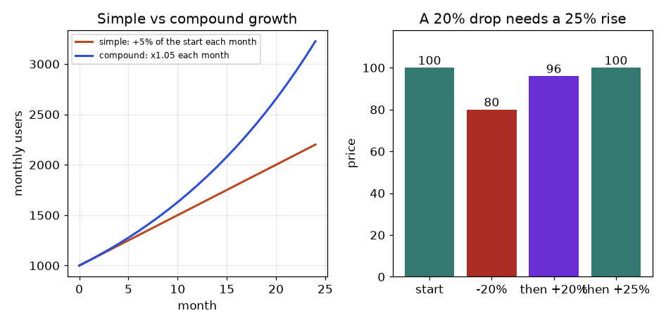
How to read it: on the left, both curves start at 1000 users, but the blue compound curve is always above the orange straight line after month 0, and the gap widens every month. On the right, the first bar is the starting price, the second shows a 20% cut (80), the third shows a 20% rise from there (96, still short of 100), and the last bar shows that a 25% rise from 80 is what restores 100.
start, rate = 1000, 0.05
print(round(start * (1 + rate) ** 12, 2)) # compound
print(start + 12 * start * rate) # simple
print((3380 / 2000) ** (1 / 2) - 1) # CAGR over 2 years
print(0.80 * 1.20) # drop then rise
print(0.20 / (1 - 0.20)) # rise needed to undo a 20% drop
print((1.5 * 0.5) ** 0.5 - 1) # geometric mean of +50%, -50%1795.86
1600.0
0.30000000000000004
0.96
0.25
-0.1339745962155614Going deeper: percent change is asymmetric
Going from 100 to 150 is +50%, but going back from 150 to 100 is −33.3%. That asymmetry has consequences for data work. Mean absolute percentage error (MAPE) penalises under-forecasts and over-forecasts differently, and is undefined when the true value is 0. Percent change on a tiny base (3 signups to 6 signups is "+100%") is dramatic but meaningless without the count. A symmetric alternative is the log change ln(new/old): ln(150/100) = +0.405 and ln(100/150) = −0.405, exactly opposite. Log changes also add up over time instead of multiplying, which is why finance and machine learning use them. You will meet the natural logarithm in Chapter 3.
A rule of thumb you may be asked in interviews is the rule of 72: at r% growth per period, the quantity doubles in about 72/r periods. At 5% this gives 14.4 months, and the exact answer (which needs logarithms) is ln 2 / ln 1.05 = 14.21 months, close enough for a quick estimate.
import math
print(72 / 5) # rule of 72
print(math.log(2) / math.log(1.05)) # exact doubling time (Chapter 3)
print(math.log(150 / 100), math.log(100 / 150)) # symmetric log changes
print((150 - 100) / 100, (100 - 150) / 150) # asymmetric percent changes14.4
14.206699082890461
0.4054651081081644 -0.40546510810816444
0.5 -0.33333333333333331.4 Powers, Roots and Scientific Notation
Beginner: repeated multiplication
am × an = am+n | am ÷ an = am−n | (am)n = amn
(ab)n = anbn | a0 = 1 | a−n = 1/an | a1/2 = √a | am/n = (n√a)m
Why is a0 = 1? Look at the pattern: 2³ = 8, 2² = 4, 2¹ = 2. Each step down divides by 2, so the next one is 2 ÷ 2 = 1 = 2⁰, and then 2⁻¹ = 1/2, 2⁻² = 1/4. The rules are not arbitrary; they keep the pattern going. Likewise (a1/2)² = a1/2 × 2 = a, so a1/2 must be the number that squares to a.
Intermediate: worked examples
Problem 1.4.1 Simplify 25 × 23, (32)3 and 5−2.
| Product rule | 2⁵ × 2³ = 25+3 = 2⁸ = 256. Check: 32 × 8 = 256 ✓. |
|---|---|
| Power of a power | (3²)³ = 32×3 = 3⁶ = 729. Check: 9³ = 9 × 9 × 9 = 729 ✓. |
| Negative exponent | 5⁻² = 1/5² = 1/25 = 0.04. |
Problem 1.4.2 Evaluate 163/4 and 8−2/3.
| 163/4 | Root first (it keeps numbers small): 161/4 = 2 because 2⁴ = 16. Then cube it: 2³ = 8. |
|---|---|
| 8−2/3 | Negative means reciprocal: 1/82/3. Cube root: 81/3 = 2. Square it: 4. So the answer is 1/4. |
Problem 1.4.3 Simplify √50 and compute its size.
| Idea | Pull out the largest perfect square factor, using √(ab) = √a × √b. |
|---|---|
| Factor | 50 = 25 × 2. |
| Simplify | √50 = √25 × √2 = 5√2. |
| Size | √2 = 1.41421, so 5 × 1.41421 = 7.0711. Check: 7.0711² = 50.0 ✓. |
import numpy as np
print(2**5 * 2**3, (3**2)**3, 5**-2)
print(16**(3/4), 8**(-2/3))
print(5 * np.sqrt(2), np.sqrt(50))
print((3 + 4)**2, 3**2 + 4**2)
print(np.sqrt(3**2 + 4**2))256 729 0.04
8.0 0.25
7.0710678118654755 7.0710678118654755
49 25
5.0Scientific notation
Data work deals with huge and tiny numbers: 5,000,000 rows, a probability of 0.00000032, a learning rate of 0.001. Scientific notation writes a number as m × 10k with 1 ≤ m < 10 and k an integer. The exponent k counts how many places the decimal point moved.
Problem 1.4.4 Write 0.000032 and 48,000,000 in scientific notation, then compute (3 × 104)(2 × 103) and (6 × 108) ÷ (2 × 10−3).
| Small number | 0.000032: move the point 5 places right to get 3.2, so 3.2 × 10⁻⁵. |
|---|---|
| Large number | 48,000,000: move the point 7 places left to get 4.8, so 4.8 × 10⁷. |
| Multiply | Multiply the front numbers and add exponents: (3 × 2) × 104+3 = 6 × 10⁷. |
| Divide | Divide front numbers and subtract exponents: (6 ÷ 2) × 108−(−3) = 3 × 10¹¹. |
Problem 1.4.5 A table has 5 million rows and 20 numeric columns stored as 8-byte floats. How much memory is that?
| Cells | 5 × 10⁶ × 20 = 1 × 10⁸ cells. |
|---|---|
| Bytes | 10⁸ × 8 = 8 × 10⁸ bytes. |
| Convert | 1 megabyte (MB) = 10⁶ bytes, so 8 × 10⁸ / 10⁶ = 800 MB. |
| Sanity | 800 MB is a plausible size for a laptop, so reading this into pandas will work but will not be free. |
Now a case where the computer's finite range bites. Suppose a model assigns a probability of 0.01 to each of many independent events and you multiply them. The product is 0.01n = 10−2n. float64 can represent numbers down to about 10−308 (and smaller "subnormal" numbers down to about 5 × 10−324), so after 200 factors the true value 10−400 becomes exactly 0.0. This is called underflow, and it is why likelihoods are always handled with logarithms, which turn the product into a sum of moderate numbers (Chapter 3).
import numpy as np
print(f"{3.2e-5:.1e}", 4.8e7)
print((3e4) * (2e3), (6e8) / (2e-3))
print(5_000_000 * 20 * 8 / 1e6, "MB")
p = np.full(200, 0.01)
print(np.prod(p[:100]), np.prod(p)) # 1e-200 is fine, 1e-400 underflows
print(np.sum(np.log(p))) # the log version is fine3.2e-05 48000000.0
60000000.0 300000000000.0
800.0 MB
1.0000000000000017e-200 0.0
-921.0340371976183Going deeper: powers in the wild
- Powers of 2 are the unit of computing. 2¹⁰ = 1024 ≈ 10³, so a kilobyte is about 1000 bytes; 2³² = 4,294,967,296 is why 32-bit integers overflow just past 4.29 billion (or 2.15 billion if signed); 2⁶⁴ ≈ 1.8 × 10¹⁹.
- The curse of dimensionality is a power. Cut each feature into 10 bins. One feature gives 10 cells, two give 10², and ten features give 10¹⁰ cells. With a million rows, almost every cell is empty. Exponent growth is the reason "more features" is not free.
- Roots measure size. The standard deviation is a square root (of variance), the Euclidean length of a vector (Chapter 5) is a square root of a sum of squares, and the RMSE puts the error back into the original units by taking a root.
- Sensible ranges. exp(710) overflows float64 to
inf, which is why softmax subtracts the maximum first (Chapter 3).
1.5 Variables, Expressions, Expanding and Factoring
Beginner: letters as labelled boxes
An expression is built from terms separated by plus or minus signs. In 4x² − 7x + 9, the terms are 4x², −7x and 9. The number in front of the letter is the coefficient (4 and −7), and 9 is the constant. Terms with the same letters and powers are like terms and can be combined: 5x + 3x = 8x, but 5x + 3x² cannot be combined.
Problem 1.5.1 Simplify 4(2x − 3) − 2(x − 5) + 7.
| Distribute | 4(2x − 3) = 8x − 12. And −2(x − 5) = −2x + 10 (both signs flip because we multiply by −2). |
|---|---|
| Write out | 8x − 12 − 2x + 10 + 7. |
| Combine like terms | (8x − 2x) + (−12 + 10 + 7) = 6x + 5. |
| Check at x = 2 | Original: 4(1) − 2(−3) + 7 = 4 + 6 + 7 = 17. Simplified: 6 × 2 + 5 = 17 ✓. |
Intermediate: expanding and factoring
Expanding removes brackets: a(b + c) = ab + ac, and (a + b)(c + d) = ac + ad + bc + bd (every term in the first bracket meets every term in the second). Factoring is the reverse: rewriting a sum as a product. Factoring is how you solve equations, simplify fractions and spot structure. Three patterns are worth knowing by heart.
Why do they work? Expand (a + b)(a + b): a·a + a·b + b·a + b·b = a² + 2ab + b². The middle term 2ab is what the wrong version (a² + b²) forgets. For the difference of squares, (a − b)(a + b) = a² + ab − ba − b² = a² − b², because the two middle terms cancel. Geometrically, a² + 2ab + b² is the area of a big square with side (a + b) cut into a square a², a square b², and two a-by-b rectangles.
Problem 1.5.2 Expand (x + 3)(x + 5) and (2x − 1)².
| First | x·x + x·5 + 3·x + 3·5 = x² + 5x + 3x + 15 = x² + 8x + 15. |
|---|---|
| Second | Perfect square with a = 2x, b = 1: (2x)² − 2(2x)(1) + 1² = 4x² − 4x + 1. |
| Check at x = 1 | (4)(6) = 24 and 1 + 8 + 15 = 24 ✓. (2 − 1)² = 1 and 4 − 4 + 1 = 1 ✓. |
Problem 1.5.3 Factor 6x² + 9x, x² + 7x + 12, 2x² + 7x + 3 and 49x² − 25.
| Common factor | 6x² + 9x: both terms share 3x, so 3x(2x + 3). |
|---|---|
| Simple trinomial | x² + 7x + 12: find two numbers that multiply to 12 and add to 7: 3 and 4. So (x + 3)(x + 4). |
| Leading coefficient 2 | 2x² + 7x + 3: multiply 2 × 3 = 6; find two numbers that multiply to 6 and add to 7: 6 and 1. Split the middle: 2x² + 6x + x + 3 = 2x(x + 3) + 1(x + 3) = (2x + 1)(x + 3). |
| Difference of squares | 49x² − 25 = (7x)² − 5² = (7x − 5)(7x + 5). |
| Check the second | (x + 3)(x + 4) = x² + 4x + 3x + 12 = x² + 7x + 12 ✓. |
Problem 1.5.4 Use the patterns to compute 97 × 103 and 99² in your head.
| First | 97 × 103 = (100 − 3)(100 + 3) = 100² − 3² = 10000 − 9 = 9991. |
|---|---|
| Second | 99² = (100 − 1)² = 10000 − 200 + 1 = 9801. |
| Check | 97 × 100 = 9700, plus 97 × 3 = 291, gives 9991 ✓. |
Problem 1.5.5 A data story: show that Σ(xᵢ − x̄)² = Σxᵢ² − n·x̄² on the data 2, 4, 6. (Here x̄ is the mean and Σ means "add up over all values"; there is more on Σ in Chapter 4.)
| Mean | x̄ = (2 + 4 + 6)/3 = 4. |
|---|---|
| Left side | Deviations −2, 0, 2. Squares 4, 0, 4. Sum = 8. |
| Right side | Σxᵢ² = 4 + 16 + 36 = 56. n·x̄² = 3 × 16 = 48. Difference = 8 ✓. |
| Why | Expand each square: (xᵢ − x̄)² = xᵢ² − 2x̄xᵢ + x̄². Add over i: Σxᵢ² − 2x̄(Σxᵢ) + n·x̄². Since Σxᵢ = n·x̄, the middle term is −2n·x̄², so the total is Σxᵢ² − n·x̄². |
import numpy as np
x = np.array([-2.0, 0.5, 1.0, 3.0, 10.0]) # test values
print(np.allclose((x + 3) * (x + 5), x**2 + 8*x + 15))
print(np.allclose((2*x - 1)**2, 4*x**2 - 4*x + 1))
print(np.allclose(49*x**2 - 25, (7*x - 5) * (7*x + 5)))
print(np.allclose((x + 3)**2, x**2 + 9)) # the wrong "identity"
data = np.array([2.0, 4.0, 6.0])
print(np.sum((data - data.mean())**2), np.sum(data**2) - len(data) * data.mean()**2)
print(97 * 103, 99**2)True
True
True
False
8.0 8.0
9991 9801Going deeper: identities, polynomials and numerical danger
An identity is true for every value of the variable ((a + b)² = a² + 2ab + b²), while an equation is true only for special values (x + 2 = 5 is true only for x = 3). A polynomial is a sum of terms cxᵏ with whole-number powers k; its degree is the biggest power. Linear models are degree 1, quadratics degree 2, and polynomial features in regression just add xᵏ columns. The binomial pattern continues: (a + b)³ = a³ + 3a²b + 3ab² + b³, with coefficients from Pascal's triangle, which return in Chapter 4.
Two algebraically identical expressions can behave differently on a computer. a² − b² and (a − b)(a + b) are equal on paper, but the first subtracts two huge, rounded numbers. Take a = 10⁸ + 1 and b = 10⁸: the exact answer is 1 × 200000001 = 200000001.
a, b = 1e8 + 1, 1e8
print(a * a - b * b) # subtract two huge rounded squares
print((a - b) * (a + b)) # factor first, then multiply
print(200000001) # exact answer200000000.0
200000001.0
200000001The factored form is exact here, because a − b = 1 is computed exactly, while the expanded form loses its last digits when the squares (about 10¹⁶) are rounded. The lesson reappears in Section 1.9: which algebraic form you compute with matters.
1.6 Solving Equations, Rearranging Formulas and Word Problems
Beginner: the balance scale
Problem 1.6.1 Solve 3x + 7 = 22.
| Step 1 | Subtract 7 from both sides: 3x = 15. |
|---|---|
| Step 2 | Divide both sides by 3: x = 5. |
| Check | 3 × 5 + 7 = 22 ✓. |
Intermediate: linear equations with brackets and fractions
Problem 1.6.2 Solve 5(x − 2) = 3x + 4.
| Expand | 5x − 10 = 3x + 4. |
|---|---|
| Collect x on the left | Subtract 3x from both sides: 2x − 10 = 4. |
| Isolate | Add 10: 2x = 14. Divide by 2: x = 7. |
| Check | Left 5(7 − 2) = 25. Right 3 × 7 + 4 = 25 ✓. |
Problem 1.6.3 Solve x/3 + x/4 = 14.
| Clear the fractions | Multiply every term by the common denominator 12: 12·x/3 + 12·x/4 = 12 × 14, so 4x + 3x = 168. |
|---|---|
| Combine | 7x = 168. |
| Solve | x = 24. |
| Check | 24/3 + 24/4 = 8 + 6 = 14 ✓. |
Problem 1.6.4 Data story: cloud storage plan A costs 50 per month plus 0.10 per GB. Plan B costs 20 per month plus 0.16 per GB. At how many GB do they cost the same? Which plan is cheaper for 800 GB?
| Setup | Let g = number of GB. Cost A = 50 + 0.10g, cost B = 20 + 0.16g. |
|---|---|
| Equal cost | 50 + 0.10g = 20 + 0.16g. |
| Solve | Subtract 0.10g and 20 from both sides: 30 = 0.06g, so g = 30/0.06 = 500. |
| Check | A: 50 + 50 = 100. B: 20 + 80 = 100 ✓. |
| 800 GB | A = 50 + 80 = 130, B = 20 + 128 = 148. Plan A is cheaper beyond the break-even of 500 GB. |
Two special cases show up. 2x + 1 = 2x + 5 reduces to 1 = 5, which is never true: no solution. And 2(x + 1) = 2x + 2 reduces to 2 = 2, which is always true: every x is a solution (an identity). If the variable cancels, look at what is left.
Rearranging formulas
Rearranging is solving for a different letter. You treat the other letters as if they were numbers.
Problem 1.6.5 The z-score is z = (x − μ)/σ. Solve for x and for σ. Then find x when z = −1.5, μ = 500, σ = 80.
| Solve for x | Multiply both sides by σ: zσ = x − μ. Add μ: x = μ + zσ. |
|---|---|
| Solve for σ | From zσ = x − μ, divide by z: σ = (x − μ)/z (z ≠ 0). |
| Plug in | x = 500 + (−1.5)(80) = 500 − 120 = 380. |
| Check | z = (380 − 500)/80 = −120/80 = −1.5 ✓. |
Problem 1.6.6 Compound interest: A = P(1 + r)t where P is the start, r the rate per period, t the number of periods, A the final amount. Solve for P and for r. Then find r if 1000 grows to 1331 in 3 periods.
| Solve for P | Divide by (1 + r)t: P = A/(1 + r)t. This is the present value: what a future amount is worth today. |
|---|---|
| Solve for r | A/P = (1 + r)t. Take the t-th root of both sides: (A/P)1/t = 1 + r, so r = (A/P)1/t − 1. |
| Plug in | A/P = 1331/1000 = 1.331. Cube root: 1.1 × 1.1 × 1.1 = 1.331, so 1.3311/3 = 1.1. |
| Answer | r = 1.1 − 1 = 0.10 = 10% per period. Check: 1000 × 1.1³ = 1331 ✓. |
Solving for t is harder because t is in an exponent; the tool for that is the logarithm in Chapter 3.
x = (22 - 7) / 3 # 3x + 7 = 22
print(x)
print((14 * 12) / (4 + 3)) # x/3 + x/4 = 14, after multiplying by 12
print(30 / 0.06) # break-even GB
mu, sigma, z = 500, 80, -1.5
x = mu + z * sigma
print(x, (x - mu) / sigma) # solve for x, then check z
print((1331 / 1000) ** (1 / 3) - 1) # growth rate per period5.0
24.0
500.0
380.0 -1.5
0.10000000000000009Units, sanity checks and word problems
Numbers in real life carry units (dollars, seconds, GB, requests per second). Carry the units through your algebra like extra variables: they must obey the same equation. Adding 5 seconds to 3 metres is nonsense, and your algebra will tell you so before the code does. To convert, multiply by a ratio that equals 1: 90 km/h × (1000 m / 1 km) × (1 h / 3600 s) = 90 × 1000 / 3600 = 25 m/s.
Before trusting any answer, run a sanity check. Four quick ones: (1) Size: round to one digit and estimate; 5 ms × 2 million requests is about 5 × 10⁻³ × 2 × 10⁶ = 10⁴ s, about 2.8 hours. (2) Direction: should the answer go up or down? (3) Plug back into the original equation. (4) Limiting case: set a variable to 0 or 1 and see whether the formula says something sensible.
Problem 1.6.7 A shop sells an item at 24 each. Fixed costs are 1800 per month and each item costs 9 to make. How many items must be sold to break even?
| Unknown | q = items sold per month. |
|---|---|
| Equation | Revenue = cost: 24q = 1800 + 9q. |
| Solve | 15q = 1800, so q = 120. |
| Check | Revenue 24 × 120 = 2880. Cost 1800 + 9 × 120 = 1800 + 1080 = 2880 ✓. |
Problem 1.6.8 A fraud dataset has 1000 rows, of which 3% (30 rows) are fraud. You want 10% fraud by adding k duplicated fraud rows (oversampling). Find k.
| Equation | New fraud share = (30 + k)/(1000 + k) = 0.10. |
|---|---|
| Clear the fraction | 30 + k = 0.10(1000 + k) = 100 + 0.10k. |
| Solve | k − 0.10k = 100 − 30, so 0.9k = 70 and k = 77.78. |
| Round up | k = 78 whole rows. Check: (30 + 78)/(1000 + 78) = 108/1078 = 0.1002, about 10.02% ✓. |
Problem 1.6.9 A training job takes 5 hours on GPU A at 3.00 per hour. GPU B costs 4.50 per hour. How many times faster (s) must B be before it is cheaper?
| Costs | A: 5 × 3.00 = 15. B: time is 5/s hours, cost (5/s) × 4.50 = 22.5/s. |
|---|---|
| Break-even | 22.5/s = 15, so s = 22.5/15 = 1.5. |
| Meaning | If B is faster than 1.5 times, it is cheaper. At s = 1.8: time 2.78 h, cost 12.50, less than 15 ✓. |
print(90 * 1000 / 3600) # km/h to m/s
print(5e-3 * 2e6 / 3600) # hours for 2 million 5 ms requests
print(1800 / (24 - 9)) # break-even items
k = 70 / 0.9
print(round(k, 2), (30 + 78) / (1000 + 78))
print(22.5 / 15, 5 / 1.8 * 4.5)25.0
2.7777777777777777
120.0
77.78 0.10018552875695733
1.5 12.5latency_ms, rate_pct) and do a size sanity check on any result you are about to send to a stakeholder.Going deeper: what "solving" really means
A solution is a number that makes the equation true, and every step you take should be reversible, so that you do not gain or lose solutions. Three actions break that: dividing by an expression that could be zero (you lose the solution where it is zero), squaring both sides (you can create fake solutions, since −2 and 2 have the same square), and multiplying by an expression of unknown sign in an inequality (the direction flips). Section 1.7 and 1.8 show each failure with numbers. Also note that a linear equation ax + b = 0 has exactly one solution x = −b/a when a ≠ 0. In machine learning, a prediction of the form ŷ = wx + b is exactly such a linear expression, and "fit the model" is the task of solving for the unknown w and b from data.
1.7 Quadratic Equations
Beginner: the curve that turns around
The basic tool is the zero-product rule: if A × B = 0 then A = 0 or B = 0. (A product of two numbers can only be zero if one of them is.) So if you can factor a quadratic into brackets, you can read off the roots.
Problem 1.7.1 Solve x² − 5x + 6 = 0.
| Factor | Two numbers that multiply to 6 and add to −5: −2 and −3. So (x − 2)(x − 3) = 0. |
|---|---|
| Zero-product rule | x − 2 = 0 or x − 3 = 0. |
| Roots | x = 2 or x = 3. |
| Check | 2² − 10 + 6 = 0 ✓ and 3² − 15 + 6 = 0 ✓. |
Intermediate: three methods
Method 1, factoring. Works when the roots are neat. Example: 2x² + 7x + 3 = 0 factors as (2x + 1)(x + 3) = 0 (Section 1.5), so 2x + 1 = 0 gives x = −1/2 and x + 3 = 0 gives x = −3.
Method 2, completing the square. Use the perfect-square pattern backwards: x² + bx = (x + b/2)² − (b/2)². You add and subtract the missing square.
Problem 1.7.2 Solve x² + 6x + 5 = 0 by completing the square.
| Half of b | b = 6, half is 3, its square is 9. |
|---|---|
| Rewrite | x² + 6x + 5 = (x² + 6x + 9) − 9 + 5 = (x + 3)² − 4. |
| Solve | (x + 3)² = 4, so x + 3 = ±2 (both signs!). |
| Roots | x = −3 + 2 = −1 or x = −3 − 2 = −5. |
| Check | 1 − 6 + 5 = 0 ✓ and 25 − 30 + 5 = 0 ✓. |
Method 3, the quadratic formula. It always works. Here is why, by completing the square on the general equation, one step per line.
The discriminant D = b² − 4ac sits under the root, so it decides what happens. If D > 0, the root is a real number and there are two real roots. If D = 0, ± zero is zero and there is one repeated root x = −b/2a. If D < 0, you would need the square root of a negative number, so there are no real roots (the roots are complex numbers, which return when we study eigenvalues).
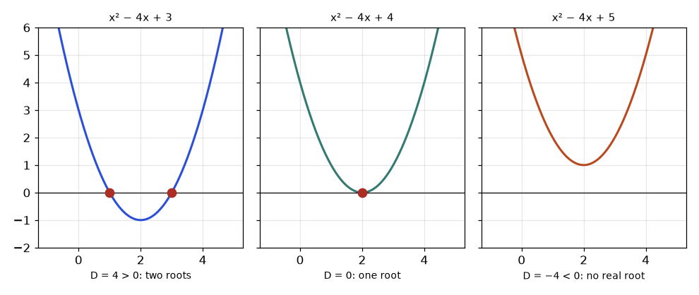
How to read it: the roots are where the curve meets the black horizontal line y = 0. The left parabola meets it at x = 1 and x = 3 (red dots, D = 4). The middle one just touches it at x = 2 (D = 0). The right one floats above it, so there is no real root (D = −4). All three have the same b, and only c moved the curve up.
Problem 1.7.3 Solve 2x² − 3x − 5 = 0 with the formula.
| Identify | a = 2, b = −3, c = −5. |
|---|---|
| Discriminant | D = (−3)² − 4(2)(−5) = 9 + 40 = 49. Positive, so two roots. |
| Formula | x = (−(−3) ± √49)/(2 × 2) = (3 ± 7)/4. |
| Roots | x = 10/4 = 2.5 or x = −4/4 = −1. |
| Check | 2(6.25) − 7.5 − 5 = 0 ✓ and 2 + 3 − 5 = 0 ✓. |
Problem 1.7.4 Data story: a shop's daily profit at price p is P(p) = −2p² + 120p − 1000. Find the break-even prices and the price with maximum profit.
| Break-even | Solve −2p² + 120p − 1000 = 0. Here a = −2, b = 120, c = −1000. |
|---|---|
| Discriminant | D = 120² − 4(−2)(−1000) = 14400 − 8000 = 6400, √D = 80. |
| Roots | p = (−120 ± 80)/(2 × (−2)) = (−120 ± 80)/(−4), so p = 10 or p = 50. |
| Maximum | A parabola is symmetric, so the top is halfway between the roots: p = 30. Also p = −b/2a = −120/(−4) = 30 ✓. |
| Max profit | P(30) = −2(900) + 3600 − 1000 = 800. |
Problem 1.7.5 What goes wrong: classify x² − 4x + 13 = 0.
| Discriminant | D = 16 − 4(1)(13) = 16 − 52 = −36. |
|---|---|
| Meaning | Negative, so no real roots: the curve has its lowest point at x = 2, y = 13 − 4 = 9, which is above zero. |
| Note | The complex roots are 2 ± 3i, where i is the number with i² = −1. |
import numpy as np
def roots(a, b, c):
d = b * b - 4 * a * c
if d < 0:
return d, None
return d, (float((-b + np.sqrt(d)) / (2 * a)), float((-b - np.sqrt(d)) / (2 * a)))
print(roots(1, -5, 6))
print(roots(2, -3, -5))
print(roots(-2, 120, -1000))
print(roots(1, -4, 13))
print(-2 * 30**2 + 120 * 30 - 1000)(1, (3.0, 2.0))
(49, (2.5, -1.0))
(6400, (10.0, 50.0))
(-36, None)
800Going deeper: structure of the roots
If the roots are r₁ and r₂ then ax² + bx + c = a(x − r₁)(x − r₂) = a(x² − (r₁ + r₂)x + r₁r₂). Matching coefficients gives Vieta's formulas: r₁ + r₂ = −b/a and r₁ × r₂ = c/a. For x² − 5x + 6 the sum is 5 and the product is 6 ✓. This is a free check on any answer, and in Chapter 8 the same facts reappear as "the eigenvalues add up to the trace and multiply to the determinant".
The vertex of the parabola is at x = −b/2a with height c − b²/4a. If a > 0 it is a minimum (a smile), if a < 0 a maximum (a frown). A function with a single smooth minimum, like a parabola, is the friendliest thing an optimiser can meet, which is why squared losses are popular (Section 1.9 and Chapter 14).
import numpy as np
a, b, c = 1, -5, 6
r = np.roots([a, b, c])
print(np.sort(r), r.sum(), -b / a, r.prod(), c / a)
print(-b / (2 * a), c - b**2 / (4 * a)) # vertex x and height[2. 3.] 5.0 5.0 6.0 6.0
2.5 -0.251.8 Systems of Equations, Inequalities and Absolute Value
Beginner: two unknowns, two clues
Problem 1.8.1 A pen holds a chickens and b rabbits: 10 heads and 26 legs in total (a chicken has 2 legs, a rabbit has 4). Find a and b.
| Equations | a + b = 10 (heads) and 2a + 4b = 26 (legs). |
|---|---|
| Substitution | From the first, a = 10 − b. Put it in the second: 2(10 − b) + 4b = 26, so 20 − 2b + 4b = 26, so 2b = 6, b = 3. |
| Back-substitute | a = 10 − 3 = 7. |
| Check | 7 + 3 = 10 ✓ and 14 + 12 = 26 ✓. |
Intermediate: substitution, elimination and the graph
Substitution solves one equation for one variable and plugs it into the other. Elimination adds or subtracts multiples of the equations so that one variable disappears.
Problem 1.8.2 Solve 3x + 2y = 16 and x − y = 2 by elimination.
| Align | Multiply the second equation by 2: 2x − 2y = 4. |
|---|---|
| Add | (3x + 2y) + (2x − 2y) = 16 + 4, so 5x = 20 and x = 4. The y terms cancelled. |
| Back-substitute | 4 − y = 2, so y = 2. |
| Check | 12 + 4 = 16 ✓ and 4 − 2 = 2 ✓. |
Problem 1.8.3 Data story: a line ŷ = wx + b passes through the data points (1, 5) and (3, 11). Find w and b.
| Equations | Point (1, 5): w + b = 5. Point (3, 11): 3w + b = 11. |
|---|---|
| Subtract | (3w + b) − (w + b) = 11 − 5, so 2w = 6 and w = 3. |
| Back-substitute | 3 + b = 5, so b = 2. |
| Meaning | The line is ŷ = 3x + 2. Fitting a line to two points is exactly solving a 2 × 2 system. |
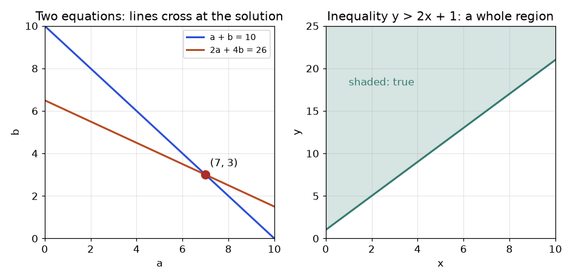
How to read it: on the left every point on the blue line satisfies the heads equation, every point on the orange line satisfies the legs equation, and only the red dot (7, 3) sits on both. On the right, the green line is y = 2x + 1 and the shaded region above it is every point where y > 2x + 1 is true.
Problem 1.8.4 What goes wrong: x + y = 2 and 2x + 2y = 5.
| Eliminate | Multiply the first by 2: 2x + 2y = 4. Subtract from the second: 0 = 1. |
|---|---|
| Meaning | Impossible, so there is no solution: the lines are parallel and never cross. |
| The other case | x + y = 2 and 2x + 2y = 4 give 0 = 0: the same line, so infinitely many solutions. |
For the general system ax + by = e, cx + dy = f the answer is x = (ed − bf)/(ad − bc) and y = (af − ec)/(ad − bc), valid when ad − bc ≠ 0. The number ad − bc is the determinant; when it is 0 the lines are parallel or identical, exactly the two bad cases above (Chapter 7). Test on Problem 1.8.2: a = 3, b = 2, e = 16, c = 1, d = −1, f = 2. Determinant = −3 − 2 = −5. x = (16(−1) − 2 × 2)/(−5) = −20/−5 = 4 ✓ and y = (3 × 2 − 16 × 1)/(−5) = −10/−5 = 2 ✓.
import numpy as np
A = np.array([[3.0, 2.0], [1.0, -1.0]])
rhs = np.array([16.0, 2.0])
print(np.linalg.solve(A, rhs)) # x and y
pts = np.array([[1.0, 1.0], [3.0, 1.0]]) # rows: [x, 1] for w*x + b
print(np.linalg.solve(pts, np.array([5.0, 11.0]))) # w, b
print(np.linalg.det(np.array([[1.0, 1.0], [2.0, 2.0]]))) # parallel lines: 0[4. 2.]
[3. 2.]
0.0Inequalities
An inequality says one side is bigger than the other (<, >, ≤, ≥). You solve it like an equation with one new rule: when you multiply or divide both sides by a negative number, the inequality flips. Check: 2 < 3, and multiplying by −1 gives −2 > −3.
Problem 1.8.5 Solve 3x − 5 > 10, then −2x + 3 ≤ 11, then −1 < 2x + 3 ≤ 9.
| First | 3x > 15, so x > 5. |
|---|---|
| Second | −2x ≤ 8. Divide by −2 and flip: x ≥ −4. Check x = 0: 3 ≤ 11 ✓; x = −5 gives 13 ≤ 11 ✗. |
| Third | Do the same thing to all three parts. Subtract 3: −4 < 2x ≤ 6. Divide by 2: −2 < x ≤ 3. |
Problem 1.8.6 Quadratic inequality: for which prices p is the profit −2p² + 120p − 1000 positive?
| Roots | From Problem 1.7.4 the profit is zero at p = 10 and p = 50. |
|---|---|
| Shape | a = −2 < 0, so the parabola is a frown: positive between the roots, negative outside. |
| Test | p = 30 gives 800 > 0 ✓; p = 5 gives −50 + 600 − 1000 = −450 < 0 ✓. |
| Answer | 10 < p < 50. |
Absolute value
The absolute value |x| is the distance of x from 0, so it is never negative: |5| = 5 and |−5| = 5. More usefully, |x − a| is the distance between x and a. That reading solves everything. |x − 3| = 5 means "x is 5 away from 3", so x = 8 or x = −2. |x − 3| < 5 means "within 5 of 3", so −2 < x < 8. |x − 3| ≥ 5 means "at least 5 away", so x ≤ −2 or x ≥ 8.
Problem 1.8.7 Data story: delivery times have mean 50 minutes and standard deviation 4. A common rule flags a time as an outlier if |z| > 3 where z = (x − 50)/4. Which times are flagged?
| Translate | |x − 50|/4 > 3, so |x − 50| > 12. |
|---|---|
| Distance reading | More than 12 minutes away from 50. |
| Solve | x < 50 − 12 = 38 or x > 50 + 12 = 62. |
| Check | x = 65: z = 15/4 = 3.75 flagged ✓. x = 60: z = 2.5 not flagged ✓. |
import numpy as np
print(2 < 3, -2 > -3) # multiplying by -1 flips the sign
xs = np.array([-1.0, 0.25, 1.0, 3.0])
print(1 / xs < 2) # includes negative x
print((xs > 0.5) | (xs < 0)) # the right answer matches
times = np.array([35, 38, 50, 62, 65])
print(np.abs((times - 50) / 4) > 3)
print(abs(5 + -3), abs(5) + abs(-3))True True
[ True False True True]
[ True False True True]
[ True False False False True]
2 8Going deeper: why absolute value shapes machine learning
The absolute error |y − ŷ| and the squared error (y − ŷ)² are the two classic ways to penalise a miss. Squared error punishes big misses much harder (a miss of 10 costs 100 instead of 10), so it chases outliers; absolute error treats all misses proportionally and is more robust, but its graph has a sharp corner at 0 and so it is not smooth (Chapter 10). The same pair appears as L2 and L1 regularisation. The statement |x − a| < ε, "x is within ε of a", is the language in which limits and derivatives are defined in Chapter 10, and the triangle inequality is what makes distances behave like distances.
1.9 The Expert Layer: Error, Stability and Algebra Behind Loss Functions
Absolute versus relative error
If the true value is t and you have an estimate e, then the absolute error is |e − t| and the relative error is |e − t|/|t|. Absolute error has the units of the quantity, while relative error is a pure ratio, a "percent wrong". Which one matters depends on the size of what you measure.
Problem 1.9.1 A forecast says 1010 when the truth is 1000, and another says 0.011 when the truth is 0.001. Compare the errors.
| First | Absolute 10. Relative 10/1000 = 0.01 = 1%. |
|---|---|
| Second | Absolute 0.010. Relative 0.010/0.001 = 10 = 1000%. |
| Meaning | The second has a tiny absolute error but is wildly wrong in proportion. For quantities that span orders of magnitude, use relative error (or work in logs). |
Every floating-point operation introduces a relative error of at most about ε/2 ≈ 1.1 × 10⁻¹⁶. That is tiny, and one operation is harmless. The trouble starts when errors get amplified, and the main amplifier is subtracting two nearly equal numbers.
Catastrophic cancellation
Suppose two numbers each carry 16 correct digits and agree in their first 12. Their difference keeps only 4 correct digits, because the leading digits cancel and the rounding noise that was in digit 16 is now in digit 4. This is catastrophic cancellation. You cannot fix it by adding precision after the fact; you must rewrite the algebra so the subtraction never happens.
Problem 1.9.2 Compute (1 − cos x) for x = 10⁻⁸ in two ways. Use the identity 1 − cos x = 2 sin²(x/2).
| Naive | cos(10⁻⁸) = 1 − 5 × 10⁻¹⁷ + ..., but the nearest float to that is exactly 1.0, so 1 − 1.0 = 0. |
|---|---|
| Rewrite | 2 sin²(x/2) = 2 × (5 × 10⁻⁹)² = 2 × 25 × 10⁻¹⁸ = 5 × 10⁻¹⁷. |
| Verdict | The naive answer is 100% wrong; the rewritten one is correct to full precision. |
Problem 1.9.3 A real data bug: variance by the shortcut formula mean(x²) − mean(x)², which is the algebra of Problem 1.5.5. Test on x = 10⁹ + 1, 10⁹ + 2, 10⁹ + 3, whose true population variance is 2/3.
| Exact | Mean = 10⁹ + 2. Deviations −1, 0, 1, so variance = (1 + 0 + 1)/3 = 0.6667. |
|---|---|
| Shortcut | The squares are about 10¹⁸, and mean(x²) and mean(x)² agree in about 18 digits, but doubles hold only 16. The difference is dominated by rounding noise. |
| Fix | Subtract the mean first, then square: mean((x − x̄)²). The subtraction of a nearby number is exact here, so nothing cancels. |
import numpy as np
x = 1e-8
print(1 - np.cos(x), 2 * np.sin(x / 2) ** 2)
data = np.array([1e9 + 1, 1e9 + 2, 1e9 + 3])
print(np.mean(data**2) - np.mean(data) ** 2) # shortcut formula
print(np.mean((data - data.mean()) ** 2)) # centre first
print(np.var(data)) # NumPy does it safely0.0 5.0000000000000005e-17
0.0
0.6666666666666666
0.6666666666666666np.var, np.log1p, np.expm1, scipy.special.logsumexp) that were written by people who care about this.Numerical stability of the quadratic formula
Take x² + bx + 1 = 0 with a huge b. The roots are about −b and about −1/b. In the formula x = (−b ± √(b² − 4))/2 with b = 10⁸, the root √(b² − 4) is almost exactly b. So (−b + √D)/2 subtracts two nearly equal numbers and the small root is almost all rounding noise. The other root, (−b − √D)/2, adds two numbers of the same sign and is fine.
The cure is Vieta's formula from Section 1.7: the product of the roots is c/a. Compute the big root safely, then get the small one from the product.
Here sign(b) is +1 if b is positive and −1 if negative, so the two terms in q always have the same sign and never cancel.
Problem 1.9.4 Solve x² + 10⁸x + 1 = 0 both ways. The true small root is −1.000000000000000100... × 10⁻⁸.
| Setup | a = 1, b = 10⁸, c = 1, D = 10¹⁶ − 4. |
|---|---|
| Naive small root | (−10⁸ + √(10¹⁶ − 4))/2. The square root is 10⁸ − 2 × 10⁻⁸, but a float near 10⁸ has spacing about 1.5 × 10⁻⁸, so it is stored in steps that are the same size as the answer. The result is wrong in the first digit. |
| Stable | q = −(10⁸ + √D)/2 ≈ −10⁸, x₂ = c/q = 1/(−10⁸) = −10⁻⁸ with full precision. |
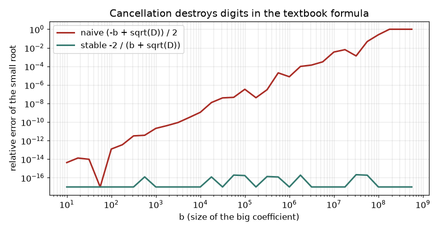
How to read it: the horizontal axis is how large b is. The vertical axis is how wrong the small root is, as a fraction. The red line climbs from tiny errors at b = 10 to an error of tens of percent at b = 10⁸ and 100% beyond, meaning no correct digits survive. The teal line stays near 10⁻¹⁶, the best a double can do.
import numpy as np
b = 1e8
d = np.sqrt(b * b - 4)
naive = (-b + d) / 2
q = -(b + d) / 2 # b is positive, so the signs agree
stable = 1 / q # c / q with c = 1
print(naive)
print(stable)
print(abs(naive - stable) / abs(stable)) # relative error of the naive one-7.450580596923828e-09
-1e-08
0.2549419403076172Why algebra underlies loss functions
A loss function turns "how wrong is the model?" into one number. Training a model means choosing parameters that make this number small. The simplest model predicts the same constant c for everyone. With data y₁, ..., yₙ, the mean squared error (MSE) is L(c) = (1/n) Σ (yᵢ − c)². Expand each square with the perfect-square identity of Section 1.5 and collect:
This is a quadratic in c with a = 1. Complete the square:
Read what that says. The square (c − ȳ)² is never negative and is zero only at c = ȳ. So the best constant prediction under squared error is the mean, and the lowest achievable loss is the variance. Two big ideas, "the mean minimises squared error" and "variance is the error of the best constant", fall out of nothing but a perfect square.
Problem 1.9.5 Data y = 3, 5, 10. Find the loss for guess c = 6 and the best constant, using the completed square.
| Mean | ȳ = (3 + 5 + 10)/3 = 6. |
|---|---|
| Mean of squares | (9 + 25 + 100)/3 = 134/3 = 44.667. |
| Variance | 44.667 − 6² = 8.667 = 26/3. |
| Completed square | L(c) = (c − 6)² + 26/3. At c = 6 the loss is 8.667. |
| Direct check | ((3 − 6)² + (5 − 6)² + (10 − 6)²)/3 = (9 + 1 + 16)/3 = 26/3 = 8.667 ✓. |
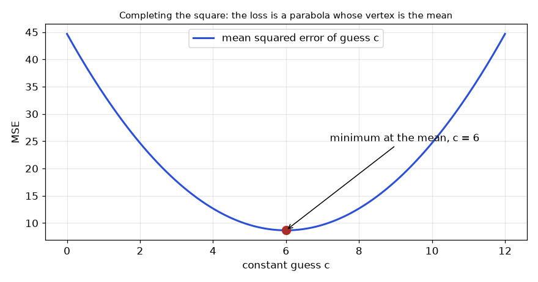
How to read it: each point on the blue curve is the average squared miss for one possible constant guess. Moving away from 6 in either direction raises the loss, symmetrically, because (c − 6)² is symmetric. The height at the bottom, 8.67, is the variance of the data.
Problem 1.9.6 Ridge-style penalty: minimise (w − 6)² + λw² for λ = 0.5. (A penalty λw² discourages large weights; it is called L2 regularisation, and λ is the penalty strength.)
| Expand | (w − 6)² + λw² = w² − 12w + 36 + λw² = (1 + λ)w² − 12w + 36. |
|---|---|
| Vertex | For a quadratic aw² + bw + c, the minimum is at w = −b/2a = 12/(2(1 + λ)) = 6/(1 + λ). |
| Plug in | 6/1.5 = 4. |
| Meaning | The penalty shrinks the best weight from 6 to 4. As λ grows the weight shrinks towards 0. The whole idea of regularisation is vertex arithmetic. |
import numpy as np
y = np.array([3.0, 5.0, 10.0])
def mse(c):
return np.mean((y - c) ** 2)
print(mse(6), y.var()) # loss at the mean equals the variance
print(mse(5), (5 - 6) ** 2 + y.var()) # completed-square formula
cs = np.linspace(0, 12, 1201)
print(cs[np.argmin([mse(c) for c in cs])]) # best constant on a grid
lam = 0.5
print(6 / (1 + lam)) # ridge vertex8.666666666666666 8.666666666666666
9.666666666666666 9.666666666666666
6.0
4.0For a straight-line model ŷ = wx + b, the MSE is a quadratic in the two unknowns w and b. Finding its minimum turns into solving two linear equations in two unknowns (the "normal equations"), which is exactly the system machinery of Section 1.8. With many features it becomes a big system, solved with matrices in Chapter 7. Every model that uses squared loss, from linear regression to the last layer of a neural network regressor, is, underneath, a perfect square being minimised.
==. (2) Prefer algebraically stable forms (centred variance, the stable quadratic formula, log1p). (3) Use relative error for quantities of very different sizes. (4) The mean minimises squared error and the median minimises absolute error, and the first fact is a one-line completed square.Chapter recap
- Numbers nest: ℕ ⊂ ℤ ⊂ ℚ ⊂ ℝ. Computers store only a finite menu of floating-point numbers, so 0.1 + 0.2 ≠ 0.3 exactly. Compare with a tolerance and use integers or Decimal for money.
- Order of operations: brackets, powers, × and ÷ left to right, + and − left to right. −3² = −9 but (−3)² = 9.
- Add fractions with a common denominator, divide by flipping. Always weight when averaging averages.
- Percentages are multipliers: +p% is × (1 + p/100). Compound changes multiply, never add. A 20% drop needs a 25% rise.
- Say "percentage points" for differences of rates and "percent" for relative change; the denominator is the old value.
- Exponent rules: aman = am+n, (am)n = amn, a0 = 1, a−n = 1/an, a1/2 = √a. (a + b)² ≠ a² + b².
- Scientific notation tames huge and tiny numbers, and products of tiny probabilities underflow, so use logs.
- Expand with distribution, factor with common factors, trinomials, perfect squares and the difference of squares. Check algebra by plugging in numbers.
- Solve equations by doing the same thing to both sides; check the answer; beware dividing by zero and squaring (fake roots). Flip an inequality when multiplying by a negative.
- Quadratics: factor, complete the square, or use the formula; the discriminant D = b² − 4ac gives 2, 1 or 0 real roots; the vertex is at −b/2a.
- Two unknowns need two equations: substitution or elimination; parallel lines mean no solution.
- Expert: subtraction of nearly equal numbers destroys digits; rewrite the algebra (centred variance, stable quadratic formula). The mean minimises squared error because L(c) = (c − ȳ)² + variance.
| Formula / pattern | Meaning |
|---|---|
| percent change = (new − old)/old | Relative change, base is the old value |
| value × (1 + r)n | Compound growth over n periods |
| (a + b)² = a² + 2ab + b² | Perfect square; the middle term is never zero |
| a² − b² = (a − b)(a + b) | Difference of squares |
| x = (−b ± √(b² − 4ac))/2a | Roots of ax² + bx + c = 0 |
| D = b² − 4ac | D > 0 two roots, D = 0 one, D < 0 none (real) |
| r₁ + r₂ = −b/a, r₁r₂ = c/a | Vieta: sum and product of roots |
| z = (x − μ)/σ ⇔ x = μ + zσ | Standardise and un-standardise |
| |x − a| < r ⇔ a − r < x < a + r | Within distance r of a |
| relative error = |est − true|/|true| | Error as a fraction of the size |
| L(c) = (c − ȳ)² + var(y) | Mean minimises MSE; minimum is the variance |
Practice set
Problem 1.10.1 Compute 6 + 4 × 3² − 10 ÷ 5.
Answer: Power first: 3² = 9. Then 4 × 9 = 36 and 10 ÷ 5 = 2. Then 6 + 36 − 2 = 40.
Problem 1.10.2 Compute 2/3 + 5/6 − 1/4 as a single fraction in lowest terms.
Answer: Denominator 12: 8/12 + 10/12 − 3/12 = 15/12 = 5/4.
Problem 1.10.3 A price of 250 rises 12%, then falls 12%. What is the final price and the net percent change?
Answer: 250 × 1.12 = 280, then 280 × 0.88 = 246.40. The multiplier is 1.12 × 0.88 = 0.9856, so the net change is −1.44%. It is not zero.
Problem 1.10.4 A conversion rate moves from 3.2% to 3.6%. State the change in percentage points and in relative percent.
Answer: 3.6 − 3.2 = 0.4 percentage points. Relative: 0.4/3.2 = 0.125 = 12.5%.
Problem 1.10.5 Simplify (2x³y)² × (3xy²) ÷ (6x²y).
Answer: (2x³y)² = 4x⁶y². Times 3xy² gives 12x⁷y⁴. Divide by 6x²y: 2x7−2y4−1 = 2x⁵y³. Check at x = y = 1: (4 × 3)/6 = 2 ✓.
Problem 1.10.6 Compute (4 × 10⁵)(5 × 10⁻⁹) in scientific notation. Then, if one operation takes 3.2 × 10⁻⁴ seconds and you do 10⁶ of them, how long is that?
Answer: 4 × 5 = 20 and 105−9 = 10⁻⁴, so 20 × 10⁻⁴ = 2 × 10⁻³. Time: 3.2 × 10⁻⁴ × 10⁶ = 3.2 × 10² = 320 seconds, about 5.3 minutes.
Problem 1.10.7 Factor x² − x − 12 and 9x² − 16, then use a pattern to compute 51 × 49.
Answer: Numbers that multiply to −12 and add to −1: −4 and 3, so (x − 4)(x + 3). 9x² − 16 = (3x − 4)(3x + 4). And 51 × 49 = (50 + 1)(50 − 1) = 2500 − 1 = 2499.
Problem 1.10.8 Solve 4(x + 2) − 3 = 2x + 9.
Answer: 4x + 8 − 3 = 2x + 9, so 4x + 5 = 2x + 9, so 2x = 4, so x = 2. Check: 4(4) − 3 = 13 and 2(2) + 9 = 13 ✓.
Problem 1.10.9 From z = (x − μ)/σ, find σ when x = 90, μ = 72, z = 1.5. Then, from A = P(1 + r)t, find r when A = 1331, P = 1000, t = 3.
Answer: σ = (x − μ)/z = 18/1.5 = 12. And r = (A/P)1/t − 1 = 1.3311/3 − 1 = 1.1 − 1 = 0.10, so 10%.
Problem 1.10.10 Solve 3x² − 11x − 4 = 0 and verify with Vieta's formulas.
Answer: D = 121 + 48 = 169, √D = 13. x = (11 ± 13)/6, so x = 4 or x = −1/3. Sum 4 − 1/3 = 11/3 = −b/a ✓. Product 4 × (−1/3) = −4/3 = c/a ✓.
Problem 1.10.11 For which k does x² + kx + 9 = 0 have exactly one real root, and what is that root?
Answer: Set D = k² − 36 = 0, so k = ±6. For k = 6 the root is −b/2a = −3; for k = −6 it is +3. Indeed x² + 6x + 9 = (x + 3)².
Problem 1.10.12 Solve the system 2x + 3y = 12 and 4x − y = 10.
Answer: From the second, y = 4x − 10. Substitute: 2x + 3(4x − 10) = 12, so 14x − 30 = 12, so x = 3 and y = 2. Check: 6 + 6 = 12 ✓ and 12 − 2 = 10 ✓.
Problem 1.10.13 Solve −3x + 7 < 22 and |2x − 1| ≤ 7.
Answer: −3x < 15, divide by −3 and flip: x > −5. Second: −7 ≤ 2x − 1 ≤ 7, add 1: −6 ≤ 2x ≤ 8, so −3 ≤ x ≤ 4.
Problem 1.10.14 Find the bug: "Sales fell from 200 to 150, so they fell by (150 − 200)/150 = −33%."
Answer: The denominator must be the old value 200, not the new one. The change is (150 − 200)/200 = −0.25 = −25%. (A rise from 150 back to 200 would be +33.3%.)
Problem 1.10.15 What does this print? print(0.1 * 3 == 0.3, -2**2, 7 // 2, -7 // 2)
Answer: False -4 3 -4. 0.1 × 3 is 0.30000000000000004, not equal to 0.3. The power binds tighter than the minus, so −2**2 = −4. Floor division rounds down: 7 // 2 = 3 and −7 // 2 = −4 (not −3).
Problem 1.10.16 For data y = 1, 2, 6, find the constant c that minimises the sum of squared errors, and the minimum value, using the completed square.
Answer: Sum of squares L(c) = 3c² − 18c + 41 (since 1 + 4 + 36 = 41 and 2 × 9 = 18). Divide out: 3(c² − 6c) + 41 = 3(c − 3)² − 27 + 41 = 3(c − 3)² + 14. Minimum at c = 3, the mean, with value 14. Check: 4 + 1 + 9 = 14 ✓.
Problem 1.10.17 Interview style: a job costs 15 on GPU A. GPU B costs 1.5 times as much per hour. How much faster must B be to be cheaper? Then code the quadratic x² + 10⁸x + 1 = 0 and say which root loses precision with the textbook formula and how you would fix it.
Answer: Cost = price per hour × time. If A costs rate × t, B costs 1.5 × rate × t/s, which is below rate × t when 1.5/s < 1, so s > 1.5. For the quadratic, the roots are about −10⁸ and −10⁻⁸. The formula's root with +√D, (−b + √D)/2, subtracts two nearly equal numbers and loses nearly all digits (Problem 1.9.4). Fix: compute q = −(b + √D)/2 and get roots q/a and c/q, so the small root is 1/q ≈ −10⁻⁸.
Prompt pack
You are my patient, practical professor. I am a working professional moving into data roles and I only know school math. Teach me Chapter 1 topics (fractions, percentages and compound change, exponent rules, expanding and factoring, linear and quadratic equations, systems, inequalities, absolute value, floating-point error) one at a time. For each: explain with a plain-English analogy, show one worked example by hand with every step, then ask me ONE question and wait for my answer. If I am wrong, do not give the answer; give a hint. After 5 questions, summarise what I am weak on and give me 3 targeted exercises. Always use real data examples such as conversion rates, discounts and growth.
Act as a careful reviewer of my math work. I will paste my solution to an algebra or percentage problem, with every step. Check each line, tell me the first line where an error appears, explain why it is an error, and show the correct line. Check specifically for: percent versus percentage points, adding percentages instead of multiplying, dividing by the new value, (a+b)^2 expansions, lost minus signs, dividing by an unknown that could be zero, squaring that creates fake roots, forgetting to flip an inequality, and comparing floats with ==. Then suggest a numerical test with plug-in values to verify the result.
Run a mock data-science interview on foundational math. Ask me one question at a time, mixing: why 0.1 + 0.2 is not 0.3, percent change puzzles (up 10% then down 10%), solving a quadratic and explaining the discriminant, rearranging the z-score and compound interest formulas, a two-equation word problem, why the mean minimises squared error, and when the quadratic formula is numerically unstable. After each of my answers, score it from 1 to 5, point out what a strong candidate would add, and then move on. At the end give an overall assessment and a one-week plan to fix gaps.
A delivery start-up charges customers a fixed pickup fee plus a price per kilometre. The finance lead asks three questions in one meeting. "What will a 14 km delivery cost?" "How far can we go before a $30 delivery loses us money?" "If we add a premium rate after 10 km, how does the price curve change?" Each question has the same shape: you feed a number in, a rule transforms it, and a number comes out. That rule is a function, and almost everything in data science is a function in disguise. A regression model is a function from features to a prediction. A loss is a function from parameters to an error. A neural network is a long chain of simple functions, one fed into the next.
This chapter teaches you to think in functions. You will learn what a function is (and is not), how to read and sketch a graph, and how to handle the families you meet every day: lines, parabolas, polynomials, rational functions and piecewise rules such as ReLU, absolute value, tax brackets and hinge loss. You will compose functions (the idea behind neural-net layers), invert them (the idea behind undoing a standardisation), shift and stretch them, and model real business questions such as break-even and supply versus demand.
After this chapter you will be able to: state the domain and range of a function by hand; graph it by hand and with matplotlib; fit a line through two points and interpret its slope in data; find the vertex of a parabola; evaluate polynomials efficiently; build piecewise and activation functions in NumPy; compose and invert functions; and explain, with a demo, why a high-degree polynomial overfits and why sums of ReLUs can approximate almost any shape. The last part of each section, labelled "Going deeper", is the expert layer: return to it after the basics feel easy. Chapter 1 gave you algebra and equations; here we use it to describe how one quantity depends on another.
2.1 Functions as Machines: Input, Rule, Output
Beginner: the vending machine
Picture a vending machine. You press B3 (the input) and a specific snack drops out (the output). Press B3 again and you get the same snack. That reliability is the whole idea: a function gives exactly one output for each allowed input. Two different buttons may give the same snack, and that is fine. One button giving two different snacks is not a function.
The smallest example: f(x) = 3x + 2. Input 4: multiply by 3 to get 12, add 2 to get 14. So f(4) = 14. Input −1: 3 × (−1) = −3, then −3 + 2 = −1, so f(−1) = −1. The letter x is only a placeholder, a "slot" for whatever you feed in. f(t) = 3t + 2 is the same machine.
Intermediate: domain and range
Some machines refuse certain inputs. Division by zero is undefined, and the square root of a negative number is not a real number. The natural domain is every real input the formula can accept. Find it by asking: what could break? Two things break formulas in this chapter: dividing by zero and taking an even root of a negative.
Problem 2.1.1 Find the domain of f(x) = 1/(x − 2).
| Idea | The only danger is a zero denominator. |
|---|---|
| Solve | x − 2 = 0 gives x = 2. |
| Answer | Domain: all real x except 2, written x ≠ 2. |
| Check | f(3) = 1/1 = 1 works. f(2) = 1/0 is undefined. |
Problem 2.1.2 Find the domain and range of g(x) = √(x − 1).
| Idea | The expression under the root must be 0 or more. |
|---|---|
| Domain | x − 1 ≥ 0 gives x ≥ 1. |
| Range | At x = 1 the output is 0. As x grows the root grows without bound. A square root is never negative. Range: y ≥ 0. |
| Check | g(1) = 0, g(2) = 1, g(10) = 3. All outputs are 0 or more. |
Problem 2.1.3 Find the domain of h(x) = √(x − 3) / (x − 5).
| Condition 1 | The root needs x − 3 ≥ 0, so x ≥ 3. |
|---|---|
| Condition 2 | The denominator needs x − 5 ≠ 0, so x ≠ 5. |
| Combine | Both must hold: x ≥ 3 and x ≠ 5. |
| Answer | [3, 5) ∪ (5, ∞). Check: h(4) = 1/(−1) = −1 works, h(5) fails, h(7) = 2/2 = 1 works. |
Problem 2.1.4 Find the range of f(x) = x2 + 1 for all real x.
| Idea | A square is never negative, so x2 ≥ 0. |
|---|---|
| Add 1 | x2 + 1 ≥ 1. |
| Reach | The value 1 occurs at x = 0, and any larger value y occurs at x = ±√(y − 1). |
| Answer | Range: y ≥ 1. |
In real data work the domain also has a meaning side. A function "delivery cost from distance" accepts a distance of −5 km mathematically, but the real world does not. So you also write the practical domain, here d ≥ 0. Forgetting it is how models end up predicting a negative number of customers.
Functions in code
A Python function is the same machine. def gives it a name; lambda makes a small anonymous one. NumPy lets you feed an entire array in at once, which is called vectorisation: the function is applied to every element with no explicit loop.
import numpy as np
def price(km):
return 5 + 2 * km # fixed fee 5, plus 2 per km
square = lambda x: x ** 2 # a tiny anonymous machine
print(price(0), price(10))
print(square(7))
print(list(map(price, [0, 5, 10, 20]))) # loop style
km = np.array([0, 5, 10, 20])
print(price(km)) # vectorised: no loop5 25
49
[5, 15, 25, 45]
[ 5 15 25 45]The same price function worked on a single number and on an array, because + and * act elementwise on NumPy arrays. This is why pandas columns can be transformed in one line: df["cost"] = 5 + 2 * df["km"].
import numpy as np
x = np.array([4.0, -1.0, 9.0])
with np.errstate(invalid="ignore"): # silence the warning, keep the NaN
print(np.sqrt(x)) # outside the domain gives nan, not an error
print(np.isnan(np.sqrt(np.array([4.0, 1.0]))).any())[ 2. nan 3.]
FalseOutside its domain, NumPy does not stop with an error: it returns nan ("not a number") and carries on. That NaN will silently poison a mean or a model fit later. Checking the domain before applying a function (for example, filtering x >= 0 before a square root) is a data-cleaning habit worth building now.
np.sqrt or np.log and you get NaN or −inf quietly. Always ask: what is the domain of the transform, and does my data respect it?Going deeper
Functions can have more than one input (f(x, y) = x2 + y2) and more than one output (a function from R3 to R2). A machine-learning model is typically f: Rd → R, where d is the number of features. The mathematical notion also separates the function from its formula: f(x) = (x2 − 1)/(x − 1) and g(x) = x + 1 have the same values everywhere except x = 1, where f is undefined. Two formulas with different domains are different functions. In code, a function can also be impure (it reads a global, uses random numbers, or writes to disk). A mathematical function always returns the same output for the same input; when you write def blocks for modelling, aim to keep them pure in this sense so they can be tested and reasoned about.
2.2 The Coordinate Plane and Graphing
Beginner: a map of the machine
A table lists input and output pairs. A graph draws those pairs as points on a map. The coordinate plane has a horizontal axis (x, the input) and a vertical axis (y = f(x), the output). The point (3, 5) means: go 3 to the right, then 5 up. Negative numbers go left and down. The graph of f is the set of all points (x, f(x)). Reading a graph means answering "what height is the curve above this x?"
Intermediate: graphing by hand
The method is plain: pick several x values, compute y for each, plot the points, join them smoothly. Pick enough points around anything interesting, such as where the function changes direction or crosses an axis.
Problem 2.2.1 Graph f(x) = x2 − 2x − 3 for x from −2 to 4.
| Step 1 | x = −2: 4 + 4 − 3 = 5. x = −1: 1 + 2 − 3 = 0. x = 0: −3. |
|---|---|
| Step 2 | x = 1: 1 − 2 − 3 = −4. x = 2: 4 − 4 − 3 = −3. |
| Step 3 | x = 3: 9 − 6 − 3 = 0. x = 4: 16 − 8 − 3 = 5. |
| Plot | Points (−2,5), (−1,0), (0,−3), (1,−4), (2,−3), (3,0), (4,5). They form a U shape, symmetric about x = 1. |
| Read | Lowest point (1, −4). Crosses the x-axis at x = −1 and x = 3 (the roots), and the y-axis at y = −3. |
Two special points are worth naming. The y-intercept is where the graph crosses the y-axis: set x = 0. The x-intercepts (roots, zeros) are where it crosses the x-axis: set f(x) = 0 and solve, which is exactly the equation solving from Chapter 1.
Now the same graph by code. matplotlib draws points joined by straight segments, so you need many closely spaced x values (np.linspace) for a smooth curve.
import numpy as np
f = lambda x: x**2 - 2*x - 3
x = np.arange(-2, 5) # -2, -1, 0, 1, 2, 3, 4
for xi, yi in zip(x, f(x)):
print(xi, yi)
print("lowest value:", f(x).min(), "at x =", x[f(x).argmin()])-2 5
-1 0
0 -3
1 -4
2 -3
3 0
4 5
lowest value: -4 at x = 1To produce the picture, you would add three lines: import matplotlib.pyplot as plt, then xs = np.linspace(-2, 4, 200); plt.plot(xs, f(xs)); plt.show(). Always label axes and title; a chart without labelled axes is a riddle.
Problem 2.2.2 A data story: a table shows (hours studied, exam score) = (1, 52), (2, 58), (3, 64), (4, 70). Is score a function of hours? What does the graph look like?
| Check | Each hours value appears once, so each input has one output. In this table, yes. |
|---|---|
| Pattern | Score rises by 6 for each extra hour: 52, 58, 64, 70. |
| Graph | Four points on a straight line rising 6 per step to the right. |
| Warning | Real data has repeated x values with different y values (two students study 3 hours and score 61 and 67). Then score is not a function of hours in the raw data; a model summarises it with a function (for example, the average score at each hour). See the Statistics document for how regression handles this. |
Going deeper
When you read a graph professionally, check five things in order: (1) the axis labels and units; (2) the scale (linear or logarithmic: Chapter 3); (3) where the curve is increasing or decreasing; (4) where it crosses the axes; (5) what happens at the ends. Misleading graphs usually cheat on (1) or (2): a truncated y-axis that starts at 90 instead of 0 makes a 2 percent change look like a collapse. Also remember that a plotted curve between your sample points is an interpolation; the data only exists at the dots.
2.3 Linear Functions: Slope, Intercept and Lines Through Points
Beginner: constant rate of change
A taxi charges a pickup fee of $5 and $2 per kilometre. After 0 km you owe $5. After 1 km, $7. After 2 km, $9. Every extra kilometre adds the same $2. A quantity that changes by a constant amount for each unit of input is linear. The rule is cost = 5 + 2 × km, or in function notation f(x) = 2x + 5.
Intermediate: formulas and worked examples
Given two points (x1, y1) and (x2, y2) on a line, the slope is rise over run:
Then find b by plugging one point into y = mx + b. Or use the point-slope form y − y1 = m(x − x1).
Problem 2.3.1 A courier charges $11 for 3 km and $21 for 8 km. Assume the price is linear. Find the price function and the price for 14 km.
| Slope | m = (21 − 11)/(8 − 3) = 10/5 = 2 dollars per km. |
|---|---|
| Intercept | 11 = 2 × 3 + b, so b = 11 − 6 = 5. |
| Function | f(x) = 2x + 5. |
| Check | f(8) = 16 + 5 = 21 matches the second point. |
| Answer | f(14) = 28 + 5 = $33. |
Problem 2.3.2 A marketing team spent $10k on ads and sold 120 units; spent $30k and sold 200 units. Find the line, interpret the slope and intercept.
| Slope | m = (200 − 120)/(30 − 10) = 80/20 = 4 units per $1k. |
|---|---|
| Intercept | 120 = 4 × 10 + b, so b = 80. |
| Function | sales = 4 × spend + 80. |
| Meaning | Each extra $1k of ads is associated with 4 more units. With zero ad spend the line predicts 80 units (baseline sales from word of mouth, if the line holds that far). |
| Caution | Check that x = 0 is inside the range of your data (10 to 30 here). It is not, so the intercept 80 is an extrapolation, a guess outside what you observed. |
Problem 2.3.3 Two lines: y = 2x + 5 and a second line through (0, 1) that is perpendicular. Find the second line.
| Rule | Perpendicular lines have slopes whose product is −1: m2 = −1/m1. |
|---|---|
| Compute | m2 = −1/2. |
| Line | Through (0, 1), so b = 1: y = −x/2 + 1. |
| Check | 2 × (−1/2) = −1. Parallel lines would instead share the same slope. |
The same two-point calculation in code, then a best-fit line through noisy points with np.polyfit:
import numpy as np
# two points -> exact line
x1, y1, x2, y2 = 3, 11, 8, 21
m = (y2 - y1) / (x2 - x1)
b = y1 - m * x1
print("slope", m, "intercept", b, "f(14) =", m * 14 + b)
# noisy points -> best-fit line (least squares)
x = np.array([1, 2, 3, 4, 5])
y = np.array([2.1, 3.9, 6.2, 7.8, 10.1])
slope, intercept = np.polyfit(x, y, 1)
print(round(slope, 4), round(intercept, 4))slope 2.0 intercept 5.0 f(14) = 33.0
1.99 0.05The best-fit numbers can be checked by hand. The mean of x is 3 and the mean of y is 30.1/5 = 6.02. The slope is the sum of (x − 3) × y divided by the sum of (x − 3)2. The top: (−2)(2.1) + (−1)(3.9) + 0 + (1)(7.8) + (2)(10.1) = −4.2 − 3.9 + 7.8 + 20.2 = 19.9. The bottom: 4 + 1 + 0 + 1 + 4 = 10. Slope = 1.99. Intercept = 6.02 − 1.99 × 3 = 6.02 − 5.97 = 0.05. This is exactly what the code printed. The theory of why this recipe picks the "best" line is in Chapter 7 and the Statistics document.
Going deeper
Strictly, f(x) = 2x + 5 is an affine function, not a linear one in the linear-algebra sense. A linear function must satisfy f(a + b) = f(a) + f(b) and f(ca) = c·f(a). Test: f(1 + 2) = f(3) = 11, but f(1) + f(2) = 7 + 9 = 16. The intercept breaks additivity. Only f(x) = mx is truly linear. Machine-learning people say "linear layer" for Wx + b anyway, and you will see in Chapter 6 how a bias can be absorbed into the weights by adding a constant feature.
A deeper reason lines matter in AI: composing lines gives a line. If f(x) = 2x + 1 and g(x) = 3x − 4, then f(g(x)) = 2(3x − 4) + 1 = 6x − 7, another line. So ten stacked linear layers collapse into a single linear layer, and the network can only draw straight boundaries. That is why neural nets need a non-linear function between layers (Section 2.5). Finally, the slope of a line is its derivative, constant everywhere; for a curve the slope changes from point to point, which is the subject of Chapter 10.
2.4 Quadratics, Polynomials and Rational Functions
Beginner: when the rate itself changes
Throw a ball up. Its height does not rise at a constant rate: it rises quickly, slows, stops, then falls. Such curved behaviour is described by a quadratic, f(x) = ax2 + bx + c with a ≠ 0. Its graph is a parabola: a U (if a > 0) or an upside-down U (if a < 0). The turning point, the lowest or highest point, is the vertex.

How to read it: on the left, the steepest line has slope 2 and the falling line has slope −1; all pass through (0, 1). On the right, the dashed vertical line x = 2 is the axis of symmetry; the curve is a mirror image on both sides, and it touches y = 0 at x = 1 and x = 3.
Intermediate: the vertex formula
By symmetry, the vertex sits exactly halfway between the two roots. The roots of ax2 + bx + c are (−b ± √(b2 − 4ac))/(2a) (Chapter 1), whose midpoint is −b/(2a). So:
Problem 2.4.1 Find the vertex and roots of f(x) = x2 − 4x + 3.
| Vertex x | a = 1, b = −4: x = 4/2 = 2. |
|---|---|
| Vertex y | f(2) = 4 − 8 + 3 = −1. Vertex (2, −1), a minimum since a > 0. |
| Roots | x2 − 4x + 3 = (x − 1)(x − 3) = 0, so x = 1 or x = 3. |
| Check | Midpoint of 1 and 3 is 2, matching the vertex x. |
Problem 2.4.2 A shop's weekly profit at price p dollars is P(p) = −2p2 + 40p − 120. Which price maximises profit, and at which prices does it break even?
| Vertex x | a = −2, b = 40: p = −40/(2 × (−2)) = −40/(−4) = 10. |
|---|---|
| Max profit | P(10) = −200 + 400 − 120 = 80. |
| Break-even | Solve −2p2 + 40p − 120 = 0. Divide by −2: p2 − 20p + 60 = 0. Discriminant = 400 − 240 = 160. p = (20 ± √160)/2 = 10 ± √40 ≈ 10 ± 6.325. |
| Answer | Best price $10 for a $80 profit. Profit is positive only between about $3.68 and $16.32. |
Problem 2.4.3 (ML story) A model predicts y = w·x. Data: x = 1, 2, 3 and y = 2, 4, 7. The squared error summed over the points is L(w) = (2 − w)2 + (4 − 2w)2 + (7 − 3w)2. Find the w with the smallest error.
| Expand | L(w) = (4 − 4w + w2) + (16 − 16w + 4w2) + (49 − 42w + 9w2) = 14w2 − 62w + 69. |
|---|---|
| Vertex | w = 62/(2 × 14) = 62/28 ≈ 2.2143. |
| Min error | L = 69 − 622/(4 × 14) = 69 − 3844/56 ≈ 69 − 68.6429 = 0.3571 (exactly 5/14). |
| Meaning | The loss, as a function of the weight, is a parabola. "Training" in this tiny model is finding its vertex. |
import numpy as np
x = np.array([1, 2, 3]); y = np.array([2, 4, 7])
loss = lambda w: np.sum((y - w * x) ** 2)
w_star = 62 / 28 # vertex formula
print(round(w_star, 4), round(loss(w_star), 4))
ws = np.linspace(0, 5, 5001) # brute-force check on a fine grid
best = ws[np.argmin([loss(w) for w in ws])]
print(round(best, 4))
# profit parabola
P = lambda p: -2 * p**2 + 40 * p - 120
print(P(10), np.round(np.roots([-2, 40, -120]), 3))2.2143 0.3571
2.214
80 [16.325 3.675]Polynomials
A polynomial of degree n is a sum of powers of x up to xn: p(x) = anxn + … + a1x + a0. Lines are degree 1, parabolas degree 2, cubics degree 3. Facts worth memorising: a degree n polynomial has at most n real roots and at most n − 1 turning points; for large |x| the highest power dominates (end behaviour), so an even degree with positive leading coefficient goes up on both ends, while an odd degree goes down on one side and up on the other.
Problem 2.4.4 Evaluate p(x) = x3 − 6x2 + 11x − 6 at x = 4, then find its roots.
| Direct | 64 − 96 + 44 − 6 = 6. |
|---|---|
| Horner | Rewrite as ((x − 6)x + 11)x − 6. At x = 4: (4 − 6) = −2; −2 × 4 = −8; −8 + 11 = 3; 3 × 4 = 12; 12 − 6 = 6. Same answer with 3 multiplications instead of 6. |
| Roots | Try x = 1: 1 − 6 + 11 − 6 = 0. So (x − 1) is a factor. Dividing gives x2 − 5x + 6 = (x − 2)(x − 3). |
| Answer | p(x) = (x − 1)(x − 2)(x − 3), roots 1, 2, 3. Three roots, degree 3: the maximum. |
import numpy as np
coef = [1, -6, 11, -6] # highest power first
print(np.polyval(coef, 4)) # Horner's method inside
print(np.sort(np.roots(coef)).round(6))
def horner(coefs, x):
result = 0
for c in coefs: # one multiply and one add per coefficient
result = result * x + c
return result
print(horner(coef, 4))6
[1. 2. 3.]
6Rational functions
A rational function is a polynomial divided by a polynomial. Their trademark is the asymptote: a line the graph approaches but never touches. For f(x) = 1/(x − 2), the denominator is zero at x = 2, so there is a vertical asymptote there: near x = 2.001, f = 1000; near x = 2.00001, f = 100,000. Far away, for x = 1000, f ≈ 0.001, so y = 0 is a horizontal asymptote.
Problem 2.4.5 A factory has fixed costs of $500 per day and a cost of $4 per unit. The average cost per unit is A(n) = (500 + 4n)/n. Evaluate and describe it.
| Simplify | A(n) = 500/n + 4. |
|---|---|
| n = 100 | 5 + 4 = 9. |
| n = 500 | 1 + 4 = 5. |
| n = 1000 | 0.5 + 4 = 4.5. |
| Meaning | The average cost falls toward $4 (horizontal asymptote) because the fixed cost is spread over more units. It never reaches 4. Near n = 0 it blows up. This is the economy of scale. |
Problem 2.4.6 Simplify g(x) = (x2 − 1)/(x − 1) and state where it is defined.
| Factor | x2 − 1 = (x − 1)(x + 1). |
|---|---|
| Cancel | g(x) = x + 1, valid when x ≠ 1. |
| Domain | x ≠ 1. The graph is the line y = x + 1 with a single hole at (1, 2). |
Going deeper
Polynomials are the first functions people reach for in modelling because they are easy to add, multiply and evaluate, and (Section 2.8) because a smooth function can be approximated by one near a point: that is the Taylor series of Chapter 11. In scikit-learn, PolynomialFeatures builds the columns x, x2, x3, so that a linear model in those columns fits a curved function of x. The model is linear in its coefficients even though it is non-linear in x. That distinction is central for the whole of regression.
Rational functions show up as soft versions of hard rules: sigmoid and softmax (Chapter 3) are quotients, and the "softsign" activation x/(1 + |x|) is a rational function of |x|. Numerically, rational functions are the place to watch for division by a tiny number: 1/(x − 2) at x = 2.0000001 is about 10 million, so a feature that is almost zero in a denominator (a ratio of rates, for example) can dominate a model unless you clip or regularise it.
2.5 Piecewise Functions, Steps and Activation Functions
Beginner: different rules for different zones
Income tax is a good picture. Earn up to $20k and pay nothing. Between $20k and $50k, pay 10 percent of the part above $20k. Above $50k, pay 30 percent of the part above $50k, on top of what you owed for the lower bands. One input, but the rule changes by zone. A function defined by several formulas on different intervals is called piecewise.
The "3" in the last piece is the full tax from the middle band: 10 percent of 30 (the width of 20 to 50) is 3. Without it the tax would suddenly drop at 50 and the function would be unfair and discontinuous.

How to read it: each curve is built from straight pieces. Where the pieces meet is a kink (a corner). The step function is the only one with a gap: it jumps from 0 to 1 at x = 0. The tax curve bends upward twice, at 20 and at 50, because the rate rises.
Intermediate: the key piecewise functions
- Absolute value |x| = x if x ≥ 0, and −x if x < 0. It is the distance from zero. |x − 3| is the distance from 3.
- ReLU (rectified linear unit) ReLU(x) = max(0, x): passes positives, zeroes negatives.
- Leaky ReLU = x for x > 0, and 0.1x (a small slope) for x ≤ 0. The leak keeps a signal alive for negative inputs.
- Step (indicator) 1[x ≥ 0] = 1 if the condition is true, 0 otherwise. It is the mathematical form of
(df.x >= 0).astype(int). - Hinge loss max(0, 1 − m), where m = y·score is the margin of a label y = ±1: zero loss when the prediction is correct with margin of at least 1.
Problem 2.5.1 Compute the tax for incomes $35k and $80k with the schedule above.
| x = 35 | Middle band: 0.1 × (35 − 20) = 0.1 × 15 = 1.5. |
|---|---|
| x = 80 | Top band: 3 + 0.3 × (80 − 50) = 3 + 0.3 × 30 = 3 + 9 = 12. |
| Check | At x = 50 the middle formula gives 0.1 × 30 = 3 and the top formula gives 3 + 0 = 3. The pieces meet. |
| Answer | $1.5k and $12k. Effective rate at 80: 12/80 = 15 percent, lower than the 30 percent top rate. |
Problem 2.5.2 Compute hinge loss for (label +1, score 2.5), (label +1, score 0.4) and (label −1, score 0.5).
| Case 1 | m = 1 × 2.5 = 2.5. Loss = max(0, 1 − 2.5) = max(0, −1.5) = 0. |
|---|---|
| Case 2 | m = 0.4. Loss = max(0, 0.6) = 0.6. Correct side, but not confident enough. |
| Case 3 | m = (−1) × 0.5 = −0.5. Loss = max(0, 1.5) = 1.5. Wrong side of the boundary. |
| Meaning | Hinge loss is zero for confident right answers and grows linearly for mistakes. It is the loss behind support vector machines. |
Problem 2.5.3 Predictions are 11, 10, 9 for true values 10, 12, 9. Compute mean absolute error and mean squared error.
| Errors | (pred − true) = 1, −2, 0. |
|---|---|
| MAE | |1| + |−2| + |0| = 3, divided by 3 = 1.0. |
| MSE | 1 + 4 + 0 = 5, divided by 3 ≈ 1.6667. |
| Meaning | Squaring punishes the error of 2 four times as hard as the error of 1; the absolute value punishes it only twice as hard. |
import numpy as np
def tax(x):
# np.where picks the formula by zone; later conditions override earlier ones
return np.where(x <= 20, 0.0, np.where(x <= 50, 0.1 * (x - 20), 3 + 0.3 * (x - 50)))
print(tax(np.array([10, 35, 50, 80])))
hinge = lambda y, s: np.maximum(0, 1 - y * s)
print(hinge(np.array([1, 1, -1]), np.array([2.5, 0.4, 0.5])))
true = np.array([10, 12, 9]); pred = np.array([11, 10, 9])
print(np.mean(np.abs(pred - true)), round(np.mean((pred - true) ** 2), 4))[ 0. 1.5 3. 12. ]
[0. 0.6 1.5]
1.0 1.6667np.where branches use the wrong base (forgetting the "+ 3" constant creates a drop at x = 50).Activation functions overview
A neuron computes z = w·x + b (a line) and then passes z through an activation function to decide how strongly to "fire". Without the activation the neuron is just a line.
| Function | Formula | Shape | Remark |
|---|---|---|---|
| Linear (identity) | f(z) = z | straight line | No new power. Stacking collapses to one line. |
| Step | 1 if z ≥ 0 else 0 | a jump | The original perceptron. Flat almost everywhere, so no gradient to learn from. |
| ReLU | max(0, z) | flat then rising | Cheap, default in many deep nets. Negative inputs give 0 and zero slope ("dead" neuron). |
| Leaky ReLU | z if z > 0 else 0.1z | two slopes | Keeps a small slope for negatives. |
Problem 2.5.4 A neuron has weight 0.5 and bias −1. Compute the output for x = 4 and x = 1 with ReLU and with leaky ReLU (slope 0.1).
| x = 4 | z = 0.5 × 4 − 1 = 1. ReLU: 1. Leaky: 1. |
|---|---|
| x = 1 | z = 0.5 − 1 = −0.5. ReLU: 0. Leaky: 0.1 × (−0.5) = −0.05. |
| Meaning | The neuron is "on" for x > 2 (where z > 0). x = 2 is the kink: z = 0. |
import numpy as np
relu = lambda z: np.maximum(0, z)
leaky = lambda z: np.where(z > 0, z, 0.1 * z)
step = lambda z: (z >= 0).astype(int)
x = np.array([4.0, 1.0])
z = 0.5 * x - 1
print(z, relu(z), leaky(z), step(z))[ 1. -0.5] [1. 0.] [ 1. -0.05] [1 0]max(0, z) on an array. Wrong: max(0, np.array([4.0, -1.0])) raises an "ambiguous truth value" error. Right: np.maximum(0, z) works elementwise. Likewise, if x > 0 inside a function breaks when x is an array; use np.where.Going deeper
Continuous or not. A function is continuous at a point if you can draw through it without lifting the pen. Absolute value and ReLU are continuous (with a corner). The step has a jump. 1/(x − 2) has an infinite blow-up at 2. (x2 − 1)/(x − 1) has a removable hole at 1. The precise definition uses limits (Chapter 10). The practical impact: gradient-based training needs slopes. The step function has slope 0 everywhere it is defined, which gives a learning algorithm no direction to move; this is why smooth or piecewise-linear activations replaced the step in deep learning. ReLU has a kink at 0 where the slope is undefined; in practice, frameworks simply pick 0 for the slope there and it works fine.
A subtle point on tax: a bracket schedule is continuous and piecewise linear, which is the same family as ReLU sums (Section 2.8). Indeed tax(x) = 0.1·ReLU(x − 20) + 0.2·ReLU(x − 50): each bracket adds a slope change at its threshold. Check at x = 80: 0.1 × 60 + 0.2 × 30 = 6 + 6 = 12 ✓.
2.6 Composition, Inverses, Transformations and Symmetry
Beginner: machines in a chain
Put two machines in a row. The first converts kilometres to metres; the second converts metres to a delivery fee. The output of the first is the input of the second. That is composition, written (f ∘ g)(x) = f(g(x)): apply g first, then f. Read it from the inside out.
Intermediate: composition
Problem 2.6.1 Let f(x) = x2 and g(x) = x + 3. Compute f(g(2)), g(f(2)), and the formulas for f(g(x)) and g(f(x)).
| f(g(2)) | g(2) = 5, then f(5) = 25. |
|---|---|
| g(f(2)) | f(2) = 4, then g(4) = 7. |
| Formulas | f(g(x)) = (x + 3)2 = x2 + 6x + 9. g(f(x)) = x2 + 3. |
| Lesson | 25 ≠ 7. Order matters: composition is not commutative. |
Problem 2.6.2 Domain of a composition. f(x) = √x and g(x) = x − 4. Find the domain of f(g(x)).
| Formula | f(g(x)) = √(x − 4). |
|---|---|
| Condition | x − 4 ≥ 0, so x ≥ 4. (g itself accepts all numbers, but f cannot take negatives.) |
| Answer | [4, ∞). A composition is only as permissive as its strictest step. |
Problem 2.6.3 (A two-layer network in one variable.) The hidden unit is h = ReLU(2x − 1) and the output is y = 3h + 0.5. Find y for x = 2 and x = 0, and describe the composite function.
| x = 2 | 2x − 1 = 3; h = ReLU(3) = 3; y = 3 × 3 + 0.5 = 9.5. |
|---|---|
| x = 0 | 2x − 1 = −1; h = ReLU(−1) = 0; y = 0 + 0.5 = 0.5. |
| Formula | y = 3·max(0, 2x − 1) + 0.5: flat at 0.5 for x ≤ 0.5, then rising with slope 6. |
| Meaning | Line, then ReLU, then line. The ReLU bends the otherwise-straight result at x = 0.5. |
import numpy as np
f = lambda x: x ** 2
g = lambda x: x + 3
compose = lambda outer, inner: (lambda x: outer(inner(x)))
print(compose(f, g)(2), compose(g, f)(2))
layer1 = lambda x: np.maximum(0, 2 * x - 1)
layer2 = lambda h: 3 * h + 0.5
net = compose(layer2, layer1)
print(net(2), net(0), net(np.array([0, 0.5, 1, 2])))25 7
9.5 0.5 [0.5 0.5 3.5 9.5]Inverse functions
An inverse function undoes a function: f⁻¹(f(x)) = x and f(f⁻¹(y)) = y. (The −1 is not a power: f⁻¹(x) is not 1/f(x).) To find it: write y = f(x), solve for x, then swap names.
Problem 2.6.4 Invert f(x) = 2x + 5 and use it to find which distance costs $21.
| Step 1 | y = 2x + 5. |
|---|---|
| Step 2 | y − 5 = 2x, so x = (y − 5)/2. |
| Inverse | f⁻¹(y) = (y − 5)/2. |
| Answer | f⁻¹(21) = 16/2 = 8 km. Check: f(8) = 21 ✓. |
Problem 2.6.5 Celsius to Fahrenheit is F = 1.8C + 32. Invert it and test on 212 and −40.
| Invert | C = (F − 32)/1.8. |
|---|---|
| F = 212 | (212 − 32)/1.8 = 180/1.8 = 100. |
| F = −40 | (−40 − 32)/1.8 = −72/1.8 = −40. The two scales agree at −40. |
Problem 2.6.6 (Data story.) Standardisation z = (x − μ)/σ with μ = 50 and σ = 10. Find z for x = 65 and invert it.
| Forward | z = (65 − 50)/10 = 1.5. |
|---|---|
| Inverse | x = σz + μ = 10 × 1.5 + 50 = 65. |
| Meaning | This inverse is what scaler.inverse_transform does after a model predicts in standardised units. |
Not every function has an inverse. f(x) = x2 on all real x sends both 3 and −3 to 9, so given the output 9 you cannot know the input. A function is one-to-one if different inputs always give different outputs. Visual test: the horizontal line test. Any horizontal line hitting the graph twice means not one-to-one. Restrict the domain to x ≥ 0 and x2 becomes invertible, with inverse √x. On a graph, f⁻¹ is the mirror image of f across the line y = x.
import numpy as np
f = lambda x: 2 * x + 5
f_inv = lambda y: (y - 5) / 2
xs = np.array([0, 3, 8, 14.5])
print(f_inv(f(xs))) # should return xs
mu, sigma = 50, 10
z = (np.array([65, 40, 50]) - mu) / sigma
print(z, z * sigma + mu)
print(np.cbrt(27), 3 ** 3) # cube and cube root undo each other[ 0. 3. 8. 14.5]
[ 1.5 -1. 0. ] [65. 40. 50.]
3.0 27Transformations: shift, scale, reflect
Take any graph y = f(x). Modifying the formula moves the picture in predictable ways.
| New formula | What happens to the graph |
|---|---|
| f(x) + k | moves up by k (down if k is negative) |
| f(x − h) | moves right by h (left if h is negative) |
| a·f(x) | stretches vertically by a; negative a also flips it upside down |
| f(cx) | squeezes horizontally by a factor c (stretches if c < 1) |
| −f(x) | reflection across the x-axis |
| f(−x) | reflection across the y-axis |

How to read it: in the top-left panel, f(x − 2) is the same U moved two units to the right; its bottom sits at x = 2. In the bottom-left, 2·f(x) = 2x² is twice as tall at every x, while f(2x) = 4x² is the same U squeezed sideways, so it is even steeper; both keep the vertex at the origin. The bottom-right flips the U into an arch.
Problem 2.6.7 Describe g(x) = 2(x − 3)2 + 1 as a transformation of f(x) = x2 and find g(4).
| Inside | (x − 3): shift right 3. |
|---|---|
| Outside | 2 × : vertical stretch by 2; + 1: shift up 1. |
| Vertex | (3, 1). |
| Check | g(4) = 2 × 1 + 1 = 3. g(3) = 1 is the minimum. |
Even and odd, increasing and decreasing
A function is even if f(−x) = f(x) (mirror symmetry across the y-axis): x2, |x|, cos x. It is odd if f(−x) = −f(x) (rotational symmetry about the origin): x, x3, sin x. Many functions are neither.
Problem 2.6.8 Classify f(x) = x3 − x, h(x) = x4 + x2 and k(x) = x2 + x.
| f | f(2) = 8 − 2 = 6; f(−2) = −8 + 2 = −6 = −f(2). Odd (in general f(−x) = −x³ + x = −f(x)). |
|---|---|
| h | h(−x) = x4 + x2 = h(x). Even. |
| k | k(2) = 6; k(−2) = 4 − 2 = 2. Not equal and not negatives. Neither. |
A function is increasing on an interval if x1 < x2 implies f(x1) < f(x2) (it climbs as you go right) and decreasing if the inequality reverses. A function that is strictly increasing everywhere (or strictly decreasing everywhere) is one-to-one and therefore invertible.
Going deeper
Depth is composition. A deep network is fL(…f2(f1(x))…), each fi being "affine map, then activation". The domain and range of each stage must fit the next; shapes and number ranges are the practical form of that rule (Chapter 6 covers shapes, Chapter 13 shows how to differentiate through the whole chain).
Information loss. ReLU sends −3 and −5 both to 0, so it is not one-to-one and cannot be inverted: once a signal is zeroed, it is gone. Sigmoid is strictly increasing, so it is invertible (its inverse is the "logit", Chapter 3). Monotonic (always increasing) transformations matter in statistics: rank-based measures such as Spearman correlation and the ROC AUC do not change if you apply an increasing function to all your scores, because ordering is preserved. Interview version: "Why can't you recover the input of a ReLU?" Answer: it is many-to-one on the negative side.
Standardisation is a shift and a scale: subtract μ (shift), divide by σ (scale). It changes the picture's position and zoom, not its shape. This is why a standardised histogram looks the same as the original with relabelled axes.
2.7 Modelling Real Data with Functions
Beginner: from a story to a formula
Modelling means choosing a function that describes how one quantity depends on another, and then using it to answer a question. The loop is always the same: (1) name the input and output with units; (2) look at the data or the story and pick a family (line, parabola, piecewise); (3) find the numbers in the formula; (4) check the model against data it has not seen; (5) state where it stops being valid. Let us run the loop on the delivery start-up.
Intermediate: three models
Model 1: cost against distance. Seven past deliveries (distance in km, cost in dollars) look nearly linear:
import numpy as np
d = np.array([1, 2, 4, 5, 7, 8, 10.0])
cost = np.array([5.6, 7.1, 10.2, 11.4, 14.6, 16.1, 19.3])
m, b = np.polyfit(d, cost, 1)
r2 = np.corrcoef(d, cost)[0, 1] ** 2 # how much variation the line explains
print("slope", round(m, 4), "intercept", round(b, 4), "R2", round(r2, 4))
print("predict 6 km:", round(m * 6 + b, 2))
print("largest miss:", round(np.max(np.abs(cost - (m * d + b))), 2))slope 1.5137 intercept 4.0417 R2 0.9995
predict 6 km: 13.12
largest miss: 0.21Reading the output: each extra kilometre costs about $1.51 and the pickup fee is about $4.04. The R2 of 0.9995 means the line explains almost all the variation, and no point is more than about 20 cents from the line. That supports a linear model inside the observed range of 1 to 10 km. Outside that range we have no evidence.
Model 2: a piecewise price. The company decides on the rule C(d) = 4 + 1.5d for d ≤ 10 km and 19 + 2.5(d − 10) beyond. The "19" is the cost at 10 km: 4 + 15 = 19, which keeps the price continuous.
Problem 2.7.1 Find the price for 14 km and the distance that costs exactly $30.
| 14 km | 14 > 10, so use the second piece: 19 + 2.5 × 4 = 19 + 10 = $29. |
|---|---|
| Which piece? | The price at 10 km is $19, below 30, so the answer lies in the second piece. |
| Solve | 19 + 2.5(d − 10) = 30; 2.5(d − 10) = 11; d − 10 = 4.4; d = 14.4 km. |
| Check | 19 + 2.5 × 4.4 = 19 + 11 = 30 ✓. |
Model 3: break-even. Revenue R(n) = price × n and cost C(n) = fixed + variable × n are two lines. Break-even is the n where they cross: R(n) = C(n).
Problem 2.7.2 Price $20 per delivery, variable cost $8 per delivery, fixed cost $12,000 per month. Find the break-even volume, then redo it if the price falls to $18.
| Setup | R(n) = 20n, C(n) = 12000 + 8n. |
|---|---|
| Equate | 20n = 12000 + 8n; 12n = 12000; n = 1000. |
| Check | R = 20,000 and C = 12,000 + 8,000 = 20,000 ✓. |
| New price | 18n = 12000 + 8n; 10n = 12000; n = 1200. |
| Meaning | The profit per unit (contribution) is price − variable cost: 12 then 10. Break-even = fixed / contribution. A $2 price cut raises the volume you must reach by 200 deliveries. |
Supply and demand. Demand falls as price rises; supply rises with price. In a simple linear market, demand is Qd = 100 − 2p and supply is Qs = 20 + 3p (quantity in units, p in dollars).
Problem 2.7.3 Find the equilibrium price and quantity, then the effect of a price floor of $20.
| Equate | 100 − 2p = 20 + 3p; 80 = 5p; p = 16. |
|---|---|
| Quantity | Qd = 100 − 32 = 68; Qs = 20 + 48 = 68 ✓. |
| Floor 20 | Qd = 100 − 40 = 60; Qs = 20 + 60 = 80. |
| Meaning | Suppliers want to sell 80 but buyers want only 60: a surplus of 20 units. |
import numpy as np
# break-even
fixed, price, var = 12000, 20, 8
print(fixed / (price - var), fixed / (18 - var))
# supply-demand intersection of two lines
demand = lambda p: 100 - 2 * p
supply = lambda p: 20 + 3 * p
p_eq = (100 - 20) / (2 + 3)
print(p_eq, demand(p_eq), supply(p_eq))
print(demand(20), supply(20), supply(20) - demand(20))
# piecewise delivery cost with np.where
C = lambda d: np.where(d <= 10, 4 + 1.5 * d, 19 + 2.5 * (d - 10))
print(C(np.array([5, 10, 14, 14.4])))1000.0 1200.0
16.0 68.0 68.0
60 80 20
[11.5 19. 29. 30. ]Going deeper
Choosing a family is the real modelling decision. Lines suit steady rates, parabolas suit one turning point (profit against price), rational functions suit "spread a fixed cost" effects, and piecewise functions suit rules with thresholds. Compare candidate models on data they have not been fitted to; a model that only looks good on its own training points is memorising. The next section shows exactly how that goes wrong. Modelling is also about units and sanity: slope units are (output unit)/(input unit), and a fitted function that predicts negative cost or negative demand is wrong somewhere, even if the fit statistic is excellent.
2.8 The Expert Layer: Function Spaces, Overfitting and Approximation
Beginner: functions can be added and scaled
You can add two numbers and multiply a number by a constant. You can do the same to functions: (f + g)(x) = f(x) + g(x) and (c·f)(x) = c·f(x). If f(x) = x and g(x) = x2, then (f + g)(x) = x + x2 and (3f)(x) = 3x. The result is again a function.
Intermediate: functions as vectors
Here is the insight that powers a lot of modern machine learning. Sample a function at fixed points and you get a list of numbers, a vector. At x = 0, 1, 2, 3, the function f(x) = x becomes (0, 1, 2, 3) and g(x) = x2 becomes (0, 1, 4, 9). Adding the functions adds the vectors: (0, 2, 6, 12). Scaling a function scales the vector. A set of functions closed under adding and scaling is a function space, and it behaves like the vector spaces of Chapters 5 to 7. The polynomials of degree at most 2 form a space with the three "building-block" functions 1, x, x2: every such polynomial is a combination a·1 + b·x + c·x2, just as every vector in 3D is a combination of three axes.
Problem 2.8.1 Sample f(x) = x and g(x) = x2 at x = 0, 1, 2, 3. Compute 2f − g as a vector, and measure how far f is from g with the root-mean-square gap.
| Vectors | f = (0, 1, 2, 3), g = (0, 1, 4, 9). |
|---|---|
| 2f − g | (0, 2, 4, 6) − (0, 1, 4, 9) = (0, 1, 0, −3). |
| Gap f − g | (0, 0, −2, −6). Squares: 0, 0, 4, 36. Mean = 40/4 = 10. Root = √10 ≈ 3.1623. |
| Meaning | A distance between functions, exactly the RMSE you use to compare a model's predictions to the truth. |
import numpy as np
x = np.array([0, 1, 2, 3])
f, g = x, x ** 2
print(f, g, 2 * f - g)
print(round(np.sqrt(np.mean((f - g) ** 2)), 4))[0 1 2 3] [0 1 4 9] [ 0 1 0 -3]
3.1623This is why fitting a model can be seen geometrically: the data is a point in a high-dimensional space, the model family is a subspace, and "best fit" is the closest point in that subspace (Chapter 5 for projection, Chapter 7 for the general least-squares picture).
Expert: high-degree polynomials and the Runge phenomenon
A polynomial of degree n − 1 can pass exactly through any n points with different x values. Tempting: more points, higher degree, perfect fit. It fails in two ways. First, noise: a high-degree polynomial bends to chase every random wiggle. Second, even for a perfectly smooth function, equally spaced points lead to wild swings near the ends, discovered by Carl Runge for f(x) = 1/(1 + 25x2).

How to read it: the black bell is the truth. The degree-4 curve (teal) is smooth but crude. The degree-8 (blue) and degree-14 (red) curves match the dots exactly, yet swing far above and below the truth between the dots near x = ±1. The numbers below measure the worst gap on a fine grid, and compare it with simply joining the dots by straight segments (linear interpolation, a piecewise function).
import numpy as np
f = lambda x: 1 / (1 + 25 * x ** 2)
grid = np.linspace(-1, 1, 1001)
for n in (5, 9, 11, 15):
pts = np.linspace(-1, 1, n)
coef = np.polyfit(pts, f(pts), n - 1) # degree n-1 polynomial
poly_err = np.max(np.abs(np.polyval(coef, grid) - f(grid)))
line_err = np.max(np.abs(np.interp(grid, pts, f(pts)) - f(grid)))
print(f"{n} points: polynomial worst error {poly_err:.2f}, straight segments {line_err:.2f}")5 points: polynomial worst error 0.44, straight segments 0.18
9 points: polynomial worst error 1.05, straight segments 0.06
11 points: polynomial worst error 1.92, straight segments 0.07
15 points: polynomial worst error 7.19, straight segments 0.06The polynomial's worst error grows from about 0.44 to over 7 as the degree increases, while the straight segments stay around 0.06 to 0.07 (their error would shrink further with finer spacing, but for n = 9 to 15 it has already levelled off at this scale). Now the noisy-data version: ten noisy points from a true line, fitted with degrees 1, 3 and 9, and tested on fresh noisy points from the same line.
import numpy as np
rng = np.random.default_rng(0)
x = np.linspace(0, 1, 10)
y = 2 * x + 1 + rng.normal(0, 0.2, 10) # training data
xt = np.linspace(0.05, 0.95, 10)
yt = 2 * xt + 1 + rng.normal(0, 0.2, 10) # fresh test data
for deg in (1, 3, 9):
coef = np.polyfit(x, y, deg)
train = np.mean((np.polyval(coef, x) - y) ** 2)
test = np.mean((np.polyval(coef, xt) - yt) ** 2)
print(f"degree {deg}: train MSE {train:.4f}, test MSE {test:.4f}")degree 1: train MSE 0.0206, test MSE 0.0490
degree 3: train MSE 0.0095, test MSE 0.0633
degree 9: train MSE 0.0000, test MSE 0.1024Training error always falls as the degree rises, reaching essentially zero at degree 9 (ten points, ten coefficients: an exact interpolation). The test error, which measures usefulness, gets worse: the model has fitted the noise. This is overfitting. The cure is not "avoid polynomials" but "match the model's flexibility to the amount of data, and always judge on held-out data".
Expert: universal approximation by sums of ReLUs
If polynomials misbehave, what can approximate any shape reliably? Sums of ReLUs. One ReLU is a hinge, a flat line that turns upward at a chosen point. Add three with the right weights and you get a triangular bump:
Check: x = 0 gives 0. x = 1 gives 1 − 0 + 0 = 1. x = 2 gives 2 − 2 + 0 = 0. x = 3 gives 3 − 4 + 1 = 0. So it is 0, climbs to 1 at x = 1, falls back to 0 at x = 2, and stays at 0 after. Each ReLU contributes a change of slope at its own knot: +1 at 0, −2 at 1 (so the slope goes 1 to −1), +1 at 2 (back to 0). Any continuous curve on an interval can be approximated by a chain of short straight segments, and any chain of straight segments is a sum of ReLUs with one ReLU per bend.

How to read it: the black sine wave is the target. With 4 pieces the approximation is a rough polygon; with 8 it hugs the curve; with 16 you can barely see the gap. Each added ReLU adds one bend.
import numpy as np
relu = lambda z: np.maximum(0, z)
bump = lambda x: relu(x) - 2 * relu(x - 1) + relu(x - 2)
print(bump(np.array([0, 0.5, 1, 1.5, 2, 3])))
xx = np.linspace(0, 2 * np.pi, 2001)
for k in (4, 8, 16):
knots = np.linspace(0, 2 * np.pi, k + 1)
slopes = np.diff(np.sin(knots)) / np.diff(knots)
y = np.sin(knots[0]) + slopes[0] * (xx - knots[0]) # first line
for i in range(1, k): # one ReLU per bend
y = y + (slopes[i] - slopes[i - 1]) * relu(xx - knots[i])
print(k, "ReLU pieces: worst error", round(np.max(np.abs(y - np.sin(xx))), 4))[0. 0.5 1. 0.5 0. 0. ]
4 ReLU pieces: worst error 0.2105
8 ReLU pieces: worst error 0.0704
16 ReLU pieces: worst error 0.0188Each doubling of the number of pieces cuts the worst error by a factor of about three to four, approaching four (the error of a straight segment of width h on a curve with curvature at most 1 is at most h2/8, and h halves). The statement behind this picture is the universal approximation theorem: a network with one hidden layer, a non-polynomial activation and enough hidden units can approximate any continuous function on a bounded region as closely as you like. Be precise about what it does not say: it does not say how many units you need (could be astronomically many), nor that training will find the weights, nor that the approximation works outside the region. Depth helps in practice because stacking layers builds complicated shapes with far fewer units than a single wide layer; there are known examples of functions that need exponentially many units if the network is shallow.
Continuous versus discontinuous
Continuous functions are the well-behaved ones: small changes in input give small changes in output, so the universal-approximation story applies. A discontinuous function such as the step or a threshold rule (approve a loan if score ≥ 600) has a jump. A ReLU sum can mimic a jump only by making a very steep ramp, so it needs ever-larger weights to approximate it better, and near the jump the error stays large however many units you add if you measure the worst case. In data work, thresholds in the data (tax brackets, age limits, eligibility cutoffs) are real discontinuities: a model that assumes smoothness blurs them, which is why a regression-discontinuity analysis in the Statistics document treats the jump itself as the object of study.
Chapter recap
- A function assigns exactly one output to each allowed input; the domain is what it accepts, the range is what it produces. Check the domain before you apply a transform in code (NaN is silent).
- A graph is the set of points (x, f(x)); build one by hand from a table of values, in code from
np.linspace. - A line y = mx + b has constant rate m (slope, in units of y per unit of x) and starting value b. Slope from two points: (y2 − y1)/(x2 − x1). Never extrapolate far beyond the data.
- A parabola ax2 + bx + c has its vertex at x = −b/(2a); a loss that is quadratic in a parameter is minimised at its vertex.
- Polynomials of degree n have at most n roots; Horner's method evaluates them cheaply. Rational functions have asymptotes and holes.
- Piecewise functions (ReLU, |x|, tax brackets, hinge) use different rules in different zones; the step function has a jump, the others are continuous with kinks.
- Composition f(g(x)) applies g first and does not commute; neural networks are compositions of affine maps and activations.
- An inverse undoes a function and exists only if it is one-to-one; inverse_transform in scikit-learn is an inverse function.
- Shifting, scaling and reflecting change a graph predictably: f(x − h) moves right, a·f(x) stretches vertically, −f flips.
- Functions form vector spaces: sample them and they are vectors. High-degree polynomials overfit (Runge and noise); sums of ReLUs approximate any continuous function given enough pieces.
| Formula / pattern | Meaning |
|---|---|
| m = (y2 − y1)/(x2 − x1) | slope of a line through two points |
| vertex x = −b/(2a) | turning point of a parabola |
| (f ∘ g)(x) = f(g(x)) | apply g first, then f |
| f⁻¹(f(x)) = x | inverse undoes f; needs one-to-one |
| f(x − h) + k | shift right h, up k |
| f(−x) = f(x) or −f(x) | even or odd symmetry |
| ReLU(z) = max(0, z) | zero for negatives, identity for positives |
| break-even n = fixed / (price − variable cost) | volume where revenue meets cost |
| Σ ci·ReLU(x − ti) | piecewise-linear shape with a bend at each ti |
Practice set
Problem 2.1 For f(x) = 3x + 2, compute f(−2) and f(0.5).
Answer: f(−2) = 3 × (−2) + 2 = −6 + 2 = −4. f(0.5) = 1.5 + 2 = 3.5.
Problem 2.2 Find the domain of f(x) = √(2x − 6).
Answer: Need 2x − 6 ≥ 0, so 2x ≥ 6 and x ≥ 3. Domain [3, ∞). Check: f(3) = 0, f(5) = 2.
Problem 2.3 A line passes through (2, 7) and (5, 16). Find its equation and the value at x = 10.
Answer: m = (16 − 7)/(5 − 2) = 9/3 = 3. b = 7 − 3 × 2 = 1. y = 3x + 1. Check at x = 5: 16 ✓. At x = 10: 31.
Problem 2.4 Find the vertex and roots of y = −x2 + 6x − 5.
Answer: a = −1, b = 6: x = −6/(−2) = 3; y = −9 + 18 − 5 = 4. Vertex (3, 4), a maximum. Roots: x2 − 6x + 5 = (x − 1)(x − 5) = 0, so x = 1, 5. Midpoint of the roots is 3 ✓.
Problem 2.5 With f(x) = 2x − 1 and g(x) = x2, compute f(g(3)) and g(f(3)).
Answer: g(3) = 9, f(9) = 17. f(3) = 5, g(5) = 25. They differ, so order matters.
Problem 2.6 Find the inverse of f(x) = (x + 4)/3 and evaluate it at 5.
Answer: y = (x + 4)/3 gives x = 3y − 4, so f⁻¹(x) = 3x − 4. f⁻¹(5) = 11. Check: f(11) = 15/3 = 5 ✓.
Problem 2.7 Describe g(x) = |x + 2| − 3 relative to |x| and find g(0).
Answer: |x + 2| = |x − (−2)|: shift left 2; −3: shift down 3. The corner is at (−2, −3). g(0) = |2| − 3 = −1.
Problem 2.8 Is f(x) = x·|x| even, odd or neither? What about h(x) = |x| + x2?
Answer: f(−x) = (−x)|−x| = −x|x| = −f(x): odd (test: f(2) = 4, f(−2) = −4). h(−x) = |x| + x2 = h(x): even.
Problem 2.9 Let B(x) = ReLU(x) − 2·ReLU(x − 1) + ReLU(x − 2). Compute B(0.5), B(1), B(1.5) and B(3).
Answer: B(0.5) = 0.5. B(1) = 1 − 0 + 0 = 1. B(1.5) = 1.5 − 2 × 0.5 + 0 = 0.5. B(3) = 3 − 4 + 1 = 0. A triangular bump of height 1 on [0, 2].
Problem 2.10 A product sells at $25, variable cost is $9 per unit and fixed cost is $8,000 per month. Find the break-even volume. If the price drops to $22, how many whole units are needed?
Answer: Contribution = 25 − 9 = 16; 8000/16 = 500 units. At $22: contribution 13; 8000/13 ≈ 615.38, so you need 616 whole units (615 units still leave a small loss: 615 × 13 = 7,995 < 8,000).
Problem 2.11 Compute the hinge loss for (label −1, score −0.3) and (label +1, score −1).
Answer: First: margin = (−1)(−0.3) = 0.3; loss = max(0, 1 − 0.3) = 0.7 (right side but inside the margin). Second: margin = −1; loss = max(0, 1 − (−1)) = 2 (wrong side).
Problem 2.12 Find the bug: relu = lambda z: max(0, z) followed by relu(np.array([3.0, -2.0])) raises an error. Why, and fix it.
Answer: Python's built-in max compares 0 with the whole array and needs a single True/False, so NumPy raises "truth value of an array is ambiguous". Use np.maximum(0, z), which compares elementwise and returns [3., 0.].
Problem 2.13 What does this print? f = lambda x: x**2 - 4; g = lambda x: x + 1; print(f(g(2)), g(f(2)))
Answer: f(g(2)) = f(3) = 9 − 4 = 5. g(f(2)) = g(0) = 1. It prints 5 1.
Problem 2.14 Equilibrium: demand Qd = 120 − 4p and supply Qs = 10 + 6p. Find the price and quantity.
Answer: 120 − 4p = 10 + 6p gives 110 = 10p, p = 11. Qd = 120 − 44 = 76; Qs = 10 + 66 = 76 ✓.
Problem 2.15 Is f(x) = x2 + 2x one-to-one on all real numbers? How can you restrict it so it is invertible, and what is the inverse then?
Answer: f(0) = 0 and f(−2) = 4 − 4 = 0: two inputs, one output, so not one-to-one. The vertex is at x = −2/2 = −1. Restrict to x ≥ −1. Complete the square: y = (x + 1)2 − 1, so x + 1 = √(y + 1) (positive root on this branch), giving f⁻¹(y) = √(y + 1) − 1. Check: f(1) = 3 and f⁻¹(3) = √4 − 1 = 1 ✓.
Problem 2.16 (Interview.) A colleague stacks 10 linear layers (no activation) and claims it is more expressive than one layer. Respond with a proof sketch and a number check.
Answer: Two layers: W2(W1x + b1) + b2 = (W2W1)x + (W2b1 + b2), which is one affine layer with weight W2W1. By induction ten layers also collapse to one. Number check in one dimension: f(x) = 2x + 1, g(x) = 3x − 4 compose to 2(3x − 4) + 1 = 6x − 7; at x = 2 both routes give 5: g(2) = 2, f(2) = 5, and 6 × 2 − 7 = 5. Only a non-linear activation between layers adds expressive power.
Problem 2.17 (Expert.) You fit a degree-9 polynomial through 10 noisy points and get a training error of 0. Explain why that is expected, why test error is higher, and give two fixes.
Answer: A degree-9 polynomial has 10 coefficients, exactly enough to hit 10 points, so zero training error is guaranteed whatever the data, noise included. It then swings between points to chase that noise (and near the ends, as in the Runge demo), so on new points the error is larger. Fixes: use a lower degree chosen by held-out error (validation), collect more data, or add regularisation, which penalises large coefficients (Chapter 14).
Prompt pack
You are my patient, practical professor. I am a working professional moving into data roles, with only school-level math. Teach me functions, graphs and modelling: domain and range, lines (slope and intercept), parabolas and the vertex, polynomials, piecewise functions (ReLU, absolute value, hinge loss, tax brackets), composition, inverses, shifting and scaling graphs, and how sums of ReLUs approximate curves. Go one idea at a time. After each idea, give me a short example with real numbers, then ask me one question and wait for my answer before moving on. Start with an easy question, and make each next one harder. Correct me kindly and show the step I missed. After 10 questions, summarise my weak spots and give me 3 extra practice problems.
You are a careful reviewer of math homework. I will paste my working for a problem about functions (finding a domain, fitting a line through two points, finding a vertex, composing or inverting functions, or building a piecewise or ReLU function in NumPy). Check every line. For each error, quote my line, explain what is wrong in plain English, and show the corrected line with numbers. Then test my final answer by plugging it back in (for example, check an inverse by composing, or a line by plugging both points). If my Python code is wrong or silently produces NaN, explain why and fix it. Finish with one similar problem for me to try.
Act as an interviewer for a data science role. Ask me one question at a time about functions and modelling: why neural networks need non-linear activations, why ReLU is preferred to a step, how to find the vertex of a quadratic loss, what overfitting looks like with high-degree polynomials (Runge phenomenon), when a function has an inverse, what universal approximation does and does not guarantee, and how to interpret the slope of a fitted line. Wait for my answer. Then score it from 1 to 5, point out missing ideas, and give a model answer in 4 sentences. Start easy and get harder. Ask 8 questions, then give me an overall score and a study list.
Imagine you run analytics for a small app. In January you have 2,000 users. The product manager says, "We are growing 10 percent a month, so by December we will have 4,400." You build the dashboard, plot the line, and everyone nods. In December you have 6,277 users, and the manager is delighted, but you are uneasy: your forecast was off by almost 2,000, and you do not know why. Later the same year, your model's training log prints loss: nan halfway through a night-long run, and a classmate tells you, "Use log-probabilities and subtract the max." You do it, it works, and you have no idea what you just did.
Both stories have one root cause: the exponential function and its inverse, the logarithm. Growth that compounds, probabilities that multiply, scores that must become probabilities, numbers that are too big or too small for a computer: they all live here. This chapter takes you from "what does 210 mean" to "why does every classifier end with a sigmoid or softmax, why do we minimise log-loss, and why does log1p exist".
After this chapter you will be able to: compute doubling times and half-lives by hand; derive the number e from compound interest; use and prove the log rules; choose between ln, log10 and log2; read and draw log-scale charts; turn skewed data and percent changes into well-behaved log numbers; derive the sigmoid from log-odds and the softmax from it; implement log-sum-exp and explain why it prevents overflow; explain why we add log-probabilities instead of multiplying probabilities; compute cross-entropy by hand; tell an S-curve from an exponential and a power law from both; compare Big-O growth rates with real timings; and avoid the floating-point traps that quietly ruin models. We use only school algebra plus Chapters 1 and 2 (functions and graphs). Derivatives are previewed lightly and are taught properly in Chapter 10.
3.1 Exponential Growth and Decay
Beginner: powers and the growth factor
A power bn means "multiply b by itself n times": 25 = 2·2·2·2·2 = 32. Here b is the base and n is the exponent. You need five rules, and every one follows from that definition.
| Rule | Example | Why it is true |
|---|---|---|
| bm · bn = bm+n | 23 · 24 = 27 = 128 | 3 twos then 4 twos: 7 twos in a row |
| bm / bn = bm−n | 27 / 24 = 23 = 8 | cancel 4 twos from the top and bottom |
| (bm)n = bmn | (23)2 = 26 = 64 | 2 groups of 3 twos = 6 twos |
| b0 = 1 | 50 = 1 | bn/bn = bn−n = b0, and anything divided by itself is 1 |
| b−n = 1 / bn, b1/2 = √b | 2−3 = 1/8; 91/2 = 3 | b−n · bn = b0 = 1; and (b1/2)2 = b |
Now the key idea. If a quantity is multiplied by a fixed growth factor g each period, then after t periods it is
where N0 is the starting amount. A rate of r percent per period gives g = 1 + r/100. Growth of 10 percent means g = 1.10. A loss of 20 percent means g = 0.80. Any g bigger than 1 is growth; any g between 0 and 1 is decay.
Problem 3.1.1 The app has 2,000 users and grows 10 percent per month. How many users after 12 months, and what was wrong with "4,400"?
| Formula | N(t) = N0 · gt, with g = 1 + 0.10 = 1.10 |
|---|---|
| Plug in | N(12) = 2000 · 1.112 |
| Compute | 1.12 = 1.21; 1.14 = 1.4641; 1.18 = 2.14359; 1.112 = 1.18 · 1.14 = 2.14359 × 1.4641 = 3.13843. So N = 2000 × 3.13843 = 6276.9, about 6,277. |
| Meaning | "4,400" came from 2000 × (1 + 12 × 0.10) = 2000 × 2.2, which is linear growth: it adds 10 percent of the original 2,000 each month. Real growth adds 10 percent of the current number, which is larger every month. |
import numpy as np
users0, g = 2000, 1.10
months = np.arange(0, 13)
users = users0 * g ** months
linear = users0 * (1 + 0.10 * months)
print("exponential at month 12:", round(users[-1], 1))
print("linear at month 12: ", round(linear[-1], 1))
print("gap:", round(users[-1] - linear[-1], 1))exponential at month 12: 6276.9
linear at month 12: 4400.0
gap: 1876.9Intermediate: doubling time, half-life and compound interest
Two special questions come up constantly. How long until the quantity doubles? How long until it halves? If it doubles every T periods, write the formula directly with base 2:
The exponent t/T counts "how many doublings have happened". Doubling three times is 23 = 8 times bigger, and that works for fractions too: half a doubling is 20.5 = 1.414 times bigger.
Problem 3.1.2 Caffeine has a half-life of about 5 hours. You drink a coffee with 200 mg. How much is still in your body after 12.5 hours?
| Formula | N(t) = N0 · (1/2)t/H |
|---|---|
| Plug in | t/H = 12.5 / 5 = 2.5 half-lives, so N = 200 · 0.52.5 |
| Compute | 0.52 = 0.25 and 0.50.5 = 0.7071, so 0.52.5 = 0.25 × 0.7071 = 0.17678. N = 200 × 0.17678 = 35.36 mg. |
| Check | After 10 hours (2 half-lives) 50 mg remain; after 15 hours (3) 25 mg. 35.36 is between them. Good. |
half_life, dose = 5, 200
for hours in [0, 5, 10, 12.5, 15]:
print(hours, "h:", round(dose * 0.5 ** (hours / half_life), 2), "mg")0 h: 200.0 mg
5 h: 100.0 mg
10 h: 50.0 mg
12.5 h: 35.36 mg
15 h: 25.0 mgCompound interest is the same formula with money. Invest P at annual rate r (as a decimal) for t years, interest added once a year: A = P(1 + r)t. With 1,000 at 5 percent for 10 years, A = 1000 × 1.0510 = 1000 × 1.62889 = 1,628.89. Simple interest would give only 1000 × (1 + 10 × 0.05) = 1,500.
The faster the growth, the shorter the doubling time. To solve for the unknown exponent we need a logarithm, which is Section 3.3. Until then there is a famous shortcut: the rule of 72. Doubling time in periods is roughly 72 divided by the percent rate. At 6 percent: 72 / 6 = 12 years. The exact answer (we derive it in Section 3.3) is 11.90 years, so the shortcut is within 1 percent.
Problem 3.1.3 (viral spread) A new feature is shared so that every user who sees it passes it to 3 new users in the next round (the reproduction factor R = 3). One person starts. How many new people see it in round 10? What if R = 0.8?
| Formula | new people in round k = Rk |
|---|---|
| Plug in | R = 3, k = 10: 310. Powers: 32 = 9, 34 = 81, 35 = 243, so 310 = 2432 = 59,049. |
| Other case | R = 0.8: 0.810 = 0.1074 new people, meaning the chain has essentially died out. |
| Meaning | R above 1 explodes, R below 1 fizzles, R = 1 is the knife edge. This single threshold is why epidemiologists and growth teams both obsess over R. |
for R in [3, 1, 0.8]:
rounds = [R ** k for k in range(11)]
print("R =", R, "round 10:", round(rounds[10], 4))
penny = 0.01 * 2 ** 29
print("a penny doubled for 30 days, day 30 payout:", penny)R = 3 round 10: 59049
R = 1 round 10: 1
R = 0.8 round 10: 0.1074
a penny doubled for 30 days, day 30 payout: 5368709.12Going deeper
Discrete rate versus continuous rate. "10 percent per month" has g = 1.1, but you may also write g = ek (e is introduced next section), so k = ln 1.1 = 0.0953 per month. The two descriptions are the same curve. Continuous rates are handy because they add across time and across effects, which we exploit with log-returns in Section 3.4.
Exponential decay in machine learning. A learning rate schedule that multiplies by 0.96 every epoch is exponential decay. An exponential moving average (EMA) with smoothing weight 0.9 keeps 90 percent of the old average each step, so the weight of a value k steps ago is 0.9k. After 10 steps it is 0.910 = 0.349, and its half-life is the k with 0.9k = 0.5, which we will solve to get 6.58 steps. Adam, momentum and batch-norm running statistics all use this.
s.pct_change() staying roughly constant.import numpy as np
import pandas as pd
s = pd.Series([100, 130, 169, 219.7, 285.61]) # grows by 30% each step
print("differences:", s.diff().round(2).tolist()[1:])
print("ratios: ", (s / s.shift()).round(3).tolist()[1:])
print("pct_change: ", s.pct_change().round(3).tolist()[1:])differences: [30.0, 39.0, 50.7, 65.91]
ratios: [1.3, 1.3, 1.3, 1.3]
pct_change: [0.3, 0.3, 0.3, 0.3]
How to read it: on the left the blue curve is flat for a year and then rockets, while the orange line grows steadily. On the right the y-axis is logarithmic, so every step up the axis is a multiplication. The exponential becomes a straight line, because "multiply by the same factor each step" is "move up by the same distance each step". Remember this picture: it is the reason log axes exist.
3.2 The Number e, Derived from Compounding
Beginner: compounding more often
With annual rate 100 percent split into n equal parts, each part pays 1/n, and you compound n times. After one year 1 dollar becomes (1 + 1/n)n.
| Payments n | (1 + 1/n)n | By hand |
|---|---|---|
| 1 | 2.00000 | (1 + 1)1 |
| 2 | 2.25000 | 1.5 × 1.5 |
| 4 | 2.44141 | 1.254 = 1.5625 × 1.5625 |
| 12 | 2.61304 | (13/12)12 |
| 365 | 2.71457 | daily compounding |
| 1,000,000 | 2.71828 | essentially continuous |
The sequence rises and levels off. Its limit is defined to be e:
import numpy as np
for n in [1, 2, 4, 12, 365, 1_000_000]:
print(f"n={n:>9}: {(1 + 1 / n) ** n:.6f}")
print("np.e :", round(np.e, 6))n= 1: 2.000000
n= 2: 2.250000
n= 4: 2.441406
n= 12: 2.613035
n= 365: 2.714567
n= 1000000: 2.718280
np.e : 2.718282
How to read it: the dots show the value of 1 dollar after a year for n compounding periods. The first few doublings of n add a lot; by n = 60 the dots hug the dashed line at e. Nature has a speed limit on compounding, and e is the limit.
Intermediate: general rates, ex and the series
For rate r (decimal) and time t years, compounding n times a year gives P(1 + r/n)nt. Letting n grow gives continuous compounding:
Why? Put m = n/r. Then (1 + r/n)nt = (1 + 1/m)m·rt = [(1 + 1/m)m]rt, and as n grows so does m, so the bracket tends to e. In general ex = lim (1 + x/n)n.
Problem 3.2.1 Invest 1,000 at 5 percent for 10 years. Compare annual, monthly and continuous compounding.
| Annual | 1000 × 1.0510 = 1628.89 |
|---|---|
| Monthly | n = 12, nt = 120: 1000 × (1 + 0.05/12)120 = 1000 × 1.004167120 = 1647.01 |
| Continuous | 1000 × e0.05 × 10 = 1000 × e0.5 = 1000 × 1.64872 = 1648.72 |
| Meaning | Going from yearly to continuous adds only 19.83. The ceiling is real. |
import numpy as np
P, r, t = 1000, 0.05, 10
print("annual :", round(P * (1 + r) ** t, 2))
print("monthly :", round(P * (1 + r / 12) ** (12 * t), 2))
print("continuous:", round(P * np.exp(r * t), 2))annual : 1628.89
monthly : 1647.01
continuous: 1648.72There is another way to see e: as a sum. Expanding (1 + 1/n)n with the binomial theorem gives terms C(n,k)/nk, and for large n each of those approaches 1/k!, where k! = k × (k−1) × ... × 1 (so 4! = 24). Therefore
Ten terms already give 2.7182818, correct to seven decimals. This series is how calculators compute e (Chapter 11 returns to it as a Taylor series).
Problem 3.2.2 (effective annual rate) A card charges 12 percent a year "compounded monthly". What does a customer really pay per year?
| Idea | Monthly rate = 12% / 12 = 1% = 0.01. One year is 12 compounding steps. |
|---|---|
| Compute | 1.0112 = 1.126825, so the effective rate is 12.6825 percent. |
| Meaning | Quoted ("nominal") rates hide compounding. Always convert to the effective rate before comparing products. |
import math
terms = [1 / math.factorial(k) for k in range(11)]
print("sum of 11 terms:", round(sum(terms), 7))
print("effective rate :", round((1 + 0.12 / 12) ** 12 - 1, 6))sum of 11 terms: 2.7182818
effective rate : 0.126825Going deeper
Why e is special: the slope equals the height. Every exponential bx has a slope proportional to its height, but only for b = e is the constant exactly 1: the curve ex has slope ex at every point. You can see a hint: ex ≈ 1 + x for small x, so the curve through (0, 1) has slope 1 there. That is why e is the "natural" base: calculus is cleanest with it, and Chapter 10 proves it. Every other base is a rescaling, since bx = ex ln b.
Where ex appears in data work. Decay curves e−t/τ (τ is the "time constant": after one τ, 36.8 percent remains); the Poisson probability of zero events, e−λ; the Gaussian bell curve e−x²/2; the sigmoid and softmax of Section 3.5; and the exponential family of distributions in statistics (see the Statistics document, Chapter 1). Interviewers sometimes ask "why is e the base used in machine learning?": the honest answer is that derivatives and log-likelihoods of e-based formulas are the simplest, and changing the base only rescales by a constant.
3.3 Logarithms: The Inverse of Exponentials
Beginner: the definition
| Log statement | Same fact as a power | Value |
|---|---|---|
| log10(1000) | 10? = 1000 | 3 |
| log2(64) | 2? = 64 | 6 |
| log2(1/8) | 2? = 0.125 | −3 |
| log5(1) | 5? = 1 | 0 (any base) |
| logb(b) | b? = b | 1 |
| ln(e5) | e? = e5 | 5 |
Two special names you will use daily. log10 counts powers of ten (digits). ln is the natural logarithm, the log with base e. A third is log2, which counts doublings and bits. In Python: np.log is ln (natural log, not base 10), np.log10, np.log2. The undoing property is written
Problem 3.3.1 Find (a) log3(81), (b) log10(0.001), (c) ln(1), (d) log4(8).
| (a) | 3? = 81. 3, 9, 27, 81: that is 4 threes. Answer 4. |
|---|---|
| (b) | 0.001 = 1/1000 = 10−3. Answer −3. |
| (c) | e0 = 1, so ln 1 = 0. |
| (d) | 4? = 8. Write both as powers of 2: 4 = 22, 8 = 23, so (22)x = 23, 2x = 3, x = 1.5. |
import numpy as np
print(np.log(81) / np.log(3), np.log10(0.001), np.log(1), np.log(8) / np.log(4))4.0 -3.0 0.0 1.5(Computing a log by dividing two other logs can leave a tiny rounding error in the last digit, for example np.log(1000) / np.log(10) gives 2.9999999999999996. We meet this floating-point detail again in Section 3.8; np.isclose is the right way to compare.)
Intermediate: the log rules, with proofs
The magic of logarithms is that they turn multiplication into addition. Let M and N be positive and p any number. Put x = logb(M) and y = logb(N), which means M = bx and N = by. Every rule below is proved from the power rules of Section 3.1.
| Rule | Formula | Proof |
|---|---|---|
| Product | logb(MN) = logb(M) + logb(N) | MN = bx · by = bx+y, so the exponent of MN is x + y |
| Quotient | logb(M/N) = logb(M) − logb(N) | M/N = bx / by = bx−y |
| Power | logb(Mp) = p · logb(M) | Mp = (bx)p = bxp |
| Change of base | logb(M) = logc(M) / logc(b) | From M = bx take logc of both sides and use the power rule: logc(M) = x · logc(b). Divide by logc(b). |
| Reciprocal | logb(1/N) = −logb(N) | quotient rule with M = 1 and log 1 = 0 |
Problem 3.3.2 Given log10(2) = 0.3010 and log10(3) = 0.4771, find log10(6), log10(1.5) and log10(8) without a calculator.
| log 6 | 6 = 2 × 3, so product rule: 0.3010 + 0.4771 = 0.7781 |
|---|---|
| log 1.5 | 1.5 = 3/2, so quotient rule: 0.4771 − 0.3010 = 0.1761 |
| log 8 | 8 = 23, so power rule: 3 × 0.3010 = 0.9030 |
| Check | 100.7781 should be about 6: it is 5.9993. Close, because the logs were rounded to 4 decimals. |
import numpy as np
M, N, p = 6.0, 5.0, 3.0
print("product :", np.isclose(np.log(M * N), np.log(M) + np.log(N)))
print("quotient:", np.isclose(np.log(M / N), np.log(M) - np.log(N)))
print("power :", np.isclose(np.log(M ** p), p * np.log(M)))
print("log10(6) from log10(2)+log10(3):", round(0.3010 + 0.4771, 4), "vs", round(np.log10(6), 4))
print("log2(10) by change of base:", round(np.log(10) / np.log(2), 6))product : True
quotient: True
power : True
log10(6) from log10(2)+log10(3): 0.7781 vs 0.7782
log2(10) by change of base: 3.321928Intermediate: ln, log10 and log2 are the same up to a constant
By change of base, log10(x) = ln(x) / ln(10) = ln(x) / 2.302585, and log2(x) = ln(x) / 0.693147 = 1.442695 · ln(x). So the three logs are the same curve, stretched. Which one to use depends on the story.
| Log | Counts | Typical use |
|---|---|---|
| log10 | orders of magnitude (powers of ten, digits) | chart axes, pH, decibels, "this is 3 orders bigger" |
| log2 | doublings, bits | information (bits), Big-O analysis, fold-change in genomics, binary search depth |
| ln | continuous growth (e-based) | calculus, likelihoods, ML losses, log-returns, regression on log y |
Problem 3.3.3 (bits and digits) (a) How many bits are needed to give a unique id to 1,000,000 users? (b) How many digits does 2100 have?
| (a) Idea | k bits give 2k different ids. We need 2k ≥ 1,000,000, so k ≥ log2(1,000,000). |
|---|---|
| Compute | log2(106) = 6 × log2(10) = 6 × 3.321928 = 19.93. Round up: 20 bits (220 = 1,048,576). |
| (b) Idea | A number n has floor(log10 n) + 1 digits (100 has log 2 and 3 digits). |
| Compute | log10(2100) = 100 × 0.30103 = 30.103, so 30 + 1 = 31 digits. |
import numpy as np
print("bits for 1,000,000 ids:", int(np.ceil(np.log2(1_000_000))), "(exact log2 =", round(np.log2(1_000_000), 3), ")")
print("2**100 =", 2 ** 100)
print("digits by formula:", int(np.floor(100 * np.log10(2))) + 1, " digits by len:", len(str(2 ** 100)))bits for 1,000,000 ids: 20 (exact log2 = 19.932 )
2**100 = 1267650600228229401496703205376
digits by formula: 31 digits by len: 31Intermediate: solving exponential equations
The recipe: isolate the power, take a log of both sides (any base, ln is fine), use the power rule to bring the exponent down, then divide.
Problem 3.3.4 (a) The app grows 10 percent a month. When does it double? (b) 2,000 users grow 8 percent a month. When do we reach 5,000? (c) Solve 3x+1 = 5x.
| (a) Setup | 1.1t = 2. Take ln: t · ln 1.1 = ln 2. |
|---|---|
| Compute | t = 0.693147 / 0.095310 = 7.27 months. (Rule of 72 said 72/10 = 7.2.) |
| (b) Setup | 2000 · 1.08t = 5000, so 1.08t = 2.5. t = ln 2.5 / ln 1.08 = 0.916291 / 0.076961 = 11.91 months. |
| (c) Setup | ln both sides: (x+1) ln 3 = x ln 5. Expand: x ln 3 + ln 3 = x ln 5. Collect: ln 3 = x (ln 5 − ln 3). |
| Compute | x = 1.098612 / (1.609438 − 1.098612) = 1.098612 / 0.510826 = 2.1507. Check: 33.1507 and 52.1507 are both about 31.9. |
import numpy as np
print("doubling at 10%:", round(np.log(2) / np.log(1.10), 4), "months")
print("2000 -> 5000 at 8%:", round(np.log(2.5) / np.log(1.08), 3), "months")
x = np.log(3) / (np.log(5) - np.log(3))
print("x =", round(x, 4), " 3^(x+1) =", round(3 ** (x + 1), 4), " 5^x =", round(5 ** x, 4))
print("EMA 0.9 half-life:", round(np.log(0.5) / np.log(0.9), 3), "steps")
print("rule of 72 at 6%:", 72 / 6, "vs exact", round(np.log(2) / np.log(1.06), 3))doubling at 10%: 7.2725 months
2000 -> 5000 at 8%: 11.906 months
x = 2.1507 3^(x+1) = 31.8601 5^x = 31.8601
EMA 0.9 half-life: 6.579 steps
rule of 72 at 6%: 12.0 vs exact 11.896Going deeper
Logs as a translation between two worlds. The log rules say that log maps (positive numbers, multiplication) to (all numbers, addition) and preserves structure: log(MN) = log M + log N, and log 1 = 0 matches "the identity of multiplication goes to the identity of addition". Slide rules worked by laying two log-scaled rulers side by side and adding lengths to multiply numbers. In modern data work this is the same trick: a pile of multiplications (probabilities, growth factors, ratios) becomes a sum, and sums are easier to differentiate, to average, to regress and to compute without overflow.
The base never matters for shape. Because logb(x) = ln(x) / ln(b), switching base only rescales a loss or a score by a constant. In Big-O notation, O(log2 n) and O(ln n) are the same class. In machine learning, using log2 instead of ln changes a cross-entropy from nats to bits: 1 nat = 1.4427 bits. When two papers quote different losses for the same model, check the base first.
Domain and range. The graph of ln x lives only on x > 0, passes through (1, 0), rises slowly forever and plunges to −∞ as x approaches 0. It is the mirror image of ex across the diagonal line y = x (Chapter 2, inverse functions). Because ln grows so slowly (ln of a billion is only 20.7) it compresses huge ranges, which is what the next section exploits. Interview classic: "What is the derivative of ln x?" (1/x, Chapter 10.) "Why is log-loss infinite for a confident wrong answer?" (because ln 0 = −∞, Section 3.6.)
3.4 Log Scales, Skewed Data and Log-Returns
Beginner: orders of magnitude and familiar log scales
One order of magnitude means a factor of 10. A response time of 3 ms versus 3 seconds differs by three orders of magnitude (3 s / 3 ms = 1000 and log10(1000) = 3). Three famous scales are logs in disguise.
| Scale | Formula | What +1 means |
|---|---|---|
| Decibel (sound power) | dB = 10 · log10(P / P0) | +10 dB = 10 times the power; +3 dB is about 2 times (10 × log102 = 3.01) |
| pH (acidity) | pH = −log10[H+] | one pH unit = 10 times the hydrogen-ion concentration; pH 3 is 1,000 times more acidic than pH 6 |
| Richter (earthquakes) | magnitude ∝ log10(amplitude) | +1 magnitude = 10 times the wave amplitude (about 31.6 times the energy, since 101.5 = 31.6) |
Problem 3.4.1 A quiet room has sound power P0. A concert has 109 times that power. How many decibels? A second speaker doubles the power of a single speaker: how many dB louder?
| Formula | dB = 10 · log10(P / P0) |
|---|---|
| Concert | 10 × log10(109) = 10 × 9 = 90 dB |
| Doubling | 10 × log10(2) = 10 × 0.30103 = 3.01 dB |
| Meaning | A scale from 1 to 1012 (a trillion) fits in 0 to 120, so the numbers are human-sized. |
import numpy as np
print("concert dB:", 10 * np.log10(1e9))
print("double power adds:", round(10 * np.log10(2), 2), "dB")
print("pH 3 vs pH 6 acidity ratio:", 10.0 ** (6 - 3))
print("Richter +1 energy ratio:", round(10 ** 1.5, 1))concert dB: 90.0
double power adds: 3.01 dB
pH 3 vs pH 6 acidity ratio: 1000.0
Richter +1 energy ratio: 31.6Intermediate: why plot on a log axis, and log-transform skewed data
Revenue per customer, response latency, file sizes, city populations and page views are right-skewed: most values are small and a few are enormous. The mean gets dragged to the right by the giants; histograms show one tall bar near zero and an invisible tail. Taking logs spreads the small values out and pulls the giants in, so the histogram becomes closer to a bell shape. That is why you log-transform before linear regression or before clustering.
Use a log axis when (1) the data spans several orders of magnitude, (2) you care about ratios ("twice as slow") more than differences, or (3) you want exponential growth to appear as a straight line. Never use a log axis for numbers that include zero or negatives.
Problem 3.4.2 Eight customers spent: 5, 8, 12, 20, 35, 60, 150, 2,000 dollars. Compare the mean, the median, and the back-transformed mean of the logs (the geometric mean).
| Mean | Total = 5+8+12+20+35+60+150+2000 = 2290; mean = 2290 / 8 = 286.25. Seven of eight customers spend far less than this. |
|---|---|
| Median | Middle two sorted values are 20 and 35, so the median is (20 + 35)/2 = 27.5. |
| Geometric mean | ln values: ln 5 = 1.609, ln 8 = 2.079, ln 12 = 2.485, ln 20 = 2.996, ln 35 = 3.555, ln 60 = 4.094, ln 150 = 5.011, ln 2000 = 7.601. Sum = 29.431; average = 3.679; e3.679 = 39.6. |
| Meaning | The arithmetic mean (286) describes nobody. The geometric mean (39.6) is a typical "multiplicative" middle. It is also the n-th root of the product of the values. |
import numpy as np
spend = np.array([5, 8, 12, 20, 35, 60, 150, 2000], dtype=float)
print("mean :", spend.mean())
print("median :", np.median(spend))
print("mean of logs:", round(np.log(spend).mean(), 3))
print("geometric mean:", round(np.exp(np.log(spend).mean()), 1))
rng = np.random.default_rng(0)
lat = rng.lognormal(mean=3.0, sigma=1.0, size=100_000) # latency in ms
def skew(a): return float(((a - a.mean()) ** 3).mean() / a.std() ** 3)
print("skewness raw:", round(skew(lat), 2), " skewness of log:", round(skew(np.log(lat)) + 0.0, 2))mean : 286.25
median : 27.5
mean of logs: 3.679
geometric mean: 39.6
skewness raw: 6.86 skewness of log: -0.0Intermediate: percent change is a difference of logs, and log-returns
If a price goes from a to b, the simple percent change is (b − a)/a. The log-return is ln(b/a) = ln b − ln a. For small changes they are almost equal, because ln(1 + x) ≈ x when x is small: ln(1.10) = 0.0953, close to 0.10; ln(1.01) = 0.00995.
The real advantage is that log-returns add up across time. Prices go 100 → 120 → 90. Simple returns: +20 percent, then −25 percent (90/120 = 0.75). Their sum is −5 percent, but the true total change is −10 percent. Log-returns: ln 1.2 = 0.18232 and ln 0.75 = −0.28768; their sum is −0.10536, and indeed ln(90/100) = ln 0.9 = −0.10536. The telescoping: ln(P2/P1) + ln(P3/P2) = ln(P3/P1) by the product rule, with the middle price cancelling.
Problem 3.4.3 A stock goes up 50 percent in year 1 and down 50 percent in year 2. What is the average return? What is the final value of 100?
| Simple view | average of +50% and −50% is 0%. Misleading. |
|---|---|
| Truth | 100 × 1.5 × 0.5 = 75. A 25 percent loss. |
| Log view | ln 1.5 = 0.405465, ln 0.5 = −0.693147. Sum = −0.287682, mean = −0.143841 per year. Back-transform: e−0.143841 = 0.8660 per year (the geometric mean growth factor, a 13.4 percent yearly loss). Check: 0.86602 = 0.75. |
import numpy as np
prices = np.array([100.0, 120.0, 90.0])
simple = prices[1:] / prices[:-1] - 1
logret = np.diff(np.log(prices))
print("simple returns:", np.round(simple, 4), " sum:", round(simple.sum(), 4))
print("log returns :", np.round(logret, 5), " sum:", round(logret.sum(), 5))
print("ln(90/100) :", round(np.log(90 / 100), 5))
print("up 50% then down 50% ->", 100 * 1.5 * 0.5)
print("regression slope 0.05 on log y means a", round(np.exp(0.05) - 1, 4), "change in y per unit x")simple returns: [ 0.2 -0.25] sum: -0.05
log returns : [ 0.18232 -0.28768] sum: -0.10536
ln(90/100) : -0.10536
up 50% then down 50% -> 75.0
regression slope 0.05 on log y means a 0.0513 change in y per unit xGoing deeper
Log-log and semi-log regression. If you fit log y = a + b·x, then y = ea · (eb)x: each extra unit of x multiplies y by eb, a percent change of (eb − 1) ≈ b. A slope of 0.05 means about 5.1 percent. If you fit log y = a + b·log x, then y = ea · xb, and b is the elasticity: a 1 percent rise in x gives about b percent rise in y. Economists and pricing analysts use this daily.
Jensen's gap. Because ln is curved (concave), E[ln X] ≤ ln E[X]. So if you model log y and just exponentiate predictions, you predict the median, and you under-predict the mean. For a lognormal variable with log-sd σ the mean is larger by a factor eσ²/2. That correction is a classic interview trap; see the Statistics document for lognormal distributions.
Zeros and negatives. ln(0) is −∞, so a count column with zeros breaks np.log. The common fix is np.log1p(x) = ln(1 + x), which is also numerically better for tiny x (Section 3.8). Other fixes: Box-Cox and Yeo-Johnson power transforms, which generalise the log. Trees and gradient boosting do not care about monotone transforms of features; linear models, k-means and neural nets care a lot.
3.5 Sigmoid, Softmax and the Log-Sum-Exp Trick
Beginner: odds and log-odds
If the probability of rain is p = 0.8, the odds are p / (1 − p) = 0.8 / 0.2 = 4, "four to one in favour". Odds run from 0 to ∞, and are asymmetric: 4-to-1 for is 4, but 4-to-1 against is 0.25. Taking the log fixes the asymmetry. The log-odds, or logit, is
For p = 0.8: ln 4 = 1.3863. For p = 0.2: ln 0.25 = −1.3863. For p = 0.5: ln 1 = 0. Log-odds are symmetric around 0 and run over the whole number line. A linear model happily produces any real number, so we let the linear part predict the log-odds z = w·x + b. Now invert the logit to get back to a probability. Start from z = ln(p / (1 − p)):
(The last step divides top and bottom by ez.) That is the sigmoid (also called the logistic function) σ(z). It is the inverse of the logit, exactly as ex is the inverse of ln x.
| z | e−z | σ(z) = 1/(1 + e−z) |
|---|---|---|
| −4 | 54.598 | 1 / 55.598 = 0.0180 |
| −2 | 7.389 | 1 / 8.389 = 0.1192 |
| 0 | 1 | 1 / 2 = 0.5 |
| 2 | 0.1353 | 1 / 1.1353 = 0.8808 |
| 4 | 0.0183 | 1 / 1.0183 = 0.9820 |
Notice the symmetry σ(−z) = 1 − σ(z): 0.1192 + 0.8808 = 1.

How to read it: on the left, the blue sigmoid climbs from 0 to 1 and crosses 0.5 at z = 0. The orange tanh (Section 3.7) has the same shape but runs from −1 to 1. On the right, the slopes: the sigmoid's slope peaks at 0.25 in the middle and is almost zero beyond |z| = 6. A flat slope means a learning signal that has almost disappeared.
Intermediate: using the sigmoid, softmax for many classes
Problem 3.5.1 A pass/fail model uses z = −4 + 0.8 · h, where h is study hours. Find the pass probability for h = 5 and h = 8, and say how the odds change with each extra hour.
| h = 5 | z = −4 + 4 = 0, so σ(0) = 0.5. |
|---|---|
| h = 8 | z = −4 + 6.4 = 2.4; e−2.4 = 0.09072; σ = 1 / 1.09072 = 0.9168. |
| Odds meaning | odds = ez, so one extra hour changes z by 0.8 and multiplies the odds by e0.8 = 2.2255. Each hour more than doubles the odds (not the probability). |
import numpy as np
def sigmoid(z): return 1 / (1 + np.exp(-z))
for h in [5, 8]:
z = -4 + 0.8 * h
print("hours", h, " z =", round(z, 1), " p =", round(sigmoid(z), 4))
print("odds multiplier per hour:", round(np.exp(0.8), 4))
print("symmetry:", round(sigmoid(-2) + sigmoid(2), 6))
eps = 1e-6
numeric_slope = (sigmoid(1 + eps) - sigmoid(1 - eps)) / (2 * eps)
print("slope at z=1:", round(numeric_slope, 6), " s(1-s):", round(sigmoid(1) * (1 - sigmoid(1)), 6))hours 5 z = 0.0 p = 0.5
hours 8 z = 2.4 p = 0.9168
odds multiplier per hour: 2.2255
symmetry: 1.0
slope at z=1: 0.196612 s(1-s): 0.196612The last line previews a neat fact proved in Chapter 10: the slope of the sigmoid is σ'(z) = σ(z)(1 − σ(z)). That is why backpropagation through a sigmoid is cheap, and also why the maximum slope is 0.25 (at σ = 0.5: 0.5 × 0.5).
For more than two classes we need a vector of probabilities that are positive and sum to 1. The softmax takes scores z1, ..., zK (called logits) and returns
Exponentiating makes every score positive and amplifies gaps (the biggest score takes the biggest share); dividing by the total makes the shares sum to 1.
Problem 3.5.2 A model outputs logits z = [2, 1, 0] for the classes cat, dog, bird. Find the probabilities.
| Step 1: exponentiate | e2 = 7.389, e1 = 2.718, e0 = 1 |
|---|---|
| Step 2: total | 7.389 + 2.718 + 1 = 11.107 |
| Step 3: divide | 7.389 / 11.107 = 0.6652; 2.718 / 11.107 = 0.2447; 1 / 11.107 = 0.0900 |
| Check | 0.6652 + 0.2447 + 0.0900 = 0.9999, which is 1 up to rounding. The ratio cat:dog is e2−1 = e = 2.718, a gap of 1 in logits is a factor e in probability. |
Softmax with two classes is a sigmoid. With scores z1, z2: ez1 / (ez1 + ez2) = 1 / (1 + e−(z1 − z2)) = σ(z1 − z2), after dividing top and bottom by ez1. So softmax is the K-class generalisation of the sigmoid, and only the differences between logits matter.
Intermediate: the overflow problem and the log-sum-exp trick
That last remark gives the fix for a nasty bug. Adding the same constant c to every logit does not change the softmax, because ezi+c / ∑ ezj+c = (ec ezi) / (ec ∑ ezj) and ec cancels. Choose c = −max(z). Now the biggest exponent is e0 = 1, and nothing can overflow.
Why does it matter? A 64-bit float cannot represent ez for z above about 709: the result is inf, and then inf/inf = nan (Section 3.8 explains the limits). Logits of 1000 are not exotic in an unnormalised network.
Problem 3.5.3 Compute softmax of z = [1000, 1001, 1002], naively and then stably.
| Naive | e1000 overflows to inf, so inf / (inf + inf + inf) = nan. |
|---|---|
| Shift | subtract max 1002: z′ = [−2, −1, 0]. |
| Compute | e−2 = 0.1353, e−1 = 0.3679, e0 = 1; total = 1.5032; probabilities 0.0900, 0.2447, 0.6652. |
| Check | Same as softmax of [2, 1, 0] reversed, because the gaps are the same (1 and 1). Shift invariance in action. |
The same idea gives the log-sum-exp function, LSE(z) = ln ∑ ezj, which appears in the log-softmax (log pi = zi − LSE(z)) and in the partition function of probabilistic models. Pull out em with m = max(z):
For z = [1000, 1001, 1002], m = 1002 and LSE = 1002 + ln(e−2 + e−1 + 1) = 1002 + ln 1.5032 = 1002 + 0.4076 = 1002.4076.
import numpy as np
z = np.array([1000.0, 1001.0, 1002.0])
with np.errstate(over="ignore", invalid="ignore"):
naive = np.exp(z) / np.exp(z).sum()
print("naive softmax :", naive)
def softmax(z):
e = np.exp(z - z.max())
return e / e.sum()
def logsumexp(z):
m = z.max()
return m + np.log(np.exp(z - m).sum())
print("stable softmax:", np.round(softmax(z), 4))
print("softmax [2,1,0]:", np.round(softmax(np.array([2.0, 1.0, 0.0])), 4))
print("logsumexp :", round(logsumexp(z), 4))
print("log-softmax :", np.round(z - logsumexp(z), 4))naive softmax : [nan nan nan]
stable softmax: [0.09 0.2447 0.6652]
softmax [2,1,0]: [0.6652 0.2447 0.09 ]
logsumexp : 1002.4076
log-softmax : [-2.4076 -1.4076 -0.4076]np.log(softmax(z)). Wrong: np.exp(z) / np.exp(z).sum() with logits [1000, 1001, 1002] returns [nan, nan, nan]. And log(softmax) with logits [0, −800] computes e−800 = 0 (underflow), then ln 0 = −∞. Right: subtract the max first, and for log-probabilities use z − LSE(z) directly, which gives [0, −800] correctly. This is why frameworks provide log_softmax and cross-entropy that takes logits.probs.sum(axis=1) is all ones.Going deeper
Temperature. Dividing logits by a temperature T before the softmax changes sharpness: softmax(z / T). As T → 0 it approaches a hard argmax (one-hot); as T → ∞ it approaches uniform. Language models sample with T below 1 for focused text and above 1 for creative text. For z = [2, 1, 0], T = 0.5 gives logits [4, 2, 0] and probabilities [0.867, 0.117, 0.016]; T = 2 gives [1, 0.5, 0] and [0.506, 0.307, 0.186].
Softmax is a smooth max. LSE(z) lies between max(z) and max(z) + ln K. So LSE is a differentiable stand-in for max; its gradient is the softmax vector. This is why the softmax gets its name ("soft" argmax), and why attention weights in transformers are a softmax of scaled dot products (Chapter 13 derives the gradients).
Interview questions you can now answer. "Why subtract the max in softmax?" (to prevent overflow, valid because softmax is shift-invariant). "What is the relationship between sigmoid and softmax?" (two-class softmax = sigmoid of the logit difference). "Why does logistic regression output log-odds linearly?" (the model assumes log-odds are a linear function of the features, so each coefficient is a log odds ratio.)
import numpy as np
def softmax(z):
e = np.exp(z - z.max())
return e / e.sum()
z = np.array([2.0, 1.0, 0.0])
for T in [0.5, 1, 2]:
print("T =", T, np.round(softmax(z / T), 3))
batch = np.array([[2.0, 1.0, 0.0], [0.0, 3.0, 1.0], [1.0, 1.0, 1.0], [5.0, 0.0, 0.0]])
e = np.exp(batch - batch.max(axis=1, keepdims=True))
probs = e / e.sum(axis=1, keepdims=True)
print("row sums:", probs.sum(axis=1))
print("two-class softmax equals sigmoid:", np.isclose(softmax(np.array([1.3, -0.4]))[0], 1 / (1 + np.exp(-(1.3 + 0.4)))))T = 0.5 [0.867 0.117 0.016]
T = 1 [0.665 0.245 0.09 ]
T = 2 [0.506 0.307 0.186]
row sums: [1. 1. 1. 1.]
two-class softmax equals sigmoid: True3.6 Log-Likelihood, Cross-Entropy and a First Look at Entropy
Beginner: likelihood of a coin
You flip a coin 10 times and see 7 heads, 3 tails. If the coin has heads-probability p, then (for independent flips) the probability of this exact sequence of results is p7 (1 − p)3. Read it as a function of p: this is the likelihood L(p). Try two guesses.
| p | L(p) = p7(1 − p)3 | ln L = 7 ln p + 3 ln(1 − p) |
|---|---|---|
| 0.5 | 0.510 = 0.000977 | 10 × (−0.6931) = −6.931 |
| 0.7 | 0.0823543 × 0.027 = 0.002224 | 7 × (−0.3567) + 3 × (−1.2040) = −2.497 − 3.612 = −6.109 |
p = 0.7 explains the data 2.3 times better (0.002224 / 0.000977 = 2.28). Picking the p that maximises L is maximum likelihood estimation. The log of L has its peak at the same p (ln is increasing, so it never reorders anything), which is why we always maximise ln L instead. The log of a product is a sum of logs, by the product rule from Section 3.3:
Problem 3.6.1 Find the best p for 7 heads in 10 flips by scanning a grid, and show why multiplying probabilities fails on a large dataset: 2,000 independent events each with probability 0.3.
| Grid | Evaluate ln L(p) = 7 ln p + 3 ln(1 − p) for p = 0.05, 0.10, ..., 0.95. The largest is at p = 0.70, the observed fraction 7/10 (calculus proves this in Chapter 11). |
|---|---|
| Product | 0.32000 = 102000 × log100.3 = 10−1045.8. The smallest positive 64-bit float is about 5 × 10−324, so the product underflows to exactly 0. |
| Sum of logs | 2000 × ln 0.3 = 2000 × (−1.20397) = −2407.95, a perfectly ordinary number. |
import numpy as np
grid = np.round(np.arange(0.05, 1.0, 0.05), 2)
loglik = 7 * np.log(grid) + 3 * np.log(1 - grid)
print("best p on grid:", grid[loglik.argmax()], " ln L =", round(loglik.max(), 4))
probs = np.full(2000, 0.3)
print("product of 2000 probs :", np.prod(probs))
print("sum of 2000 log probs :", round(np.log(probs).sum(), 2))
print("0.5**1000 =", 0.5 ** 1000, " 0.5**1100 =", 0.5 ** 1100)best p on grid: 0.7 ln L = -6.1086
product of 2000 probs : 0.0
sum of 2000 log probs : -2407.95
0.5**1000 = 9.332636185032189e-302 0.5**1100 = 0.0Intermediate: why squared error and log-loss are both log-likelihoods
If you assume y = prediction + noise with the noise bell-shaped (Gaussian), the probability density of a target y is proportional to e−(y − ŷ)²/(2σ²). Taking ln kills the exponential: ln = −(y − ŷ)² / (2σ²) + constant. Summing over data and maximising is the same as minimising the sum of squared errors. So linear regression with least squares is maximum likelihood under Gaussian noise: MSE is a log-likelihood in disguise.
For classification with a Yes/No label y ∈ {0, 1} and predicted probability p of Yes, the probability the model gave to what happened is p if y = 1 and (1 − p) if y = 0. Its negative log is the log-loss (also binary cross-entropy):
For K classes with a one-hot label, only the true class survives: loss = −ln ptrue. Average this over the dataset and you have the cross-entropy loss, the loss behind almost every classifier and every language model.
Problem 3.6.2 The true label is y = 1. Compute the log-loss when the model says p = 0.9, 0.5, 0.1 and 0.01.
| Formula | for y = 1, loss = −ln p |
|---|---|
| p = 0.9 | −ln 0.9 = 0.1054 |
| p = 0.5 | −ln 0.5 = 0.6931 |
| p = 0.1 | −ln 0.1 = 2.3026 |
| p = 0.01 | −ln 0.01 = 4.6052 |
| Meaning | Loss rises gently while the model is roughly right and explodes as it becomes confidently wrong; as p → 0 the loss goes to +∞. This is the incentive you want: it is far better to say 0.5 than to be 99 percent sure of the wrong answer. |
Problem 3.6.3 (multi-class) The softmax output from Problem 3.5.2 is [0.6652, 0.2447, 0.0900] for (cat, dog, bird). Compute the loss if the truth is cat, and if the truth is bird. What loss does a model that knows nothing get on 10 classes?
| True = cat | −ln 0.6652 = 0.4076 |
|---|---|
| True = bird | −ln 0.0900 = 2.4079 |
| Ignorance | Uniform guess on K = 10 classes gives p = 0.1 on the true class: loss = ln 10 = 2.3026. |
| Meaning | A freshly initialised 10-class network should start near loss 2.30. If your first printed loss is 25 or 0.01, something is wrong (a bug in the labels, the scaling or the loss). |
import numpy as np
def logloss(y, p): return -(y * np.log(p) + (1 - y) * np.log(1 - p))
for p in [0.9, 0.5, 0.1, 0.01]:
print("y=1, p =", p, " loss =", round(logloss(1, p), 4))
probs = np.array([0.66524096, 0.24472847, 0.09003057])
print("true=cat :", round(-np.log(probs[0]), 4), " true=bird:", round(-np.log(probs[2]), 4))
print("uniform on 10 classes:", round(np.log(10), 4))
y = np.array([1, 0, 1, 1, 0]); p = np.array([0.9, 0.2, 0.7, 0.6, 0.4])
print("mean log-loss on 5 examples:", round(logloss(y, p).mean(), 4))y=1, p = 0.9 loss = 0.1054
y=1, p = 0.5 loss = 0.6931
y=1, p = 0.1 loss = 2.3026
y=1, p = 0.01 loss = 4.6052
true=cat : 0.4076 true=bird: 2.4076
uniform on 10 classes: 2.3026
mean log-loss on 5 examples: 0.3414np.log(0.0) gives −inf, and a single such example makes the whole mean loss infinite. Right: compute the loss from logits (Section 3.8), or clip probabilities to [1e−12, 1 − 1e−12]. A related error: summing the loss in one place and averaging it in another, which silently scales the learning rate by the batch size.Going deeper: entropy, a teaser
The entropy of a distribution p measures its average surprise: H(p) = −∑ pi log pi. With log2 the unit is bits. A fair coin has H = −(0.5 log2 0.5 + 0.5 log2 0.5) = 1 bit. A coin with p = 0.9 has H = −(0.9 log2 0.9 + 0.1 log2 0.1) = 0.9 × 0.152 + 0.1 × 3.322 = 0.469 bits, since it is more predictable. A uniform choice among 8 options has log2 8 = 3 bits.
Cross-entropy H(p, q) = −∑ pi ln qi is the average surprise when the truth is p but the model believes q. It is always at least H(p), and the gap is the KL divergence, which is why minimising cross-entropy pushes the model's distribution towards the truth. Perplexity, the standard score for language models, is ecross-entropy: an average loss of 2.3026 nats is a perplexity of 10, "as confused as choosing among 10 equally likely words". Chapter 15 develops entropy, KL divergence and mutual information properly; the Machine Learning document uses them in decision trees and the Deep Learning document uses them in training.
import numpy as np
def entropy_bits(p):
p = np.asarray(p, dtype=float)
p = p[p > 0] # convention: 0 * log 0 = 0
return float(-(p * np.log2(p)).sum())
print("fair coin :", entropy_bits([0.5, 0.5]))
print("coin p=0.9 :", round(entropy_bits([0.9, 0.1]), 4))
print("uniform of 8:", entropy_bits([1 / 8] * 8))
print("perplexity from loss 2.3026:", round(np.exp(2.3026), 3))fair coin : 1.0
coin p=0.9 : 0.469
uniform of 8: 3.0
perplexity from loss 2.3026: 10.03.7 S-Curves, Power Laws, tanh and Big-O Growth
Beginner: logistic growth
The logistic growth model for a quantity N(t) with ceiling K (the carrying capacity), growth rate r, and midpoint time t0 is
Compare with the sigmoid: it is K · σ(r(t − t0)). At t = t0 the exponential equals 1 and N = K/2: half the market is reached. Far before t0, e−r(t−t0) is huge and N ≈ K er(t−t0): pure exponential growth. Far after, N approaches K.
Problem 3.7.1 A product has a market of K = 10,000 adopters, with r = 0.6 per week and midpoint t0 = 10 weeks. Find N at weeks 0, 10 and 20, and the fastest weekly growth.
| Week 0 | e−0.6(0−10) = e6 = 403.43. N = 10000 / 404.43 = 24.7 adopters. |
|---|---|
| Week 10 | exponent 0, so N = 10000 / 2 = 5000. |
| Week 20 | e−6 = 0.00248; N = 10000 / 1.00248 = 9975.3. |
| Fastest growth | Growth speed is rN(1 − N/K) (a fact derived in Chapter 10 from the sigmoid slope). It is largest at N = K/2: 0.6 × 5000 × 0.5 = 1,500 adopters per week. |
| Meaning | A pure exponential fitted to weeks 0 to 5 would predict billions by week 30. The S-curve says it flattens at 10,000. |
import numpy as np
K, r, t0 = 10_000, 0.6, 10
def logistic(t): return K / (1 + np.exp(-r * (t - t0)))
for t in [0, 5, 10, 15, 20]:
print("week", t, ":", round(logistic(t), 1))
early_exp = K * np.exp(r * (np.array([0, 5]) - t0))
print("early exponential approx, weeks 0 and 5:", np.round(early_exp, 1))
print("pure exponential, week 30:", round(logistic(0) * np.exp(r * 30)))
print("max growth per week:", r * K / 4)week 0 : 24.7
week 5 : 474.3
week 10 : 5000.0
week 15 : 9525.7
week 20 : 9975.3
early exponential approx, weeks 0 and 5: [ 24.8 497.9]
pure exponential, week 30: 1623523602
max growth per week: 1500.0
How to read it: on the left, the dashed orange exponential and the blue S-curve share the same start, then the S-curve bends over towards the ceiling of 10,000 while the exponential leaves the chart. If you only had the first half of the data, you could not tell them apart: this is the most common forecasting error in growth analytics. On the right, both axes are logarithmic. The teal power law is a straight line, while the red exponential curves steeply downward and is far below the power law at large x.
Intermediate: power laws versus exponentials
A power law is y = C xa (x is the variable, a fixed exponent), unlike an exponential y = C bx (x is in the exponent). They behave very differently. Taking logs: ln y = ln C + a ln x is a straight line in ln x, with slope a. So a power law is a straight line on a log-log plot, and an exponential is a straight line on a semi-log plot (log y against ordinary x). This is how you tell them apart: pick the axes in which the data is straight.
Power laws are everywhere in data: word frequency (Zipf's law: the k-th most common word has frequency roughly proportional to 1/k), city sizes, site traffic, wealth, citations. Their defining feature is a heavy tail: for y = x−2, at x = 1000 the value is 10−6, while an exponential e−x/20 is 2 × 10−22 there. Extreme events are far likelier than a bell-curve intuition says.
Problem 3.7.2 Data follows y = 5 x−1.5. By how much does y change when x doubles? How do you recover the exponent from two points, (10, 0.1581) and (100, 0.005)?
| Doubling | y(2x) / y(x) = (2x)−1.5 / x−1.5 = 2−1.5 = 0.3536, whatever x is. "Scale-free": the same ratio at every scale. |
|---|---|
| Slope | slope = (ln 0.005 − ln 0.1581) / (ln 100 − ln 10) = (−5.2983 − (−1.8447)) / 2.3026 = −3.4536 / 2.3026 = −1.5. |
| Meaning | The slope on log-log paper is the exponent. An exponential would have a ratio that depends on x. |
import numpy as np
rng = np.random.default_rng(3)
x = np.logspace(0, 3, 40)
y = 5 * x ** -1.5 * np.exp(rng.normal(0, 0.05, x.size)) # power law with 5% noise
slope_pl, icpt = np.polyfit(np.log(x), np.log(y), 1)
print("power law, log-log slope:", round(slope_pl, 2), " C =", round(np.exp(icpt), 2))
t = np.arange(0, 40)
z = 3 * 0.8 ** t * np.exp(rng.normal(0, 0.05, t.size)) # exponential decay with noise
slope_ex, icpt2 = np.polyfit(t, np.log(z), 1)
print("exponential, semi-log slope:", round(slope_ex, 3), " ln(0.8) =", round(np.log(0.8), 3))
print("doubling x multiplies y by", round(2 ** -1.5, 4))power law, log-log slope: -1.5 C = 4.99
exponential, semi-log slope: -0.224 ln(0.8) = -0.223
doubling x multiplies y by 0.3536Intermediate: hyperbolic functions and tanh
Building blocks from ex give the hyperbolic functions:
They are named hyperbolic because cosh2 z − sinh2 z = 1 (expand: (e2z + 2 + e−2z)/4 − (e2z − 2 + e−2z)/4 = 4/4 = 1), the equation of a hyperbola, just as cos2 + sin2 = 1 describes a circle. The one you need in machine learning is tanh: it is odd (tanh(−z) = −tanh z), runs from −1 to 1, equals 0 at 0, and tanh(1) = (2.71828 − 0.36788) / (2.71828 + 0.36788) = 2.35040 / 3.08616 = 0.76159. Its relation to the sigmoid is
Proof: 2/(1 + e−2z) − 1 = (2 − 1 − e−2z)/(1 + e−2z) = (1 − e−2z)/(1 + e−2z), and multiplying top and bottom by ez gives (ez − e−z)/(ez + e−z). So tanh is a sigmoid stretched to be zero-centred. Zero-centred outputs are why tanh was preferred inside recurrent networks (LSTM and GRU cells use both).
Problem 3.7.3 (vanishing gradients) The sigmoid slope is at most 0.25. If a signal passes backwards through 10 sigmoid layers, each contributing at most that factor, how small can the gradient get? Compare with tanh (max slope 1).
| Sigmoid | 0.2510 = (1/4)10 = 1 / 1,048,576 = 9.5 × 10−7 |
|---|---|
| tanh | 110 = 1 at best (but typically below 1, since the slope 1 − tanh2z is 1 only at z = 0). |
| Meaning | Stacking squashing functions multiplies slopes that are mostly below 1. This is the vanishing gradient problem that led to ReLU activations and residual connections (Chapter 13). |
import numpy as np
z = 1.0
print("tanh(1) by formula:", round((np.exp(z) - np.exp(-z)) / (np.exp(z) + np.exp(-z)), 5))
sig = lambda v: 1 / (1 + np.exp(-v))
zz = np.linspace(-5, 5, 11)
print("tanh = 2*sigmoid(2z)-1:", np.allclose(np.tanh(zz), 2 * sig(2 * zz) - 1))
print("cosh^2 - sinh^2:", np.allclose(np.cosh(zz) ** 2 - np.sinh(zz) ** 2, 1))
print("10 sigmoid layers, best-case gradient factor:", 0.25 ** 10)tanh(1) by formula: 0.76159
tanh = 2*sigmoid(2z)-1: True
cosh^2 - sinh^2: True
10 sigmoid layers, best-case gradient factor: 9.5367431640625e-07Intermediate: Big-O growth rates compared, with real timing
When engineers say an algorithm is O(n2), they describe how its running time grows as the input size n grows. Logarithms and exponentials give the extremes of the ladder: log n < n < n log n < n2 < 2n.
| Class | Example | n = 1,000 operations | If n doubles |
|---|---|---|---|
| O(log n) | binary search in a sorted list | log2 1000 ≈ 10 | +1 step |
| O(n) | one pass over a column | 1,000 | × 2 |
| O(n log n) | sorting (merge sort, Timsort) | 1000 × 9.97 ≈ 9,966 | a bit more than × 2 |
| O(n2) | comparing every pair of rows | 1,000,000 | × 4 |
| O(2n) | trying every subset of features | about 1.07 × 10301 | squared (!) |
How to measure the exponent: time the code for n, 2n, 4n, 8n and fit a line to (ln n, ln time). For a power-law cost c nk the slope is k, exactly the log-log trick of the previous page. For 2n, the semi-log plot is the straight one.
Problem 3.7.4 A brute-force search over all subsets of n features costs 2n model fits. At one million fits per second, how long for n = 40 features? And for 60 at one billion per second?
| n = 40 | 240 = 1,099,511,627,776 fits. Divide by 106 per second: 1,099,512 s, which is about 12.7 days (÷ 86,400). |
|---|---|
| n = 60 | 260 = 1.153 × 1018. At 109 per second that is 1.153 × 109 s. One year is 3.15 × 107 s, so about 36.6 years. |
| Meaning | Twenty extra features turned days into decades. Exponential cost cannot be rescued by faster hardware; it needs a different algorithm (greedy selection, Lasso). |
import time, bisect
import numpy as np
def best_of(f, reps=3):
times = []
for _ in range(reps):
start = time.perf_counter(); f(); times.append(time.perf_counter() - start)
return min(times)
def pairs(n): # O(n^2): double loop
count = 0
for i in range(n):
for j in range(n):
if i == j: count += 1
return count
def one_pass(n): # O(n)
count = 0
for i in range(n): count += 1
return count
def fib(n): return n if n < 2 else fib(n - 1) + fib(n - 2) # exponential, about 1.618^n calls
sizes = [300, 600, 1200, 2400]
slope2 = np.polyfit(np.log(sizes), np.log([best_of(lambda n=n: pairs(n), 5) for n in sizes]), 1)[0]
sizes1 = [100_000, 200_000, 400_000, 800_000]
slope1 = np.polyfit(np.log(sizes1), np.log([best_of(lambda n=n: one_pass(n), 5) for n in sizes1]), 1)[0]
print("pairs loop, log-log slope near 2:", 1.6 < slope2 < 2.4)
print("one pass, log-log slope near 1:", 0.7 < slope1 < 1.3)
data = list(range(1_000_000))
t_linear = best_of(lambda: 999_999 in data, 5)
t_binary = best_of(lambda: bisect.bisect_left(data, 999_999), 5)
print("linear search at least 100x slower than binary search:", t_linear / t_binary > 100)
ratio = best_of(lambda: fib(26), 3) / best_of(lambda: fib(22), 3)
print("fib(26) takes 3 to 14 times longer than fib(22):", 3 < ratio < 14)
print("2**60 / 1e9 / 3.15e7 years =", round(2 ** 60 / 1e9 / 3.15e7, 1))pairs loop, log-log slope near 2: True
one pass, log-log slope near 1: True
linear search at least 100x slower than binary search: True
fib(26) takes 3 to 14 times longer than fib(22): True
2**60 / 1e9 / 3.15e7 years = 36.6
How to read it: the y-axis is logarithmic, so equal vertical steps are factors of ten. The three slow classes (log n, n, n log n) stay low and tame. n2 pulls ahead. The 2n curve is nearly a straight line on this log axis (exponentials are straight on semi-log) and its steepness means it passes a billion operations at n = 30, while n2 is still just 900.
Going deeper
Why n log n is the sorting limit. There are n! orderings of n items. Each comparison gives a yes/no, so k comparisons distinguish at most 2k cases. We need 2k ≥ n!, so k ≥ log2(n!) ≈ n log2 n − 1.44 n. So no comparison sort can beat n log n in the worst case: a log argument that is also an information argument (bits, again).
Where log and exponential costs show up in data work. Database indexes are B-trees with O(log n) lookup (see the SQL document); a hash join is O(n); a naive cross join or all-pairs similarity is O(n2), which is why recommender systems use approximate nearest neighbour search; transformer self-attention is O(n2) in sequence length, which is why long context is expensive; and exhaustive hyperparameter grids grow exponentially in the number of parameters (3 values for each of 10 parameters is 310 = 59,049 runs).
3.8 The Expert Layer: Floating Point, log1p, expm1 and Euler's Formula
nan or 0 if you do not respect the range.Beginner: range and underflow
A 64-bit float (float64, Python's default) can hold numbers up to about 1.8 × 10308 and down to about 2.2 × 10−308 in full precision, with "subnormal" numbers fading to 5 × 10−324. Past the top you get inf; below the bottom you get exactly 0.0 (underflow). In 32-bit floats (float32, common in deep learning) the range is only 3.4 × 1038, so e89 already overflows. In 16-bit floats the maximum is 65,504, so e12 = 162,755 overflows. In float64, e709 = 8.2 × 10307 is fine and e710 is inf.
| Type | Largest | Largest x with ex finite | Precision (machine epsilon) |
|---|---|---|---|
| float64 | 1.8 × 10308 | 709.78 | 2.2 × 10−16 |
| float32 | 3.4 × 1038 | 88.72 | 1.2 × 10−7 |
| float16 | 65,504 | 11.09 | 9.8 × 10−4 |
The last column is machine epsilon: the smallest gap such that 1 + ε differs from 1. Anything smaller than that, added to 1, vanishes. This causes the next problem.
import numpy as np
print("float64 max:", np.finfo(np.float64).max, " tiny:", np.finfo(np.float64).tiny)
print("float32 max:", np.finfo(np.float32).max, " float16 max:", np.finfo(np.float16).max)
with np.errstate(over="ignore"):
print("exp(709) :", np.exp(709.0))
print("exp(710) :", np.exp(710.0))
print("float32 exp(88), exp(89):", np.exp(np.float32(88)), np.exp(np.float32(89)))
print("float16 exp(11), exp(12):", np.exp(np.float16(11)), np.exp(np.float16(12)))
print("0.5**1074 =", 0.5 ** 1074, " 0.5**1075 =", 0.5 ** 1075)
print("eps float64:", np.finfo(np.float64).eps, " 1 + 1e-17 == 1:", 1 + 1e-17 == 1)float64 max: 1.7976931348623157e+308 tiny: 2.2250738585072014e-308
float32 max: 3.4028235e+38 float16 max: 6.55e+04
exp(709) : 8.218407461554972e+307
exp(710) : inf
float32 exp(88), exp(89): 1.6516363e+38 inf
float16 exp(11), exp(12): 5.987e+04 inf
0.5**1074 = 5e-324 0.5**1075 = 0.0
eps float64: 2.220446049250313e-16 1 + 1e-17 == 1: TrueIntermediate: log1p, expm1 and stable formulas
For tiny x, 1 + x loses digits: the computer rounds 1 + 10−16 to exactly 1, and then ln(1) = 0, although the true answer is 10−16. The functions np.log1p(x) = ln(1 + x) and np.expm1(x) = ex − 1 compute these without ever forming the lossy sum, using series for small x (recall ln(1 + x) ≈ x and ex − 1 ≈ x).
Problem 3.8.1 Compute ln(1 + 10−10) and e10−10 − 1 two ways. The true values are 10−10 − 5 × 10−21 and 10−10 + 5 × 10−21 (from the series x − x²/2 and x + x²/2).
| Naive | The number 1 + 10−10 must be stored with 16 digits in total, and the leading 1 uses up most of them. The sum is rounded to about 16 digits, so the tiny part keeps only about 6 or 7 correct digits: the naive answers are wrong by a relative 8 × 10−8. |
|---|---|
| Stable | log1p and expm1 return 9.9999999995e−11 and 1.00000000005e−10 correct to all digits. |
| Meaning | If your quantity is a probability near 0 (rare event, tiny learning-rate update, or interest per second), always use log1p / expm1. |
import numpy as np
x = 1e-10
print("log(1+x) :", np.log(1 + x))
print("log1p(x) :", np.log1p(x))
print("exp(x)-1 :", np.exp(x) - 1)
print("expm1(x) :", np.expm1(x))
print("tiny: log(1+1e-17) =", np.log(1 + 1e-17), " log1p(1e-17) =", np.log1p(1e-17))
print("log-sum of p and q = ln(p + q) via logaddexp:", round(np.logaddexp(np.log(0.2), np.log(0.3)), 6), "= ln 0.5 =", round(np.log(0.5), 6))log(1+x) : 1.000000082690371e-10
log1p(x) : 9.999999999500001e-11
exp(x)-1 : 1.000000082740371e-10
expm1(x) : 1.00000000005e-10
tiny: log(1+1e-17) = 0.0 log1p(1e-17) = 1e-17
log-sum of p and q = ln(p + q) via logaddexp: -0.693147 = ln 0.5 = -0.693147The same care applies to the sigmoid and the loss. For a very negative z, the naive 1/(1 + e−z) computes e800 and overflows; the safe form uses ez/(1 + ez) when z < 0. For the loss, never compute the probability first. Given a logit z and label y, binary cross-entropy is exactly
Check it for y = 1: if z ≥ 0 the loss −ln σ(z) = ln(1 + e−z), and the formula gives z − z + ln(1 + e−z). Same. If z < 0, −ln σ(z) = ln(1 + e−z) = −z + ln(ez + 1) (factoring out e−z) and the formula gives 0 − z + ln(1 + ez). Same. This is what BCEWithLogitsLoss in PyTorch and from_logits=True in Keras do.
Problem 3.8.2 A classifier outputs the logit z = −800 for an example whose true label is y = 1 (it is extremely sure the answer is 0). What is the loss, naively and stably?
| Exact | −ln σ(−800) = ln(1 + e800) ≈ 800 (since e800 is astronomically larger than 1). |
|---|---|
| Naive | σ(−800) = 1/(1 + e800): e800 overflows to inf, so the probability is 0.0, and −ln 0 = +inf. The training loss becomes inf and the gradients become nan. |
| Stable | max(−800, 0) − (−800)(1) + ln(1 + e−800) = 0 + 800 + ln(1 + 0) = 800. |
import numpy as np
def loss_naive(z, y):
p = 1 / (1 + np.exp(-z))
return -(y * np.log(p) + (1 - y) * np.log(1 - p))
def loss_stable(z, y):
return np.maximum(z, 0) - z * y + np.log1p(np.exp(-np.abs(z)))
with np.errstate(all="ignore"):
print("naive :", loss_naive(-800.0, 1))
print("stable:", loss_stable(-800.0, 1))
print("moderate logit agrees:", np.isclose(loss_naive(0.7, 1), loss_stable(0.7, 1)), np.isclose(loss_naive(-0.7, 0), loss_stable(-0.7, 0)))naive : inf
stable: 800.0
moderate logit agrees: True True==. Wrong: np.log(1000) / np.log(10) == 3 is False, because the left side is 2.9999999999999996. Right: np.isclose(a, b), and for tiny quantities compare relative error. Another floating-point trap: 0.1 + 0.2 == 0.3 is False, because none of these decimals is exactly representable in binary.Going deeper: Euler's formula, awareness
Extend the exponential to imaginary exponents using i, the number with i2 = −1. Euler's formula states
For θ = π (half a turn) this gives eiπ = −1, the famous eiπ + 1 = 0. One way to see why: both sides satisfy "the slope is i times the height" and start at 1 (Chapter 10 idea), and the series 1 + iθ − θ2/2 − iθ3/6 + ... splits into the cosine series and i times the sine series. You are not expected to use complex numbers in this document, but the formula explains much: real exponentials grow or decay; imaginary exponents rotate. Multiplying by eiθ turns a point by the angle θ, which links to rotation matrices (Chapter 6) and eigenvalues of rotations (Chapter 8). It underlies the Fourier transform for signals and time series, and the sine-and-cosine positional encodings of transformers. A matrix exponential eA appears in continuous-time models and differential equations. When you meet them, remember: it is still the same e.
import numpy as np
z = np.exp(1j * np.pi)
print("e^(i*pi) =", np.round(z, 10))
theta = np.pi / 3
print("cos + i sin:", np.round(np.cos(theta) + 1j * np.sin(theta), 6), " e^(i theta):", np.round(np.exp(1j * theta), 6))
print("|e^(i theta)| =", round(abs(np.exp(1j * theta)), 6), "(always on the unit circle)")e^(i*pi) = (-1+0j)
cos + i sin: (0.5+0.866025j) e^(i theta): (0.5+0.866025j)
|e^(i theta)| = 1.0 (always on the unit circle)Chapter recap
- Exponential growth multiplies by a fixed factor per step: N(t) = N0 gt. Percentages compound, they do not add. Doubling and half-life use bases 2 and 1/2.
- e = lim (1 + 1/n)n = 2.71828 is the ceiling of compounding, and ert is continuous growth. ex is its own slope.
- logb(y) is the exponent x with bx = y. It is the inverse of bx, defined only for y > 0.
- Log rules: log(MN) = log M + log N, log(M/N) = log M − log N, log(Mp) = p log M, change of base logb M = ln M / ln b. There is no rule for log(M + N).
- To solve for an exponent, take a log of both sides: 1.1t = 2 gives t = ln 2 / ln 1.1 = 7.27.
- Log axes turn multiplication into equal steps; logs tame right-skewed data; exp(mean of logs) is the geometric mean; log-returns add across time; a slope on log y is a percent change.
- Sigmoid σ(z) = 1/(1 + e−z) is the inverse of log-odds. Softmax generalises it to K classes, is shift-invariant, and must be computed after subtracting the max.
- Likelihood multiplies, log-likelihood adds. Products of many probabilities underflow; sums of logs do not. Squared error and log-loss are both negative log-likelihoods.
- Cross-entropy −ln ptrue punishes confident mistakes without limit; a K-class model with no knowledge scores ln K. Entropy H = −∑ p log p measures uncertainty.
- Logistic growth is a scaled sigmoid with a ceiling. Power laws are straight on log-log paper, exponentials on semi-log paper. tanh z = 2σ(2z) − 1.
- Big-O order: log n < n < n log n < n2 < 2n. Floating-point limits (overflow near e709, underflow near 10−324) require log-space computation, log1p, expm1 and logits-based losses.
| Formula / pattern | Meaning |
|---|---|
| N = N0 gt | growth (g > 1) or decay (g < 1) by a fixed factor |
| Tdouble = ln 2 / ln g, about 72 / percent | doubling time |
| A = P ert | continuous compounding |
| log(MN) = log M + log N | logs turn products into sums |
| logb x = ln x / ln b | change of base |
| ln(b/a), approx (b − a)/a for small change | log-return, additive over time |
| σ(z) = 1/(1 + e−z), logit p = ln(p/(1 − p)) | sigmoid and its inverse |
| softmax(z)i = ezi − m / ∑ ezj − m | stable class probabilities (m = max z) |
| LSE(z) = m + ln ∑ ezj − m | smooth maximum, safe from overflow |
| ln L = ∑ ln P(xi); loss = −ln ptrue | log-likelihood and cross-entropy |
| N = K / (1 + e−r(t − t0)) | logistic S-curve |
| log1p(x), expm1(x) | accurate ln(1 + x) and ex − 1 for tiny x |
Practice set
Problem 3.9.1 Evaluate: (a) log2 32, (b) log10 0.01, (c) log5 125, (d) ln(e3).
Answer: (a) 25 = 32, so 5. (b) 0.01 = 10−2, so −2. (c) 53 = 125, so 3. (d) 3.
Problem 3.9.2 A website has 5,000 visitors in month 0 and grows 20 percent per month. Visitors after 6 months? After how many months do visitors first exceed 20,000?
Answer: N(6) = 5000 × 1.26 = 5000 × 2.985984 = 14,930. For 20,000: 1.2t = 4, t = ln 4 / ln 1.2 = 1.3863 / 0.18232 = 7.60, so during month 8 (at the end of month 7 it is 5000 × 1.27 = 17,916 which is below 20,000; at month 8 it is 21,499).
Problem 3.9.3 A drug has a half-life of 6 hours. What fraction remains after one day? After how many hours does only 10 percent remain?
Answer: One day is 24 / 6 = 4 half-lives: (1/2)4 = 1/16 = 6.25 percent. For 10 percent: (1/2)t/6 = 0.1, so t/6 = ln 0.1 / ln 0.5 = (−2.3026) / (−0.6931) = 3.3219, t = 19.93 hours.
Problem 3.9.4 Use the rule of 72 to estimate the doubling time at 4 percent per year, then compute it exactly. What is the error?
Answer: Rule of 72: 72 / 4 = 18 years. Exactly: ln 2 / ln 1.04 = 0.693147 / 0.039221 = 17.67 years. The error is 0.33 years, under 2 percent.
Problem 3.9.5 Show that logb(M / N) = logb M − logb N, and use it with log10 5 to compute log10 2 given log10 10 = 1 and log10 5 = 0.6990.
Answer: Let x = log M and y = log N, so M = bx and N = by. Then M / N = bx / by = bx − y, so log(M / N) = x − y. Now 2 = 10 / 5, so log10 2 = log10 10 − log10 5 = 1 − 0.6990 = 0.3010. Correct.
Problem 3.9.6 Solve 5 · 2x = 200, and then 4x = 3x+2.
Answer: First, 2x = 40, x = log2 40 = ln 40 / ln 2 = 3.6889 / 0.6931 = 5.3219. Check: 25.3219 = 40. Second: x ln 4 = (x + 2) ln 3, so x (ln 4 − ln 3) = 2 ln 3, x = 2 × 1.098612 / (1.386294 − 1.098612) = 2.197225 / 0.287682 = 7.638.
Problem 3.9.7 A stock moves +10 percent, then −10 percent, then +10 percent. Final price of 100? Sum of simple returns versus sum of log-returns?
Answer: 100 × 1.1 × 0.9 × 1.1 = 108.9. Simple returns sum to +10 percent, which would give 110: wrong. Log-returns: 0.09531 − 0.10536 + 0.09531 = 0.08526, and e0.08526 = 1.0890, giving 108.9. Correct, because log-returns add exactly.
Problem 3.9.8 A model has logit z = 1.5 for "spam". (a) Probability of spam? (b) What are the odds? (c) What logit gives probability 0.95?
Answer: (a) e−1.5 = 0.22313, σ = 1 / 1.22313 = 0.8176. (b) odds = e1.5 = 4.4817 (check: 0.8176 / 0.1824 = 4.48). (c) logit(0.95) = ln(0.95 / 0.05) = ln 19 = 2.9444.
Problem 3.9.9 Compute softmax of [0, ln 2, ln 3] exactly, with no calculator.
Answer: e0 = 1, eln 2 = 2, eln 3 = 3. Total = 6. Probabilities: 1/6, 2/6 = 1/3, 3/6 = 1/2. They sum to 1/6 + 2/6 + 3/6 = 1. The trick: eln a = a.
Problem 3.9.10 Find the bug: probs = np.exp(logits) / np.exp(logits).sum(); loss = -np.log(probs[label]) prints inf on some batches and nan on others. Explain and fix.
Answer: Large logits (above 709 in float64, above 88 in float32) overflow in np.exp to inf, so inf / inf = nan. Very negative logits for the true class underflow the probability to 0 and −ln 0 = inf. Fix: shifted = logits - logits.max(); log_probs = shifted - np.log(np.exp(shifted).sum()); loss = -log_probs[label]. The log-softmax is computed without ever forming a tiny probability.
Problem 3.9.11 Log-likelihood of a Bernoulli sample: 6 customers converted and 4 did not. Compute ln L at p = 0.5, 0.6 and 0.8, and say which p is best and by how much it beats p = 0.5 in likelihood ratio.
Answer: ln L(p) = 6 ln p + 4 ln(1 − p). p = 0.5: 10 ln 0.5 = −6.9315. p = 0.6: 6 × (−0.5108) + 4 × (−0.9163) = −3.0650 − 3.6652 = −6.7301. p = 0.8: 6 × (−0.2231) + 4 × (−1.6094) = −1.3389 − 6.4378 = −7.7767. Best is 0.6, the observed fraction. Likelihood ratio versus 0.5: e−6.7301 − (−6.9315) = e0.2014 = 1.223.
Problem 3.9.12 A 4-class classifier at initialisation outputs equal logits. What loss should you see, in nats and in bits? A run starts at loss 9.7. List two suspects.
Answer: Uniform p = 1/4, loss = ln 4 = 1.3863 nats = 2 bits. A start of 9.7 is far above chance: suspects are logits with a huge scale (unnormalised inputs, large initial weights) giving confidently wrong predictions, mislabelled or misaligned labels, or a loss taking probabilities when it expects logits (or the reverse).
Problem 3.9.13 Write code to estimate the exponent of a power law and tell it apart from an exponential. Generate y = 2 x−1 for x = 1..1000 and report the slope in log-log and the slope of ln y against x.
Answer: Straight on log-log means power law. Code: np.polyfit(np.log(x), np.log(y), 1)[0] gives −1.0 (exactly straight, R2 = 1). The semi-log fit np.polyfit(x, np.log(y), 1)[0] gives a small negative slope (about −0.003) but the line fits terribly, because ln y = ln 2 − ln x is curved against x. Always judge the straightness of the plot, not just the slope.
Problem 3.9.14 Interview: "Why do we maximise the log-likelihood instead of the likelihood, and does it change the answer?"
Answer: No change in the optimum, because ln is strictly increasing: the maximiser of L is the maximiser of ln L. Reasons for logs: (1) independent likelihoods multiply, and the log turns the product into a sum, which is simpler to differentiate (the derivative of a sum is the sum of derivatives); (2) products of thousands of probabilities underflow to 0 in floating point whereas sums of logs stay in a comfortable range; (3) for common distributions (Gaussian, Bernoulli, Poisson, exponential family) the log removes the exponentials and gives clean losses such as squared error and cross-entropy; (4) the gradient scale is better behaved. Mention that the log-likelihood is negated to get a loss to minimise.
Prompt pack
You are my patient, practical professor. I am a working professional moving into data roles with only school-level math. Teach me "exponents, logarithms and growth" step by step: exponential growth and decay, the number e from compounding, logarithm rules, solving exponential equations, log scales, log-returns, sigmoid, softmax and log-sum-exp, log-likelihood and cross-entropy. Start with a plain-English analogy, then one tiny numeric example worked by hand, then a harder one. After each concept ask me ONE question and wait for my answer before continuing. If I am wrong, do not just give the answer: give a hint first. After 8 questions, give me a score and a list of the weakest topics with two extra practice problems each. Show a short Python/NumPy check for every calculation.
Act as a careful reviewer of my math work on logarithms and exponentials. I will paste my solution to a problem. Check every line: the log rule used, the arithmetic, the domain (log only of positive numbers), the base (ln versus log10 versus log2), and whether I confused a sum with a product or a power with an exponential. Tell me the first line where I went wrong and why, then show the corrected solution. Then give me a numerical sanity check in Python (use np.isclose, np.log1p or a stable softmax where relevant) and one similar practice problem with a different story (growth, half-life, log-loss or softmax). Here is my work: [PASTE PROBLEM AND SOLUTION]
Run a mock data science interview on exponents and logarithms. Ask me 8 questions, one at a time, mixing: (1) why we sum log-probabilities instead of multiplying them, (2) why softmax subtracts the max and what log-sum-exp is, (3) the derivation of the sigmoid from log-odds, (4) what log-loss is and why it is infinite for confident mistakes, (5) why log-transform right-skewed data and what the back-transformed mean means, (6) log-returns versus simple returns, (7) Big-O growth rates and exponential versus polynomial, (8) overflow, underflow, log1p and expm1. After each of my answers, grade it from 1 to 5, point out missing points an interviewer would expect, and give a model answer in under 120 words. At the end, summarise my strengths and the three topics to review in this chapter.
You work on the data team of an online shop. On Monday the manager asks four questions. "How many customers bought in January or February, and how many bought in both?" "If we split 100 test customers into an 80/20 train and test set, how many different splits exist, and does it matter which one we pick?" "Our hash function turns each customer ID into a 32-bit number. How many customers can we store before two of them probably get the same number?" And finally: "The grid search over our ten model settings will take how long?" None of these questions needs calculus. All of them need counting, sets and sums, and the last two have answers that surprise almost everybody: about 77,000 customers, and about 186 years.
Under the surface, a huge amount of data work is adding things up and counting things. The mean, the variance, a dot product, a loss function and a log-likelihood are all sums. A discounted reward in reinforcement learning is a geometric series. The run time of merge sort is a recurrence. A pandas filter is logic, a SQL join is set algebra, and a lineage diagram of your tables is a graph. This chapter gives you the notation and the proof habits to read all of this fluently, and the counting tools to estimate how big a space of possibilities is before your laptop tries to walk through it.
After this chapter you will be able to: read and expand sigma and pi notation and manipulate sums correctly; use the closed forms for arithmetic and geometric series and know when an infinite series converges; solve simple recurrences and estimate algorithm costs; translate between logic, Python masks and SQL WHERE clauses (including the NULL trap); do set algebra and inclusion-exclusion; prove statements directly, by contradiction, by counterexample and by induction; count arrangements, selections, splits and passwords; read an adjacency matrix; and recognise combinatorial explosion before it eats your budget. Everything is checked with short Python snippets, using only the standard library, NumPy and pandas.
4.1 Sigma and Pi Notation: Sums and Products as Loops
for loop that keeps a running total. Read ∑ from i = 1 to 4 of i² as: "set total = 0; for i from 1 to 4, add i² to total". The symbol ∏ (capital pi, "P" for product) is the same loop with multiplication, starting from 1 instead of 0.Beginner: the smallest example
Five parcels took 4, 8, 6, 5 and 7 hours. Call them x1 = 4, x2 = 8, x3 = 6, x4 = 5, x5 = 7. The small number under a letter is an index: it says which one we mean. The total is
The text under the sigma (i = 1) says where the loop starts, the number on top (5) says where it stops, and the expression to the right says what to add each time. The mean is the sum divided by the count: x̄ = 30 / 5 = 6. The variance is the average squared distance from the mean:
The distances from 6 are −2, 2, 0, −1, 1. Squared they are 4, 4, 0, 1, 1, which add to 10. Dividing by n = 5 gives a variance of 2 (the "population" version). Dividing by n − 1 = 4 gives 2.5, the "sample" version that statistics uses when the data is a sample (the Statistics document, Chapter 3, explains why).
Intermediate: the formal rules
Four rules let you manipulate sums without expanding them. Each follows directly from the "add them all up" meaning.
- Constant out: ∑ c·ai = c ∑ ai (the constant c does not depend on i).
- Split a sum of sums: ∑ (ai + bi) = ∑ ai + ∑ bi.
- Constant summed: ∑i=1n c = n·c (you add c a total of n times).
- Split a range: ∑i=1n ai = ∑i=1k ai + ∑i=k+1n ai, and shifting the index changes the limits: ∑i=1n ai = ∑j=0n−1 aj+1.
Problem 4.1.1 Expand and evaluate ∑k=14 (3k − 2).
| Expand | (3·1 − 2) + (3·2 − 2) + (3·3 − 2) + (3·4 − 2) = 1 + 4 + 7 + 10 |
|---|---|
| Evaluate | 22 |
| By rules | 3 ∑ k − ∑ 2 = 3·(1+2+3+4) − 4·2 = 3·10 − 8 = 22 |
| Check | Both routes agree: 22 |
Problem 4.1.2 A linear model has weights w = (2, −1, 3) and a customer has features x = (4, 5, 1). Compute the dot product ∑j=13 wj xj, then the mean squared error (MSE) for three predictions.
| Dot product | 2·4 + (−1)·5 + 3·1 = 8 − 5 + 3 = 6 |
|---|---|
| MSE setup | Actual y = (3, 5, 7), predicted ŷ = (2, 5, 9). MSE = (1/n) ∑ (ŷi − yi)2 |
| Errors | 2 − 3 = −1, 5 − 5 = 0, 9 − 7 = 2 |
| Squares | 1, 0, 4, total 5 |
| MSE | 5 / 3 = 1.6667 |
import numpy as np
w = np.array([2, -1, 3]); x = np.array([4, 5, 1])
print("dot:", np.sum(w * x), w @ x)
y = np.array([3, 5, 7]); yhat = np.array([2, 5, 9])
print("MSE:", round(np.mean((yhat - y) ** 2), 4))dot: 6 6
MSE: 1.6667Problem 4.1.3 (Pi notation and log-likelihood.) A model gives the probabilities 0.9, 0.8 and 0.7 to three observed outcomes. The likelihood is the product; the log-likelihood is the sum of logs.
| Product | 0.9 × 0.8 × 0.7 = 0.504 |
|---|---|
| Logs | ln 0.9 = −0.10536, ln 0.8 = −0.22314, ln 0.7 = −0.35667 |
| Sum of logs | −0.68518 |
| Check | e−0.68518 = 0.504, so ln(∏ pi) = ∑ ln pi |
Why bother? Multiplying a thousand probabilities underflows to zero in floating point, while adding a thousand logs is perfectly safe. This is the single most common use of the product-to-sum trick in machine learning.
import numpy as np
p = np.array([0.9, 0.8, 0.7])
print(round(np.prod(p), 3), round(np.sum(np.log(p)), 5))
q = np.full(2000, 0.5) # 2000 outcomes, each with probability 0.5
print("product:", np.prod(q))
print("sum of logs:", round(np.sum(np.log(q)), 2))0.504 -0.68518
product: 0.0
sum of logs: -1386.29Double sums
A double sum is a loop inside a loop. For a table (matrix) of numbers aij with row index i and column index j, ∑i ∑j aij means: for each row, add up its entries, then add the row totals. Because addition does not care about order, you may sum rows first or columns first and get the same grand total (for finite sums).
Problem 4.1.4 Let the table be rows (1, 2, 3) and (4, 5, 6). Find the grand total two ways, and then compute ∑i=13 ∑j=13 i·j.
| Rows first | (1+2+3) + (4+5+6) = 6 + 15 = 21 |
|---|---|
| Columns first | (1+4) + (2+5) + (3+6) = 5 + 7 + 9 = 21 |
| Product form | ∑i ∑j i·j: the factor i does not depend on j, so pull it out: ∑i i (∑j j) = (∑ i)(∑ j) = 6 × 6 |
| Answer | 36. Check by expanding the nine products 1,2,3,2,4,6,3,6,9: they add to 36 |
import numpy as np
A = np.array([[1, 2, 3], [4, 5, 6]])
print(A.sum(), A.sum(axis=1), A.sum(axis=0))
i = np.arange(1, 4)
print(np.sum(np.outer(i, i)), i.sum() ** 2)
x = np.array([1, 2, 3])
pairs = sum(x[a] * x[b] for a in range(3) for b in range(a + 1, 3))
print((x.sum()) ** 2, (x ** 2).sum() + 2 * pairs)21 [ 6 15] [5 7 9]
36 36
36 36The last line verifies the square-of-a-sum identity from the red box: 36 = 14 + 2 × 11, where the three cross products are 1·2 + 1·3 + 2·3 = 11.
df["col"].sum() is ∑, .mean() is (1/n)∑, and df.groupby("region")["sales"].sum() is a sum over a subset of the index: ∑i ∈ region. A double sum is df.pivot_table(...) followed by .sum().sum(). Every loss function you will meet in machine learning (squared error, cross-entropy, hinge) has the shape (1/n) ∑i=1n loss(yi, ŷi).Going deeper
The variance shortcut, proved with sum rules. Expand the square inside the sum, then use "split", "constant out" and "constant summed" in turn. Write x̄ for the mean, so ∑ xi = n x̄.
Check with the parcel data: ∑ xi2 = 16 + 64 + 36 + 25 + 49 = 190 and n x̄2 = 5 × 36 = 180, so the total squared deviation is 10, exactly as before. The shortcut is handy by hand but dangerous in code, as we see below.
The mean is the best single summary. For any constant c, add and subtract x̄ inside the square: ∑ (xi − c)2 = ∑ (xi − x̄)2 + n (x̄ − c)2. (The cross term is 2(x̄ − c) ∑ (xi − x̄) = 0 because deviations from the mean add to zero.) The second piece is never negative and vanishes only when c = x̄. So the mean minimises the sum of squared errors. This one line is why least squares regression predicts averages.
Telescoping sums. Sometimes terms cancel in pairs. Since 1/(k(k+1)) = 1/k − 1/(k+1), the sum ∑k=1n 1/(k(k+1)) = (1 − 1/2) + (1/2 − 1/3) + ... + (1/n − 1/(n+1)) = 1 − 1/(n+1). For n = 9 that is 1 − 1/10 = 0.9.
Numerical traps. Computers store most decimals approximately, so the order and method of summation matter. The shortcut ∑x² − n x̄² subtracts two huge, nearly equal numbers when the data have a large mean and small spread, which wipes out the significant digits (catastrophic cancellation). The two-pass formula (subtract the mean first) does not suffer from this.
import math
import numpy as np
total = 0.0
for _ in range(10):
total += 0.1
print(total, math.fsum([0.1] * 10))
x = np.array([1e9 + 4, 1e9 + 8, 1e9 + 6, 1e9 + 5, 1e9 + 7])
n = len(x)
shortcut = (np.sum(x ** 2) - n * np.mean(x) ** 2) / n
twopass = np.mean((x - np.mean(x)) ** 2)
print("two-pass variance:", twopass)
print("shortcut variance:", shortcut)0.9999999999999999 1.0
two-pass variance: 2.0
shortcut variance: 0.0Ten additions of 0.1 in a loop do not give exactly 1, while math.fsum (which tracks the lost low-order digits) does. (Recent Python versions make the built-in sum compensate too, but a plain running total does not.) The same five parcel times shifted by a billion still have variance exactly 2, and the two-pass formula finds it, while the shortcut returns 0.0 on this machine: the true answer has been wiped out by rounding, and the exact wrong value can differ between computers. Libraries such as NumPy use pairwise summation and two-pass or streaming (Welford) algorithms for exactly this reason.
np.var not use the shortcut formula E[X²] − (E[X])²?" Answer: it is algebraically equal but numerically unstable when the mean is large relative to the spread, because it subtracts two nearly equal large numbers. Mention Welford's online algorithm for streams.A final tool: np.einsum writes sums exactly as the notation does. The string "ij,ij->" means "multiply entries aij bij and sum over both i and j", and "i,i->" is the dot product ∑ ai bi. Deep learning code uses it constantly; you will see matrix versions in Chapter 6.
4.2 Arithmetic and Geometric Sequences and Series
Beginner: two ways to grow
Your salary starts at 50,000 and rises by 3,000 every year: 50,000; 53,000; 56,000; 59,000; 62,000. Each term is the previous one plus 3,000. Now consider a download counter that doubles every hour: 2, 4, 8, 16, 32. Each term is the previous times 2. The first kind gives a straight line when plotted, the second an upward curve; Chapter 3 treated the geometric case as exponential growth.
Intermediate: formulas and proofs
Arithmetic series, with proof. Write Sn forwards and backwards and add the two lines term by term:
Each vertical pair adds to the same number a1 + an, and there are n pairs. The result says: the sum is the number of terms times the average of the first and last. For 1 + 2 + ... + 100: 100 × (1 + 100)/2 = 5050.
Geometric series, with proof. Multiply Sn by r and subtract; almost everything cancels.
Problem 4.2.1 Your salary starts at 50,000 and rises by 3,000 a year. What do you earn in year 10, and how much in total over 10 years?
| Term | a10 = 50,000 + (10 − 1) × 3,000 = 50,000 + 27,000 = 77,000 |
|---|---|
| Sum formula | S10 = 10 × (50,000 + 77,000) / 2 |
| Compute | 10 × 127,000 / 2 = 635,000 |
| Check | Average of first and last is 63,500; times 10 years = 635,000 |
Problem 4.2.2 A geometric sequence starts 2, 6, 18, ... Find the sum of the first 6 terms.
| Read off | a1 = 2, r = 6/2 = 3, n = 6 |
|---|---|
| Formula | S6 = 2 (1 − 36) / (1 − 3) |
| Compute | 36 = 729, so 2 × (−728) / (−2) = 728 |
| Check | 2 + 6 + 18 + 54 + 162 + 486 = 728 |
Problem 4.2.3 How many different values can an 8-bit number hold, and what is the largest? (A geometric series with r = 2.)
| Idea | The largest 8-bit number has every bit on: 1 + 2 + 4 + ... + 128, which is a geometric series with a1 = 1, r = 2, n = 8 |
|---|---|
| Sum | S8 = (1 − 28) / (1 − 2) = (1 − 256)/(−1) = 255 |
| Answer | Largest value 255, and with 0 included, 256 = 28 values. In general 1 + 2 + ... + 2n−1 = 2n − 1 |
a1, d = 50000, 3000
print("year 10:", a1 + 9 * d, "total:", sum(a1 + k * d for k in range(10)))
print("S6:", sum(2 * 3 ** k for k in range(6)))
print("8-bit max:", sum(2 ** k for k in range(8)), 2 ** 8 - 1)year 10: 77000 total: 635000
S6: 728
8-bit max: 255 255Infinite geometric series and convergence
What if you keep adding forever? Look at Sn = a1(1 − rn)/(1 − r). If |r| < 1, then rn shrinks towards 0 as n grows (0.510 is about 0.001, 0.530 is about 10−9), and the sum converges to a finite limit:
Here a is the first term and k starts at 0. If |r| ≥ 1 the terms do not shrink and the series diverges (grows without bound or bounces around). With r = 1 you add the same number forever; with r = −1 the partial sums flip between a and 0.
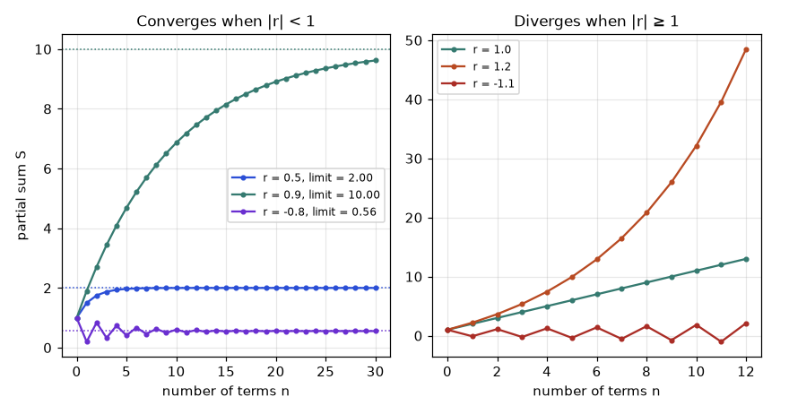
How to read it: on the left each curve climbs quickly and then levels off at its dotted line; the closer r is to 1 (0.9, teal), the slower the approach. The negative ratio (purple) zigzags towards 1/1.8 = 0.56. On the right nothing settles: r = 1 climbs linearly, r = 1.2 explodes, r = −1.1 swings wider and wider.
Problem 4.2.4 Show that 0.999... = 1.
| Rewrite | 0.999... = 0.9 + 0.09 + 0.009 + ... a geometric series with first term 0.9 and r = 0.1 |
|---|---|
| Formula | 0.9 / (1 − 0.1) = 0.9 / 0.9 |
| Answer | 1. The two numbers are not "almost equal": they are the same number, because the limit of the partial sums 0.9, 0.99, 0.999, ... is 1 |
Problem 4.2.5 (Discounting.) A contract pays 100 at the end of every year. Money loses value at 5% a year, so a payment t years away is worth 100 / 1.05t today (its present value). What is the present value of 10 years of payments, and of payments that go on forever?
| Ratio | Terms are 100/1.05, 100/1.052, ... so a1 = 100/1.05 = 95.238 and r = 1/1.05 = 0.95238 |
|---|---|
| 10 years | S10 = 95.238 × (1 − 0.9523810) / (1 − 0.95238). Since 1/1.0510 = 0.61391, this is 95.238 × 0.38609 / 0.047619 = 772.17 |
| Forever | 95.238 / (1 − 0.95238) = 95.238 / 0.047619 = 2000, which simplifies to 100 / 0.05 |
| Meaning | An endless stream of 100 a year is worth only 2,000 today, and ten years already give 772 |
pv10 = sum(100 / 1.05 ** t for t in range(1, 11))
pv_many = sum(100 / 1.05 ** t for t in range(1, 2001))
print(round(pv10, 2), round(pv_many, 2), 100 / 0.05)
gamma = 0.9 # RL discount factor
print(round(sum(gamma ** k for k in range(500)), 4), 1 / (1 - gamma))772.17 2000.0 2000.0
10.0 10.000000000000002The same math drives reinforcement learning. With a reward of 1 at every step and a discount factor γ = 0.9, the total discounted return is 1 + 0.9 + 0.81 + ... = 1/(1 − 0.9) = 10. The "effective horizon" 1/(1 − γ) is roughly how many future steps the agent cares about. An exponential moving average (EMA) with smoothing α uses weights α(1 − α)k on the value k steps back; they add to α/(1 − (1 − α)) = 1, which is why an EMA is a proper weighted average.
Going deeper
Gradient descent is a geometric sequence. Minimise f(x) = x2 by repeating x ← x − η f′(x) = x − 2ηx = (1 − 2η)x, where η is the learning rate (Chapter 14 develops this). After k steps xk = (1 − 2η)k x0, a geometric sequence with ratio r = 1 − 2η. It converges to the minimum 0 exactly when |1 − 2η| < 1, i.e. 0 < η < 1. With η = 0.1 the ratio is 0.8, and starting at 5, after three steps x3 = 5 × 0.83 = 2.56. With η = 1.1 the ratio is −1.2 and the iterates blow up with alternating signs. So the stability limit of the learning rate is nothing but the convergence condition of a geometric series.
def descend(eta, x0=5.0, steps=3):
x = x0
for _ in range(steps):
x = x - 2 * eta * x # gradient of x**2 is 2x
return x
print(round(descend(0.1), 4), round(descend(1.1, steps=10), 3))2.56 30.959Matrix version. The same proof works for matrices: if every eigenvalue of a matrix A has absolute value below 1, then I + A + A2 + ... = (I − A)−1 (the Neumann series). It appears in PageRank, in Markov chains and in the analysis of recurrent networks; you will see the ingredients in Chapters 6 and 8. Rate of convergence. The error of a geometric tail is a1 rn/(1 − r), so each extra term cuts the error by the factor r. This is called linear convergence in optimisation, and it is the reason a condition number close to 1 means fast training.
4.3 Sequences Defined by Recurrence
Beginner: Fibonacci
Start with 1 and 1. Each next number is the sum of the previous two: 1, 1, 2, 3, 5, 8, 13, 21, ... Written as a recurrence: F1 = 1, F2 = 1, and Fn = Fn−1 + Fn−2 for n ≥ 3. To get F6 by hand: F3 = 1 + 1 = 2, F4 = 1 + 2 = 3, F5 = 2 + 3 = 5, F6 = 3 + 5 = 8.
Intermediate: closed forms and run times
A closed form gives an directly from n, with no need for earlier terms. For the first-order rule an = r an−1 the closed form is an = a0 rn (a geometric sequence), and for an = an−1 + d it is a0 + nd (arithmetic).
Problem 4.3.1 You save 100 at the end of every month in an account paying 5% per period. The balance obeys Bn = 1.05 Bn−1 + 100 with B0 = 0. Find B3 by iterating, then verify the closed form Bn = 100 (1.05n − 1)/0.05.
| Iterate | B1 = 1.05 × 0 + 100 = 100; B2 = 1.05 × 100 + 100 = 205; B3 = 1.05 × 205 + 100 = 215.25 + 100 = 315.25 |
|---|---|
| Closed form | 1.053 = 1.157625, so B3 = 100 × 0.157625 / 0.05 = 315.25 |
| Why | Unrolling shows Bn = 100 (1 + 1.05 + 1.052 + ... + 1.05n−1), a geometric series with r = 1.05 |
Problem 4.3.2 Fibonacci has a closed form (Binet's formula), found by trying an = xn. Substituting in Fn = Fn−1 + Fn−2 and dividing by xn−2 gives x2 = x + 1, with roots φ = (1 + √5)/2 ≈ 1.6180 and ψ = (1 − √5)/2 ≈ −0.6180. Compute F10.
| Formula | Fn = (φn − ψn) / √5 |
|---|---|
| Powers | φ10 ≈ 122.9919 and ψ10 ≈ 0.0081 |
| Compute | (122.9919 − 0.0081) / 2.2361 = 122.9837 / 2.2361 ≈ 55.0 |
| Check by iteration | 1, 1, 2, 3, 5, 8, 13, 21, 34, 55: F10 = 55 |
Because |ψ| < 1 the term ψn fades away, so Fn is simply the nearest whole number to φn/√5, and consecutive Fibonacci numbers grow by a factor of about 1.618 each step (exponential growth again).
Problem 4.3.3 (A "what goes wrong" case.) Count how many function calls the naive recursive Fibonacci makes.
| Code idea | fib(n) = fib(n-1) + fib(n-2), with fib(1) = fib(2) = 1 |
|---|---|
| Calls recurrence | Let C(n) be the number of calls. C(1) = C(2) = 1 and C(n) = C(n−1) + C(n−2) + 1 |
| Small values | C(3) = 1 + 1 + 1 = 3; C(4) = 3 + 1 + 1 = 5; C(5) = 5 + 3 + 1 = 9 |
| Pattern | C(n) = 2Fn − 1 (check: 2 × 5 − 1 = 9 for n = 5). For n = 20, F20 = 6765 gives 13,529 calls |
import math
from functools import lru_cache
calls = 0
def fib(n):
global calls
calls += 1
return 1 if n <= 2 else fib(n - 1) + fib(n - 2)
print(fib(20), calls)
@lru_cache(maxsize=None) # memoization: remember answers
def fib_fast(n):
return 1 if n <= 2 else fib_fast(n - 1) + fib_fast(n - 2)
print(fib_fast(90))
phi = (1 + math.sqrt(5)) / 2
print(round(phi ** 10 / math.sqrt(5)))6765 13529
2880067194370816120
55Twenty values need 13,529 calls instead of 20, because the same subproblems are solved again and again. Storing each answer once (memoisation, the seed of dynamic programming) turns an exponential cost into a linear one.
Recurrences for algorithm run time
Data engineers and interviewers write the cost of a divide-and-conquer algorithm as a recurrence. Let T(n) be the number of basic steps for input size n.
- Binary search: look at the middle, then search one half. T(n) = T(n/2) + 1, T(1) = 1. Halving n a total of k times reaches 1 when n = 2k, so T(n) = log2 n + 1. For n = 1,000,000 that is about 21 steps.
- Merge sort: sort two halves, then merge in n steps. T(n) = 2T(n/2) + n, T(1) = 1.
Problem 4.3.4 Solve the merge sort recurrence for n = 8 by unrolling, and guess the general closed form.
| Base | T(1) = 1 |
|---|---|
| n = 2 | T(2) = 2T(1) + 2 = 4 |
| n = 4 | T(4) = 2T(2) + 4 = 12 |
| n = 8 | T(8) = 2T(4) + 8 = 32 |
| Guess | T(n) = n log2 n + n. Check n = 8: 8 × 3 + 8 = 32. The recursion tree explains it: there are log2 n levels, each doing n work in total, plus n for the leaves |
import math
def T(n):
return 1 if n == 1 else 2 * T(n // 2) + n
for n in [2, 4, 8, 1024]:
print(n, T(n), int(n * math.log2(n) + n))2 4 4
4 12 12
8 32 32
1024 11264 11264Sorting a million rows takes about 106 × 20 = 2 × 107 steps; a quadratic sort would take 1012. The general recipe (the "master theorem") says that T(n) = aT(n/b) + nc is dominated by the leaves, the top level, or all levels equally, depending on how a compares with bc. Merge sort has a = b = 2 and c = 1, so all levels contribute equally and you multiply by log n.
def f(n): return f(n-1) + f(n-2) never stops (RecursionError). Wrong: using F0 = 0, F1 = 1 in one place and F1 = F2 = 1 in another: both define the same numbers, but the index shifts by one at the start (F10 is 55 in both conventions, yet fib(0) only exists in the first). Right: always write the base cases first and say which index you start with.Going deeper
Recurrences in neural networks. A recurrent network updates a hidden state with ht = a ht−1 + xt (here with a single number a for simplicity). Unrolling gives ht = ∑k ak xt−k, a sum of past inputs weighted by a geometric sequence. If |a| < 1 old inputs fade; if |a| > 1 they explode. After 100 steps a gradient is multiplied by a100: 0.9100 ≈ 2.7 × 10−5 (vanishing) and 1.1100 ≈ 13,781 (exploding). This is the vanishing and exploding gradient problem of Chapter 13 in one line of arithmetic.
print(0.9 ** 100, round(1.1 ** 100, 1))2.6561398887587544e-05 13780.6Matrix form. Any linear recurrence can be written as repeated matrix multiplication. The pair (Fn+1, Fn) is obtained from (Fn, Fn−1) by multiplying by the matrix with rows (1, 1) and (1, 0), so Fn needs about log n matrix multiplications by repeated squaring. The roots φ and ψ above are that matrix's eigenvalues (Chapter 8): the closed form of a recurrence is its eigen decomposition in disguise. Interview angle: "Why is naive Fibonacci exponential?" because C(n) = C(n−1) + C(n−2) + 1 grows like φn; "how do you fix it?" memoisation or a loop keeping two variables, O(n) time and O(1) memory.
4.4 Logic, Quantifiers and Proof Techniques
WHERE clause and every boolean mask is a logical expression, so a mistake in logic is a silent data bug.Beginner: the connectives and truth tables
Let P and Q be propositions. We write ∧ for AND, ∨ for OR, ¬ for NOT and → for "implies" (IF P THEN Q). The truth table lists the result for every combination of inputs. T means true, F false.
| P | Q | ¬P | P ∧ Q | P ∨ Q | P → Q |
|---|---|---|---|---|---|
| T | T | F | T | T | T |
| T | F | F | F | T | F |
| F | T | T | F | T | T |
| F | F | T | F | F | T |
The implication confuses people. "If it rains, I take an umbrella" is broken in exactly one situation: it rains and you have no umbrella (second row). If it does not rain, the promise was not tested, so it counts as true ("vacuous truth"). This gives the useful identity P → Q is the same as ¬P ∨ Q, which you can check row by row.
Intermediate: equivalences, De Morgan, quantifiers
Problem 4.4.1 Prove the first De Morgan law with a truth table, then apply it. You want to exclude customers who are both under 18 and from the EU.
| Row TT | ¬(T ∧ T) = F; ¬T ∨ ¬T = F ∨ F = F. Equal |
|---|---|
| Row TF | ¬(T ∧ F) = ¬F = T; ¬T ∨ ¬F = F ∨ T = T. Equal |
| Row FT | ¬(F ∧ T) = T; ¬F ∨ ¬T = T ∨ F = T. Equal |
| Row FF | ¬(F ∧ F) = T; ¬F ∨ ¬F = T. Equal |
| Apply | Keep rows where NOT (age < 18 AND region = EU), which is the same as age ≥ 18 OR region ≠ EU |
Boolean masks in pandas. A comparison such as df["age"] < 18 gives a column of True/False values, one per row. The operators &, | and ~ are AND, OR and NOT on whole columns, and each comparison needs its own parentheses because & binds tighter than <.
import pandas as pd
df = pd.DataFrame({"age": [15, 17, 25, 40, 16],
"region": ["EU", "US", "EU", "US", "EU"]})
under = df["age"] < 18
eu = df["region"] == "EU"
excluded = under & eu
print("excluded rows:", list(df.index[excluded]))
keep1 = ~(under & eu) # NOT (P and Q)
keep2 = ~under | ~eu # De Morgan: (NOT P) or (NOT Q)
print("equal masks:", keep1.equals(keep2), "kept:", list(df.index[keep1]))excluded rows: [0, 4]
equal masks: True kept: [1, 2, 3]SQL. The same logic appears as WHERE NOT (age < 18 AND region = 'EU'), equivalent to WHERE age >= 18 OR region <> 'EU'. SQL, however, has three truth values: true, false and unknown, produced whenever a comparison involves NULL (a missing value). NULL = NULL is unknown, not true. A WHERE clause keeps only rows where the condition is true, so unknown rows are dropped silently, and NOT unknown is still unknown.
import sqlite3
con = sqlite3.connect(":memory:")
con.execute("CREATE TABLE t (id INTEGER, x INTEGER)")
con.executemany("INSERT INTO t VALUES (?, ?)", [(1, 5), (2, 7), (3, None)])
a = con.execute("SELECT id FROM t WHERE x = 5").fetchall()
b = con.execute("SELECT id FROM t WHERE NOT (x = 5)").fetchall()
c = con.execute("SELECT id FROM t WHERE x IS NULL").fetchall()
d = con.execute("SELECT id FROM t WHERE id NOT IN (SELECT x FROM t)").fetchall()
print(a, b, c, d)[(1,)] [(2,)] [(3,)] []Rows satisfying x = 5 are [1]; rows satisfying NOT (x = 5) are only [2], not [2, 3], because for row 3 the condition is unknown. The last query ("ids that are not among the x values") returns nothing at all, because the subquery contains a NULL, and id NOT IN (5, 7, NULL) is never true.
WHERE x != 5 to find "everything except 5", which drops the NULL rows. In pandas the opposite happens: df["x"] != 5 is True for NaN rows, so the two tools disagree on the same data. Right: decide what missing means, and say it: WHERE x != 5 OR x IS NULL in SQL, (df["x"] != 5) | df["x"].isna() in pandas, and prefer NOT EXISTS over NOT IN when a subquery can contain NULL. Another classic: in Python, df[a and b] raises an error; use & with parentheses.Quantifiers. The symbol ∀ means "for all" and ∃ means "there exists". "∀ rows, price > 0" is a data-quality rule; "∃ a row with price ≤ 0" is its negation. Negating a quantified statement flips the quantifier and negates the inside: ¬(∀x P(x)) ≡ ∃x ¬P(x). In code, ∀ is all(...) (or .all()) and ∃ is any(...). The order of mixed quantifiers matters: "∀ x ∃ y with y > x" is true over the integers (take y = x + 1), but "∃ y ∀ x with y > x" is false (no integer exceeds all integers). Likewise "every customer has some order" is not "some order belongs to every customer".
import pandas as pd
prices = pd.Series([4.5, 9.0, 0.0, 12.5])
print("for all price > 0:", (prices > 0).all())
print("exists price <= 0:", (prices <= 0).any())
print("negation holds:", (not (prices > 0).all()) == (prices <= 0).any())for all price > 0: False
exists price <= 0: True
negation holds: TrueProof techniques
A proof is a chain of steps, each justified by definitions or earlier results, that leaves no room for doubt. Code that passes a thousand tests is not a proof; a proof covers all cases. Four techniques cover most of what you will need.
1. Direct proof. Start from the assumptions and reason forwards. Claim: the sum of two even numbers is even. An even number is 2a for some integer a. So 2a + 2b = 2(a + b), which is twice an integer, hence even. ∎ (The box ∎ marks the end of a proof.)
2. Proof by contradiction. Assume the claim is false, and derive something impossible. Claim: √2 is irrational (cannot be written as a fraction of whole numbers). Suppose √2 = p/q in lowest terms (p and q share no factor). Squaring gives 2q2 = p2, so p2 is even, so p is even (an odd number squared is odd). Write p = 2m. Then 2q2 = 4m2, so q2 = 2m2, so q is even too. But then p and q share the factor 2, contradicting "lowest terms". So the assumption was false. ∎
3. Counterexample. To disprove "for all", one example is enough. Claim: n2 + n + 41 is prime for every whole number n ≥ 0. It works for n = 0, 1, 2, ... 39 (41, 43, 47, 53, ...), which looks convincing, but n = 40 gives 1600 + 40 + 41 = 1681 = 41 × 41. Claim disproved. A data example: "a model with 99% accuracy is a good model" fails for a fraud dataset with 1% fraud, where predicting "never fraud" scores 99%.
def is_prime(m):
return m > 1 and all(m % k for k in range(2, int(m ** 0.5) + 1))
first_bad = next(n for n in range(100) if not is_prime(n * n + n + 41))
print(first_bad, first_bad ** 2 + first_bad + 41)40 16814. Mathematical induction. Induction proves a statement S(n) for every whole number n ≥ n0, like knocking down an infinite row of dominoes. Two steps: (1) Base case: prove S(n0), the first domino falls. (2) Inductive step: assume S(k) is true (the inductive hypothesis) and prove S(k + 1), each falling domino knocks down the next. Together they give S(n) for all n ≥ n0.
Problem 4.4.2 Prove by induction that 1 + 2 + ... + n = n(n + 1)/2 for all n ≥ 1.
| Statement S(n) | 1 + 2 + ... + n = n(n + 1)/2 |
|---|---|
| Base case n = 1 | Left side: 1. Right side: 1 × 2 / 2 = 1. True |
| Hypothesis | Assume S(k): 1 + 2 + ... + k = k(k + 1)/2 for some k ≥ 1 |
| Step | 1 + ... + k + (k + 1) = k(k + 1)/2 + (k + 1) = (k + 1)(k/2 + 1) = (k + 1)(k + 2)/2 |
| Conclusion | The last expression is exactly S(k + 1), because (k + 1)((k + 1) + 1)/2 = (k + 1)(k + 2)/2. By induction S(n) holds for all n ≥ 1. ∎ |
Problem 4.4.3 Prove by induction that 2n > n for all n ≥ 0.
| Base case n = 0 | 20 = 1 > 0. True |
|---|---|
| Hypothesis | Assume 2k > k for some k ≥ 0. Since these are whole numbers, 2k ≥ k + 1 |
| Step | 2k+1 = 2 × 2k ≥ 2(k + 1) = 2k + 2 |
| Compare | 2k + 2 > k + 1 because k ≥ 0 gives k + 1 > 0. So 2k+1 > k + 1 |
| Conclusion | S(k) ⇒ S(k + 1), so 2n > n for all n ≥ 0. ∎ (This is why n bits can label more than n items.) |
Problem 4.4.4 Prove 1 + 3 + 5 + ... + (2n − 1) = n2, the sum of the first n odd numbers.
| Base n = 1 | Left: 1. Right: 12 = 1. True |
|---|---|
| Hypothesis | 1 + 3 + ... + (2k − 1) = k2 |
| Step | Add the next odd number 2(k + 1) − 1 = 2k + 1: k2 + 2k + 1 |
| Conclusion | k2 + 2k + 1 = (k + 1)2, which is S(k + 1). ∎ Quick check n = 4: 1 + 3 + 5 + 7 = 16 = 42 |
ok1 = all(sum(range(1, n + 1)) == n * (n + 1) // 2 for n in range(1, 501))
ok2 = all(2 ** n > n for n in range(0, 200))
ok3 = all(sum(2 * i - 1 for i in range(1, n + 1)) == n * n for n in range(1, 501))
print(ok1, ok2, ok3)True True TrueGoing deeper
Strong induction lets the hypothesis assume S(m) for all m ≤ k, which you need when step k + 1 depends on several earlier cases. Example: every whole number ≥ 2 is a product of primes (if k + 1 is not prime it equals a × b with both factors smaller, and each factor is a product of primes by hypothesis). Induction is how programs are proved correct. A loop invariant is a statement S(i) that holds before the loop starts (base case) and is preserved by each iteration (inductive step); when the loop ends, S together with the exit condition gives the result. Recursive functions are proved the same way, using the recursion as the inductive step. Interviewers like this: "how do you know your binary search is correct?" is answered by an invariant ("the target, if present, lies within the current window").
Proof by contrapositive is a direct proof of ¬Q → ¬P. To show "if n2 is even then n is even" it is easier to prove "if n is odd then n2 is odd": n = 2a + 1 gives n2 = 4a2 + 4a + 1 = 2(2a2 + 2a) + 1, odd. That was the step used in the √2 proof. Existence proofs may show that something exists without constructing it, and the pigeonhole principle of Section 4.8 is exactly that kind of argument.
4.5 Sets, Set Operations and Functions Between Sets
Beginner: the operations on a small example
Customers are numbered 1 to 10; call this the universe U. In January customers A = {1, 2, 3, 4, 5} bought something; in February customers B = {4, 5, 6, 7} did. We write x ∈ A for "x is a member of A", and |A| (the cardinality) for the number of members, so |A| = 5 and |B| = 4.
| Operation | Symbol | Meaning | Result here |
|---|---|---|---|
| Union | A ∪ B | in A or B (or both) | {1,2,3,4,5,6,7} |
| Intersection | A ∩ B | in both A and B | {4,5} |
| Difference | A − B | in A but not in B | {1,2,3} |
| Symmetric difference | A Δ B | in exactly one of them | {1,2,3,6,7} |
| Complement | Aᶜ | in U but not in A | {6,7,8,9,10} |
The connection to logic is direct: x ∈ A ∪ B means (x ∈ A) OR (x ∈ B); x ∈ A ∩ B means AND; x ∈ Aᶜ means NOT. So De Morgan's laws carry over: (A ∪ B)ᶜ = Aᶜ ∩ Bᶜ and (A ∩ B)ᶜ = Aᶜ ∪ Bᶜ. A Venn diagram draws sets as overlapping circles; the overlap is the intersection. Each customer is one dot; the dots 4 and 5 sit in the overlap, 1, 2, 3 only in the A circle, 6 and 7 only in the B circle, and 8, 9, 10 outside both circles.
Intermediate: counting with sets and inclusion-exclusion
How many customers bought in January or February? Adding |A| + |B| = 9 counts customers 4 and 5 twice. Subtract the overlap once: |A ∪ B| = |A| + |B| − |A ∩ B| = 5 + 4 − 2 = 7. This is the inclusion-exclusion principle. For three sets:
Pairs are subtracted (they were counted twice), and then the triple overlap is added back (it was added three times and subtracted three times, so it vanished).
Problem 4.5.1 A marketing team reaches customers through three channels. Email reached 40 people, SMS 30 and Push 25. Email and SMS overlap on 10, Email and Push on 8, SMS and Push on 6, and 3 people got all three. How many distinct people were reached, and how many were reached by email only?
| Singles | 40 + 30 + 25 = 95 |
|---|---|
| Subtract pairs | 95 − (10 + 8 + 6) = 95 − 24 = 71 |
| Add triple | 71 + 3 = 74 distinct people |
| Email only | Email minus those also in SMS or Push: |E| − |E ∩ S| − |E ∩ P| + |E ∩ S ∩ P| = 40 − 10 − 8 + 3 = 25 |
Problem 4.5.2 (Jaccard similarity.) Customer X bought items {a, b, c, d} and customer Y bought {c, d, e}. How similar are their baskets?
| Definition | Jaccard = |X ∩ Y| / |X ∪ Y|, a number from 0 (nothing shared) to 1 (identical) |
|---|---|
| Intersection | {c, d}, size 2 |
| Union | {a, b, c, d, e}, size 5 |
| Answer | 2 / 5 = 0.4 |
Python and SQL. Python's set type has the operators | (union), & (intersection), - (difference) and ^ (symmetric difference). SQL has UNION, INTERSECT and EXCEPT, and a join is a set operation on keys: an inner join behaves like an intersection, a left anti-join like a difference.
A = {1, 2, 3, 4, 5}
B = {4, 5, 6, 7}
U = set(range(1, 11))
print(sorted(A | B), sorted(A & B), sorted(A - B), sorted(A ^ B))
print(sorted(U - A), len(A | B), len(A) + len(B) - len(A & B))
E, S, P = 40, 30, 25
print(E + S + P - (10 + 8 + 6) + 3)
X, Y = {"a", "b", "c", "d"}, {"c", "d", "e"}
print(len(X & Y) / len(X | Y))
print(type({}), type(set()))[1, 2, 3, 4, 5, 6, 7] [4, 5] [1, 2, 3] [1, 2, 3, 6, 7]
[6, 7, 8, 9, 10] 7 7
74
0.4
<class 'dict'> <class 'set'>import sqlite3
con = sqlite3.connect(":memory:")
con.execute("CREATE TABLE jan (cid INTEGER)")
con.execute("CREATE TABLE feb (cid INTEGER)")
con.executemany("INSERT INTO jan VALUES (?)", [(1,), (2,), (3,), (4,), (5,), (4,)])
con.executemany("INSERT INTO feb VALUES (?)", [(4,), (5,), (6,), (7,)])
q = lambda sql: [r[0] for r in con.execute(sql)]
print(q("SELECT cid FROM jan UNION SELECT cid FROM feb ORDER BY 1"))
print(q("SELECT cid FROM jan INTERSECT SELECT cid FROM feb ORDER BY 1"))
print(q("SELECT cid FROM jan EXCEPT SELECT cid FROM feb ORDER BY 1"))
print(len(q("SELECT cid FROM jan UNION ALL SELECT cid FROM feb")))[1, 2, 3, 4, 5, 6, 7]
[4, 5]
[1, 2, 3]
10Notice that customer 4 was inserted twice into jan. UNION, INTERSECT and EXCEPT remove duplicates (they work on true sets), whereas UNION ALL keeps every row (a multiset), so it returns 6 + 4 = 10 rows.
s = {} creates an empty dictionary (the code above prints that type). Right: s = set(). Wrong: len(jan) + len(feb) as "customers who bought in either month" when the lists contain repeats or overlap; the correct count is len(set(jan) | set(feb)), or COUNT(DISTINCT cid) over the union. Also, a Python set has no order, so never rely on iteration order.assert not (set(train_ids) & set(test_ids)). A data engineer reconciles two systems with EXCEPT: "IDs in the warehouse that are missing from the source". A recommender uses Jaccard similarity on the sets of items two users bought. All of these are one-line set algebra.Functions between sets
A function f: A → B assigns to every element of A exactly one element of B (A is the domain, B the codomain; Chapter 2 covers functions of numbers). Two properties describe how a function uses its target:
- Injective (one-to-one): different inputs always give different outputs. No two elements of A collide in B.
- Surjective (onto): every element of B is hit by at least one input. No element of B is left unused.
- Bijective: both. Every output is hit exactly once, so the function can be undone by an inverse.
Examples. A LabelEncoder mapping {red, green, blue} → {0, 1, 2} is a bijection, so you can decode. The function x ↦ x2 on the integers is not injective (−3 and 3 both give 9) and not surjective onto the integers (nothing maps to 5). ReLU, max(0, x), is not injective because every negative input gives 0, which is one reason information is lost in a ReLU layer. A hash function from user IDs to 32-bit numbers cannot be injective when there are more than 232 possible IDs; the pigeonhole principle of Section 4.8 makes that precise. A token embedding table assigns one vector to each token ID; it is injective only if no two tokens share a vector.
A counting fact worth knowing: if A has m elements and B has n elements, there are nm functions from A to B (each of the m inputs independently picks one of n outputs). An injective function needs m ≤ n, and a bijection needs m = n (then there are n! of them, as Section 4.6 explains).
Going deeper
The power set. The set of all subsets of an n-element set has 2n members: for each element you independently choose "in" or "out". With three features {a, b, c} there are 23 = 8 subsets: ∅, {a}, {b}, {c}, {a,b}, {a,c}, {b,c}, {a,b,c}. Searching all feature subsets for the best model therefore has 2n candidates, and with n = 30 that is over a billion. Indicator vectors. A subset of {1, ..., n} corresponds to a 0/1 vector of length n (a bitmask or a boolean column); union is the elementwise maximum (OR), intersection the elementwise minimum (AND), and cardinality is the sum of the vector, which connects sets, logic and Section 4.1. Probabilistic sets. A Bloom filter answers "is x in the set?" using a bit array and several hash functions; it can wrongly say "yes" (a false positive caused by collisions) but never wrongly says "no". Infinity. Not all infinite sets are equal: the whole numbers can be listed in order (countable), but the real numbers between 0 and 1 cannot (Cantor's diagonal argument). For data work the practical point is that floating-point numbers form a finite set, which is why 0.1 + 0.2 ≠ 0.3 exactly.
4.6 Counting: Permutations, Combinations and the Binomial Theorem
Beginner: the two basic rules
Rule of sum. If one task can be done in m ways or another, with no overlap, in n ways, there are m + n ways in total. A customer can pay by 3 card types or 2 wallet types: 5 ways. Rule of product. If you do one task in m ways and then another in n ways, there are m × n ways. A lunch with 3 starters and 4 mains has 3 × 4 = 12 combinations; a 4-digit PIN has 10 × 10 × 10 × 10 = 104 = 10,000. The product rule extends to any number of independent choices: this is a tree that branches at every choice, and the leaves are the answers.
Problem 4.6.1 (Passwords.) How many 8-character passwords can be formed from the 26 lowercase letters, 26 capitals and 10 digits (62 symbols)? How many contain at least one digit?
| All passwords | Eight independent choices of 62: 628 = 218,340,105,584,896 |
|---|---|
| No digit | Only 52 letters allowed: 528 = 53,459,728,531,456 |
| At least one digit | Complement: all minus none = 218,340,105,584,896 − 53,459,728,531,456 = 164,880,377,053,440 |
| Meaning | About 75.5% of all passwords contain a digit (164.88 / 218.34) |
total = 62 ** 8
no_digit = 52 ** 8
print(total, no_digit, total - no_digit)
print(round((total - no_digit) / total, 4), 10 ** 4)218340105584896 53459728531456 164880377053440
0.7552 10000The trick used for "at least one" is complementary counting: count everything, subtract the cases with none. It is far easier than adding up "exactly one digit", "exactly two digits", and so on.
Permutations: order matters, no repeats
Line up 5 people. The first place can be filled in 5 ways, then 4, then 3, 2, 1: 5 × 4 × 3 × 2 × 1 = 5! = 120 arrangements (factorial, with 0! = 1 by convention, the empty product). Now fill only a podium of 3 places from 10 runners: 10 × 9 × 8 = 720. In general the number of ways to arrange r items chosen from n is
Combinations: order does not matter
Choosing 3 runners as a group ignores the order, but P(10, 3) = 720 counted every group 3! = 6 times (the six orderings of the same three people). So divide: 720 / 6 = 120. This is the binomial coefficient, read "n choose r":
Problem 4.6.2 A lottery draws 6 numbers from 49 and order does not matter. How many tickets are possible?
| Formula | C(49, 6) = 49! / (6! × 43!) |
|---|---|
| Cancel 43! | (49 × 48 × 47 × 46 × 45 × 44) / (6 × 5 × 4 × 3 × 2 × 1) |
| Numerator | 49 × 48 = 2352; × 47 = 110,544; × 46 = 5,085,024; × 45 = 228,826,080; × 44 = 10,068,347,520 |
| Divide | 10,068,347,520 / 720 = 13,983,816 |
Problem 4.6.3 (Train/test splits.) You have 100 labelled customers and put exactly 80 in the training set and 20 in the test set. How many different splits are there? In an A/B test, you assign 10 users so that exactly 5 get variant A. How many assignments, and how many if the number in A is unrestricted?
| Splits | Choosing which 80 train is the same as choosing which 20 test: C(100, 80) = C(100, 20) |
|---|---|
| Compute | C(100, 20) = 535,983,370,403,809,682,970, about 5.4 × 1020 |
| A/B, exactly 5 | C(10, 5) = 10!/(5! 5!) = 3,628,800 / 14,400 = 252 |
| A/B, any number | Two choices per user: 210 = 1,024, and the 252 balanced ones are about 24.6% of them |
from math import comb, perm, factorial
print(comb(49, 6), perm(10, 3), factorial(5))
print(comb(100, 80), comb(100, 80) == comb(100, 20))
print(comb(10, 5), 2 ** 10, round(comb(10, 5) / 2 ** 10, 4))13983816 720 120
535983370403809682970 True
252 1024 0.2461The practical lesson of the split count: there are so many possible splits that a random seed picks one essentially at random, and results can vary from seed to seed; report results over several splits or use cross-validation rather than trusting one lucky split.
Pascal's triangle and the binomial theorem
Write the binomial coefficients in rows: row n holds C(n, 0), C(n, 1), ..., C(n, n). Every entry is the sum of the two above it. This is Pascal's rule: C(n, k) = C(n − 1, k − 1) + C(n − 1, k).
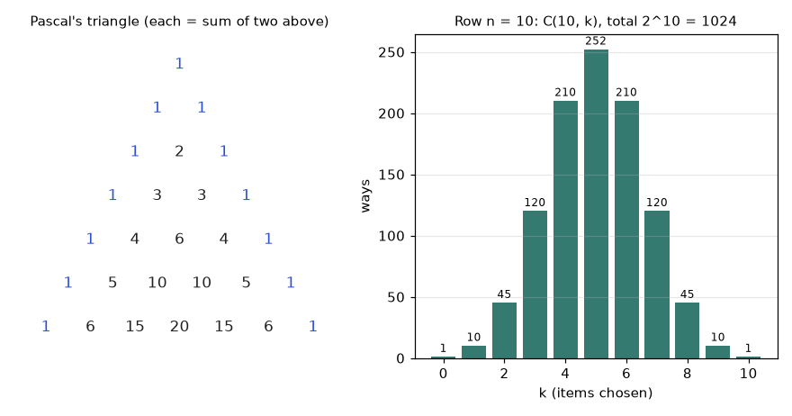
How to read it: on the left, 6 = 3 + 3 and 20 = 10 + 10 in the rows below. On the right the bars are symmetric around k = 5 (because C(n, k) = C(n, n − k): choosing what to take is the same as choosing what to leave) and they add up to 210 = 1,024, the number of all subsets.
Why Pascal's rule is true (counting proof). Choose k items from n and single out one special item. Either the special item is chosen (then choose k − 1 more from the other n − 1: C(n − 1, k − 1) ways) or it is not (choose all k from the other n − 1: C(n − 1, k) ways). The two cases do not overlap and cover everything, so the sum rule gives the identity.
Problem 4.6.4 Expand (x + y)4, and use the theorem to find the coefficient of x3y2 in (x + y)5.
| Row 4 | C(4, k) for k = 0..4: 1, 4, 6, 4, 1 |
|---|---|
| Expansion | (x + y)4 = x4 + 4x3y + 6x2y2 + 4xy3 + y4 |
| Coefficient | x3y2 in (x + y)5 means choosing y from 2 of the 5 brackets: C(5, 2) = 10 |
| Check | Set x = y = 1 in the expansion of row 4: 1 + 4 + 6 + 4 + 1 = 16 = 24 |
The binomial theorem is why the probability of exactly 3 heads in 5 fair coin flips is C(5, 3)/25 = 10/32 = 0.3125; Chapter 15 builds the binomial distribution on exactly this count.
Repetition: stars and bars and multisets
If items may repeat and order matters, the product rule gives nr (PINs, passwords). If items may repeat but order does not matter, you are choosing a multiset, and the trick called stars and bars counts it. To split r identical items among n boxes, lay the r items as stars in a row and insert n − 1 bars as dividers. A row of 5 stars and 2 bars, such as **|*|**, means box 1 gets 2, box 2 gets 1, box 3 gets 2. Each arrangement of the r + n − 1 symbols is determined by choosing which positions hold the bars:
Problem 4.6.5 Split 10 identical compute credits among 3 teams (a team may get zero). How many ways? And how many ways if each team must get at least 1?
| Stars and bars | r = 10 stars, n = 3 boxes, so 2 bars among 12 symbols: C(12, 2) = 66 |
|---|---|
| At least 1 each | Give each team 1 credit first, leaving 7 to split freely: C(7 + 2, 2) = C(9, 2) = 36 |
| Check small case | 2 credits, 2 teams: (0,2), (1,1), (2,0) = 3 = C(3, 1) |
Problem 4.6.6 How many distinct rearrangements does the word MISSISSIPPI have?
| Letters | 11 letters: M ×1, I ×4, S ×4, P ×2 |
|---|---|
| Idea | 11! orderings, but swapping identical letters changes nothing, so divide by 4! 4! 2! 1! |
| Compute | 39,916,800 / (24 × 24 × 2) = 39,916,800 / 1,152 = 34,650 |
from math import comb, factorial
print(comb(12, 2), comb(9, 2))
print(factorial(11) // (factorial(4) * factorial(4) * factorial(2)))
from itertools import combinations_with_replacement
print(len(list(combinations_with_replacement("ab", 2))), comb(3, 1))66 36
34650
3 3Python's itertools: count by listing
For small cases you can check any formula by listing the objects. itertools has one function per counting idea: product (repetition, ordered), permutations (no repetition, ordered), combinations (no repetition, unordered) and combinations_with_replacement (repetition, unordered).
from itertools import product, permutations, combinations, combinations_with_replacement
from math import comb, perm
items = ["A", "B", "C", "D"]
print(len(list(product(items, repeat=2))), 4 ** 2)
print(len(list(permutations(items, 2))), perm(4, 2))
print(len(list(combinations(items, 2))), comb(4, 2))
print(len(list(combinations_with_replacement(items, 2))), comb(4 + 2 - 1, 2))
print(list(combinations(items, 2)))16 16
12 12
6 6
10 10
[('A', 'B'), ('A', 'C'), ('A', 'D'), ('B', 'C'), ('B', 'D'), ('C', 'D')]Hash collisions and the birthday problem
How many people must be in a room before two probably share a birthday? Assume 365 equally likely days. It is easier to find the chance that no two share. The second person avoids the first's birthday with probability 364/365, the third avoids both with 363/365, and so on, so
For n = 23 the product is 0.4927, so the chance of at least one match is 1 − 0.4927 = 0.5073, already above one half. The reason is that 23 people form C(23, 2) = 253 pairs, and each pair has a 1/365 chance of matching. Pairs grow like n2/2, much faster than n. For m possible values and n items, 1 − P ≈ 1 − e−n(n−1)/(2m), which reaches one half near n ≈ 1.1774 √m.
Problem 4.6.7 A system stores customers under a 32-bit hash, so m = 232 = 4,294,967,296 slots. About how many customers before a collision has probability 50%? What is the probability with 10,000 customers?
| Formula | P(collision) ≈ 1 − e−n(n−1)/(2m). Set this to 0.5: n(n−1)/(2m) = ln 2 = 0.6931 |
|---|---|
| Solve | n ≈ √(2 m ln 2) = √(2 × 4,294,967,296 × 0.6931) = √5,954,089,000 ≈ 77,163 |
| 10,000 customers | n(n−1)/(2m) = 9,999 × 10,000 / 8,589,934,592 = 0.011640, so P ≈ 1 − e−0.011640 = 0.0116 |
| Meaning | A hash with 4.3 billion slots collides at 1.2% already with 10,000 keys, and at 50% with 77 thousand |
import math
import numpy as np
p_none = np.prod((365 - np.arange(23)) / 365)
print(round(1 - p_none, 4), math.comb(23, 2))
m = 2 ** 32
print(round(math.sqrt(2 * m * math.log(2))))
n = 10000
print(round(1 - math.exp(-n * (n - 1) / (2 * m)), 4))0.5073 253
77163
0.0116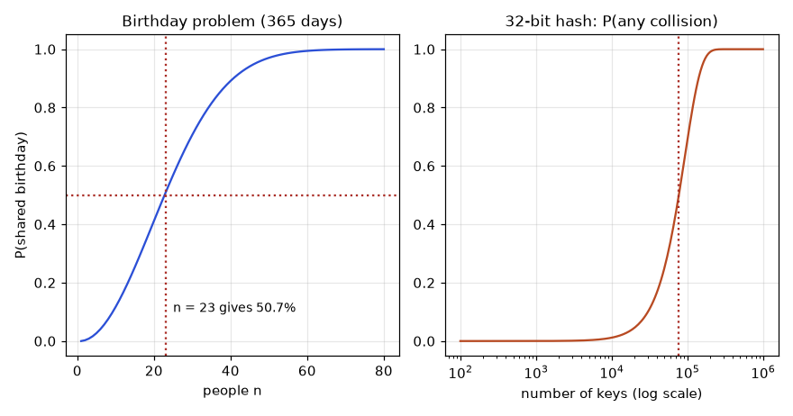
How to read it: on the left, the curve crosses 0.5 at 23 people and is almost 1 by 60; our intuition expects far more people. On the right the same S-shape appears on a log axis: collisions are rare at a thousand keys and near-certain at a million, so unique IDs must either be long enough (128-bit UUIDs have m = 2128, and a 50% chance needs about 2.2 × 1019 keys) or checked for collisions.
4.7 Graphs: Nodes, Edges and Adjacency Matrices
Beginner: a five-node example
Five tables A, B, C, D, E with edges A–B, A–C, B–C, C–D, D–E. This graph is undirected: an edge works both ways. (In a directed graph each edge has an arrow, like "A feeds B".) The degree of a node is the number of edges touching it: A has degree 2 (B and C), B has 2, C has 3 (A, B, D), D has 2, E has 1. A path is a sequence of nodes where consecutive ones are joined by an edge: A–C–D–E is a path of length 3 (three edges). The graph is connected if there is a path between every pair of nodes.
The degrees add up to 2 + 2 + 3 + 2 + 1 = 10, which is exactly twice the number of edges (5). This is the handshake lemma: ∑ deg(v) = 2|E|, because each edge is counted once at each of its two ends.
Intermediate: the adjacency matrix
Store the graph as a square table whose entry (i, j) is 1 if there is an edge between node i and node j, and 0 otherwise. For the order A, B, C, D, E:
| 0 | 1 | 1 | 0 | 0 |
| 1 | 0 | 1 | 0 | 0 |
| 1 | 1 | 0 | 1 | 0 |
| 0 | 0 | 1 | 0 | 1 |
| 0 | 0 | 0 | 1 | 0 |
Row sums are the degrees (2, 2, 3, 2, 1), and an undirected graph's matrix is symmetric. The sum of all entries is the double sum ∑i ∑j Mij = 10 = 2|E|, the handshake lemma as a double sum from Section 4.1. A beautiful fact: the entry (i, j) of M × M counts the walks of length 2 from i to j (go to a neighbour, then on to j). More generally the entry of Mk counts walks of length k. Matrix multiplication is the subject of Chapter 6; for now take it as a recipe: entry (i, j) of M × M is the sum over k of Mik Mkj.
Problem 4.7.1 Using the matrix above, count the walks of length 2 from A to D, and the closed walks of length 2 from C.
| A to D | Sum over middle node k of MA,k × Mk,D: only k = C works (A–C and C–D are edges). So 1 walk: A–C–D |
|---|---|
| C to C | Go to a neighbour and come back: neighbours are A, B and D, so 3 closed walks, which equals the degree of C |
| Rule | The diagonal of M × M is the list of degrees: (2, 2, 3, 2, 1) |
| Triangles | The trace of M3 (the sum of its diagonal) counts each triangle 6 times (3 start points × 2 directions). Here the only triangle is A, B, C, so we expect 6 |
import numpy as np
M = np.array([[0, 1, 1, 0, 0],
[1, 0, 1, 0, 0],
[1, 1, 0, 1, 0],
[0, 0, 1, 0, 1],
[0, 0, 0, 1, 0]])
print("degrees:", M.sum(axis=1), "edges:", M.sum() // 2)
M2 = M @ M
print("walks A->D of length 2:", M2[0, 3], " diagonal:", np.diag(M2))
print("triangles:", np.trace(M @ M @ M) // 6)degrees: [2 2 3 2 1] edges: 5
walks A->D of length 2: 1 diagonal: [2 2 3 2 1]
triangles: 1How many edges can a graph on n nodes have at most? Every pair of nodes may be joined once, so at most C(n, 2) = n(n − 1)/2. With 5 nodes the maximum is 10, so there are 210 = 1,024 different graphs on 5 labelled nodes (each possible edge present or absent, the product rule again). A shortest path between nodes is found by breadth-first search (BFS), which explores neighbours level by level.
from collections import deque
edges = [("A", "B"), ("A", "C"), ("B", "C"), ("C", "D"), ("D", "E")]
adj = {}
for u, v in edges: # adjacency list: node -> neighbours
adj.setdefault(u, []).append(v)
adj.setdefault(v, []).append(u)
dist = {"A": 0}
queue = deque(["A"])
while queue:
node = queue.popleft()
for nb in adj[node]:
if nb not in dist:
dist[nb] = dist[node] + 1
queue.append(nb)
print(dist){'A': 0, 'B': 1, 'C': 1, 'D': 2, 'E': 3}scipy.sparse) that stores only the edges, which here is a few hundred million entries. Also remember direction: a directed edge A → B sets only M[A][B], so the matrix is not symmetric.Going deeper
Where data engineers meet graphs. A pipeline of tables or tasks is a directed acyclic graph (DAG): edges point from inputs to outputs and no path loops back. Schedulers such as Airflow run a topological order, in which every node comes after all its inputs, and a cycle (A depends on B depends on A) makes that impossible. A star schema of fact and dimension tables is a graph of joins. A recommender is a bipartite graph with users on one side, items on the other, and an edge for every purchase; the users-by-items rating matrix is its adjacency matrix. A knowledge graph stores facts as labelled edges, and graph neural networks pass vectors along edges (you will meet the matrix form in Chapter 6: node features multiplied by the adjacency matrix add up the neighbours).
Proofs by counting. The handshake lemma shows that the number of nodes with odd degree is always even (the total of the degrees is even, and even numbers of odd terms are needed to keep a sum even), a fact you can use to sanity check a reported network. Another counting result: a connected graph on n nodes needs at least n − 1 edges (a tree has exactly n − 1), provable by induction on n.
4.8 The Expert Layer: Growth of Sums, Stirling, Pigeonholes and Combinatorial Explosion
The harmonic series grows like ln n
The harmonic numbers are Hn = 1 + 1/2 + 1/3 + ... + 1/n. The terms shrink to zero, yet the sum never settles. Proof of divergence by grouping. Group the terms in blocks of doubling length: 1/3 + 1/4 ≥ 1/4 + 1/4 = 1/2; 1/5 + ... + 1/8 ≥ 4 × 1/8 = 1/2; the next eight terms are each at least 1/16, so they add to at least 1/2; and so on. Each block contributes at least 1/2, so H2k ≥ 1 + k/2, which grows without bound. ∎ The growth is very slow, though: it takes 2198 terms to guarantee a sum of 100 by this bound. More precisely Hn ≈ ln n + γ, where γ ≈ 0.5772 is the Euler-Mascheroni constant (the reason is that ∑ 1/k is close to the area under the curve 1/x from 1 to n, which is ln n; Chapter 11 makes this rigorous). A finer estimate adds 1/(2n).
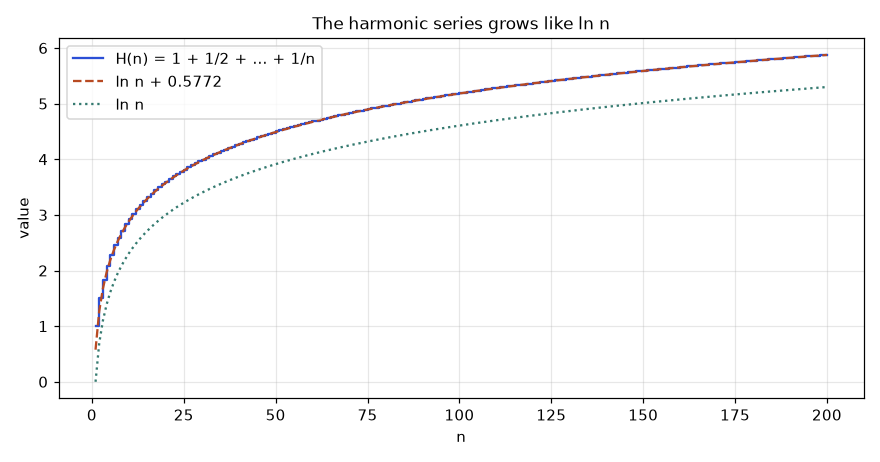
How to read it: the blue steps are the true partial sums. The orange dashed curve ln n + 0.5772 hugs them, while the teal ln n sits about 0.58 lower. Doubling n adds only about ln 2 = 0.69 to the sum.
Problem 4.8.1 (Coupon collector.) A game gives one of n = 100 equally likely cards per pack. The expected number of packs to collect all 100 is n × Hn. Estimate it.
| Why | With k cards missing, each pack is useful with probability k/n, so you expect n/k packs to find the next new card. Total: n/n + n/(n−1) + ... + n/1 = n (1 + 1/2 + ... + 1/n) = n Hn |
|---|---|
| Estimate | H100 ≈ ln 100 + 0.5772 + 1/200 = 4.6052 + 0.5772 + 0.0050 = 5.1874 |
| Packs | 100 × 5.1874 ≈ 518.7 |
| Exact | Summing 1/k for k = 1..100 gives 5.18738, so 518.74 packs |
import math
H10 = sum(1 / k for k in range(1, 11))
print(round(H10, 4), round(math.log(10) + 0.5772157 + 1 / 20, 4))
H100 = sum(1 / k for k in range(1, 101))
print(round(100 * H100, 2), round(100 * (math.log(100) + 0.5772157 + 1 / 200), 2))
print(round(sum(1 / k for k in range(1, 1000001)), 4))2.929 2.9298
518.74 518.74
14.3927The harmonic series appears whenever "the k-th item costs 1/k": the expected cost of quicksort is about 2 n ln n comparisons; the word frequencies in text follow Zipf's law with weights 1/k, so the normalising constant is Hn; and learning-rate schedules of the form 1/t do not have a convergent sum of steps (∑ 1/t diverges) while ∑ 1/t2 does converge (to π2/6 ≈ 1.645), a distinction that appears in the conditions for stochastic gradient descent to converge.
Other sums worth knowing. ∑k=1n k = n(n + 1)/2 grows like n2/2, which is why a double loop over pairs (the inner loop running up to i) costs about n2/2 operations. ∑k=1n k2 = n(n + 1)(2n + 1)/6 grows like n3/3; for n = 10 it is 10 × 11 × 21 / 6 = 385. Rule of thumb: ∑ kp grows like np+1/(p + 1). A geometric sum with r > 1 is dominated by its last term: 1 + 2 + ... + 2n−1 = 2n − 1, which is less than twice the last term.
Why n! explodes, and Stirling's approximation
The factorial multiplies n numbers, and most of them are big, so it outgrows every exponential cn eventually: 10! = 3,628,800, 20! = 2,432,902,008,176,640,000 (about 2.4 × 1018) and 25! ≈ 1.55 × 1025. A computer doing a billion steps per second would need about 77 years to count to 20!. Stirling's approximation gives its size without multiplying:
The relative error is about 1/(12n), so it is already good for small n. Here e = 2.71828 is Euler's number from Chapter 3.
Problem 4.8.2 Approximate 10! with Stirling's formula and measure the error.
| Pieces | √(2π × 10) = √62.832 = 7.9267; (10/e)10 = 3.678810 ≈ 453,999.3 |
|---|---|
| Multiply | 7.9267 × 453,999.3 ≈ 3,598,696 |
| Truth | 10! = 3,628,800 |
| Error | 3,598,696 / 3,628,800 = 0.9917, so 0.83% too low; the predicted 1/(12 × 10) = 0.83% |
import math
for n in [5, 10, 20]:
stirling = math.sqrt(2 * math.pi * n) * (n / math.e) ** n
print(n, math.factorial(n), round(stirling), round(stirling / math.factorial(n), 4))
print(round(math.lgamma(101), 3), round(100 * math.log(100) - 100 + 0.5 * math.log(2 * math.pi * 100), 3))5 120 118 0.9835
10 3628800 3598696 0.9917
20 2432902008176640000 2422786846761135104 0.9958
363.739 363.739The last line shows the practical use: lgamma(n + 1) equals ln n! and lets you compute huge binomial coefficients as exp(ln C(n, k)) without overflow. Stirling also explains the size of the central binomial coefficient: C(2n, n) ≈ 4n/√(πn), so about 1/√(πn) of all 22n coin-flip sequences have exactly n heads. For n = 20: C(40, 20) = 137,846,528,820 against the estimate 138,710,677,319. Taking logs shows that ln C(n, k) is about n times the entropy of the proportion k/n, a link to Chapter 15.
Pigeonhole principle
It sounds trivial, yet it proves strong facts without computing anything. Among any 13 people, two were born in the same month (13 items, 12 boxes). Among 367 people, two share a birthday for certain (366 possible days). Among any 5 whole numbers, two have the same remainder when divided by 4. No lossless compressor can shrink every file: there are 2n files of n bits but only 2n − 1 files that are shorter (1 + 2 + ... + 2n−1), so two files would need the same compressed form. Hash collisions are unavoidable when there are more possible keys than slots. In machine learning, if two different customers have identical feature vectors but different labels, no model can score 100% accuracy on both.
Problem 4.8.3 A table has 1,000,001 rows, each assigned to one of 1,000 hash buckets. What can you guarantee about the fullest bucket?
| Formula | Some bucket has at least ⌈N / k⌉ rows, with N = 1,000,001 and k = 1,000 |
|---|---|
| Compute | 1,000,001 / 1,000 = 1000.001, rounded up to 1,001 |
| Meaning | Even a perfect hash cannot give every bucket exactly 1,000 rows. Real hashes are uneven, so the fullest bucket is larger still |
Combinatorial explosion in practice
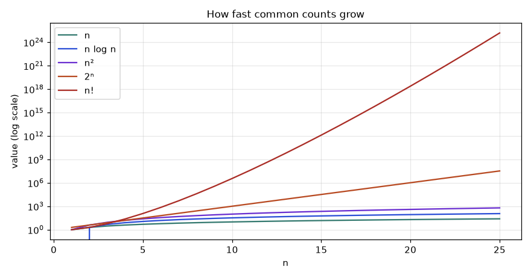
How to read it: the vertical axis is logarithmic, so each gridline is ten times the one below. The polynomial curves (n, n log n, n2) rise gently, 2n climbs steeply, and n! overtakes everything. At n = 25, n2 is 625 but n! is about 1.55 × 1025.
Hyperparameter grids. A grid search tries every combination, so by the product rule the number of runs is the product of the number of values per setting. Ten settings with five values each give 510 = 9,765,625 runs. If one run takes 10 minutes, that is 97,656,250 minutes, or 97,656,250 / 525,600 ≈ 185.8 years (525,600 is the number of minutes in a year). Adding one more setting multiplies the cost by its number of values. Random search samples runs from the grid instead of walking through all of it, and it is usually the better choice for this reason.
Feature interactions. With d features there are C(d, 2) = d(d − 1)/2 pairwise products. For d = 100 that is 4,950; add the 100 squares and you get 5,050 more terms. The number of monomials of degree at most p in d variables is C(d + p, p) (a stars-and-bars count). For d = 100: p = 2 gives C(102, 2) = 5,151 terms, and p = 3 gives C(103, 3) = 176,851 terms. The number of subsets of d = 30 features is 230 = 1,073,741,824, which makes exhaustive feature selection impossible and is why greedy methods and regularisation exist. The number of orderings of 15 cities for a delivery route is 14!/2 = 43,589,145,600 (fix the start, and a route read backwards is the same route). The number of different true/false functions of n yes/no inputs is 2(2n): 65,536 for n = 4, and 4,294,967,296 for n = 5. The curse of dimensionality is the same effect: with 10 bins per feature and d features there are 10d cells, so 20 features already need more data than any dataset holds.
from math import comb, factorial
grid = 5 ** 10
print(grid, round(grid * 10 / 525600, 1))
print(comb(100, 2), comb(102, 2), comb(103, 3))
print(2 ** 30, factorial(14) // 2, 2 ** (2 ** 4), 2 ** (2 ** 5))
print(comb(100000, 2), comb(100000, 2) * 8 / 1e9)9765625 185.8
4950 5151 176851
1073741824 43589145600 65536 4294967296
4999950000 39.9996The last line is the cost of an all-pairs distance matrix for 100,000 points: 4,999,950,000 pairs, which is about 40 GB with 8 bytes each (and twice that if you store the full symmetric square). That is why nearest-neighbour search at scale uses indexes and approximations instead of all-pairs comparisons.
Chapter recap
- ∑ is a loop that adds, ∏ a loop that multiplies; constants come out, sums of sums split, and the empty sum is 0.
- Variance, dot products, MSE and log-likelihood are sums; ln turns a product of probabilities into a sum and prevents underflow.
- Arithmetic series: Sn = n(a1 + an)/2. Geometric series: Sn = a1(1 − rn)/(1 − r), and the infinite sum a/(1 − r) exists only for |r| < 1.
- Recurrences define a sequence by earlier terms plus a base case; unroll them to find closed forms and run times (merge sort n log n, naive Fibonacci exponential).
- De Morgan: ¬(P ∧ Q) = ¬P ∨ ¬Q. Pandas masks use
& | ~; SQL uses three-valued logic, so NULL needs explicit handling. - Set algebra: ∪, ∩, −, complement; |A ∪ B| = |A| + |B| − |A ∩ B|; Python sets and SQL
UNION/INTERSECT/EXCEPTimplement them. - Injective means no collisions, surjective means nothing left unused, bijective means reversible.
- Proofs: direct, contradiction, counterexample, induction (base case plus step). Testing many cases is not a proof.
- Counting: product rule for sequences of choices, P(n, r) when order matters, C(n, r) when it does not, nr with repetition, stars and bars C(r + n − 1, n − 1) for identical items.
- Birthday bound: collisions appear near √m items, not m. Graphs: degrees sum to twice the number of edges; powers of the adjacency matrix count walks.
- Expert estimates: Hn ≈ ln n + 0.5772, n! ≈ √(2πn)(n/e)n, pigeonhole ⌈N/k⌉, and grids and subsets grow multiplicatively or as 2n.
| Formula / pattern | Meaning |
|---|---|
| ∑(ai + bi) = ∑ai + ∑bi | Sums split; products inside sums do not |
| ∑ (xi − x̄)2 = ∑xi2 − n x̄2 | Variance shortcut (unstable in floating point) |
| 1 + 2 + ... + n = n(n + 1)/2 | Triangular numbers, cost of a pairs loop |
| a(1 − rn)/(1 − r), a/(1 − r) | Finite and infinite geometric sums (discounting, EMA, learning rate) |
| T(n) = 2T(n/2) + n | Merge sort, n log2 n + n |
| |A ∪ B| = |A| + |B| − |A ∩ B| | Inclusion-exclusion |
| P(n, r) = n!/(n − r)!, C(n, r) = n!/(r!(n − r)!) | Ordered and unordered selections |
| (a + b)n = ∑ C(n, k) an−k bk | Binomial theorem; row sums are 2n |
| C(r + n − 1, n − 1) | Identical items into n boxes (stars and bars) |
| 1 − e−n(n−1)/(2m) | Birthday and hash collision probability |
| Hn ≈ ln n + γ; n! ≈ √(2πn)(n/e)n | Growth of the harmonic sum and of the factorial |
| Mk entries | Number of walks of length k in a graph |
Practice set
Problem 4.9.1 Evaluate ∑k=15 k2 by expanding, and check with the formula n(n + 1)(2n + 1)/6.
Answer: 1 + 4 + 9 + 16 + 25 = 55. Formula: 5 × 6 × 11 / 6 = 330 / 6 = 55. Both agree.
Problem 4.9.2 An arithmetic sequence has a1 = 3 and d = 5. Find a12 and the sum of the first 12 terms.
Answer: a12 = 3 + 11 × 5 = 58. S12 = 12 × (3 + 58) / 2 = 12 × 61 / 2 = 366.
Problem 4.9.3 Find 12 + 6 + 3 + 1.5 + ... (to infinity). What goes wrong with 12 + 24 + 48 + ...?
Answer: a = 12, r = 6/12 = 0.5, |r| < 1, so the sum is 12 / (1 − 0.5) = 24. For 12 + 24 + 48 + ... the ratio is 2, which is at least 1, so the series diverges and the formula 12/(1 − 2) = −12 is meaningless.
Problem 4.9.4 Negate the filter "age ≥ 18 AND country = 'US'" using De Morgan, and write it in pandas.
Answer: NOT (age ≥ 18 AND country = US) = (age < 18) OR (country ≠ US). In pandas: (df["age"] < 18) | (df["country"] != "US"), which equals ~((df["age"] >= 18) & (df["country"] == "US")). If country can be missing, decide separately whether those rows belong in the result (NaN != "US" is True in pandas).
Problem 4.9.5 Of 150 customers, 70 bought product A, 60 bought product B, and 30 bought both. How many bought neither?
Answer: |A ∪ B| = 70 + 60 − 30 = 100. Neither = 150 − 100 = 50.
Problem 4.9.6 You choose 3 of 8 candidate features for a small model. How many choices? How many if you also decide the order in which they are fed in?
Answer: Order does not matter for the first question: C(8, 3) = 8 × 7 × 6 / 6 = 56. With order: P(8, 3) = 8 × 7 × 6 = 336 = 56 × 3!.
Problem 4.9.7 How many 4-letter lowercase codes have no repeated letter? How many allow repeats?
Answer: No repeats: P(26, 4) = 26 × 25 × 24 × 23 = 358,800. With repeats: 264 = 456,976. Check: 26 × 25 = 650; × 24 = 15,600; × 23 = 358,800.
Problem 4.9.8 Seven identical servers are assigned to 4 services, a service may get none. How many assignments?
Answer: Stars and bars with 7 stars and 3 bars: C(7 + 3, 3) = C(10, 3) = 10 × 9 × 8 / 6 = 120.
Problem 4.9.9 Prove by induction that 1 + 2 + 4 + ... + 2n−1 = 2n − 1 for all n ≥ 1.
Answer: Base n = 1: left side 1, right side 21 − 1 = 1. Step: assume the formula for k. Then the sum up to 2k is (2k − 1) + 2k = 2 × 2k − 1 = 2k+1 − 1, which is the formula for k + 1. So it holds for all n ≥ 1. (Compare with the geometric formula, a1 = 1, r = 2.)
Problem 4.9.10 Find the bug: this function should return the mean, but for [4, 8, 6] it returns 4.667 instead of 6.
def mean(x):
total = 0
for i in range(1, len(x)):
total += x[i]
return total / len(x)Answer: The loop starts at index 1, so it skips x[0] = 4 (Python indexes from 0). The total becomes 8 + 6 = 14 and 14 / 3 = 4.667, while the correct answer is 18 / 3 = 6. Fix: range(len(x)) or sum(x). It is the sigma-notation off-by-one: ∑i=1n in maths corresponds to range(n) in code when counting from zero.
Problem 4.9.11 What does this code print? Work it out first.
from itertools import combinations
print(len(list(combinations(range(6), 3))))
print(sum(1 / 2 ** k for k in range(1, 11)))Answer: The first line counts 3-element subsets of 6 items: C(6, 3) = 20. The second sums 1/2 + 1/4 + ... + 1/1024, a geometric sum with a1 = 1/2 and r = 1/2: (1/2)(1 − 2−10)/(1/2) = 1 − 1/1024 = 0.9990234375. It prints 20 then 0.9990234375 (all terms are exact in binary, so there is no rounding noise).
Problem 4.9.12 Solve T(n) = T(n − 1) + n with T(1) = 1, and say what algorithm it models.
Answer: Unroll: T(n) = n + (n − 1) + ... + 2 + 1 = n(n + 1)/2. Check T(5): T(2) = 3, T(3) = 6, T(4) = 10, T(5) = 15 = 5 × 6 / 2. It models a simple quadratic algorithm such as insertion sort in the worst case, or comparing every item with all earlier ones. Proof by induction: T(k + 1) = k(k + 1)/2 + (k + 1) = (k + 1)(k + 2)/2.
Problem 4.9.13 A grid search tunes 6 settings with 5, 4, 3, 3, 2 and 2 values. Each run takes 3 minutes. How long does the full grid take?
Answer: Runs: 5 × 4 × 3 × 3 × 2 × 2 = 720. Time: 720 × 3 = 2,160 minutes = 36 hours. Adding one more setting with 3 values would triple it to 108 hours, which is why you drop unimportant settings or use random search.
Problem 4.9.14 Show that among any 5 integers, two have a difference divisible by 4. Then: 101 files go into 10 folders; what can you say about the fullest folder?
Answer: Dividing by 4 leaves one of 4 remainders (0, 1, 2, 3), so 5 integers must put two in the same remainder box (pigeonhole). Those two have equal remainders, so their difference is a multiple of 4. For the files: some folder holds at least ⌈101/10⌉ = 11 files.
Problem 4.9.15 In a room of 30 people, what is the chance two share a birthday? Write the formula and check it with code.
Answer: P(no match) = (365/365)(364/365) ... (336/365) = ∏i=029 (365 − i)/365 ≈ 0.2937, so P(match) ≈ 0.7063.
import numpy as np
p_none = np.prod((365 - np.arange(30)) / 365)
print(round(1 - p_none, 4))0.7063Problem 4.9.16 (Interview.) You must compute the distance between every pair of 100,000 points, each stored as float64. How many distances is that, and how much memory does a full square matrix take versus only the distinct pairs?
Answer: Distinct pairs: C(100,000, 2) = 100,000 × 99,999 / 2 = 4,999,950,000. Stored as 8-byte floats that is about 40 GB. The full square matrix has 100,0002 = 1010 entries, so 80 GB. Practical answer: process in chunks, use approximate nearest-neighbour indexes, or reduce the number of points first.
Problem 4.9.17 (Expert.) Use Stirling's formula to explain why C(2n, n) is about 4n/√(πn), then use it to estimate the chance that 100 fair coin flips give exactly 50 heads.
Answer: C(2n, n) = (2n)!/(n!)2. Substitute (2n)! ≈ √(4πn)(2n/e)2n and n! ≈ √(2πn)(n/e)n. The powers of n and e cancel, leaving 22n √(4πn)/(2πn) = 4n/√(πn). With 2n = 100, n = 50: the probability is C(100, 50)/2100 ≈ 1/√(50π) = 1/12.533 = 0.0798, about 8%. The exact value is 0.0796.
import math
print(round(math.comb(100, 50) / 2 ** 100, 4), round(1 / math.sqrt(50 * math.pi), 4))0.0796 0.0798Prompt pack
You are my patient, practical professor. I am a working professional moving into data roles, with only school-level math. Teach me Sums, Sequences, Sets and Counting: sigma and pi notation, arithmetic and geometric series (including infinite series and discounting), recurrences and run times, logic and De Morgan with pandas masks and SQL WHERE (including NULL), sets and inclusion-exclusion, proof by induction and contradiction, permutations, combinations, stars and bars, the birthday problem, graphs and adjacency matrices, and combinatorial explosion. Work in small steps: explain one idea with a tiny numeric example, then ask me ONE question and wait for my answer before continuing. After each answer tell me what I got right, correct any mistake gently, and then raise the difficulty. After 10 questions, give me a score and a list of the topics I should review. Use Python snippets only with the standard library, NumPy and pandas.
You are a careful math reviewer. I will paste my worked solution to a problem about sums, series, logic, sets, proofs or counting. Check every line. For each step say "correct" or "wrong", and if wrong, show the right calculation and name the mistake type (off-by-one in the index, adding instead of multiplying, order versus no order, forgetting that sum of squares is not the square of the sum, using the infinite geometric formula when |r| is at least 1, treating NULL like a normal value, missing base case in induction). Then verify the final number with a short Python snippet and tell me one similar problem to try next. Do not just give me the answer: make me find my own error first by giving a hint, and only reveal the full fix if I ask.
You are a data science interviewer. Run a 30-minute mock interview on the math of sums and counting. Ask one question at a time and wait for my answer. Start with warm-ups (variance as a sum, geometric series for discounting, De Morgan in a SQL filter), then counting (train/test split counts, A/B assignments, passwords, how many pairs among n items), then deeper questions (why naive Fibonacci is exponential, loop invariants and induction, birthday bound for hash collisions, size of a hyperparameter grid, Stirling approximation, pigeonhole). After each answer, grade me from 1 to 5, say what a strong answer would include, and ask a follow-up that probes my understanding. At the end give a summary of strengths and weaknesses and a 3-day study plan.
Your company runs a streaming service with two million users and twelve thousand films. Your manager asks a simple question: "Find me users who are similar to Ana, so we can recommend what they liked." A week later, a second request arrives: "Our support site has 40,000 help articles. When a customer types a question, show the five most relevant articles, even if the words are different." Both requests are the same problem in disguise. You must turn a user, or a sentence, into a list of numbers, and then decide what "similar" means for lists of numbers. A list of numbers is a vector. "Similar" will turn out to be a question about length, direction, angle and distance, which is geometry.
This chapter is the foundation of almost everything that follows in the book. A row of your dataset is a vector. The weights of a linear model are a vector. A word embedding (300 to 4,096 numbers that capture the meaning of a word or sentence) is a vector. The prediction of a neuron is a dot product of two vectors. The decision boundary of a classifier is a hyperplane defined by one vector. When people say that a model "lives in a 768-dimensional space", they mean vectors with 768 numbers, and every idea you learn here for two numbers still works for 768.
After this chapter you will be able to: add, scale and combine vectors by hand and in NumPy; compute and interpret dot products, norms and angles; build a cosine-similarity search engine and explain when cosine beats Euclidean distance; project one vector onto another (and onto a whole subspace) and explain how that is the heart of regression; orthogonalise vectors with Gram-Schmidt; decide whether vectors are independent and write coordinates in a new basis; describe a classifier as a hyperplane and compute the distance of a point to it; centre and standardise data columns as vector operations; use NumPy broadcasting without surprises; and explain, with a proof or a demo, why distances behave strangely in high dimensions. Our running examples are film ratings (small, by hand), tiny search engines, and a spam-score classifier. Chapter 6 will build on this by turning vectors into matrices.
5.1 Vectors: Lists of Numbers and Arrows
Beginner: a vector is a row of data
Three users rated three films from 1 to 5. Each user is one vector with three numbers (the order is always the same: film A, film B, film C).
| User | Film A | Film B | Film C | Vector |
|---|---|---|---|---|
| Ana | 5 | 1 | 4 | (5, 1, 4) |
| Ben | 4 | 2 | 5 | (4, 2, 5) |
| Cy | 1 | 5 | 2 | (1, 5, 2) |
We write vectors in bold or with an arrow in books, and plain letters in code. Here we use plain letters such as u and v and write the entries as u = (u1, u2, u3). The number of entries is the dimension n. Ana lives in 3 dimensions. The set of all vectors with n real entries is written ℝn (read "R n"). A one-dimensional vector is a number on a line, a 2D vector is a point on a sheet of paper, a 3D vector is a point in a room. A 28 × 28 pixel image, flattened into one long list, is a vector in ℝ784. A sentence embedding from a language model might be in ℝ768. We cannot draw 768 axes, but the rules of arithmetic are identical, so the pictures we draw in 2D give correct intuition for the algebra in any dimension.
Intermediate: the two basic operations
There are only two things you can do to vectors without any extra machinery. Addition adds matching entries. Scalar multiplication multiplies every entry by one number (a "scalar" is just an ordinary number; the name tells you it scales the arrow). Both are done entry by entry, and both need no more than school arithmetic.
Adding is only allowed when the two vectors have the same dimension. Geometrically, u + v is "walk along u, then along v" (the tip-to-tail rule); the result is the diagonal of the parallelogram built on u and v. Multiplying by c = 2 stretches the arrow to double length, by c = 1/2 halves it, and by c = −1 flips it to point the opposite way.
Problem 5.1.1 Let u = (2, −1, 3) and v = (4, 0, −2). Compute u + v, 3u and 2u − v.
| Add | u + v = (2+4, −1+0, 3+(−2)) = (6, −1, 1) |
|---|---|
| Scale | 3u = (3·2, 3·(−1), 3·3) = (6, −3, 9) |
| Combine | 2u = (4, −2, 6). Then 2u − v = (4−4, −2−0, 6−(−2)) = (0, −2, 8) |
| Check | Entry 3 of 2u − v: 2·3 − (−2) = 8. Correct. |
Problem 5.1.2 The "taste centroid" of Ana, Ben and Cy is the average of their rating vectors. Compute it.
| Idea | Add all three vectors, then multiply by 1/3 (scalar multiplication). |
|---|---|
| Sum | (5+4+1, 1+2+5, 4+5+2) = (10, 8, 11) |
| Scale | (10/3, 8/3, 11/3) = (3.333, 2.667, 3.667) |
| Meaning | The average user rates film A at 3.33, B at 2.67 and C at 3.67. The centroid is the heart of k-means clustering (see the Machine Learning document). |
Linear combinations and span
Mix scaling and adding and you get a linear combination: c1v1 + c2v2 + … + ckvk, where the c's are numbers (the coefficients). Think of a recipe: "2 parts v1, 3 parts v2". The span of a set of vectors is the set of all vectors you can reach by some recipe. The span of one non-zero vector is a line through the origin. The span of two vectors that do not point along the same line is the whole 2D plane (and, inside 3D, a flat sheet through the origin).
Problem 5.1.3 Is (7, 4) in the span of (1, 2) and (3, 1)? Is it in the span of (1, 2) and (2, 4)?
| Setup | Find a, b with a(1, 2) + b(3, 1) = (7, 4). Entry by entry: a + 3b = 7 and 2a + b = 4. |
|---|---|
| Solve | From the second equation b = 4 − 2a. Put into the first: a + 3(4 − 2a) = 7, so a + 12 − 6a = 7, so −5a = −5, so a = 1 and b = 2. |
| Check | 1·(1, 2) + 2·(3, 1) = (1+6, 2+2) = (7, 4). Yes. |
| Second pair | (2, 4) = 2·(1, 2), so every combination is a multiple of (1, 2), a single line. (7, 4) would need t(1, 2) = (7, 4), so t = 7 and 2t = 4 at once, which is impossible. No. |
The second pair is the first sign of an important idea: a second vector that lies on the line of the first adds nothing new to the span. We make that precise in section 5.6.
import numpy as np
u = np.array([2, -1, 3])
v = np.array([4, 0, -2])
print(u + v)
print(3 * u)
print(2 * u - v)
users = np.array([[5, 1, 4], [4, 2, 5], [1, 5, 2]])
print(users.mean(axis=0).round(3)) # centroid: average down the rows
A = np.array([[1, 3], [2, 1]]) # columns are (1,2) and (3,1)
print(np.linalg.solve(A, [7, 4]).round(6)) # coefficients a, b
print([1, 2] + [3, 4]) # Python lists glue together
print(np.array([1, 2]) + np.array([3, 4])) # NumPy arrays add[ 6 -1 1]
[ 6 -3 9]
[ 0 -2 8]
[3.333 2.667 3.667]
[1. 2.]
[1, 2, 3, 4]
[4 6][1, 2] + [3, 4] gives [1, 2, 3, 4], a list of length 4, not the vector (4, 6). Right: convert to np.array first, then + adds entry by entry. The same trap exists for 2 * [1, 2], which repeats the list instead of doubling the entries.Going deeper
Mathematicians define a vector space as any collection of objects where addition and scaling obey a short list of rules (add in any order, a zero vector exists, scaling distributes over addition, and so on). Lists of numbers are one example. Polynomials, images and even functions are others, and everything in this chapter that uses only addition and scaling applies to them. For data work two practical consequences matter. First, "dimension" is the number of independent directions, not the number of things you can see. Second, word analogies such as king − man + woman ≈ queen are literally linear combinations of embedding vectors: the model has learned a space where such arithmetic is meaningful. Interviewers like to ask "what does it mean to add two embeddings?" A good answer: you get a vector in between, pulled toward both, and it is meaningful only if the training made the geometry carry meaning.
5.2 The Dot Product
Beginner: a shopping bill
You buy 3 apples at 0.50, 2 loaves of bread at 2.00 and 1 carton of milk at 1.20. The bill is 3·0.50 + 2·2.00 + 1·1.20 = 1.50 + 4.00 + 1.20 = 6.70. That is a dot product of the quantity vector (3, 2, 1) with the price vector (0.50, 2.00, 1.20). Multiply matching entries, then add.
The answer is one number (a scalar), never a vector. Both vectors must have the same length. A linear model's prediction is the same thing: weights · features + intercept. A single neuron computes w · x + b before its activation function.
Problem 5.2.1 Compute (1, 2, 3) · (4, −5, 6).
| Multiply | 1·4 = 4, 2·(−5) = −10, 3·6 = 18 |
|---|---|
| Add | 4 − 10 + 18 = 12 |
| Check | Swap the order: 4·1 + (−5)·2 + 6·3 = 4 − 10 + 18 = 12. The dot product is commutative. |
Problem 5.2.2 A house-price model has weights w = (3000, 10000, −500) for (area in m², bedrooms, age in years) and intercept b = 20000. Predict the price for x = (80, 3, 10).
| Formula | price = w · x + b |
|---|---|
| Multiply | 3000·80 = 240000; 10000·3 = 30000; −500·10 = −5000 |
| Add | 240000 + 30000 − 5000 = 265000, then add b: 265000 + 20000 = 285000 |
| Meaning | Each weight is the price change per unit of that feature. The negative weight says each extra year of age lowers the price by 500. |
Intermediate: the geometric definition
Write ‖a‖ for the length (norm) of a, which for a = (a1, a2) is √(a12 + a22) by Pythagoras. Let θ (theta) be the angle between the two arrows when drawn from the same starting point. Then:
Look at the cosine. It is positive when the angle is below 90° (arrows point roughly together), zero at exactly 90° (perpendicular), and negative above 90° (roughly opposite). So the sign of a dot product tells you at a glance whether two vectors agree. Two arrows of length 1 have a dot product equal to cos θ, a number between −1 and 1.
Problem 5.2.3 Find the angle between a = (4, 1) and b = (2, 3).
| Dot | a · b = 4·2 + 1·3 = 11 |
|---|---|
| Lengths | ‖a‖ = √(16+1) = √17 = 4.1231; ‖b‖ = √(4+9) = √13 = 3.6056 |
| Cosine | cos θ = 11 / (4.1231 · 3.6056) = 11 / 14.866 = 0.7399 |
| Angle | θ = arccos(0.7399) = 42.27° |
| Check | Positive dot product, so the angle is below 90°. The arrows in the figure below look about 40° apart. Correct. |
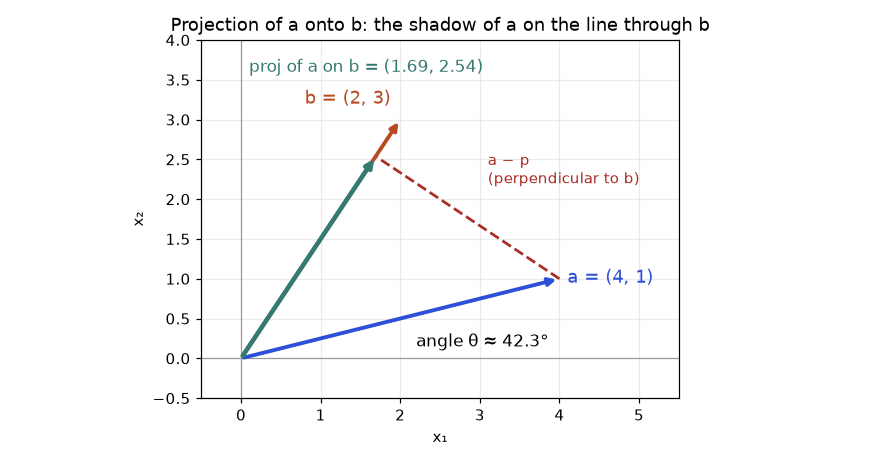
How to read it: the blue and orange arrows start at the origin. Drop a perpendicular from the tip of the blue arrow onto the orange line (dashed red). The teal arrow from the origin to the foot of that drop is the "shadow" of a along b. The dot product equals the length of b times the length of that shadow, with sign. That is another way to remember the geometric formula.
Rules of the dot product
- Symmetric: a · b = b · a.
- Linear: (a + c) · b = a · b + c · b, and (k·a) · b = k (a · b).
- Connection to length: a · a = a12 + … + an2 = ‖a‖2.
- Perpendicular vectors: a · b = 0 exactly when cos θ = 0, that is, when the vectors are at 90° (or one of them is the zero vector).
Problem 5.2.4 (A "what if it goes wrong" case.) Is a · b = 0 a proof that a = 0 or b = 0? Test with a = (1, 1) and b = (1, −1).
| Compute | a · b = 1·1 + 1·(−1) = 0 |
|---|---|
| Conclusion | Neither vector is zero, yet the product is zero. With ordinary numbers x·y = 0 forces x = 0 or y = 0, but for vectors the third possibility is "perpendicular". The arrows (1, 1) and (1, −1) meet at 90°. |
import numpy as np
a = np.array([4, 1])
b = np.array([2, 3])
dot = a @ b # @ is the dot product for 1D arrays
cos = dot / (np.linalg.norm(a) * np.linalg.norm(b))
print(dot, round(cos, 4), round(np.degrees(np.arccos(cos)), 2))
qty = np.array([3, 2, 1])
price = np.array([0.50, 2.00, 1.20])
print(round(qty @ price, 2))
w = np.array([3000, 10000, -500])
x = np.array([80, 3, 10])
print(w @ x + 20000)
print(a * b) # entry-by-entry product, NOT the dot
print(np.array([1, 1]) @ np.array([1, -1]))11 0.7399 42.27
6.7
285000
[8 3]
0a * b in NumPy and calling it the dot product. Wrong: a * b gives [8 3], the entry-by-entry product (a vector). Right: a @ b (or np.dot(a, b)) gives 11, the sum of those entries. You can also write (a * b).sum(), which is the same thing in two steps.Going deeper: why the two definitions agree
The algebraic formula (multiply and add) is easy to compute. The geometric formula (‖a‖‖b‖cos θ) is easy to interpret. Why are they equal? Here is a complete proof. It uses the law of cosines, which we first prove in the simplest setting.
Setting. Any two vectors in ℝn lie in a flat 2D sheet (the plane they span), so it is enough to check 2D. Rotating the picture changes no lengths or angles. Rotate so that b lies along the horizontal axis: b = (‖b‖, 0). Then a, at angle θ from b, has the coordinates a = (‖a‖ cos θ, ‖a‖ sin θ). The third side of the triangle is a − b.
That is the law of cosines. Now compute the same quantity with the algebraic dot product, using its linearity rules:
The two expressions for ‖a − b‖2 are equal, so cancel ‖a‖2 + ‖b‖2 from both sides and divide by −2: a · b = ‖a‖‖b‖ cos θ. This is the whole proof, and it also explains why the angle formula works in 768 dimensions: the proof only ever looks at the plane spanned by the two vectors.
The Cauchy-Schwarz inequality. Since cos θ is between −1 and 1, the formula gives |a · b| ≤ ‖a‖‖b‖. But we defined the angle from this formula, so we need an independent proof that the ratio never leaves [−1, 1] in n dimensions. Here it is, with no geometry. If b = 0 both sides are 0. Otherwise, for every real number t, a squared length is never negative:
Choose the clever value t = (a · b) / ‖b‖2. Then the right side becomes ‖a‖2 − 2(a · b)2/‖b‖2 + (a · b)2/‖b‖2 = ‖a‖2 − (a · b)2/‖b‖2, and this is still ≥ 0. Multiply by ‖b‖2 and take square roots: |a · b| ≤ ‖a‖‖b‖. Equality holds exactly when a − t b = 0, that is, when a is a multiple of b. This inequality is used everywhere in machine learning theory: it is why cosine similarity lives in [−1, 1], why correlation lives in [−1, 1], and the first step in the proof of the triangle inequality in the next section.
5.3 Length, Norms and Distances
Beginner: three rulers on one arrow
Take the vector (3, 4). Walk 3 across and 4 up. The straight line back to the start has length 5 (the famous 3-4-5 right triangle, Pythagoras). A taxi that can only go along the grid drives 3 + 4 = 7. A king on a chessboard needs max(3, 4) = 4 moves. Same arrow, three different "lengths": 5, 7 and 4.
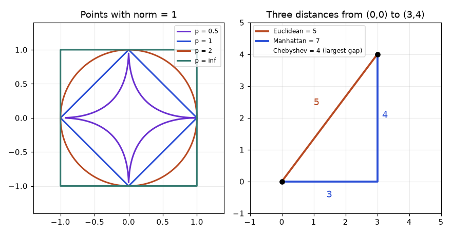
How to read it: on the left, each curve answers "which points are exactly 1 unit from the origin?" Under L2 you get the familiar circle. Under L1 it becomes a diamond with sharp corners on the axes, under L∞ it becomes a square, and for p below 1 the shape caves inwards into a star. On the right, the orange line is the straight-line distance (5), the blue staircase is the city-block distance (7), and the largest single gap is 4.
Intermediate: the definitions
| Norm | Formula | Also called | Where it appears |
|---|---|---|---|
| L1 | ‖x‖1 = |x1| + … + |xn| | Manhattan, taxicab | MAE loss, lasso penalty, sparse models |
| L2 | ‖x‖2 = √(x12 + … + xn2) | Euclidean, "length" | MSE loss, ridge penalty, k-means, embeddings |
| L∞ | ‖x‖∞ = max |xi| | Chebyshev, max norm | Worst-case error, adversarial perturbations |
| Lp | ‖x‖p = (|x1|p + … + |xn|p)1/p | p-norm, for p ≥ 1 | The family that contains all of the above |
Setting p = 1 and p = 2 in the Lp formula gives L1 and L2. Letting p grow without bound makes the biggest entry dominate, and the limit is L∞. By default "norm" and "length" mean L2 and the subscript is often dropped: ‖x‖ = ‖x‖2 = √(x · x).
Problem 5.3.1 Compute the L1, L2 and L∞ norms of x = (3, −4, 12).
| L1 | |3| + |−4| + |12| = 3 + 4 + 12 = 19 |
|---|---|
| L2 | √(9 + 16 + 144) = √169 = 13 |
| L∞ | max(3, 4, 12) = 12 |
| Order | 12 ≤ 13 ≤ 19. This is always true: ‖x‖∞ ≤ ‖x‖2 ≤ ‖x‖1. |
Problem 5.3.2 Watch the p-norm shrink towards the max. Compute ‖x‖4 for the same x.
| Powers | 34 = 81, 44 = 256, 124 = 20736 |
|---|---|
| Sum | 81 + 256 + 20736 = 21073 |
| Root | 210731/4 = √(√21073) = √145.17 = 12.05 |
| Meaning | p = 1 gave 19, p = 2 gave 13, p = 4 gives 12.05, and the limit is 12. Large p lets the biggest entry take over. |
Unit vectors and normalisation
A unit vector has length 1. To turn any non-zero vector x into a unit vector pointing the same way, divide by its own length: x̂ = x / ‖x‖. This is called normalising. The result keeps only the direction, and throws away the size. For (3, 4): length 5, so x̂ = (3/5, 4/5) = (0.6, 0.8), and indeed 0.36 + 0.64 = 1. For x = (3, −4, 12): x̂ = (3/13, −4/13, 12/13) = (0.2308, −0.3077, 0.9231). The zero vector cannot be normalised (you would divide by zero), so any code that normalises should guard against it.
Distance between two vectors
The distance between a and b is the norm of their difference: d(a, b) = ‖a − b‖. With L2 this is the straight-line distance, used by k-nearest neighbours and k-means. With L1 it is the sum of absolute gaps. With L∞ it is the largest gap.
Problem 5.3.3 Customers a = (30, 50000) and b = (40, 52000) are described by (age in years, income in dollars). Find the Euclidean distance. What does the answer tell you?
| Difference | a − b = (−10, −2000) |
|---|---|
| Squares | (−10)2 = 100 and (−2000)2 = 4,000,000 |
| Root | √4,000,100 = 2000.025 |
| Meaning | The age gap of 10 years contributes almost nothing: without the age term the distance would be 2000.000. Income, being measured in big numbers, decides everything. A 10-year age gap is a big difference between people, but the formula cannot see it. Fix: put features on comparable scales first (section 5.8). |
import numpy as np
x = np.array([3.0, -4.0, 12.0]) # floats: 12**50 would overflow int64
print(np.linalg.norm(x, 1), np.linalg.norm(x), np.linalg.norm(x, np.inf))
for p in [1, 2, 4, 10, 50]:
print(p, round((np.abs(x) ** p).sum() ** (1 / p), 4))
unit = x / np.linalg.norm(x)
print(unit.round(4), np.linalg.norm(unit))
a = np.array([30, 50000])
b = np.array([40, 52000])
print(round(np.linalg.norm(a - b), 3))
X = np.array([[3, 4], [6, 8]])
print(np.linalg.norm(X)) # a matrix: one number for the whole thing
print(np.linalg.norm(X, axis=1)) # one length per row19.0 13.0 12.0
1 19.0
2 13.0
4 12.0485
10 12.0
50 12.0
[ 0.2308 -0.3077 0.9231] 1.0
2000.025
11.180339887498949
[ 5. 10.]np.linalg.norm(X) on a whole table of rows and expecting row lengths. Wrong: for the 2 × 2 array above it returns 11.1803 = √(9+16+36+64), the Frobenius norm of the entire matrix. Right: np.linalg.norm(X, axis=1) returns [5. 10.], one length per row. Forgetting axis is a very common silent bug when normalising embeddings.Going deeper: what makes a function a norm, and the triangle inequality
A function is a norm if it satisfies three rules: (1) ‖x‖ ≥ 0, and ‖x‖ = 0 only for x = 0; (2) scaling: ‖c x‖ = |c| ‖x‖; (3) the triangle inequality ‖x + y‖ ≤ ‖x‖ + ‖y‖. Rule 3 says that a detour is never shorter than the direct route. For L2 the proof uses Cauchy-Schwarz from section 5.2:
The inequality in the middle is Cauchy-Schwarz (a · b ≤ |a · b| ≤ ‖a‖‖b‖). Taking square roots of both sides, which is allowed because both are non-negative, gives ‖a + b‖ ≤ ‖a‖ + ‖b‖. Because distance is d(a, b) = ‖a − b‖, the triangle inequality gives d(a, c) ≤ d(a, b) + d(b, c): going via a third point never helps. For L1 and L∞ the proof is simpler: apply |s + t| ≤ |s| + |t| entry by entry.
For 0 < p < 1 the formula is not a norm (the triangle inequality fails: the star in the figure is not convex). Counting the non-zero entries, sometimes written ‖x‖0, is not a norm either (it breaks rule 2), but it is the thing sparse models truly want to minimise. The L1 norm is the closest convex stand-in, and that is why the lasso penalty makes coefficients exactly zero: the corners of the diamond lie on the axes, where some coordinates are zero. The round L2 ball has no corners, so ridge shrinks coefficients without zeroing them. Also, all norms on ℝn are "equivalent": ‖x‖∞ ≤ ‖x‖2 ≤ √n ‖x‖∞, so they agree on what "small" means, but constants matter in high dimensions.
5.4 Angles, Cosine Similarity and Orthogonality
Beginner and intermediate: the formula
Rearranging a · b = ‖a‖‖b‖cos θ gives the formula for the angle:
The second form says: normalise both vectors to length 1 first, and the cosine is just their dot product. Three tiny examples:
- a = (1, 0), b = (1, 1): a · b = 1, ‖a‖ = 1, ‖b‖ = √2, so cos θ = 1/√2 = 0.7071 and θ = 45°.
- a = (1, 2, 3), b = (−2, −4, −6): b = −2a, so a · b = −2 − 8 − 18 = −28, ‖a‖ = √14, ‖b‖ = 2√14, product = 28, cos θ = −1 and θ = 180°.
- a = (2, 1), b = (−1, 2): a · b = −2 + 2 = 0, so θ = 90°. The vectors are orthogonal (the word mathematicians use for perpendicular, which works in any dimension).
A worked search engine
We build a four-word vocabulary: (pizza, pasta, python, data). Each document is a vector of word counts (this is called a bag of words). We have five documents and one query, "python data", which has the vector q = (0, 0, 1, 1).
| Doc | Counts (pizza, pasta, python, data) | Topic |
|---|---|---|
| D1 | (3, 2, 0, 0) | Italian cooking |
| D2 | (1, 4, 0, 1) | Cooking, one data mention |
| D3 | (0, 0, 5, 4) | Programming with data |
| D4 | (0, 1, 3, 6) | Data, a little python, a stray pasta |
| D5 | (0, 0, 50, 40) | Same topic as D3, ten times longer |
Problem 5.4.1 Rank the documents for the query by cosine similarity, then by Euclidean distance.
| Query length | ‖q‖ = √(1 + 1) = 1.4142 |
|---|---|
| D3 | q · D3 = 5 + 4 = 9. ‖D3‖ = √(25 + 16) = 6.4031. cos = 9 / (1.4142 · 6.4031) = 9 / 9.0554 = 0.9939 |
| D4 | q · D4 = 3 + 6 = 9. ‖D4‖ = √(0 + 1 + 9 + 36) = √46 = 6.7823. cos = 9 / (1.4142 · 6.7823) = 9 / 9.5917 = 0.9383 |
| D2 | q · D2 = 0 + 0 + 0 + 1 = 1. ‖D2‖ = √18 = 4.2426. cos = 1 / (1.4142 · 4.2426) = 1/6 = 0.1667 |
| D1 | q · D1 = 0, so cos = 0. |
| D5 | q · D5 = 90. ‖D5‖ = √(2500 + 1600) = 64.0312. cos = 90 / (1.4142 · 64.0312) = 0.9939, identical to D3. |
| Cosine ranking | D3 = D5 (0.9939) > D4 (0.9383) > D2 (0.1667) > D1 (0) |
| Euclidean | D1 − q = (3, 2, −1, −1): √15 = 3.873. D2 − q = (1, 4, −1, 0): √18 = 4.243. D3 − q = (0, 0, 4, 3): 5. D4 − q = (0, 1, 2, 5): √30 = 5.477. D5 − q = (0, 0, 49, 39): √3922 = 62.63. Ranking, nearest first: D1, D2, D3, D4, D5. |
The Euclidean ranking puts the cooking document first and the best programming document last! The cause is size: D1 and D2 are short and sit near the origin, so they are close to the short query almost no matter what they contain, while D5 is far away just because it has many words. Cosine ignores size and looks only at direction, so it puts the two programming documents on top, correctly.
Problem 5.4.2 A support-article search uses 4-number embeddings (real ones have hundreds). The query is q = (0.1, 0.9, −0.1, 0.2). Article "Refund policy" has e = (0.1, 0.8, −0.2, 0.3). Compute the cosine similarity.
| Dot | 0.1·0.1 + 0.9·0.8 + (−0.1)(−0.2) + 0.2·0.3 = 0.01 + 0.72 + 0.02 + 0.06 = 0.81 |
|---|---|
| Lengths | ‖q‖ = √(0.01 + 0.81 + 0.01 + 0.04) = √0.87 = 0.9327; ‖e‖ = √(0.01 + 0.64 + 0.04 + 0.09) = √0.78 = 0.8832 |
| Cosine | 0.81 / (0.9327 · 0.8832) = 0.81 / 0.8238 = 0.9833 |
| Meaning | A cosine of 0.98 means the two embeddings point almost the same way: the article is a strong match. |
import numpy as np
docs = np.array([[3, 2, 0, 0], [1, 4, 0, 1], [0, 0, 5, 4],
[0, 1, 3, 6], [0, 0, 50, 40]])
q = np.array([0, 0, 1, 1])
cos = docs @ q / (np.linalg.norm(docs, axis=1) * np.linalg.norm(q))
dist = np.linalg.norm(docs - q, axis=1) # broadcasting: q is subtracted from each row
print("cosine ", cos.round(4))
print("euclid ", dist.round(3))
print("best by cosine :", np.argsort(-cos) + 1)
print("best by euclid :", np.argsort(dist) + 1)
# embeddings: normalise once, then dot product = cosine
E = np.array([[0.1, 0.8, -0.2, 0.3], [0.9, 0.1, 0.4, -0.2], [0.2, 0.7, -0.4, 0.1]])
qe = np.array([0.1, 0.9, -0.1, 0.2])
En = E / np.linalg.norm(E, axis=1, keepdims=True)
qn = qe / np.linalg.norm(qe)
print((En @ qn).round(4))
print((np.linalg.norm(En - qn, axis=1) ** 2).round(4), (2 - 2 * En @ qn).round(4))cosine [0. 0.1667 0.9939 0.9383 0.9939]
euclid [ 3.873 4.243 5. 5.477 62.626]
best by cosine : [3 5 4 2 1]
best by euclid : [1 2 3 4 5]
[0.9833 0.1062 0.9098]
[0.0334 1.7877 0.1804] [0.0334 1.7877 0.1804]Orthogonality
Vectors a and b are orthogonal when a · b = 0. For orthogonal vectors the Pythagorean theorem holds in any dimension: ‖a + b‖2 = ‖a‖2 + 2 a · b + ‖b‖2 = ‖a‖2 + ‖b‖2. A set of vectors is orthonormal if they are mutually orthogonal and each has length 1. The standard axis vectors (1, 0, 0), (0, 1, 0), (0, 0, 1) are the classic example. Orthonormal sets are the best coordinate systems there are, as section 5.6 will show. Orthogonality is also the machine-learning notion of "no shared information": two features whose centred columns are orthogonal are uncorrelated.
Going deeper
Why normalising makes dot product equal cosine, and why ranking agrees with Euclidean. If ‖a‖ = ‖b‖ = 1, the denominator of the cosine formula is 1, so a · b = cos θ. And the distance is ‖a − b‖2 = ‖a‖2 + ‖b‖2 − 2 a · b = 2 − 2 cos θ. So smaller distance means larger cosine, exactly (the printed numbers above show it: 0.0334 = 2 − 2·0.9833). Vector databases exploit this: they normalise every embedding once at insert time, and then use fast dot-product (or L2) search, with no division in the inner loop.
Cosine distance is not a true metric. Define "cosine distance" as 1 − cos θ. Take a = (1, 0), b = (1, 1), c = (0, 1). Then 1 − cos(a, c) = 1 − 0 = 1, but 1 − cos(a, b) = 1 − 0.7071 = 0.2929 and 1 − cos(b, c) = 0.2929, which sum to 0.5858 < 1. The triangle inequality d(a, c) ≤ d(a, b) + d(b, c) fails. For ranking this is harmless, but algorithms that rely on the triangle inequality (some tree indexes, some clustering proofs) can misbehave. The angle itself, arccos(cos θ), does satisfy it.
Inner product spaces. Everything we did with the dot product used only a few of its properties: symmetry, linearity, and positivity (⟨a, a⟩ > 0 unless a = 0). Any rule ⟨a, b⟩ that has these three properties is called an inner product, and a vector space with one is an inner product space. Length is ‖a‖ = √⟨a, a⟩, angle is defined by the same cosine formula, and the Cauchy-Schwarz proof above never used anything else, so it holds in every inner product space. Examples: the weighted dot Σ wi ai bi with all wi > 0 (some features count more); aᵀMb with a symmetric positive definite matrix M (Mahalanobis distance, which accounts for correlated features; Chapters 6 and 8); the sum Σ AijBij for two matrices (the Frobenius inner product); and ∫ f(x) g(x) dx for functions (Fourier series, kernel methods, Gaussian processes). The practical lesson: once you know the geometry for plain vectors, you know it for all of these, and "kernel" methods are exactly the trick of changing the inner product while keeping every algorithm.
5.5 Projections and Gram-Schmidt
Beginner and intermediate: projection onto one vector
We want the point on the line through b that is closest to a. Call it p. Because p is on the line it is a multiple of b: p = t b for some number t. Closest means the leftover r = a − p makes a right angle with b, that is, r · b = 0. Solve for t:
The number t is how many copies of b fit in the shadow. The length of the shadow is |a · b| / ‖b‖, which equals ‖a‖|cos θ| and is called the scalar projection. If b is already a unit vector then b · b = 1 and the formula shrinks to (a · b) b.
Problem 5.5.1 Project a = (4, 1) onto b = (2, 3) (the picture from section 5.2).
| Dots | a · b = 11 and b · b = 4 + 9 = 13 |
|---|---|
| Coefficient | t = 11/13 = 0.8462 |
| Projection | p = (11/13)(2, 3) = (22/13, 33/13) = (1.6923, 2.5385) |
| Remainder | r = a − p = (4 − 22/13, 1 − 33/13) = (30/13, −20/13) = (2.3077, −1.5385) |
| Check 1 | r · b = (30·2 − 20·3)/13 = (60 − 60)/13 = 0. Perpendicular, as required. |
| Check 2 | ‖p‖ = t‖b‖ = 0.8462 · 3.6056 = 3.0509, and ‖a‖cos θ = 4.1231 · 0.7399 = 3.0509. Same. |
Problem 5.5.2 (Regression through the origin.) A shop records ad spend x = (1, 2, 3) and sales y = (2, 3, 7) for three days. Find the slope β in y ≈ β x by projecting y onto x, and check that the residuals are orthogonal to x.
| Dots | x · y = 2 + 6 + 21 = 29; x · x = 1 + 4 + 9 = 14 |
|---|---|
| Slope | β = 29/14 = 2.0714 |
| Fitted | ŷ = 2.0714 · (1, 2, 3) = (2.0714, 4.1429, 6.2143) |
| Residual | y − ŷ = (2 − 29/14, 3 − 58/14, 7 − 87/14) = (−1/14, −16/14, 11/14) = (−0.0714, −1.1429, 0.7857) |
| Check | Residual · x = (−1 − 32 + 33)/14 = 0. The residual vector is perpendicular to the feature vector. This is exactly the least-squares condition. |
This is a deep fact worth pausing on: ordinary least squares is a projection. Minimising the sum of squared errors ‖y − β x‖2 means finding the point on the line of x nearest to y, and the nearest point is always the foot of the perpendicular.
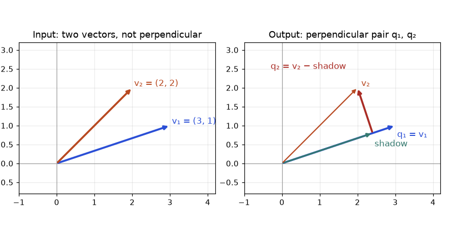
How to read it: on the right, the teal arrow is the shadow of v₂ on the direction of v₁. The red arrow starts at the tip of the shadow and ends at the tip of v₂; it is exactly the part of v₂ that v₁ cannot explain. Red and blue meet at 90°.
Intermediate: projection onto a subspace
Now suppose the target is not a line but a whole flat space (a subspace) spanned by several independent vectors a1, …, ak. In regression these are your feature columns. We want the closest point p in their span to a vector y. Write p as a recipe: p = x1a1 + … + xkak. The leftover r = y − p must be perpendicular to every spanning vector: aj · (y − p) = 0 for j = 1, …, k.
To write this compactly, collect the vectors as columns of a table A (Chapter 6 teaches matrices properly; here you only need three facts). The transpose Aᵀ turns the columns into rows. The product Aᵀy is the list of dot products (a1 · y, …, ak · y). The product AᵀA is the table of all pairwise dot products ai · aj. With p = A x, the k perpendicularity conditions become Aᵀ(y − A x) = 0, so:
The table AᵀA can be inverted exactly when the columns are linearly independent (section 5.6). Why is this foot of the perpendicular really the nearest point? Take any other point q in the subspace. The vector p − q lies in the subspace, so it is perpendicular to r. By Pythagoras, ‖y − q‖2 = ‖r‖2 + ‖p − q‖2 ≥ ‖r‖2, with equality only if q = p. No other point is closer.
Problem 5.5.3 Fit a line with an intercept through three points by projecting y = (1, 3, 2) onto the span of a1 = (1, 1, 1) (the constant column) and a2 = (0, 1, 2) (the feature x = 0, 1, 2).
| Dots | a1 · a1 = 3, a1 · a2 = 0 + 1 + 2 = 3, a2 · a2 = 0 + 1 + 4 = 5. a1 · y = 1 + 3 + 2 = 6, a2 · y = 0 + 3 + 4 = 7. |
|---|---|
| Equations | 3x1 + 3x2 = 6 and 3x1 + 5x2 = 7 |
| Solve | Subtract the first from the second: 2x2 = 1, so x2 = 0.5. Then 3x1 = 6 − 1.5 = 4.5, so x1 = 1.5. |
| Projection | p = 1.5(1, 1, 1) + 0.5(0, 1, 2) = (1.5, 2, 2.5) |
| Residual check | r = (1 − 1.5, 3 − 2, 2 − 2.5) = (−0.5, 1, −0.5). r · a1 = −0.5 + 1 − 0.5 = 0. r · a2 = 0 + 1 − 1 = 0. |
| Meaning | The best line is ŷ = 1.5 + 0.5x. The residuals sum to zero (orthogonal to the constant column) and are uncorrelated with x (orthogonal to the feature). |
Gram-Schmidt: building an orthogonal set
Orthonormal vectors are the nicest coordinates to work with, but data columns are never perpendicular. Gram-Schmidt converts any independent list v1, …, vk into an orthonormal list q1, …, qk that spans the same space at every stage. The recipe: take vectors one at a time, subtract the shadows on all the q's you have already built, and normalise what is left.
Problem 5.5.4 Apply Gram-Schmidt to v1 = (3, 1) and v2 = (2, 2) (the pair in the figure).
| Step 1 | ‖v1‖ = √10 = 3.1623, so q1 = (3, 1)/3.1623 = (0.9487, 0.3162) |
|---|---|
| Step 2: shadow | v2 · q1 = 2(0.9487) + 2(0.3162) = 2.5298 (exactly 8/√10). Shadow = 2.5298 · q1 = (2.4, 0.8) |
| Step 3: remainder | w2 = (2, 2) − (2.4, 0.8) = (−0.4, 1.2) |
| Step 4: normalise | ‖w2‖ = √(0.16 + 1.44) = √1.6 = 1.2649, so q2 = (−0.3162, 0.9487) |
| Check | q1 · q2 = −0.3 + 0.3 = 0 (using exact values 3/√10 · (−1/√10) + 1/√10 · 3/√10 = 0). Both have length 1. |
Problem 5.5.5 Orthogonalise (without normalising) v1 = (1, 1, 0), v2 = (1, 0, 1), v3 = (0, 1, 1).
| First | w1 = v1 = (1, 1, 0), w1 · w1 = 2 |
|---|---|
| Second | v2 · w1 = 1, so subtract (1/2)w1: w2 = (1, 0, 1) − (0.5, 0.5, 0) = (0.5, −0.5, 1). w2 · w2 = 0.25 + 0.25 + 1 = 1.5 |
| Third | v3 · w1 = 1, v3 · w2 = −0.5 + 1 = 0.5. Subtract (1/2)w1 and (0.5/1.5)w2 = (1/3)w2: w3 = (0, 1, 1) − (0.5, 0.5, 0) − (1/6, −1/6, 1/3) = (−2/3, 2/3, 2/3) |
| Check | w3 · w1 = −2/3 + 2/3 = 0. w3 · w2 = −1/3 − 1/3 + 2/3 = 0. w1 · w2 = 0.5 − 0.5 = 0. |
import numpy as np
a = np.array([4, 1]); b = np.array([2, 3])
t = a @ b / (b @ b)
p = t * b
r = a - p
print(round(t, 4), p.round(4), r.round(4), abs(r @ b) < 1e-12)
x = np.array([1, 2, 3]); y = np.array([2, 3, 7])
beta = x @ y / (x @ x)
print(round(beta, 4), (y - beta * x).round(4), abs((y - beta * x) @ x) < 1e-12)
A = np.array([[1, 0], [1, 1], [1, 2]]) # columns: constant, x
y = np.array([1, 3, 2])
coef = np.linalg.solve(A.T @ A, A.T @ y) # normal equations
print(coef, A @ coef, np.allclose(A.T @ (y - A @ coef), 0))
def gram_schmidt(V):
# columns of V in, orthonormal columns out
Q = []
for v in V.T.astype(float):
w = v.copy()
for q in Q:
w = w - (q @ w) * q
Q.append(w / np.linalg.norm(w))
return np.array(Q).T
V = np.array([[3, 2], [1, 2]])
Q = gram_schmidt(V)
print(Q.round(4))
print(np.round(Q.T @ Q, 10))0.8462 [1.6923 2.5385] [ 2.3077 -1.5385] True
2.0714 [-0.0714 -1.1429 0.7857] True
[1.5 0.5] [1.5 2. 2.5] True
[[ 0.9487 -0.3162]
[ 0.3162 0.9487]]
[[1. 0.]
[0. 1.]]Going deeper
The projection matrix. The matrix P = A(AᵀA)−1Aᵀ is the "projector": Py is the shadow of any y. It satisfies P2 = P (projecting twice changes nothing, since a shadow's shadow is itself) and Pᵀ = P. In regression P is called the hat matrix, because it puts a hat on y: ŷ = Py. Its diagonal entries are the leverages, which flag unusually influential data points. When the columns of A are orthonormal (call them Q), AᵀA = I and everything collapses to P = QQᵀ and x = Qᵀy: coordinates are just dot products, no equation solving.
Numerical trouble. The textbook recipe above, which computes every shadow from the original vj, is called classical Gram-Schmidt, and it loses orthogonality when the input vectors are almost dependent. Take the 4-dimensional vectors (1, ε, 0, 0), (1, 0, ε, 0), (1, 0, 0, ε) with ε = 10−8. Classical Gram-Schmidt returns q2, q3 whose dot product is 0.5 instead of 0, which is a disaster. The cure is modified Gram-Schmidt: subtract each shadow from the running remainder w (as the code above does with q @ w) rather than from the original v. Even better, production code uses QR decomposition by Householder reflections (np.linalg.qr), which Chapter 9 covers. The same warning explains why you should never solve regression by explicitly inverting AᵀA when features are nearly collinear: the condition number gets squared. Use np.linalg.lstsq.
import numpy as np
eps = 1e-8
V = np.array([[1, 1, 1], [eps, 0, 0], [0, eps, 0], [0, 0, eps]]) # three columns
def classical(V):
Q = []
for v in V.T:
w = v.copy()
for q in Q:
w = w - (q @ v) * q # shadow of the ORIGINAL v
Q.append(w / np.linalg.norm(w))
return np.array(Q).T
def modified(V):
Q = []
for v in V.T:
w = v.copy()
for q in Q:
w = w - (q @ w) * q # shadow of the running remainder
Q.append(w / np.linalg.norm(w))
return np.array(Q).T
for f in (classical, modified):
Q = f(V)
print(f.__name__, "q2.q3 =", round(float(Q[:, 1] @ Q[:, 2]), 4))classical q2.q3 = 0.5
modified q2.q3 = 0.0LinearRegression().fit(X, y) and reads model.predict(X), the predictions are the projection of y onto the column space of X (plus a constant column). The residuals are orthogonal to every feature. Chapter 7 explains the column space more fully, Chapter 9 gives the QR and SVD algorithms libraries really use, and the Statistics document, Chapter 6, covers regression inference.5.6 Independence, Basis, Dimension and Coordinates
Beginner and intermediate: independence
Vectors v1, …, vk are linearly independent if the only recipe c1v1 + … + ckvk = 0 (the zero vector) is the boring one with every c = 0. If some non-zero recipe also gives zero, they are dependent, and that recipe lets you solve for one vector in terms of the others.
Problem 5.6.1 Are (1, 2) and (2, 4) independent? Are (1, 2) and (3, 1)?
| First pair | 2·(1, 2) − 1·(2, 4) = (2, 4) − (2, 4) = (0, 0), with non-zero coefficients (2, −1). Dependent: the second vector is twice the first. |
|---|---|
| Second pair | Suppose c1(1, 2) + c2(3, 1) = (0, 0). Then c1 + 3c2 = 0 and 2c1 + c2 = 0. From the first, c1 = −3c2. Put in the second: −6c2 + c2 = −5c2 = 0, so c2 = 0 and c1 = 0. Independent. |
Problem 5.6.2 Are (1, 1, 0), (1, 0, 1), (0, 1, 1) independent? What about (1, 0, 1), (0, 1, 1), (1, 1, 2)?
| Set one | Solve c1(1,1,0) + c2(1,0,1) + c3(0,1,1) = 0: entry 1 gives c1 + c2 = 0, entry 2 gives c1 + c3 = 0, entry 3 gives c2 + c3 = 0. So c2 = −c1 and c3 = −c1; the third equation gives −2c1 = 0, so all c are 0. Independent. |
|---|---|
| Set two | (1, 0, 1) + (0, 1, 1) = (1, 1, 2). The third vector is the sum of the first two, so 1·(1,0,1) + 1·(0,1,1) − 1·(1,1,2) = 0. Dependent. |
In data work, dependence has a name: perfect multicollinearity. If one feature column equals a combination of others (for example total = part1 + part2, or a one-hot encoding that includes every category plus an intercept), the regression normal equations from section 5.5 have no unique answer, because AᵀA cannot be inverted. Near-dependence is nastier because the software runs but the coefficients become unstable.
Basis, dimension and coordinates
A basis of a space is a list of vectors that is independent and spans the space. ℝ2 has the standard basis e1 = (1, 0), e2 = (0, 1), but also (1, 2) and (3, 1), and infinitely many other pairs. Every basis of a space has the same number of vectors (Chapter 7 proves it), and that number is the dimension. So ℝn has dimension n, and any n + 1 vectors in it are dependent.
Given a basis b1, …, bn, every vector v has exactly one recipe v = c1b1 + … + cnbn. The numbers (c1, …, cn) are the coordinates of v in that basis. The list of numbers you normally write is the coordinates in the standard basis. A new basis is just a new set of axes.
Problem 5.6.3 Find the coordinates of v = (7, 4) in the basis b1 = (1, 2), b2 = (3, 1).
| Setup | Solve c1(1, 2) + c2(3, 1) = (7, 4). This is the system from Problem 5.1.3. |
|---|---|
| Answer | c1 = 1, c2 = 2 |
| Meaning | In the standard axes the vector is (7, 4). In the new axes the same arrow has coordinates (1, 2). Same arrow, different description. |
When the basis is orthonormal, you do not need to solve anything: the coordinate along qj is simply the dot product cj = v · qj. Proof: take v = c1q1 + … + cnqn and dot both sides with qj. Every term qi · qj with i ≠ j is 0, and qj · qj = 1, so v · qj = cj.
Problem 5.6.4 The orthonormal basis u1 = (1, 1)/√2, u2 = (1, −1)/√2 is the standard axes turned by 45°. Find the coordinates of v = (3, 5).
| c1 | v · u1 = (3 + 5)/√2 = 8/1.4142 = 5.6569 |
|---|---|
| c2 | v · u2 = (3 − 5)/√2 = −2/1.4142 = −1.4142 |
| Rebuild | 5.6569 · (0.7071, 0.7071) + (−1.4142) · (0.7071, −0.7071) = (4, 4) + (−1, 1) = (3, 5). Correct. |
| Length check | 5.65692 + 1.41422 = 32 + 2 = 34 = 32 + 52. Rotation keeps length. |
Why orthogonal vectors are automatically independent: if c1q1 + … + ckqk = 0 for non-zero orthogonal vectors, dot with qj to get cj‖qj‖2 = 0, so cj = 0 for every j. This is why Gram-Schmidt output is always a valid basis.
Going deeper: dimension in data
A table with 30 columns is a cloud of points in 30 dimensions, but if some columns are combinations of others the cloud lies in a smaller flat space, and the number of truly independent directions (the rank, Chapter 7) is smaller. Real data is usually only nearly flat: 784-pixel images of handwritten digits fill only a thin sliver of ℝ784, and PCA (Chapter 9) finds a new orthonormal basis whose first few axes capture most of the variation. Changing basis to find simpler coordinates is the single most reused trick in applied linear algebra: Fourier transforms, PCA, wavelets and the eigenvector bases of Chapter 8 are all examples.
import numpy as np
S1 = np.array([[1, 1, 0], [1, 0, 1], [0, 1, 1]])
S2 = np.array([[1, 0, 1], [0, 1, 1], [1, 1, 2]])
print(np.linalg.matrix_rank(S1), np.linalg.matrix_rank(S2)) # 3 = independent, 2 = dependent
X = np.array([[1, 2, 3], [2, 1, 3], [3, 5, 8], [4, 3, 7]]) # col3 = col1 + col2
print(np.linalg.matrix_rank(X))
B = np.array([[1, 3], [2, 1]]) # columns are the new basis b1, b2
print(np.linalg.solve(B, [7, 4]))
U = np.array([[1, 1], [1, -1]]) / np.sqrt(2) # rows are orthonormal basis vectors
c = U @ np.array([3, 5])
print(c.round(4), (U.T @ c).round(4)) # coordinates, then rebuild the vector3 2
2
[1. 2.]
[ 5.6569 -1.4142] [3. 5.]The cross product, awareness only
In 3D (and only there, in the everyday sense) there is a way to multiply two vectors and get a third vector perpendicular to both. For a = (a1, a2, a3) and b = (b1, b2, b3):
Its length is ‖a‖‖b‖ sin θ, the area of the parallelogram spanned by a and b, and its direction follows the right-hand rule. Example: a = (2, 1, 3), b = (1, 4, 2). First entry: 1·2 − 3·4 = −10. Second: 3·1 − 2·2 = −1. Third: 2·4 − 1·1 = 7. So a × b = (−10, −1, 7). Check perpendicularity: with a, −20 − 1 + 21 = 0; with b, −10 − 4 + 14 = 0. The parallelogram area is √(100 + 1 + 49) = √150 = 12.247. The cross product is anti-commutative: b × a = −(a × b), so order matters, and a × a = 0. You will rarely need it in machine learning (it appears in 3D graphics, robotics, point-cloud normals, and physics-based simulation), but the idea of "the direction perpendicular to a plane" is exactly what a hyperplane's normal vector w does in any dimension, which is the next section.
import numpy as np
a = np.array([2, 1, 3]); b = np.array([1, 4, 2])
c = np.cross(a, b)
print(c, c @ a, c @ b, round(np.linalg.norm(c), 4))
print(np.cross(b, a))[-10 -1 7] 0 0 12.2474
[10 1 -7]5.7 Lines, Planes and Hyperplanes: Decision Boundaries
Beginner: describing a line two ways
A line can be described by "where to start and which way to walk" (the parametric form): x = p + t d, where p is a point on the line, d is the direction vector and t is any real number. Through p = (1, 2) with direction d = (3, 1): t = 0 gives (1, 2), t = 1 gives (4, 3), t = 2 gives (7, 4). Or it can be described by "which points satisfy an equation" (the implicit form): the line 2x + 3y = 6 contains (3, 0), (0, 2) and (6, −2). The left side is a dot product: (2, 3) · (x, y) = 6. The vector (2, 3) is the normal of the line, the direction at 90° to it.
Intermediate: the hyperplane w · x + b = 0
The same idea in any dimension: a hyperplane is the set of all x with
where w ≠ 0 is the weight (normal) vector and b the bias (intercept). For n = 2 it is a line, for n = 3 a plane. Why is w perpendicular to the hyperplane? Take two points x1 and x2 on it. Then w · x1 + b = 0 and w · x2 + b = 0; subtract: w · (x1 − x2) = 0. The vector x1 − x2 is an arbitrary arrow lying inside the hyperplane, and w is orthogonal to every one of them. So w sticks straight out.
The score s(x) = w · x + b tells you the side: s > 0 on the side w points to, s < 0 on the other, s = 0 on the wall. A classifier simply predicts the sign of s. Logistic regression turns the same score into a probability with the sigmoid (Chapter 3), and a perceptron or a single neuron does the same followed by a threshold or activation.
Distance from a point to a hyperplane
Pick any point x1 on the hyperplane. The arrow x0 − x1 runs from the wall to the point x0. The perpendicular distance is the length of its shadow along the normal direction ŵ = w/‖w‖:
The last step used w · x1 = −b. Without the absolute value you get the signed distance, positive on the w side. This one formula is the geometry of the SVM, of logistic regression's decision boundary, and of "how confident is this prediction".
Problem 5.7.1 A 2D classifier has w = (1, 1) and b = −5. How far is the point (5, 4) from the boundary, and where is the nearest boundary point?
| Score | w · x + b = 5 + 4 − 5 = 4 |
|---|---|
| Length of w | ‖w‖ = √2 = 1.4142 |
| Distance | 4 / 1.4142 = 2.828 |
| Foot point | Walk back along w: x0 − (score/‖w‖2) w = (5, 4) − (4/2)(1, 1) = (3, 2) |
| Check | 3 + 2 − 5 = 0, so (3, 2) is on the boundary, and the gap (2, 2) has length √8 = 2.828. |
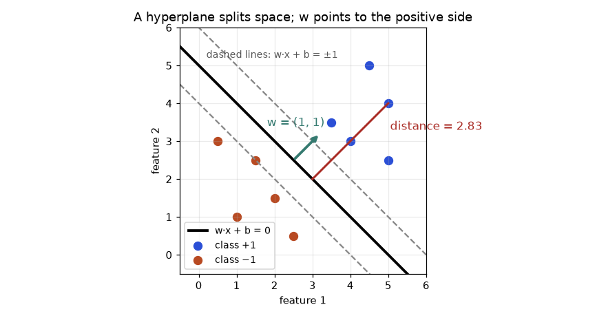
How to read it: the black line is where the score is zero. The teal arrow w is perpendicular to it and points to the blue (positive) side. The grey dashed lines are the two parallel hyperplanes where the score is +1 and −1. The red segment is the shortest way from the blue point (5, 4) to the boundary.
Problem 5.7.2 A plane in 3D is 2x − 2y + z = 9. How far is the origin from it?
| Write as w · x + b = 0 | w = (2, −2, 1), b = −9 |
|---|---|
| Length | ‖w‖ = √(4 + 4 + 1) = 3 |
| Distance | |w · 0 + b| / ‖w‖ = 9/3 = 3 |
Problem 5.7.3 A spam filter scores an email with features x = (number of links, number of ALL-CAPS words, trusted-sender flag) = (2, 1, 0.5). Weights are w = (0.8, −0.5, 1.2) and b = −1. Which side is it on, and how far from the boundary?
| Score | 0.8·2 + (−0.5)·1 + 1.2·0.5 − 1 = 1.6 − 0.5 + 0.6 − 1 = 0.7 |
|---|---|
| Side | 0.7 > 0, so the positive class |
| ‖w‖ | √(0.64 + 0.25 + 1.44) = √2.33 = 1.5264 |
| Distance | 0.7 / 1.5264 = 0.4586 |
| As probability | If this were logistic regression: 1/(1 + e−0.7) = 1/(1 + 0.4966) = 0.668. |
The SVM margin idea
Many hyperplanes can separate two classes. Which should you pick? The support vector machine's answer: the one with the widest empty strip around it. Scale w and b so that the closest points satisfy |w · x + b| = 1 exactly (you can always scale; the plane does not move). The two edges of the strip are then the hyperplanes w · x + b = 1 and w · x + b = −1. Each is at distance 1/‖w‖ from the middle plane by the formula above, so the strip is 2/‖w‖ wide. Wide margin means small ‖w‖, so the SVM solves: minimise ½‖w‖2 subject to yi(w · xi + b) ≥ 1 for every training point, where the label yi is +1 or −1. The points that touch the strip edges are the support vectors: only they determine the answer.
Problem 5.7.4 In the figure, w = (1, 1) and b = −5. Do all ten points satisfy y(w · x + b) ≥ 1, and how wide is the strip?
| Positive points | (4, 3): 4+3−5 = 2; (5, 4): 4; (3.5, 3.5): 2; (5, 2.5): 2.5; (4.5, 5): 4.5. All ≥ 1. |
|---|---|
| Negative points (y = −1) | (1, 1): 1+1−5 = −3; (2, 1.5): −1.5; (1.5, 2.5): −1; (0.5, 3): −1.5; (2.5, 0.5): −2. Times y = −1 these are 3, 1.5, 1, 1.5, 2, all ≥ 1. |
| Width | 2/‖w‖ = 2/1.4142 = 1.414. The point (1.5, 2.5) touches the lower edge, so it is a support vector for this choice of boundary. |
| Note | This boundary is feasible, but not the best: the positive side has slack (smallest score 2). A true SVM would shift b and rescale to balance both sides and maximise the width. |
import numpy as np
w = np.array([1.0, 1.0]); b = -5.0
x0 = np.array([5.0, 4.0])
score = w @ x0 + b
dist = abs(score) / np.linalg.norm(w)
foot = x0 - score / (w @ w) * w
print(score, round(dist, 3), foot, w @ foot + b)
w3 = np.array([2.0, -2.0, 1.0]); print(abs(-9) / np.linalg.norm(w3))
ws = np.array([0.8, -0.5, 1.2]); bs = -1.0; xs = np.array([2.0, 1.0, 0.5])
s = ws @ xs + bs
print(round(s, 2), round(s / np.linalg.norm(ws), 4), round(1 / (1 + np.exp(-s)), 3))
P = np.array([[4, 3], [5, 4], [3.5, 3.5], [5, 2.5], [4.5, 5],
[1, 1], [2, 1.5], [1.5, 2.5], [0.5, 3], [2.5, 0.5]])
y = np.array([1, 1, 1, 1, 1, -1, -1, -1, -1, -1])
margins = y * (P @ w + b) # one score per row, all at once
print(margins, margins.min(), round(2 / np.linalg.norm(w), 3))4.0 2.828 [3. 2.] 0.0
3.0
0.7 0.4586 0.668
[2. 4. 2. 2.5 4.5 3. 1.5 1. 1.5 2. ] 1.0 1.414Going deeper
The perceptron learning rule is vector addition in action: when a point x with label y is misclassified, update w ← w + y x, which tilts the normal towards a missed positive point (or away from a missed negative one). A neural-network layer with m outputs is m hyperplanes at once, followed by a non-linearity; a hidden layer carves space into regions by many walls. Kernel methods keep the hyperplane idea but replace the dot product by another inner product (section 5.4) that corresponds to a very high-dimensional space, so a wall there becomes a curved boundary in the original features. A warning about intuition: in n dimensions, any n + 1 points in general position can be split by a hyperplane in every possible way, so with as many features as samples a linear classifier can memorise noise. That is the geometry behind overfitting and behind regularisation: penalising ‖w‖ is a bias toward walls with big margins.
5.8 Data Columns as Vectors, Broadcasting and High Dimensions
Centring and standardising
Take a column x = (x1, …, xn) and let 1 be the vector of n ones. Centring subtracts the mean μ from every entry: xc = x − μ1. Standardising then divides by the standard deviation σ: z = (x − μ1)/σ, giving mean 0 and standard deviation 1. Here σ = ‖xc‖/√n (the population version; some libraries divide by n − 1, see the trap below).
Problem 5.8.1 Standardise x = (2, 4, 4, 4, 5, 5, 7, 9).
| Mean | Sum = 40, n = 8, so μ = 5 |
|---|---|
| Centre | x − 5 = (−3, −1, −1, −1, 0, 0, 2, 4) |
| Squares | 9 + 1 + 1 + 1 + 0 + 0 + 4 + 16 = 32 |
| Std | σ = √(32/8) = √4 = 2. (With the n − 1 version: √(32/7) = 2.138.) |
| Divide | (−3, −1, −1, −1, 0, 0, 2, 4)/2 = (−1.5, −0.5, −0.5, −0.5, 0, 0, 1, 2) |
| Check | Sum of z is −1.5 − 0.5 − 0.5 − 0.5 + 0 + 0 + 1 + 2 = 0. Sum of squares: 2.25 + 0.25 + 0.25 + 0.25 + 0 + 0 + 1 + 4 = 8 = n. |
The geometry is lovely. The projection of x onto the line through 1 is ((x · 1)/(1 · 1)) 1 = μ1, a constant column holding the mean. So centring is subtracting the projection onto the all-ones vector, which leaves a vector orthogonal to 1 (its entries sum to 0). And the standardised column has length exactly √n, so all standardised columns are arrows of the same length, differing only in direction. That is why scaling features fixes the problem from Problem 5.3.3.
Correlation is a cosine
For two centred columns, the cosine of the angle between them is exactly the Pearson correlation coefficient: r = (xc · yc) / (‖xc‖‖yc‖). Strong positive correlation means the arrows point the same way, zero correlation means they are orthogonal, and a correlation of −1 means opposite arrows. So "uncorrelated" literally means "perpendicular after centring".
Problem 5.8.2 Users u = (5, 3, 1) and v = (4, 3, 5) rated three films. Compare their raw cosine to their centred cosine.
| Raw | u · v = 20 + 9 + 5 = 34. ‖u‖ = √35 = 5.916, ‖v‖ = √50 = 7.071. cos = 34/41.83 = 0.813. Looks very similar! |
|---|---|
| Centre | mean(u) = 3, so uc = (2, 0, −2). mean(v) = 4, so vc = (0, −1, 1). |
| Centred cosine | uc · vc = 0 + 0 − 2 = −2. ‖uc‖ = √8 = 2.828, ‖vc‖ = √2 = 1.414. cos = −2/4 = −0.5. |
| Meaning | u likes the first film and dislikes the third; v is the opposite. The raw cosine hid that, because all ratings are positive and the shared "everybody rates high" component dominates. After centring the disagreement shows. |
Broadcasting in NumPy
Subtracting a mean from every row of a table is vector arithmetic on arrays of different shapes. NumPy lets you write X - X.mean(axis=0) by broadcasting: line up the shapes from the right-hand end; two sizes are compatible if they are equal or one of them is 1, and a size-1 axis is stretched (virtually, without copying) to match. A (3, 2) table minus a (2,) vector works: the vector is applied to every row. A (3, 2) table minus a (3, 1) column works: the column is applied to every column of the table. A (3, 2) table minus a (3,) vector fails because 2 ≠ 3.
import numpy as np
import pandas as pd
x = np.array([2, 4, 4, 4, 5, 5, 7, 9], dtype=float)
ones = np.ones(8)
mu = x @ ones / (ones @ ones) # projection coefficient onto the ones vector
xc = x - mu * ones
print(mu, xc, xc @ ones)
z = xc / x.std()
print(x.std(), round(x.std(ddof=1), 4), z, round(z @ z, 4))
print(round(pd.Series(x).std(), 4)) # pandas divides by n - 1 by default
u = np.array([5, 3, 1.0]); v = np.array([4, 3, 5.0])
cos = lambda a, b: a @ b / (np.linalg.norm(a) * np.linalg.norm(b))
print(round(cos(u, v), 3), round(cos(u - u.mean(), v - v.mean()), 3))
p = np.array([1, 2, 3, 4.0]); q = np.array([2, 4, 5, 9.0])
print(round(cos(p - p.mean(), q - q.mean()), 4), round(np.corrcoef(p, q)[0, 1], 4))
X = np.array([[1, 200], [2, 400], [3, 600.0]])
Z = (X - X.mean(axis=0)) / X.std(axis=0) # (3,2) minus (2,) broadcasts across rows
print(Z.round(4))5.0 [-3. -1. -1. -1. 0. 0. 2. 4.] 0.0
2.0 2.1381 [-1.5 -0.5 -0.5 -0.5 0. 0. 1. 2. ] 8.0
2.1381
0.813 -0.5
0.9648 0.9648
[[-1.2247 -1.2247]
[ 0. 0. ]
[ 1.2247 1.2247]]np.std and pandas.Series.std agree. For the column above, NumPy returns 2.0 (divides by n) and pandas returns 2.138 (divides by n − 1). Right: know which one you need. For describing a whole dataset or for scaling features in a pipeline, either works as long as you are consistent; for estimating a population from a sample, use n − 1 (ddof=1). The Statistics document, Chapter 3, explains why.keepdims=True. For a square table this does not even raise an error. Wrong: M / np.linalg.norm(M, axis=1) divides each column by a row norm. For M with first row (1, 2, 2) and row norms (3, 5, 2) it gives the first row (0.333, 0.4, 1.0). Right: with keepdims=True the norms have shape (3, 1) and the first row becomes (1/3, 2/3, 2/3) = (0.333, 0.667, 0.667), which has length 1.import numpy as np
a = np.array([1, 2, 3])
b = a.reshape(3, 1)
print((a - b).shape) # (3,) with (3,1) gives a 3x3 table, not an error
print(a - b)
M = np.array([[1.0, 2, 2], [0, 3, 4], [2, 0, 0]])
n = np.linalg.norm(M, axis=1)
print(n)
print((M / n)[0].round(3)) # wrong: divides columns
print((M / n[:, None])[0].round(3)) # right: n[:, None] has shape (3, 1)
X = np.ones((3, 2))
try:
X - np.array([1, 2, 3])
except ValueError as e:
print("error:", e)(3, 3)
[[ 0 1 2]
[-1 0 1]
[-2 -1 0]]
[3. 5. 2.]
[0.333 0.4 1. ]
[0.333 0.667 0.667]
error: operands could not be broadcast together with shapes (3,2) (3,) Going deeper: the curse of dimensionality
Our pictures come from 2D and 3D, and they mislead in 100D. Three facts, each with a demo.
Fact 1: almost all of a cube is far from its centre. The ball of radius 0.5 fits snugly inside the unit cube. Its volume, by a formula involving the gamma function Γ (a smooth extension of factorials), is πd/2 / Γ(d/2 + 1) · 0.5d. In 2D it fills π/4 = 78.5% of the square, in 3D 52.4% of the cube, in 10D only 0.25%, and in 20D about 0.0000025%. Nearly all the volume sits in the corners, far from the centre.
Fact 2: distances concentrate. Draw 500 random points in the unit cube and a random query. Measure the relative contrast (farthest − nearest)/nearest. In low dimension the nearest point is far closer than the farthest. As dimension grows, all distances become nearly equal, because each distance is a sum of many independent squared gaps and sums of many independent terms are tightly concentrated around their mean. When "nearest" and "farthest" barely differ, nearest-neighbour search is unreliable, which is why k-NN and k-means degrade on raw high-dimensional features.
Fact 3: random vectors are nearly orthogonal. Take two independent random vectors with n standard-normal entries. Their dot product Σ aibi is a sum of n independent terms with mean 0 and variance 1, so it has mean 0 and standard deviation √n. Their lengths are each about √n, so the product of lengths is about n. Therefore cos θ is typically of size √n / n = 1/√n. In 1000 dimensions the typical cosine between two random directions is about 0.03, and the angle is within about 2° of 90°. This is also why attention divides dot products by √d: with unit-variance entries the raw dot has standard deviation √d, which would saturate the softmax.
import numpy as np
from math import gamma, pi
rng = np.random.default_rng(0)
print("relative contrast (max - min) / min")
for d in [2, 10, 100, 1000]:
X = rng.random((500, d)); q = rng.random(d)
r = np.linalg.norm(X - q, axis=1)
print(d, round((r.max() - r.min()) / r.min(), 3))
print("fraction of the cube filled by the inscribed ball")
for d in [2, 3, 10, 20]:
print(d, f"{pi ** (d / 2) / gamma(d / 2 + 1) * 0.5 ** d:.3g}")
print("cosine of random pairs")
for d in [2, 10, 100, 1000]:
Z = rng.standard_normal((400, d))
Z /= np.linalg.norm(Z, axis=1, keepdims=True)
c = (Z @ Z.T)[np.triu_indices(400, 1)] # all distinct pairs
print(d, round(c.std(), 4), round(1 / np.sqrt(d), 4))relative contrast (max - min) / min
2 40.73
10 4.651
100 0.357
1000 0.106
fraction of the cube filled by the inscribed ball
2 0.785
3 0.524
10 0.00249
20 2.46e-08
cosine of random pairs
2 0.7081 0.7071
10 0.3162 0.3162
100 0.1 0.1
1000 0.0317 0.0316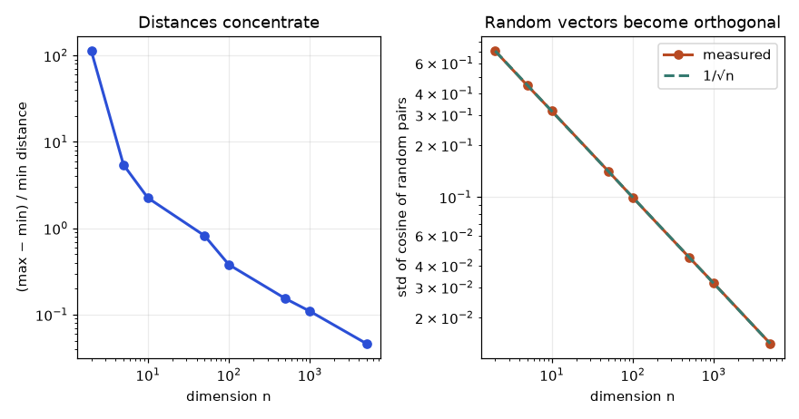
How to read it: both axes are logarithmic. On the left, the curve falls from about 100 (dimension 2) to well below 1 (dimension 5000): nearest and farthest become almost the same distance. On the right, the orange measured points sit on top of the teal dashed 1/√n line, so the theory matches the simulation.
The same fact has a bright side. A 1000-dimensional space has room for enormous numbers of nearly orthogonal directions, which is part of why embeddings can store many separate concepts, and why random projections can compress data to a few hundred dimensions while approximately keeping all distances (the Johnson-Lindenstrauss lemma). The practical remedies for the dark side: scale features, reduce dimension first (PCA, Chapter 9), prefer cosine on normalised embeddings, and use approximate nearest-neighbour indexes designed for these spaces.
Chapter recap
- A vector is a list of numbers (a data row, a user, an embedding) and an arrow with length and direction. Addition and scalar multiplication work entry by entry; combining them gives linear combinations, and all combinations of a set form its span.
- The dot product a · b = ∑ aibi equals ‖a‖‖b‖cos θ. The proof uses the law of cosines. Its sign shows agreement, and zero means orthogonal.
- Norms measure size: L1 (sum of absolute values), L2 (square root of the sum of squares), L∞ (largest entry), Lp in general. Distance is the norm of a difference. Normalising divides by the norm and keeps only direction.
- Cosine similarity = dot product of normalised vectors, in [−1, 1] by Cauchy-Schwarz. Use it when size is noise (text, embeddings); use Euclidean when size matters. For unit vectors, ‖a − b‖2 = 2 − 2cos θ, so rankings agree.
- The triangle inequality follows from Cauchy-Schwarz. Cosine distance 1 − cos θ is not a metric, but the angle is.
- Projection of a onto b is (a · b / b · b) b; the remainder is orthogonal. Onto a subspace, solve the normal equations AᵀAx = Aᵀy. Least squares is a projection and the residuals are orthogonal to the features.
- Gram-Schmidt builds an orthonormal basis by subtracting shadows; use the modified version or QR for stability.
- Independent vectors have no redundancy; a basis is an independent spanning set, its size is the dimension; with an orthonormal basis, coordinates are dot products.
- A hyperplane w · x + b = 0 has normal w; the distance of x to it is |w · x + b| / ‖w‖. The SVM margin is 2/‖w‖.
- Centring removes the projection on the ones vector, standardising equalises column lengths, and correlation is a cosine of centred columns. Broadcasting aligns shapes from the right.
- In high dimensions distances concentrate and random vectors are nearly orthogonal (cosine of size about 1/√n).
| Formula / pattern | Meaning |
|---|---|
| a · b = ∑ aibi = ‖a‖‖b‖cos θ | Weighted sum; alignment of directions scaled by lengths |
| ‖x‖p = (∑ |xi|p)1/p | Family of rulers: p = 1, 2, ∞ |
| x̂ = x / ‖x‖ | Unit vector, direction only |
| cos θ = a · b / (‖a‖‖b‖) | Cosine similarity; equals correlation for centred vectors |
| |a · b| ≤ ‖a‖‖b‖; ‖a + b‖ ≤ ‖a‖ + ‖b‖ | Cauchy-Schwarz; triangle inequality |
| projb(a) = (a · b / b · b) b | Shadow of a on the line of b; remainder is orthogonal |
| AᵀA x = Aᵀy | Normal equations: projection onto the column span; least squares |
| wj = vj − ∑ (vj · qi) qi | Gram-Schmidt step |
| cj = v · qj (orthonormal basis) | Coordinates without solving a system |
| |w · x + b| / ‖w‖; margin 2/‖w‖ | Distance to a hyperplane; SVM strip width |
| z = (x − μ) / σ | Standardisation; length of z is √n |
Practice set
Problem 5.P.1 Let u = (1, −2, 4) and v = (3, 0, −1). Compute 2u + 3v.
Answer: 2u = (2, −4, 8) and 3v = (9, 0, −3). Add entry by entry: (2 + 9, −4 + 0, 8 − 3) = (11, −4, 5).
Problem 5.P.2 Compute (2, −1, 3) · (4, 5, −2). Is the angle between them acute, right or obtuse? Find it.
Answer: 2·4 + (−1)·5 + 3·(−2) = 8 − 5 − 6 = −3. Negative, so the angle is obtuse. Lengths: √14 = 3.7417 and √45 = 6.7082, product 25.10. cos θ = −3/25.10 = −0.1195, so θ = arccos(−0.1195) = 96.86°, only a little past a right angle.
Problem 5.P.3 For x = (−6, 8) find the L1, L2 and L∞ norms and the unit vector in the direction of x.
Answer: L1 = 6 + 8 = 14. L2 = √(36 + 64) = 10. L∞ = 8. Unit vector = (−6, 8)/10 = (−0.6, 0.8); check 0.36 + 0.64 = 1.
Problem 5.P.4 Are (1, 2, 2) and (2, 1, −2) orthogonal? What are their lengths?
Answer: Dot = 2 + 2 − 4 = 0, so yes, orthogonal. Both have length √(1 + 4 + 4) = 3 (and √(4 + 1 + 4) = 3), so dividing each by 3 gives an orthonormal pair.
Problem 5.P.5 Find k so that (k, 2, 1) is orthogonal to (3, −1, 4).
Answer: Set the dot product to zero: 3k − 2 + 4 = 0, so 3k = −2 and k = −2/3. Check: 3(−2/3) = −2, then −2 − 2 + 4 = 0.
Problem 5.P.6 Project (3, 4) onto (1, 1). Verify the remainder is orthogonal and state the length of the shadow.
Answer: a · b = 7 and b · b = 2, so t = 3.5 and the projection is (3.5, 3.5). Remainder = (3 − 3.5, 4 − 3.5) = (−0.5, 0.5); its dot with (1, 1) is 0. Shadow length = 3.5 · √2 = 4.950 (check: 7/√2 = 4.950).
Problem 5.P.7 Find the distance from the point (2, 3) to the line 3x + 4y − 12 = 0, and say which side of the line the origin lies on.
Answer: w = (3, 4), b = −12, ‖w‖ = 5. Score at (2, 3): 6 + 12 − 12 = 6, so distance = 6/5 = 1.2. The origin has score −12 < 0 while (2, 3) has score +6 > 0, so the origin is on the opposite side of the line from the direction w points to, and (2, 3) is on the side w points to.
Problem 5.P.8 Are (1, 2, 3), (2, 4, 6) and (0, 1, 1) independent? Give a recipe if not.
Answer: No. The second vector is twice the first: 2·(1, 2, 3) − 1·(2, 4, 6) + 0·(0, 1, 1) = (0, 0, 0), a recipe with non-zero coefficients. Any set that contains two parallel vectors is dependent.
Problem 5.P.9 (Conceptual.) Document X = (1, 2) and document Y = (10, 20) are the same text, repeated ten times. Compare their cosine similarity and Euclidean distance, and say which is the better measure for topic similarity.
Answer: Y = 10X, so cos θ = 1 exactly: same direction. Euclidean distance = √(9² + 18²) = √(81 + 324) = √405 = 20.12, which says "far apart". For topic similarity, cosine is better, because repeating a text does not change its topic; the distance only reflects length.
Problem 5.P.10 What does this code print? a = np.array([1, 2, 3]); b = a.reshape(3, 1); print((a + b).shape)
Answer: (3, 3). Shape (3,) is treated as (1, 3) and shape (3, 1) is stretched along columns; the result has entry [i, j] = a[j] + b[i], a 3 × 3 table, not a vector. This is a classic silent bug when a column vector and a flat array are mixed. Fix by making both the same shape.
Problem 5.P.11 (Find the bug.) A student writes cos = a @ b / (a @ a * (b @ b)) and tests it on a = (1, 0), b = (1, 1), getting 0.5. What is wrong and what is the correct value?
Answer: a @ a is ‖a‖2, not ‖a‖, so the code divides by squared lengths (1 × 2 = 2) and gets 1/2. The correct formula divides by the lengths: 1/(1 · √2) = 0.7071 (45°). Write a @ b / (np.sqrt(a @ a) * np.sqrt(b @ b)) or use np.linalg.norm. The bug is invisible for unit vectors, which is how it survives tests.
Problem 5.P.12 Apply Gram-Schmidt, without normalising, to v1 = (1, 2, 2) and v2 = (2, 1, 0). Verify orthogonality and give the length of the second vector.
Answer: w1 = (1, 2, 2), w1 · w1 = 9. v2 · w1 = 2 + 2 + 0 = 4. Shadow = (4/9)(1, 2, 2) = (4/9, 8/9, 8/9). w2 = (2 − 4/9, 1 − 8/9, 0 − 8/9) = (14/9, 1/9, −8/9). Check: w2 · w1 = (14 + 2 − 16)/9 = 0. ‖w2‖2 = (196 + 1 + 64)/81 = 261/81 = 3.2222, so ‖w2‖ = 1.7951.
Problem 5.P.13 A classifier has w = (2, −1) and b = 3. Classify (3, 1) and (1, 5), give their distances to the boundary, and the width of the margin strip if the strip edges are at score ±1.
Answer: ‖w‖ = √5 = 2.236. Point (3, 1): score 6 − 1 + 3 = 8 > 0, positive class, distance 8/2.236 = 3.578. Point (1, 5): score 2 − 5 + 3 = 0, exactly on the boundary (distance 0, the class is undecided). Strip width = 2/‖w‖ = 0.894.
Problem 5.P.14 Fit y ≈ b0 + b1x for x = (1, 2, 3) and y = (1, 2, 2) by projecting y onto the span of the ones vector and x. Use the normal equations and verify the residual is orthogonal to both columns.
Answer: AᵀA = [[3, 6], [6, 14]] (ones · ones = 3, ones · x = 6, x · x = 14) and Aᵀy = (5, 11). Equations: 3b0 + 6b1 = 5 and 6b0 + 14b1 = 11. Double the first: 6b0 + 12b1 = 10. Subtract from the second: 2b1 = 1, so b1 = 0.5 and b0 = (5 − 3)/3 = 2/3. Fitted values: 2/3 + 0.5x = (1.1667, 1.6667, 2.1667). Residual = (−0.1667, 0.3333, −0.1667). Dot with ones: 0. Dot with x: −0.1667 + 0.6667 − 0.5 = 0.
Problem 5.P.15 (Proof.) Show that if ‖a‖ = ‖b‖ then a + b is orthogonal to a − b. What does this say about a rhombus?
Answer: (a + b) · (a − b) = a · a − a · b + b · a − b · b = ‖a‖2 − ‖b‖2 = 0, because the two cross terms cancel (the dot product is symmetric). A rhombus has four equal sides, so with two adjacent sides as a and b of equal length, the diagonals are a + b and a − b, and this shows the diagonals of a rhombus are perpendicular.
Problem 5.P.16 (Code.) Using the facts of section 5.8, predict the standard deviation of the cosine between random pairs of vectors in 400 dimensions, then explain how you would test it in five lines of NumPy. Why does the prediction rely on the vectors being random and independent?
Answer: The dot product of two independent n-entry standard-normal vectors has standard deviation √n, and the lengths multiply to about n, so the cosine has standard deviation about 1/√400 = 0.05. Test: draw Z = rng.standard_normal((300, 400)), normalise rows with keepdims=True, compute C = Z @ Z.T, take the off-diagonal entries with np.triu_indices(300, 1) and print their std(); you will see a value near 0.05. The independence matters: real embeddings are strongly correlated (they share a common component and cluster by topic), so their cosines are far from 0 on average, which is why centring embeddings sometimes helps.
Problem 5.P.17 (Interview.) "Your embeddings are not normalised and you use a dot-product index. A colleague says the ranking is wrong. Who is right?" Explain with a numeric example.
Answer: It depends on what "right" means. The dot product equals ‖a‖‖b‖cos θ, so unnormalised vectors with large norms win regardless of direction. Example: query q = (1, 0). Document A = (1, 0.1) has dot 1 and cosine 0.995. Document B = (3, 4) has dot 3 and cosine 0.6. The dot product ranks B first although A points nearly exactly along the query. If your goal is semantic similarity, normalise every vector to length 1 first (then dot = cosine and the ranking is the same as Euclidean). If norm carries meaning (for example popularity or confidence is baked into the vector length, as in some recommender models), dot product is intended. Always match the index metric to how the model was trained.
Prompt pack
You are my patient, practical professor. I am a working professional moving into data roles, with only school-level math. Teach me VECTORS AND GEOMETRY for data science: vectors as lists of numbers and arrows, linear combinations and span, the dot product (algebraic and geometric, with the law-of-cosines proof), L1, L2 and L-infinity norms, unit vectors, cosine similarity, orthogonality, projection onto a vector and onto a subspace, Gram-Schmidt, linear independence, basis and coordinates, hyperplanes w.x + b = 0 with point-to-plane distance, standardising columns, NumPy broadcasting, and the curse of dimensionality. Work one topic at a time. For each topic: (1) explain it in plain words with an everyday analogy, (2) show one small numeric example with every arithmetic step, (3) give me a Python/NumPy snippet, (4) ask me ONE quiz question with a number to compute and wait for my answer before continuing. If I am wrong, show me the exact step where I went wrong and ask a similar question. After every third topic, give me a three-question mixed review. Start by asking which topic I want first.
You are a careful math and data-science tutor. I will paste my solution to a problem about vectors (dot product, norms, cosine similarity, projection, Gram-Schmidt, independence, hyperplane distance, standardisation or NumPy broadcasting). Check it line by line. For every line say whether it is correct, and if not, show the corrected calculation with numbers. Specifically look for: using elementwise * instead of the dot product, dividing by a norm instead of a squared norm in a projection, forgetting the square root in a length, forgetting axis or keepdims in NumPy norms, treating a raw score as a distance, mixing up n and n-1 in the standard deviation, and checking independence only pairwise. Then verify my final number independently with a short NumPy snippet and give me one similar practice problem with a different set of numbers. Here is my work: [PASTE PROBLEM AND SOLUTION HERE]
Act as a senior data scientist running a 30-minute mock interview on vectors and geometry for machine learning. Ask me one question at a time and wait for my answer. Mix: (a) quick computations (dot product, angle, projection, distance to a hyperplane), (b) conceptual questions (why cosine instead of Euclidean for text and embeddings, why normalising makes dot product equal cosine, why least squares is a projection, why kNN degrades in high dimensions, why attention divides by the square root of the dimension, what an SVM margin is), (c) a short debugging question with NumPy code involving broadcasting or a norm with the wrong axis, and (d) one proof question (Cauchy-Schwarz or the triangle inequality). After each answer, grade it from 1 to 5, point out missing ideas, and show a model answer in under 120 words. At the end, summarise my strengths and the three topics I should revise, and suggest a one-week study plan.
Your company sells groceries online. On Monday the analyst sends you a spreadsheet: three customers down the side, three products across the top, and in each cell the quantity bought. The finance team sends a second list: the price of each product. Your manager asks one question: "What did each customer pay?" You multiply, you add, you repeat for every row. That small piece of arithmetic is already a matrix times a vector, and once you see it that way you also see why the same idea runs a recommender system, a neural network layer, a PCA, and a linear regression.
A matrix has two faces. The first face is a table of data: rows are things (customers, days, images), columns are measurements (products, features, pixels). That is what a pandas DataFrame is. The second face is a machine: you feed it a vector and it returns another vector. It can rotate a picture, stretch a cloud of points, squash three dimensions into two, or turn 784 pixel values into 128 learned features. The first face tells you how to store information. The second tells you what the information can do. Almost every confusing thing about matrices becomes simple once you keep both faces in mind.
This chapter builds from the smallest example to the expert layer. By the end you will compute matrix products four different ways by hand, explain a determinant as "how much area is stretched", know when an inverse exists and why you almost never compute one, read the shape of every array in a neural network layer, spot the broadcasting bug that silently ruins a loss function, and know what a condition number is. You will need vectors from Chapter 5 (dot products and lengths) and the linear equations of Chapter 1. You will meet solving systems in depth in Chapter 7, eigenvalues in Chapter 8, and the SVD in Chapter 9.
6.1 A Matrix as a Table and as a Machine
Beginner: rows, columns and shapes
A matrix is a rectangular grid of numbers arranged in rows (horizontal) and columns (vertical). A matrix with m rows and n columns has shape m × n, said "m by n". Rows always come first. A single number is a 1 × 1 matrix, a row vector is 1 × n, and a column vector is m × 1. The entry in row i and column j is written Aij. In maths we count from 1, in Python from 0, so A12 in maths is A[0, 1] in NumPy.
| 2 | 1 | 0 |
| 0 | 3 | 1 |
| 4 | 0 | 2 |
This is the grocery table. Each row is a customer, each column a product (apples, bread, milk). Its shape is 3 × 3. The entry A23 = 1 means customer 2 bought one unit of milk. The row [4, 0, 2] says customer 3 bought 4 apples, no bread and 2 milk.
Problem 6.1.1 A matrix has 5 rows and 3 columns. What is its shape, how many entries does it hold, and what is its transpose's shape?
| Idea | Shape is rows × columns. Entry count is rows times columns. Transposing swaps rows and columns. |
|---|---|
| Compute | Shape 5 × 3. Entries 5 × 3 = 15. Transpose shape 3 × 5. |
| Check | A DataFrame of 5 customers and 3 products has 15 cells. Correct. |
import numpy as np
import pandas as pd
orders = pd.DataFrame([[2, 1, 0], [0, 3, 1], [4, 0, 2]],
index=["cust1", "cust2", "cust3"],
columns=["apples", "bread", "milk"])
A = orders.to_numpy() # the matrix hiding inside the table
print(A.shape, A.size, A.ndim)
print("A[1, 2] =", A[1, 2]) # row 2, column 3 in maths counting
print("row 3 =", A[2, :])
print("column 1=", A[:, 0])
print(orders.loc["cust2", "milk"])(3, 3) 9 2
A[1, 2] = 1
row 3 = [4 0 2]
column 1= [2 0 4]
1Line by line: to_numpy() strips the labels and leaves the bare numbers. A[2, :] means "row index 2, all columns". A[:, 0] means "all rows, column index 0". The DataFrame keeps names, the matrix keeps only positions. Matrix algebra works on positions, so you must keep track of what each column means yourself.
Intermediate: the special matrices you will meet everywhere
| Name | Definition | Why you care |
|---|---|---|
| Zero matrix 0 | All entries 0 | A + 0 = A. Starting point for accumulations. |
| Identity I | 1 on the diagonal, 0 elsewhere | I x = x. It does nothing, like multiplying by 1. |
| Diagonal | Non-zero only on the diagonal | Stretches each axis separately. Scaling features. |
| Triangular | All zeros above (lower) or below (upper) the diagonal | Easy to solve. LU and Cholesky use them. |
| Symmetric | Aᵀ = A, so Aij = Aji | Covariance, correlation, Hessian, Gram matrices. |
| Orthogonal | QᵀQ = I (columns are unit length and perpendicular) | Rotations and reflections. Keeps lengths. Inverse is the transpose. |
| Permutation | One 1 in each row and column, rest 0 | Reorders rows or columns. Shuffling. |
import numpy as np
x = np.array([1, 10, 100])
D = np.diag([2, 3, 5]) # diagonal: scales each coordinate
print("D @ x =", D @ x)
U = np.triu(np.array([[1, 2, 3], [4, 5, 6], [7, 8, 9]])) # upper triangular
print(U)
M = np.array([[1, 2], [3, 4]])
S = M + M.T # any M + M^T is symmetric
print(S, np.array_equal(S, S.T))
Q = np.array([[0, -1], [1, 0]]) # rotation by 90 degrees
print(Q.T @ Q) # identity, so Q is orthogonal
P = np.array([[0, 1, 0], [0, 0, 1], [1, 0, 0]]) # permutation
print("P @ x =", P @ x)D @ x = [ 2 30 500]
[[1 2 3]
[0 5 6]
[0 0 9]]
[[2 5]
[5 8]] True
[[1 0]
[0 1]]
P @ x = [ 10 100 1]Read the permutation: row 1 of P has its 1 in column 2, so the first output is x2 = 10. Row 2 picks x3 = 100, row 3 picks x1 = 1. The result is [10, 100, 1].
Adding and scaling
You add two matrices of the same shape entry by entry, and you scale a matrix by multiplying every entry by the number.
Problem 6.1.2 Weekly sales: week 1 is A = [[2, 1], [0, 3]], week 2 is B = [[1, 4], [2, 2]] (rows are stores, columns are products). Find the total A + B and the weekly average (A + B) / 2.
| Step 1 | Add entry by entry: [[2+1, 1+4], [0+2, 3+2]] = [[3, 5], [2, 5]]. |
|---|---|
| Step 2 | Scale by 1/2: [[1.5, 2.5], [1, 2.5]]. |
| Check | Store 1 sold 2 + 1 = 3 units of product 1 over two weeks. Half of 3 is 1.5. Correct. |
import numpy as np
A = np.array([[2, 1], [0, 3]])
B = np.array([[1, 4], [2, 2]])
print(A + B)
print((A + B) / 2)[[3 5]
[2 5]]
[[1.5 2.5]
[1. 2.5]]* for matrix multiplication. In NumPy, A * B multiplies entry by entry (the Hadamard product). Wrong: A * B for the example above gives [[2, 4], [0, 6]]. Right: matrix multiplication is A @ B, which you meet next and which gives [[4, 10], [6, 6]]. Similarly A ** 2 squares each entry; it is not A times A.Going deeper
Every matrix is a function. If A is m × n, then x ↦ Ax takes a vector with n entries to a vector with m entries. The key property is linearity: A(x + y) = Ax + Ay and A(cx) = c(Ax). Conversely, every linear function from n numbers to m numbers is some m × n matrix. That is why "matrix" and "linear transformation" are two names for one idea, and why this chapter has both words in its title.
In data work you constantly move between the two faces. df.to_numpy() goes from table to matrix. A feature matrix X has shape (n_samples, n_features): samples are rows. A common source of bugs is mixing this with libraries that put samples in columns, so always print .shape before multiplying. Also note that NumPy has an old np.matrix class; avoid it and use ordinary 2-D arrays, where @ means matrix product and * means entrywise product.
6.2 Matrix Products and the Transpose
Beginner: matrix times vector, two pictures
Return to the grocery story. A is the 3 × 3 order table and p = [1.5, 2, 0.8] holds the prices per unit (apple, bread, milk). Each customer's bill is a dot product of their row with the price vector.
| 2 | 1 | 0 |
| 0 | 3 | 1 |
| 4 | 0 | 2 |
| 1.5 |
| 2 |
| 0.8 |
Rows view. Row by row, take the dot product:
Columns view. Treat each column of A as a vector and the entries of p as the mixing amounts:
| 2 |
| 0 |
| 4 |
| 1 |
| 3 |
| 0 |
| 0 |
| 1 |
| 2 |
| 3 |
| 0 |
| 6 |
| 2 |
| 6 |
| 0 |
| 0 |
| 0.8 |
| 1.6 |
| 5 |
| 6.8 |
| 7.6 |
The same answer, a different story. The rows view says "each output is a dot product". The columns view says "the output is a linear combination of the columns, with weights from the vector". The second view is the key to understanding rank, column space and linear transformations, so make it a habit.
import numpy as np
A = np.array([[2, 1, 0], [0, 3, 1], [4, 0, 2]])
p = np.array([1.5, 2.0, 0.8])
print("A @ p =", A @ p)
rows_view = np.array([A[i, :] @ p for i in range(3)])
cols_view = p[0] * A[:, 0] + p[1] * A[:, 1] + p[2] * A[:, 2]
print("rows view =", rows_view)
print("columns view=", cols_view)A @ p = [5. 6.8 7.6]
rows view = [5. 6.8 7.6]
columns view= [5. 6.8 7.6]Intermediate: the definition and shape rule
If A is m × n and B is n × p, the product C = AB is m × p, with
In words: entry (i, j) of the product is the dot product of row i of A with column j of B. This requires the inner dimensions to match (the two n's). The outer dimensions give the result: (m × n)(n × p) → m × p.
Problem 6.2.1 (the four ways to see one product) Let A = [[1, 2], [3, 4]] and B = [[5, 6], [7, 8]]. Compute AB in four ways.
| Way 1: dot products | (1,1): 1·5 + 2·7 = 5 + 14 = 19. (1,2): 1·6 + 2·8 = 6 + 16 = 22. (2,1): 3·5 + 4·7 = 15 + 28 = 43. (2,2): 3·6 + 4·8 = 18 + 32 = 50. So AB = [[19, 22], [43, 50]]. |
|---|---|
| Way 2: column combinations | Column j of AB is A times column j of B. Column 1: A[5, 7] = 5·[1, 3] + 7·[2, 4] = [5, 15] + [14, 28] = [19, 43]. Column 2: A[6, 8] = 6·[1, 3] + 8·[2, 4] = [6, 18] + [16, 32] = [22, 50]. |
| Way 3: row combinations | Row i of AB is row i of A times B, a blend of the rows of B. Row 1: 1·[5, 6] + 2·[7, 8] = [5, 6] + [14, 16] = [19, 22]. Row 2: 3·[5, 6] + 4·[7, 8] = [15, 18] + [28, 32] = [43, 50]. |
| Way 4: sum of outer products | (column k of A)(row k of B), summed over k. k=1: [1, 3]ᵀ[5, 6] = [[5, 6], [15, 18]]. k=2: [2, 4]ᵀ[7, 8] = [[14, 16], [28, 32]]. Sum: [[19, 22], [43, 50]]. |
| Check | All four give [[19, 22], [43, 50]]. |
import numpy as np
A = np.array([[1, 2], [3, 4]])
B = np.array([[5, 6], [7, 8]])
way1 = np.array([[A[i, :] @ B[:, j] for j in range(2)] for i in range(2)])
way2 = np.column_stack([A @ B[:, j] for j in range(2)])
way3 = np.vstack([A[i, :] @ B for i in range(2)])
way4 = sum(np.outer(A[:, k], B[k, :]) for k in range(2))
print(way1); print(np.array_equal(way1, way2), np.array_equal(way1, way3), np.array_equal(way1, way4))
print(np.array_equal(way1, A @ B))[[19 22]
[43 50]]
True True True
TrueWhich view when? Dot products when computing one entry. Column combinations when asking "what can this matrix produce?". Row combinations when doing row operations (Gaussian elimination, Chapter 7). Outer products when thinking of data: the product XᵀX is a sum of one outer product per sample, which is why covariance can be accumulated from a stream of data.
Non-commutative, but associative
With the same A and B compute BA: entry (1,1) is 5·1 + 6·3 = 23, (1,2) is 5·2 + 6·4 = 34, (2,1) is 7·1 + 8·3 = 31, (2,2) is 7·2 + 8·4 = 46. So BA = [[23, 34], [31, 46]], which is not AB = [[19, 22], [43, 50]]. Order matters. Often one order is not even defined: a (2 × 3) times (3 × 4) works, but (3 × 4) times (2 × 3) does not. Fortunately multiplication is associative, (AB)C = A(BC), and distributive, A(B + C) = AB + AC. Associativity lets you choose the cheapest bracketing (Section 6.6).
A ** 2 in NumPy is not A·A: for A = [[1, 2], [3, 4]], A ** 2 = [[1, 4], [9, 16]] but A @ A = [[7, 10], [15, 22]].import numpy as np
A = np.array([[1, 2], [3, 4]]); B = np.array([[5, 6], [7, 8]])
print(A @ B); print(B @ A)
E1 = np.array([[1, 0], [0, 0]]); E2 = np.array([[0, 0], [0, 1]])
print(E1 @ E2)
print(A ** 2); print(A @ A)[[19 22]
[43 50]]
[[23 34]
[31 46]]
[[0 0]
[0 0]]
[[ 1 4]
[ 9 16]]
[[ 7 10]
[15 22]]The transpose and its rules
The transpose Aᵀ flips a matrix over its diagonal: row i becomes column i, so (Aᵀ)ij = Aji and an m × n matrix becomes n × m. For A = [[1, 2], [3, 4], [5, 6]] (3 × 2), Aᵀ = [[1, 3, 5], [2, 4, 6]] (2 × 3). The rules:
- (Aᵀ)ᵀ = A
- (A + B)ᵀ = Aᵀ + Bᵀ and (cA)ᵀ = cAᵀ
- (AB)ᵀ = BᵀAᵀ (order reverses, like taking off shoes and socks)
- (A⁻¹)ᵀ = (Aᵀ)⁻¹ when the inverse exists
- The dot product is a matrix product: x · y = xᵀy
Problem 6.2.2 With A and B as above, verify (AB)ᵀ = BᵀAᵀ and show that AᵀBᵀ is different.
| Step 1 | AB = [[19, 22], [43, 50]], so (AB)ᵀ = [[19, 43], [22, 50]]. |
|---|---|
| Step 2 | Bᵀ = [[5, 7], [6, 8]], Aᵀ = [[1, 3], [2, 4]]. BᵀAᵀ: (1,1) = 5·1 + 7·2 = 19; (1,2) = 5·3 + 7·4 = 43; (2,1) = 6·1 + 8·2 = 22; (2,2) = 6·3 + 8·4 = 50. So BᵀAᵀ = [[19, 43], [22, 50]]. Equal to (AB)ᵀ. |
| Step 3 | AᵀBᵀ: (1,1) = 1·5 + 3·6 = 23; (1,2) = 1·7 + 3·8 = 31; (2,1) = 2·5 + 4·6 = 34; (2,2) = 2·7 + 4·8 = 46. This is [[23, 31], [34, 46]], not equal to (AB)ᵀ. |
Problem 6.2.3 (the Gram matrix) A data matrix X has 3 samples and 2 features: X = [[1, 2], [3, 4], [5, 6]]. Compute XᵀX and say what its shape and symmetry tell you.
| Shape | Xᵀ is 2 × 3, X is 3 × 2, so XᵀX is 2 × 2: one row and column per feature, whatever the number of samples. |
|---|---|
| Compute | (1,1) = 1² + 3² + 5² = 35. (1,2) = 1·2 + 3·4 + 5·6 = 2 + 12 + 30 = 44. (2,2) = 2² + 4² + 6² = 4 + 16 + 36 = 56. (2,1) = (1,2) = 44. |
| Answer | XᵀX = [[35, 44], [44, 56]]. It is symmetric because (XᵀX)ᵀ = Xᵀ(Xᵀ)ᵀ = XᵀX. Entry (i, j) is the dot product of feature column i with feature column j. |
import numpy as np
X = np.array([[1, 2], [3, 4], [5, 6]])
G = X.T @ X
print(G, G.shape, np.array_equal(G, G.T))
A = X; B = np.array([[1, 0, 2, 1], [0, 1, 1, 3]])
print((A @ B).shape, ((A @ B).T == B.T @ A.T).all())[[35 44]
[44 56]] (2, 2) True
(3, 4) TrueGoing deeper
Why does (AB)ᵀ reverse the order? Compare entries: ((AB)ᵀ)ij = (AB)ji = ∑k AjkBki = ∑k (Bᵀ)ik(Aᵀ)kj = (BᵀAᵀ)ij. That is a complete proof, and the same index trick proves most matrix identities. In machine learning, XᵀX (features by features) appears in the normal equations of regression, and XXᵀ (samples by samples) appears in kernel methods. The Gram matrix XᵀX is always positive semi-definite: for any vector v, vᵀXᵀXv = (Xv)ᵀ(Xv) = |Xv|² ≥ 0. You will use this fact in Chapters 8, 9 and 12.
6.3 The Geometry of 2×2 Transformations
Beginner: the columns tell you everything
Two special vectors span the plane: e1 = [1, 0] (one step right) and e2 = [0, 1] (one step up). Any point [x, y] equals x·e1 + y·e2. By the columns view of Section 6.2, A[x, y] = x·(column 1) + y·(column 2). So column 1 of A is where e1 lands, and column 2 is where e2 lands. Once you know where the two basis arrows land, the whole sheet is determined, because every grid square is built from them.
To design a transformation, decide where e1 and e2 go, and write those two landing points as columns. Example: send e1 → [0, 1] and e2 → [−1, 0]. The matrix is [[0, −1], [1, 0]], a 90 degree counter-clockwise rotation. Test on the point [2, 1]: 2·[0, 1] + 1·[−1, 0] = [0, 2] + [−1, 0] = [−1, 2]. Plot it: [2, 1] turned a quarter-turn anticlockwise around the origin is indeed [−1, 2].
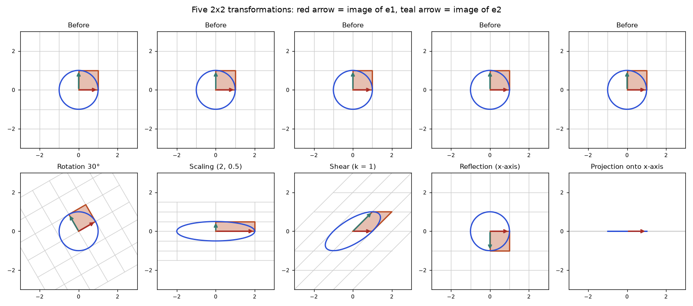
How to read it: the top row is the starting picture. In each bottom panel, find the red and teal arrows first and read off the matrix columns. Then see what happened to the square and circle. Rotation keeps shape and size. Scaling turns the circle into an ellipse. Shear slides the top of the square sideways while the bottom stays fixed. Reflection flips the picture over an axis. Projection flattens everything onto a line: the square becomes a segment, which means information was destroyed.
Intermediate: the standard transformations
| Transformation | Matrix | Effect on [x, y] | det |
|---|---|---|---|
| Rotation by θ (anticlockwise) | [[cos θ, −sin θ], [sin θ, cos θ]] | Turns by θ, lengths kept | 1 |
| Scaling by (a, b) | [[a, 0], [0, b]] | [ax, by] | ab |
| Horizontal shear by k | [[1, k], [0, 1]] | [x + ky, y] | 1 |
| Reflection in the x-axis | [[1, 0], [0, −1]] | [x, −y] | −1 |
| Reflection in the line y = x | [[0, 1], [1, 0]] | [y, x] | −1 |
| Projection onto the x-axis | [[1, 0], [0, 0]] | [x, 0] | 0 |
| Projection onto the line with unit direction u | uuᵀ | The shadow of the point on the line | 0 |
Problem 6.3.1 Apply (a) rotation by 30 degrees to [2, 0], (b) shear with k = 1 to [1, 2], (c) projection onto the line through [1, 1] to [3, 1].
| (a) | cos 30° = √3/2 ≈ 0.8660, sin 30° = 0.5. R[2, 0] = 2·(first column) = 2·[0.8660, 0.5] = [1.7321, 1.0]. Length check: √(1.7321² + 1²) = √(3 + 1) = 2. Length kept. |
|---|---|
| (b) | [[1, 1], [0, 1]] times [1, 2]: first entry 1·1 + 1·2 = 3, second 0·1 + 1·2 = 2. Result [3, 2]. The height y = 2 is untouched and x moved by k·y = 2. |
| (c) | Unit direction u = [1, 1]/√2. uuᵀ = (1/2)[[1, 1], [1, 1]] = [[0.5, 0.5], [0.5, 0.5]]. Times [3, 1]: 0.5·3 + 0.5·1 = 2 and the same for the second entry, so [2, 2]. The leftover [3, 1] − [2, 2] = [1, −1] is perpendicular to u (dot product 1·1 + (−1)·1 = 0), as a shadow should be. |
import numpy as np
th = np.deg2rad(30)
R = np.array([[np.cos(th), -np.sin(th)], [np.sin(th), np.cos(th)]])
print(np.round(R @ [2, 0], 4), np.linalg.norm(R @ [2, 0]))
S = np.array([[1, 1], [0, 1]])
print(S @ [1, 2])
u = np.array([1, 1]) / np.sqrt(2)
P = np.outer(u, u) # projection matrix u u^T
print(np.round(P, 2).tolist(), np.round(P @ [3, 1], 4))
print(np.allclose(P @ P, P)) # projecting twice = projecting once[1.7321 1. ] 2.0
[3 2]
[[0.5, 0.5], [0.5, 0.5]] [2. 2.]
TrueThe last line shows a hallmark of projections: P² = P (idempotent). Once flattened onto the line, a second flattening changes nothing.
Composition is matrix multiplication
Apply S first, then R. The point x becomes Sx, then R(Sx). Because matrix multiplication is associative, R(Sx) = (RS)x. So the single matrix RS performs "S then R". Read products right to left, the way you read nested functions f(g(x)).
Problem 6.3.2 (order matters) Let R = [[0, −1], [1, 0]] (rotate 90 degrees) and S = [[1, 1], [0, 1]] (shear, k = 1). Find RS and SR and apply both to the roof tip [0.5, 1.5] of a little house shape.
| RS (shear, then rotate) | (1,1) = 0·1 + (−1)·0 = 0. (1,2) = 0·1 + (−1)·1 = −1. (2,1) = 1·1 + 0·0 = 1. (2,2) = 1·1 + 0·1 = 1. So RS = [[0, −1], [1, 1]]. |
|---|---|
| SR (rotate, then shear) | (1,1) = 1·0 + 1·1 = 1. (1,2) = 1·(−1) + 1·0 = −1. (2,1) = 0·0 + 1·1 = 1. (2,2) = 0·(−1) + 1·0 = 0. So SR = [[1, −1], [1, 0]]. |
| Apply to the tip | RS [0.5, 1.5] = [0·0.5 − 1·1.5, 1·0.5 + 1·1.5] = [−1.5, 2]. SR [0.5, 1.5] = [1·0.5 − 1·1.5, 1·0.5 + 0·1.5] = [−1, 0.5]. |
| Meaning | Different end points, so RS ≠ SR. The picture below shows both routes. |
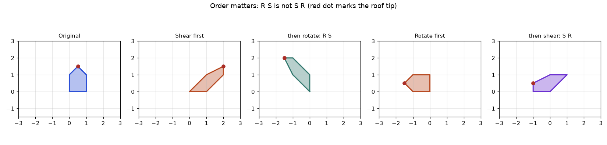
How to read it: the first panel is the original house. Panels 2 and 3 show shear first and then rotation, which is the matrix product RS. Panels 4 and 5 show rotation first and then shear, the product SR. The tip ends at [−1.5, 2] in panel 3 and at [−1, 0.5] in panel 5, matching the hand calculation.
import numpy as np
R = np.array([[0, -1], [1, 0]])
S = np.array([[1, 1], [0, 1]])
tip = np.array([0.5, 1.5])
print(R @ S); print(S @ R)
print(R @ (S @ tip), (R @ S) @ tip) # same: associativity
print(S @ (R @ tip))[[ 0 -1]
[ 1 1]]
[[ 1 -1]
[ 1 0]]
[-1.5 2. ] [-1.5 2. ]
[-1. 0.5]Going deeper
Rotations are orthogonal. For R(θ), RᵀR = I, so the inverse of a rotation is its transpose, which is the rotation by −θ. Orthogonal matrices keep lengths and angles, so they are the "rigid motions". In deep learning, orthogonal weight initialisation exploits this: signals neither explode nor shrink as they pass through layers.
Translation is not linear (the origin moves), but you can still use a matrix by adding a dummy coordinate equal to 1 (homogeneous coordinates). Moving [2, 3] by [5, −1]: multiply [2, 3, 1] by [[1, 0, 5], [0, 1, −1], [0, 0, 1]] to get [2 + 5, 3 − 1, 1] = [7, 2, 1]. Graphics engines and robotics chain such 3 × 3 (and 4 × 4) matrices to move cameras. This is exactly the "column of ones for the intercept" trick of linear regression: the intercept is a translation.
Any 2 × 2 matrix is a combination of these basic moves (a rotation, a stretch along perpendicular axes, and another rotation: the SVD of Chapter 9). Applying a matrix to the unit circle always gives an ellipse (or a line segment, or a point if it is degenerate); its axes will turn out to be the singular vectors.
6.4 Determinant and Trace
Beginner: area of the squashed square
The unit square has area 1. Under a matrix, it becomes the parallelogram spanned by the two columns. Take A = [[2, 1], [0, 1.5]]. Column 1 = [2, 0] is a flat arrow of length 2. Column 2 = [1, 1.5] leans right and goes up 1.5. The parallelogram has base 2 and height 1.5, so area 2 × 1.5 = 3. That area is the determinant: det A = 3.
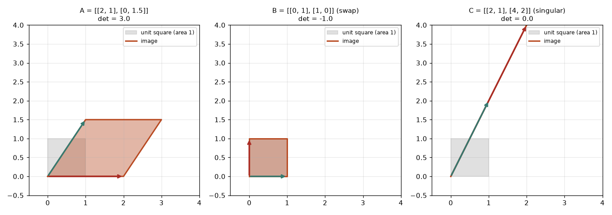
How to read it: in each panel the grey square is the starting shape and the orange shape is its image. The red arrow is column 1, the teal arrow is column 2. In the middle panel the arrows have swapped places, which is the flip. In the right panel the two arrows point along the same line, so the area is zero.
Intermediate: formulas
For a 2 × 2 matrix:
| a | b |
| c | d |
For a 3 × 3 matrix, expand along the first row, with alternating signs (+, −, +) times the 2 × 2 determinant left when you cross out the row and column of each entry:
| a | b | c |
| d | e | f |
| g | h | i |
Problem 6.4.1 Find det [[3, 1], [2, 4]], det [[2, 1], [4, 2]] and det [[0, 1], [1, 0]]. Interpret each.
| First | 3·4 − 1·2 = 12 − 2 = 10. Areas grow tenfold. |
|---|---|
| Second | 2·2 − 1·4 = 4 − 4 = 0. The second column [1, 2] is half of the first column [2, 4]: they are parallel, the square collapses to a line. The matrix is singular. |
| Third | 0·0 − 1·1 = −1. Area kept, orientation flipped (this swaps x and y: a reflection in the line y = x). |
Problem 6.4.2 (a 3 × 3 determinant) Compute det of [[2, 0, 1], [1, 3, 2], [1, 1, 4]] by expansion and check with the Sarrus rule.
| Expansion | 2·(3·4 − 2·1) − 0·(1·4 − 2·1) + 1·(1·1 − 3·1) = 2·10 − 0·2 + 1·(−2) = 20 − 0 − 2 = 18. |
|---|---|
| Sarrus check | Down-right diagonals: 2·3·4 + 0·2·1 + 1·1·1 = 24 + 0 + 1 = 25. Up-right diagonals: 1·3·1 + 2·2·1 + 0·1·4 = 3 + 4 + 0 = 7. 25 − 7 = 18. |
| Meaning | Volumes in 3-D are multiplied by 18, and the orientation is kept (positive). |
import numpy as np
print(np.linalg.det(np.array([[3, 1], [2, 4]])))
print(np.linalg.det(np.array([[2, 1], [4, 2]])))
print(np.linalg.det(np.array([[0, 1], [1, 0]])))
M = np.array([[2, 0, 1], [1, 3, 2], [1, 1, 4]])
print(round(np.linalg.det(M), 6))10.000000000000002
0.0
-1.0
18.0Computers return floats, so expect 10.000000000000002 or 17.999999999999996 style answers; round when you compare.
Properties you will use
- det(AB) = det(A) det(B): two stretches multiply. Hence det(A⁻¹) = 1/det(A).
- det(Aᵀ) = det(A).
- det(cA) = cⁿ det(A) for an n × n matrix (every one of the n dimensions is scaled by c).
- Swapping two rows flips the sign. Adding a multiple of one row to another changes nothing. A row of zeros, or two equal rows, gives 0.
- For a triangular (or diagonal) matrix, det = product of the diagonal entries.
- A square matrix has an inverse exactly when det ≠ 0.
Problem 6.4.3 Using A = [[1, 2], [3, 4]] and B = [[5, 6], [7, 8]] check det(AB) = det(A)det(B), det(2A) = 4 det(A), and see that det(A + B) ≠ det(A) + det(B).
| det A, det B | 1·4 − 2·3 = −2. 5·8 − 6·7 = 40 − 42 = −2. |
|---|---|
| det(AB) | AB = [[19, 22], [43, 50]]. det = 19·50 − 22·43 = 950 − 946 = 4. And (−2)(−2) = 4. ✓ |
| det(2A) | 2A = [[2, 4], [6, 8]]. det = 16 − 24 = −8. And 2² · (−2) = −8. ✓ |
| det(A + B) | A + B = [[6, 8], [10, 12]]. det = 72 − 80 = −8. But det A + det B = −4. Not equal. |
import numpy as np
A = np.array([[1, 2], [3, 4]]); B = np.array([[5, 6], [7, 8]])
d = lambda M: round(np.linalg.det(M), 6)
print(d(A @ B), d(A) * d(B))
print(d(2 * A), 2 ** 2 * d(A))
print(d(A + B), d(A) + d(B))4.0 4.0
-8.0 -8.0
-8.0 -4.0Trace
The trace of a square matrix is the sum of its diagonal entries: tr(A) = A11 + A22 + ... + Ann. It is linear, tr(A + B) = tr(A) + tr(B), and it has a surprising cyclic property: tr(AB) = tr(BA), even though AB ≠ BA. For our A and B, tr(AB) = 19 + 50 = 69 and tr(BA) = 23 + 46 = 69. Another key fact: tr(AᵀA) is the sum of the squares of all entries (the squared Frobenius norm). Here AᵀA = [[1+9, 2+12], [2+12, 4+16]] = [[10, 14], [14, 20]], trace 30 = 1 + 4 + 9 + 16. In Chapter 8 you will learn that trace = sum of eigenvalues and det = product of eigenvalues.
import numpy as np
A = np.array([[1, 2], [3, 4]]); B = np.array([[5, 6], [7, 8]])
print(np.trace(A @ B), np.trace(B @ A))
print(np.trace(A.T @ A), (A ** 2).sum(), np.linalg.norm(A, "fro") ** 2)69 69
30 30 30.0Going deeper
Why signs and orientation? Going from e1 to e2 is a counter-clockwise quarter-turn. If after the transformation going from the image of e1 to the image of e2 is clockwise, the plane has been flipped over like a page, and the determinant is negative. The absolute value |det| is the area scale factor; the sign is the orientation.
Areas of shapes. A linear map multiplies every area by |det A|. The unit circle (area π) mapped by diag(2, 0.5) becomes an ellipse with semi-axes 2 and 0.5, area π · 2 · 0.5 = π: stretching one way and squeezing the other cancelled (det = 1). In the shear, det = 1 as well, so the area of the ellipse is still π. This is the reason determinants appear in the change of variables formula for integrals (Chapter 12) and in the density of a multivariate normal distribution, whose normalising constant involves det Σ, where Σ is the covariance matrix. Also, det of a covariance matrix is called the generalised variance: the volume of the cloud.
Numerical trap. The determinant of a large matrix can underflow or overflow even when the matrix is perfectly fine. Never compare it to zero to test for singularity either. Use np.linalg.slogdet, which returns the sign and the log of the absolute value; log-determinants are what probabilistic models actually use.
import numpy as np
A = 0.1 * np.eye(400) # every diagonal entry 0.1, so det = 0.1**400
print(np.linalg.det(A)) # underflows to 0.0 although A is invertible
sign, logdet = np.linalg.slogdet(A)
print(sign, round(logdet, 3), round(400 * np.log(0.1), 3))0.0
1.0 -921.034 -921.0346.5 Inverse and Rank
Beginner: undoing a transformation
The inverse of a square matrix A is the matrix A⁻¹ with A⁻¹A = AA⁻¹ = I. If y = Ax, then x = A⁻¹y: the inverse recovers the input from the output. Solving the equation Ax = b is exactly "undo A on b".
Geometrically: the inverse of a rotation by 30 degrees is a rotation by −30 degrees; the inverse of "stretch x by 2" is "shrink x by 2" (diag(1/2, 1)); the inverse of a shear with k = 1 is a shear with k = −1. A projection has no inverse.
Intermediate: the 2 × 2 formula and solving systems
| a | b |
| c | d |
| d | −b |
| −c | a |
Swap the diagonal entries, negate the off-diagonal entries, divide by the determinant. It exists only if ad − bc ≠ 0.
Problem 6.5.1 Find the inverse of A = [[4, 7], [2, 6]] and verify it.
| Determinant | 4·6 − 7·2 = 24 − 14 = 10. |
|---|---|
| Inverse | (1/10)·[[6, −7], [−2, 4]] = [[0.6, −0.7], [−0.2, 0.4]]. |
| Check row 1 times columns | 4·0.6 + 7·(−0.2) = 2.4 − 1.4 = 1. And 4·(−0.7) + 7·0.4 = −2.8 + 2.8 = 0. |
| Check row 2 | 2·0.6 + 6·(−0.2) = 1.2 − 1.2 = 0. And 2·(−0.7) + 6·0.4 = −1.4 + 2.4 = 1. So AA⁻¹ = I. ✓ |
Problem 6.5.2 (solving a pricing puzzle) At a cafe, customer 1 bought 3 coffees and 1 muffin and paid 10. Customer 2 bought 2 coffees and 4 muffins and paid 16. What do a coffee and a muffin cost?
| Setup | A = [[3, 1], [2, 4]], x = [coffee, muffin], b = [10, 16]. Solve Ax = b. |
|---|---|
| Inverse | det = 3·4 − 1·2 = 10. A⁻¹ = (1/10)·[[4, −1], [−2, 3]]. |
| Multiply | x = (1/10)·[4·10 − 1·16, −2·10 + 3·16] = (1/10)·[24, 28] = [2.4, 2.8]. |
| Check | 3·2.4 + 2.8 = 7.2 + 2.8 = 10. And 2·2.4 + 4·2.8 = 4.8 + 11.2 = 16. ✓ Coffee 2.40, muffin 2.80. |
Problem 6.5.3 (finding an inverse by row operations) Invert A = [[2, 1], [5, 3]] by Gauss-Jordan: write [A | I] and do row operations until the left side is I.
| Start | [2 1 | 1 0] and [5 3 | 0 1]. |
|---|---|
| Step 1 | Row 1 ÷ 2: [1 0.5 | 0.5 0]. |
| Step 2 | Row 2 − 5 × Row 1: [5 − 5, 3 − 2.5 | 0 − 2.5, 1 − 0] = [0 0.5 | −2.5 1]. |
| Step 3 | Row 2 × 2: [0 1 | −5 2]. |
| Step 4 | Row 1 − 0.5 × Row 2: [1 0 | 0.5 + 2.5, 0 − 1] = [1 0 | 3 −1]. |
| Answer | A⁻¹ = [[3, −1], [−5, 2]]. Formula check: det = 6 − 5 = 1, so (1/1)[[3, −1], [−5, 2]]. ✓ |
import numpy as np
A = np.array([[4, 7], [2, 6]])
print(np.linalg.inv(A))
print(np.round(A @ np.linalg.inv(A), 10))
C = np.array([[3, 1], [2, 4]]); b = np.array([10, 16])
print(np.linalg.solve(C, b))
print(np.linalg.inv(np.array([[2, 1], [5, 3]])).round(6))[[ 0.6 -0.7]
[-0.2 0.4]]
[[ 1. -0.]
[ 0. 1.]]
[2.4 2.8]
[[ 3. -1.]
[-5. 2.]]When does an inverse exist?
For a square matrix A (n × n) these statements are all equivalent: A is invertible; det A ≠ 0; the columns of A are independent; the rank of A is n; Ax = 0 only for x = 0; Ax = b has exactly one solution for every b. If one fails, all fail and the matrix is called singular. Non-square matrices have no true inverse (Chapter 9 introduces the pseudo-inverse).
Rules: (A⁻¹)⁻¹ = A. (AB)⁻¹ = B⁻¹A⁻¹ (reverse order again: to undo "put on socks then shoes", take off shoes first). (Aᵀ)⁻¹ = (A⁻¹)ᵀ. A diagonal matrix inverts by taking reciprocals of the diagonal. An orthogonal matrix inverts by transposing. Note that (A + B)⁻¹ is not A⁻¹ + B⁻¹.
np.linalg.inv(A) @ b. Wrong style: x = np.linalg.inv(A) @ b. Right: x = np.linalg.solve(A, b). Solving factorises A once (LU decomposition) and never builds the inverse, which costs about three times more arithmetic, and is usually less accurate. The same goes for the regression formula (XᵀX)⁻¹Xᵀy: in code, call np.linalg.lstsq(X, y). The inverse is a tool for thinking and for writing formulas, not for computing.LinAlgError: Singular matrix for exact singularity, but for a nearly singular matrix it quietly returns an answer full of rounding errors (Section 6.7).import numpy as np
A = np.array([[2.0, 1.0], [4.0, 2.0]])
try:
np.linalg.inv(A)
except np.linalg.LinAlgError as e:
print("error:", e)
print(np.linalg.matrix_rank(A))error: Singular matrix
1Rank
The rank of a matrix is the number of linearly independent columns (equivalently, independent rows; the two counts always agree). A column is dependent if it can be built from the others. Rank is also the dimension of the sheet of all possible outputs Ax, called the column space.
Problem 6.5.4 Find the rank of (a) [[1, 2], [2, 4]], (b) [[1, 0, 1], [0, 1, 1], [1, 1, 2]], (c) [[1, 2, 3], [4, 5, 6]].
| (a) | Column 2 = 2 × column 1. Only one independent column: rank 1. (det = 4 − 4 = 0 agrees.) |
|---|---|
| (b) | Column 3 = column 1 + column 2: [1, 0, 1] + [0, 1, 1] = [1, 1, 2]. Columns 1 and 2 are independent (neither is a multiple of the other). Rank 2, not 3. The 3 × 3 matrix is singular. |
| (c) | 2 × 3, so rank ≤ 2. Row 2 is not a multiple of row 1, so rank 2. This is full rank (the largest possible: min(m, n) = 2). |
Rank is at most min(m, n). A matrix with rank equal to that bound is full rank; otherwise it is rank-deficient. Also rank(AB) ≤ min(rank A, rank B): a product cannot create new dimensions.
Problem 6.5.5 (the dummy variable trap) A regression design matrix has an intercept column of ones plus one-hot columns for three groups A, A, B, B, C, C (six rows). Show that its rank is 3 and not 4.
| Columns | intercept = [1,1,1,1,1,1]; isA = [1,1,0,0,0,0]; isB = [0,0,1,1,0,0]; isC = [0,0,0,0,1,1]. |
|---|---|
| Dependence | isA + isB + isC = [1,1,1,1,1,1] = intercept. One column is the sum of the others. |
| Consequence | Rank 3 with 4 columns. XᵀX is singular, so (XᵀX)⁻¹ does not exist and the coefficients are not unique: you could add 5 to the intercept and subtract 5 from every group coefficient without changing a single prediction. Fix: drop one dummy column. |
import numpy as np
print(np.linalg.matrix_rank(np.array([[1, 2], [2, 4]])))
print(np.linalg.matrix_rank(np.array([[1, 0, 1], [0, 1, 1], [1, 1, 2]])))
print(np.linalg.matrix_rank(np.array([[1, 2, 3], [4, 5, 6]])))
X = np.array([[1, 1, 0, 0], [1, 1, 0, 0], [1, 0, 1, 0],
[1, 0, 1, 0], [1, 0, 0, 1], [1, 0, 0, 1]])
print("rank with all dummies:", np.linalg.matrix_rank(X))
print("rank after dropping one:", np.linalg.matrix_rank(X[:, :3]))
print("det of X'X:", round(np.linalg.det(X.T @ X), 6))1
2
2
rank with all dummies: 3
rank after dropping one: 3
det of X'X: 0.0Going deeper
Low rank means compression. A matrix of rank r can be written as a product of an m × r and an r × n matrix, storing r(m + n) numbers instead of mn. A 1000 × 1000 ratings table of rank 2 needs 2·(1000 + 1000) = 4000 numbers instead of a million. Real data is rarely exactly low rank but is often close to it, and that is the whole idea behind recommender systems, latent semantic analysis, image compression and LoRA fine-tuning of large language models. Chapter 9 shows how to find the best low-rank approximation.
import numpy as np
rng = np.random.default_rng(0)
U = rng.normal(size=(100, 2)); V = rng.normal(size=(2, 80))
R = U @ V # a 100 x 80 "ratings" matrix built from 2 taste factors
print(R.shape, np.linalg.matrix_rank(R), "numbers stored:", U.size + V.size, "vs", R.size)(100, 80) 2 numbers stored: 360 vs 8000Numerical rank. In floating point, "exactly dependent" columns rarely stay exactly dependent after rounding. matrix_rank therefore counts singular values above a small tolerance (Chapter 9). Pass your own tolerance if the data has known noise levels.
The inverse as a data tool. The inverse of a covariance matrix is called the precision matrix. It shows up in Gaussian models, Mahalanobis distance and Gaussian processes. When you must apply it, factorise (Cholesky) rather than invert.
6.6 Matrices in Machine Learning
A linear layer with a batch
Stack a batch of examples as rows of X (shape batch × in_features). A layer has a weight matrix W (in_features × out_features) and a bias vector b (out_features). The layer computes
Each row of Y is the new representation of one example; column j of W holds the weights of output neuron j. The bias is added to every row (broadcasting, see below). After the linear step a non-linear function such as ReLU(z) = max(0, z) is applied entry by entry.
Problem 6.6.1 A batch of two examples with three features: X = [[1, 2, 3], [0, 1, 0]]. The layer has W = [[1, 0], [0, 1], [1, 1]] and b = [0.5, −2]. Compute Y = ReLU(XW + b) and report the shapes.
| Shapes | X is 2 × 3, W is 3 × 2, XW is 2 × 2, b has 2 entries, Y is 2 × 2. |
|---|---|
| XW row 1 | [1·1 + 2·0 + 3·1, 1·0 + 2·1 + 3·1] = [4, 5]. |
| XW row 2 | [0·1 + 1·0 + 0·1, 0·0 + 1·1 + 0·1] = [0, 1]. |
| Add bias | [4 + 0.5, 5 − 2] = [4.5, 3] and [0 + 0.5, 1 − 2] = [0.5, −1]. |
| ReLU | Negative entries become 0: [[4.5, 3], [0.5, 0]]. |
import numpy as np
X = np.array([[1, 2, 3], [0, 1, 0]])
W = np.array([[1, 0], [0, 1], [1, 1]])
b = np.array([0.5, -2])
Z = X @ W + b # b is broadcast across the rows
print(Z)
print(np.maximum(Z, 0), Z.shape)[[ 4.5 3. ]
[ 0.5 -1. ]]
[[4.5 3. ]
[0.5 0. ]] (2, 2)Counting parameters. A layer from 784 inputs (a 28 × 28 image) to 128 neurons has 784 × 128 weights plus 128 biases: 100,352 + 128 = 100,480 parameters. A second layer 128 → 10 has 128 × 10 + 10 = 1,290. The whole network has 101,770 parameters. A framework such as PyTorch stores the weight as (out, in) and computes x @ W.T + b; the math is the same, but check the convention when you read code.
Why a non-linearity? Two linear layers in a row, Y = (XW1)W2 = X(W1W2), are just one linear layer with weight matrix W1W2 (associativity). Without a non-linear function between them, depth buys you nothing.
import numpy as np
rng = np.random.default_rng(1)
X = rng.normal(size=(5, 3))
W1 = rng.normal(size=(3, 4)); W2 = rng.normal(size=(4, 2))
two_layers = (X @ W1) @ W2
one_layer = X @ (W1 @ W2)
print(np.allclose(two_layers, one_layer), (W1 @ W2).shape)
print("params:", 784 * 128 + 128, 128 * 10 + 10, 784 * 128 + 128 + 128 * 10 + 10)True (3, 2)
params: 100480 1290 101770Data transformations as matrices
Let X be n × d (n samples, d features). Centering subtracts the column means: Xc = X − 1μᵀ, where 1 is a column of n ones and μ the vector of means. As a matrix operation, Xc = CX with the centering matrix C = I − (1/n)11ᵀ. Scaling divides each column by its standard deviation, which is multiplication on the right by a diagonal matrix: XcD with D = diag(1/σ1, ..., 1/σd). After centering, the covariance matrix is S = XcᵀXc/(n − 1), a d × d symmetric matrix.
Problem 6.6.2 (covariance by matrix product) Four customers, two features (hours online, spend): X = [[2, 4], [4, 8], [6, 10], [8, 14]]. Find the covariance matrix and the correlation.
| Means | Column 1: (2 + 4 + 6 + 8)/4 = 5. Column 2: (4 + 8 + 10 + 14)/4 = 9. |
|---|---|
| Centered | Xc = [[−3, −5], [−1, −1], [1, 1], [3, 5]]. |
| XcᵀXc | (1,1) = 9 + 1 + 1 + 9 = 20. (1,2) = 15 + 1 + 1 + 15 = 32. (2,2) = 25 + 1 + 1 + 25 = 52. So [[20, 32], [32, 52]]. |
| Divide by n − 1 = 3 | S = [[6.667, 10.667], [10.667, 17.333]]. |
| Correlation | SD1 = √6.667 = 2.582, SD2 = √17.333 = 4.163. r = 10.667 / (2.582 × 4.163) = 10.667 / 10.749 = 0.9923. |
import numpy as np
X = np.array([[2, 4], [4, 8], [6, 10], [8, 14]], dtype=float)
n = len(X)
C = np.eye(n) - np.ones((n, n)) / n # centering matrix
Xc = C @ X
print(Xc.T)
S = Xc.T @ Xc / (n - 1)
print(np.round(S, 3))
print(np.allclose(S, np.cov(X.T)))
sd = np.sqrt(np.diag(S))
print(np.round(S / np.outer(sd, sd), 4))[[-3. -1. 1. 3.]
[-5. -1. 1. 5.]]
[[ 6.667 10.667]
[10.667 17.333]]
True
[[1. 0.9923]
[0.9923 1. ]]PCA preview. The covariance matrix S describes an ellipse-shaped cloud. Its eigenvectors (Chapter 8) are the directions of greatest spread and PCA (Chapter 9) rotates the data onto those directions: Z = XcW, where the columns of W are the chosen eigenvectors. So PCA is "centre, then multiply by an orthogonal matrix", the same machinery as this chapter.
Cost, shapes and bracketing
Multiplying (m × n)(n × p) needs m·n·p multiplications and about as many additions. Cost depends on the bracketing. Take A (1000 × 1000), B (1000 × 1000), v (1000 × 1): (AB)v costs 1000·1000·1000 + 1000·1000 = 1,001,000,000 multiplications, but A(Bv) costs 1000·1000 + 1000·1000 = 2,000,000, which is 500 times less, for the same answer. Deep learning libraries rely on exactly this care.
import numpy as np
m, n, p = 200, 300, 50
print("mults for (200x300)(300x50):", m * n * p)
rng = np.random.default_rng(2)
A = rng.normal(size=(1000, 1000)); B = rng.normal(size=(1000, 1000)); v = rng.normal(size=1000)
cost_slow = 1000 * 1000 * 1000 + 1000 * 1000
cost_fast = 1000 * 1000 + 1000 * 1000
print(cost_slow, cost_fast, cost_slow // cost_fast)
print(np.allclose((A @ B) @ v, A @ (B @ v)))mults for (200x300)(300x50): 3000000
1001000000 2000000 500
TrueNumPy tools: @, einsum and broadcasting
A @ B (or np.matmul) is the matrix product. For stacks of matrices, with shape (batch, m, n) @ (n, p) or (batch, m, n) @ (batch, n, p), it multiplies each matrix in the batch. np.einsum writes any sum of products as a labelled formula: repeated letters are multiplied and summed away, letters after the arrow remain.
| Operation | einsum | Equivalent |
|---|---|---|
| Matrix product | "ij,jk->ik" | A @ B |
| Transpose | "ij->ji" | A.T |
| Trace | "ii->" | np.trace(A) |
| Dot product | "i,i->" | x @ y |
| Outer product | "i,j->ij" | np.outer(x, y) |
| Batch matrix product | "bij,bjk->bik" | A @ B with 3-D arrays |
| Row sums of squares | "ij,ij->i" | (A * A).sum(axis=1) |
import numpy as np
A = np.array([[1, 2], [3, 4]]); B = np.array([[5, 6], [7, 8]])
print(np.einsum("ij,jk->ik", A, B))
print(np.einsum("ii->", A), np.einsum("ij->ji", A).tolist())
x = np.array([1, 2, 3]); y = np.array([4, 5])
print(np.einsum("i,j->ij", x, y))
batch = np.arange(24).reshape(2, 3, 4); W = np.ones((4, 5))
print((batch @ W).shape, np.einsum("bij,jk->bik", batch, W).shape)[[19 22]
[43 50]]
5 [[1, 3], [2, 4]]
[[ 4 5]
[ 8 10]
[12 15]]
(2, 3, 5) (2, 3, 5)Broadcasting lets NumPy combine arrays of different shapes by stretching size-1 or missing dimensions. Shapes are compared from the right: (3, 2) + (2,) works (the vector is added to every row), (3, 2) + (3, 1) works (each row gets its own constant), but (3,) − (3, 1) makes a 3 × 3 table! That is the most common silent bug in loss functions.
Problem 6.6.3 (the silent (n, n) bug) True values y = [1, 2, 3] with shape (3,). A model returns predictions of shape (3, 1): [[1], [2], [4]]. Compute the mean squared error the wrong way (yhat - y) and the right way.
| Wrong | (3, 1) − (3,) broadcasts to (3, 3): entry (i, j) = ŷi − yj. Rows: [0, −1, −2], [1, 0, −1], [3, 2, 1]. Squares sum to (0 + 1 + 4) + (1 + 0 + 1) + (9 + 4 + 1) = 5 + 2 + 14 = 21. Mean over 9 entries: 21/9 = 2.3333. |
|---|---|
| Right | Make shapes agree: yhat.ravel() − y = [0, 0, 1]. Squares sum to 1, mean 1/3 = 0.3333. |
import numpy as np
y = np.array([1.0, 2.0, 3.0])
yhat = np.array([[1.0], [2.0], [4.0]])
print((yhat - y).shape, np.mean((yhat - y) ** 2))
print(np.mean((yhat.ravel() - y) ** 2))
v = np.array([1, 2, 3])
print(v.T.shape, v @ v, v.reshape(-1, 1).shape)(3, 3) 2.3333333333333335
0.3333333333333333
(3,) 14 (3, 1)mean((yhat - y)**2) with yhat of shape (n, 1) returns 2.3333 above. Right: align shapes first (yhat.ravel() or y.reshape(-1, 1)), giving 0.3333. Also remember a 1-D array has no transpose: v.T is the same as v; use v.reshape(-1, 1) to get a true column vector. Defensive habit: assert yhat.shape == y.shape.Going deeper
Modern hardware (GPUs, TPUs) is built around matrix multiplication: the (batch × in)(in × out) layer product is a few big matmuls rather than millions of tiny dot products, which is why batching is fast. Transformers are mostly matrix products: attention computes QKᵀ (queries times keys) and multiplies by V. The cost of QKᵀ for a sequence of length L with head dimension d is L·L·d multiplications, quadratic in L, which is why long contexts are expensive.
6.7 The Expert Layer: Blocks, Kronecker Products, Change of Basis, Conditioning and Sparsity
Block matrices
You can cut a matrix into rectangular blocks and multiply blocks as if they were numbers, as long as every block product has matching shapes. For example, with M = [[A, B], [C, D]] and N = [[E, F], [G, H]], the top-left block of MN is AE + BG, and so on. Block diagonal matrices (zero off-diagonal blocks) are especially nice: the blocks act independently, the inverse inverts block by block, and the determinant is the product of the block determinants. They appear when several independent models or groups are stacked together.
Problem 6.7.1 Let A = [[1, 2], [3, 4]] and B = [[2, 0], [1, 3]]. Build the 4 × 4 block diagonal matrix M with A and B on the diagonal. Find det M and the top-left block of M⁻¹.
| Determinants | det A = 4 − 6 = −2. det B = 6 − 0 = 6. det M = (−2)(6) = −12. |
|---|---|
| Inverse of A | (1/−2)·[[4, −2], [−3, 1]] = [[−2, 1], [1.5, −0.5]]. This is the top-left block of M⁻¹; the bottom-right block is B⁻¹ = (1/6)[[3, 0], [−1, 2]]. |
import numpy as np
A = np.array([[1, 2], [3, 4]]); B = np.array([[2, 0], [1, 3]])
Z = np.zeros((2, 2))
M = np.block([[A, Z], [Z, B]])
print(M)
print(round(np.linalg.det(M), 6))
print(np.linalg.inv(M)[:2, :2])[[1. 2. 0. 0.]
[3. 4. 0. 0.]
[0. 0. 2. 0.]
[0. 0. 1. 3.]]
-12.0
[[-2. 1. ]
[ 1.5 -0.5]]Outer products and Kronecker products
The outer product of u (m entries) and v (n entries) is the m × n matrix uvᵀ with entries uivj. Every row is a multiple of vᵀ, so it has rank 1: it is the simplest possible matrix, and every matrix is a sum of rank-1 pieces (this is Way 4 of the matrix product). Example: u = [1, 2, 3], v = [4, 5] gives [[4, 5], [8, 10], [12, 15]].
The Kronecker product A ⊗ B replaces each entry Aij by the whole block Aij·B. If A is m × n and B is p × q, then A ⊗ B is mp × nq. With A = [[1, 2], [3, 4]] and B = [[0, 1], [1, 0]], the top-left block is 1·B = [[0, 1], [1, 0]], the top-right block is 2·B, and so on, giving a 4 × 4 matrix. Kronecker products describe operations on grids and images (apply one matrix along rows and another along columns), and structured covariance matrices in spatial and multi-task models. A useful identity: (A ⊗ B)(C ⊗ D) = (AC) ⊗ (BD).
import numpy as np
u = np.array([1, 2, 3]); v = np.array([4, 5])
O = np.outer(u, v)
print(O, np.linalg.matrix_rank(O))
A = np.array([[1, 2], [3, 4]]); B = np.array([[0, 1], [1, 0]])
K = np.kron(A, B)
print(K, K.shape)
C = np.array([[1, 1], [0, 1]]); D = np.array([[2, 0], [0, 3]])
print(np.array_equal(K @ np.kron(C, D), np.kron(A @ C, B @ D)))[[ 4 5]
[ 8 10]
[12 15]] 1
[[0 1 0 2]
[1 0 2 0]
[0 3 0 4]
[3 0 4 0]] (4, 4)
TrueChange of basis
The numbers in a vector depend on the axes you measure them against. Suppose you choose new axes, the columns of an invertible matrix P (expressed in the standard coordinates). A vector with coordinates c in the new basis has standard coordinates x = Pc, so c = P⁻¹x. A transformation A (given in standard coordinates) acts in the new coordinates as P⁻¹AP: convert new to standard (P), apply A, convert back (P⁻¹). Read it right to left.
Problem 6.7.2 (diagonalising by a clever basis) Take A = [[4, 1], [2, 3]]. Use the basis vectors [1, 1] and [1, −2] (the columns of P). Find P⁻¹AP, and the new coordinates of x = [3, 1].
| P and P⁻¹ | P = [[1, 1], [1, −2]], det P = −2 − 1 = −3. P⁻¹ = (1/−3)·[[−2, −1], [−1, 1]] = [[2/3, 1/3], [1/3, −1/3]]. |
|---|---|
| AP | Columns: A[1, 1] = [5, 5]. A[1, −2] = [4 − 2, 2 − 6] = [2, −4]. So AP = [[5, 2], [5, −4]]. |
| P⁻¹(AP) | (1,1) = (2/3)·5 + (1/3)·5 = 5. (1,2) = (2/3)·2 + (1/3)·(−4) = 0. (2,1) = (1/3)·5 − (1/3)·5 = 0. (2,2) = (1/3)·2 − (1/3)·(−4) = 2. So P⁻¹AP = [[5, 0], [0, 2]]. |
| New coordinates | c = P⁻¹[3, 1] = [2 + 1/3, 1 − 1/3] = [7/3, 2/3]. Check: (7/3)[1, 1] + (2/3)[1, −2] = [3, 7/3 − 4/3] = [3, 1]. ✓ |
| Meaning | In the new basis A is just a stretch by 5 along the first axis and by 2 along the second: it is diagonal. Trace stays 7 and det stays 10 (5 + 2 and 5·2): similar matrices share trace and determinant. |
import numpy as np
A = np.array([[4.0, 1.0], [2.0, 3.0]])
P = np.array([[1.0, 1.0], [1.0, -2.0]])
print(np.round(np.linalg.inv(P) @ A @ P, 10))
print(np.round(np.linalg.inv(P) @ [3, 1], 4), 7 / 3, 2 / 3)
Dg = np.diag([5.0, 2.0])
A10 = P @ np.linalg.matrix_power(Dg, 10) @ np.linalg.inv(P)
print(np.allclose(A10, np.linalg.matrix_power(A, 10)))
print(np.trace(A), round(np.linalg.det(A), 6))[[5. 0.]
[0. 2.]]
[2.3333 0.6667] 2.3333333333333335 0.6666666666666666
True
7.0 10.0The basis [1, 1], [1, −2] was not luck: those are the eigenvectors of A, vectors that A only stretches. Finding them is the subject of Chapter 8. The payoff is huge: A10 = P D10 P⁻¹ needs only powers of two numbers instead of ten matrix products, as the last code lines confirm. Markov chains, PageRank and the stability of recurrent networks all use this trick.
Conditioning: when the inverse is a trap
A matrix that is almost singular is mathematically invertible but practically dangerous. Take A = [[1, 1], [1, 1.02]]. Solve Ax = b with b = [2, 2]: the answer is x = [2, 0]. Now change the second entry of b by just 0.02 (1 percent), b = [2, 2.02]: the answer jumps to x = [1, 1]. A tiny change of the input moved the solution by a large amount. Geometrically, the two equations are almost parallel lines, so their crossing point slides far when a line moves a little.
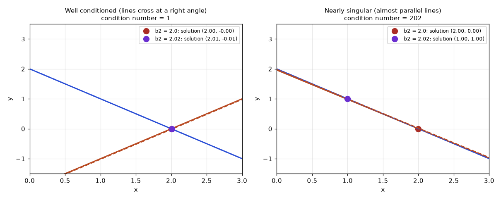
How to read it: the solid lines are the system for b2 = 2 and the dashed lines for b2 = 2.02. The big dots are the solutions. On the left the dots overlap; on the right they sit far apart even though the lines look almost identical.
The condition number κ(A) = σmax/σmin (the ratio of the largest to the smallest stretch factor, defined properly in Chapter 9; np.linalg.cond computes it) measures this danger. Rule of thumb: the relative error of the solution can be up to κ times the relative error of the input, and you lose about log10(κ) of your 16 digits of floating-point accuracy. Our matrix has κ ≈ 202. The perpendicular system [[1, 1], [1, −1]] has κ = 1, the best possible. A singular matrix has κ = ∞.
import numpy as np
A = np.array([[1, 1], [1, 1.02]])
print(np.linalg.solve(A, [2, 2]), np.linalg.solve(A, [2, 2.02]))
print(round(np.linalg.cond(A), 2), round(np.linalg.cond(np.array([[1, 1], [1, -1]])), 6))
n = 10 # Hilbert matrix, a famous ill-conditioned example
H = np.array([[1 / (i + j + 1) for j in range(n)] for i in range(n)])
x_true = np.ones(n); b = H @ x_true
print("cond(H) = %.1e" % np.linalg.cond(H))
print("error with solve: %.0e" % np.abs(np.linalg.solve(H, b) - x_true).max())
print("error with inv : %.0e" % np.abs(np.linalg.inv(H) @ b - x_true).max())[2. 0.] [1. 1.]
202.02 1.0
cond(H) = 1.6e+13
error with solve: 7e-04
error with inv : 8e-03With κ ≈ 1.6 × 1013 we expect to lose about 13 of 16 digits, and the printed errors (between 10−3 and 10−2, so only two or three correct digits remain) confirm it. The inverse route is no better, and in this run it is worse.
Problem 6.7.3 (why the normal equations are risky) A design matrix has two almost identical columns. Show that forming XᵀX squares the condition number.
| Idea | The singular values of XᵀX are the squares of those of X, so κ(XᵀX) = κ(X)². |
|---|---|
| Setup | x1 = 50 evenly spaced numbers from 0 to 1, x2 = x1 + 10−4·cos(37 x1). |
| Result | κ(X) ≈ 1.6 × 104 and κ(XᵀX) ≈ 2.7 × 108, about the square. Lesson: use np.linalg.lstsq or a QR decomposition, which work with X itself. |
import numpy as np
x1 = np.linspace(0, 1, 50)
x2 = x1 + 1e-4 * np.cos(37 * x1)
X = np.column_stack([x1, x2])
print("cond(X) = %.1e" % np.linalg.cond(X))
print("cond(X'X) = %.1e" % np.linalg.cond(X.T @ X))
print("cond(X)**2 = %.1e" % np.linalg.cond(X) ** 2)cond(X) = 1.6e+04
cond(X'X) = 2.7e+08
cond(X)**2 = 2.7e+08np.linalg.cond(A) before trusting a solve.Sparse matrices
Many real matrices are mostly zeros: a user-by-movie ratings table (each user rated a handful of 10,000 movies), a bag-of-words or TF-IDF text matrix, a one-hot encoding with thousands of categories, the adjacency matrix of a social graph. Storing every zero wastes memory and time. A sparse matrix stores only the non-zero entries and where they sit. SciPy's CSR format keeps three arrays: the values, their column indices, and where each row starts.
Problem 6.7.4 A 10,000 × 10,000 matrix with density 0.1 percent. How much memory does dense float64 storage need, and how much does CSR need?
| Dense | 10,000 × 10,000 = 108 entries × 8 bytes = 800,000,000 bytes = 800 MB. |
|---|---|
| Non-zeros | 0.001 × 108 = 100,000. |
| CSR | values 100,000 × 8 = 800,000 bytes; column indices 100,000 × 4 = 400,000 bytes; row pointers (10,000 + 1) × 4 = 40,004 bytes. Total 1,240,004 bytes, about 1.2 MB, roughly 645 times smaller. |
import numpy as np
import scipy.sparse as sp
S = sp.random(10000, 10000, density=0.001, format="csr", random_state=0)
print(S.shape, S.nnz)
print("dense bytes :", 10000 * 10000 * 8)
print("sparse bytes:", S.data.nbytes + S.indices.nbytes + S.indptr.nbytes)
v = np.ones(10000)
y = S @ v # fast: touches only the 100,000 non-zeros
print(y.shape, round(float(y.sum()), 6) == round(float(S.sum()), 6))(10000, 10000) 100000
dense bytes : 800000000
sparse bytes: 1240004
(10000,) True.toarray() (or .todense()) on a big sparse matrix, or inverting it. Wrong: np.linalg.inv(S.toarray()) allocates the full 800 MB and returns a dense matrix with no zeros left at all. Right: keep it sparse, use S @ v for products and scipy.sparse.linalg.spsolve (or an iterative solver) for systems.Going deeper
Structure is the expert's lever. Triangular systems are solved by simple substitution in n² steps. Symmetric positive definite matrices (covariances) factor as LLᵀ (Cholesky) at half the cost of LU. Banded and sparse matrices store and solve in time proportional to their non-zeros. Orthogonal matrices are perfectly conditioned (κ = 1), which is why QR and SVD are the stable workhorses. In deep learning, low-rank updates W + ABᵀ (LoRA) fine-tune a huge weight matrix by training two skinny matrices, and weight matrices with large condition numbers cause exploding or vanishing gradients (Chapter 13).
lstsq/QR rather than inverting XᵀX.Chapter recap
- A matrix is both a table (rows are samples, columns are features, shape rows × columns) and a machine that maps vectors to vectors linearly.
- Matrix-vector product: dot products of rows, or a combination of columns with the vector entries as weights.
- (m × n)(n × p) → (m × p). The inner dimensions must match. Entry (i, j) is row i of A dotted with column j of B.
- A product can be seen four ways: dot products, column combinations, row combinations, and a sum of outer products.
- Matrix multiplication is associative and distributive but not commutative; AB = 0 does not force A = 0 or B = 0.
- (AB)ᵀ = BᵀAᵀ and (AB)⁻¹ = B⁻¹A⁻¹: the order reverses.
- The columns of a 2 × 2 matrix are where e1 and e2 land; composition "first A then B" is the product BA.
- det = signed area (volume) scale factor; det = 0 means the space is squashed and the matrix has no inverse; det(AB) = det A · det B.
- Rank = number of independent columns = dimension of the column space; full rank means no redundancy.
- Use
solveorlstsq, notinv; checkcond, not det, to detect near-singularity. - A linear layer is Y = XW + b with shapes (batch, in)(in, out); watch for (n,) versus (n, 1) broadcasting bugs.
- Structure (blocks, sparsity, low rank, change of basis) is how experts make matrix computations fast, stable and interpretable.
| Formula / pattern | Meaning |
|---|---|
| Cij = ∑k AikBkj | Matrix product entry: row of A dot column of B |
| Ax = x1a1 + ... + xnan | Output is a combination of the columns of A |
| (AB)ᵀ = BᵀAᵀ | Transpose reverses the order |
| det [[a, b], [c, d]] = ad − bc | Signed area scale of the unit square |
| A⁻¹ = (1/(ad − bc))·[[d, −b], [−c, a]] | 2 × 2 inverse; needs det ≠ 0 |
| (AB)⁻¹ = B⁻¹A⁻�� | Undo in reverse order |
| tr(AB) = tr(BA) | Cyclic property of the trace |
| Y = XW + b | Linear layer on a batch |
| P⁻¹AP | The matrix A seen in the basis given by the columns of P |
| κ(A) = σmax/σmin | Error amplification; lose about log10 κ digits |
Practice set
Problem 6.1 A is 3 × 4 and B is 4 × 2. State the shapes of AB, Aᵀ, AAᵀ, and say whether BA is defined.
Answer: AB: (3 × 4)(4 × 2) = 3 × 2. Aᵀ is 4 × 3. AAᵀ: (3 × 4)(4 × 3) = 3 × 3. BA would be (4 × 2)(3 × 4): inner dimensions 2 and 3 differ, so it is not defined.
Problem 6.2 Compute Ax for A = [[2, 0], [1, 3]] and x = [4, 1], once by rows and once by columns.
Answer: Rows: [2·4 + 0·1, 1·4 + 3·1] = [8, 7]. Columns: 4·[2, 1] + 1·[0, 3] = [8, 4] + [0, 3] = [8, 7]. Both give [8, 7].
Problem 6.3 For A = [[1, 0], [2, 1]] and B = [[3, 1], [0, 2]] compute AB and BA. Are they equal?
Answer: AB = [[1·3 + 0·0, 1·1 + 0·2], [2·3 + 1·0, 2·1 + 1·2]] = [[3, 1], [6, 4]]. BA = [[3·1 + 1·2, 3·0 + 1·1], [0·1 + 2·2, 0·0 + 2·1]] = [[5, 1], [4, 2]]. They differ.
Problem 6.4 Find det and inverse of [[5, 2], [3, 1]], and check.
Answer: det = 5·1 − 2·3 = −1. Inverse = (1/−1)·[[1, −2], [−3, 5]] = [[−1, 2], [3, −5]]. Check first row: 5·(−1) + 2·3 = 1 and 5·2 + 2·(−5) = 0. Second row: 3·(−1) + 1·3 = 0 and 3·2 + 1·(−5) = 1. Identity. ✓
Problem 6.5 The vectors [3, 1] and [1, 2] are the columns of a matrix. What area does the unit square become, and is the orientation kept? Then what is the area of the triangle with vertices at the origin, [3, 1] and [1, 2]?
Answer: det = 3·2 − 1·1 = 5, positive, so area 5 and orientation kept. The triangle is half of the parallelogram: 2.5.
Problem 6.6 Rotate by 90 degrees (R = [[0, −1], [1, 0]]) and then reflect in the x-axis (F = [[1, 0], [0, −1]]). Give the single matrix, its determinant, and the image of [2, 1].
Answer: "R then F" is FR = [[1·0 + 0·1, 1·(−1) + 0·0], [0·0 + (−1)·1, 0·(−1) + (−1)·0]] = [[0, −1], [−1, 0]]. det = 0·0 − (−1)(−1) = −1 = det F · det R = (−1)(1). Image of [2, 1]: [0·2 − 1·1, −1·2 + 0·1] = [−1, −2]. Direct check: R[2, 1] = [−1, 2], then F gives [−1, −2]. ✓
Problem 6.7 Find the rank of [[1, 2, 3], [2, 4, 6], [1, 0, 1]] and explain.
Answer: Row 2 = 2 × row 1, so it adds nothing. Rows 1 and 3 are not multiples of each other. Rank = 2. The matrix is 3 × 3 but rank-deficient, so det = 0 and there is no inverse. (Check: det = 1(4·1 − 6·0) − 2(2·1 − 6·1) + 3(2·0 − 4·1) = 4 + 8 − 12 = 0. ✓)
Problem 6.8 What does this print? w = np.array([[1, 2], [3, 4]]); v = np.array([10, 1]); print(w @ v, v @ w, w * v)
Answer: w @ v = [1·10 + 2·1, 3·10 + 4·1] = [12, 34] (rows dotted with v). v @ w = [10·1 + 1·3, 10·2 + 1·4] = [13, 24] (v treated as a row vector, combining rows of w). w * v is entrywise with v broadcast over rows: [[1·10, 2·1], [3·10, 4·1]] = [[10, 2], [30, 4]].
Problem 6.9 Prove (AB)ᵀ = BᵀAᵀ using entries.
Answer: ((AB)ᵀ)ij = (AB)ji = ∑k AjkBki. Rewrite each factor as an entry of a transpose: Ajk = (Aᵀ)kj and Bki = (Bᵀ)ik. Then the sum is ∑k (Bᵀ)ik(Aᵀ)kj = (BᵀAᵀ)ij. Same entry for every i, j, so the matrices are equal.
Problem 6.10 A is 3 × 3 with det A = 2. Find det(3A), det(A⁻¹), det(AᵀA) and det(A²).
Answer: det(3A) = 3³ · 2 = 54. det(A⁻¹) = 1/2. det(AᵀA) = det(Aᵀ)det(A) = 2 · 2 = 4. det(A²) = 2² = 4.
Problem 6.11 Let A = [[2, 0], [0, 4]] and B = [[1, 1], [0, 1]]. Compute (AB)⁻¹ two ways.
Answer: AB = [[2·1 + 0, 2·1 + 0·1], [0, 4]] = [[2, 2], [0, 4]]. Formula: det = 8, inverse = (1/8)·[[4, −2], [0, 2]] = [[0.5, −0.25], [0, 0.25]]. Rule: B⁻¹A⁻¹ = [[1, −1], [0, 1]]·[[0.5, 0], [0, 0.25]] = [[0.5, −0.25], [0, 0.25]]. Same. The wrong order A⁻¹B⁻¹ = [[0.5, 0], [0, 0.25]]·[[1, −1], [0, 1]] = [[0.5, −0.5], [0, 0.25]] is a different matrix.
Problem 6.12 A network takes a batch of 32 inputs with 100 features, goes through a hidden layer of 64 neurons and an output layer of 10. Give the weight shapes, the output shape and the total number of parameters.
Answer: W1 is 100 × 64, b1 has 64, W2 is 64 × 10, b2 has 10. Hidden output (32 × 100)(100 × 64) = 32 × 64; final (32 × 64)(64 × 10) = 32 × 10. Parameters: 100·64 + 64 + 64·10 + 10 = 6400 + 64 + 640 + 10 = 7114.
Problem 6.13 Find the cheapest bracketing for ABC with A 200 × 300, B 300 × 50, C 50 × 400, counting multiplications.
Answer: (AB)C: AB costs 200·300·50 = 3,000,000 and is 200 × 50; then (200 × 50)(50 × 400) costs 200·50·400 = 4,000,000. Total 7,000,000. A(BC): BC costs 300·50·400 = 6,000,000 and is 300 × 400; then A(BC) costs 200·300·400 = 24,000,000. Total 30,000,000. So (AB)C is about 4.3 times cheaper.
Problem 6.14 Find the bug. A student computes the MSE of a regression as np.mean((model.predict(X) - y) ** 2) where predict returns shape (n, 1) and y has shape (n,). The value looks plausible but is too large and training never improves. Why, and what is the fix?
Answer: (n, 1) − (n,) broadcasts into an n × n table of all pairwise differences ŷi − yj, so the loss measures the spread of y around every prediction, not the pairwise errors. With y = [1, 2, 3] and predictions [1, 2, 4] it gives 2.3333 instead of 0.3333. Fix: pred = model.predict(X).ravel() (or y.reshape(-1, 1)) and assert that the shapes match.
Problem 6.15 Change of basis: A = [[1, 0], [0, 2]], P = [[1, 1], [0, 1]]. Compute P⁻¹AP and confirm that the trace and determinant are unchanged.
Answer: det P = 1, P⁻¹ = [[1, −1], [0, 1]]. AP = [[1·1, 1·1], [0·1 + 2·0, 0·1 + 2·1]] = [[1, 1], [0, 2]]. P⁻¹(AP) = [[1·1 + (−1)·0, 1·1 + (−1)·2], [0, 2]] = [[1, −1], [0, 2]]. Trace 1 + 2 = 3 as before, det 1·2 − 0 = 2 as before.
Problem 6.16 (interview) A feature matrix X has 1000 rows and 6 columns, and the sixth column is exactly twice the first column. What happens to XᵀX, and what do you do?
Answer: The columns are dependent, so rank(X) is one less than the number of columns, and XᵀX (which has the same rank as X) is singular: det = 0, no inverse. np.linalg.inv raises an error or, with rounding noise, returns huge meaningless numbers and the coefficients are not unique. Remove or combine the redundant column (or use ridge regularisation) and solve with lstsq. Diagnose with np.linalg.matrix_rank(X) and np.linalg.cond(X).
Problem 6.17 (code) Write a function that tests whether a matrix is orthogonal and test it on a rotation by 40 degrees and on the matrix [[1, 1], [0, 1]].
Answer: A matrix is orthogonal if QᵀQ = I. Compare with a tolerance, never with exact equality.
import numpy as np
def is_orthogonal(Q, tol=1e-10):
Q = np.asarray(Q, dtype=float)
return Q.shape[0] == Q.shape[1] and np.allclose(Q.T @ Q, np.eye(Q.shape[0]), atol=tol)
th = np.deg2rad(40)
R = np.array([[np.cos(th), -np.sin(th)], [np.sin(th), np.cos(th)]])
print(is_orthogonal(R), is_orthogonal([[1, 1], [0, 1]]))
print(round(np.linalg.det(R), 6))True False
1.0The shear is not orthogonal: its columns [1, 0] and [1, 1] are not perpendicular, and it changes lengths. The rotation has determinant 1.
Prompt pack
You are my patient, practical professor. I am a working professional moving into data roles. Teach me matrices and linear transformations step by step: matrix shapes, the matrix-vector product (rows view and columns view), matrix-matrix products (dot products, column combinations, row combinations, outer products), transpose, determinant, inverse, rank and the geometry of 2x2 transformations. Start with a one-paragraph plain-English intuition, then give me 5 quiz questions one at a time, from easy hand calculations to harder conceptual ones. Wait for my answer before revealing the next question. After each answer, correct me kindly, show the full working with real numbers, and tell me which concept to review. Finish with a summary of my weak spots.
Act as a careful reviewer of my matrix work. I will paste a calculation or NumPy code involving matrix products, inverses, determinants, ranks or shapes. Check every shape (write each as (rows x columns)), recompute the numbers by hand step by step, and compare with my answer. Point out any mistake such as using * instead of @, assuming AB = BA, transposing a product without reversing the order, inverting with inv instead of solve, or a broadcasting bug between shapes (n,) and (n,1). Explain why each error happens, give the corrected code, and suggest one assert statement that would have caught it.
Run a mock data science interview on linear algebra fundamentals. Ask me one question at a time, mixing: matrix multiplication shapes and cost, what the determinant and rank mean geometrically, why we avoid computing inverses, what the condition number tells us, how a linear layer in a neural network uses a weight matrix, and how collinear features affect linear regression. After each of my answers, grade it from 1 to 5, give a model answer with a small numeric example, and ask a follow-up if my answer was shallow. After 8 questions, give me an overall score and a study plan for the next week.
You run the numbers for a small cafe. The owner hands you three till receipts but forgot to give you the price list. Receipt one: 2 coffees and 1 muffin cost 7.00. Receipt two: 1 coffee and 3 muffins cost 11.00. You want the price of one coffee and one muffin. This is a system of linear equations, and you have probably solved one like it at school by substituting one equation into the other. Now scale the story up. A data scientist fitting a regression has 10,000 receipts (rows of data) and 30 unknown prices (coefficients). A logistics team balancing traffic through a warehouse network has 200 conservation equations. A recommender system solves thousands of small systems every second. Nobody solves those by hand-style substitution. They use one clean, mechanical procedure, Gaussian elimination, and one clean picture, the vector space, that tells you in advance whether an answer exists, whether it is unique, and what to do when there is no exact answer.
In this chapter you will learn to write any system as Ax = b, see it two ways (lines or planes meeting, and a recipe of columns), and solve it by hand with row operations. You will meet the three possible outcomes (one solution, none, infinitely many) and understand each one geometrically. You will learn rank, free variables, the four fundamental subspaces (column space, row space, null space, left null space) and how to compute a basis for each by hand and with NumPy and SciPy. You will factor a matrix as A = LU so that many right-hand sides cost almost nothing. Then you will tackle the case that matters most for data work: more equations than unknowns, where no exact answer exists and you instead project onto the column space to get the best answer, which is exactly linear regression. We finish with numerical health (why you call np.linalg.solve and never inv), projection matrices, QR, and iterative solvers.
This chapter builds directly on Chapter 5 (vectors, dot product, projection) and Chapter 6 (matrices, matrix-vector product, inverse, determinant). Our running examples are the cafe receipts, a traffic network, and a small regression with four data points.
7.1 Systems of Equations as Ax = b: Two Pictures
Beginner: the cafe system
Let c be the price of a coffee and m the price of a muffin. The two receipts say:
Solve by substitution. From the first equation, m = 7 − 2c. Put that into the second: c + 3(7 − 2c) = 11, so c + 21 − 6c = 11, so −5c = −10, so c = 2. Then m = 7 − 2·2 = 3. A coffee costs 2 and a muffin costs 3. Check receipt two: 2 + 3·3 = 11. Correct.
The matrix form
Collect the numbers in front of the unknowns into a matrix A (the coefficient matrix), the unknowns into a column vector x, and the right-hand sides into a column vector b:
| 2 | 1 |
| 1 | 3 |
| c |
| m |
| 7 |
| 11 |
A system with m equations and n unknowns gives an m × n matrix A (m rows, n columns), x with n entries, b with m entries. Every linear system in the world, from two prices to two million regression coefficients, is the same sentence: Ax = b.
Picture one: the row picture
Read A one row at a time. Each row is one equation. In two unknowns, one equation is a line; in three unknowns it is a flat plane. The solution is the point that lies on all of them. For the cafe, the line 2c + m = 7 and the line c + 3m = 11 cross at (2, 3). The easier pair in the figure below, x + y = 3 and x − y = 1, cross at (2, 1).
Picture two: the column picture
Read A one column at a time. The matrix-vector product (Chapter 6) is a combination of the columns:
So Ax = b asks: how much of each column do I mix to produce b? For the cafe: 2 · (2, 1) + 3 · (1, 3) = (4, 2) + (3, 9) = (7, 11). It is a recipe, and the solution x holds the amounts.
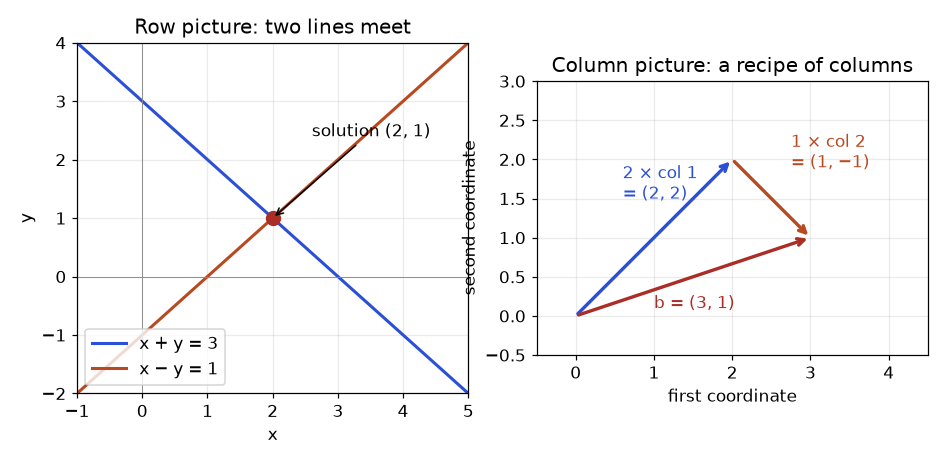
How to read it: on the left the orange and blue lines meet at one dot, which is the unique solution (2, 1). On the right the system is x + y = 3, x − y = 1, so column 1 is (1, 1) and column 2 is (1, −1). Walk 2 steps along column 1 (blue arrow), then 1 step along column 2 (orange arrow) and you land exactly on b = (3, 1) (red arrow). The two pictures describe one fact.
Intermediate: worked examples
Problem 7.1.1 Write the cafe system in the column picture and verify the solution (c, m) = (2, 3) with NumPy.
| Idea | b must equal c·(column 1) + m·(column 2). |
|---|---|
| Columns | column 1 = (2, 1), column 2 = (1, 3), b = (7, 11). |
| Plug in | 2·(2, 1) + 3·(1, 3) = (4, 2) + (3, 9) = (7, 11). |
| Check | (7, 11) equals b, so the amounts (2, 3) are right. |
import numpy as np
A = np.array([[2, 1], [1, 3]])
b = np.array([7, 11])
x = np.linalg.solve(A, b) # solve Ax = b
print(np.round(x, 6))
print(x[0] * A[:, 0] + x[1] * A[:, 1]) # the same b, built from columns
print(np.allclose(A @ x, b))[2. 3.]
[ 7. 11.]
TrueProblem 7.1.2 Three planes in space: x + y + z = 6, 2x − y + z = 3, x + 2y − z = 2. Is the point (1, 2, 3) on all three planes? (A geometric check.)
| Idea | A point is on a plane if it satisfies that plane's equation. |
|---|---|
| Plane 1 | 1 + 2 + 3 = 6. Yes. |
| Plane 2 | 2·1 − 2 + 3 = 3. Yes. |
| Plane 3 | 1 + 2·2 − 3 = 2. Yes. |
| Meaning | All three planes pass through (1, 2, 3). If the planes are in general position, that is the only common point. |
Problem 7.1.3 (What goes wrong.) Can the system x + 2y = 3, 2x + 4y = 5 be solved?
| Columns | column 1 = (1, 2), column 2 = (2, 4) = 2 · column 1. Both columns point along the same line. |
|---|---|
| Reachable | Any combination x·(1, 2) + y·(2, 4) = (x + 2y)·(1, 2). Every reachable vector has second entry equal to twice the first. |
| Target | b = (3, 5). Twice the first entry is 6, not 5. |
| Answer | b is not reachable, so no solution. In the row picture: x + 2y = 3 and x + 2y = 2.5 are parallel lines that never meet. |
Going deeper
The column picture gives the cleanest solvability test: Ax = b has a solution if and only if b is in the span of the columns of A (the set of all combinations of columns, called the column space). If A is square and invertible (Chapter 6), the columns span the whole space and x = A−1b exists for every b. If A is not invertible, the columns span only a thin flat piece (a line or plane), and most b's are out of reach. Everything in this chapter is a way to answer, for any shape of A: which b's can I reach, and in how many ways?
In data work the shape tells the story. A tall A (many more rows than columns) is a regression: lots of observations, few unknown coefficients, usually no exact solution (Section 7.6). A wide A (more unknowns than equations) is an under-determined problem, such as fitting more parameters than data points: infinitely many exact solutions.
7.2 Gaussian Elimination, Echelon Forms and the Three Outcomes
Beginner: the augmented matrix and three row operations
To avoid rewriting x, y, z every line, write only the numbers. The augmented matrix [A | b] glues b as an extra column. The cafe system becomes
| 2 | 1 | 7 |
| 1 | 3 | 11 |
You may do three row operations, and none of them changes the solutions of the system (each is reversible, so no information is lost):
- Swap two rows.
- Scale a row by a nonzero number.
- Add a multiple of one row to another row.
Cafe example. Row 2 − ½ · Row 1: the first entry 1 − ½·2 = 0, then 3 − ½·1 = 2.5, then 11 − ½·7 = 7.5. You get the rows (2, 1 | 7) and (0, 2.5 | 7.5). Row two says 2.5m = 7.5, so m = 3. Back substitution into row one: 2c + 3 = 7, so c = 2. Same answer as before, now by a procedure that works for any size.
Intermediate: definitions
The algorithm ("forward elimination") goes column by column: find a pivot (swap a row up if the entry is zero), clear everything below it, move one row down and one column right. RREF continues upward ("Gauss-Jordan") so you can read the answer straight off.
Problem 7.2.1 (Unique solution.) Solve 2x + y − z = 8, −3x − y + 2z = −11, −2x + y + 2z = −3.
| Augmented |
| ||||||||||||
|---|---|---|---|---|---|---|---|---|---|---|---|---|---|
| Step 1 | Pivot 2 in column 1. R2 ← R2 + (3/2)R1: (−3 + 3, −1 + 1.5, 2 − 1.5 | −11 + 12) = (0, 0.5, 0.5 | 1). R3 ← R3 + R1: (0, 2, 1 | 5). | ||||||||||||
| Step 2 | Pivot 0.5 in column 2. R3 ← R3 − 4·R2: (0, 2 − 2, 1 − 2 | 5 − 4) = (0, 0, −1 | 1). | ||||||||||||
| Staircase |
| ||||||||||||
| Back substitution | −z = 1 so z = −1. 0.5y + 0.5(−1) = 1 so y = 3. 2x + 3 − (−1) = 8 so x = 2. | ||||||||||||
| Check | Equation 2: −6 − 3 + 2(−1) = −11. Equation 3: −4 + 3 − 2 = −3. Both hold. Answer (2, 3, −1). |
Problem 7.2.2 (Zero pivot, row swap.) Solve 2y + z = 4, x + y + z = 4, x + 3z = 7.
| Augmented |
| ||||||||||||
|---|---|---|---|---|---|---|---|---|---|---|---|---|---|
| Step 1 | Swap R1 and R2: (1, 1, 1 | 4), (0, 2, 1 | 4), (1, 0, 3 | 7). | ||||||||||||
| Step 2 | R3 ← R3 − R1: (0, −1, 2 | 3). | ||||||||||||
| Step 3 | Pivot 2 in column 2. R3 ← R3 + ½R2: (0, 0, 2 + 0.5 | 3 + 2) = (0, 0, 2.5 | 5). | ||||||||||||
| Back substitution | 2.5z = 5 so z = 2. 2y + 2 = 4 so y = 1. x + 1 + 2 = 4 so x = 1. | ||||||||||||
| Check | Equation 3: 1 + 3·2 = 7. Yes. Answer (1, 1, 2). |
The three outcomes
Elimination always ends in one of exactly three situations, and the staircase tells you which.
Problem 7.2.3 (No solution.) Solve x + y + z = 3, x + 2y + 3z = 6, 2x + 3y + 4z = 10.
| Augmented |
| ||||||||||||
|---|---|---|---|---|---|---|---|---|---|---|---|---|---|
| Step 1 | R2 ← R2 − R1: (0, 1, 2 | 3). R3 ← R3 − 2R1: (0, 1, 2 | 4). | ||||||||||||
| Step 2 | R3 ← R3 − R2: (0, 0, 0 | 1). | ||||||||||||
| Meaning | The last row says 0x + 0y + 0z = 1, that is 0 = 1. Impossible. No solution: the system is inconsistent. | ||||||||||||
| Picture | Three planes, any two of which meet in a line, but the three lines are parallel, like the three sides of a triangular prism. No point is on all three. |
Problem 7.2.4 (Infinitely many solutions.) Same left side, but the third right side is 9 instead of 10: x + y + z = 3, x + 2y + 3z = 6, 2x + 3y + 4z = 9.
| Step 1 | R2 ← R2 − R1: (0, 1, 2 | 3). R3 ← R3 − 2R1: (0, 1, 2 | 3). |
|---|---|
| Step 2 | R3 ← R3 − R2: (0, 0, 0 | 0). The row says 0 = 0, always true, and carries no information. The third equation was just the sum of the first two (3 + 6 = 9), so it was redundant. |
| Pivots | Columns 1 and 2 have pivots. Column 3 does not, so z is a free variable: choose z = t, any number. |
| Back substitution | y + 2t = 3 so y = 3 − 2t. x + (3 − 2t) + t = 3 so x = t. |
| Answer | (x, y, z) = (t, 3 − 2t, t) = (0, 3, 0) + t·(1, −2, 1). One line of solutions. |
| Check | t = 1 gives (1, 1, 1): 1 + 1 + 1 = 3, 1 + 2 + 3 = 6, 2 + 3 + 4 = 9. Yes. |
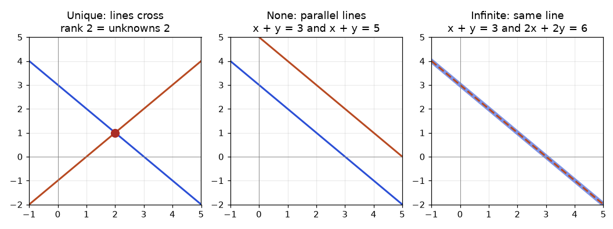
How to read it: the left panel has rank 2 and two unknowns, so one point. The middle panel has the same left side x + y but different right sides (3 and 5): elimination would produce 0 = 2. The right panel is the second equation 2x + 2y = 6, which is twice the first: elimination produces 0 = 0, leaving one free variable and a whole line of solutions. In three dimensions the same trichotomy holds with planes: meeting at a point, no common point, or sharing a line or a plane.
Code: elimination to RREF
Here is a short RREF routine you can reuse. It picks the largest available pivot in each column (partial pivoting, explained in Section 7.5) and prints the final RREF for the three systems above.
import numpy as np
def rref(M, tol=1e-12):
M = M.astype(float).copy()
rows, cols = M.shape
r, pivots = 0, []
for c in range(cols):
if r == rows:
break
p = r + np.argmax(np.abs(M[r:, c])) # best pivot in this column
if abs(M[p, c]) < tol:
continue # free column
M[[r, p]] = M[[p, r]] # swap rows
M[r] = M[r] / M[r, c] # make the pivot 1
for i in range(rows):
if i != r:
M[i] = M[i] - M[i, c] * M[r] # clear the column
pivots.append(c)
r += 1
return M, pivots
A = np.array([[1, 1, 1], [1, 2, 3], [2, 3, 4]])
for rhs in ([3, 6, 10], [3, 6, 9]):
R, piv = rref(np.column_stack([A, rhs]))
print("rhs", rhs, "pivot columns", piv)
print(np.round(R, 6) + 0.0)
B = np.array([[2, 1, -1], [-3, -1, 2], [-2, 1, 2]])
R, piv = rref(np.column_stack([B, [8, -11, -3]]))
print("unique:", R[:, -1], piv)rhs [3, 6, 10] pivot columns [0, 1, 3]
[[ 1. 0. -1. 0.]
[ 0. 1. 2. 0.]
[ 0. 0. 0. 1.]]
rhs [3, 6, 9] pivot columns [0, 1]
[[ 1. 0. -1. 0.]
[ 0. 1. 2. 3.]
[ 0. 0. 0. 0.]]
unique: [ 2. 3. -1.] [0, 1, 2]How to read it: for the first right side the pivot columns are [0, 1, 3]. Column index 3 is the augmented column b, which is the code's way of saying "inconsistent": a pivot in the b column means the row (0, 0, 0 | 1). For the second right side the pivots are [0, 1], so the third column is free and the RREF rows say x − z = 0 and y + 2z = 3, matching x = t, y = 3 − 2t. The last block shows the unique case, where RREF reads off the answer (2, 3, −1) directly.
Going deeper
Why row operations do not change solutions. Each row operation is multiplication of both sides on the left by an invertible matrix E: EAx = Eb. If Ax = b then EAx = Eb. Conversely, multiply by E−1 to get back. So the two systems have identical solution sets. Elimination is therefore a chain Ek … E2E1A = U, and Section 7.5 turns that chain into the LU decomposition.
Cost. Eliminating an n × n system takes about n³/3 multiplications (and the same number of additions): roughly 2n³/3 floating-point operations. For n = 1,000 that is about 7 × 108, under a second. Back substitution costs only about n². The cubic cost is why 100,000 × 100,000 dense systems are out of reach and why sparse and iterative methods (Section 7.8) matter.
Interview angle. "How many solutions can a linear system have?" Zero, one, or infinitely many, never exactly two, and you can say why: solutions are closed under affine combinations.
7.3 Rank, Free Variables, Homogeneous Systems and Rank-Nullity
Beginner: counting pivots
Take the system with unknowns x1, x2, x3, x4 (three equations, four unknowns, so we expect freedom):
| 1 | 2 | 1 | 1 |
| 2 | 4 | 3 | 4 |
| 1 | 2 | 0 | -1 |
| x1 |
| x2 |
| x3 |
| x4 |
| 5 |
| 13 |
| 2 |
Call the matrix A (we reuse it in Section 7.4). Eliminate on the augmented matrix [A | b]:
- R2 ← R2 − 2R1: (0, 0, 1, 2 | 3).
- R3 ← R3 − R1: (0, 0, −1, −2 | −3).
- Column 2 has no usable pivot (both entries below are 0), so move to column 3. R3 ← R3 + R2: (0, 0, 0, 0 | 0).
- Clear above the pivot in column 3: R1 ← R1 − R2: (1, 2, 0, −1 | 2).
| 1 | 2 | 0 | -1 | 2 |
| 0 | 0 | 1 | 2 | 3 |
| 0 | 0 | 0 | 0 | 0 |
Pivots are in columns 1 and 3, so rank = 2. Columns 2 and 4 are free: x2 = s and x4 = t can be anything. The two non-zero rows say x1 + 2s − t = 2 and x3 + 2t = 3, so
In vector form: x = (2, 0, 3, 0) + s·(−2, 1, 0, 0) + t·(1, 0, −2, 1). The first vector is a particular solution (set s = t = 0). The other two vectors solve the homogeneous system Ax = 0, as we see next.
Intermediate: homogeneous systems and the structure of all solutions
Why rank-nullity is true: n columns split into pivot columns (that is the rank) and free columns. Each free column gives one independent null-space direction (set that free variable to 1 and the others to 0, then solve for the pivot variables). So nullity = number of free columns = n − rank.
Problem 7.3.1 Verify the solution above: check that (1, 1, 1, 1) (obtained with s = t = 1) solves Ax = b, and that the two null-space vectors solve Ax = 0.
| s = t = 1 | x = (2 − 2 + 1, 1, 3 − 2, 1) = (1, 1, 1, 1). |
|---|---|
| Row 1 | 1 + 2 + 1 + 1 = 5. Yes. |
| Row 2 | 2 + 4 + 3 + 4 = 13. Yes. |
| Row 3 | 1 + 2 + 0 − 1 = 2. Yes. |
| Null vector (−2, 1, 0, 0) | Row 1: −2 + 2 = 0. Row 2: −4 + 4 = 0. Row 3: −2 + 2 = 0. Yes. |
| Null vector (1, 0, −2, 1) | Row 1: 1 − 2 + 1 = 0. Row 2: 2 − 6 + 4 = 0. Row 3: 1 − 0 − 1 = 0. Yes. |
Problem 7.3.2 (Fewer equations than unknowns.) Find all solutions of x + 2y + 3z = 0, 2x + y + z = 0.
| Augmented |
| ||||||||
|---|---|---|---|---|---|---|---|---|---|
| Eliminate | R2 ← R2 − 2R1: (0, −3, −5 | 0). Scale R2 by −1/3: (0, 1, 5/3 | 0). R1 ← R1 − 2R2: (1, 0, 3 − 10/3 | 0) = (1, 0, −1/3 | 0). | ||||||||
| Free variable | z = t. Then y = −5t/3 and x = t/3. | ||||||||
| Answer | (x, y, z) = (t/3, −5t/3, t) = (t/3)·(1, −5, 3). Take t = 3 for the vector (1, −5, 3). | ||||||||
| Check | 1 − 10 + 9 = 0 and 2 − 5 + 3 = 0. Yes. |
Problem 7.3.3 (Data story: redundant feature.) A table has five rows and four features: a, b, c and d, where d = a + 2c exactly (a copied-and-combined column). What are the rank and nullity of the 5 × 4 data matrix?
| Idea | Column d is not new information, so at most 3 columns are independent. |
|---|---|
| Rank | If a, b, c are independent, rank = 3. |
| Nullity | 4 columns − rank 3 = 1. The null vector records the relationship: 1·a + 0·b + 2·c − 1·d = 0, so x = (1, 0, 2, −1). |
import numpy as np
rng = np.random.default_rng(7)
a, b, c = rng.normal(size=(3, 5)) # three random columns of length 5
d = a + 2 * c # redundant feature
X = np.column_stack([a, b, c, d])
print("shape", X.shape, "rank", np.linalg.matrix_rank(X))
x0 = np.array([1, 0, 2, -1])
print("X @ x0 is zero:", np.allclose(X @ x0, 0))shape (5, 4) rank 3
X @ x0 is zero: TrueGoing deeper
Rank from either side. The number of pivots equals the number of independent rows and the number of independent columns. This is not obvious: the rows live in Rn and the columns in Rm. The proof via elimination: row operations do not change the row space, and the nonzero rows of an echelon form are independent, so row rank = number of pivots. The pivot columns of the original matrix are independent and span the column space, so column rank = number of pivots too. Hence row rank = column rank, written rank(A) = rank(AT).
Numerical rank. With floating-point numbers, "exactly zero" rarely happens. np.linalg.matrix_rank uses the SVD (Chapter 9) and counts singular values above a tolerance, about max(m, n) · ε · (largest singular value), where ε ≈ 2.2 × 10−16. Treat rank in real data as "rank up to noise".
Genericity. A random square matrix is invertible with probability 1. Singular matrices are a measure-zero set, but they appear all the time in practice because real data has exact duplicates, one-hot encodings that sum to 1, and totals that equal sums of parts.
7.4 Vector Spaces, Subspaces and the Four Fundamental Subspaces
Beginner: the idea of "closed"
Pick two vectors on the line y = 2x, say (1, 2) and (3, 6). Their sum (4, 8) is on the line. Double the first: (2, 4), still on the line. Stretch by −5: (−5, −10), still on the line. Zero times anything: (0, 0), on the line. Adding and stretching never left the line. Now try the line y = 2x + 1: (0, 1) and (1, 3) are on it, but their sum (1, 4) has 4 ≠ 2·1 + 1 = 3. It left the line. The first line is "closed" under addition and scaling, the second is not.
Intermediate: definitions and the subspace test
The span of vectors v1, …, vk is the set of all their linear combinations. A span is always a subspace. Vectors are linearly independent if the only way to combine them into 0 is with all coefficients zero. A basis of a subspace is an independent set that spans it. Every basis of a given subspace has the same size, the dimension. (Chapter 5 introduced these ideas; here we compute them with elimination.)
Problem 7.4.1 Which of these are subspaces of R3 or R2? (a) S1 = {(x, y, z): x + y + z = 0}. (b) S2 = {(x, y, z): x + y + z = 1}. (c) S3 = {(x, y): x ≥ 0 and y ≥ 0}. (d) S4 = {(x, y): xy = 0}.
| (a) Zero | 0 + 0 + 0 = 0, so (0, 0, 0) is in S1. |
|---|---|
| (a) Sum | If x1 + y1 + z1 = 0 and x2 + y2 + z2 = 0, the sum vector has coordinate total 0 + 0 = 0. Closed. |
| (a) Scale | c(x + y + z) = c·0 = 0. Closed. S1 is a subspace (a plane through the origin, dimension 2, basis (1, −1, 0) and (0, 1, −1)). |
| (b) | (0, 0, 0) has total 0, not 1. Fails rule 1. Not a subspace (a plane that misses the origin). |
| (c) | (1, 1) is in S3, but (−1)·(1, 1) = (−1, −1) is not. Fails rule 3. Not a subspace. |
| (d) | (1, 0) and (0, 1) are in S4 (the two axes), but their sum (1, 1) has xy = 1. Fails rule 2. Not a subspace. |
The four fundamental subspaces
An m × n matrix A of rank r defines four subspaces, two inside Rn (the input space) and two inside Rm (the output space):
| Subspace | Lives in | Definition | Dimension | How to get a basis by hand |
|---|---|---|---|---|
| Column space C(A) | Rm | All combinations of columns = all reachable Ax | r | Pivot columns of the original A |
| Row space C(AT) | Rn | All combinations of rows | r | Nonzero rows of the RREF |
| Null space N(A) | Rn | All x with Ax = 0 | n − r | One vector per free column (special solutions) |
| Left null space N(AT) | Rm | All y with yTA = 0 | m − r | Null space of AT, or track the row operations that produce zero rows |
Problem 7.4.2 Find bases for all four subspaces of A =
| 1 | 2 | 1 | 1 |
| 2 | 4 | 3 | 4 |
| 1 | 2 | 0 | -1 |
| RREF | From Section 7.3 (the b column does not affect the pivots): rows (1, 2, 0, −1), (0, 0, 1, 2), (0, 0, 0, 0). Pivot columns 1 and 3, so r = 2. |
|---|---|
| Column space | Pivot columns of the original A: (1, 2, 1) and (1, 3, 0). Dimension 2: a plane inside R3. |
| Row space | Nonzero RREF rows: (1, 2, 0, −1) and (0, 0, 1, 2). Dimension 2: a plane inside R4. |
| Null space | Free columns 2 and 4. Special solutions: s = 1, t = 0 gives (−2, 1, 0, 0). s = 0, t = 1 gives (1, 0, −2, 1). Dimension 2 = n − r = 4 − 2. |
| Left null space | Dimension m − r = 3 − 2 = 1. Row operations that created the zero row: R3 − R1 then + (R2 − 2R1) gives R3 + R2 − 3R1 = 0. So y = (−3, 1, 1). Check: −3(1, 2, 1, 1) + (2, 4, 3, 4) + (1, 2, 0, −1) = (0, 0, 0, 0). |
| Dimension check | 2 + 2 = 4 in R4 (row space + null space), and 2 + 1 = 3 in R3 (column space + left null space). |
Code: bases with NumPy and SciPy
SciPy returns orthonormal bases (unit-length, mutually perpendicular vectors), which differ from the hand bases by a change of basis but span the same spaces. We verify with spans and dimension, not by comparing numbers.
import numpy as np
from scipy.linalg import null_space, orth
A = np.array([[1, 2, 1, 1], [2, 4, 3, 4], [1, 2, 0, -1]], dtype=float)
r = np.linalg.matrix_rank(A)
N = null_space(A) # basis of N(A): columns, shape (4, n - r)
L = null_space(A.T) # basis of N(A^T): columns, shape (3, m - r)
C = orth(A) # basis of C(A): columns, shape (3, r)
print("rank", r, "| dim null", N.shape[1], "| dim left null", L.shape[1], "| dim col", C.shape[1])
print("A @ N = 0:", np.allclose(A @ N, 0))
print("hand null vectors work:", np.allclose(A @ np.array([[-2, 1, 0, 0], [1, 0, -2, 1]]).T, 0))
y = np.array([-3, 1, 1])
print("hand left-null vector works:", np.allclose(y @ A, 0))
# is b in the column space? yes if appending b does not raise the rank
for b in ([5, 13, 2], [1, 0, 0]):
rank_aug = np.linalg.matrix_rank(np.column_stack([A, b]))
print("b =", b, "in column space:", rank_aug == r, "| y . b =", y @ np.array(b))rank 2 | dim null 2 | dim left null 1 | dim col 2
A @ N = 0: True
hand null vectors work: True
hand left-null vector works: True
b = [5, 13, 2] in column space: True | y . b = 0
b = [1, 0, 0] in column space: False | y . b = -3How to read it: the first line confirms dimensions 2, 2, 1, 2 as predicted. The last loop shows something useful: y · b is a certificate of solvability. Because yᵀA = 0, any reachable b = Ax satisfies yᵀb = yᵀAx = 0. So b = (1, 0, 0), with yᵀb = −3 ≠ 0, can never be reached, and b = (5, 13, 2), with yᵀb = −15 + 13 + 2 = 0, passes. The left null space is the list of consistency conditions on b.
Problem 7.4.3 (Independence by elimination.) Are v1 = (1, 0, 1), v2 = (2, 1, 3), v3 = (3, 1, 4) independent? What is the dimension of their span?
| Setup | Put them as columns:
| |||||||||
|---|---|---|---|---|---|---|---|---|---|---|
| Eliminate | R3 ← R3 − R1: (0, 1, 1). R3 ← R3 − R2: (0, 0, 0). | |||||||||
| Pivots | Columns 1 and 2 only. Column 3 is free, so they are dependent. | |||||||||
| Relation | R1 ← R1 − 2R2 gives RREF rows (1, 0, 1), (0, 1, 1), (0, 0, 0). The free column (1, 1) holds the coefficients: v3 = 1·v1 + 1·v2. Check: (1, 0, 1) + (2, 1, 3) = (3, 1, 4). Yes. | |||||||||
| Dimension | Rank 2. A basis of the span is {v1, v2}. The span is a plane in R3. |
Problem 7.4.4 (Data story.) You build a regression table with columns "is_weekday", "is_weekend" and a constant column of ones. Why does the model have trouble?
| Relation | is_weekday + is_weekend = 1 on every row, so (1)·weekday + (1)·weekend + (−1)·ones = 0. |
|---|---|
| Rank | 3 columns but only 2 independent, so rank 2 and nullity 1. |
| Consequence | The coefficient vector is not unique: add the null vector (1, 1, −1) times any number to a fitted solution and every prediction stays identical. This is the "dummy variable trap". |
import numpy as np
from scipy.linalg import null_space
weekday = np.array([1, 1, 1, 0, 1, 0, 1], dtype=float)
X = np.column_stack([weekday, 1 - weekday, np.ones(7)])
print("rank", np.linalg.matrix_rank(X), "of", X.shape[1], "columns")
v = null_space(X)[:, 0]
print("null direction (scaled):", np.round(np.abs(v) / np.abs(v).max(), 3))rank 2 of 3 columns
null direction (scaled): [1. 1. 1.]Going deeper
The fundamental theorem of linear algebra (part 1) is the dimension count in the table: row space and column space share dimension r, the null space has n − r, and the left null space has m − r. Part 2 (proved in Section 7.8) says the spaces pair up as perpendicular complements: the null space is perpendicular to the row space (together they fill Rn), and the left null space is perpendicular to the column space (together they fill Rm).
The map view. A as a function x → Ax (Chapter 6) takes Rn to Rm. The null space is what it crushes to zero. The column space is what it can hit. The row space is the part of the input it actually "sees", and on that part the map is one-to-one onto the column space. Rank is the number of dimensions that survive. In ML, rank of a weight matrix is the width of the information bottleneck; LoRA fine-tuning (see the Deep Learning document) works by adding a low-rank update to a frozen weight matrix.
Not only arrows. Vector spaces include polynomials of degree at most 2 (basis 1, x, x2, dimension 3) and matrices of a fixed size. The same elimination tools apply once you write coordinates in a basis. Interviewers sometimes ask "is the set of invertible matrices a vector space?" Answer: no, the zero matrix is not invertible, and the sum of two invertible matrices (A and −A) can be singular.
7.5 LU Decomposition: Elimination Remembered
Beginner: a 3 × 3 factorisation by hand
Take A =
| 2 | 1 | 1 |
| 4 | -6 | 0 |
| -2 | 7 | 2 |
- R2 ← R2 − 2·R1. The multiplier is l21 = 4/2 = 2. Row 2 becomes (4 − 4, −6 − 2, 0 − 2) = (0, −8, −2).
- R3 ← R3 − (−1)·R1. The multiplier is l31 = −2/2 = −1. Row 3 becomes (−2 + 2, 7 + 1, 2 + 1) = (0, 8, 3).
- Below the second pivot −8: R3 ← R3 − (−1)·R2. The multiplier is l32 = 8/(−8) = −1. Row 3 becomes (0, 8 − 8, 3 − 2) = (0, 0, 1).
| 2 | 1 | 1 |
| 0 | -8 | -2 |
| 0 | 0 | 1 |
| 1 | 0 | 0 |
| 2 | 1 | 0 |
| -1 | -1 | 1 |
L has ones on the diagonal and the multipliers below it (2, −1, −1 in the positions where they were used). Check one entry of A = LU: row 3 of LU = (−1)·(row 1 of U) + (−1)·(row 2 of U) + 1·(row 3 of U) = (−2, −1, −1) + (0, 8, 2) + (0, 0, 1) = (−2, 7, 2). That is row 3 of A.
Intermediate: why it works, and how to solve with it
Each elimination step is multiplication by an elementary matrix: E21A subtracts l21 times row 1 from row 2, and so on. After all steps E32E31E21A = U. Multiply both sides by the inverses: A = E21−1E31−1E32−1U = LU. Each inverse simply adds back the multiple that was subtracted, and the neat fact is that, multiplied in this order, the multipliers sit side by side in L without interfering with each other.
To solve Ax = b, write LUx = b and split into two easy steps. First solve Ly = b by forward substitution (top row down). Then solve Ux = y by back substitution (bottom row up).
Problem 7.5.1 Solve Ax = b with the A above and b = (5, −2, 9) using L and U.
| Forward: Ly = b | y1 = 5. 2y1 + y2 = −2 so y2 = −2 − 10 = −12. −y1 − y2 + y3 = 9 so y3 = 9 + 5 − 12 = 2. |
|---|---|
| Back: Ux = y | x3 = 2. −8x2 − 2·2 = −12 so −8x2 = −8 and x2 = 1. 2x1 + 1 + 2 = 5 so x1 = 1. |
| Check | Row 1: 2 + 1 + 2 = 5. Row 2: 4 − 6 + 0 = −2. Row 3: −2 + 7 + 4 = 9. Answer x = (1, 1, 2). |
Problem 7.5.2 (A second right-hand side for free.) Solve Ax = (1, 0, 0), reusing the same L and U.
| Forward | y1 = 1. y2 = 0 − 2 = −2. y3 = 0 + 1 + (−2)(−1)... carefully: y3 = 0 − (−1)(1) − (−1)(−2) = 1 − 2 = −1. |
|---|---|
| Back | x3 = −1. −8x2 − 2(−1) = −2 so x2 = 0.5. 2x1 + 0.5 − 1 = 1 so x1 = 0.75. |
| Meaning | (0.75, 0.5, −1) is the first column of A−1. Solving for (0, 1, 0) and (0, 0, 1) the same way gives the whole inverse. That is how inverses are computed, and why you should ask whether you really need one. |
Code: LU by hand-written loop, then SciPy
import numpy as np
from scipy.linalg import lu_factor, lu_solve
def lu_nopivot(A):
n = len(A)
L, U = np.eye(n), A.astype(float).copy()
for j in range(n - 1):
for i in range(j + 1, n):
L[i, j] = U[i, j] / U[j, j] # the multiplier goes into L
U[i] = U[i] - L[i, j] * U[j] # the row operation
return L, U
A = np.array([[2, 1, 1], [4, -6, 0], [-2, 7, 2]])
L, U = lu_nopivot(A)
print(L + 0.0)
print(U + 0.0)
print("L @ U equals A:", np.allclose(L @ U, A))
lu, piv = lu_factor(A.astype(float)) # factor ONCE (with pivoting)
B = np.array([[5, 1], [-2, 0], [9, 0]], dtype=float) # two right-hand sides as columns
X = lu_solve((lu, piv), B) # cheap solves
print(np.round(X, 4))
print("det from U:", round(float(np.prod(np.diag(U))), 6), "| np.linalg.det:", round(float(np.linalg.det(A)), 6))[[ 1. 0. 0.]
[ 2. 1. 0.]
[-1. -1. 1.]]
[[ 2. 1. 1.]
[ 0. -8. -2.]
[ 0. 0. 1.]]
L @ U equals A: True
[[ 1. 0.75]
[ 1. 0.5 ]
[ 2. -1. ]]
det from U: -16.0 | np.linalg.det: -16.0How to read it: the printed L and U match the hand calculation. The two columns of X are (1, 1, 2) and (0.75, 0.5, −1), matching Problems 7.5.1 and 7.5.2. The determinant equals the product of the pivots: 2 · (−8) · 1 = −16 (each row addition leaves the determinant unchanged, and no row swaps occurred).
| Task (n × n) | Approximate cost | n = 1,000 |
|---|---|---|
| Factor A = LU | (2/3)n3 operations | 6.7 × 108 |
| Each solve with L and U | 2n2 operations | 2 × 106 |
| Form A−1 explicitly | about 2n3 operations | 2 × 109 |
With 500 right-hand sides, LU-then-solve costs about 6.7 × 108 + 500 · 2 × 106 ≈ 1.7 × 109 operations, while repeating elimination from scratch every time costs 500 · 6.7 × 108 ≈ 3.3 × 1011, about 200 times more. Typical uses: simulating the same physical system under many loads, Newton's method (a different matrix each step, so not this case), and Gaussian-process or Kalman-filter code that solves against one matrix many times.
Pivoting: when a zero (or a tiny number) is in the way
Plain elimination fails when a pivot is zero, for example A = [[0, 1], [1, 1]]: you cannot divide by 0. The fix is a row swap, recorded in a permutation matrix P: PA = LU. Worse, a pivot that is tiny but not zero gives huge multipliers that swamp the other numbers with rounding error. Partial pivoting picks, in each column, the entry of largest absolute value and swaps it up. This keeps every multiplier between −1 and 1. Watch the damage when you do not pivot, on the system 10−20x + y = 1, x + y = 2 (true solution x ≈ 1, y ≈ 1):
import numpy as np
eps = 1e-20
A = np.array([[eps, 1.0], [1.0, 1.0]])
b = np.array([1.0, 2.0])
# elimination WITHOUT swapping rows: pivot is the tiny eps
m = A[1, 0] / A[0, 0] # multiplier = 1e20
a22 = A[1, 1] - m * A[0, 1] # 1 - 1e20, rounds to -1e20
b2 = b[1] - m * b[0] # 2 - 1e20, rounds to -1e20
y = b2 / a22
x = (b[0] - A[0, 1] * y) / A[0, 0]
print("no pivoting: x =", x, " y =", y)
print("with pivoting (np.linalg.solve):", np.linalg.solve(A, b))no pivoting: x = 0.0 y = 1.0
with pivoting (np.linalg.solve): [1. 1.]How to read it: without pivoting the "2" and the "1" were completely lost next to 1020, so x comes out 0 instead of 1. Swapping the rows first makes the pivot 1 and the multiplier 10−20, and everything survives. np.linalg.solve calls LAPACK, which always uses partial pivoting.
Going deeper
The stability claim. Partial pivoting is not provably stable for every matrix (a contrived worst case grows entries by 2n−1), but in decades of practice it behaves, which is why LAPACK uses it. Complete pivoting (search rows and columns) is provably better but costs more and is rarely needed.
Special matrices. If A is symmetric positive definite (for instance ATA in regression, Chapter 8 explains positive definite), the Cholesky factorisation A = CCT costs half as much as LU and needs no pivoting; scipy.linalg.cho_factor does it. Banded and sparse matrices (tridiagonal systems from time series splines) have LU factors that are also sparse, and cost O(n) instead of O(n3).
Interview angle. "What is the determinant of a matrix in terms of LU?" Product of the diagonal of U times (−1)number of row swaps. That is also how np.linalg.det computes it, never by cofactor expansion (which costs n! operations).
7.6 Overdetermined and Underdetermined Systems: Least Squares and Minimum Norm
Beginner: four points and a line
You measure four values: (x, y) = (1, 1), (2, 3), (3, 4), (4, 4). You want the line y = c + m·x. Each point gives an equation:
In matrix form A =
| 1 | 1 |
| 1 | 2 |
| 1 | 3 |
| 1 | 4 |
So choose the line with the smallest total squared vertical error, the least squares line: minimise ‖b − Ax‖2 = (error1)2 + (error2)2 + …
Intermediate: the normal equations from projection
Start in one dimension. To find the point on the line through a nearest to b, drop a perpendicular. With a = (2, 1) and b = (1, 2): the multiple is x̂ = (aᵀb)/(aᵀa) = (2 + 2)/(4 + 1) = 4/5. The nearest point is p = (4/5)(2, 1) = (1.6, 0.8), and the error e = b − p = (−0.6, 1.2) satisfies a · e = −1.2 + 1.2 = 0. The error is perpendicular to the line (Chapter 5).
Now the general case, where the column space has several columns. The nearest point p = Ax̂ in the column space is the one whose error e = b − Ax̂ is perpendicular to every column of A. "Perpendicular to every column" means each column dotted with e is zero, which is the single matrix statement Aᵀe = 0:
"Normal" here means "perpendicular". The matrix AᵀA is n × n (small, square, symmetric), and if the columns of A are independent it is invertible, so x̂ = (AᵀA)−1Aᵀb. The projection is p = Ax̂.
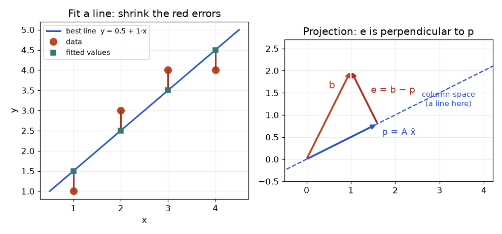
How to read it: the left panel is the row view (data points and a line). The right panel is the column view: the dashed line stands in for the column space (in the real problem it is a 2-dimensional plane inside R4, which we cannot draw). The shortest path from b to that space is the perpendicular segment e. Both panels show the same optimum.
Problem 7.6.1 Fit y = c + m·x to (1, 1), (2, 3), (3, 4), (4, 4) by the normal equations, by hand.
| Compute AᵀA | Entries are: 4 (count), Σx = 1 + 2 + 3 + 4 = 10, Σx² = 1 + 4 + 9 + 16 = 30. So AᵀA =
| ||||
|---|---|---|---|---|---|
| Compute Aᵀb | Σy = 1 + 3 + 4 + 4 = 12. Σxy = 1·1 + 2·3 + 3·4 + 4·4 = 1 + 6 + 12 + 16 = 35. So Aᵀb = (12, 35). | ||||
| Solve | [4, 10 | 12], [10, 30 | 35]. R2 ← R2 − 2.5·R1: (0, 30 − 25 | 35 − 30) = (0, 5 | 5), so m = 1. Then 4c + 10 = 12 so c = 0.5. | ||||
| Line | y = 0.5 + 1·x. | ||||
| Fitted and errors | p = A x̂ = (1.5, 2.5, 3.5, 4.5). e = b − p = (−0.5, 0.5, 0.5, −0.5). | ||||
| Perpendicular? | Aᵀe: first entry (sum of e) = −0.5 + 0.5 + 0.5 − 0.5 = 0. Second entry Σx·e = −0.5 + 1 + 1.5 − 2 = 0. Yes. | ||||
| Quality | SSE = 4 · 0.25 = 1. Total variation SST = Σ(y − 3)² = 4 + 0 + 1 + 1 = 6. R² = 1 − 1/6 = 0.8333. |
import numpy as np
x = np.array([1, 2, 3, 4.0])
y = np.array([1, 3, 4, 4.0])
A = np.column_stack([np.ones(4), x]) # columns: ones (intercept), x
xhat = np.linalg.solve(A.T @ A, A.T @ y) # normal equations
print("c, m =", xhat)
print("lstsq =", np.linalg.lstsq(A, y, rcond=None)[0])
print("polyfit (m, c) =", np.polyfit(x, y, 1))
p = A @ xhat
e = y - p
print("fitted", p, "errors", e)
print("A.T @ e =", np.round(A.T @ e, 12) + 0.0)
print("R^2 =", round(1 - e @ e / ((y - y.mean()) @ (y - y.mean())), 4))c, m = [0.5 1. ]
lstsq = [0.5 1. ]
polyfit (m, c) = [1. 0.5]
fitted [1.5 2.5 3.5 4.5] errors [-0.5 0.5 0.5 -0.5]
A.T @ e = [0. 0.]
R^2 = 0.8333Problem 7.6.2 (A 3 × 2 system with no exact solution.) Solve in the least-squares sense: x1 = 1, x2 = 1, x1 + x2 = 0.
| Setup | A =
| ||||||
|---|---|---|---|---|---|---|---|
| Normal equations | AᵀA =
| ||||||
| Solve | 2x1 + x2 = 1 and x1 + 2x2 = 1. Subtract: x1 − x2 = 0, so x1 = x2 = t and 3t = 1. x̂ = (1/3, 1/3). | ||||||
| Projection and error | p = Ax̂ = (1/3, 1/3, 2/3). e = b − p = (2/3, 2/3, −2/3). | ||||||
| Check | Aᵀe = (2/3 − 2/3, 2/3 − 2/3) = (0, 0). The compromise spreads the disagreement evenly: each equation is off by 2/3. |
np.linalg.lstsq (which returns the minimum-norm one) or drop or regularise the redundant column. A second warning: forming AᵀA squares the condition number, so on nearly collinear data a QR- or SVD-based solver (Section 7.8) is much more accurate.Underdetermined systems: the shortest solution
Now the other shape: fewer equations than unknowns, like one plane equation x + 2y + 2z = 9 in three unknowns. There are infinitely many solutions: (9, 0, 0), (1, 2, 2), (0, 0, 4.5), … Which one do you choose? A common, natural choice is the one with the smallest length ‖x‖. That solution points straight at the plane from the origin, along the plane's normal vector (1, 2, 2): the row of A. So x = w·(1, 2, 2), and plugging in: w(1 + 4 + 4) = 9 gives w = 1, x = (1, 2, 2), length √9 = 3. Compare (9, 0, 0) with length 9.
In general, the minimum-norm solution lies in the row space (any part in the null space only adds length without helping to satisfy the equations). Write x = Aᵀw, then A x = AAᵀw = b gives w = (AAᵀ)−1b:
Problem 7.6.3 Find the shortest solution of x + y = 2, y + z = 3.
| Setup | A =
| ||||||||
|---|---|---|---|---|---|---|---|---|---|
| AAᵀ |
| ||||||||
| w | w = (AAᵀ)−1b = (1/3)(2·2 − 3, −2 + 2·3) = (1/3, 4/3). | ||||||||
| x = Aᵀw | (w1, w1 + w2, w2) = (1/3, 5/3, 4/3). | ||||||||
| Check | x + y = 1/3 + 5/3 = 2. y + z = 5/3 + 4/3 = 3. Length² = (1 + 25 + 16)/9 = 42/9 ≈ 4.667. The solution (2, 0, 3) also works but has length² = 13, and (1, 1, 2) has length² = 6. The shortest is indeed (1/3, 5/3, 4/3). |
The pseudo-inverse
Both formulas are special cases of one object, the pseudo-inverse A+ (also called the Moore-Penrose inverse): for full column rank A+ = (AᵀA)−1Aᵀ, for full row rank A+ = Aᵀ(AAᵀ)−1, and in general it is computed from the SVD (Chapter 9). The rule is: x = A+b is the least-squares solution, and among all least-squares solutions it has the smallest norm.
import numpy as np
# overdetermined: the 3 x 2 system from Problem 7.6.2
A = np.array([[1, 0], [0, 1], [1, 1.0]])
b = np.array([1, 1, 0.0])
print("pinv solution :", np.round(np.linalg.pinv(A) @ b, 4))
# underdetermined: Problem 7.6.3
A2 = np.array([[1, 1, 0], [0, 1, 1.0]])
b2 = np.array([2, 3.0])
x = np.linalg.pinv(A2) @ b2
print("min-norm :", np.round(x, 4), " 5/3 =", round(5 / 3, 4))
print("same formula :", np.round(A2.T @ np.linalg.solve(A2 @ A2.T, b2), 4))
print("lstsq agrees :", np.allclose(np.linalg.lstsq(A2, b2, rcond=None)[0], x))
print("exact? :", np.allclose(A2 @ x, b2), " length^2 =", round(float(x @ x), 4))pinv solution : [0.3333 0.3333]
min-norm : [0.3333 1.6667 1.3333] 5/3 = 1.6667
same formula : [0.3333 1.6667 1.3333]
lstsq agrees : True
exact? : True length^2 = 4.6667Going deeper
Why minimise squares, and a second derivation. Squared error is smooth, so calculus works: f(x) = ‖b − Ax‖2 = xᵀAᵀAx − 2bᵀAx + bᵀb has gradient 2AᵀAx − 2Aᵀb. Setting it to zero gives the same normal equations (Chapter 12 develops this matrix calculus). The function is a bowl (AᵀA is positive semi-definite), so the point where the gradient vanishes is the global minimum, not just a local one. Statistically, squared error is the maximum-likelihood choice when the noise is Gaussian (Statistics document, Chapter 6).
Minimum norm in machine learning. Gradient descent started at zero on an underdetermined least-squares problem converges to the minimum-norm solution, because every gradient step lies in the row space. This "implicit bias" is part of why over-parameterised models can generalise, and it is why ridge regression, which adds λI to AᵀA, is a smooth cousin of the pseudo-inverse: x = (AᵀA + λI)−1Aᵀb stays well defined even when AᵀA is singular.
Interview angle. "Why is AᵀA invertible exactly when A has independent columns?" If AᵀAx = 0 then xᵀAᵀAx = ‖Ax‖2 = 0, so Ax = 0. Independent columns force x = 0, so the null space of AᵀA is trivial. Conversely, dependent columns give a nonzero x with Ax = 0, so AᵀAx = 0 too.
7.7 Data-Science Applications: Five Jobs for Ax = b
Application 1: linear regression from scratch
Problem 7.7.1 Generate 200 rows with two features and true coefficients (intercept 3, slope 2 for x1, slope −1.5 for x2), noise standard deviation 0.5. Recover the coefficients with the normal equations and with lstsq.
| Design matrix | X has 200 rows and 3 columns: ones, x1, x2. Unknown β = (β0, β1, β2). |
|---|---|
| Normal equations | (XᵀX) β̂ = Xᵀy. XᵀX is 3 × 3: tiny, however many rows there are. |
| Expect | β̂ close to (3, 2, −1.5), off by roughly the noise level divided by √200 ≈ 0.035 times a factor. |
import numpy as np
rng = np.random.default_rng(0)
n = 200
x1, x2 = rng.normal(size=n), rng.normal(size=n)
y = 3 + 2 * x1 - 1.5 * x2 + rng.normal(scale=0.5, size=n)
X = np.column_stack([np.ones(n), x1, x2])
beta_normal = np.linalg.solve(X.T @ X, X.T @ y)
beta_lstsq = np.linalg.lstsq(X, y, rcond=None)[0]
print("normal equations:", np.round(beta_normal, 3))
print("lstsq :", np.round(beta_lstsq, 3))
resid = y - X @ beta_lstsq
print("X.T @ resid ~ 0 :", np.allclose(X.T @ resid, 0, atol=1e-8))
print("residual sum :", round(float(resid.sum()), 10) + 0.0)normal equations: [ 3.005 2.034 -1.47 ]
lstsq : [ 3.005 2.034 -1.47 ]
X.T @ resid ~ 0 : True
residual sum : 0.0How to read it: both methods agree and land near (3, 2, −1.5). The residuals are perpendicular to all three columns (the check is the normal equation Xᵀe = 0), and their sum is zero because of the ones-column. This is what sklearn.linear_model.LinearRegression and statsmodels do inside (they use SVD or QR, Section 7.8).
Application 2: balancing a flow network
A warehouse has four junctions A, B, C, D. 100 parcels per minute enter at A and 100 leave at D. Five conveyor belts carry flows x1 (A to B), x2 (A to C), x3 (B to C), x4 (B to D), x5 (C to D). At every junction, in-flow equals out-flow:
Problem 7.7.2 How many independent equations are there, how many free flows, and what is the general solution?
| Dependency | Row A − row B − row C = (0, 0, 0, 1, 1), which is row D, and the right sides agree: 100 − 0 − 0 = 100. So the four equations carry only 3 independent facts: rank 3. (Of course: whatever enters must leave, so the last balance is automatic.) |
|---|---|
| Free variables | 5 unknowns − rank 3 = 2 free. Pick x1 = a and x3 = b. |
| Solve | x2 = 100 − a. x4 = x1 − x3 = a − b. x5 = x2 + x3 = 100 − a + b. Check D: (a − b) + (100 − a + b) = 100. Yes. |
| Vector form | x = (0, 100, 0, 0, 100) + a·(1, −1, 0, 1, −1) + b·(0, 0, 1, −1, 1). |
| Meaning | The two null-space vectors are circulations: shifting a belt load around a closed loop (A to B to D versus A to C to D, and B to C to D versus B to D) changes no junction balance. The nullity 2 equals the number of independent loops (belts − junctions + 1 = 5 − 4 + 1 = 2). |
import numpy as np
from scipy.linalg import null_space
A = np.array([[1, 1, 0, 0, 0],
[1, 0, -1, -1, 0],
[0, 1, 1, 0, -1],
[0, 0, 0, 1, 1]], dtype=float)
b = np.array([100, 0, 0, 100], dtype=float)
print("rank", np.linalg.matrix_rank(A), "nullity", null_space(A).shape[1])
print("consistent:", np.linalg.matrix_rank(np.column_stack([A, b])) == np.linalg.matrix_rank(A))
x = np.array([60, 40, 10, 50, 50.0]) # a = 60, b = 10
print("a=60, b=10 balances:", np.allclose(A @ x, b))
print("min-norm flow:", np.round(np.linalg.lstsq(A, b, rcond=None)[0], 2) + 0.0)rank 3 nullity 2
consistent: True
a=60, b=10 balances: True
min-norm flow: [50. 50. 0. 50. 50.]How to read it: rank 3 and nullity 2 match the hand count. The minimum-norm flow spreads the load as evenly as possible, a natural tie-breaker when physics gives you freedom; cost-based routing (a linear program, beyond this chapter) would pick another point on the same family.
Application 3: a mixing recipe
Problem 7.7.3 Three feeds: soy (40% protein, 10% fat), corn (10% protein, 5% fat) and oats (20% protein, 20% fat). Mix 100 kg that is exactly 25% protein and 11.5% fat. How many kg of each?
| Unknowns | s, c, o = kilograms of soy, corn, oats. |
|---|---|
| Equations | Weight: s + c + o = 100. Protein (in kg × percent): 40s + 10c + 20o = 2500, divide by 10: 4s + c + 2o = 250. Fat: 10s + 5c + 20o = 1150, divide by 5: 2s + c + 4o = 230. |
| Eliminate | (protein) − (weight): 3s + o = 150. (fat) − (weight): s + 3o = 130. |
| Solve | From the first, o = 150 − 3s. Then s + 450 − 9s = 130, so −8s = −320 and s = 40. o = 150 − 120 = 30. c = 100 − 40 − 30 = 30. |
| Check | Protein: 0.40·40 + 0.10·30 + 0.20·30 = 16 + 3 + 6 = 25 kg. Fat: 0.10·40 + 0.05·30 + 0.20·30 = 4 + 1.5 + 6 = 11.5 kg. Both correct. |
import numpy as np
A = np.array([[1, 1, 1], [4, 1, 2], [2, 1, 4]], dtype=float) # weight, protein/10, fat/5
b = np.array([100, 250, 230], dtype=float)
print("kg of soy, corn, oats:", np.linalg.solve(A, b))
print("det A =", round(float(np.linalg.det(A)), 6), "(nonzero, so the answer is unique)")kg of soy, corn, oats: [40. 30. 30.]
det A = -8.0 (nonzero, so the answer is unique)A warning that matters in production: if the solution had come out negative (for example −5 kg of oats), the mathematics would be right but the recipe impossible. Constraints like x ≥ 0 turn the problem into a linear program or non-negative least squares (scipy.optimize.nnls), which you will see in the optimisation chapter and in the Machine Learning document.
Application 4: prices from basket totals, and when they cannot be found
Problem 7.7.4 Three baskets: (2 apples, 1 bread, 1 cheese) cost 9.00; (1 apple, 3 bread, 1 cheese) cost 11.50; (1 apple, 1 bread, 2 cheese) cost 11.50. Find the three prices. Then a fourth analyst only has baskets 1, 2 and their combined purchase (3 apples, 4 bread, 2 cheese, total 20.50). Can that data find the prices?
| Equations | 2a + b + c = 9, a + 3b + c = 11.5, a + b + 2c = 11.5. |
|---|---|
| Eliminate | (eq 2) − (eq 3): 2b − c = 0, so c = 2b. (eq 1) − (eq 2): a − 2b = −2.5, so a = 2b − 2.5. |
| Solve | Into eq 3: (2b − 2.5) + b + 4b = 11.5, so 7b = 14, b = 2. Then c = 4 and a = 1.5. |
| Check | 2(1.5) + 2 + 4 = 9. 1.5 + 6 + 4 = 11.5. 1.5 + 2 + 8 = 11.5. Prices: apple 1.50, bread 2.00, cheese 4.00. |
| Fourth analyst | Row 3 = row 1 + row 2 (3, 4, 2) and 9 + 11.5 = 20.5, so the third equation is redundant: rank 2 with 3 unknowns. A free variable exists: the null vector solves 2a + b + c = 0 and a + 3b + c = 0, giving a = 2b, c = −5b: direction (2, 1, −5). Any prices (1.5, 2, 4) + t·(2, 1, −5) reproduce all three totals. With t = 0.1 you get (1.7, 2.1, 3.5), and 3.4 + 2.1 + 3.5 = 9. The data cannot tell them apart. |
import numpy as np
A = np.array([[2, 1, 1], [1, 3, 1], [1, 1, 2]], dtype=float)
b = np.array([9, 11.5, 11.5])
print("prices:", np.linalg.solve(A, b))
A4 = np.array([[2, 1, 1], [1, 3, 1], [3, 4, 2]], dtype=float) # row 3 = row 1 + row 2
b4 = np.array([9, 11.5, 20.5])
print("rank:", np.linalg.matrix_rank(A4))
for t in (0.0, 0.1):
prices = np.array([1.5, 2, 4]) + t * np.array([2, 1, -5])
print("t =", t, "prices", prices, "totals", A4 @ prices)prices: [1.5 2. 4. ]
rank: 2
t = 0.0 prices [1.5 2. 4. ] totals [ 9. 11.5 20.5]
t = 0.1 prices [1.7 2.1 3.5] totals [ 9. 11.5 20.5]Application 5: collinearity as rank deficiency
Perfect redundancy (rank deficiency) is the extreme; near redundancy is the common disease. Suppose x2 is x1 plus tiny noise, and y = 3x1 + noise. Then the true story is "total effect 3", but any split like (1, 2) or (5, −2) fits almost equally well. The columns are nearly dependent, so the matrix has a very small smallest singular value and a huge condition number (Section 7.8). The sum of the coefficients stays stable but the individual coefficients swing wildly when the noise changes.
import numpy as np
def fit(seed):
rng = np.random.default_rng(seed)
x1 = rng.normal(size=100)
x2 = x1 + rng.normal(scale=1e-3, size=100) # nearly a copy of x1
y = 3 * x1 + rng.normal(scale=0.1, size=100)
X = np.column_stack([x1, x2])
return X, np.linalg.lstsq(X, y, rcond=None)[0]
for seed in (1, 2, 3):
X, beta = fit(seed)
print("seed", seed, "coefficients", np.round(beta, 1), "sum", round(float(beta.sum()), 2))
print("log10 cond(X) =", round(float(np.log10(np.linalg.cond(X))), 1))
print("log10 cond(X^T X) =", round(float(np.log10(np.linalg.cond(X.T @ X))), 1))seed 1 coefficients [ 3.2 -0.2] sum 3.0
seed 2 coefficients [11. -8.] sum 3.02
seed 3 coefficients [-13.9 16.9] sum 3.01
log10 cond(X) = 3.3
log10 cond(X^T X) = 6.7How to read it: the individual coefficients differ greatly from seed to seed (about 3.2 and −0.2, then 11 and −8, then −14 and 17), yet their sum stays close to 3. This is rank deficiency in disguise: the data identify only the direction (1, 1), not the split. The last line shows that forming XᵀX doubles the number of digits you lose.
7.8 Numerical Health and the Expert Layer
Beginner: a system that is almost singular
Problem 7.8.1 Solve x + y = 2, x + 1.0001y = 2.0001. Then change the second right-hand side to 2.0002.
| First system | Subtract: 0.0001y = 0.0001, so y = 1 and x = 1. |
|---|---|
| Second system | Subtract: 0.0001y = 0.0002, so y = 2 and x = 0. |
| Meaning | An input change of 0.0001 (about 0.005% of 2.0001) moved the answer from (1, 1) to (0, 2): an output change of 100% in each coordinate. The two lines are almost parallel, so a small shift in one slides the crossing point far. |
Intermediate: the condition number
For the matrix above, the two stretch factors are about 2.0 and 0.00005, so cond ≈ 4 × 104: you would expect to lose about 4 digits. A singular matrix has σmin = 0, so cond = ∞.
Hilbert matrices, Hij = 1/(i + j − 1), are the classic ill-conditioned family (they arise when fitting polynomials by least squares in the monomial basis). Test: pick the exact answer x = (1, …, 1), set b = Hx, solve, and compare.
import numpy as np
from scipy.linalg import hilbert
A = np.array([[1, 1], [1, 1.0001]])
print("cond of the 2x2 example: %.1e" % np.linalg.cond(A))
print("x for b=(2, 2.0001):", np.round(np.linalg.solve(A, [2, 2.0001]), 6))
print("x for b=(2, 2.0002):", np.round(np.linalg.solve(A, [2, 2.0002]), 6))
for n in (4, 8, 12):
H = hilbert(n)
x_true = np.ones(n)
x_hat = np.linalg.solve(H, H @ x_true)
rel_err = np.linalg.norm(x_hat - x_true) / np.linalg.norm(x_true)
print("n =", n, " cond = %.1e" % np.linalg.cond(H), " relative error of solve: %.0e" % rel_err)cond of the 2x2 example: 4.0e+04
x for b=(2, 2.0001): [1. 1.]
x for b=(2, 2.0002): [0. 2.]
n = 4 cond = 1.6e+04 relative error of solve: 3e-14
n = 8 cond = 1.5e+10 relative error of solve: 8e-08
n = 12 cond = 1.7e+16 relative error of solve: 1e-01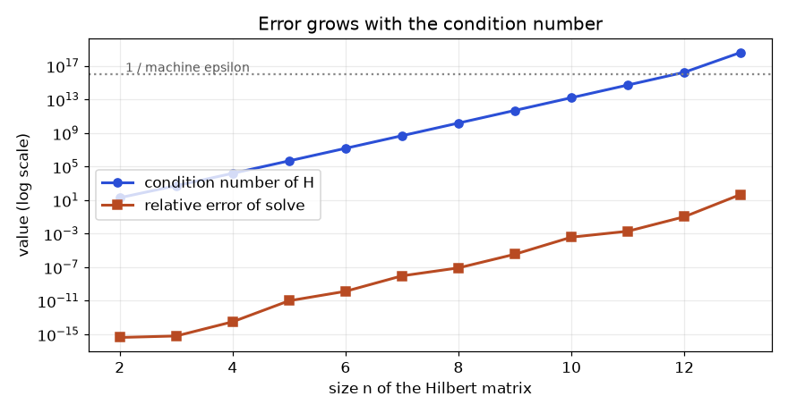
How to read it: the horizontal axis is the matrix size; both curves are on a log scale. The blue line (condition number) climbs until it reaches about 1016, the reciprocal of machine epsilon; past that point the computed matrix is numerically singular and the answer is meaningless. The orange line (error) rises with it, staying roughly (condition number) × 10−16. The pattern is the lesson: error ≈ cond × ε.
Why np.linalg.solve and not inv
- Cost: solving by LU costs about (2/3)n³ operations; forming A−1 costs about 2n³, three times more, and then you still must multiply.
- Accuracy: solve does one LU factorisation with pivoting and two triangular sweeps.
inv(A) @ baccumulates extra rounding in the inverse's entries, and its residual b − Ax is typically larger on hard problems. - Sparsity: A may be sparse while A−1 is almost always dense. Storing the inverse of a 100,000 × 100,000 sparse matrix is impossible; factoring the sparse matrix is cheap.
- Nothing to gain: you need the vector x, not the matrix A−1. Even for formulas like (XᵀX)−1Xᵀy, write
np.linalg.solve(X.T @ X, X.T @ y)or betterlstsq.
Going deeper: orthogonality of the subspaces
Part 2 of the fundamental theorem says the four subspaces pair into perpendicular complements. The proof is one line each. If Ax = 0, then every row of A dotted with x is zero, so x is perpendicular to every row, hence to every combination of rows (the row space). Together the row space (dimension r) and null space (dimension n − r) are perpendicular and add up to n dimensions, so every input vector splits uniquely as x = xrow + xnull. In the same way, if yᵀA = 0, y is perpendicular to every column, so the left null space is perpendicular to the column space, and every output b splits as b = p + e. That is least squares in one sentence: p is the column-space part of b (the part that can be solved exactly), and e is the left-null-space part (the unreachable part that is discarded).
Also: the shortest solution of Ax = b is the one with no null-space component, that is, the row-space part of any solution.
import numpy as np
from scipy.linalg import null_space
A = np.array([[1, 2, 1, 1], [2, 4, 3, 4], [1, 2, 0, -1]], dtype=float)
x = np.array([1, 1, 1, 1.0]) # one solution of A x = (5, 13, 2)
P_row = np.linalg.pinv(A) @ A # projection onto the row space
x_row = P_row @ x
x_null = x - x_row
print("row part :", np.round(x_row, 4))
print("null part:", np.round(x_null, 4))
print("same b :", np.allclose(A @ x_row, A @ x))
print("null part is in N(A):", np.allclose(A @ x_null, 0))
print("perpendicular:", np.isclose(x_row @ x_null, 0))
print("lengths: full %.4f, row part %.4f" % (np.linalg.norm(x), np.linalg.norm(x_row)))row part : [0.6154 1.2308 0.8462 1.0769]
null part: [ 0.3846 -0.2308 0.1538 -0.0769]
same b : True
null part is in N(A): True
perpendicular: True
lengths: full 2.0000, row part 1.9415Projection matrices
For A with independent columns, p = Ax̂ = A(AᵀA)−1Aᵀb = Pb, so the projection matrix is P = A(AᵀA)−1Aᵀ. Two properties characterise it:
- P2 = P (idempotent). Proof: P2 = A(AᵀA)−1AᵀA(AᵀA)−1Aᵀ = A(AᵀA)−1Aᵀ = P, since the middle AᵀA cancels one inverse. In words: projecting something already in the space changes nothing.
- Pᵀ = P (symmetric), because (AᵀA)−1 is symmetric. Symmetry is what makes it an orthogonal projection.
Its eigenvalues are only 0 and 1 (Chapter 8), and trace(P) = rank = r. The matrix I − P projects onto the left null space and picks out the residual: e = (I − P)b. In regression P is called the hat matrix (it puts the hat on y: ŷ = Py); its diagonal entries hii are the leverages, which measure how much each observation pulls the fit toward itself.
Problem 7.8.2 For the four-point regression (x = 1, 2, 3, 4) the leverage of point i is hii = 1/4 + (xi − 2.5)2/5. Find all four and verify that they sum to 2.
| x = 1 and x = 4 | (x − 2.5)2 = 2.25. h = 0.25 + 2.25/5 = 0.25 + 0.45 = 0.70. |
|---|---|
| x = 2 and x = 3 | (x − 2.5)2 = 0.25. h = 0.25 + 0.05 = 0.30. |
| Sum | 0.7 + 0.3 + 0.3 + 0.7 = 2.0 = rank of A (trace of P). The end points have more leverage, as expected. |
import numpy as np
A = np.column_stack([np.ones(4), [1, 2, 3, 4.0]])
P = A @ np.linalg.inv(A.T @ A) @ A.T
print("P @ P equals P :", np.allclose(P @ P, P))
print("P symmetric :", np.allclose(P, P.T))
print("leverages :", np.round(np.diag(P), 4), " trace =", round(float(np.trace(P)), 4))
y = np.array([1, 3, 4, 4.0])
print("hat y :", np.round(P @ y, 4))
print("residual :", np.round((np.eye(4) - P) @ y, 4))P @ P equals P : True
P symmetric : True
leverages : [0.7 0.3 0.3 0.7] trace = 2.0
hat y : [1.5 2.5 3.5 4.5]
residual : [-0.5 0.5 0.5 -0.5]QR for least squares (a preview)
Any A with independent columns factors as A = QR where Q has orthonormal columns (QᵀQ = I) and R is upper triangular (Chapter 9 explains it further; the Gram-Schmidt process builds it). Then the normal equations AᵀAx̂ = Aᵀb become RᵀQᵀQRx̂ = RᵀQᵀb, that is RᵀRx̂ = RᵀQᵀb, and cancelling Rᵀ leaves Rx̂ = Qᵀb: a triangular system, solved by back substitution. The key gain: cond(R) = cond(A), whereas cond(AᵀA) = cond(A)2. QR avoids squaring the condition number, which is why serious regression code uses it (or the SVD).
import numpy as np
from scipy.linalg import solve_triangular
A = np.column_stack([np.ones(4), [1, 2, 3, 4.0]])
y = np.array([1, 3, 4, 4.0])
Q, R = np.linalg.qr(A) # reduced QR: Q is 4x2, R is 2x2
x_qr = solve_triangular(R, Q.T @ y) # back substitution on R x = Q^T y
print("QR solution :", np.round(x_qr, 4))
print("Q^T Q = I :", np.allclose(Q.T @ Q, np.eye(2)))
print("cond(A) = %.3f, cond(A^T A) = %.3f, cond(A)^2 = %.3f" % (
np.linalg.cond(A), np.linalg.cond(A.T @ A), np.linalg.cond(A) ** 2))QR solution : [0.5 1. ]
Q^T Q = I : True
cond(A) = 7.469, cond(A^T A) = 55.782, cond(A)^2 = 55.782Iterative solvers: when elimination is too expensive
For a huge sparse system (a million unknowns from a physical simulation or a graph), LU fills in zeros and cubic cost is hopeless. Iterative methods start from a guess and improve it, using only matrix-vector products (cost proportional to the number of nonzeros per step).
Jacobi. Split A = D + R, where D is the diagonal. Rewrite Ax = b as Dx = b − Rx, and iterate xnew = D−1(b − Rxold). Each unknown is recomputed assuming the others are known. It converges when A is diagonally dominant (each diagonal entry larger in size than the sum of the other entries in its row).
Problem 7.8.3 Do two Jacobi steps from x = 0 for A =
| 4 | 1 | 0 |
| 1 | 5 | 1 |
| 0 | 1 | 3 |
| Update rule | x1 = (5 − x2)/4, x2 = (7 − x1 − x3)/5, x3 = (4 − x2)/3. |
|---|---|
| Step 1 | From (0, 0, 0): x1 = 5/4 = 1.25, x2 = 7/5 = 1.4, x3 = 4/3 ≈ 1.3333. |
| Step 2 | x1 = (5 − 1.4)/4 = 0.9. x2 = (7 − 1.25 − 1.3333)/5 = 4.4167/5 ≈ 0.8833. x3 = (4 − 1.4)/3 ≈ 0.8667. |
| Meaning | Error drops from distance √3 ≈ 1.73 (start) to about 0.58 after step 1 and about 0.20 after step 2. It is converging to (1, 1, 1). |
Gradient descent. For a symmetric positive definite A, solving Ax = b is the same as minimising f(x) = ½xᵀAx − bᵀx, whose gradient is Ax − b. Walk downhill: x ← x − α(Ax − b) with a small step α (for example 1/λmax). For least squares the gradient is Aᵀ(Ax − b), and this is, in one line, what training a linear model with gradient descent does (Chapter 14). The conjugate gradient method is a smarter version that solves an n × n SPD system in at most n steps and usually far fewer.
import numpy as np
A = np.array([[4, 1, 0], [1, 5, 1], [0, 1, 3.0]])
b = np.array([5, 7, 4.0])
x_true = np.ones(3)
D = np.diag(A)
R = A - np.diag(D)
x = np.zeros(3)
for k in range(1, 16):
x = (b - R @ x) / D # Jacobi step
if k in (1, 2, 15):
print("Jacobi step", k, np.round(x, 4), "error %.1e" % np.linalg.norm(x - x_true))
x = np.zeros(3)
alpha = 1 / np.linalg.eigvalsh(A).max() # safe step size
for k in range(1, 16):
x = x - alpha * (A @ x - b) # gradient step on 0.5 x^T A x - b^T x
print("Gradient step 15", np.round(x, 4), "error %.1e" % np.linalg.norm(x - x_true))Jacobi step 1 [1.25 1.4 1.3333] error 5.8e-01
Jacobi step 2 [0.9 0.8833 0.8667] error 2.0e-01
Jacobi step 15 [1. 1. 1.] error 1.7e-07
Gradient step 15 [0.9999 1.0001 0.9998] error 2.0e-04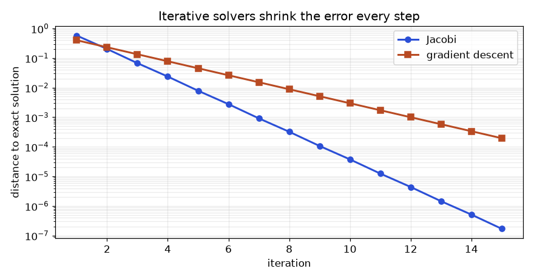
How to read it: a straight line on a log axis means the error shrinks by a fixed percentage every iteration (linear convergence). The slope depends on the matrix: well-conditioned matrices give steep lines, ill-conditioned ones nearly flat lines, which is the same enemy (the condition number) showing up again. Preconditioning, multiplying by an approximate inverse first, flattens the matrix and steepens the line.
Chapter recap
- Every linear system is Ax = b. Row picture: lines or planes intersect. Column picture: b as a combination of the columns of A.
- Gaussian elimination uses three row operations (swap, scale, add a multiple) that never change the solution set. Forward elimination gives a staircase (REF), then back substitution solves it. RREF clears above the pivots too.
- Three outcomes only: a row (0 … 0 | nonzero) means none; otherwise rank = n means exactly one; rank < n means infinitely many, with n − rank free variables. Never exactly two.
- Rank = number of pivots = number of independent rows = number of independent columns. Rank-nullity: rank + nullity = n.
- All solutions of Ax = b = one particular solution + any vector of the null space. Homogeneous Ax = 0 always has x = 0, and has more if rank < n.
- A subspace contains 0 and is closed under addition and scaling. The four fundamental subspaces: C(A) and N(Aᵀ) in Rm (dimensions r and m − r), C(Aᵀ) and N(A) in Rn (dimensions r and n − r). Column-space bases come from the pivot columns of the original A.
- A = LU stores elimination (L holds the multipliers, U the staircase). Factor once at cost about (2/3)n³, then each right-hand side costs about 2n². Pivoting (PA = LU) protects against zero and tiny pivots.
- If b is not in the column space, minimise ‖b − Ax‖²: the normal equations AᵀAx̂ = Aᵀb say the error is perpendicular to every column. Regression is projection of y onto the column space of X.
- Underdetermined systems have infinitely many solutions; the shortest is x = Aᵀ(AAᵀ)−1b. The pseudo-inverse A⁺ gives the minimum-norm least-squares solution in every case.
- Redundant or nearly redundant columns (collinearity) mean rank deficiency: the data cannot separate their effects, and coefficients become unstable.
- Numerically: error ≈ cond(A) × 10−16. Use
np.linalg.solveorlstsq, notinv. QR avoids squaring the condition number. Iterative solvers (Jacobi, gradient, conjugate gradient) scale to huge sparse systems.
| Formula / pattern | Meaning |
|---|---|
| Ax = x1a1 + … + xnan | Matrix-vector product as a combination of columns |
| rank A < rank [A | b] | No solution (b outside the column space) |
| rank A = n | At most one solution (columns independent, null space {0}) |
| x = xp + N(A) | General solution: particular plus null space |
| rank + nullity = n | Pivot columns plus free columns |
| A = LU, PA = LU | Elimination stored; reuse for many b; pivoting for stability |
| AᵀAx̂ = Aᵀb | Normal equations: least-squares solution |
| P = A(AᵀA)−1Aᵀ; P² = P = Pᵀ | Orthogonal projection onto the column space (hat matrix) |
| x = Aᵀ(AAᵀ)−1b | Minimum-norm solution of an underdetermined system |
| cond(A) = σmax/σmin | Error amplification: lose about log10(cond) digits |
| Rx̂ = Qᵀb (A = QR) | Stable least squares |
Practice set
Problem 7.9.1 Write 3x + 2y = 12, x − y = 1 as Ax = b and solve by elimination.
Answer: A = [[3, 2], [1, −1]], x = (x, y), b = (12, 1). Augmented: (3, 2 | 12), (1, −1 | 1). R2 ← R2 − (1/3)R1: (0, −1 − 2/3 | 1 − 4) = (0, −5/3 | −3). So y = (−3)/(−5/3) = 9/5 = 1.8. Then 3x + 3.6 = 12 gives x = 2.8. Check: 2.8 − 1.8 = 1. Yes.
Problem 7.9.2 Classify as no / one / infinitely many solutions, and say how many free variables: (a) x + 2y = 4, 3x + 6y = 12. (b) x + 2y = 4, 3x + 6y = 10. (c) x + 2y = 4, 3x + 5y = 10.
Answer: (a) R2 − 3R1 = (0, 0 | 0): consistent, rank 1 < 2, so infinitely many, 1 free variable (y = t, x = 4 − 2t). (b) R2 − 3R1 = (0, 0 | −2), i.e. 0 = −2: no solution. (c) R2 − 3R1 = (0, −1 | −2) so y = 2, x = 0: exactly one solution, rank 2, no free variables.
Problem 7.9.3 Solve by elimination and back substitution: x + y + z = 6, 2y + 5z = −4, 2x + 5y − z = 27.
Answer: Augmented rows (1, 1, 1 | 6), (0, 2, 5 | −4), (2, 5, −1 | 27). R3 ← R3 − 2R1: (0, 3, −3 | 15). R3 ← R3 − (3/2)R2: (0, 0, −3 − 7.5 | 15 + 6) = (0, 0, −10.5 | 21), so z = −2. Then 2y − 10 = −4 gives y = 3. Then x + 3 − 2 = 6 gives x = 5. Check eq 3: 10 + 15 + 2 = 27. Yes. Solution (5, 3, −2).
Problem 7.9.4 Give the complete solution of the single equation x + 2y − z = 3 in three unknowns. What are the rank and nullity?
Answer: One pivot (column 1), so rank 1, nullity 3 − 1 = 2, free variables y = s and z = t. Then x = 3 − 2s + t. Solution: (3, 0, 0) + s(−2, 1, 0) + t(1, 0, 1), a plane not through the origin. Check s = 1, t = 1: (2, 1, 1): 2 + 2 − 1 = 3. Yes.
Problem 7.9.5 A 4 × 6 matrix has rank 3. Give the dimensions of its four fundamental subspaces and say where each lives. Can Ax = b be solved for every b in R4? Is the solution unique when it exists?
Answer: Column space: dimension 3 in R4. Left null space: 4 − 3 = 1 in R4. Row space: dimension 3 in R6. Null space: 6 − 3 = 3 in R6. Not every b: the column space is only 3-dimensional inside R4, so b must satisfy one consistency condition (yᵀb = 0 for the left-null vector y). When solvable, the solution is not unique, because the null space has dimension 3 (three free variables).
Problem 7.9.6 Which are subspaces of R3? (a) {(x, y, z): x = z}. (b) {(x, y, z): x + y = 1}. (c) {(x, y, z): x = 0 or y = 0}.
Answer: (a) Yes: contains 0, and if x1 = z1 and x2 = z2 then x1 + x2 = z1 + z2, and c·x = c·z. A plane, basis (1, 0, 1), (0, 1, 0). (b) No: (0, 0, 0) gives 0 ≠ 1. (c) No: (1, 0, 0) and (0, 1, 0) are in it but their sum (1, 1, 0) has x ≠ 0 and y ≠ 0. A union of two planes is not closed under addition.
Problem 7.9.7 For A = [[1, 2, 0], [2, 4, 1], [3, 6, 1]] find the rank, a basis of the column space, and a basis of the null space.
Answer: R2 ← R2 − 2R1: (0, 0, 1). R3 ← R3 − 3R1: (0, 0, 1). R3 ← R3 − R2: (0, 0, 0). Pivots in columns 1 and 3, so rank 2. Column space basis (from the original A): (1, 2, 3) and (0, 1, 1). Free column 2: x2 = t. Row 1: x1 + 2t = 0, row 2: x3 = 0. Null space basis (−2, 1, 0). Check: A(−2, 1, 0) = (−2 + 2, −4 + 4, −6 + 6) = (0, 0, 0). Yes. Rank + nullity = 2 + 1 = 3.
Problem 7.9.8 Find the LU factorisation of A = [[1, 2], [3, 4]] (no pivoting) and use it to solve Ax = (5, 6).
Answer: Multiplier l21 = 3/1 = 3. R2 ← R2 − 3R1 = (0, 4 − 6) = (0, −2). So L = [[1, 0], [3, 1]], U = [[1, 2], [0, −2]]. Check: row 2 of LU = 3(1, 2) + (0, −2) = (3, 4). Yes. Forward: y1 = 5, 3·5 + y2 = 6 so y2 = −9. Back: −2x2 = −9 so x2 = 4.5. x1 + 2·4.5 = 5 so x1 = −4. Check: 3(−4) + 4(4.5) = −12 + 18 = 6. Yes. The determinant is 1 · (−2) = −2.
Problem 7.9.9 Fit the least-squares line y = c + m·x to the points (0, 1), (1, 2), (2, 2) using the normal equations. Report the residuals and verify they are perpendicular to the columns.
Answer: n = 3, Σx = 3, Σx² = 5, Σy = 5, Σxy = 0 + 2 + 4 = 6. Normal equations: 3c + 3m = 5, 3c + 5m = 6. Subtract: 2m = 1, so m = 0.5. Then 3c + 1.5 = 5, c = 7/6 ≈ 1.1667. Fitted values: 1.1667, 1.6667, 2.1667. Residuals: 1 − 1.1667 = −0.1667, 2 − 1.6667 = 0.3333, 2 − 2.1667 = −0.1667. Sum = 0. Σx·e = 0 + 0.3333 − 0.3333 = 0. Both zero, as projection demands.
Problem 7.9.10 Find the shortest solution of x + 2y + 2z = 18, and its length. Compare with the solution (18, 0, 0).
Answer: A = [[1, 2, 2]], AAᵀ = 1 + 4 + 4 = 9, w = 18/9 = 2, x = Aᵀw = (2, 4, 4). Check: 2 + 8 + 8 = 18. Length √(4 + 16 + 16) = 6. The solution (18, 0, 0) has length 18, three times longer. The shortest one is perpendicular to the plane, pointing along the normal (1, 2, 2).
Problem 7.9.11 A blend problem: soy has 30% protein and corn 10%. Mix 100 kg that is exactly 16% protein. How many kg of each? Write the system as Ax = b.
Answer: Unknowns s, c. s + c = 100 and 0.30s + 0.10c = 16, so A = [[1, 1], [0.3, 0.1]], b = (100, 16). From the first, c = 100 − s. Then 0.3s + 10 − 0.1s = 16, 0.2s = 6, s = 30, c = 70. Check: 9 + 7 = 16 kg protein. Yes. det A = 0.1 − 0.3 = −0.2 ≠ 0, so the answer is unique.
Problem 7.9.12 What does this code print? Explain each number.A = np.array([[1, 2], [2, 4]]); print(np.linalg.matrix_rank(A)); print(np.linalg.matrix_rank(np.column_stack([A, [1, 2]]))); print(np.linalg.matrix_rank(np.column_stack([A, [1, 0]])))
Answer: It prints 1, 1, 2 on separate lines. A has proportional rows, so rank 1. Appending b = (1, 2) leaves the rank at 1 (b is a multiple of the column (1, 2)), so Ax = b is solvable (infinitely many solutions). Appending b = (1, 0) raises the rank to 2, so b is outside the column space and there is no solution.
Problem 7.9.13 (Find the bug.) A colleague fits a model with columns [intercept, is_member, is_guest], where is_member + is_guest = 1 for every customer, using beta = np.linalg.inv(X.T @ X) @ X.T @ y. The result has coefficients near ±1015 or raises an error. Explain and fix.
Answer: The columns satisfy is_member + is_guest − intercept = 0, so X has rank 2 with 3 columns and XᵀX is singular: its inverse does not exist (or is computed from rounding noise, giving huge numbers). The coefficient vector is not unique: adding any multiple of (−1, 1, 1) leaves all predictions unchanged. Fix: drop one dummy column (and read the other as a difference from the baseline), or use np.linalg.lstsq(X, y, rcond=None) which returns the minimum-norm solution, or add ridge regularisation. Also avoid inv; solve instead.
Problem 7.9.14 (Derive.) Show that if P = A(AᵀA)−1Aᵀ then P2 = P and Pᵀ = P, and compute P for A = (1, 1)ᵀ (one column) and trace P.
Answer: P2 = A(AᵀA)−1(AᵀA)(AᵀA)−1Aᵀ = A(AᵀA)−1Aᵀ = P. Pᵀ = (Aᵀ)ᵀ((AᵀA)−1)ᵀAᵀ = A(AᵀA)−1Aᵀ = P because AᵀA is symmetric so its inverse is too. For A = (1, 1)ᵀ: AᵀA = 2, so P = (1/2)·[[1, 1], [1, 1]]. Check P2: (1/4)[[2, 2], [2, 2]] = P. Yes. Trace = 1/2 + 1/2 = 1 = rank. P projects any (u, v) onto the diagonal: P(u, v) = ((u + v)/2, (u + v)/2), the average, which is least squares for "fit a constant".
Problem 7.9.15 A matrix has condition number 1010. About how many correct digits can you expect from a double-precision solve? What if you instead solve the normal equations AᵀAx = Aᵀb, with A having condition number 1010?
Answer: About 16 − 10 = 6 digits for the direct solve. The normal equations have matrix AᵀA with condition number (1010)2 = 1020, larger than 1/ε ≈ 1016, so you would keep no reliable digits at all. That is why lstsq (SVD) or QR is used for ill-conditioned least squares instead of the normal equations.
Problem 7.9.16 (Interview.) Why do regression residuals sum to zero when the model has an intercept? Why does np.linalg.solve(A, b) beat np.linalg.inv(A) @ b?
Answer: Residuals e = y − Xβ̂ satisfy Xᵀe = 0 (they are perpendicular to every column of X). The intercept column is all ones, so the corresponding entry of Xᵀe is 1ᵀe = Σei = 0. On the second question: solve does one pivoted LU factorisation (about (2/3)n³ operations) and two triangular sweeps, whereas inv does about 2n³ operations and then a multiplication, with more rounding error, and it destroys sparsity (the inverse is dense even when A is sparse). You need the vector x, not the matrix A−1.
Prompt pack
You are my patient, practical professor. I am a working professional moving into data roles. Teach me Chapter 7 topic "linear systems and vector spaces": Ax = b as rows and as columns, Gaussian elimination with augmented matrices, pivots, RREF, the three outcomes (none, one, infinitely many), free variables, rank and nullity, the four fundamental subspaces, LU decomposition, and least squares via the normal equations. Start with a 3-equation, 3-unknown system and let me do each row operation myself. Ask one check question after each step and wait for my answer. After each concept, give me a 4-point regression example to compute by hand, then show the NumPy check. End with 6 graded exercises, mark my answers, and list my weak spots.
Act as a careful reviewer of my linear algebra work. I will paste my hand solution (elimination steps, a basis for a column space or null space, an LU factorisation, or a least-squares fit) and my NumPy code. For each step: (1) check the arithmetic row by row, (2) check that I applied every row operation to the right-hand side as well, (3) check that I took column-space bases from the original matrix and not the RREF, (4) check rank-nullity and the solution count, (5) check the code with a residual test and np.linalg.matrix_rank, and flag any use of inv where solve or lstsq should be used. Show corrections with the exact numbers, and explain the reason for each mistake in two sentences.
Run a mock data-science interview on linear systems and vector spaces. Ask me one question at a time, from easy to hard: how many solutions can Ax = b have, rank versus consistency, null space and column space, derive the normal equations by projection, why regression residuals are orthogonal to the features, collinearity and rank deficiency, condition number and why solve beats inv, QR versus normal equations, and minimum-norm solutions. After each of my answers, score it from 1 to 5, show a model answer with a small numeric example, and give a follow-up that probes deeper. After 10 questions, summarise my strengths and a 3-day revision plan.
You run the data team at a streaming service. Every night a script computes how likely a customer is to be "active", "dormant" or "lost" tomorrow, given today. After a month someone asks the strange question: "If nothing changes, where does this end up? Will we have 30 percent lost customers, or 60?" You could simulate 365 nights and look. But there is a shortcut hidden in the transition table itself, and the shortcut has a name: an eigenvector. The same idea ranks web pages (Google's PageRank), finds the main directions of spread in a data set (PCA), tells you whether a training loop will settle down or blow up, and explains why very deep networks have vanishing or exploding gradients.
Here is the core picture. A matrix acts on a plane by stretching, shearing and rotating it. Almost every arrow changes direction. But for most square matrices a few special arrows do not turn: the matrix only makes them longer or shorter (or flips them). Those arrows are the eigenvectors, and the stretch factors are the eigenvalues. If you describe the matrix in terms of its special arrows, a complicated action becomes a list of simple stretches. Repeating the matrix 100 times, which looks hopeless, becomes raising a few numbers to the 100th power.
After this chapter you will be able to find eigenvalues and eigenvectors by hand for 2×2 and 3×3 matrices (including repeated and complex cases), diagonalize a matrix and compute its powers, use the spectral theorem for symmetric matrices, test whether a matrix is positive definite, compute the long-run behaviour of a Markov chain, compute PageRank by hand and by code, run power iteration, judge stability of a dynamical system, read the curvature of a function from its Hessian, and explain what a covariance matrix's eigenvalues mean. You will use Chapters 5 to 7 (vectors, matrices, linear systems, determinants and null spaces). Chapter 9 builds on this one: SVD and PCA.
8.1 The Idea: Directions a Matrix Does Not Turn
Beginner: the smallest example
Take the matrix A below and two vectors. Remember from Chapter 6 that A·v means: new x = 4·x + 1·y, new y = 2·x + 3·y.
| 4 | 1 |
| 2 | 3 |
Try the vector v1 = (1, 1). Then A v1 = (4·1 + 1·1, 2·1 + 3·1) = (5, 5) = 5·(1, 1). The arrow did not turn at all: it is the same arrow made 5 times longer. Now try v2 = (1, −2). Then A v2 = (4·1 + 1·(−2), 2·1 + 3·(−2)) = (2, −4) = 2·(1, −2). Again the same direction, now 2 times longer. A random vector such as (1, 0) goes to (4, 2), which points somewhere else. So (1, 1) and (1, −2) are special.
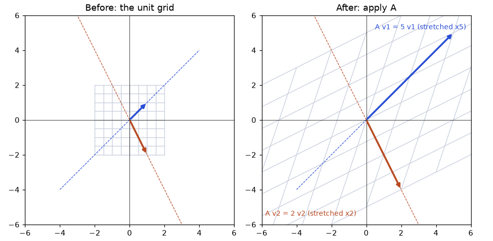
How to read it: the left panel is the input grid and the two special arrows. In the right panel every grid line has tilted, except that the dashed lines through the arrows still carry the arrows. The blue arrow now reaches (5, 5) and the orange arrow reaches (2, −4). Look for the two directions where the picture simply grows.
Intermediate: the definition
Three small facts you will use constantly:
- If v is an eigenvector, so is any non-zero multiple c·v, because A(cv) = c(Av) = c(λv) = λ(cv). So an eigenvector is really a direction, and we often pick a convenient length (such as length 1).
- λ can be negative (the arrow flips and stretches), zero (the arrow is crushed to 0, so A is not invertible) or even complex (no real arrow survives, as in a rotation; see 8.2).
- For a given λ, all eigenvectors together with the zero vector form a subspace, the eigenspace of λ. It is the null space of (A − λI), a notion from Chapter 7.
Problem 8.1.1 Is v = (2, 1) an eigenvector of B = [[3, 0], [1, 1]] (rows (3, 0) and (1, 1))? If so, what is its eigenvalue?
| Setup | B has first row (3, 0) and second row (1, 1). v = (2, 1). |
|---|---|
| Multiply | B v = (3·2 + 0·1, 1·2 + 1·1) = (6, 3) |
| Compare | (6, 3) = 3·(2, 1), so B v = 3 v |
| Answer | Yes: v is an eigenvector with eigenvalue λ = 3. |
Problem 8.1.2 Is v = (1, 2) an eigenvector of A = [[4, 1], [2, 3]]?
| Multiply | A v = (4·1 + 1·2, 2·1 + 3·2) = (6, 8) |
|---|---|
| Compare | Is (6, 8) = λ·(1, 2)? The first coordinate says λ = 6, the second says λ = 4. No single λ works. |
| Answer | No. The vector turned (from slope 2 to slope 8/6 = 1.33), so it is not an eigenvector. |
Now the same check in code. np.linalg.eig returns all eigenvalues and a matrix whose columns are eigenvectors, scaled to length 1. (Some NumPy versions return complex numbers even when every imaginary part is 0; np.real_if_close turns them back into ordinary real numbers when that is safe.)
import numpy as np
A = np.array([[4, 1], [2, 3]])
vals, vecs = np.linalg.eig(A)
vals, vecs = np.real_if_close(vals), np.real_if_close(vecs) # drop zero imaginary parts
print(np.round(vals, 4))
print(np.round(vecs, 4))
for i in range(2):
v = vecs[:, i]
print(np.allclose(A @ v, vals[i] * v))
print(A @ np.array([1, 1]), A @ np.array([1, -2]))[5. 2.]
[[ 0.7071 -0.4472]
[ 0.7071 0.8944]]
True
True
[5 5] [ 2 -4]The columns are (1, 1)/√2 = (0.7071, 0.7071) and (1, −2)/√5 = (0.4472, −0.8944), up to sign: the same directions we found by hand, with length 1. Numerical libraries may return the vectors with the opposite sign or a different order, and both are fine.
Why it matters
Going deeper
Eigenvectors only make sense for square matrices, because A v must live in the same space as v for "same direction" to mean anything. For a rectangular data matrix (say 1,000 customers by 5 features) you cannot take eigenvalues of the matrix itself. You first form a square matrix such as XᵀX (5×5) and take its eigenvalues, or use the SVD (Chapter 9), which generalizes the idea to any shape. Also note that eigenvalues depend only on the linear map, not on the basis you write it in: if you rotate or rescale your coordinate system, the matrix entries change but the eigenvalues do not. That is why they are called invariants, and why trace and determinant (8.2) can be read from them.
8.2 Finding Eigenvalues and Eigenvectors by Hand
Beginner: the one idea behind the method
The recipe has two stages. Stage 1: solve det(A − λI) = 0 for λ. It is a polynomial equation in λ, called the characteristic equation. Stage 2: for each λ found, solve the linear system (A − λI)v = 0 by row reduction (Chapter 7) to get its eigenvectors.
For a 2×2 matrix with entries a, b, c, d (first row a, b; second row c, d), subtracting λ from the diagonal gives determinant (a − λ)(d − λ) − bc. Expanding:
Here trace(A) = a + d is the sum of the diagonal entries. So for a 2×2 matrix you never need to expand anything: write λ² − (trace)λ + (determinant) = 0 and solve it with the quadratic formula (Chapter 1).
Intermediate: worked examples
Problem 8.2.1 Find the eigenvalues and eigenvectors of A = [[4, 1], [2, 3]] (our matrix from 8.1).
| Trace and det | trace = 4 + 3 = 7. det = 4·3 − 1·2 = 10. |
|---|---|
| Characteristic equation | λ² − 7λ + 10 = 0, which factors as (λ − 5)(λ − 2) = 0. So λ = 5 or λ = 2. |
| Eigenvector for λ = 5 | A − 5I = [[−1, 1], [2, −2]]. Row 1 says −x + y = 0, so y = x. Row 2 is −2 times row 1 (no new information). Take x = 1: v = (1, 1). |
| Eigenvector for λ = 2 | A − 2I = [[2, 1], [2, 1]]. Row 1 says 2x + y = 0, so y = −2x. Take x = 1: v = (1, −2). |
| Check | A(1, 1) = (5, 5) = 5·(1, 1). A(1, −2) = (2, −4) = 2·(1, −2). Both match 8.1. |
Notice that both rows of A − λI are multiples of each other. That is not luck. It must happen, because det(A − λI) = 0 means the rows are dependent. If your two rows are not multiples, you have made an arithmetic slip in λ.
Problem 8.2.2 Find the eigenvalues and eigenvectors of C = [[1, 2], [3, 0]].
| Trace and det | trace = 1 + 0 = 1. det = 1·0 − 2·3 = −6. |
|---|---|
| Equation | λ² − λ − 6 = 0, so (λ − 3)(λ + 2) = 0. λ = 3 or λ = −2. |
| λ = 3 | C − 3I = [[−2, 2], [3, −3]]. Row 1: −2x + 2y = 0, so y = x. v = (1, 1). |
| λ = −2 | C + 2I = [[3, 2], [3, 2]]. Row 1: 3x + 2y = 0, so y = −3x/2. Take x = 2: v = (2, −3). |
| Check | C(1, 1) = (3, 3) = 3·(1, 1). C(2, −3) = (1·2 + 2·(−3), 3·2 + 0·(−3)) = (−4, 6) = −2·(2, −3). Correct. |
A negative eigenvalue (here −2) means the arrow flips to point the opposite way, and is also stretched by 2.
Problem 8.2.3 (3×3) Find the eigenvalues and eigenvectors of S = [[4, 1, 0], [1, 3, 1], [0, 1, 4]].
| Set up | S − λI has rows (4 − λ, 1, 0), (1, 3 − λ, 1), (0, 1, 4 − λ). |
|---|---|
| Expand along row 1 | det = (4 − λ)·[(3 − λ)(4 − λ) − 1·1] − 1·[1·(4 − λ) − 1·0] + 0 = (4 − λ)[(3 − λ)(4 − λ) − 1] − (4 − λ) |
| Factor | = (4 − λ)·[(3 − λ)(4 − λ) − 1 − 1] = (4 − λ)(λ² − 7λ + 12 − 2) = (4 − λ)(λ² − 7λ + 10) = (4 − λ)(λ − 5)(λ − 2) |
| Eigenvalues | λ = 4, 5, 2. |
| Trace and det check | trace = 4 + 3 + 4 = 11 = 4 + 5 + 2. det(S) = 4(12 − 1) − 1(4 − 0) + 0 = 44 − 4 = 40 = 4·5·2. Both agree. |
| λ = 4 | S − 4I = [[0, 1, 0], [1, −1, 1], [0, 1, 0]]. Row 1: y = 0. Row 2: x − y + z = 0, so z = −x. v = (1, 0, −1). |
| λ = 5 | S − 5I = [[−1, 1, 0], [1, −2, 1], [0, 1, −1]]. Row 1: y = x. Row 3: z = y. v = (1, 1, 1). Row 2: 1 − 2 + 1 = 0 holds. |
| λ = 2 | S − 2I = [[2, 1, 0], [1, 1, 1], [0, 1, 2]]. Row 1: y = −2x. Row 3: 2z = −y = 2x, so z = x. v = (1, −2, 1). Row 2: 1 − 2 + 1 = 0 holds. |
Look at the three eigenvectors: (1, 0, −1), (1, 1, 1), (1, −2, 1). Their pairwise dot products are (1, 0, −1)·(1, 1, 1) = 1 + 0 − 1 = 0, (1, 0, −1)·(1, −2, 1) = 1 + 0 − 1 = 0 and (1, 1, 1)·(1, −2, 1) = 1 − 2 + 1 = 0. They are mutually perpendicular. That is not an accident: S is symmetric. See 8.4.
Problem 8.2.4 (repeated eigenvalue) Find the eigenvalues and eigenvectors of R = [[3, 1, 1], [1, 3, 1], [1, 1, 3]].
| Idea | Write a = 3 − λ. Then R − λI has a on the diagonal and 1 everywhere else. |
|---|---|
| Determinant | det = a(a·a − 1) − 1(a − 1) + 1(1 − a) = a³ − a − a + 1 + 1 − a = a³ − 3a + 2 |
| Factor | a³ − 3a + 2 = (a − 1)²(a + 2) (check: (a² − 2a + 1)(a + 2) = a³ + 2a² − 2a² − 4a + a + 2 = a³ − 3a + 2). With a = 3 − λ: (2 − λ)²(5 − λ). |
| Eigenvalues | λ = 5 (once) and λ = 2 (twice, "algebraic multiplicity 2"). Check: trace 9 = 5 + 2 + 2, det = 27 + 1 + 1 − 3 − 3 − 3 = 20 = 5·2·2. |
| λ = 5 | R − 5I = [[−2, 1, 1], [1, −2, 1], [1, 1, −2]]. The rows add to zero, and v = (1, 1, 1) works: −2 + 1 + 1 = 0 in each row. |
| λ = 2 | R − 2I = every entry 1. The only equation is x + y + z = 0, which has two free variables. A basis is (1, −1, 0) and (1, 0, −1). Any combination, for example (1, 1, −2), is also an eigenvector with λ = 2. |
The repeated eigenvalue 2 has a whole plane of eigenvectors (dimension 2), so there is no shortage of eigenvectors. Not every repeated eigenvalue is this generous; see 8.3 for the matrix that is stingy.
Problem 8.2.5 (complex eigenvalues) Find the eigenvalues and eigenvectors of the 90° rotation J = [[0, −1], [1, 0]], and of K = [[1, −2], [2, 1]].
| J: equation | trace = 0, det = 0·0 − (−1)(1) = 1. So λ² + 1 = 0, giving λ = i or λ = −i, where i² = −1. |
|---|---|
| J: meaning | Rotating by 90° sends every real arrow to a perpendicular one, so no real arrow keeps its direction. That is why no real eigenvalue exists. |
| J: eigenvector for i | J − iI = [[−i, −1], [1, −i]]. Row 1: −i·x − y = 0, so y = −i·x. Take x = 1: v = (1, −i). Check: J v = (0·1 + (−1)(−i), 1·1 + 0·(���i)) = (i, 1) and i·v = (i, i·(−i)) = (i, 1). Equal. |
| J: other eigenvector | For −i, the complex conjugate: v = (1, i). |
| K: equation | trace = 2, det = 1·1 − (−2)(2) = 5. λ² − 2λ + 5 = 0. Quadratic formula: λ = (2 ± √(4 − 20))/2 = (2 ± √(−16))/2 = 1 ± 2i. |
| K: size | |1 + 2i| = √(1 + 4) = √5 ≈ 2.236. K rotates by the angle atan2(2, 1) ≈ 63.4° and scales by √5 on every step. |
A real matrix has real coefficients in its characteristic polynomial, so complex roots come in conjugate pairs a ± bi. The modulus √(a² + b²) tells you the scaling per step, and the angle tells you the rotation per step. Complex eigenvalues are the signature of rotation and oscillation. In a dynamical system (8.6) they produce spirals.
Shortcuts worth knowing
- Triangular matrices (all zeros above or below the diagonal): the eigenvalues are the diagonal entries. For [[2, 7, 1], [0, 5, 9], [0, 0, −3]] the eigenvalues are 2, 5 and −3, because the determinant of a triangular matrix is the product of its diagonal and A − λI stays triangular.
- Trace and determinant: the sum of eigenvalues is the trace, and their product is the determinant. Use them to check your answers, and to finish a 2×2 or 3×3 problem when you have found all but one eigenvalue.
- Shifts and powers: if A v = λ v, then (A + cI) v = (λ + c) v, A² v = λ² v, and if A is invertible, A−1 v = (1/λ) v. Same eigenvectors, transformed eigenvalues. This is why ridge regression, which uses XᵀX + αI, makes every eigenvalue at least α and the matrix safely invertible.
import numpy as np
A = np.array([[4, 1], [2, 3]])
print(np.poly(A)) # coefficients of lambda^2 - 7 lambda + 10
print(np.roots(np.poly(A)))
S = np.array([[4, 1, 0], [1, 3, 1], [0, 1, 4]])
print(np.round(np.sort(np.linalg.eigvals(S).real), 4))
print(np.trace(S), np.round(np.linalg.det(S), 4))
R = np.array([[3, 1, 1], [1, 3, 1], [1, 1, 3]])
print(np.round(np.sort(np.linalg.eigvals(R).real), 4))
J = np.array([[0, -1], [1, 0]])
print(np.linalg.eigvals(J))
K = np.array([[1, -2], [2, 1]])
w = np.linalg.eigvals(K)
print(w, np.round(np.abs(w), 4), np.round(np.degrees(np.angle(w)), 2))
print(np.real_if_close(np.linalg.eigvals(np.linalg.inv(A)))) # 1/5 and 1/2[ 1. -7. 10.]
[5. 2.]
[2. 4. 5.]
11 40.0
[2. 2. 5.]
[0.+1.j 0.-1.j]
[1.+2.j 1.-2.j] [2.2361 2.2361] [ 63.43 -63.43]
[0.2 0.5]All the hand answers are confirmed: eigenvalues 5 and 2 for A; 2, 4, 5 for S (trace 11, determinant 40); 2, 2, 5 for R; ±i for the rotation; 1 ± 2i with modulus √5 and angle ±63.43° for K. The inverse of A has eigenvalues 1/5 and 1/2, as the shortcut said.
Going deeper
Why trace is the sum and determinant is the product. A degree-n polynomial with roots λ1, …, λn can be written det(A − λI) = (λ1 − λ)(λ2 − λ)⋯(λn − λ) (over the complex numbers every polynomial factors completely). Put λ = 0 on both sides: det(A) = λ1λ2⋯λn. For the trace, compare the coefficient of λn−1. On the right side it is (−1)n−1(λ1 + ⋯ + λn). On the left side, expanding the determinant, the only terms that can contain λn−1 come from the product of the diagonal entries (a11 − λ)⋯(ann − λ), because any term that uses an off-diagonal entry misses at least two diagonal factors and so has degree at most n − 2. The coefficient of λn−1 in the diagonal product is (−1)n−1(a11 + ⋯ + ann). Equating gives trace = sum of eigenvalues. For n = 2 you can see the whole proof in λ² − (a + d)λ + (ad − bc).
Numerics. Nobody finds eigenvalues of large matrices by expanding determinants. By the Abel–Ruffini theorem there is no formula using roots for polynomials of degree 5 or more, and the characteristic polynomial's coefficients are extremely sensitive to rounding. Libraries (LAPACK, behind NumPy) use iterative methods such as the QR algorithm. Treat "characteristic polynomial" as a hand-calculation and theory tool.
Interview angle. Typical question: "A 2×2 matrix has trace 5 and determinant 6. What are its eigenvalues?" Answer: λ² − 5λ + 6 = 0, so 2 and 3, with no need to know the matrix. Another: "Can a real matrix have complex eigenvalues?" Yes, in conjugate pairs; rotations are the example.
8.3 Diagonalization, Matrix Powers and Fibonacci
Beginner: speaking the matrix's own language
Put the eigenvectors of A side by side as the columns of a matrix P, and put the eigenvalues, in the same order, on the diagonal of D. For our running example (eigenvalue 5 with v = (1, 1), eigenvalue 2 with v = (1, −2)):
| 1 | 1 |
| 1 | −2 |
| 5 | 0 |
| 0 | 2 |
Then A P = P D, because column j of A P is A times eigenvector j, which is λj times eigenvector j, which is column j of P D. If P is invertible, multiply by P−1 on the right:
Intermediate: definition, conditions, worked examples
A matrix A (n × n) is diagonalizable if it has n linearly independent eigenvectors. Two useful facts: (1) if A has n distinct eigenvalues, it is diagonalizable, because eigenvectors for different eigenvalues are always independent; (2) with repeated eigenvalues it may or may not be, depending on whether each repeated eigenvalue supplies enough independent eigenvectors.
Problem 8.3.1 Verify A = P D P−1 for A = [[4, 1], [2, 3]] with the P and D above.
| Inverse of P | det P = 1·(−2) − 1·1 = −3. For a 2×2 matrix the inverse is (1/det)·[[d, −b], [−c, a]], so P−1 = (1/−3)·[[−2, −1], [−1, 1]] = [[2/3, 1/3], [1/3, −1/3]]. |
|---|---|
| P D | Multiply column 1 of P by 5 and column 2 by 2: [[5, 2], [5, −4]]. |
| (P D) P−1, row 1 | 5·(2/3) + 2·(1/3) = 12/3 = 4 and 5·(1/3) + 2·(−1/3) = 3/3 = 1. |
| Row 2 | 5·(2/3) + (−4)·(1/3) = 6/3 = 2 and 5·(1/3) + (−4)(−1/3) = 9/3 = 3. |
| Result | [[4, 1], [2, 3]] = A. It works. |
Powers. Because A² = (PDP−1)(PDP−1) = P D (P−1P) D P−1 = P D² P−1, the middle pairs cancel, and in general Ak = P Dk P−1. Powering a diagonal matrix means powering each diagonal entry: Dk = diag(5k, 2k).
Problem 8.3.2 Find a formula for Ak, and use it to compute A2 and A10.
| P Dk | Scale the columns of P by 5k and 2k: [[5k, 2k], [5k, −2·2k]]. |
|---|---|
| Multiply by P−1 | Row 1: (5k·2/3 + 2k/3, 5k/3 − 2k/3). Row 2: (5k·2/3 − 2·2k/3, 5k/3 + 2·2k/3). |
| Formula | Ak = (1/3)·[[2·5k + 2k, 5k − 2k], [2·5k − 2·2k, 5k + 2·2k]] |
| Check k = 1 | (1/3)·[[12, 3], [6, 9]] = [[4, 1], [2, 3]] = A. |
| k = 2 | (1/3)·[[50 + 4, 25 − 4], [50 − 8, 25 + 8]] = (1/3)·[[54, 21], [42, 33]] = [[18, 7], [14, 11]]. Direct multiplication A·A: (16 + 2, 4 + 3; 8 + 6, 2 + 9) = [[18, 7], [14, 11]]. Same. |
| k = 10 | 510 = 9,765,625 and 210 = 1,024. Entry (1,1): (19,531,250 + 1,024)/3 = 6,510,758. Entry (1,2): (9,765,625 − 1,024)/3 = 3,254,867. Entry (2,1): 2·3,254,867 = 6,509,734. Entry (2,2): (9,765,625 + 2,048)/3 = 3,255,891. |
import numpy as np
A = np.array([[4, 1], [2, 3]])
vals, P = np.linalg.eig(A)
vals, P = vals.real, P.real
D = np.diag(vals)
print(np.allclose(P @ D @ np.linalg.inv(P), A))
k = 10
Ak = P @ np.diag(vals ** k) @ np.linalg.inv(P)
print(np.round(Ak).astype(int))
print(np.linalg.matrix_power(A, k))True
[[6510758 3254867]
[6509734 3255891]]
[[6510758 3254867]
[6509734 3255891]]Notice what dominates: 510 is about 9,000 times larger than 210. For large k, Ak is essentially 5k·(1/3)·[[2, 1], [2, 1]]: the largest eigenvalue takes over. Remember this; it is the heart of power iteration, Markov chains and PageRank.
Fibonacci: a sequence from a matrix
The Fibonacci numbers 0, 1, 1, 2, 3, 5, 8, 13, … obey Fn+1 = Fn + Fn−1. Package two consecutive terms as a vector and note how one step acts:
| Fn+1 |
| Fn |
| 1 | 1 |
| 1 | 0 |
| Fn |
| Fn−1 |
Problem 8.3.3 Use the eigenvalues of M = [[1, 1], [1, 0]] to derive a closed form for Fn, and use it to compute F10.
| Equation | trace = 1, det = −1. λ² − λ − 1 = 0, so λ = (1 ± √5)/2. Call them φ = (1 + √5)/2 ≈ 1.618034 (the golden ratio) and ψ = (1 − √5)/2 ≈ −0.618034. |
|---|---|
| Eigenvectors | Try v = (λ, 1). M v = (λ + 1, λ). Since λ² = λ + 1, this equals λ·(λ, 1). So the eigenvectors are (φ, 1) and (ψ, 1). |
| Start vector | (F1, F0) = (1, 0) = c1(φ, 1) + c2(ψ, 1). Second coordinate: c1 + c2 = 0. First: c1φ + c2ψ = c1(φ − ψ) = c1√5 = 1. So c1 = 1/√5 and c2 = −1/√5. |
| Apply M n times | (Fn+1, Fn) = c1φn(φ, 1) + c2ψn(ψ, 1). Second coordinate: Fn = (φn − ψn)/√5 (Binet's formula). |
| F10 | φ10 ≈ 122.99187, ψ10 ≈ 0.00813, difference ≈ 122.98374, divided by √5 ≈ 2.236068 gives 55.0000. Indeed F10 = 55. |
| Growth | |ψ| < 1, so ψn vanishes, and Fn+1/Fn → φ. The dominant eigenvalue is the growth rate. |
import numpy as np
M = np.array([[1, 1], [1, 0]])
vals, vecs = np.linalg.eig(M)
vals = vals.real
print(np.round(vals, 6))
phi, psi = vals[0], vals[1]
def fib(n):
return (phi ** n - psi ** n) / np.sqrt(5)
print(round(fib(10)), round(fib(30)))
print(np.linalg.matrix_power(M, 30))
ratio = [round(float(fib(n + 1) / fib(n)), 6) for n in (5, 10, 20)]
print(ratio)[ 1.618034 -0.618034]
55 832040
[[1346269 832040]
[ 832040 514229]]
[1.6, 1.618182, 1.618034]M30 has F31 = 1,346,269 in the corner, F30 = 832,040 off the diagonal and F29 = 514,229, and the formula reproduces F30 = 832,040. The same trick solves any linear recurrence, which matters whenever a model has "next value = fixed combination of recent values" (autoregressive models in time series, see the Statistics document; recurrent networks, 8.8).
When diagonalization fails: defective matrices
Take N = [[2, 1], [0, 2]], a shear. It is triangular, so the eigenvalue 2 appears twice. Solve (N − 2I)v = 0: N − 2I = [[0, 1], [0, 0]], whose only equation is y = 0. So v = (x, 0): the eigenvectors fill only a line (1, 0), not a plane. We need two independent eigenvectors and have one. N is defective and cannot be written as PDP−1. Compare the matrix R from 8.2, which also had a repeated eigenvalue but supplied a whole plane of eigenvectors.
The best you can do is the Jordan form, a diagonal matrix with some 1s just above the diagonal. Its powers contain an extra factor k: Nk = [[2k, k·2k−1], [0, 2k]]. Check k = 2: N·N = [[4, 2 + 2], [0, 4]] = [[4, 4], [0, 4]], and the formula gives k·2k−1 = 2·2 = 4. Yes.
import numpy as np
N = np.array([[2.0, 1.0], [0.0, 2.0]])
vals, vecs = np.linalg.eig(N)
print(vals.real)
print(np.round(vecs.real, 4))
print(np.linalg.matrix_rank(N - 2 * np.eye(2))) # 1, so only one eigenvector direction
N_eps = np.array([[2.0, 1.0], [1e-10, 2.0]])
print(np.linalg.eigvals(N_eps).real) # a tiny nudge moves eigenvalues by 1e-5
print(np.linalg.matrix_power(N, 10))[2. 2.]
[[ 1. -1.]
[ 0. 0.]]
1
[2.00001 1.99999]
[[1024. 5120.]
[ 0. 1024.]]NumPy returns two eigenvector columns that lie on the same line (here (1, 0) and (−1, 0)), a warning sign. The rank of N − 2I is 1, not 0, confirming a single eigenvector direction. And a perturbation of size 10−10 moved the eigenvalues by 10−5: for defective matrices the change is about the square root of the nudge. Eigenvalue computations on nearly defective matrices are fragile.
Going deeper
Similar matrices. If B = P−1AP for any invertible P, then A and B are called similar and have the same characteristic polynomial, hence the same eigenvalues, trace and determinant (det(B − λI) = det(P−1(A − λI)P) = det(A − λI), using that determinants multiply). Diagonalization is the statement "A is similar to a diagonal matrix". Similarity just means "the same linear map, described in a different basis".
Functions of matrices. The same recipe gives f(A) = P f(D) P−1 for any function f applied to the eigenvalues: the matrix exponential eAt, which solves the differential equation x′ = Ax, the square root of a covariance matrix (used to generate correlated random data), and the inverse. Chapter 9 uses this for whitening.
Cost and conditioning. Diagonalizing is not free: finding P takes O(n³) operations. And if P is badly conditioned (eigenvectors nearly parallel, as for nearly defective matrices), then P Dk P−1 loses digits. For symmetric matrices, P is orthogonal and perfectly conditioned, one of the reasons symmetric matrices are the friendly case (8.4).
8.4 Symmetric Matrices, the Spectral Theorem and Positive Definiteness
Beginner: the friendly matrices
Take S = [[2, 1], [1, 2]]. Trace 4, determinant 3, so λ² − 4λ + 3 = (λ − 3)(λ − 1) = 0, giving λ = 3 and λ = 1. For λ = 3: S − 3I = [[−1, 1], [1, −1]], so y = x and v = (1, 1). For λ = 1: S − I = [[1, 1], [1, 1]], so y = −x and v = (1, −1). The dot product (1, 1)·(1, −1) = 1 − 1 = 0: the eigenvectors are perpendicular, exactly as in the 3×3 example S in 8.2.
Intermediate: the spectral theorem
Compare with the general A = PDP−1: for symmetric matrices the awkward inverse P−1 becomes the trivial transpose Qᵀ, because rotations are undone by transposing.
Problem 8.4.1 Write S = [[2, 1], [1, 2]] as λ1q1q1ᵀ + λ2q2q2ᵀ.
| Unit vectors | (1, 1) has length √2, so q1 = (1, 1)/√2. Likewise q2 = (1, −1)/√2. |
|---|---|
| Outer products | q1q1ᵀ = (1/2)·[[1, 1], [1, 1]]. q2q2ᵀ = (1/2)·[[1, −1], [−1, 1]]. |
| Weighted sum | 3·(1/2)[[1, 1], [1, 1]] + 1·(1/2)[[1, −1], [−1, 1]] = (1/2)·[[3 + 1, 3 − 1], [3 − 1, 3 + 1]] = (1/2)·[[4, 2], [2, 4]] = [[2, 1], [1, 2]]. |
| Meaning | S is "3 times the projection onto the (1, 1) direction, plus 1 times the projection onto the (1, −1) direction". |
Why it is true (two proof sketches). Perpendicular: let S v1 = λ1v1 and S v2 = λ2v2 with λ1 ≠ λ2. Then λ1(v1·v2) = (S v1)·v2 = v1·(Sᵀ v2) = v1·(S v2) = λ2(v1·v2). So (λ1 − λ2)(v1·v2) = 0, and since λ1 ≠ λ2, the dot product is 0. The symmetry S = Sᵀ is used exactly once, in the middle step. Real eigenvalues: allow complex v, and write v̄ for its complex conjugate. From S v = λ v: v̄ᵀS v = λ v̄ᵀv, where v̄ᵀv = |v|² > 0 is real. Taking the conjugate transpose of S v = λ v and using that S is real and symmetric gives v̄ᵀS = λ̄ v̄ᵀ, so v̄ᵀS v = λ̄ v̄ᵀv as well. Hence λ = λ̄, meaning λ is real.
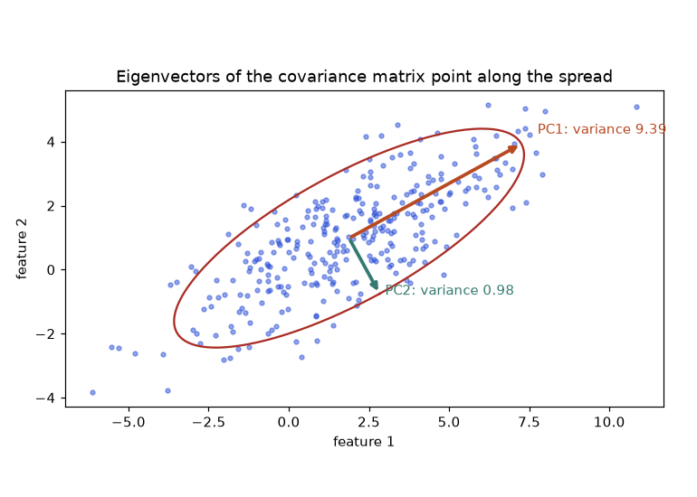
How to read it: the long arrow is the first eigenvector of the covariance matrix, the direction in which the data vary most, and its eigenvalue is the variance in that direction. The short arrow is perpendicular to it with the leftover variance. The arrows were drawn at length 2 standard deviations (2·√eigenvalue).
Problem 8.4.2 (data story: eigenvalues of a covariance matrix) Four customers have centred features (spend, visits): (2, 1), (1, 2), (−1, −2), (−2, −1). (Centred means each column has mean 0: spends sum to 2 + 1 − 1 − 2 = 0, visits to 1 + 2 − 2 − 1 = 0.) Find the covariance matrix, its eigenvalues, and the share of variance along the first principal direction.
| Variances | Divide by n − 1 = 3. var(spend) = (4 + 1 + 1 + 4)/3 = 10/3. var(visits) = (1 + 4 + 4 + 1)/3 = 10/3. |
|---|---|
| Covariance | cov = (2·1 + 1·2 + (−1)(−2) + (−2)(−1))/3 = (2 + 2 + 2 + 2)/3 = 8/3. |
| Matrix | Σ = (1/3)·[[10, 8], [8, 10]]. |
| Eigenvalues | Same pattern as [[a, b], [b, a]]: eigenvalues a + b and a − b with vectors (1, 1) and (1, −1). So λ1 = (10 + 8)/3 = 6 and λ2 = (10 − 8)/3 = 2/3. |
| Check | Trace = 20/3 = 6 + 2/3. The total variance is conserved. |
| Share | 6/(20/3) = 18/20 = 0.9. Ninety percent of the variance lies along (1, 1)/√2, the "big spenders visit often" direction. |
import numpy as np
X = np.array([[2, 1], [1, 2], [-1, -2], [-2, -1]], dtype=float)
Sigma = np.cov(X.T) # divides by n - 1
print(np.round(Sigma, 4))
vals, Q = np.linalg.eigh(Sigma) # eigh: for symmetric matrices, ascending order
print(np.round(vals, 4), np.round(vals / vals.sum(), 4))
print(np.round(Q, 4))
print(np.allclose(Q.T @ Q, np.eye(2)), np.allclose(Q @ np.diag(vals) @ Q.T, Sigma))
scores = X @ Q[:, 1] # coordinates along the top direction
print(np.round(scores, 4), np.round(scores.var(ddof=1), 4))[[3.3333 2.6667]
[2.6667 3.3333]]
[0.6667 6. ] [0.1 0.9]
[[-0.7071 0.7071]
[ 0.7071 0.7071]]
True True
[ 2.1213 2.1213 -2.1213 -2.1213] 6.0The variance of the data projected onto the top eigenvector is 6, equal to the top eigenvalue: this is the precise meaning of "eigenvalues of a covariance matrix are variances along the principal directions". Chapter 9 turns this into PCA.
Quadratic forms, the bowl and the saddle
For a symmetric matrix S and a vector x = (x1, x2), the number xᵀ S x is called a quadratic form. For S = [[2, 1], [1, 2]]: xᵀSx = 2x1² + 2x1x2 + 2x2². It is a polynomial in which every term has degree 2, and its graph is a surface above the plane. Using S = QΛQᵀ and the new coordinates y = Qᵀx (the coordinates along the eigenvectors), the cross terms disappear: xᵀSx = λ1y1² + λ2y2². The shape is controlled entirely by the signs of the eigenvalues.
Problem 8.4.3 Rewrite xᵀSx for S = [[2, 1], [1, 2]] in eigen-coordinates and check at x = (1, 0).
| Coordinates | y1 = q1·x = (x1 + x2)/√2, y2 = q2·x = (x1 − x2)/√2. |
|---|---|
| Form | xᵀSx = 3y1² + 1·y2². |
| Check at (1, 0) | Left: 2·1 + 0 + 0 = 2. Right: y1 = y2 = 1/√2, so 3·(1/2) + 1·(1/2) = 2. Equal. |
| Shape | Both eigenvalues are positive, so the surface rises in every direction: a bowl. Level curves xᵀSx = c are ellipses with the long axis along the eigenvector of the smaller eigenvalue (the surface rises slowly there). |
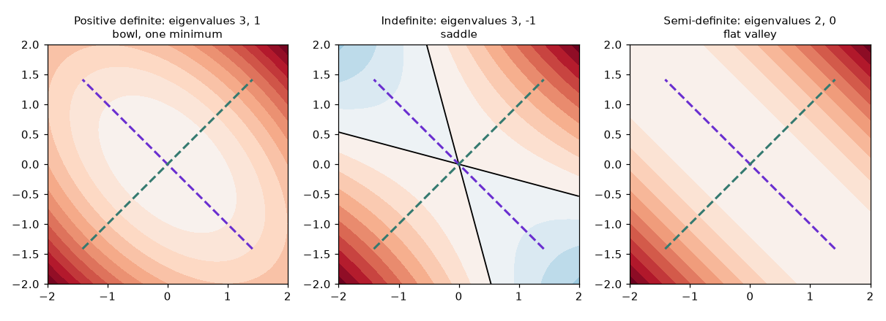
How to read it: on the left, eigenvalues 3 and 1 are both positive, so every direction goes uphill from the centre (a bowl). In the middle, eigenvalues 3 and −1: uphill along one dashed line, downhill along the other, a saddle (like a mountain pass). On the right, eigenvalues 2 and 0: uphill in one direction and perfectly flat along the other, a valley with a floor.
Problem 8.4.4 Classify B = [[2, −1], [−1, 2]], C = [[1, 2], [2, 1]], D = [[1, 1], [1, 1]], and T = [[2, −1, 0], [−1, 2, −1], [0, −1, 2]].
| B | trace 4, det 3: λ² − 4λ + 3, λ = 3, 1. Both positive. Minors: 2 and 3, both positive. B is positive definite. |
|---|---|
| C | trace 2, det 1 − 4 = −3: λ² − 2λ − 3 = (λ − 3)(λ + 1), λ = 3, −1. Mixed signs, indefinite. Direct proof: xᵀCx = x1² + 4x1x2 + x2², at (1, −1) this is 1 − 4 + 1 = −2 < 0, while at (1, 1) it is 6 > 0. Note all entries of C are positive; that does not help. |
| D | trace 2, det 0: λ² − 2λ = λ(λ − 2), λ = 2, 0. A zero eigenvalue: positive semi-definite but not definite. xᵀDx = (x1 + x2)², which is 0 at (1, −1). |
| T | Minors: 2; 2·2 − 1 = 3; det(T) = 2(4 − 1) − (−1)(−2 − 0) + 0 = 6 − 2 = 4. All positive, so positive definite. Its eigenvalues are 2 − √2 ≈ 0.586, 2 and 2 + √2 ≈ 3.414 (check: sum 6 = trace, product 2·(4 − 2) = 4 = det). |
import numpy as np
mats = {"B": [[2, -1], [-1, 2]], "C": [[1, 2], [2, 1]], "D": [[1, 1], [1, 1]],
"T": [[2, -1, 0], [-1, 2, -1], [0, -1, 2]]}
for name, m in mats.items():
m = np.array(m, dtype=float)
vals = np.linalg.eigvalsh(m)
try:
np.linalg.cholesky(m)
chol = "yes"
except np.linalg.LinAlgError:
chol = "no"
print(name, np.round(vals, 4), "Cholesky:", chol)B [1. 3.] Cholesky: yes
C [-1. 3.] Cholesky: no
D [0. 2.] Cholesky: no
T [0.5858 2. 3.4142] Cholesky: yesCholesky succeeds only for the positive definite matrices B and T, matching the eigenvalue test. It fails for the indefinite C and, here, for D, which sits exactly on the semi-definite boundary (on the boundary the result can depend on rounding, so do not rely on it there). It is a fast PD test in practice and is how libraries sample from Gaussians.
import numpy as np
rng = np.random.default_rng(1)
a = rng.normal(size=200)
b = rng.normal(size=200)
X = np.column_stack([a, b, a + b]) # third feature is exactly a + b
Sigma = np.cov(X.T)
vals = np.linalg.eigvalsh(Sigma)
print(np.round(vals, 6) + 0.0)
print(np.linalg.matrix_rank(Sigma))
w = np.array([1.0, 1.0, -1.0]) # the zero-variance direction
print(np.round(w @ Sigma @ w, 10) + 0.0)[0. 0.797002 2.600623]
2
0.0One eigenvalue is zero (up to rounding error of order 10−16), the rank is 2, and the combination a + b − (a + b) has variance 0. The zero eigenvector is the hidden linear relationship.
Going deeper
Rayleigh quotient. For symmetric S, the ratio R(x) = xᵀSx / xᵀx always lies between the smallest and largest eigenvalue, and equals λmax at the top eigenvector. Proof: in eigen-coordinates, R = (λ1y1² + ⋯ + λnyn²)/(y1² + ⋯ + yn²), a weighted average of the eigenvalues. This is the reason PCA works: "find the direction of maximum variance" is "maximize R(w) for the covariance matrix", and the answer is the top eigenvector.
Non-symmetric matrices in quadratic forms. xᵀAx only sees the symmetric part (A + Aᵀ)/2, because xᵀAx is a single number and equals its own transpose xᵀAᵀx. So test definiteness on the symmetrized matrix. Eigenvalues of A itself can be misleading here.
Matrix square root and whitening. If Σ = QΛQᵀ is PSD, then Σ1/2 = QΛ1/2Qᵀ squares to Σ. To simulate correlated data, multiply independent standard normal samples by Σ1/2; to decorrelate data, multiply by Σ−1/2 (whitening). Both use only the spectral theorem.
8.5 Markov Chains and PageRank
Beginner: tomorrow depends only on today
Convention used here: the state is a column vector x of probabilities (non-negative, summing to 1), and the matrix P has columns that sum to 1. Column j holds the probabilities of moving from state j to each state. Then xnext = P x. A matrix with non-negative entries and unit column sums is called column-stochastic. (Many textbooks write the transposed convention with rows summing to 1 and x as a row vector, xnext = x P. The mathematics is identical; just be consistent.)
Problem 8.5.1 (weather) If today is sunny, tomorrow is sunny with probability 0.8 and rainy with 0.2. If today is rainy, tomorrow is sunny with probability 0.4 and rainy with 0.6. Find the long-run fraction of sunny days.
| Matrix | P = [[0.8, 0.4], [0.2, 0.6]] (column 1 is "from sunny", column 2 is "from rainy"). Columns sum to 1. |
|---|---|
| Eigenvalues | trace 1.4, det 0.8·0.6 − 0.4·0.2 = 0.48 − 0.08 = 0.40. λ² − 1.4λ + 0.4 = (λ − 1)(λ − 0.4). So λ = 1 and λ = 0.4. |
| Steady state | Solve (P − I)π = 0: [[−0.2, 0.4], [0.2, −0.4]]π = 0 gives −0.2π1 + 0.4π2 = 0, so π1 = 2π2. Eigenvector (2, 1). Scale so entries sum to 1: divide by 3. π = (2/3, 1/3). |
| Check | P π = (0.8·2/3 + 0.4·1/3, 0.2·2/3 + 0.6·1/3) = (2/3, 1/3). Unchanged. |
| Answer | In the long run 2/3 of days are sunny, whatever today is. |
The speed: write the start "sunny today" x0 = (1, 0) in eigenvectors. Since (1, 0) = (2/3, 1/3) + (1/3, −1/3), and (1, −1) is the eigenvector for λ = 0.4 (check: P(1, −1) = (0.8 − 0.4, 0.2 − 0.6) = (0.4, −0.4)), we get xt = (2/3, 1/3) + (1/3)·0.4t·(1, −1). Tomorrow (t = 1): (2/3 + 0.1333, 1/3 − 0.1333) = (0.8, 0.2), which matches the first column of P. After 5 days the gap from steady state is (1/3)·0.45 = 0.0034. The second eigenvalue, 0.4, sets the speed of forgetting.
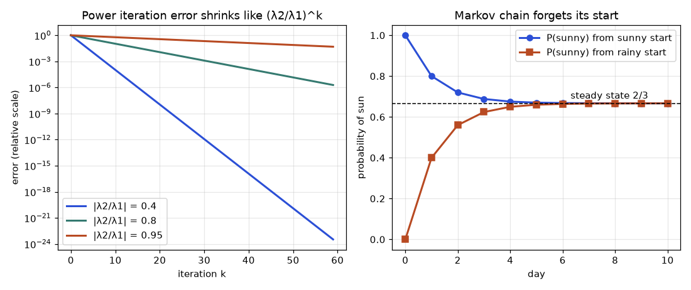
How to read it: on the right, the two curves start at 1 and 0 (sunny and rainy start) and both converge to the dashed line at 2/3 within about ten days. On the left, a ratio of 0.4 loses almost all error in 10 steps, a ratio of 0.95 barely moves. We use the left panel again in 8.6.
Why eigenvalue 1 always exists. Let 1 be the row vector of all ones. Because every column of P sums to 1, 1·P = 1 (each entry of the product is a column sum). So 1 is a left eigenvector with eigenvalue 1. A matrix and its transpose have the same eigenvalues (they have the same characteristic polynomial), so P itself has eigenvalue 1, with some right eigenvector π. That π is the steady state, provided it can be scaled to non-negative entries (guaranteed by the Perron–Frobenius theorem, 8.8).
Problem 8.5.2 (customer churn) A subscription service tracks three states each month: Active, Dormant (no logins), Lost (cancelled). From Active: 85% stay Active, 10% become Dormant, 5% are Lost. From Dormant: 20% return to Active, 50% stay Dormant, 30% are Lost. From Lost: 5% are won back to Active, 5% to Dormant, 90% stay Lost. What does the base look like in the long run?
| Matrix (columns = from) | P = [[0.85, 0.20, 0.05], [0.10, 0.50, 0.05], [0.05, 0.30, 0.90]]. Column sums: 1.00, 1.00, 1.00. |
|---|---|
| Equations for π = (a, d, l) | Row 1 of Pπ = π: 0.85a + 0.20d + 0.05l = a, so 0.15a = 0.20d + 0.05l. Row 2: 0.10a + 0.50d + 0.05l = d, so 0.50d = 0.10a + 0.05l. And a + d + l = 1. |
| Solve | From row 2: d = 0.2a + 0.1l. Put into row 1: 0.15a = 0.04a + 0.02l + 0.05l = 0.04a + 0.07l, so 0.11a = 0.07l, l = (11/7)a. Then d = 0.2a + (1.1/7)a = (2.5/7)a. |
| Normalize | a(1 + 2.5/7 + 11/7) = a·(7 + 2.5 + 11)/7 = a·20.5/7 = 1, so a = 7/20.5 = 14/41 ≈ 0.3415, d = 2.5/20.5 = 5/41 ≈ 0.1220, l = 11/20.5 = 22/41 ≈ 0.5366. |
| Check | 14 + 5 + 22 = 41. Row 3 check: 0.05·14 + 0.30·5 + 0.90·22 = 0.7 + 1.5 + 19.8 = 22. So (Pπ)3 = 22/41 = l. Correct. |
| Meaning | If nothing changes, about 34% of customers are Active, 12% Dormant and 54% Lost. "Lost" is almost absorbing (90% stay), so it eventually holds the majority. |
import numpy as np
P = np.array([[0.85, 0.20, 0.05],
[0.10, 0.50, 0.05],
[0.05, 0.30, 0.90]])
vals, vecs = np.linalg.eig(P)
vals, vecs = vals.real, vecs.real
print(np.round(vals, 4))
i = np.argmax(vals) # the eigenvalue 1
pi = vecs[:, i]
pi = pi / pi.sum() # scale so entries sum to 1
print(np.round(pi, 4), np.round(np.array([14, 5, 22]) / 41, 4))
x = np.array([1.0, 0.0, 0.0]) # everyone starts Active
for month in range(60):
x = P @ x
print(np.round(x, 4))
P2 = P.copy()
P2[:, 0] = [0.88, 0.10, 0.02] # what if Active customers are lost less often?
v2, w2 = np.linalg.eig(P2)
s2 = w2[:, np.argmax(v2.real)].real
print(np.round(s2 / s2.sum(), 4))[1. 0.8203 0.4297]
[0.3415 0.122 0.5366] [0.3415 0.122 0.5366]
[0.3415 0.122 0.5366]
[0.407 0.1279 0.4651]The eigenvalues are 1, about 0.82 and about 0.43 (they add to the trace 2.25), so the chain forgets its start at a geometric rate of about 0.82 per month, and after 60 months (0.8260 is about 7×10−6) the simulated distribution matches the eigenvector answer. The what-if shows how a sensitivity analysis works: cut the monthly loss of Active customers from 5% to 2% (and raise their staying probability to 88%) and recompute the steady state. The long-run share of lost customers falls from 53.7% to about 46.5%, and the Active share rises from 34.1% to about 40.7%.
PageRank: the web as a Markov chain
Early search engines ranked pages by their text. Google's founders asked a different question: which pages do other important pages link to? Picture a random surfer who is on a page and clicks one of its outgoing links uniformly at random. The fraction of time the surfer spends on each page, in the long run, is a measure of importance, and it is exactly the steady state (eigenvalue 1 eigenvector) of the surfer's Markov chain.
Our web has 4 pages. A links to B and C. B links to C. C links to A. D links to A and C. (Nobody links to D.) Column j of the link matrix M splits page j's vote equally among its outgoing links:
| 0 | 0 | 1 | 1/2 |
| 1/2 | 0 | 0 | 0 |
| 1/2 | 1 | 0 | 1/2 |
| 0 | 0 | 0 | 0 |
Rows and columns are ordered A, B, C, D. Column A is (0, 1/2, 1/2, 0): A sends half its vote to B and half to C. Column B is (0, 0, 1, 0). Column C is (1, 0, 0, 0). Column D is (1/2, 0, 1/2, 0).
Problem 8.5.3 Compute the pure link-structure ranking (solve M r = r), then the damped PageRank with d = 0.85, for this web.
| Undamped equations | rA = rC + rD/2; rB = rA/2; rC = rA/2 + rB + rD/2; rD = 0 (nobody links to D). |
|---|---|
| Solve | With rD = 0: rA = rC, rB = rA/2, and rC = rA/2 + rA/2 = rA. Sum 2.5 rA = 1, so r = (0.4, 0.2, 0.4, 0). |
| Problem with this | D gets exactly 0, so any page nobody links to is invisible. Worse, a page with no outgoing links would make a column of zeros (a "dead end" that leaks probability), and a closed cluster of pages would trap the surfer. |
| Damping idea | With probability d = 0.85 the surfer follows a link; with probability 0.15 they get bored and jump to a uniformly random page (each with probability 1/4). Then r = d·M r + ((1 − d)/4)·(1, 1, 1, 1). |
| Constant | (1 − d)/4 = 0.15/4 = 0.0375. |
| Equations | rD = 0.0375. rA = 0.85(rC + rD/2) + 0.0375 = 0.85 rC + 0.0534375. rB = 0.425 rA + 0.0375. rC = 0.85(rA/2 + rB + rD/2) + 0.0375. |
| Substitute rB | rC = 0.425 rA + 0.85(0.425 rA + 0.0375) + 0.0159375 + 0.0375 = 0.78625 rA + 0.0853125. |
| Solve for rA | rA = 0.85(0.78625 rA + 0.0853125) + 0.0534375 = 0.6683125 rA + 0.125953125. So rA = 0.125953125/0.3316875 ≈ 0.3797. |
| The rest | rB = 0.425·0.3797 + 0.0375 = 0.1989. rC = 0.78625·0.3797 + 0.0853 = 0.3839. rD = 0.0375. |
| Check | 0.3797 + 0.1989 + 0.3839 + 0.0375 = 1.0000. Ranking: C, A, B, D. |
import numpy as np
M = np.array([[0, 0, 1, 0.5],
[0.5, 0, 0, 0],
[0.5, 1, 0, 0.5],
[0, 0, 0, 0]])
d, n = 0.85, 4
r = np.ones(n) / n # start: equal rank
for k in range(1, 4):
r = d * M @ r + (1 - d) / n
print(k, np.round(r, 4))
steps = 3
while True: # keep iterating until the change is tiny
r_new = d * M @ r + (1 - d) / n
steps += 1
if np.abs(r_new - r).sum() < 1e-10:
break
r = r_new
print(steps, np.round(r_new, 4), round(r_new.sum(), 6))
G = d * M + (1 - d) / n * np.ones((n, n)) # the "Google matrix"
vals, vecs = np.linalg.eig(G)
top = vecs[:, np.argmax(vals.real)].real
print(np.round(top / top.sum(), 4))
print(np.round(np.sort(np.abs(vals))[::-1], 4))1 [0.3562 0.1438 0.4625 0.0375]
2 [0.4466 0.1889 0.327 0.0375]
3 [0.3314 0.2273 0.4038 0.0375]
45 [0.3797 0.1989 0.3839 0.0375] 1.0
[0.3797 0.1989 0.3839 0.0375]
[1. 0.601 0.601 0. ]The iteration settles at (0.3797, 0.1989, 0.3839, 0.0375), matching the hand solution and the eigenvector of the Google matrix G = dM + ((1 − d)/n)·11ᵀ. The sorted moduli of its eigenvalues show 1 first and then 0.601: the second eigenvalue of M has modulus 0.7071, and damping multiplies every non-leading eigenvalue by d = 0.85, giving 0.85 × 0.7071 = 0.601. Each iteration therefore shrinks the error by about 40 percent, which is why PageRank on billions of pages needs only tens of iterations.
Going deeper
Why damping works mathematically. G has all entries strictly positive and columns that sum to 1. The Perron–Frobenius theorem (8.8) then guarantees a unique steady state with all positive entries, for any link structure including dead ends (whose columns are first replaced by uniform columns). And a classical result says every eigenvalue of G other than 1 has modulus at most d. Damping thus buys uniqueness and a guaranteed convergence rate in one stroke. The "spectral gap" 1 − |λ2| controls how fast any Markov chain mixes, which also matters for MCMC sampling (Chapter 15).
At scale. The real web matrix is sparse (each page has a handful of links), so each iteration is a sparse matrix-vector product costing roughly the number of links, never a dense n×n multiply. Personalized PageRank replaces the uniform jump by a jump to a user's own pages, giving the "importance as seen from here" scores used in recommendation and graph machine learning.
8.6 Power Iteration, Convergence and Stability
Beginner: let repetition find the eigenvector for you
Algorithm: pick any non-zero x0. Repeat: compute y = A xk, then xk+1 = y/‖y‖ (rescale to length 1 so numbers neither explode nor vanish). When x stops changing, x is the dominant eigenvector and λ ≈ x·(A x) (the Rayleigh quotient, for symmetric A) or simply the factor by which one coordinate grew.
Intermediate: why it works and how fast
Write the start as a mix of eigenvectors, x0 = c1v1 + c2v2 + ⋯ + cnvn, with eigenvalues ordered |λ1| > |λ2| ≥ ⋯. Then
Every term after the first carries a factor (λi/λ1)k with absolute value less than 1, which dies out. So the error shrinks like |λ2/λ1|k, a straight line on a log plot (Figure 8.4, left). Two requirements: c1 ≠ 0 (the start must have some component along v1) and |λ1| > |λ2| (a strictly dominant eigenvalue).
Problem 8.6.1 Run power iteration by hand on A = [[4, 1], [2, 3]] from x0 = (1, 0), without rescaling, and estimate λ1.
| Step 1 | x1 = A x0 = (4·1 + 1·0, 2·1 + 3·0) = (4, 2). |
|---|---|
| Step 2 | x2 = A x1 = (16 + 2, 8 + 6) = (18, 14). |
| Step 3 | x3 = A x2 = (72 + 14, 36 + 42) = (86, 78). |
| Step 4 | x4 = A x3 = (344 + 78, 172 + 234) = (422, 406). |
| Eigenvalue estimates | Growth of the first coordinate: 4/1 = 4, 18/4 = 4.5, 86/18 = 4.778, 422/86 = 4.907. They approach 5. |
| Errors | 5 − estimate: 1, 0.5, 0.222, 0.093. Successive ratios 0.5, 0.44, 0.42 head to λ2/λ1 = 2/5 = 0.4. |
| Direction | x4 = (422, 406). Divide by the first coordinate: (1, 0.962). Target eigenvector (1, 1). Converging. |
Problem 8.6.2 How many iterations does power iteration need to cut the error by a factor of 106 when |λ2/λ1| is 0.8, 0.95 and 0.99?
| Equation | We need rk ≤ 10−6. Take logs (Chapter 3): k ≥ ln(10−6)/ln r = (−13.8155)/ln r. |
|---|---|
| r = 0.8 | ln 0.8 = −0.22314, so k ≥ 61.9, that is 62 iterations. |
| r = 0.95 | ln 0.95 = −0.051293, so k ≥ 269.3, that is 270 iterations. |
| r = 0.99 | ln 0.99 = −0.010050, so k ≥ 1374.7, that is 1375 iterations. |
| Lesson | The cost explodes as the top two eigenvalues get close. When r is near 1 you use a smarter method (Lanczos or Arnoldi, as in scipy.sparse.linalg.eigsh). |
import numpy as np
A = np.array([[4.0, 1.0], [2.0, 3.0]])
x = np.array([1.0, 0.0])
for k in range(1, 9):
y = A @ x
lam = x @ y / (x @ x) # Rayleigh quotient estimate
x = y / np.linalg.norm(y) # rescale to length 1
print(k, round(float(lam), 5), np.round(x, 4))
for r in (0.8, 0.95, 0.99):
print(r, int(np.ceil(np.log(1e-6) / np.log(r))))1 4.0 [0.8944 0.4472]
2 5.0 [0.7894 0.6139]
3 5.07692 [0.7407 0.6718]
4 5.04154 [0.7206 0.6933]
5 5.0182 [0.7125 0.7016]
6 5.00752 [0.7093 0.7049]
7 5.00305 [0.708 0.7062]
8 5.00122 [0.7075 0.7068]
0.8 62
0.95 270
0.99 1375The estimate is within 0.002 of 5 after 8 steps and the vector approaches (1, 1)/√2 = (0.7071, 0.7068 and rising toward 0.7071). (For a non-symmetric matrix the Rayleigh quotient can overshoot first, as the 5.077 at step 3 shows; it still converges.) The iteration counts match the hand computation: 62, 270, 1375.
Going wrong. If c1 = 0 exactly (start exactly perpendicular to v1 in a symmetric matrix), you converge to the next eigenvector instead, but in floating-point arithmetic rounding errors put a tiny component back and the dominant one eventually wins. If |λ1| = |λ2|, for example eigenvalues +1 and −1, there is no convergence: the swap matrix [[0, 1], [1, 0]] turns (1, 0) into (0, 1) and back forever.
import numpy as np
swap = np.array([[0.0, 1.0], [1.0, 0.0]]) # eigenvalues +1 and -1, same size
x = np.array([1.0, 0.0])
for k in range(4):
x = swap @ x
print(x)
D = np.diag([2.0, 1.0])
x = np.array([0.0, 1.0]) # start has no component along the top eigenvector
for k in range(3):
x = D @ x
print(x) # stuck on the eigenvalue-1 direction[0. 1.]
[1. 0.]
[0. 1.]
[1. 0.]
[0. 1.]Stability of repeated multiplication (dynamical systems)
Many systems evolve by xt+1 = A xt: populations, epidemics, an economy, the hidden state of a recurrent network, a linear controller. Using the same expansion, xt = c1λ1tv1 + c2λ2tv2 + ⋯, so the long run is decided by the eigenvalue sizes:
Problem 8.6.3 Decide stability for A1 = [[0.5, 0.2], [0.1, 0.4]], A2 = [[1.1, 0.3], [0, 0.9]] and A3 = [[0.6, −0.3], [0.3, 0.6]].
| A1 | trace 0.9, det 0.20 − 0.02 = 0.18. λ² − 0.9λ + 0.18 = 0, discriminant 0.81 − 0.72 = 0.09, λ = (0.9 ± 0.3)/2 = 0.6, 0.3. Both below 1: stable, and the slower mode 0.6 dominates the decay. |
|---|---|
| A2 | Triangular: eigenvalues 1.1 and 0.9. The 1.1 exceeds 1: unstable, growing 10% per step along its eigenvector. |
| A3 | trace 1.2, det 0.36 + 0.09 = 0.45. λ² − 1.2λ + 0.45 = 0, discriminant 1.44 − 1.8 = −0.36, λ = 0.6 ± 0.3i. Modulus √(0.36 + 0.09) = √0.45 = 0.671. Stable spiral, shrinking 33% per step while turning by atan(0.3/0.6) = 26.6° each step. |
One honest warning. For non-symmetric matrices, ρ(A) < 1 guarantees xt → 0 eventually, not that the length falls at every step. Consider A4 = [[0.9, 10], [0, 0.9]]: both eigenvalues are 0.9, so it is stable. But A4k = [[0.9k, 10k·0.9k−1], [0, 0.9k]] (the same k-factor as the defective Jordan block in 8.3), and at k = 10 the top-right entry is 100·0.99 ≈ 38.7. The state is first amplified about 39 times and only then dies out.
import numpy as np
mats = {"A1": [[0.5, 0.2], [0.1, 0.4]], "A2": [[1.1, 0.3], [0.0, 0.9]],
"A3": [[0.6, -0.3], [0.3, 0.6]], "A4": [[0.9, 10.0], [0.0, 0.9]]}
for name, m in mats.items():
m = np.array(m)
vals = np.linalg.eigvals(m)
print(name, np.round(np.real_if_close(vals), 4), "radius", round(float(np.abs(vals).max()), 4))
A4 = np.array(mats["A4"])
for k in (1, 5, 10, 50, 200):
print(k, round(float(np.linalg.norm(np.linalg.matrix_power(A4, k), 2)), 6))A1 [0.6 0.3] radius 0.6
A2 [1.1 0.9] radius 1.1
A3 [0.6+0.3j 0.6-0.3j] radius 0.6708
A4 [0.9 0.9] radius 0.9
1 10.080354
5 32.815625
10 38.745187
50 2.863218
200 2e-06The spectral norm of A4k climbs to about 38.7 at k = 10 (it peaks near there) and then falls to about 2×10−6 by k = 200. If you only look at eigenvalues, you will miss the transient. Matrices that behave like this are called non-normal; symmetric matrices never do this, because their norm equals their spectral radius.
Going deeper
Variants. Inverse iteration finds the eigenvalue nearest a target σ by running power iteration on (A − σI)−1. Deflation subtracts λ1q1q1ᵀ (for symmetric A) to expose the second eigenvector. Subspace iteration and the QR algorithm process many vectors at once, with a QR factorization (Chapter 9) replacing the normalization; QR iteration is what LAPACK uses inside numpy.linalg.eig. Lanczos and Arnoldi reuse all previous iterates and are the standard for large sparse problems (scipy.sparse.linalg.eigsh, eigs), for example the top 50 principal components of a huge sparse matrix.
8.7 Curvature, Graphs and the NumPy Toolbox
Beginner: eigenvalues of the Hessian are curvatures
For a function f(x, y) the Hessian is H = [[fxx, fxy], [fyx, fyy]], where fxy is the derivative of f first by x and then by y. (Full treatment in Chapter 12; here you need only "second derivatives in a matrix".) For smooth functions fxy = fyx, so H is symmetric and the spectral theorem applies: real curvatures along perpendicular directions. This is exactly the quadratic-form picture of Figure 8.3, because near a critical point f(x0 + δ) ≈ f(x0) + ½ δᵀ H δ.
Problem 8.7.1 Classify the critical points of f(x, y) = x³ − 3x + y².
| Gradient | fx = 3x² − 3, fy = 2y. Set both to 0: x² = 1 so x = 1 or −1, and y = 0. Critical points: (1, 0) and (−1, 0). |
|---|---|
| Second derivatives | fxx = 6x, fyy = 2, fxy = 0. H = [[6x, 0], [0, 2]]. |
| At (1, 0) | H = diag(6, 2). Eigenvalues 6 and 2, both positive: positive definite, a local minimum. |
| At (−1, 0) | H = diag(−6, 2). Eigenvalues −6 and 2: indefinite, a saddle point. |
| Check | f(1, 0) = 1 − 3 = −2. Nearby f(1.1, 0) = 1.331 − 3.3 = −1.969 > −2, and f(1, 0.1) = −2 + 0.01 > −2. Higher in both directions, a minimum. |
The eigenvalues also set how fast gradient descent can go. For a quadratic f(x) = ½xᵀHx with gradient Hx, one step of size η is x ← x − ηHx = (I − ηH)x, which multiplies the component along each eigenvector by (1 − ηλi). Convergence needs |1 − ηλi| < 1 for every i, that is, η < 2/λmax. The slowest direction is the one with the smallest eigenvalue. Chapter 14 builds on exactly this.
Problem 8.7.2 Let f(x, y) = 2x² + 2xy + 2y², which equals ½xᵀHx with H = [[4, 2], [2, 4]] and has gradient Hx. Run gradient descent from (1, 0) with step η = 0.25 and with η = 0.4.
| Eigenvalues of H | trace 8, det 16 − 4 = 12. λ² − 8λ + 12 = (λ − 6)(λ − 2). Eigenvalues 6 and 2, with eigenvectors (1, 1) and (1, −1). Condition number 6/2 = 3. |
|---|---|
| Step limit | η must be below 2/6 = 0.333. |
| η = 0.25 | Factors 1 − 0.25·6 = −0.5 and 1 − 0.25·2 = 0.5. Start (1, 0) = ½(1, 1) + ½(1, −1). After k steps: ½(−0.5)k(1, 1) + ½(0.5)k(1, −1). One step by hand: (1, 0) − 0.25·H(1, 0) = (1, 0) − 0.25·(4, 2) = (0, −0.5), and the formula gives ½(−0.5)(1, 1) + ½(0.5)(1, −1) = (0, −0.5). Same. Distance from the minimum after 10 steps: 0.510 ≈ 0.00098. |
| η = 0.4 | Factors 1 − 2.4 = −1.4 and 1 − 0.8 = 0.2. The first has size above 1: the iterates oscillate and blow up. After 10 steps the distance is about 1.410/√2 ≈ 20.5. |
import numpy as np
H = np.array([[4.0, 2.0], [2.0, 4.0]])
print(np.linalg.eigvalsh(H), round(float(np.linalg.cond(H)), 4))
for eta in (0.25, 0.4):
x = np.array([1.0, 0.0])
for step in range(10):
x = x - eta * (H @ x) # gradient of 0.5 x^T H x is H x
print(eta, np.round(x, 5), round(float(np.linalg.norm(x)), 5))[2. 6.] 3.0
0.25 [0.00098 0. ] 0.00098
0.4 [14.46273 14.46273] 20.45339With η = 0.25 the distance is 0.00098 as predicted, and with η = 0.4 it is about 20.45, so the iteration diverged. The choice η = 2/(λmax + λmin) = 0.25 here is the best possible fixed step: it makes the two factors equal in size (±0.5), giving rate (κ − 1)/(κ + 1) = 2/4 = 0.5 per step with κ = 3. For κ = 100 the rate would be 99/101 = 0.98: thousands of steps. This is why badly scaled features make training slow, and why feature standardization helps.
Intermediate: the graph Laplacian and spectral clustering
A graph has nodes joined by edges. Let A be its adjacency matrix (Aij = 1 if i and j are linked, else 0), and D the diagonal matrix of degrees (the number of edges at each node). The graph Laplacian is L = D − A. It is symmetric, and for any vector x (one number per node) it satisfies xᵀLx = Σ over edges (xi − xj)²: it measures how much x varies across links. That sum of squares is never negative, so L is PSD, and the all-ones vector gives 0 (no variation), so 0 is always an eigenvalue. Moreover, the number of zero eigenvalues equals the number of connected components.
Problem 8.7.3 For the path graph 1 − 2 − 3, find the Laplacian's eigenvalues and eigenvectors.
| Matrices | Degrees (1, 2, 1). L = [[1, −1, 0], [−1, 2, −1], [0, −1, 1]]. |
|---|---|
| Eigenvalue 0 | L(1, 1, 1) = (1 − 1, −1 + 2 − 1, −1 + 1) = (0, 0, 0). So 0 with v = (1, 1, 1). |
| Try (1, 0, −1) | L(1, 0, −1) = (1·1 + (−1)·0, (−1)·1 + 2·0 + (−1)(−1), (−1)·0 + 1·(−1)) = (1, 0, −1). So eigenvalue 1. |
| Try (1, −2, 1) | L(1, −2, 1) = (1 + 2, −1 − 4 − 1, 2 + 1) = (3, −6, 3) = 3·(1, −2, 1). Eigenvalue 3. |
| Check | Trace 4 = 0 + 1 + 3. The eigenvector for the second smallest eigenvalue (1) is (1, 0, −1): positive at one end, negative at the other, 0 in the middle. |
The eigenvector for the second smallest eigenvalue is called the Fiedler vector. Its signs split the graph into two parts with few links between them, because small xᵀLx means x changes little across edges. Spectral clustering uses this: build a similarity graph of your data points, compute the k smallest eigenvectors of L, and run k-means (see the Machine Learning document) on the rows of that eigenvector matrix. It can find curved clusters that plain k-means cannot.
Problem 8.7.4 Two triangles, nodes {0, 1, 2} and {3, 4, 5}, are joined by one edge 2 − 3. Find the Fiedler vector.
| Degrees | Nodes 0, 1, 4, 5 have 2 links each. Nodes 2 and 3 have 3 (two in the triangle plus the bridge). |
|---|---|
| Expectation | One component, so one zero eigenvalue. The second smallest eigenvalue should be small (a single thin bridge), and the Fiedler vector should be positive on one triangle and negative on the other. |
| Compute | Use code (a 6×6 hand computation is possible but long). |
import numpy as np
P3 = np.array([[1, -1, 0], [-1, 2, -1], [0, -1, 1]], dtype=float)
print(np.round(np.linalg.eigvalsh(P3), 4) + 0.0)
edges = [(0, 1), (1, 2), (0, 2), (3, 4), (4, 5), (3, 5), (2, 3)]
n = 6
Adj = np.zeros((n, n))
for i, j in edges:
Adj[i, j] = Adj[j, i] = 1
L = np.diag(Adj.sum(axis=1)) - Adj
vals, vecs = np.linalg.eigh(L)
print(np.round(vals, 4) + 0.0)
fiedler = vecs[:, 1]
print(np.round(fiedler, 3))
print((fiedler > 0).astype(int)) # cluster labels (the sign split)[0. 1. 3.]
[0. 0.4384 3. 3. 3. 4.5616]
[ 0.465 0.465 0.261 -0.261 -0.465 -0.465]
[1 1 1 0 0 0]The first line confirms 0, 1, 3 for the path. For the two triangles, the smallest eigenvalue is 0 (one component), the second is 0.4384, and the Fiedler vector has one sign on nodes 0, 1, 2 and the opposite sign on nodes 3, 4, 5, recovering the two triangles. (The overall sign of an eigenvector is arbitrary, so the 0/1 labels might be swapped on another machine; the grouping is what matters.)
Expert: eig versus eigh and the NumPy toolbox
| Function | Use it for | Returns |
|---|---|---|
np.linalg.eig(A) | Any square matrix | Possibly complex eigenvalues, in no guaranteed order; eigenvector columns that need not be perpendicular |
np.linalg.eigh(S) | Symmetric (or Hermitian) matrices only | Real eigenvalues in ascending order; orthonormal eigenvectors; faster and more accurate |
np.linalg.eigvals, eigvalsh | Eigenvalues only, general or symmetric | Skips eigenvectors, cheaper |
scipy.sparse.linalg.eigsh | A few eigenpairs of a large sparse symmetric matrix | Top k (or smallest) via Lanczos |
eigh trusts you. It reads only one triangle of the matrix (the lower one, by default) and assumes the other half is the mirror image. If you give it a non-symmetric matrix it does not complain: it silently answers a different question.
import numpy as np
A = np.array([[1.0, 2.0], [3.0, 4.0]]) # not symmetric
print(np.round(np.linalg.eig(A)[0].real, 4)) # correct eigenvalues of A
print(np.round(np.linalg.eigh(A)[0], 4)) # eigenvalues of [[1, 3], [3, 4]]: wrong for A
S = np.array([[2.0, 1.0], [1.0, 2.0]])
vals, vecs = np.linalg.eigh(S)
order = np.argsort(vals)[::-1] # largest first, as PCA wants
print(vals[order], np.round(vecs[:, order], 4))
print(np.allclose(np.linalg.eigh(A)[0], np.linalg.eigh((A + A.T) / 2)[0]))[-0.3723 5.3723]
[-0.8541 5.8541]
[3. 1.] [[ 0.7071 -0.7071]
[ 0.7071 0.7071]]
FalseThe eigenvalues of A are (5 ± √33)/2 = −0.3723 and 5.3723 (trace 5, determinant −2). eigh returned −0.8541 and 5.8541, which are the eigenvalues of [[1, 3], [3, 4]] (trace 5, determinant −5, roots (5 ± √45)/2), because it used the lower triangle (3, not 2). The last line prints False: the answer eigh gave for A is not even the answer for the symmetrized matrix (A + Aᵀ)/2, because it did not average, it copied the lower triangle. Rules of thumb: covariance, Gram, Hessian, Laplacian: use eigh. Anything that might be non-symmetric (transition matrices, Jacobians, link matrices): use eig, and expect complex numbers.
eigh on a matrix that is only approximately symmetric, or using eig on a covariance matrix and trusting the order. Wrong: vals, vecs = np.linalg.eig(cov) and then vecs[:, 0] as the "first principal component". Eigenvalues from eig are unsorted. Right: np.linalg.eigh(cov) and take the last column (ascending order), or sort explicitly with np.argsort(vals)[::-1]. Floating-point noise can also make a covariance matrix tiny-asymmetric: symmetrize with (M + M.T) / 2 first.8.8 The Expert Layer: Bounds, Positivity, Conditioning and Random Matrices
This section collects four results that experts use to reason about eigenvalues without computing them, and one that explains deep-learning behaviour. Read it after you can do the hand computations above.
Gershgorin circles: locating eigenvalues for free
Proof sketch. Let A v = λ v and let i be the index where |vi| is largest. Row i of the equation reads (λ − aii)vi = Σj≠i aijvj. Take absolute values and divide by |vi|: |λ − aii| ≤ Σj≠i |aij|·|vj|/|vi| ≤ Σj≠i |aij| = Ri, since each ratio |vj|/|vi| is at most 1.
Problem 8.8.1 Locate the eigenvalues of G = [[10, 1, 2], [0, 8, 1], [1, 0, −5]] and decide whether G is invertible. Then show that the symmetric matrix K = [[4, 1, 1], [1, 5, 2], [1, 2, 6]] is positive definite.
| Row radii of G | Row 1: 1 + 2 = 3. Row 2: 0 + 1 = 1. Row 3: 1 + 0 = 1. |
|---|---|
| Discs | Centre 10, radius 3: the interval [7, 13] on the real line (and the disc around it). Centre 8, radius 1: [7, 9]. Centre −5, radius 1: [−6, −4]. |
| Conclusion for G | No disc contains 0, so no eigenvalue is 0 and G is invertible. Every eigenvalue has real part in [−6, −4] or [7, 13]. (Three eigenvalues: since the −5 disc is separate from the other two, exactly one eigenvalue lives there and two in the union of the others.) |
| K | Row radii: 1 + 1 = 2, 1 + 2 = 3, 1 + 2 = 3. Discs: [2, 6], [2, 8], [3, 9]. K is symmetric, so its eigenvalues are real and all lie in [2, 9]. All positive: K is positive definite, with smallest eigenvalue at least 2. |
import numpy as np
G = np.array([[10, 1, 2], [0, 8, 1], [1, 0, -5]], dtype=float)
print(np.round(np.sort(np.linalg.eigvals(G).real), 4))
K = np.array([[4, 1, 1], [1, 5, 2], [1, 2, 6]], dtype=float)
print(np.round(np.linalg.eigvalsh(K), 4))
radii = np.abs(K).sum(axis=1) - np.abs(np.diag(K))
print(np.diag(K) - radii, np.diag(K) + radii)[-5.1272 7.9648 10.1624]
[3.308 3.6431 8.0489]
[2. 2. 3.] [6. 8. 9.]The eigenvalues of G are about −5.13, 7.96 and 10.16, inside the predicted discs. The three eigenvalues of K are about 3.31, 3.64 and 8.05 (inside [2, 9]); the printed lower and upper ends of the discs are (2, 2, 3) and (6, 8, 9). Strictly "diagonally dominant" matrices (each |aii| larger than the sum of the rest of its row) can never have a zero eigenvalue, which is the reason Jacobi and Gauss-Seidel iterations for linear systems converge on them, and why adding a big enough ridge αI to a covariance matrix makes it safely invertible.
Perron-Frobenius: positive matrices have a positive leader
Small example: A = [[1, 2], [3, 2]]. Trace 3, det 2 − 6 = −4, so λ² − 3λ − 4 = (λ − 4)(λ + 1): eigenvalues 4 and −1. For λ = 4: A − 4I = [[−3, 2], [3, −2]], so 3x = 2y and v = (2, 3), all positive. Check: the first row (1, 2)·(2, 3) = 2 + 6 = 8 and the second row (3, 2)·(2, 3) = 6 + 6 = 12, so A(2, 3) = (8, 12) = 4·(2, 3). The other eigenvalue −1 has modulus 1 < 4, and its eigenvector (A + I = [[2, 2], [3, 3]], so y = −x) is (1, −1), which mixes signs, as the theorem allows for non-leading eigenvectors.
Why you care: (a) the steady state of a Markov chain exists, is unique and positive, and power iteration converges to it; (b) PageRank's damped matrix is strictly positive, so the ranking is well defined; (c) the dominant growth rate of a population (Leslie matrix) is the Perron eigenvalue, with the stable age distribution as its eigenvector. The conditions matter: the identity matrix is not irreducible (eigenvalue 1 twice, no unique steady state), and the swap matrix [[0, 1], [1, 0]] is irreducible but not primitive (eigenvalues +1 and −1 have equal modulus), so powers oscillate instead of converging, as in 8.6.
Condition number: how eigenvalues control numerical trust
Solving A x = b with a slightly wrong b (measurement noise, rounding) gives a slightly wrong x. The condition number κ(A) is the worst-case ratio of relative error in x to relative error in b. For a symmetric positive definite matrix it is simply κ = λmax/λmin. (For a general matrix it is the ratio of largest to smallest singular value, Chapter 9; for symmetric matrices in general, use absolute values of the eigenvalues.) A matrix with a tiny eigenvalue squashes one direction almost flat, so solving the system has to stretch it back by a huge factor and magnifies any noise in that direction.
Problem 8.8.2 Let S = [[1, 0.99], [0.99, 1]]. Find its condition number, and show how a 0.35% change in b changes the solution of S x = b.
| Eigenvalues | For [[a, b], [b, a]] the eigenvalues are a ± b: 1.99 and 0.01. |
|---|---|
| κ | 1.99/0.01 = 199. |
| Exact solve | b = (1.99, 1.99): x = (1, 1), since S·(1, 1) = (1 + 0.99, 0.99 + 1) = (1.99, 1.99). |
| Perturb | b′ = (1.99, 1.98): the change is (0, −0.01), size 0.01 against ‖b‖ = 1.99·√2 = 2.814, a relative change of 0.355%. |
| New solution | Add the two equations: 1.99(x + y) = 3.97, so x + y = 1.995. Subtract: 0.01(x − y) = 0.01, so x − y = 1. Hence x′ = (1.4975, 0.4975). |
| Relative change in x | x′ − x = (0.4975, −0.5025), size 0.7071; ‖x‖ = 1.4142. Relative change 50%. |
| Amplification | 50% / 0.355% ≈ 141, below the worst case 199. A 0.35% nudge in the data moved the answer by half. |
import numpy as np
S = np.array([[1.0, 0.99], [0.99, 1.0]])
print(np.linalg.eigvalsh(S), round(float(np.linalg.cond(S)), 1))
x = np.linalg.solve(S, [1.99, 1.99])
x2 = np.linalg.solve(S, [1.99, 1.98])
print(np.round(x, 4), np.round(x2, 4))
rel_b = 0.01 / np.linalg.norm([1.99, 1.99])
rel_x = np.linalg.norm(x2 - x) / np.linalg.norm(x)
print(round(float(rel_b), 5), round(float(rel_x), 4), round(float(rel_x / rel_b), 1))
X = np.array([[1.0, 1.0], [1.0, 1.01], [1.0, 1.02]]) # nearly collinear columns
print(f"{np.linalg.cond(X):.4g} {np.linalg.cond(X.T @ X):.4g} {np.linalg.cond(X) ** 2:.4g}")[0.01 1.99] 199.0
[1. 1.] [1.4975 0.4975]
0.00355 0.5 140.7
247.4 6.121e+04 6.121e+04The last line shows the practical lesson for regression: the eigenvalues of XᵀX are the squares of the singular values of X, so cond(XᵀX) = cond(X)². Solving the "normal equations" (XᵀX)β = Xᵀy squares the conditioning, which is why serious software uses QR or SVD instead (Chapter 9), and why strongly correlated features make regression coefficients unstable.
Random matrices, depth and vanishing or exploding gradients
A recurrent network updates its hidden state by ht+1 = W ht (ignoring the nonlinearity). After T steps hT = WTh0, and backpropagation multiplies the gradient by (roughly) Wᵀ at every step too. By the stability rule of 8.6, the signal and the gradient shrink like ρ(W)T or grow like it. If ρ = 0.9, after 100 steps the factor is 0.9100 ≈ 2.7×10−5: the gradient vanishes, and the network cannot learn long-range dependencies. If ρ = 1.1, the factor is 1.1100 ≈ 13,780: the gradient explodes. Deep feed-forward networks do the same, with a different matrix at each layer.
What is ρ for a randomly initialized W? A famous fact (the circular law): for an n × n matrix with independent entries of mean 0 and variance 1/n, the eigenvalues fill, in the limit of large n, the unit disc in the complex plane, so ρ ≈ 1. Scaling W by a gain g scales the disc to radius g. This is why initialization schemes (Xavier/Glorot, He, orthogonal) choose the entry variance so that the "gain" is about 1.
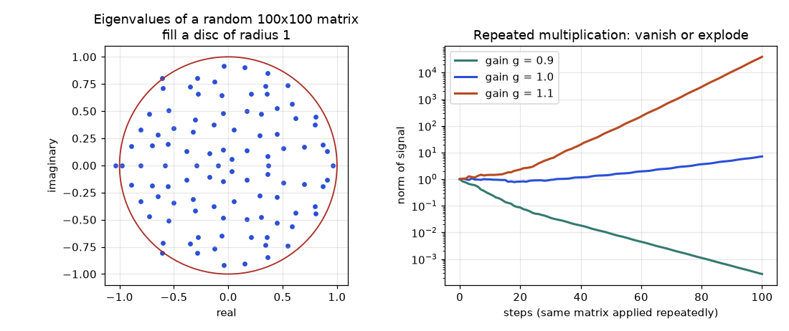
How to read it: on the left every blue dot is an eigenvalue and the red circle has radius 1, so spectral radius is about 1. On the right, the vertical axis is logarithmic, so straight lines mean exponential change: the g = 0.9 line plunges to about 3×10−4, g = 1.1 climbs to about 4×104, and g = 1.0 hovers near 1 (it drifts up a little: see below).
import numpy as np
rng = np.random.default_rng(0)
n = 100
G = rng.normal(size=(n, n)) / np.sqrt(n) # entry variance 1/n
rho = np.abs(np.linalg.eigvals(G)).max()
print("spectral radius of G:", round(float(rho), 3))
for g in (0.9, 1.0, 1.1): # the SAME matrix applied 100 times
x = rng.normal(size=n)
x /= np.linalg.norm(x)
for _ in range(100):
x = g * G @ x
print("same matrix, gain", g, "-> norm", f"{np.linalg.norm(x):.3g}")
rng2 = np.random.default_rng(5)
for g in (0.9, 1.0, 1.1): # a FRESH matrix at each layer
x = rng2.normal(size=n)
x /= np.linalg.norm(x)
for _ in range(100):
W = rng2.normal(size=(n, n)) / np.sqrt(n)
x = g * W @ x
print("fresh matrices, gain", g, "-> norm", f"{np.linalg.norm(x):.3g}")spectral radius of G: 1.036
same matrix, gain 0.9 -> norm 0.000276
same matrix, gain 1.0 -> norm 7.15
same matrix, gain 1.1 -> norm 3.9e+04
fresh matrices, gain 0.9 -> norm 6.84e-06
fresh matrices, gain 1.0 -> norm 0.304
fresh matrices, gain 1.1 -> norm 1.35e+04With the same matrix, the three gains give norms near 3×10−4, 7 and 4×104: vanishing, borderline and exploding. The borderline case grows because G is not symmetric: its largest eigenvalue magnitude is 1.036, a bit above 1 for finite n (printed above), and 1.036100 is about 34, and non-normal matrices amplify transiently (as with A4 in 8.6). With fresh matrices at each layer the norm of g = 1 stays within a modest factor of 1 because a random matrix with variance 1/n preserves the squared length on average; g = 0.9 and g = 1.1 end near 7×10−6 and 1.4×104, in line with 0.9100 ≈ 2.7×10−5 and 1.1100 ≈ 1.4×104. The lesson is the same: any systematic gain different from 1 is raised to the power of the depth.
Remedies used in practice, all about eigenvalues and singular values near 1: careful initialization (He: variance 2/n for ReLU networks; orthogonal matrices, whose singular values are all exactly 1); gradient clipping against explosion; gated cells (LSTM, GRU) that let a path carry a signal with gain close to 1; residual connections x + F(x), whose Jacobian is I plus something small, with eigenvalues near 1; and normalization layers that rescale activations.
One more random-matrix fact that matters for data work (Marchenko-Pastur): even if the true covariance of p features is the identity (every eigenvalue exactly 1), the sample covariance from n observations has eigenvalues spread over [(1 − √(p/n))², (1 + √(p/n))²]. With p/n = 0.25 that is [0.25, 2.25]. So "the top eigenvalues of my sample covariance are large" does not by itself prove real structure; it must be compared against this noise band. This is the basis for choosing the number of principal components in Chapter 9.
import numpy as np
rng = np.random.default_rng(3)
n, p = 2000, 500 # p / n = 0.25
X = rng.normal(size=(n, p)) # true covariance is the identity
vals = np.linalg.eigvalsh(np.cov(X.T))
print(round(float(vals.min()), 2), round(float(vals.max()), 2))
print((1 - np.sqrt(p / n)) ** 2, (1 + np.sqrt(p / n)) ** 2)0.25 2.23
0.25 2.25The smallest and largest sample eigenvalues land close to the predicted edges 0.25 and 2.25, although every true eigenvalue is 1.
Going deeper
Pseudo-spectra. For non-normal matrices (A4 above, trained RNN weights), eigenvalues are a poor guide to finite-time behaviour. Experts use singular values of the product, or the Lyapunov exponent lim (1/T) log ‖WT⋯W1x‖, the average log growth rate per layer. For products of random matrices it differs from log ρ, and it is the correct measure of whether information survives depth.
Weyl and Cauchy interlacing. For symmetric matrices, perturbing by a small symmetric E moves each eigenvalue by at most ‖E‖ (Weyl's inequality), so symmetric eigenvalues are always well conditioned, in contrast to the sensitivity of defective matrices in 8.3. Deleting a row and column interlaces the eigenvalues, the reason adding a feature can only increase the largest eigenvalue of a covariance matrix.
Chapter recap
- An eigenvector of a square matrix A is a non-zero vector whose direction A does not change: A v = λ v. The eigenvalue λ is the stretch factor (negative flips, zero crushes, complex means rotation).
- Find eigenvalues from det(A − λI) = 0 (for 2×2: λ² − trace·λ + det = 0), then eigenvectors by solving (A − λI)v = 0. The rows of A − λI must be dependent, which is a built-in check.
- Sum of eigenvalues = trace; product = determinant. Triangular matrices have their diagonal as eigenvalues.
- A = P D P−1 when there are n independent eigenvectors, giving Ak = P Dk P−1. Fibonacci numbers come from the eigenvalues of [[1, 1], [1, 0]]: the golden ratio and its conjugate.
- Repeated eigenvalues may or may not be diagonalizable. Defective matrices (such as [[2, 1], [0, 2]]) have too few eigenvectors, produce k-factors in powers, and have fragile eigenvalues.
- Symmetric matrices have real eigenvalues and perpendicular eigenvectors: S = Q Λ Qᵀ. Positive definite means all eigenvalues positive (bowl); indefinite means a saddle; covariance matrices are always PSD.
- Markov chains: steady state is the eigenvalue-1 eigenvector (normalized to sum 1); the second eigenvalue sets how fast the chain forgets its start. PageRank is the steady state of a damped random-surfer chain.
- Power iteration finds the dominant eigenvector by repeated multiplication and rescaling; the error shrinks like |λ2/λ1|k.
- xt+1 = A xt is stable when the spectral radius is below 1. Non-normal matrices can grow before they decay.
- Eigenvalues of the covariance matrix are variances along the principal directions (PCA preview); eigenvalues of the Hessian are curvatures and limit gradient-descent step sizes (η < 2/λmax); the condition number λmax/λmin sets the convergence rate.
- In NumPy use
eighfor symmetric matrices (sorted, real, orthonormal) andeigotherwise. Expert tools: Gershgorin discs, Perron-Frobenius, condition number, and random-matrix scaling for deep networks.
| Formula / pattern | Meaning |
|---|---|
| A v = λ v | v keeps its direction under A and is scaled by λ |
| det(A − λI) = 0 | Characteristic equation; its roots are the eigenvalues |
| λ² − tr(A)·λ + det(A) = 0 | The 2×2 shortcut |
| Σλi = tr(A), ∏λi = det(A) | Quick checks on any set of eigenvalues |
| A = P D P−1, Ak = P Dk P−1 | Diagonalization and fast matrix powers |
| S = Q Λ Qᵀ, QᵀQ = I | Spectral theorem for symmetric S |
| xᵀSx = Σ λi yi² | Quadratic form in eigen-coordinates; signs give bowl, saddle or valley |
| P π = π, Σπi = 1 | Steady state of a column-stochastic Markov chain |
| r = d M r + (1 − d)/n · 1 | PageRank with damping d (usually 0.85) |
| error ∝ |λ2/λ1|k | Power-iteration and Markov convergence rate |
| ρ(A) < 1 | xt+1 = A xt is stable (decays to 0) |
| κ = λmax/λmin | Condition number of a symmetric PD matrix; GD rate (κ − 1)/(κ + 1) |
Practice set
Problem 8.9.1 Find the eigenvalues and eigenvectors of A = [[5, 4], [1, 2]].
Answer: trace 7, det 10 − 4 = 6. λ² − 7λ + 6 = (λ − 6)(λ − 1), so λ = 6 and 1. For λ = 6: A − 6I = [[−1, 4], [1, −4]], so x = 4y, v = (4, 1). Check: A(4, 1) = (20 + 4, 4 + 2) = (24, 6) = 6·(4, 1). For λ = 1: A − I = [[4, 4], [1, 1]], so y = −x, v = (1, −1). Check: A(1, −1) = (5 − 4, 1 − 2) = (1, −1).
Problem 8.9.2 A 2×2 matrix has trace 10 and determinant 21. What are its eigenvalues? Is it invertible?
Answer: λ² − 10λ + 21 = (λ − 3)(λ − 7), so λ = 3 and 7 (sum 10, product 21). No eigenvalue is 0 (equivalently det = 21 ≠ 0), so it is invertible, and its inverse has eigenvalues 1/3 and 1/7.
Problem 8.9.3 Give the eigenvalues, trace and determinant of T = [[3, 5, 1], [0, −2, 4], [0, 0, 7]] without expanding any determinant.
Answer: T is upper triangular, so the eigenvalues are the diagonal entries 3, −2, 7. Trace = 3 − 2 + 7 = 8 (equal to the sum of the eigenvalues). Determinant = 3·(−2)·7 = −42, which is also the product of the diagonal (and of the eigenvalues).
Problem 8.9.4 Find the eigenvalues of Z = [[3, −4], [4, 3]], their modulus, and describe what Z does to a vector.
Answer: trace 6, det 9 + 16 = 25. λ² − 6λ + 25 = 0. Discriminant 36 − 100 = −64, so λ = (6 ± 8i)/2 = 3 ± 4i. Modulus √(9 + 16) = 5. The angle is atan2(4, 3) ≈ 53.13°. Z rotates every vector by about 53.13° counter-clockwise and multiplies its length by 5. No real arrow keeps its direction.
Problem 8.9.5 For S = [[6, 2], [2, 3]], find the eigenvalues, unit eigenvectors, and write S = QΛQᵀ. Verify one entry.
Answer: trace 9, det 18 − 4 = 14. λ² − 9λ + 14 = (λ − 7)(λ − 2), so λ = 7, 2. For 7: S − 7I = [[−1, 2], [2, −4]], so x = 2y, v = (2, 1), unit q1 = (2, 1)/√5. For 2: S − 2I = [[4, 2], [2, 1]], so y = −2x, v = (1, −2), q2 = (1, −2)/√5. Perpendicular: 2·1 + 1·(−2) = 0. Q = (1/√5)·[[2, 1], [1, −2]], Λ = diag(7, 2). Verify S11 = 7·(2/√5)² + 2·(1/√5)² = 7·4/5 + 2·1/5 = 28/5 + 2/5 = 6. Correct.
Problem 8.9.6 Diagonalize A = [[1, 2], [0, 3]] and find Ak. Compute A5.
Answer: triangular, so λ = 1 and 3. λ = 1: A − I = [[0, 2], [0, 2]], so y = 0, v = (1, 0). λ = 3: A − 3I = [[−2, 2], [0, 0]], so y = x, v = (1, 1). P = [[1, 1], [0, 1]], P−1 = [[1, −1], [0, 1]], D = diag(1, 3). P Dk = [[1, 3k], [0, 3k]]. Times P−1: [[1, −1 + 3k], [0, 3k]]. Check k = 2: A² = [[1, 2 + 6], [0, 9]] = [[1, 8], [0, 9]], and the formula gives −1 + 9 = 8. For k = 5: 35 = 243, A5 = [[1, 242], [0, 243]].
Problem 8.9.7 A sequence satisfies an+1 = 5an − 6an−1 with a0 = 0, a1 = 1. Write it as a matrix power, find a closed form, and compute a4.
Answer: (an+1, an) = [[5, −6], [1, 0]](an, an−1). Trace 5, det 6: λ² − 5λ + 6 = (λ − 2)(λ − 3). So an = c13n + c22n. From a0 = 0: c1 + c2 = 0. From a1 = 1: 3c1 + 2c2 = c1 = 1, so c2 = −1. Closed form an = 3n − 2n. Check with the recurrence: a2 = 5·1 − 0 = 5 = 9 − 4; a3 = 25 − 6 = 19 = 27 − 8; a4 = 5·19 − 6·5 = 95 − 30 = 65 = 81 − 16.
Problem 8.9.8 For which values of k is [[2, k], [k, 8]] positive definite?
Answer: Use the minors. First minor 2 > 0 always. Second: det = 16 − k² > 0, so k² < 16, that is −4 < k < 4. At k = ±4 the determinant is 0 (an eigenvalue 0: positive semi-definite only), and beyond that it is indefinite. Check k = 3: eigenvalues satisfy λ² − 10λ + 7 = 0, λ = 5 ± √18 = 5 ± 4.24 = 9.24 and 0.76, both positive.
Problem 8.9.9 A market has two brands. Each month 10% of brand 1 customers switch to brand 2, and 50% of brand 2 customers switch to brand 1. Find the long-run market shares.
Answer: P = [[0.9, 0.5], [0.1, 0.5]] (column j = from brand j). Solve (P − I)π = 0: −0.1π1 + 0.5π2 = 0, so π1 = 5π2. Normalize: π = (5/6, 1/6) ≈ (0.833, 0.167). Check: 0.9·5/6 + 0.5·1/6 = 4.5/6 + 0.5/6 = 5/6. The other eigenvalue is trace − 1 = 0.4.
Problem 8.9.10 A subscription service has monthly transition matrix P = [[0.96, 0.10], [0.04, 0.90]] (states: subscribed, cancelled; column = from). Everyone starts subscribed. Find the steady state and the number of months until the subscribed share is within 0.01 of it.
Answer: Steady state: 0.04π1 = 0.10π2, so π1 = 2.5π2, π = (5/7, 2/7) ≈ (0.714, 0.286). Eigenvalues: 1 and trace − 1 = 0.86. Start (1, 0) = π + (2/7)(1, −1), and (1, −1) is the eigenvector for 0.86 (P(1, −1) = (0.86, −0.86)). So the subscribed share is 5/7 + (2/7)·0.86t. We need (2/7)·0.86t < 0.01, so 0.86t < 0.035 and t > ln(0.035)/ln(0.86) = (−3.3524)/(−0.15082) = 22.2. So 23 months. Check: t = 22 gives (2/7)·0.0362 = 0.01035 (too big), t = 23 gives 0.0089.
Problem 8.9.11 Three pages: 1 links to 2; 2 links to 3; 3 links to both 1 and 2. Find the undamped PageRank vector r = M r by hand.
Answer: Columns (from): page 1 sends all to page 2, page 2 to page 3, page 3 splits 1/2 and 1/2 to pages 1 and 2. Equations: r1 = r3/2, r2 = r1 + r3/2, r3 = r2. Put r3 = t: r1 = t/2, r2 = t/2 + t/2 = t (consistent with r3 = r2). Sum: t/2 + t + t = 2.5t = 1, so t = 0.4. r = (0.2, 0.4, 0.4). Pages 2 and 3 tie; page 1 is lowest because only half of page 3's vote reaches it.
Problem 8.9.12 Run three steps of unnormalized power iteration on A = [[2, 1], [1, 2]] from (1, 0), estimate λ1, and predict how many iterations bring the error down by 106.
Answer: x1 = (2, 1), x2 = (4 + 1, 2 + 2) = (5, 4), x3 = (10 + 4, 5 + 8) = (14, 13). First-coordinate growth: 2/1 = 2, 5/2 = 2.5, 14/5 = 2.8, heading to λ1 = 3 (the eigenvalues are 3 and 1; direction (1, 1): 13/14 = 0.93). The ratio |λ2/λ1| = 1/3. Need (1/3)k ≤ 10−6: k ≥ 13.8155/ln 3 = 13.8155/1.0986 = 12.6, so 13 iterations.
Problem 8.9.13 The system xt+1 = C xt with C = [[c, 0.4], [−0.4, c]]. For which c is it stable?
Answer: trace 2c, det c² + 0.16. λ = c ± 0.4i (the discriminant 4c² − 4(c² + 0.16) = −0.64 is always negative, so the roots are always complex). Modulus √(c² + 0.16). Stable when c² + 0.16 < 1, so c² < 0.84 and |c| < 0.9165. For c = 0.8 the modulus is √0.8 = 0.894 (stable spiral); for c = 0.95 it is √(0.9025 + 0.16) = 1.031 (unstable spiral).
Problem 8.9.14 Classify the critical point of f(x, y) = x² + 4xy + y² at the origin. Then, for the quadratic loss ½(10x² + y²), give the largest stable gradient-descent step and the best fixed step.
Answer: Hessian H = [[2, 4], [4, 2]], trace 4, det 4 − 16 = −12. λ² − 4λ − 12 = (λ − 6)(λ + 2), so λ = 6 and −2: indefinite, a saddle. (Along (1, 1) f = 6x², uphill; along (1, −1) f = −2x², downhill.) For ½(10x² + y²) the Hessian is diag(10, 1). Stability needs η < 2/10 = 0.2. The best fixed step is 2/(10 + 1) = 2/11 ≈ 0.182, giving factors 1 − 10·2/11 = −9/11 and 1 − 2/11 = 9/11 per step, so the rate is 9/11 ≈ 0.818 = (κ − 1)/(κ + 1) with κ = 10.
Problem 8.9.15 (find the bug) A colleague computes the first principal component like this. What does the code print, and what is wrong?
import numpy as np
cov = np.array([[1.0, 0.0], [0.0, 4.0]]) # feature 2 has the larger variance
vals, vecs = np.linalg.eig(cov)
print(vals.real)
print(vecs[:, 0].real) # "the first principal component"[1. 4.]
[1. 0.]Answer: It prints the eigenvalues [1. 4.] and the vector [1. 0.]. The variance is largest (4) along feature 2, so the first principal component is (0, 1), not (1, 0). The bug: eig does not sort eigenvalues in any promised order, and column 0 here belongs to the smaller eigenvalue 1. Fix: use np.linalg.eigh (ascending, so the last column is the top direction) or sort with np.argsort(vals)[::-1].
Problem 8.9.16 (interview) Prove that every eigenvalue of AᵀA is non-negative for any real matrix A, and say why this matters for data.
Answer: Let AᵀA v = λ v with v ≠ 0 (AᵀA is symmetric, so λ and v are real). Multiply on the left by vᵀ: vᵀAᵀA v = λ vᵀv. The left side equals (A v)ᵀ(A v) = ‖A v‖² ≥ 0, and vᵀv = ‖v‖² > 0, so λ = ‖A v‖²/‖v‖² ≥ 0. It matters because XᵀX (the Gram matrix in regression) and the covariance matrix are of this form: they are always positive semi-definite, and their eigenvalues are never negative. An eigenvalue exactly 0 means A v = 0 for some v ≠ 0: a linear dependence among columns (collinearity). A tiny negative eigenvalue in a computed covariance matrix is rounding error, not truth.
Prompt pack
You are my patient, practical professor. I am a working professional moving into data roles, and I have only school-level math plus the earlier chapters of my course (vectors, matrices, linear systems). Teach me eigenvalues and eigenvectors with a quiz. Work in this order: (1) the idea of directions a matrix does not turn, (2) the characteristic equation for 2x2 and 3x3 matrices, (3) diagonalization and matrix powers, (4) symmetric matrices and positive definiteness, (5) Markov chains and PageRank, (6) power iteration and stability. For each step give a short explanation with a numeric example, then ask me ONE question and wait for my answer. Mark my work, show the full correct steps if I am wrong, and raise or lower the difficulty based on how I do. Use small whole-number matrices so I can compute by hand, and ask me to check with numpy at the end of each step. Do not move on until I get two questions in a row right.
Act as a careful reviewer of my linear algebra work. I will paste a problem and my full solution (for example: finding eigenvalues and eigenvectors, writing A = P D P^-1, computing a matrix power, classifying a matrix as positive definite, finding the steady state of a Markov chain, or running power iteration). Check every line. Verify my eigenvalues with trace and determinant, verify each eigenvector by multiplying A v and comparing with lambda v, and check that P columns and D entries are in matching order. Point out the FIRST mistake only, explain why it is wrong in plain language, and give the corrected line. Then list the typical traps for this kind of problem (subtracting lambda from every entry instead of the diagonal, forgetting to normalize a steady state, mixing row and column stochastic conventions, using eig instead of eigh on a symmetric matrix, trusting eigenvalues of a non-normal matrix for short-term behaviour) and tell me which ones I should watch for. Finish with a similar practice problem for me.
Run a mock data science interview on eigenvalues and eigenvectors. Ask me 8 questions, one at a time, in rising difficulty, and wait for my answer before giving feedback. Cover: what an eigenvector is and why trace equals the sum of eigenvalues; when a matrix is diagonalizable and what a defective matrix is; why covariance matrices are positive semi-definite and what a zero eigenvalue means; how PCA relates to eigenvectors of the covariance matrix; how PageRank and Markov steady states are eigenvectors with eigenvalue 1 and what damping does; how power iteration converges and what controls its rate; why the eigenvalues of the Hessian and the condition number affect gradient descent; and why eigenvalues explain vanishing and exploding gradients in recurrent networks. After each answer, grade it from 1 to 5, give a model answer in three sentences, and note anything an interviewer would probe further. At the end, give me an overall score and the three topics I should revise first.
A streaming service has 2 million users and 50,000 films. Its ratings table has 100 billion cells, and fewer than 1 percent of them are filled in. Somebody asks: "Which film should we show Ana tonight?" Nobody has rated most films, so you cannot just look the answer up. Yet the service answers this question millions of times a day, and the answer is good. The trick is a piece of linear algebra: you assume the giant table is secretly built from a handful of simple patterns ("likes action", "likes romance", "likes old films"), you find those patterns from the cells you do know, and you use them to fill the cells you do not.
The same idea compresses a photo to a fifth of its size, finds the two or three directions that matter in a spreadsheet with 200 columns, makes a least-squares fit safe when columns are nearly copies of each other, and explains why a language model can be fine-tuned by training a tiny fraction of its weights. All of it is one tool: the singular value decomposition, or SVD. It is the most useful single idea in applied linear algebra, and this chapter builds it from the ground up.
After this chapter you will be able to: compute an SVD of a 2×2 matrix by hand; read singular values as stretch factors and as a measure of rank; build the best low-rank approximation and know exactly how much error it makes; derive PCA two ways and compute a 5-point example by hand; code PCA from scratch and match scikit-learn; build a small recommender with alternating least squares; use QR and Cholesky to solve problems faster and more safely; and explain norms, condition numbers and LoRA in an interview. You need Chapters 5 to 8 (vectors, matrices, linear systems, eigenvalues); we will remind you of each fact we use.
9.1 Why Decompose a Matrix, and What the SVD Says
Beginner: rotate, stretch, rotate
Recall from Chapter 6 that a matrix A moves points around: it turns the unit circle into a tilted ellipse. The SVD says that every matrix, square or not, does this in three plain steps:
- Rotate (or flip) the input space. This is the matrix Vᵀ.
- Stretch each axis by its own factor, and possibly drop or add axes. This is the diagonal matrix S.
- Rotate (or flip) in the output space. This is the matrix U.
U and V are orthogonal matrices: their columns have length 1 and are at right angles to each other, so UᵀU = I and VᵀV = I. They preserve lengths and angles. All the "action" that changes sizes is in S, whose diagonal entries σ1 ≥ σ2 ≥ … ≥ 0 are the singular values. The columns of V are the right singular vectors (the special input directions) and the columns of U are the left singular vectors (the matching output directions).

How to read it: the first panel is the unit circle. The second panel is the same circle after Vᵀ: a circle again (rotations do not change shape), but the dot has moved. The third panel stretches the horizontal direction by 6.708 and the vertical direction by 2.236. These two numbers are the singular values. The fourth panel rotates the ellipse into its final tilted position, which is exactly the picture of A acting on the circle. The long axis of the final ellipse has length σ1 and the short axis σ2.
Intermediate: the formal statement and the shapes
When A is tall (say 5×3, five samples and three features), the last two columns of the 5×5 matrix U only multiply rows of zeros in S, so they never matter. Dropping them gives the thin (or "economy") SVD. This is what you use in practice.
| Version | U | S | Vᵀ | Use |
|---|---|---|---|---|
| Full | m × m | m × n | n × n | Theory, null-space bases |
| Thin (m ≥ n) | m × n | n × n | n × n | Default in code, PCA, least squares |
| Truncated (rank k) | m × k | k × k | k × n | Compression, denoising, recommenders |
Problem 9.1.1 Code: the SVD of A = [[3, 0], [4, 5]]. NumPy returns U, the singular values as a plain vector s (not a matrix), and Vᵀ already transposed.
import numpy as np
A = np.array([[3.0, 0.0], [4.0, 5.0]])
U, s, Vt = np.linalg.svd(A)
print("U =\n", np.round(U, 4))
print("s =", np.round(s, 4))
print("Vt =\n", np.round(Vt, 4))
print("rebuilt =\n", np.round(U @ np.diag(s) @ Vt, 4))
print("sqrt(45), sqrt(5) =", np.round(np.sqrt([45, 5]), 4))U =
[[-0.3162 -0.9487]
[-0.9487 0.3162]]
s = [6.7082 2.2361]
Vt =
[[-0.7071 -0.7071]
[-0.7071 0.7071]]
rebuilt =
[[3. 0.]
[4. 5.]]
sqrt(45), sqrt(5) = [6.7082 2.2361]Signs of whole columns can be flipped in pairs (ui and vi together) without changing the product, so your computer may show different signs than your hand calculation. Both are correct.
U, s, V = np.linalg.svd(A); A_rebuilt = U @ np.diag(s) @ V. The third output is already Vᵀ, and s is a vector. Right: U @ np.diag(s) @ Vt, and use Vt.T when you want V. Check by rebuilding A with np.allclose.Problem 9.1.2 Shapes. A matrix has 5 rows and 3 columns. State the shapes of the full and thin SVD factors.
import numpy as np
rng = np.random.default_rng(0)
A = rng.integers(-3, 4, size=(5, 3)).astype(float)
U, s, Vt = np.linalg.svd(A) # full
print("full:", U.shape, s.shape, Vt.shape)
U2, s2, Vt2 = np.linalg.svd(A, full_matrices=False) # thin
print("thin:", U2.shape, s2.shape, Vt2.shape)
print("same singular values:", np.allclose(s, s2))
print("thin rebuild ok:", np.allclose(U2 @ np.diag(s2) @ Vt2, A))
S_full = np.zeros((5, 3)); S_full[:3, :3] = np.diag(s)
print("full rebuild ok:", np.allclose(U @ S_full @ Vt, A))full: (5, 5) (3,) (3, 3)
thin: (5, 3) (3,) (3, 3)
same singular values: True
thin rebuild ok: True
full rebuild ok: TrueFull: U is 5×5, S is 5×3, Vᵀ is 3×3. Thin: U is 5×3, S is 3×3, Vᵀ is 3×3. NumPy returns the singular values as a vector of length min(m, n) = 3 in both cases, which is why the code builds the 5×3 matrix S by hand for the full version.
The link to eigenvalues, with a derivation
You already know how to find eigenvalues (Chapter 8). The SVD hides inside them. Start from A = U S Vᵀ and form AᵀA. Use the rule (XY)ᵀ = YᵀXᵀ and UᵀU = I:
The right-hand side is an eigendecomposition: V holds orthonormal eigenvectors, and SᵀS is diagonal with entries σi2. So the right singular vectors of A are the eigenvectors of AᵀA, and the eigenvalues of AᵀA are σi2. The same steps for A Aᵀ give A Aᵀ = U (S Sᵀ) Uᵀ, so the left singular vectors are eigenvectors of A Aᵀ with the same nonzero eigenvalues σi2. This gives a recipe:
- Compute AᵀA (it is symmetric and has non-negative eigenvalues, so its eigenvalues are real and ≥ 0).
- Eigenvalues λi give σi = √λi. Unit eigenvectors give vi.
- Get ui = A vi / σi for every σi > 0.
Step 3 follows from A vi = σi ui. Why must ui be a unit vector? Its length is ‖A vi‖/σi, and ‖A vi‖2 = viᵀ AᵀA vi = λi = σi2, so the length is 1. The ui are also at right angles: ui·uj = (A vi)ᵀ(A vj)/(σiσj) = viᵀ(λj vj)/(σiσj) = 0 for i ≠ j.
Problem 9.1.3 A 2×3 matrix has a 3×3 matrix AᵀA and a 2×2 matrix A Aᵀ. Do their eigenvalues agree?
import numpy as np
A = np.array([[3.0, 2.0, 2.0], [2.0, 3.0, -2.0]])
s = np.linalg.svd(A, compute_uv=False)
ev_ata = np.linalg.eigvalsh(A.T @ A)[::-1] # 3 eigenvalues, largest first
ev_aat = np.linalg.eigvalsh(A @ A.T)[::-1] # 2 eigenvalues
print("singular values :", np.round(s, 4))
print("eig of A^T A (3x3) :", np.round(ev_ata, 4))
print("eig of A A^T (2x2) :", np.round(ev_aat, 4))
print("sqrt of eig of AAt :", np.round(np.sqrt(ev_aat), 4))singular values : [5. 3.]
eig of A^T A (3x3) : [25. 9. 0.]
eig of A A^T (2x2) : [25. 9.]
sqrt of eig of AAt : [5. 3.]The 2×2 matrix A Aᵀ has eigenvalues 25 and 9. The 3×3 matrix AᵀA has the same two plus one extra 0, because A has only two rows and therefore rank at most 2. The singular values are 5 and 3. We will redo this matrix by hand in Section 9.3.
np.linalg.svd to compute.Going deeper
The SVD can be written as a sum of rank-one layers:
Each term uiviᵀ is an m×n matrix of rank 1 (an outer product from Chapter 6): one column pattern times one row pattern. The singular value says how much that layer contributes. This "sum of layers, biggest first" picture is the key to everything in Sections 9.4 to 9.7. Check the geometric claim numerically:
import numpy as np
A = np.array([[3.0, 0.0], [4.0, 5.0]])
U, s, Vt = np.linalg.svd(A)
V = Vt.T
for i in range(2):
print(f"A v{i+1} = {np.round(A @ V[:, i], 4)} and s{i+1} u{i+1} = {np.round(s[i] * U[:, i], 4)}")
# longest and shortest stretch over many unit vectors
t = np.linspace(0, 2 * np.pi, 100000)
lengths = np.linalg.norm(A @ np.vstack([np.cos(t), np.sin(t)]), axis=0)
print("max stretch %.4f, min stretch %.4f" % (lengths.max(), lengths.min()))A v1 = [-2.1213 -6.364 ] and s1 u1 = [-2.1213 -6.364 ]
A v2 = [-2.1213 0.7071] and s2 u2 = [-2.1213 0.7071]
max stretch 6.7082, min stretch 2.2361The longest stretch over all unit vectors is σ1 = 6.7082 and the shortest is σ2 = 2.2361, matching the ellipse in Figure 9.1. The right singular vectors are exactly the directions where these extremes happen.
Two more facts for interviews. First, the SVD exists for every real matrix, whereas an eigendecomposition exists only for some square matrices. Second, the singular values are unique, but the singular vectors are not when two singular values are equal (any rotation inside that eigenspace works), and the signs are always ambiguous.
9.2 Computing a 2×2 SVD by Hand, and Rank
Problem 9.2.1 Find the SVD of A = [[3, 0], [4, 5]] by hand.
| Step 1 | Compute AᵀA. Aᵀ = [[3, 4], [0, 5]]. Entries: row 1 · col 1 = 3·3 + 4·4 = 25; row 1 · col 2 = 3·0 + 4·5 = 20; row 2 · col 2 = 0·0 + 5·5 = 25. So AᵀA = [[25, 20], [20, 25]]. |
|---|---|
| Step 2 | Characteristic equation: (25 − λ)2 − 202 = 0, so 25 − λ = ±20, giving λ1 = 45 and λ2 = 5. |
| Step 3 | Singular values: σ1 = √45 = 3√5 ≈ 6.7082 and σ2 = √5 ≈ 2.2361. Check: σ1σ2 = √225 = 15 = |det A| = |3·5 − 0·4|. Also σ12 + σ22 = 50 = 32 + 02 + 42 + 52. |
| Step 4 | Right vectors. For λ = 45: (AᵀA − 45I) = [[−20, 20], [20, −20]], so v = (1, 1); length √2; v1 = (1, 1)/√2. For λ = 5: [[20, 20], [20, 20]], so v = (1, −1); v2 = (1, −1)/√2. |
| Step 5 | Left vectors. A v1 = (3·1 + 0·1, 4·1 + 5·1)/√2 = (3, 9)/√2. Divide by σ1 = 3√5: u1 = (3, 9)/(3√5·√2) = (1, 3)/√10 ≈ (0.3162, 0.9487). A v2 = (3, 4 − 5)/√2 = (3, −1)/√2. Divide by √5: u2 = (3, −1)/√10 ≈ (0.9487, −0.3162). |
| Check | u1·u2 = (1·3 + 3·(−1))/10 = 0. Rebuild with layers: σ1u1v1ᵀ = (3√5/√20)·[[1, 1], [3, 3]] = 1.5·[[1, 1], [3, 3]] = [[1.5, 1.5], [4.5, 4.5]]; σ2u2v2ᵀ = (√5/√20)·[[3, −3], [−1, 1]] = 0.5·[[3, −3], [−1, 1]] = [[1.5, −1.5], [−0.5, 0.5]]. Sum = [[3, 0], [4, 5]] = A. ✓ |
This matches the NumPy output of Problem 9.1.1 (up to the sign flips). Notice how the two layers split the matrix: layer 1 carries 45/50 = 90 percent of the "energy" (sum of squares), layer 2 carries 10 percent.
Problem 9.2.2 A diagonal matrix D = diag(3, −2). What are its singular values and vectors?
| Idea | DᵀD = diag(9, 4), already diagonal, so V = I and σ = (3, 2). |
|---|---|
| Left vectors | u1 = D e1/3 = (1, 0). u2 = D e2/2 = (0, −2)/2 = (0, −1). |
| Meaning | The negative sign moves into U (a flip). Singular values are never negative; a negative eigenvalue of a symmetric matrix becomes a sign inside U or V. |
Rank and singular values
The rank of a matrix is the number of independent columns (Chapter 7), and it equals the number of nonzero singular values. The SVD makes this honest in a way row reduction cannot: it tells you not only "is it rank 2" but "how close to rank 2 is it".
Problem 9.2.3 The matrix with columns c1 = (1, 2, 0, 1), c2 = (2, 1, 1, 1) and c3 = c1 + c2 = (3, 3, 1, 2). Its rank is 2 by inspection. Show it in the singular values, then see what noise does.
import numpy as np
# third column = first + second, so the rank is 2, not 3
A = np.array([[1.0, 2.0, 3.0], [2.0, 1.0, 3.0], [0.0, 1.0, 1.0], [1.0, 1.0, 2.0]])
s = np.linalg.svd(A, compute_uv=False)
print("singular values:", s)
print("rank by matrix_rank:", np.linalg.matrix_rank(A))
print("count s > 1e-10:", int(np.sum(s > 1e-10)))
B = A + 1e-9 * np.random.default_rng(0).normal(size=A.shape) # tiny noise
sb = np.linalg.svd(B, compute_uv=False)
print("noisy smallest s:", sb[-1])
print("rank, default tolerance:", np.linalg.matrix_rank(B))
print("rank, tol=1e-6 :", np.linalg.matrix_rank(B, tol=1e-6))singular values: [5.87560309e+00 1.21543752e+00 1.41392373e-16]
rank by matrix_rank: 2
count s > 1e-10: 2
noisy smallest s: 1.690289226305735e-09
rank, default tolerance: 3
rank, tol=1e-6 : 2The third singular value is 1.4 × 10−16, which is zero up to rounding. After adding noise of size 10−9 the smallest singular value is 1.7 × 10−9. NumPy's default tolerance is about smax · max(m, n) · 2.2 × 10−16 ≈ 5 × 10−15, so it calls the noisy matrix rank 3, while a sensible tolerance of 10−6 says rank 2.
s == 0 or s[-1] == 0. Floating-point numbers are never exactly zero after real computations. Right: compare with a tolerance chosen from the problem (np.sum(s > tol)), and look at the whole spectrum to see whether there is a clear gap. In data work the useful notion is effective rank: how many singular values stand clearly above the noise.np.linalg.svd(X, compute_uv=False) shows the last 6 singular values are around 10−12: six features are (almost) combinations of the others, so the effective rank is 34. Dropping or combining features, or using ridge regression, fixes it.Going deeper
The first r columns of V, with σ > 0, span the row space of A. The remaining columns of V span the null space (the inputs sent to zero). The first r columns of U span the column space, and the remaining columns of U span the null space of Aᵀ. So the full SVD hands you orthonormal bases for all four fundamental subspaces of Chapter 7 at once. That is why it is the "Swiss army knife" of numerical linear algebra, and why null spaces are best computed with SVD and not with elimination.
9.3 Low-Rank Approximation and the Eckart-Young Theorem
The theorem
Keep only the first k layers of the SVD:
This matrix has rank k. The Eckart-Young theorem says: among all matrices B with rank at most k, Ak is the closest to A, in both the Frobenius norm and the spectral norm. The distances are:
Here the Frobenius norm ‖M‖F is the square root of the sum of all squared entries (the ordinary length of the matrix as a long vector), and the spectral norm ‖M‖2 is its largest stretch factor, which is its largest singular value. Both are explained fully in Section 9.8. In words: the error is made only of the singular values you throw away.
Problem 9.3.1 Best rank-1 approximation of A = [[3, 2, 2], [2, 3, −2]] by hand.
| Step 1 | A Aᵀ = [[3·3+2·2+2·2, 3·2+2·3+2·(−2)], [8, 2·2+3·3+(−2)(−2)]] = [[17, 8], [8, 17]]. |
|---|---|
| Step 2 | (17 − λ)2 = 64, so λ = 17 ± 8 = 25 or 9. Singular values 5 and 3. |
| Step 3 | u1 = (1, 1)/√2 (from λ = 25), u2 = (1, −1)/√2. Then v1 = Aᵀu1/5 = (3+2, 2+3, 2−2)/(5√2) = (1, 1, 0)/√2. |
| Step 4 | A1 = 5 u1v1ᵀ = 5 · (1/2) · [[1, 1, 0], [1, 1, 0]] = [[2.5, 2.5, 0], [2.5, 2.5, 0]]. |
| Step 5 | Error matrix A − A1 = [[0.5, −0.5, 2], [−0.5, 0.5, −2]]. Sum of squares: 4 · 0.25 + 2 · 4 = 1 + 8 = 9, so ‖A − A1‖F = 3 = σ2. ✓ |
import numpy as np
A = np.array([[3.0, 2.0, 2.0], [2.0, 3.0, -2.0]])
U, s, Vt = np.linalg.svd(A)
A1 = s[0] * np.outer(U[:, 0], Vt[0]) # best rank-1 matrix
print("A1 =\n", np.round(A1, 4))
E_ = A - A1
print("Frobenius error :", np.round(np.linalg.norm(E_), 4), "(expected s2 = 3)")
print("spectral error :", np.round(np.linalg.norm(E_, 2), 4))
# a different rank-1 matrix is never better
rng = np.random.default_rng(1)
best = min(np.linalg.norm(A - np.outer(rng.normal(size=2), rng.normal(size=3))) for _ in range(20000))
print("best of 20000 random rank-1 tries:", np.round(best, 3))A1 =
[[2.5 2.5 0. ]
[2.5 2.5 0. ]]
Frobenius error : 3.0 (expected s2 = 3)
spectral error : 3.0
best of 20000 random rank-1 tries: 3.392The code confirms the error 3, and shows that 20,000 random rank-1 matrices never get closer than 3.39. That is the theorem at work: nothing of rank 1 beats A1.
Problem 9.3.2 A random 8×6 matrix. Check that the error formulas hold for every k.
import numpy as np
# Eckart-Young check on a random matrix: error = sqrt of the sum of discarded s^2
rng = np.random.default_rng(5)
A = rng.normal(size=(8, 6))
U, s, Vt = np.linalg.svd(A, full_matrices=False)
for k in [1, 2, 3, 4]:
Ak = (U[:, :k] * s[:k]) @ Vt[:k]
print(k, "fro error %.4f" % np.linalg.norm(A - Ak), "formula %.4f" % np.sqrt(np.sum(s[k:]**2)),
"| spectral %.4f" % np.linalg.norm(A - Ak, 2), "s[k] %.4f" % s[k])1 fro error 5.1975 formula 5.1975 | spectral 3.6255 s[k] 3.6255
2 fro error 3.7242 formula 3.7242 | spectral 2.8298 s[k] 2.8298
3 fro error 2.4212 formula 2.4212 | spectral 2.0421 s[k] 2.0421
4 fro error 1.3008 formula 1.3008 | spectral 1.2807 s[k] 1.2807For each k, the Frobenius error matches √(sum of discarded σ2) to four decimals, and the spectral error equals σk+1.
Image compression demo
A grey-scale image is a matrix of brightness values. Natural images have strong structure (smooth regions, repeated stripes), so a few layers capture most of it. We build a synthetic 64×64 picture with a gradient, a bright disc, a square and stripes, add a little noise, and compress it.
Storing rank k means storing Uk (64×k numbers), k singular values, and Vk (64×k numbers), so k(64 + 64 + 1) numbers instead of 64 × 64 = 4096. The compression ratio is 4096 / (129 k).
import numpy as np
def make_image(n=64):
y, x = np.mgrid[0:n, 0:n] / (n - 1)
img = 0.5 * x + 0.3 * y
img += 0.4 * (((x - 0.65)**2 + (y - 0.4)**2) < 0.04)
img += 0.25 * (np.sin(8 * np.pi * x) > 0) * (y > 0.7)
img += 0.2 * ((x > 0.1) & (x < 0.3) & (y > 0.1) & (y < 0.35))
img = img + 0.02 * np.random.default_rng(0).normal(size=(n, n))
return img
img = make_image()
U, s, Vt = np.linalg.svd(img, full_matrices=False)
print("original numbers stored:", img.size)
for k in [1, 2, 5, 10, 20]:
approx = (U[:, :k] * s[:k]) @ Vt[:k]
stored = k * (64 + 64 + 1)
rel = np.linalg.norm(img - approx) / np.linalg.norm(img)
check = np.sqrt(np.sum(s[k:]**2)) / np.linalg.norm(img)
print(f"k={k:2d} stored={stored:5d} ratio={img.size/stored:5.1f} rel_error={rel:.4f} check={check:.4f}")original numbers stored: 4096
k= 1 stored= 129 ratio= 31.8 rel_error=0.2076 check=0.2076
k= 2 stored= 258 ratio= 15.9 rel_error=0.1322 check=0.1322
k= 5 stored= 645 ratio= 6.4 rel_error=0.0672 check=0.0672
k=10 stored= 1290 ratio= 3.2 rel_error=0.0391 check=0.0391
k=20 stored= 2580 ratio= 1.6 rel_error=0.0231 check=0.0231The last column recomputes the relative error from the discarded singular values alone, √(Σi>k σi2) / ‖A‖F, and agrees with the real error: you can know the quality of the compression without ever building the reconstruction.

How to read it: rank 1 is a "grid of bands" because it is a single outer product. Rank 2 and 5 sharpen the disc and the stripes. At rank 10 the picture looks nearly the same as the original while storing 3.2 times fewer numbers. The remaining visible difference at rank 20 is the random noise, which has no structure and so needs many layers.

How to read it: the scree plot (left) shows the singular values from largest to smallest; a steep drop followed by a long flat tail means "a few strong patterns plus noise". The middle panel shows that rank 5 already keeps over 99 percent of the energy, but energy hides small structures: the right panel shows the relative error is still about 7 percent at rank 5. The two curves on the right are the trade-off you tune: more layers, less error, less compression. Choose k where the curve bends (the elbow), or from a target such as "keep 99 percent of the energy".
Going deeper: why the theorem is believable and a proof sketch
Think of any rank-k matrix B. Its null space has dimension at least n − k (it can only "see" k directions). Now take the first k + 1 right singular vectors v1, …, vk+1 of A: they span a (k+1)-dimensional space. A space of dimension n − k and one of dimension k + 1 inside n-dimensional space must share a nonzero vector (their dimensions add to n + 1). Call it w, scaled to length 1. Then B w = 0, so
The last step used that w lies in the span of v1..vk+1, so its squared components sum to 1, and that every σi in the sum is at least σk+1. So no rank-k matrix B can make the spectral error smaller than σk+1, and Ak achieves it. That proves the spectral-norm part. The Frobenius part follows from Weyl's inequality for singular values, σi+j−1(X + Y) ≤ σi(X) + σj(Y): applying it with X = A − B and Y = B (whose (k+1)-th singular value is 0) gives σi+k(A) ≤ σi(A − B). Squaring and summing over i shows ‖A − B‖F2 ≥ Σi>k σi2. We state Weyl's inequality without proof here.
In practice: "best rank-k approximation" is solved in closed form by one SVD, with no iteration, no local minima and no tuning. That is rare in machine learning and is why the SVD appears everywhere. (The moment you hide some entries, as in recommenders, the closed form is lost; see Section 9.6.)
9.4 The Pseudo-Inverse and Least Squares
The pseudo-inverse (Moore-Penrose inverse) of A = U S Vᵀ is
where S⁺ is S transposed with each nonzero σ replaced by 1/σ (zeros stay zero). For an invertible square matrix, A⁺ = A⁻¹. For any other matrix, x = A⁺b is the answer to "which x makes A x as close as possible to b, and among all such x, has the smallest length?"
Problem 9.4.1 Pseudo-inverse of S = diag(3, 2, 0) by hand.
| Rule | Invert each nonzero diagonal entry, leave 0 as 0. |
|---|---|
| Compute | S⁺ = diag(1/3, 1/2, 0). |
| Check | S S⁺ = diag(1, 1, 0): a projection onto the two directions that survive. It is not the identity because the third direction was destroyed. |
Problem 9.4.2 A rank-1 matrix A = [[1, 2], [2, 4]] (the second row is twice the first). Solve A x = (3, 6) with the pseudo-inverse.
import numpy as np
# A x in terms of SVD: rank-1 pieces. Dense example of the pseudo-inverse of a diagonal S
S = np.diag([3.0, 2.0, 0.0])
print(np.linalg.pinv(S))
A = np.array([[1.0, 2.0], [2.0, 4.0]]) # rank 1
print("pinv(A) =\n", np.round(np.linalg.pinv(A), 4))
print("A pinv(A) A = A:", np.allclose(A @ np.linalg.pinv(A) @ A, A))
print("min-norm solution of A x = (3, 6):", np.round(np.linalg.pinv(A) @ np.array([3.0, 6.0]), 4))[[0.33333333 0. 0. ]
[0. 0.5 0. ]
[0. 0. 0. ]]
pinv(A) =
[[0.04 0.08]
[0.08 0.16]]
A pinv(A) A = A: True
min-norm solution of A x = (3, 6): [0.6 1.2]By hand: A = σ u vᵀ with u = (1, 2)/√5, v = (1, 2)/√5 and σ = 5 (since AᵀA has the single nonzero eigenvalue 25). So A⁺ = (1/5) v uᵀ = (1/25)[[1, 2], [2, 4]] = [[0.04, 0.08], [0.08, 0.16]]. Then x = A⁺(3, 6) = (0.12 + 0.48, 0.24 + 0.96) = (0.6, 1.2). Every x on the line x1 + 2x2 = 3 solves the system; (0.6, 1.2) is the one nearest the origin (smallest length), which is the one the pseudo-inverse picks.
Least squares by SVD
In Chapter 7 you solved the normal equations XᵀX β = Xᵀy for the best-fit line. With the thin SVD X = U S Vᵀ the same answer is β = V S⁻¹ Uᵀ y = X⁺y. No matrix is squared, which is the stable way to do it.
Problem 9.4.3 Fit y = β0 + β1x to the points (1, 2), (2, 3), (3, 5), (4, 6).
| Setup | X has a column of ones and the column x = (1, 2, 3, 4). XᵀX = [[4, 10], [10, 30]]. Xᵀy = (2+3+5+6, 2+6+15+24) = (16, 47). |
|---|---|
| Solve | det = 4·30 − 10·10 = 20. Inverse = (1/20)[[30, −10], [−10, 4]]. β = (1/20)(30·16 − 10·47, −10·16 + 4·47) = (1/20)(10, 28) = (0.5, 1.4). |
| Answer | y = 0.5 + 1.4x. |
import numpy as np
x = np.array([1.0, 2.0, 3.0, 4.0]); y = np.array([2.0, 3.0, 5.0, 6.0])
X = np.column_stack([np.ones(4), x])
U, s, Vt = np.linalg.svd(X, full_matrices=False)
beta = Vt.T @ np.diag(1 / s) @ U.T @ y # pseudo-inverse built by hand
print("beta via SVD :", np.round(beta, 4))
print("beta via pinv :", np.round(np.linalg.pinv(X) @ y, 4))
print("beta via lstsq:", np.round(np.linalg.lstsq(X, y, rcond=None)[0], 4))
# rank-deficient: duplicated column, infinitely many solutions, pinv picks the shortest
Xd = np.column_stack([np.ones(4), x, x])
b = np.linalg.pinv(Xd) @ y
print("pinv on duplicated column:", np.round(b, 4), "norm", np.round(np.linalg.norm(b), 4))
print("fit still perfect as before:", np.allclose(Xd @ b, X @ beta))beta via SVD : [0.5 1.4]
beta via pinv : [0.5 1.4]
beta via lstsq: [0.5 1.4]
pinv on duplicated column: [0.5 0.7 0.7] norm 1.1091
fit still perfect as before: TrueThe three methods agree. The last lines show the real strength of the pseudo-inverse: when two columns of X are identical (perfect multicollinearity) the normal equations have no unique answer and np.linalg.solve fails, but the pseudo-inverse splits the weight equally, 0.7 and 0.7, picks the shortest coefficient vector, and still fits perfectly.
np.linalg.lstsq and scikit-learn's LinearRegression (through scipy) use the SVD or a QR-type method, not the normal equations. When a colleague says "my regression blew up because of collinearity", the fix at the algebra level is a truncated pseudo-inverse: drop the tiny singular values, or shrink them (ridge regression divides by σ/(σ2 + λ) instead of 1/σ; see Chapter 14 and the Machine Learning document).Going deeper
Ridge regression in SVD language: the coefficients are β = Σi [σi/(σi2 + λ)] (ui·y) vi. For a large σi the factor is almost 1/σi (full least squares). For a tiny σi the factor goes to 0 instead of exploding. So ridge is a smooth version of truncating the SVD. Noise in y gets amplified by 1/σi in the weak directions, which is exactly why regularisation helps.
9.5 PCA: Principal Component Analysis from Scratch
Beginner: the idea in two dimensions
Imagine a scatter of points shaped like a tilted cigar. A description in terms of "x" and "y" is awkward because both change together along the cigar. A better description uses one axis along the cigar (long, lots of spread) and one across (short, little spread). If the across-spread is tiny, one number per point, its position along the cigar, is almost as good as two. That is dimension reduction. The axis along the cigar is the first principal component (PC1); the axis across is PC2. Look at Figure 9.4, which shows five points we will work with in a moment.

How to read it: the left panel shows the points, the centre (3, 4) as a plus, PC1 as the long arrow pointing up and to the right, and PC2 as the short arrow at right angles. The dotted lines go from each point straight to the PC1 axis; their lengths are the information lost if you keep only PC1. They are short, so one component is a good summary. The right panel shows PC1 holds 95 percent of the total variance.
Intermediate: PCA derived two ways
Step 0: centre the data. Subtract each column's mean so the cloud is centred at the origin. Let Xc be the n×p centred data matrix (n rows are samples, p columns are features). The covariance matrix (Chapter 8) is
Entry Cjj is the variance of feature j and Cjk is the covariance of features j and k. C is symmetric and positive semi-definite.
Way 1: maximise variance. Project every sample onto a unit direction w: the projected values are Xcw, and their variance is wᵀCw. We want the unit w that maximises it. Write C = Σ λi qiqiᵀ (the eigendecomposition, with λ1 ≥ λ2 ≥ …, orthonormal qi). Then
because the squared components (qi·w)2 add up to ‖w‖2 = 1. Equality holds when w = q1. So PC1 is the top eigenvector of C and the variance it captures is the eigenvalue λ1. For PC2, the same argument over directions at right angles to q1 gives q2 and λ2, and so on.
Way 2: SVD of the centred data. Take the thin SVD Xc = U S Vᵀ. Then
This is the eigendecomposition of C: the principal directions (loadings) are the columns of V, and the eigenvalues are λi = σi2/(n − 1). The scores (the new coordinates of each sample) are XcV = U S. This second route never forms C, so it is the more accurate one, and it is what scikit-learn does.
| Summary | Principal directions = columns of V = eigenvectors of C. Variance along PC i = σi2/(n − 1) = λi. Scores = XcV = US. |
|---|
Problem 9.5.1 PCA by hand on the five points (1, 2), (2, 3), (3, 5), (4, 4), (5, 6).
| Step 1: means | x̄ = (1+2+3+4+5)/5 = 3. ȳ = (2+3+5+4+6)/5 = 20/5 = 4. |
|---|---|
| Step 2: centre | Centred points (x − 3, y − 4): (−2, −2), (−1, −1), (0, 1), (1, 0), (2, 2). |
| Step 3: sums | Σxc2 = 4 + 1 + 0 + 1 + 4 = 10. Σyc2 = 4 + 1 + 1 + 0 + 4 = 10. Σxcyc = 4 + 1 + 0 + 0 + 4 = 9. |
| Step 4: covariance | Divide by n − 1 = 4: C = [[2.5, 2.25], [2.25, 2.5]]. |
| Step 5: eigenvalues | (2.5 − λ)2 = 2.252, so λ = 2.5 ± 2.25 = 4.75 or 0.25. Check: the trace 2.5 + 2.5 = 5 = 4.75 + 0.25. |
| Step 6: eigenvectors | λ = 4.75: [[−2.25, 2.25], [2.25, −2.25]] gives q1 = (1, 1)/√2. λ = 0.25: q2 = (1, −1)/√2. |
| Step 7: scores | PC1 score = (xc + yc)/√2 = (−4, −2, 1, 1, 4)/√2 ≈ (−2.828, −1.414, 0.707, 0.707, 2.828). PC2 score = (xc − yc)/√2 = (0, 0, −1, 1, 0)/√2 ≈ (0, 0, −0.707, 0.707, 0). |
| Step 8: check | Σ(PC1 score)2 = (16 + 4 + 1 + 1 + 16)/2 = 38/2 = 19, divided by n − 1 = 4 gives 4.75 ✓. Σ(PC2 score)2 = (0 + 0 + 1 + 1 + 0)/2 = 1, divided by 4 gives 0.25 ✓. |
| Explained ratio | PC1: 4.75/5 = 0.95. PC2: 0.25/5 = 0.05. |
| Via SVD | σ1 = √19 ≈ 4.359, σ2 = √1 = 1. Then σ2/(n − 1) = 19/4 = 4.75 and 1/4 = 0.25. Same answers. ✓ |
import numpy as np
X = np.array([[1, 2], [2, 3], [3, 5], [4, 4], [5, 6]], float)
Xc = X - X.mean(axis=0) # centre: subtract (3, 4)
C = Xc.T @ Xc / (len(X) - 1) # covariance matrix
vals, vecs = np.linalg.eigh(C) # eigh sorts ascending
v1 = vecs[:, 1] * np.sign(vecs[0, 1]) # PC1, sign fixed so it points up-right
print("covariance =\n", C)
print("eigenvalues:", np.round(vals[::-1], 4))
print("PC1 direction:", np.round(v1, 4))
print("PC1 scores:", np.round(Xc @ v1, 4))
U, s, Vt = np.linalg.svd(Xc, full_matrices=False)
print("singular values:", np.round(s, 4), "| sqrt(19) =", np.round(np.sqrt(19), 4))
print("s^2/(n-1):", np.round(s**2 / 4, 4))
print("explained ratio:", np.round(vals[::-1] / vals.sum(), 4))covariance =
[[2.5 2.25]
[2.25 2.5 ]]
eigenvalues: [4.75 0.25]
PC1 direction: [0.7071 0.7071]
PC1 scores: [-2.8284 -1.4142 0.7071 0.7071 2.8284]
singular values: [4.3589 1. ] | sqrt(19) = 4.3589
s^2/(n-1): [4.75 0.25]
explained ratio: [0.95 0.05]Every hand number appears in the output: the covariance, the eigenvalues 4.75 and 0.25, the PC1 scores, √19 = 4.3589, and the ratios 0.95 and 0.05. The sign of a principal direction is arbitrary, so we fixed it to point up and to the right.
Explained variance and choosing the number of components
The explained variance ratio of component i is λi / Σλ = σi2 / Σσ2. The total variance Σλ equals the trace of C (the sum of the original feature variances), so no variance is created or lost; it is only redistributed among the new axes. Typical rules for choosing k:
- Threshold: smallest k whose cumulative ratio reaches 90 to 99 percent.
- Elbow: look at the scree plot and cut where the curve flattens.
- Kaiser rule (for standardised data): keep components with λ > 1, i.e. those that carry more than one original feature's worth of variance.
- Downstream task: choose k by cross-validated performance of the model that uses the scores. This is usually the best rule in machine learning work.
The reconstruction from k components is X̂ = (XcVk)Vkᵀ + mean. By Eckart-Young this is the best rank-k linear reconstruction, and the mean squared reconstruction error per sample equals the sum of the discarded eigenvalues, times (n − 1)/n.
PCA from scratch versus scikit-learn
We generate 200 samples of four features that are really driven by two hidden factors plus a little noise, then compare our 5-line implementation with sklearn.decomposition.PCA.
import numpy as np
from sklearn.decomposition import PCA
rng = np.random.default_rng(42)
n = 200
z = rng.normal(size=(n, 2)) * [3.0, 1.0] # two real directions
W = np.array([[1.0, 0.5, 0.2, 0.0], [0.0, 0.5, 1.0, 1.0]])
X = z @ W + 0.1 * rng.normal(size=(n, 4)) + [10, 20, 30, 40] # 4 features, about 2 dims
def my_pca(X, k):
Xc = X - X.mean(axis=0)
U, s, Vt = np.linalg.svd(Xc, full_matrices=False)
var = s**2 / (len(X) - 1)
return Xc @ Vt[:k].T, Vt[:k], var
scores, comps, var = my_pca(X, 2)
sk = PCA(n_components=2).fit(X)
print("my variances :", np.round(var, 4))
print("sklearn variances:", np.round(sk.explained_variance_, 4))
print("my ratio :", np.round(var / var.sum(), 4))
print("sklearn ratio :", np.round(sk.explained_variance_ratio_, 4))
same = np.allclose(np.abs(comps), np.abs(sk.components_), atol=1e-6)
print("components equal up to sign:", same)
print("scores equal up to sign :", np.allclose(np.abs(scores), np.abs(sk.transform(X)), atol=1e-6))
print("cumulative ratio:", np.round(np.cumsum(var / var.sum()), 4))my variances : [1.17569e+01 1.71120e+00 1.03000e-02 7.30000e-03]
sklearn variances: [11.7569 1.7112]
my ratio : [8.718e-01 1.269e-01 8.000e-04 5.000e-04]
sklearn ratio : [0.8718 0.1269]
components equal up to sign: True
scores equal up to sign : True
cumulative ratio: [0.8718 0.9987 0.9995 1. ]The variances, the ratios, the components and the scores all agree. Components are compared in absolute value because each component's sign is arbitrary. The cumulative ratio shows 87.2 percent from PC1 and 99.87 percent from the first two: the data is two-dimensional in disguise, as we built it. The last two variances (0.0103 and 0.0073) are the noise level.
Now check that reconstruction error equals the dropped variance, using the same data:
import numpy as np
rng = np.random.default_rng(42)
n = 200
z = rng.normal(size=(n, 2)) * [3.0, 1.0]
W = np.array([[1.0, 0.5, 0.2, 0.0], [0.0, 0.5, 1.0, 1.0]])
X = z @ W + 0.1 * rng.normal(size=(n, 4)) + [10, 20, 30, 40]
Xc = X - X.mean(axis=0)
U, s, Vt = np.linalg.svd(Xc, full_matrices=False)
var = s**2 / (n - 1)
for k in [1, 2, 3]:
Xhat = (Xc @ Vt[:k].T) @ Vt[:k] # project down, then back up
mse = np.mean(np.sum((Xc - Xhat) ** 2, axis=1)) # average squared distance per row
print(f"k={k}: reconstruction error {mse:.4f} dropped variance*(n-1)/n {var[k:].sum() * (n - 1) / n:.4f}")k=1: reconstruction error 1.7201 dropped variance*(n-1)/n 1.7201
k=2: reconstruction error 0.0175 dropped variance*(n-1)/n 0.0175
k=3: reconstruction error 0.0073 dropped variance*(n-1)/n 0.0073The two columns agree for each k. With k = 2 the error is 0.0175, tiny compared with the total variance of about 13.5.
import numpy as np
# SVD of a centered data matrix gives the same PCA as the covariance matrix, and the pitfall: forgetting to center
rng = np.random.default_rng(0)
X = rng.normal(size=(100, 2)) @ np.array([[2.0, 0.0], [0.0, 0.5]]) + [50, 50]
s_raw = np.linalg.svd(X, compute_uv=False)
s_ctr = np.linalg.svd(X - X.mean(0), compute_uv=False)
print("uncentered singular values:", np.round(s_raw, 2))
print("centered singular values :", np.round(s_ctr, 2))
print("centered s^2/(n-1) :", np.round(s_ctr**2 / 99, 3), "(variances along the axes)")uncentered singular values: [706.61 13.68]
centered singular values : [19.41 4.68]
centered s^2/(n-1) : [3.804 0.221] (variances along the axes)Whitening
Whitening rescales the PCA scores so each has variance 1: z = Λ−1/2 Vᵀ (x − μ). The result has covariance equal to the identity matrix: no correlation, unit spread in every direction. This is useful before algorithms that assume a round cloud (some clustering and independent component analysis), and it is the same idea as the "decorrelate then rescale" step in many deep-learning preprocessing recipes.
import numpy as np
rng = np.random.default_rng(7)
Sigma = np.array([[4.0, 1.8], [1.8, 1.0]])
X = rng.multivariate_normal([0, 0], Sigma, size=5000)
Xc = X - X.mean(axis=0)
C = np.cov(Xc, rowvar=False)
vals, vecs = np.linalg.eigh(C)
Xw = Xc @ vecs / np.sqrt(vals) # PCA whitening
print("cov before:\n", np.round(C, 3))
print("cov after whitening:\n", np.round(np.cov(Xw, rowvar=False), 3))cov before:
[[3.986 1.777]
[1.777 0.979]]
cov after whitening:
[[ 1. -0.]
[-0. 1.]]The original covariance [[3.99, 1.78], [1.78, 0.98]] becomes the identity after whitening. Dividing by √λ amplifies low-variance directions, which are mostly noise, so whiten only after dropping the tiny components, or add a small constant ε under the square root.
PCA pitfalls
- Scaling. PCA maximises variance, and variance depends on units. A column in dollars (spread 8,000) overwhelms a column in centimetres (spread 10).
- Outliers. Variance squares distances, so one extreme point can swing a principal axis.
- Interpretability. Each component is a mix of all features. "PC1 = 0.71 height + 0.71 income" needs a human story, and signs and rotations are arbitrary.
- Only linear structure. PCA cannot unroll a spiral or a curved sheet (Section 9.8 for alternatives).
- Variance is not importance. A low-variance direction can be the one that predicts the label.
import numpy as np
from sklearn.decomposition import PCA
rng = np.random.default_rng(3)
n = 300
height_cm = rng.normal(170, 10, n)
income = 30000 + 500 * (height_cm - 170) + rng.normal(0, 8000, n) # dollars
X = np.column_stack([height_cm, income])
p1 = PCA(2).fit(X)
r = p1.explained_variance_ratio_; w = np.abs(p1.components_[0])
print(f"raw units : PC1 explains {r[0]:.6f}, loadings height {w[0]:.4f}, income {w[1]:.4f}")
Z = (X - X.mean(0)) / X.std(0, ddof=1)
p2 = PCA(2).fit(Z)
r = p2.explained_variance_ratio_; w = np.abs(p2.components_[0])
print(f"standardised : PC1 explains {r[0]:.4f}, loadings height {w[0]:.4f}, income {w[1]:.4f}")raw units : PC1 explains 0.999999, loadings height 0.0006, income 1.0000
standardised : PC1 explains 0.7943, loadings height 0.7071, income 0.7071In raw units PC1 explains 99.9999 percent of the variance and points almost entirely along income (loading 1.0000 against 0.0006 for height). That is just the unit of dollars talking. After standardising, both features load equally (0.7071 each) and PC1 explains 79.4 percent, which reflects their actual correlation of about 0.59 (for two standardised features the first ratio is (1 + r)/2).
import numpy as np
from sklearn.decomposition import PCA
# outlier pitfall: one wild point rotates PC1
rng = np.random.default_rng(0)
X = rng.normal(size=(100, 2)) * [3.0, 0.5] # long along x
print("PC1 without outlier:", np.round(np.abs(PCA(1).fit(X).components_[0]), 3))
X2 = np.vstack([X, [0.0, 40.0]]) # one point far up the y axis
print("PC1 with outlier :", np.round(np.abs(PCA(1).fit(X2).components_[0]), 3))PC1 without outlier: [1. 0.023]
PC1 with outlier : [0.036 0.999]One point out of 101 turns PC1 from the x axis (loading 1.0 on x) to the y axis (0.999 on y). Because PCA squares distances, the single point at distance 40 contributes 1,600 to the sum of squares, while the other 100 points together contribute only about 900.
Going deeper
- The n − 1. Dividing by n − 1 gives the unbiased sample covariance (Statistics document, Chapter 3). The directions do not change if you divide by n, but the eigenvalues do, so check the convention when comparing libraries.
- When p is much bigger than n (genes, images), the covariance is p×p and enormous. The SVD of the n×p data matrix is cheaper, and at most n − 1 components have nonzero variance.
- PCA minimises reconstruction error and maximises variance at once because, for centred data, total variance = kept variance + lost variance (the Pythagorean theorem on each point). Maximising one minimises the other.
- Probabilistic view. PCA is the maximum-likelihood fit of a Gaussian model with a low-rank-plus-isotropic-noise covariance (probabilistic PCA); autoencoders with linear layers and squared loss learn the same subspace.
9.6 Latent Semantic Analysis and Recommender Systems
Latent semantic analysis (LSA)
A term-document matrix A has one row per word and one column per document; entry Aij is how often term i occurs in document j. The truncated SVD A ≈ UkSkVkᵀ gives each document a coordinate vector of length k (a row of VkSk) and each term a coordinate vector of length k (a row of UkSk). The k axes are the "concepts". Our tiny corpus has five words and four documents:
| Term | d1 | d2 | d3 | d4 |
|---|---|---|---|---|
| cat | 2 | 1 | 0 | 0 |
| dog | 1 | 2 | 0 | 0 |
| pet | 1 | 1 | 0 | 1 |
| stock | 0 | 0 | 2 | 1 |
| market | 0 | 0 | 1 | 2 |
Documents d1 and d2 are about pets, d3 is about finance, and d4 is mostly finance with one stray "pet". We keep two concepts and compare documents by cosine similarity (the cosine of the angle between two vectors: 1 means the same direction, 0 means unrelated; see Chapter 5).
import numpy as np
# rows = terms, columns = documents d1..d4
terms = ["cat", "dog", "pet", "stock", "market"]
A = np.array([[2, 1, 0, 0], # cat
[1, 2, 0, 0], # dog
[1, 1, 0, 1], # pet
[0, 0, 2, 1], # stock
[0, 0, 1, 2]], float) # market
U, s, Vt = np.linalg.svd(A, full_matrices=False)
print("singular values:", np.round(s, 3))
k = 2
docs = (np.diag(s[:k]) @ Vt[:k]).T # each document as a point in 2 concept dimensions
print("doc coordinates:\n", np.round(docs, 3))
def cos(a, b): return a @ b / np.linalg.norm(a) / np.linalg.norm(b)
print("cos(d1,d2) raw:", np.round(cos(A[:, 0], A[:, 1]), 3), " latent:", np.round(cos(docs[0], docs[1]), 3))
print("cos(d2,d4) raw:", np.round(cos(A[:, 1], A[:, 3]), 3), " latent:", np.round(cos(docs[1], docs[3]), 3))
print("cos(d3,d4) raw:", np.round(cos(A[:, 2], A[:, 3]), 3), " latent:", np.round(cos(docs[2], docs[3]), 3))
print("term loadings on concept 1:", [(t, round(float(v), 2)) for t, v in zip(terms, U[:, 0])])
print("term loadings on concept 2:", [(t, round(float(v), 2)) for t, v in zip(terms, U[:, 1])])singular values: [3.409 3. 1.173 1. ]
doc coordinates:
[[-2.143 0.949]
[-2.143 0.949]
[-0.807 -1.897]
[-1.336 -1.897]]
cos(d1,d2) raw: 0.833 latent: 1.0
cos(d2,d4) raw: 0.167 latent: 0.196
cos(d3,d4) raw: 0.73 latent: 0.978
term loadings on concept 1: [('cat', -0.55), ('dog', -0.55), ('pet', -0.48), ('stock', -0.25), ('market', -0.3)]
term loadings on concept 2: [('cat', 0.32), ('dog', 0.32), ('pet', 0.0), ('stock', -0.63), ('market', -0.63)]Reading the results. The singular values 3.41, 3.00, 1.17, 1.00 show that two concepts carry most of the structure. Concept 1 has the same sign on every word (a general "how much text" direction) and concept 2 separates cat and dog (+0.32) from stock and market (−0.63), with “pet” at 0.00 because it appears in both topics. The cosine between the two pet documents rises from 0.833 to 1.0 (the difference between "cat" and "dog" was only in the dropped layers), and the cosine between the two finance documents d3 and d4 rises from 0.73 to 0.978, because the stray word "pet" in d4 is explained away as noise. The pet document d2 versus the mixed document d4 changes only from 0.167 to 0.196, so topic structure is preserved while the noise is smoothed. The sign of all loadings being negative is the usual arbitrary sign flip.
TruncatedSVD) to get dense 100 to 300 dimension document vectors for clustering and similarity search. Modern embeddings from neural networks do this better, but LSA is fast, free of training data and a strong baseline. See the Generative AI document for embeddings.Recommender systems by matrix factorisation
Put users in rows, movies in columns, and star ratings in the cells. Most cells are empty. Collaborative filtering says: users who agreed in the past will agree in the future. Matrix factorisation makes this precise by assuming the full matrix is approximately low rank:
Here P is users × k (each row pu is the taste vector of user u), Q is movies × k (each row qi is the property vector of movie i) and k is small (2 for us, 50 to 200 in production). The predicted rating of user u for movie i is the dot product of their vectors, a large positive number when taste and property point the same way. Real data is first stored as a table, then turned into a matrix with missing cells:
import pandas as pd
ratings = pd.DataFrame({
"user": ["Ana", "Ana", "Ana", "Ben", "Ben", "Cy", "Cy", "Cy"],
"movie": ["Heat", "Alien", "Titanic", "Heat", "Titanic", "Alien", "Titanic", "Heat"],
"stars": [5, 4, 1, 4, 2, 5, 1, 5]})
M = ratings.pivot(index="user", columns="movie", values="stars")
print(M)
print("known entries:", int(M.notna().sum().sum()), "of", M.size)
print("sparsity:", round(1 - M.notna().sum().sum() / M.size, 3))movie Alien Heat Titanic
user
Ana 4.0 5.0 1.0
Ben NaN 4.0 2.0
Cy 5.0 5.0 1.0
known entries: 8 of 9
sparsity: 0.111The classical SVD cannot be applied to a matrix with holes, so we fit P and Q only on the known cells by minimising
The second part, with the regularisation strength λ, punishes huge vectors and prevents memorising the few known ratings. Two standard ways to minimise it:
- ALS (alternating least squares). Fix Q. Then for each user, finding pu is a small ridge regression on the movies that user rated: pu = (QuᵀQu + λI)−1 Quᵀ ru, where Qu holds only the rows for movies user u rated. Then fix P and solve for every movie the same way. Alternate. Each step can only lower the loss. It is easy to parallelise (each user is independent).
- SGD (stochastic gradient descent). For one known rating compute the error e = rui − pu·qi, then nudge pu ← pu + η(e qi − λpu) and qi ← qi + η(e pu − λqi). Simple and scales to huge data; gradients come in Chapter 12.
Our toy data: six users and five movies (the first three movies are action films, the last two romances; 5 = loved, 1 = disliked), with six ratings missing. The pattern is clear to a human: users 0 to 2 like action, users 3 to 5 like romance.
import numpy as np
R = np.array([[5, 4, np.nan, 1, 1], [4, np.nan, 5, 1, 2], [5, 5, 4, np.nan, 1],
[1, 1, np.nan, 5, 4], [2, np.nan, 1, 4, 5], [1, 2, 1, 5, np.nan]])
mask = ~np.isnan(R)
k, lam = 2, 0.1
rng = np.random.default_rng(0)
P = rng.normal(0, 0.5, (6, k)) # user factors
Q = rng.normal(0, 0.5, (5, k)) # movie factors
for sweep in range(25):
for u in range(6): # fix Q, solve a small ridge regression for each user
Qi = Q[mask[u]]
P[u] = np.linalg.solve(Qi.T @ Qi + lam * np.eye(k), Qi.T @ R[u, mask[u]])
for i in range(5): # fix P, solve for each movie
Pu = P[mask[:, i]]
Q[i] = np.linalg.solve(Pu.T @ Pu + lam * np.eye(k), Pu.T @ R[mask[:, i], i])
pred = P @ Q.T
rmse = np.sqrt(np.mean((pred - R)[mask] ** 2))
print("RMSE on known ratings:", np.round(rmse, 3))
print("predicted matrix:\n", np.round(pred, 1))
for u, i in zip(*np.where(~mask)):
print(f"user {u} movie {i}: predicted {pred[u, i]:.2f}")RMSE on known ratings: 0.37
predicted matrix:
[[4.5 4.4 4.3 0.7 1.3]
[4.6 4.5 4.3 1.2 1.7]
[4.8 4.6 4.5 0.5 1.1]
[0.8 1.2 0.3 4.5 4.4]
[1.8 2.1 1.3 4.5 4.5]
[1.4 1.8 0.9 4.9 4.9]]
user 0 movie 2: predicted 4.27
user 1 movie 1: predicted 4.51
user 2 movie 3: predicted 0.49
user 3 movie 2: predicted 0.33
user 4 movie 1: predicted 2.15
user 5 movie 4: predicted 4.87The training error is 0.37 stars. The completed matrix is sensible: user 0 is predicted to love movie 2 (4.27, an action film), user 3 is predicted to dislike movie 2 (0.33, so after clipping to the rating scale, 1), and user 5 is predicted to love movie 4 (4.87). The values below 1 or above 5 show that a plain dot product does not know the rating scale: clip predictions to [1, 5] in practice, or add per-user and per-movie bias terms.

How to read it: the left curve is the loss on known ratings per sweep. It falls steeply and flattens after about five sweeps, because each ALS step solves its sub-problem exactly. The right panel shows the full matrix; the cells marked "?" were empty and are now filled, and they match the block pattern around them. The same procedure with SGD gives nearly the same answers:
import numpy as np
# SGD version on the same data: update one known rating at a time
R = np.array([[5, 4, np.nan, 1, 1], [4, np.nan, 5, 1, 2], [5, 5, 4, np.nan, 1],
[1, 1, np.nan, 5, 4], [2, np.nan, 1, 4, 5], [1, 2, 1, 5, np.nan]])
rows, cols = np.where(~np.isnan(R))
rng = np.random.default_rng(0)
k, lr, lam = 2, 0.05, 0.02
P = rng.normal(0, 0.3, (6, k)); Q = rng.normal(0, 0.3, (5, k))
for epoch in range(300):
for t in rng.permutation(len(rows)):
u, i = rows[t], cols[t]
err = R[u, i] - P[u] @ Q[i]
pu = P[u].copy()
P[u] += lr * (err * Q[i] - lam * P[u])
Q[i] += lr * (err * pu - lam * Q[i])
pred = P @ Q.T
print("RMSE known:", np.round(np.sqrt(np.mean((pred - R)[~np.isnan(R)] ** 2)), 3))
print("user 0 movie 2 predicted:", np.round(pred[0, 2], 2))
print("user 3 movie 2 predicted:", np.round(pred[3, 2], 2))RMSE known: 0.374
user 0 movie 2 predicted: 4.28
user 3 movie 2 predicted: 0.37The SGD result (training error 0.374, predictions 4.28 and 0.37 for the two cells compared above) agrees with ALS (0.370, 4.27, 0.33) to within a few hundredths. Two different algorithms, one low-rank model.
import numpy as np
# hold out one KNOWN rating and see whether the model recovers it
R = np.array([[5, 4, np.nan, 1, 1], [4, np.nan, 5, 1, 2], [5, 5, 4, np.nan, 1],
[1, 1, np.nan, 5, 4], [2, np.nan, 1, 4, 5], [1, 2, 1, 5, np.nan]])
true_value = R[0, 1]; R[0, 1] = np.nan # hide user 0's rating of movie 1 (it was 4)
mask = ~np.isnan(R)
def als(R, mask, k=2, lam=0.1, sweeps=25, seed=0):
rng = np.random.default_rng(seed)
P = rng.normal(0, 0.5, (R.shape[0], k)); Q = rng.normal(0, 0.5, (R.shape[1], k))
for _ in range(sweeps):
for u in range(R.shape[0]):
Qi = Q[mask[u]]; P[u] = np.linalg.solve(Qi.T @ Qi + lam*np.eye(k), Qi.T @ R[u, mask[u]])
for i in range(R.shape[1]):
Pu = P[mask[:, i]]; Q[i] = np.linalg.solve(Pu.T @ Pu + lam*np.eye(k), Pu.T @ R[mask[:, i], i])
return P @ Q.T
for lam in [0.1, 0.5, 1.0, 2.0]:
pred = als(R, mask, lam=lam)
print(f"lambda={lam}: predicted {pred[0, 1]:.2f} (true {true_value:.0f})")
print("global-mean guess:", np.round(np.nanmean(R), 2))lambda=0.1: predicted 5.27 (true 4)
lambda=0.5: predicted 4.43 (true 4)
lambda=1.0: predicted 3.71 (true 4)
lambda=2.0: predicted 2.76 (true 4)
global-mean guess: 2.87With λ = 0.1 the model predicts 5.27 (overfit, off by 1.27), with λ = 0.5 it predicts 4.43, with λ = 1 it predicts 3.71, and with λ = 2 the shrinkage is too strong and the prediction drops to 2.76, close to the global-mean guess 2.87. Regularisation has a sweet spot, and it must be tuned on held-out data with many held-out ratings, not one (a single point is an illustration, not evidence).
Missing values and the cold-start problem
"Missing" does not mean "zero". Treating empty cells as zero ratings tells the model that nobody likes anything they have not seen, which drags every prediction down. That is why we sum only over known cells. Real systems also have cold start: a brand-new user or movie has no ratings, so its vector cannot be learned. Fixes include recommending popular items first, asking the user to rate a few items, or using content features (genre, text embeddings) for new items. Also note that missingness itself carries information (people mostly rate things they chose to watch), a bias that careful systems model explicitly; see the Machine Learning document.
Going deeper
- For implicit feedback (clicks, plays) there are no ratings, only "interacted or not". The standard algorithm (weighted ALS) treats every cell as an observation with a confidence weight, which makes the problem dense but structured.
- Matrix completion has a clean theory: if the true matrix has low rank and enough entries are observed at random, it can be recovered exactly by minimising the nuclear norm (Section 9.8), a convex problem. This result (Candès and Recht, 2009) explains why recommenders built on low rank work at all.
- A neural "two-tower" model is the non-linear cousin: user tower and item tower each output a vector, and the score is again a dot product.
9.7 Other Decompositions: LU, QR, Cholesky, NMF and Fast SVD
LU: a recap
In Chapter 7 you did Gaussian elimination. Keeping the multipliers turns it into a factorisation A = L U, with L lower triangular (ones on the diagonal, multipliers below) and U upper triangular (the result of elimination). Solving A x = b becomes two easy triangular solves: L y = b (forward substitution), then U x = y (back substitution). The costly factorisation is done once, then each new b is cheap.
Problem 9.7.1 LU of A = [[2, 1, 1], [4, 3, 3], [8, 7, 9]] by hand.
| Step 1 | Pivot 2. Multipliers: 4/2 = 2 for row 2, 8/2 = 4 for row 3. Row 2 ← row 2 − 2·row 1 = (0, 1, 1). Row 3 ← row 3 − 4·row 1 = (0, 3, 5). |
|---|---|
| Step 2 | Pivot 1 (row 2, column 2). Multiplier 3/1 = 3. Row 3 ← (0, 3, 5) − 3·(0, 1, 1) = (0, 0, 2). |
| Answer | U = [[2, 1, 1], [0, 1, 1], [0, 0, 2]], L = [[1, 0, 0], [2, 1, 0], [4, 3, 1]]. det A = 2 · 1 · 2 = 4. |
import numpy as np
from scipy.linalg import lu
def lu_no_pivot(A):
n = len(A); L = np.eye(n); U = A.astype(float).copy()
for j in range(n - 1):
for i in range(j + 1, n):
L[i, j] = U[i, j] / U[j, j] # the multiplier
U[i] -= L[i, j] * U[j] # row_i = row_i - multiplier * row_j
return L, U
A = np.array([[2.0, 1.0, 1.0], [4.0, 3.0, 3.0], [8.0, 7.0, 9.0]])
L, U = lu_no_pivot(A)
print("L =\n", L)
print("U =\n", U)
print("L U = A:", np.allclose(L @ U, A), "| det = product of U diagonal:", np.prod(np.diag(U)))
P, L2, U2 = lu(A) # scipy swaps rows for stability: A = P L U
print("scipy: P L U = A:", np.allclose(P @ L2 @ U2, A))L =
[[1. 0. 0.]
[2. 1. 0.]
[4. 3. 1.]]
U =
[[2. 1. 1.]
[0. 1. 1.]
[0. 0. 2.]]
L U = A: True | det = product of U diagonal: 4.0
scipy: P L U = A: TrueReal libraries swap rows so the pivot is as large as possible (partial pivoting), which is why SciPy returns a permutation matrix P with A = P L U. A tiny pivot would divide by a near-zero number and blow up rounding errors.
QR: orthogonal times triangular
Every matrix with independent columns can be written A = Q R, where Q has orthonormal columns (QᵀQ = I) and R is upper triangular. It is Gram-Schmidt (Chapter 7) recorded as a matrix: Q holds the orthonormal vectors you build, and R records how to rebuild each original column from them.
Problem 9.7.2 Gram-Schmidt on the columns a1 = (1, 1) and a2 = (1, 0).
| Step 1 | q1 = a1/‖a1‖ = (1, 1)/√2. So R11 = ‖a1‖ = √2 ≈ 1.4142. |
|---|---|
| Step 2 | R12 = q1·a2 = 1/√2 ≈ 0.7071. Remove that component: a2 − R12q1 = (1, 0) − (1/√2)(1, 1)/√2 = (1, 0) − (1/2, 1/2) = (1/2, −1/2). |
| Step 3 | R22 = ‖(1/2, −1/2)‖ = 1/√2 ≈ 0.7071, and q2 = (1/2, −1/2)/(1/√2) = (1, −1)/√2. |
| Check | Column 2 of QR = 0.7071·q1 + 0.7071·q2 = (0.5, 0.5) + (0.5, −0.5) = (1, 0) = a2 ✓. |
import numpy as np
A = np.array([[1.0, 1.0], [1.0, 0.0]])
Q, R = np.linalg.qr(A)
print("Q =\n", np.round(Q, 4))
print("R =\n", np.round(R, 4))
print("sqrt(2), 1/sqrt(2):", np.round([np.sqrt(2), 1/np.sqrt(2)], 4))
print("Q^T Q = I:", np.allclose(Q.T @ Q, np.eye(2)), "| QR = A:", np.allclose(Q @ R, A))
# least squares with QR: solve R beta = Q^T y (back substitution)
x = np.array([1.0, 2.0, 3.0, 4.0]); y = np.array([2.0, 3.0, 5.0, 6.0])
X = np.column_stack([np.ones(4), x])
Q, R = np.linalg.qr(X)
beta = np.linalg.solve(R, Q.T @ y)
print("beta via QR:", np.round(beta, 4))Q =
[[-0.7071 -0.7071]
[-0.7071 0.7071]]
R =
[[-1.4142 -0.7071]
[ 0. -0.7071]]
sqrt(2), 1/sqrt(2): [1.4142 0.7071]
Q^T Q = I: True | QR = A: True
beta via QR: [0.5 1.4]NumPy gives the same numbers with negative signs on the diagonal of R (its Q flips the sign of each column); both are valid factorisations. The last lines solve the line-fit problem of Section 9.4 with QR: since X = QR, the normal equations XᵀXβ = Xᵀy simplify to Rβ = Qᵀy, a triangular system, and β = (0.5, 1.4) again.
Why QR for least squares? The normal equations square the condition number, but Q has condition number 1, so R carries all the difficulty and no squaring happens. QR is cheaper than the SVD and nearly as stable, which is why it is the default in most regression libraries. How is it computed? Classical Gram-Schmidt loses orthogonality when columns are nearly parallel. Production code uses Householder reflections: each step reflects the current column in a mirror so that everything below the diagonal becomes exactly zero, and a reflection is orthogonal so it cannot amplify errors.
np.linalg.inv(X.T @ X) @ X.T @ y for a polynomial design matrix. Right: np.linalg.lstsq(X, y, rcond=None) or QR. For the 20×8 polynomial matrix in Section 9.8, the condition number goes from 1.05 × 105 to 1.11 × 1010 when you form XᵀX, so about five more digits are lost.Cholesky: the square root of a covariance matrix
If A is symmetric and positive definite (every eigenvalue > 0, so xᵀAx > 0 for every nonzero x), then A = L Lᵀ for a lower triangular L with positive diagonal. This is the Cholesky factorisation. It needs half the work of LU and no pivoting. Covariance matrices (when no feature is an exact combination of others) and the matrices XᵀX and kernel matrices are all of this kind.
Problem 9.7.3 Cholesky of A = [[4, 2], [2, 3]] and solve A x = (6, 5).
| Setup | Write L = [[l11, 0], [l21, l22]]. Then L Lᵀ = [[l112, l11l21], [l11l21, l212 + l222]]. |
|---|---|
| Match | l112 = 4, so l11 = 2. l11l21 = 2, so l21 = 1. l212 + l222 = 3, so l22 = √2 ≈ 1.4142. |
| Forward | L y = b: 2y1 = 6 gives y1 = 3; 1·3 + √2 y2 = 5 gives y2 = 2/√2 = √2. |
| Back | Lᵀx = y: √2 x2 = √2 gives x2 = 1; 2x1 + 1·1 = 3 gives x1 = 1. |
| Check | 4·1 + 2·1 = 6 ✓ and 2·1 + 3·1 = 5 ✓. |
Sampling from a multivariate normal. Suppose z is a vector of independent standard normal numbers (covariance I). Then x = L z has covariance L I Lᵀ = L Lᵀ = A. So to draw samples with covariance A, factor A = L Lᵀ and multiply independent normals by L (add the mean μ afterwards). This is how numpy.random.multivariate_normal and Gaussian-process samplers work. Cholesky also tells you whether a matrix is positive definite: it fails (with an error) if not.
import numpy as np
A = np.array([[4.0, 2.0], [2.0, 3.0]])
L = np.linalg.cholesky(A)
print("L =\n", np.round(L, 4), "| sqrt(2) =", np.round(np.sqrt(2), 4))
print("L L^T = A:", np.allclose(L @ L.T, A))
b = np.array([6.0, 5.0])
y = np.linalg.solve(L, b) # forward substitution (L is triangular)
x = np.linalg.solve(L.T, y) # back substitution
print("y =", np.round(y, 4), " x =", np.round(x, 4))
# sample from a multivariate normal with covariance A
rng = np.random.default_rng(0)
Z = rng.normal(size=(100000, 2)) # independent standard normals
X = Z @ L.T # each row is L z
print("sample covariance:\n", np.round(np.cov(X, rowvar=False), 2))
# not positive definite: Cholesky fails
try:
np.linalg.cholesky(np.array([[1.0, 2.0], [2.0, 1.0]]))
except np.linalg.LinAlgError as e:
print("failed:", e)L =
[[2. 0. ]
[1. 1.4142]] | sqrt(2) = 1.4142
L L^T = A: True
y = [3. 1.4142] x = [1. 1.]
sample covariance:
[[4.02 1.99]
[1.99 2.99]]
failed: Matrix is not positive definiteThe sample covariance of 100,000 draws is [[4.02, 1.99], [1.99, 2.99]], close to the target [[4, 2], [2, 3]]. The last line shows a symmetric matrix that is not positive definite (eigenvalues 3 and −1) and the failure message.
Eigendecomposition versus SVD
| Question | Eigendecomposition A = X Λ X⁻¹ | SVD A = U S Vᵀ |
|---|---|---|
| Which matrices? | Square, and only if diagonalisable | Every matrix, any shape |
| The values | May be negative or complex | Real and ≥ 0, sorted |
| The vectors | Not orthogonal in general (orthogonal if A is symmetric) | Always two orthonormal sets, U and V |
| Same input and output space? | Yes, one set of vectors | No, V for inputs, U for outputs |
| What it explains | Repeated application: Aᵏ, dynamics, Markov chains, stability | Size of effect, rank, best low-rank approximation, conditioning |
| Symmetric positive definite A | Eigenvalues λ and vectors Q | Same: σ = λ, U = V = Q |
| Typical use in data work | Covariance matrices, PageRank, spectral clustering | PCA, LSA, recommenders, pseudo-inverse |
import numpy as np
A = np.array([[1.0, 1.0], [0.0, 1.0]]) # a shear, not symmetric
print("eigenvalues :", np.round(np.linalg.eigvals(A).real, 4), "(only one direction survives)")
print("singular values:", np.round(np.linalg.svd(A, compute_uv=False), 4))
B = np.array([[2.0, 1.0], [1.0, 2.0]]) # symmetric, positive: they agree
print("sym eig:", np.linalg.eigvalsh(B)[::-1], "| sym svd:", np.linalg.svd(B, compute_uv=False))
C = np.array([[1.0, 0.0], [0.0, -3.0]]) # symmetric with a negative eigenvalue
print("eig:", np.linalg.eigvalsh(C), "| singular values:", np.linalg.svd(C, compute_uv=False))eigenvalues : [1. 1.] (only one direction survives)
singular values: [1.618 0.618]
sym eig: [3. 1.] | sym svd: [3. 1.]
eig: [-3. 1.] | singular values: [3. 1.]The shear [[1, 1], [0, 1]] has one repeated eigenvalue 1 (a single eigen-direction, so it cannot be diagonalised) but two clear singular values, 1.618 and 0.618 (their product is |det| = 1). For a symmetric positive matrix like [[2, 1], [1, 2]] both give 3 and 1. For the symmetric matrix diag(1, −3), the eigenvalues are 1 and −3 but the singular values are 3 and 1: the sign goes into U or V.
Non-negative matrix factorisation (awareness)
NMF approximates a matrix of non-negative numbers V ≈ W H where W and H also contain only non-negative numbers. Because nothing can be subtracted, the factors are forced to be "parts" that add up: word counts become topics made of positive word weights; a face image becomes a sum of eyes, nose and mouth patterns. The price: there is no closed form like the SVD (it is solved by iterating), the answer is not unique, and the first factor is not "the most important". Use it when interpretability and non-negativity matter (topic modelling, spectrograms, ratings counts).
import numpy as np
from sklearn.decomposition import NMF
# non-negative ratings-like matrix with two clear groups
V = np.array([[5, 4, 0, 1], [4, 5, 1, 0], [0, 1, 5, 4], [1, 0, 4, 5]], float)
m = NMF(n_components=2, init="nndsvd", max_iter=500, random_state=0)
W = m.fit_transform(V); H = m.components_
print("W (users x parts) =\n", np.round(W, 2))
print("H (parts x items) =\n", np.round(H, 2))
print("all entries >= 0:", bool((W >= 0).all() and (H >= 0).all()))
print("reconstruction error:", np.round(np.linalg.norm(V - W @ H), 3))W (users x parts) =
[[0.21 2.37]
[0.21 2.37]
[1.93 0. ]
[1.93 0. ]]
H (parts x items) =
[[0.26 0.26 2.34 2.34]
[1.88 1.88 0. 0. ]]
all entries >= 0: True
reconstruction error: 2.0The 4×4 ratings-like matrix has two blocks. NMF finds two parts: part 2 is strong for users 0 and 1 and items 0 and 1, part 1 is strong for users 2 and 3 and items 2 and 3. Every entry of W and H is non-negative (an SVD would produce negative entries, which are hard to name).
Randomized and truncated SVD for big data
A full SVD of an m×n matrix costs about O(m n min(m, n)), hopeless for a 10-million-row table. But usually you want only the top k singular triples, with k around 10 to 300. Two ideas make that cheap:
- Randomized SVD. Multiply A by a random n×(k+p) matrix Ω. The product Y = AΩ is a small sketch of the column space (random combinations of columns tend to pick up the large directions). Orthonormalise Y by QR to get Q, compute the small matrix B = QᵀA, take the exact SVD of B, and map back with Q. The extra p columns (oversampling, 5 to 10) make it reliable.
- Iterative methods for sparse matrices (Lanczos, used by
scipy.sparse.linalg.svds) only need products A·v, so a sparse matrix is never densified.
import numpy as np
def randomized_svd(A, k, oversample=5, seed=0):
rng = np.random.default_rng(seed)
Omega = rng.normal(size=(A.shape[1], k + oversample)) # random test directions
Y = A @ Omega # sample the column space
Q, _ = np.linalg.qr(Y) # orthonormal basis for it
B = Q.T @ A # small (k+p) x n matrix
Ub, s, Vt = np.linalg.svd(B, full_matrices=False)
return (Q @ Ub)[:, :k], s[:k], Vt[:k]
rng = np.random.default_rng(1)
A = rng.normal(size=(2000, 5)) @ rng.normal(size=(5, 800)) + 0.01 * rng.normal(size=(2000, 800))
U, s, Vt = randomized_svd(A, 5)
exact = np.linalg.svd(A, compute_uv=False)[:5]
print("randomized:", np.round(s, 3))
print("exact :", np.round(exact, 3))randomized: [1341.793 1283.611 1241.731 1193.224 1163.166]
exact : [1341.798 1283.62 1241.736 1193.238 1163.181]On a 2000×800 matrix with five strong directions, the randomized estimates are within 0.02 of the exact singular values (for example 1341.793 versus 1341.798). Accuracy improves with a few "power iterations" (multiplying by AAᵀ before the QR step) when the spectrum decays slowly.
import numpy as np
from scipy.sparse import random as sprand
from scipy.sparse.linalg import svds
from sklearn.decomposition import TruncatedSVD
A = sprand(2000, 1000, density=0.005, random_state=0, format="csr") # 99.5% zeros
print("stored nonzeros:", A.nnz, "of", A.shape[0] * A.shape[1])
exact = np.linalg.svd(A.toarray(), compute_uv=False)[:3]
s = svds(A, k=3, return_singular_vectors=False)
t = TruncatedSVD(n_components=3, n_iter=20, random_state=0).fit(A)
print("dense SVD :", np.round(exact, 3))
print("svds (Lanczos):", np.round(np.sort(s)[::-1], 3))
print("TruncatedSVD :", np.round(t.singular_values_, 3))stored nonzeros: 10000 of 2000000
dense SVD : [4.372 3.677 3.495]
svds (Lanczos): [4.372 3.677 3.495]
TruncatedSVD : [4.372 3.677 3.495]On a 2000×1000 sparse matrix with only 10,000 of 2,000,000 cells stored, svds and TruncatedSVD (scikit-learn's randomized version, here with 20 power iterations) match the dense answer to 3 decimals.
TruncatedSVD does not centre the data (centring would turn a sparse matrix dense). So on sparse text data it is LSA, not exactly PCA. PCA centres, and for large dense data it can use svd_solver="randomized".np.linalg.svd(A.toarray()) on a large sparse matrix; it runs out of memory or time. Right: use TruncatedSVD or svds with k set to what you need.9.8 The Expert Layer: Norms, Conditioning, LoRA and Embeddings
Three matrix norms from the singular values
A norm measures the size of a matrix. The SVD gives three important ones, each a different way of summarising the vector of singular values σ = (σ1, …, σr):
| Norm | Definition | In singular values | Meaning |
|---|---|---|---|
| Frobenius ‖A‖F | √(sum of squared entries) | √(Σσi2) (the ℓ2 norm of σ) | Total "energy"; used in least squares and weight decay |
| Spectral ‖A‖2 | max ‖Ax‖/‖x‖ | σ1 (the max of σ) | Largest possible stretch; Lipschitz constant of x → Ax |
| Nuclear ‖A‖* | sum of the singular values | Σσi (the ℓ1 norm of σ) | Convex stand-in for rank |
Why does the Frobenius norm equal √Σσ2? The sum of squared entries is the trace of AᵀA (the diagonal entries of AᵀA are the squared column lengths). Using the earlier derivation, tr(AᵀA) = tr(V S2 Vᵀ) = tr(S2 VᵀV) = tr(S2) = Σσi2, because the trace is unchanged when you cycle the factors. Always σ1 ≤ ‖A‖F ≤ √r · σ1.
Problem 9.8.1 For A = [[3, 0], [4, 5]] (σ = 6.7082, 2.2361) compute all three norms and the condition number.
| Frobenius | √(9 + 0 + 16 + 25) = √50 ≈ 7.0711. Check: √(45 + 5) = √50 ✓. |
|---|---|
| Spectral | σ1 = √45 ≈ 6.7082. |
| Nuclear | √45 + √5 = 6.7082 + 2.2361 = 8.9443. |
| Condition | σ1/σ2 = √(45/5) = √9 = 3. |
import numpy as np
A = np.array([[3.0, 0.0], [4.0, 5.0]])
s = np.linalg.svd(A, compute_uv=False)
print("Frobenius :", np.round(np.linalg.norm(A, 'fro'), 4), "= sqrt(sum s^2) =", np.round(np.sqrt(np.sum(s**2)), 4))
print("spectral :", np.round(np.linalg.norm(A, 2), 4), "= s_max =", np.round(s[0], 4))
print("nuclear :", np.round(np.linalg.norm(A, 'nuc'), 4), "= sum s =", np.round(s.sum(), 4))
print("condition :", np.round(np.linalg.cond(A), 4), "= s_max/s_min =", np.round(s[0] / s[-1], 4))Frobenius : 7.0711 = sqrt(sum s^2) = 7.0711
spectral : 6.7082 = s_max = 6.7082
nuclear : 8.9443 = sum s = 8.9443
condition : 3.0 = s_max/s_min = 3.0The nuclear norm plays for matrices the role the ℓ1 norm plays for vectors. The ℓ1 norm of a vector pushes many entries to exactly zero (sparsity). Penalising the nuclear norm of a matrix pushes many singular values to exactly zero, that is, low rank. This is the convex relaxation behind matrix completion (Section 9.6), and "singular value thresholding" (shrink each σ by a constant, drop those below zero) is its algorithm.
The condition number
For an invertible matrix, the condition number is κ(A) = σmax / σmin. It is the ratio between the strongest and the weakest stretch. If you solve A x = b but b has a small relative error, the solution can have a relative error up to κ times larger:
Why? Inverting A turns the weakest stretch σmin into the strongest amplification 1/σmin, and ‖x‖ is at least ‖b‖/σmax; dividing gives the ratio. A rule of thumb: you lose about log10κ decimal digits of accuracy. With 16 digits of double precision and κ = 1010, only about 6 digits survive.
Problem 9.8.2 A = diag(100, 0.5). Find κ, and the worst-case relative error in x if b has relative error 10−6.
| Compute | κ = 100/0.5 = 200. |
|---|---|
| Bound | 200 × 10−6 = 2 × 10−4, i.e. 0.02 percent. |
Here is what an ill-conditioned matrix looks like in practice. Two almost parallel columns [[1, 1], [1, 1.0001]] produce a solution that jumps from (1, 1) to (0, 2) when one entry of b changes by 0.0001:
import numpy as np
# nearly parallel columns give a huge condition number and unstable solutions
A = np.array([[1.0, 1.0], [1.0, 1.0001]])
print("cond(A) =", np.round(np.linalg.cond(A)))
b1 = np.array([2.0, 2.0001]); b2 = np.array([2.0, 2.0002]) # tiny change in b
print("x for b1:", np.round(np.linalg.solve(A, b1), 4))
print("x for b2:", np.round(np.linalg.solve(A, b2), 4))
# normal equations square the condition number
X = np.vander(np.linspace(0, 1, 20), 8)
print("cond(X) = %.3g" % np.linalg.cond(X))
print("cond(X^T X) = %.3g" % np.linalg.cond(X.T @ X))cond(A) = 40002.0
x for b1: [1. 1.]
x for b2: [0. 2.]
cond(X) = 1.05e+05
cond(X^T X) = 1.11e+10The condition number is 40,002. The relative change in b is about 3.5 × 10−5 and the relative change in x is 100 percent, an amplification of about 28,000, below the worst-case bound of 40,002. The last two lines repeat the QR lesson: forming XᵀX squares κ, from 1.05 × 105 to 1.11 × 1010.
LoRA: low-rank adaptation of weight matrices
A large language model has weight matrices of size d × d with d around 4,096. Full fine-tuning updates all 16.8 million numbers in every such matrix and stores a full copy of the gradients and optimiser state for them. LoRA (Hu et al., 2021) freezes the original matrix W and learns only a low-rank update:
The update has rank at most r and uses only 2dr parameters instead of d2. B is started at zero so training begins exactly at the pretrained model. A forward pass never needs to build the d×d update: compute W x + B (A x), which costs two thin matrix-vector products.
import numpy as np
d, r = 4096, 8
full = d * d
lora = d * r + r * d
print("full update params :", full)
print("LoRA rank-8 params :", lora)
print("fraction : %.4f%%" % (100 * lora / full))
# a low-rank update B A applied to a vector never needs the d x d matrix
rng = np.random.default_rng(0)
d_small = 6
W = rng.normal(size=(d_small, d_small))
B = rng.normal(size=(d_small, 2)); A = rng.normal(size=(2, d_small))
x = rng.normal(size=d_small)
y1 = (W + B @ A) @ x
y2 = W @ x + B @ (A @ x)
print("same output:", np.allclose(y1, y2), "| rank of B A:", np.linalg.matrix_rank(B @ A))full update params : 16777216
LoRA rank-8 params : 65536
fraction : 0.3906%
same output: True | rank of B A: 2For d = 4096 and r = 8 the adapter has 65,536 numbers per matrix, 0.39 percent of the 16,777,216 in a full update. The code also shows the identity (W + BA)x = Wx + B(Ax), and that BA has rank 2 when r = 2.
Why does low rank work? The empirical finding behind LoRA is that the change needed to adapt a pretrained model to a new task has a small "intrinsic dimension": the singular values of the fine-tuning update ΔW decay fast, as in our scree plot. By Eckart-Young, a fast-decaying spectrum is exactly the case in which a low-rank matrix loses almost nothing. The pretrained weights already contain the general skill; the new task only needs to nudge a few directions. This is an observation about trained networks, not a theorem, and LoRA is weaker when the new task is very different from pretraining data or needs high rank (a large r or full fine-tuning then helps). Other uses of the same idea: compressing trained weights by truncating their SVD, and low-rank factors of the attention keys and values to shrink the memory cache. See the Deep Learning and Generative AI documents.
Embeddings, dimension reduction and where PCA ends
- Embeddings as factorisations. The user and movie vectors of Section 9.6 are embeddings. A classic result (Levy and Goldberg, 2014) shows that word2vec with negative sampling implicitly factorises a matrix of shifted pointwise mutual information between words and their contexts, which is the LSA idea with a better matrix.
- PCA is linear. It rotates and keeps a subspace. A data set on a curved surface (a "Swiss roll") needs non-linear methods.
- t-SNE places points in 2D so that neighbours in high dimension stay neighbours. It makes beautiful cluster pictures, but distances between clusters, cluster sizes and the exact shape are not meaningful, results change with the perplexity setting and the random seed, and it does not give a reusable transformation for new points. Use it to look, not to measure.
- UMAP is similar in spirit, faster, and often preserves more of the broad layout, with the same warning about over-reading it. A common recipe is PCA to 30 to 50 dimensions first (this removes noise and speeds the neighbour search), then t-SNE or UMAP to 2.
- Random projection. The Johnson-Lindenstrauss lemma says a random linear map to about log(n)/ε2 dimensions keeps all pairwise distances among n points within a factor 1 ± ε. It is the cheapest dimension reduction and the reason sketching works in randomized SVD.
- Autoencoders are non-linear PCA. With linear layers and squared error they learn the same subspace as PCA.
Going deeper: a map of the proof and some interview questions
The Eckart-Young proof sketch is in Section 9.3: a rank-k matrix has a null space of dimension at least n − k, which must intersect the span of the first k + 1 right singular vectors, and any unit vector in the intersection is stretched by at least σk+1 by A and left untouched by the error term of the approximation. Frobenius follows through Weyl's inequality.
Other things an expert should be able to say in two sentences: (1) the SVD of a matrix Xc gives PCA, and the right singular vectors are the principal axes; (2) singular values of a matrix are the square roots of the eigenvalues of AᵀA, and that is also why ‖A‖2 is the largest of them; (3) the pseudo-inverse solves least squares with minimum norm; (4) the best rank-k approximation is the truncated SVD, independent of which of the two norms you use; (5) for symmetric PSD matrices SVD and eigendecomposition coincide; (6) the number of nonzero singular values is the rank; (7) condition number measures sensitivity of linear solves; (8) low rank is the common assumption behind PCA, LSA, matrix completion and LoRA.
Chapter recap
- The SVD writes every matrix as A = U S Vᵀ: rotate (Vᵀ), stretch by singular values (S), rotate (U). Singular values are ≥ 0, sorted, and the number of nonzero ones is the rank.
- Singular values are the square roots of the eigenvalues of AᵀA (and of A Aᵀ). V holds the eigenvectors of AᵀA, U those of A Aᵀ, and A vi = σi ui.
- By hand: eigen-decompose AᵀA, take square roots, then ui = A vi/σi. Checks: σ1σ2 = |det A| and Σσ2 = sum of squared entries.
- NumPy returns Vᵀ and a vector s; use
full_matrices=Falsefor the thin SVD. - Eckart-Young: truncating the SVD at k layers gives the best rank-k approximation; the Frobenius error is √(Σ discarded σ2) and the spectral error is σk+1.
- Storing a rank-k version of an m×n matrix takes k(m + n + 1) numbers. Scree plots and energy curves pick k.
- The pseudo-inverse A⁺ = V S⁺ Uᵀ gives minimum-norm least squares and handles rank deficiency; ridge regression is a smooth version of truncation.
- PCA = centre, then eigenvectors of the covariance matrix = right singular vectors of the centred data. Variance of PC i = σi2/(n − 1). Always centre, usually standardise, watch outliers.
- Recommenders factorise a ratings matrix with holes, R ≈ PQᵀ, by ALS or SGD on the known cells only, with regularisation tuned on held-out ratings.
- LU solves general systems, QR gives stable least squares, Cholesky (positive definite only) halves the cost and samples from a multivariate normal as x = μ + Lz.
- Frobenius, spectral and nuclear norms are the ℓ2, max and ℓ1 of the singular values; the condition number σmax/σmin measures sensitivity; LoRA works because fine-tuning updates are approximately low rank.
| Formula / pattern | Meaning |
|---|---|
| A = U S Vᵀ = Σ σi uiviᵀ | Sum of rank-one layers, biggest first |
| AᵀA = V S2 Vᵀ | σ2 = eigenvalues of AᵀA |
| ‖A − Ak‖F = √(Σi>k σi2), ‖A − Ak‖2 = σk+1 | Eckart-Young error |
| k(m + n + 1) versus mn | Storage of rank-k approximation |
| A⁺ = V S⁺ Uᵀ | Pseudo-inverse, minimum-norm least squares |
| C = XcᵀXc/(n − 1), λi = σi2/(n − 1) | PCA variances from the covariance or the SVD |
| ratioi = λi/Σλ | Explained variance ratio |
| R ≈ PQᵀ on known cells | Matrix factorisation recommender |
| A = QR, then Rβ = Qᵀy | Stable least squares |
| A = LLᵀ; x = μ + Lz | Cholesky; sampling N(μ, A) |
| κ = σmax/σmin | Error amplification in solving A x = b |
| W + BA, B is d×r, A is r×d | LoRA update with 2dr parameters |
Practice set
Problem 9.9.1 A = diag(5, 0, 2). What are its singular values, its rank and its Frobenius norm?
Answer: The singular values sorted are 5, 2, 0. Rank = number of nonzero values = 2. Frobenius norm = √(25 + 0 + 4) = √29 ≈ 5.385.
Problem 9.9.2 Find the singular values of A = [[0, 2], [−1, 0]].
Answer: Aᵀ = [[0, −1], [2, 0]]. AᵀA = [[0·0 + (−1)(−1), 0·2 + (−1)·0], [0, 2·2 + 0]] = [[1, 0], [0, 4]]. Eigenvalues 4 and 1, so σ = 2 and 1. Check: product 2 = |det A| = |0·0 − 2·(−1)| = 2 ✓. The matrix swaps the axes, flips one, and stretches by 2 and 1.
Problem 9.9.3 A = [[1, 2], [3, 4]]. Without computing eigenvectors, find σ1 and σ2 using the two checks σ1σ2 = |det A| and Σσ2 = sum of squared entries.
Answer: |det A| = |4 − 6| = 2. Sum of squares = 1 + 4 + 9 + 16 = 30. So λ1 + λ2 = 30 and λ1λ2 = 4, so λ solves λ2 − 30λ + 4 = 0, giving λ = 15 ± √221 = 15 ± 14.866 = 29.866 or 0.134. Then σ1 = √29.866 ≈ 5.465 and σ2 = √0.134 ≈ 0.366. Check: 5.465 × 0.366 ≈ 2.0 ✓. (Code below, in Problem 9.9.14.)
Problem 9.9.4 What does this print?
import numpy as np
A = np.array([[1.0, 1.0], [1.0, 1.0]])
print(np.round(np.linalg.svd(A, compute_uv=False), 4))
print(np.linalg.matrix_rank(A))[2. 0.]
1Answer: The matrix [[1, 1], [1, 1]] has AᵀA = [[2, 2], [2, 2]] with eigenvalues 4 and 0, so the singular values are 2 and 0 and the rank is 1 (both columns are the same). The output is shown above.
Problem 9.9.5 A 100×200 grey-scale image. (a) How many numbers does a rank-10 approximation store, and what is the compression ratio? (b) Up to which rank does the SVD form use fewer numbers than the original?
Answer: (a) k(m + n + 1) = 10 × (100 + 200 + 1) = 3,010 numbers, against 100 × 200 = 20,000. Ratio = 20,000/3,010 ≈ 6.64. (b) Need k × 301 < 20,000, so k < 66.45, so k ≤ 66.
Problem 9.9.6 A matrix has singular values 10, 6, 3, 1. For the best rank-2 approximation, give the Frobenius error, the spectral error and the share of energy kept.
Answer: Frobenius error = √(32 + 12) = √10 ≈ 3.162. Spectral error = σ3 = 3. Energy total = 100 + 36 + 9 + 1 = 146; kept = 136; share = 136/146 ≈ 0.932. The relative error is √(10/146) ≈ 0.262, not 1 − 0.932 = 0.068 (the mistake of Section 9.3).
Problem 9.9.7 The eigenvalues of a covariance matrix are 6, 3 and 1. Give the explained variance ratios, and say how many components reach 85 percent.
Answer: Total 10. Ratios 0.6, 0.3, 0.1. Cumulative 0.6, 0.9, 1.0. Two components are needed (0.6 is below 0.85, 0.9 is above).
Problem 9.9.8 A covariance matrix is C = [[5, 2], [2, 2]]. Find the principal directions and the share of variance in PC1.
Answer: det(C − λI) = (5 − λ)(2 − λ) − 4 = λ2 − 7λ + 6 = 0, so λ = 6 or 1. For λ = 6: [[−1, 2], [2, −4]] v = 0 gives v = (2, 1)/√5 ≈ (0.894, 0.447). For λ = 1: v = (1, −2)/√5. Share in PC1 = 6/7 ≈ 0.857.
Problem 9.9.9 Four centred points (−1, 0), (1, 0), (0, −1), (0, 1). Compute the covariance matrix and say what PCA does here.
Answer: Σx2 = 1 + 1 + 0 + 0 = 2, Σy2 = 2, Σxy = 0. Divide by n − 1 = 3: C = diag(2/3, 2/3). Both eigenvalues are equal, so every direction is a principal direction and the variance ratios are 0.5 and 0.5. PCA has nothing to reduce: a round cloud has no preferred axis, and the eigenvectors are not unique.
Problem 9.9.10 Cholesky of A = [[9, 3], [3, 5]] and solve A x = (12, 8) with it.
Answer: l11 = √9 = 3. l21 = 3/3 = 1. l22 = √(5 − 1) = 2. L = [[3, 0], [1, 2]]. Forward: 3y1 = 12 so y1 = 4; y1 + 2y2 = 8 so y2 = 2. Back: 2x2 = 2 so x2 = 1; 3x1 + x2 = 4 so x1 = 1. Check: 9 + 3 = 12 ✓ and 3 + 5 = 8 ✓.
Problem 9.9.11 Gram-Schmidt on the columns (3, 4) and (1, 0). Give Q and R.
Answer: R11 = ‖(3, 4)‖ = 5, q1 = (0.6, 0.8). R12 = q1·(1, 0) = 0.6. Residual = (1, 0) − 0.6·(0.6, 0.8) = (0.64, −0.48), length √(0.4096 + 0.2304) = 0.8 = R22. q2 = (0.8, −0.6). So Q = [[0.6, 0.8], [0.8, −0.6]] and R = [[5, 0.6], [0, 0.8]]. Check column 2: 0.6(0.6, 0.8) + 0.8(0.8, −0.6) = (1, 0) ✓.
Problem 9.9.12 Find the bug. A colleague computes PCA scores for 3 features as below. The shape comes out right, so nothing crashes. What is wrong, and how can you see it?
import numpy as np
rng = np.random.default_rng(0)
X = rng.normal(size=(100, 3)) @ np.array([[3.0, 1.0, 0.5], [0.0, 1.0, 2.0], [0.0, 0.0, 0.2]])
Xc = X - X.mean(axis=0)
U, s, V = np.linalg.svd(Xc, full_matrices=False)
scores = Xc @ V[:, :2] # intended: scores on the first 2 components
print(scores.shape)
good = Xc @ V.T[:, :2]
print("variance of bug scores :", np.round(scores.var(axis=0, ddof=1), 3))
print("variance of right ones :", np.round(good.var(axis=0, ddof=1), 3))(100, 2)
variance of bug scores : [5.764 8.764]
variance of right ones : [13.057 4.469]Answer: NumPy returns Vᵀ as the third output, so the variable named V is really Vᵀ, and V[:, :2] takes the first two columns of Vᵀ, which are not the first two principal directions. The correct loadings are V[:2].T (equivalently V.T[:, :2]). The symptom: the variances of the scores should be in decreasing order and equal s2/(n − 1) (13.06 and 4.47 here), but the bugged scores have variances 5.76 and 8.76, not even sorted.
Problem 9.9.13 A matrix has condition number 108, and b is known to 10−10 relative accuracy. What accuracy should you expect in x? What if you solve via XᵀX?
Answer: Worst case relative error ≈ 108 × 10−10 = 10−2, about 1 percent. With the normal equations, κ becomes about 1016, the size of the inverse of the double-precision rounding error, so the result can be completely wrong (no correct digits).
Problem 9.9.14 (Code) Check Problems 9.9.3, 9.9.11, 9.8.2, the LoRA count below, and the covariance eigenvalues, and compare with your hand answers. Then compute the LoRA saving for a matrix with 1,024 inputs and 4,096 outputs at rank 16.
import numpy as np
A = np.array([[1.0, 2.0], [3.0, 4.0]])
s = np.linalg.svd(A, compute_uv=False)
print(np.round(s, 4), np.round(s.prod(), 4), np.round((s**2).sum(), 4))
print(np.round(np.sqrt(15 + np.array([1, -1]) * np.sqrt(221)), 4))
B = np.array([[3.0, 1.0], [4.0, 0.0]])
Q, R = np.linalg.qr(B)
print(np.round(np.abs(Q), 4)); print(np.round(np.abs(R), 4))
print(np.round(np.cond if False else np.linalg.cond(np.diag([100.0, 0.5])), 4))
print(81920 / 4194304, 16 * (1024 + 4096), 1024 * 4096)
print(np.round(np.linalg.eigvalsh(np.array([[5.0, 2.0], [2.0, 2.0]])), 4))
print(np.linalg.cholesky(np.array([[9.0, 3.0], [3.0, 5.0]])))[5.465 0.366] 2.0 30.0
[5.465 0.366]
[[0.6 0.8]
[0.8 0.6]]
[[5. 0.6]
[0. 0.8]]
200.0
0.01953125 81920 4194304
[1. 6.]
[[3. 0.]
[1. 2.]]Answer: The first two lines show σ = (5.465, 0.366) with product 2.0 and sum of squares 30, matching 9.9.3. The next line repeats it with the closed form. The two matrices are |Q| and |R| for Problem 9.9.11 (the sign convention may differ). The 200.0 is κ for diag(100, 0.5) from Problem 9.8.2. For LoRA: a full 1,024 × 4,096 update has 4,194,304 numbers; rank 16 needs 16 × (1,024 + 4,096) = 81,920, i.e. 0.01953, or 1.95 percent. The eigenvalues [1, 6] match 9.9.8 and the Cholesky factor [[3, 0], [1, 2]] matches 9.9.10.
Problem 9.9.15 (Derive) Show that ‖A‖F2 = σ12 + … + σr2, and use it to find the Frobenius norm of [[3, 0], [4, 5]] without squaring the entries.
Answer: ‖A‖F2 = tr(AᵀA) = tr(V S2 Vᵀ) = tr(S2 VᵀV) = tr(S2) = Σσi2. With σ2 = 45 and 5, the sum is 50, so ‖A‖F = √50 ≈ 7.071, matching 9 + 0 + 16 + 25 = 50.
Problem 9.9.16 (Recommender) In a rank-2 model user u has taste vector (1, 2) and movie i has vector (3, 0.5). Predict the rating. If the rating scale is 1 to 5, what would you report for taste (2, 3) with the same movie?
Answer: (1, 2)·(3, 0.5) = 3 + 1 = 4. For (2, 3): 6 + 1.5 = 7.5, which is off the scale; clip to 5 (or add bias terms and shrink with regularisation). The dot product alone does not know the rating scale.
Problem 9.9.17 (Interview) "What is the relationship between PCA and the SVD, and when would you prefer the SVD route?" Give a concise answer.
Answer: PCA looks for orthogonal directions of maximal variance. For centred data Xc with SVD U S Vᵀ, the columns of V are the eigenvectors of the covariance XᵀX/(n − 1), so they are the principal directions, with variances σ2/(n − 1), and the scores are US. Prefer the SVD in numerical work because forming the covariance squares the condition number, because it never builds a p×p matrix when p is large, and because randomized or truncated SVD gives only the top components cheaply. The key requirement in both routes is centring (and usually scaling).
Problem 9.9.18 (Interview) Why does LoRA with a rank of 8 often match full fine-tuning, and when would it not?
Answer: Observation: the weight change needed to adapt a pretrained model to a task tends to have fast-decaying singular values, so by Eckart-Young a rank-8 matrix captures almost all of it, using 2dr numbers instead of d2. It struggles when the target task is far from the pretraining distribution or needs many independent changes (high intrinsic rank), where larger r or full fine-tuning is needed. It is an empirical finding, not a guarantee.
Prompt pack
You are my patient, practical professor. I am a working professional moving into data roles. Teach me the Singular Value Decomposition and PCA step by step, starting from "rotate, stretch, rotate". After each idea, ask me ONE small question with numbers (for example: find the singular values of a 2x2 matrix from the eigenvalues of A^T A, compute the Frobenius error of a rank-k approximation from discarded singular values, or compute explained variance ratios from covariance eigenvalues). Wait for my answer, correct me kindly, and show the full hand calculation. Start easy, then move toward Eckart-Young, PCA by hand on 5 points, the pseudo-inverse and condition numbers. Finish with a 10-question quiz and tell me which topics to revisit.
Review my work like a strict but kind math tutor. I will paste my solution to a problem about SVD, low-rank approximation, PCA, QR, Cholesky or recommender factorisation (hand steps and/or NumPy code). Check every line: did I centre the data, did I use Vt correctly, is the singular value list sorted, is the energy versus error (squared versus not squared) confusion avoided, is the n-1 used consistently, is a tolerance used for rank? Point out the first wrong step, explain why it is wrong, give the corrected calculation with real numbers, and suggest a numerical sanity check I can run (np.allclose on the rebuilt matrix, comparing with scikit-learn, or checking Frobenius error against the formula).
Act as an interviewer for a data science or machine learning role. Run a mock interview on matrix decompositions, 12 questions, one at a time, starting easy (what is the SVD, what is rank, why centre data for PCA) and getting harder (derive PCA two ways, state and sketch the proof of Eckart-Young, explain the condition number and why normal equations are risky, explain matrix factorisation for recommenders with missing values and cold start, explain why LoRA works, compare PCA with t-SNE and UMAP). After each of my answers, score it from 1 to 5, say what a strong answer would include, and give one follow-up question. At the end, summarise my strengths and the three topics to study next.
Your product team launches a new mobile app. On day 3 there are 590 daily users, and on day 5 there are 750. The head of product asks a simple question: "How fast are we growing right now?" You can answer "80 users per day" by dividing 160 by 2 days. But that is an average over two days. Growth was probably slower on day 3 than on day 5, and the head of product really wants the speed at this exact moment. How do you measure a speed at an instant, when an instant has no length and nothing moves in zero time? The same question hides inside every machine learning model you will ever train. A neural network has millions of knobs (weights). Training means asking, for each knob, "if I turn you up a tiny bit, how fast does the error change?" That instantaneous rate of change is the derivative, and it is the single most important idea of calculus for data work.
In this chapter you will build the derivative from the ground up. You start with average speed, shrink the time window towards zero, and meet the idea of a limit that makes "shrinking towards zero" precise. Then you compute derivatives from the definition, learn the shortcut rules (power, sum, product, quotient, chain), derive the derivatives of the functions that machine learning uses all day (exp, ln, sigmoid, tanh, ReLU, softplus), and learn how to read a derivative as a business quantity such as marginal cost or elasticity. You will also compute derivatives on a computer in two ways: by finite differences (and see exactly why the step size cannot be too small or too large), and by a tiny automatic differentiation engine. The last section is the expert layer: differentiability versus continuity, L'Hôpital's rule, the mean value theorem, Lipschitz continuity and why it controls whether training is stable, and gradient checking, the debugging trick that every deep learning engineer uses.
After this chapter you will be able to compute the derivative of almost any formula by hand, explain the answer in words and units, check it with code, and answer the interview questions "what is the derivative of the sigmoid?", "why is ReLU not differentiable at zero and does it matter?" and "how do you test that your backpropagation code is correct?". You only need school algebra plus Chapters 2 and 3 (functions, exponents, logarithms). Chapter 11 continues with uses of derivatives, and Chapters 12 and 13 extend everything to many variables and backpropagation.
10.1 Average Rate of Change to Instantaneous Rate of Change
Beginner: average rate of change
For any quantity that depends on another, such as users on the day, distance on the time, or cost on the quantity, the average rate of change between two inputs is "change in output divided by change in input". You met this as the slope of a line in Chapter 2.
Take the app users. Suppose the number of daily users on day t is U(t) = 500 + 10t2. Then U(3) = 500 + 10·9 = 590 and U(5) = 500 + 10·25 = 750, exactly the numbers from the story.
Problem 10.1.1 Find the average growth rate of users between day 3 and day 5 for U(t) = 500 + 10t2.
| Formula | (U(5) − U(3)) / (5 − 3) |
|---|---|
| Plug in | (750 − 590) / 2 |
| Compute | 160 / 2 = 80 users per day |
| Meaning | On average the app gained 80 users each day during days 3 to 5. |
Intermediate: shrinking the window
Now keep the left end fixed at t = 3 and move the right end closer, to 3 + h, where h is the width of the window (in days). The average rate over the window [3, 3 + h] is
Compute the top: U(3 + h) = 500 + 10(3 + h)2 = 500 + 10(9 + 6h + h2) = 590 + 60h + 10h2. So U(3 + h) − U(3) = 60h + 10h2. Divide by h (h is not zero, it is just small): the average rate is 60 + 10h.
| Window width h (days) | Average rate 60 + 10h (users/day) |
|---|---|
| 2 | 80 |
| 1 | 70 |
| 0.1 | 61 |
| 0.01 | 60.1 |
| 0.001 | 60.01 |
The numbers march towards 60. We never set h = 0 (that would be 0/0, meaningless), but we can see what the rate is approaching. We call 60 users per day the instantaneous rate of change of U at t = 3.
def U(t):
return 500 + 10 * t**2
for h in [2, 1, 0.1, 0.01, 0.001, 0.0001]:
rate = (U(3 + h) - U(3)) / h
print(h, round(rate, 4))2 80.0
1 70.0
0.1 61.0
0.01 60.1
0.001 60.01
0.0001 60.001Problem 10.1.2 A stone falls so that its distance after t seconds is s(t) = 5t2 metres (a rounded version of the real 4.9t2). Find the average speed from t = 1 to t = 3, then the speed at exactly t = 2.
| Average 1 to 3 | s(1) = 5, s(3) = 45. Average speed = (45 − 5)/(3 − 1) = 40/2 = 20 m/s. |
|---|---|
| Window at t = 2 | s(2 + h) = 5(4 + 4h + h2) = 20 + 20h + 5h2. s(2) = 20, so the numerator is 20h + 5h2. |
| Divide by h | average speed over [2, 2 + h] = 20 + 5h. |
| Shrink h | h = 0.1 gives 20.5, h = 0.001 gives 20.005. The values approach 20. |
| Answer | The speed at t = 2 is 20 m/s (coincidence: it equals the average over [1, 3], because the window is centred on 2). |
Geometry: from secant to tangent
Draw the graph of f. The average rate of change between two points is the slope of the straight line through them, called a secant line (from the Latin for "cutting"). As the second point slides towards the first, the secant rotates and settles into the line that just touches the curve: the tangent line. The slope of the tangent is the instantaneous rate of change.
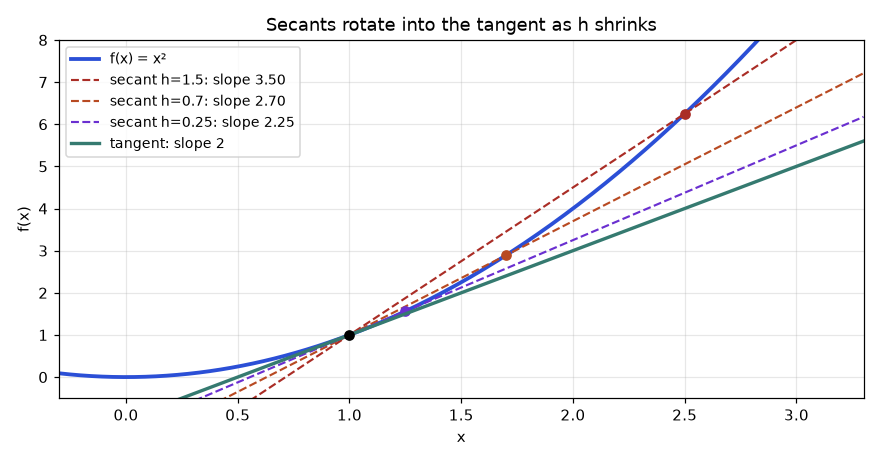
How to read it: the blue curve is f(x) = x2. Each dashed line passes through the black dot at (1, 1) and a second dot at x = 1 + h. The smaller h is, the closer the dashed slope is to the teal tangent slope of 2. In general the secant slope of x2 at x = 1 is ((1 + h)2 − 1)/h = 2 + h, so the three slopes are 3.5, 2.7 and 2.25.
Going deeper
The ancient puzzle here is Zeno's paradox: if an arrow is at one place at each instant, how can it be moving? Calculus answers it by never talking about a single instant on its own. Speed at an instant is defined as the limit of speeds over shrinking windows. Newton and Leibniz both found this idea in the 1600s, Newton for motion and Leibniz for the notation we still use. In data work the "instant" is usually a very practical thing: the slope of the loss curve at the current weights, or the effect on revenue of the next dollar of price.
10.2 Limits and Continuity
Beginner: numeric tables
The safest way to feel a limit is to build a table. Take f(x) = (x2 − 1)/(x − 1) near x = 1. At x = 1 itself it is 0/0, undefined. But:
| x | 0.9 | 0.99 | 0.999 | 1.001 | 1.01 | 1.1 |
|---|---|---|---|---|---|---|
| f(x) | 1.9 | 1.99 | 1.999 | 2.001 | 2.01 | 2.1 |
From both sides the values head to 2. So limx→1 (x2 − 1)/(x − 1) = 2. Algebra confirms it: x2 − 1 = (x − 1)(x + 1), so for x ≠ 1 the fraction equals x + 1, which is 2 at x = 1. The graph is the straight line y = x + 1 with a single hole at (1, 2).
import numpy as np
def f(x):
return (x**2 - 1) / (x - 1)
for x in [0.9, 0.99, 0.999, 1.001, 1.01, 1.1]:
print(x, round(f(x), 4))
# sin(x)/x as x approaches 0
for x in [1.0, 0.1, 0.01, 0.001]:
print(x, round(np.sin(x) / x, 6))0.9 1.9
0.99 1.99
0.999 1.999
1.001 2.001
1.01 2.01
1.1 2.1
1.0 0.841471
0.1 0.998334
0.01 0.999983
0.001 1.0One-sided limits
Sometimes the left and right journeys end in different places. The left-hand limit limx→a⁻ f(x) uses only x < a, and the right-hand limit limx→a⁺ f(x) uses only x > a. The two-sided limit exists only if both one-sided limits exist and are equal.
Problem 10.2.1 A delivery company charges a flat 5 euros for parcels up to 2 kg and 9 euros above 2 kg. Let c(w) be the cost for weight w kg. Find the one-sided limits at w = 2.
| Left | For w slightly below 2 (1.9, 1.99, 1.999), c(w) = 5. So the left limit is 5. |
|---|---|
| Right | For w slightly above 2 (2.1, 2.01, 2.001), c(w) = 9. So the right limit is 9. |
| Compare | 5 ≠ 9, so the two-sided limit at w = 2 does not exist. |
| Meaning | There is a jump. A tiny change in weight can cost 4 euros, so no single "price at 2 kg" is approached. |
The function |x|/x from Figure 10.2 is the classic case: it equals −1 for x < 0 and +1 for x > 0, so the left limit at 0 is −1, the right limit is +1, and the limit does not exist.
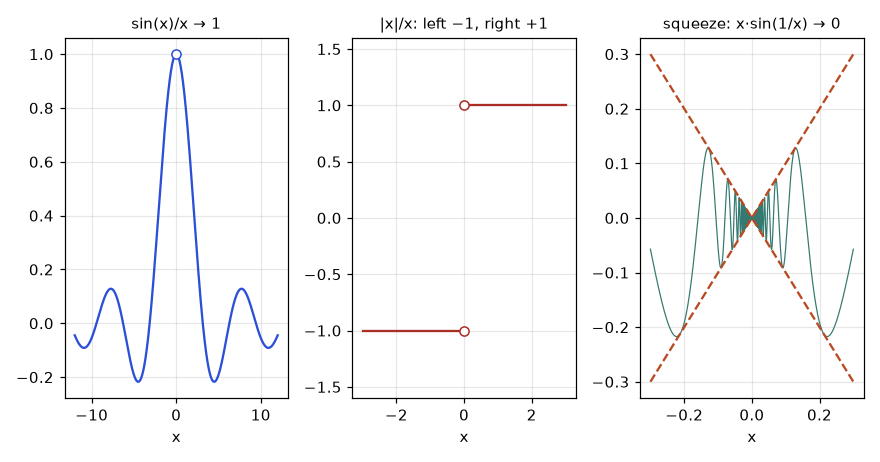
How to read it: in the left panel the curve heads to height 1 at x = 0 although the point itself is missing (open circle). In the middle panel the two flat pieces end at different heights, so there is no single limit. In the right panel the wiggly teal curve is trapped between the dashed orange lines y = |x| and y = −|x|, which both head to 0, forcing the wiggles to 0 too.
Intermediate: limits at infinity
We also ask what happens when x grows without bound. Write limx→∞ f(x) = L when f(x) gets as close to L as we like for all large enough x. Two facts do most of the work: 1/x → 0 and 1/x2 → 0 as x → ∞.
Problem 10.2.2 Find limx→∞ (3x2 + 2x) / (x2 + 1).
| Problem | Top and bottom both grow without bound: the form is ∞/∞, which tells us nothing yet. |
|---|---|
| Idea | Divide the top and bottom by the highest power of x, which is x2. |
| Step 1 | (3x2/x2 + 2x/x2) / (x2/x2 + 1/x2) = (3 + 2/x) / (1 + 1/x2) |
| Step 2 | As x → ∞: 2/x → 0 and 1/x2 → 0, so the fraction → (3 + 0)/(1 + 0) = 3. |
| Check | x = 1000 gives (3,000,000 + 2000)/(1,000,001) = 3,002,000/1,000,001 ≈ 3.002. Close to 3. |
Another famous limit at infinity is limn→∞ (1 + 1/n)n = e ≈ 2.71828, the compounding limit you met in Chapter 3. Limits at infinity matter in machine learning because activation functions flatten out: the sigmoid has limx→∞ σ(x) = 1 and limx→−∞ σ(x) = 0.
Indeterminate forms
Some expressions have no value until you do more work. They are called indeterminate forms: 0/0, ∞/∞, ∞ − ∞, 0·∞, 1∞, 00, ∞0. The word does not mean "the limit does not exist". It means "the form alone does not decide". For example 0/0 can give 2 ((x2 − 1)/(x − 1) at 1), 1 (sin x / x at 0), 0 (x2/x at 0) or no limit at all (|x|/x at 0). The standard tools: factor and cancel, rationalise (multiply by the conjugate), divide by the highest power, or use L'Hôpital's rule (Section 10.8).
Problem 10.2.3 Find limx→0 (√(x + 4) − 2) / x.
| Form | At x = 0: (2 − 2)/0 = 0/0, indeterminate. |
|---|---|
| Idea | Multiply top and bottom by the conjugate √(x + 4) + 2. |
| Step 1 | Top becomes (√(x + 4))2 − 22 = (x + 4) − 4 = x. |
| Step 2 | The fraction is x / (x(√(x + 4) + 2)) = 1 / (√(x + 4) + 2) for x ≠ 0. |
| Step 3 | As x → 0: 1/(√4 + 2) = 1/4. |
| Check | x = 0.001: (√4.001 − 2)/0.001 = (2.00025 − 2)/0.001 ≈ 0.25. ✓. |
Limit laws
If lim f(x) = A and lim g(x) = B (both finite, same approach), then:
- Sum and difference: lim (f ± g) = A ± B.
- Constant multiple: lim (c·f) = c·A.
- Product: lim (f·g) = A·B.
- Quotient: lim (f/g) = A/B, provided B ≠ 0.
- Power: lim (f)n = An, and roots work too when they make sense.
These laws say that for well-behaved formulas you may simply substitute. The only trouble is when substitution gives an indeterminate form such as 0/0. Then you rewrite first, as above.
Continuity
A function is continuous at a if you can draw it through that point without lifting your pen. Precisely, three things must hold: (1) f(a) exists, (2) limx→a f(x) exists, and (3) the two are equal.
Polynomials, exp, sin, cos and the sigmoid are continuous everywhere. ln x and √x are continuous wherever they are defined. A rational function is continuous wherever its denominator is not 0. Sums, products, quotients (with nonzero bottom) and compositions of continuous functions are continuous. The three ways to fail:
- Removable: the limit exists but f(a) is missing or wrong, like (x2 − 1)/(x − 1) at 1. Redefine f(1) = 2 and the hole is filled.
- Jump: the one-sided limits differ, like the shipping cost at 2 kg or a step activation.
- Infinite: the function blows up, like 1/x at 0.
Problem 10.2.4 For which value of k is f(x) = x2 + 1 for x ≤ 2, and f(x) = kx − 3 for x > 2, continuous at x = 2?
| Left limit | 22 + 1 = 5, and f(2) = 5. |
|---|---|
| Right limit | k·2 − 3 = 2k − 3. |
| Match | 2k − 3 = 5 gives 2k = 8, k = 4. |
| Check | With k = 4: at x = 2.001 the right piece is 4·2.001 − 3 = 5.004, close to 5. ✓ |
Going deeper
Squeeze theorem. If g(x) ≤ f(x) ≤ h(x) near a and lim g = lim h = L, then lim f = L. It lets you pin down a messy function between two simple ones. Example: since −1 ≤ sin(1/x) ≤ 1, we have −|x| ≤ x·sin(1/x) ≤ |x|, and both bounds → 0, so x·sin(1/x) → 0 (right panel of Figure 10.2). The same idea, applied to the unit circle and areas, proves lim sin(x)/x = 1 for x in radians, the keystone for the derivative of sine. You do not need to reproduce that proof, but you should know the squeeze is how it is done.
The epsilon-delta definition. "lim f(x) = L" formally means: for every ε > 0 there is a δ > 0 such that 0 < |x − a| < δ implies |f(x) − L| < ε. It is a challenge-response game: an adversary names a tolerance ε around the output and you must answer with a tolerance δ around the input that guarantees it. For f(x) = 3x + 1 near 2 (L = 7), |f(x) − 7| = 3|x − 2|, so δ = ε/3 always works. You will meet the same pattern when you read about convergence of algorithms.
10.3 The Derivative from the Definition
Beginner: the recipe
Every first-principles derivative follows four steps: (1) write f(x + h) and f(x); (2) form the difference f(x + h) − f(x); (3) simplify until you can divide by h; (4) let h → 0. Step 3 is where the work is: you have to simplify until the h in the denominator cancels, otherwise you get 0/0.
Problem 10.3.1 Find the derivative of f(x) = x2 from the definition, then evaluate it at x = 3.
| Step 1 | f(x + h) = (x + h)2 = x2 + 2xh + h2 |
|---|---|
| Step 2 | f(x + h) − f(x) = 2xh + h2 |
| Step 3 | Divide by h: (2xh + h2)/h = 2x + h |
| Step 4 | h → 0: 2x + h → 2x. So f′(x) = 2x. |
| At x = 3 | f′(3) = 6. The tangent at (3, 9) rises 6 units for each 1 unit to the right. |
Problem 10.3.2 Find the derivative of f(x) = x3.
| Step 1 | (x + h)3 = (x + h)(x2 + 2xh + h2) = x3 + 2x2h + xh2 + x2h + 2xh2 + h3 = x3 + 3x2h + 3xh2 + h3 |
|---|---|
| Step 2 | Subtract x3: 3x2h + 3xh2 + h3 |
| Step 3 | Divide by h: 3x2 + 3xh + h2 |
| Step 4 | h → 0: the terms with h vanish, leaving f′(x) = 3x2. |
| Check | At x = 2: f′(2) = 12. Secant with h = 0.01: ((2.01)3 − 8)/0.01 = (8.120601 − 8)/0.01 = 12.0601. ✓ |
Intermediate: harder functions, same recipe
Problem 10.3.3 Find the derivative of f(x) = 1/x for x ≠ 0.
| Step 1 | f(x + h) − f(x) = 1/(x + h) − 1/x |
|---|---|
| Step 2 | Common denominator: (x − (x + h)) / (x(x + h)) = −h / (x(x + h)) |
| Step 3 | Divide by h: −1 / (x(x + h)) |
| Step 4 | h → 0: x + h → x, so f′(x) = −1/x2. |
| Check | At x = 2: f′(2) = −1/4 = −0.25. Secant with h = 0.001: (1/2.001 − 0.5)/0.001 = (0.4997501 − 0.5)/0.001 = −0.2499. ✓ |
Problem 10.3.4 Find the derivative of f(x) = √x for x > 0.
| Step 1 | f(x + h) − f(x) = √(x + h) − √x |
|---|---|
| Idea | Multiply top and bottom by the conjugate √(x + h) + √x, as in Problem 10.2.3. |
| Step 2 | Top: (x + h) − x = h. So the quotient is h / (h(√(x + h) + √x)). |
| Step 3 | Cancel h: 1 / (√(x + h) + √x) |
| Step 4 | h → 0: 1 / (√x + √x) = 1/(2√x). |
| Check | At x = 4: f′(4) = 1/4 = 0.25. Secant with h = 0.01: (√4.01 − 2)/0.01 = (2.002498 − 2)/0.01 = 0.2498. ✓ |
import numpy as np
def slope(f, x, h=1e-6):
return (f(x + h) - f(x)) / h
print(round(slope(lambda x: x**2, 3), 3), "vs 2x =", 2 * 3)
print(round(slope(lambda x: x**3, 2), 3), "vs 3x^2 =", 3 * 2**2)
print(round(slope(lambda x: 1 / x, 2), 4), "vs -1/x^2 =", -1 / 2**2)
print(round(slope(np.sqrt, 4), 4), "vs 1/(2 sqrt x) =", 1 / (2 * np.sqrt(4)))6.0 vs 2x = 6
12.0 vs 3x^2 = 12
-0.25 vs -1/x^2 = -0.25
0.25 vs 1/(2 sqrt x) = 0.25Notation
The same derivative has several names. Learn to read them all, because textbooks, papers and libraries each have a favourite.
| Notation | Read as | Typical use |
|---|---|---|
| f′(x) | "f prime of x" (Lagrange) | Compact, one variable |
| dy/dx | "dee y dee x" (Leibniz) | When y = f(x), shows units: (units of y) per (unit of x) |
| d/dx f(x) | "the derivative with respect to x of f" | An operator you apply to a formula |
| Df, ḟ | operator form, dot for time derivative | Physics, differential equations |
The Leibniz symbol dy/dx looks like a fraction. It is really the limit of the fraction Δy/Δx (change in y over change in x) as Δx → 0. Do not cancel the d's, but do use it as a unit check: if y is revenue in euros and x is price in euros, dy/dx is in "euros of revenue per euro of price".
Going deeper
There is an equivalent form that is useful when you work at a specific point a: f′(a) = limx→a (f(x) − f(a)) / (x − a). It is the same limit with x = a + h. A third view, which underlies all of Section 10.6 and Chapter 11, says that f is differentiable at a exactly when it looks like a straight line when you zoom in far enough: f(a + h) = f(a) + f′(a)h + (something much smaller than h). This is why derivatives are the engine of optimisation: near any point, a smooth function is approximately linear, and a linear function is easy to reason about. The function f(x) = |x| (a V shape) never looks straight at x = 0, however far you zoom, and that is why it has no derivative there.
10.4 Differentiation Rules
Computing every derivative from the definition would be exhausting. The rules below let you differentiate any formula built from simple pieces. For each we give a derivation, so that you know why it is true, then examples.
Constant, power, sum and constant multiple
| Rule | Formula | Why |
|---|---|---|
| Constant | d/dx (c) = 0 | A flat line has slope 0: (c − c)/h = 0 |
| Power | d/dx (xn) = n·xn−1 | Binomial expansion, below |
| Constant multiple | d/dx (c·f) = c·f′ | Pull c out of the limit |
| Sum | d/dx (f + g) = f′ + g′ | Limit of a sum is the sum of limits |
Derivation of the power rule for a positive whole number n. By the binomial theorem (Chapter 4), (x + h)n = xn + n·xn−1·h + (terms with h2 or higher powers of h). Subtract xn, divide by h to get n·xn−1 + (terms with at least one factor h), and let h → 0. The same rule holds for every real n (negative, fractional), which you saw in action for n = −1 and n = 1/2: the derivative of x−1 is −x−2 and of x1/2 is (1/2)x−1/2.
Derivation of sum and constant multiple. For the sum: (f(x + h) + g(x + h) − f(x) − g(x))/h = (f(x + h) − f(x))/h + (g(x + h) − g(x))/h. Each piece tends to f′ and g′. For the constant multiple, c is a common factor and the limit law lets it pass through.
Examples of power, constant and sum rules.
- d/dx (x5) = 5x4. At x = 2 the slope is 5·16 = 80.
- d/dx (x−3) = −3x−4 = −3/x4. And d/dx (1/√x) = d/dx (x−1/2) = −(1/2)x−3/2.
- d/dx (x2.5) = 2.5x1.5. And d/dx (7) = 0, d/dx (π2) = 0, d/dx (1000) = 0.
Problem 10.4.1 Differentiate f(x) = 4x3 − 5x2 + 2x − 9, and evaluate at x = 1.
| Term 1 | 4x3 → 4·3x2 = 12x2 |
|---|---|
| Term 2 | −5x2 → −5·2x = −10x |
| Term 3 | 2x → 2·1 = 2 (since x = x1, derivative 1·x0 = 1) |
| Term 4 | −9 → 0 |
| Answer | f′(x) = 12x2 − 10x + 2. At x = 1: 12 − 10 + 2 = 4. |
Problem 10.4.2 A factory has total cost C(q) = 500 + 3q + 0.02q2 euros for q units. Find the marginal cost C′(q) and its value at q = 100.
| Term by term | 500 → 0; 3q → 3; 0.02q2 → 0.04q |
|---|---|
| Result | C′(q) = 3 + 0.04q |
| At q = 100 | 3 + 4 = 7 euros per extra unit |
| Check | Actual cost of unit 101: C(101) − C(100) = 3 + 0.02(1012 − 1002) = 3 + 0.02·201 = 7.02. Close to 7. ✓ |
Problem 10.4.3 Differentiate f(x) = 6√x + 2/x and evaluate at x = 4.
| Rewrite | f(x) = 6x1/2 + 2x−1 |
|---|---|
| Differentiate | 6·(1/2)x−1/2 + 2·(−1)x−2 = 3x−1/2 − 2x−2 |
| At x = 4 | 3/√4 − 2/16 = 1.5 − 0.125 = 1.375 |
Product rule
Derivation. Think of f·g as the area of a rectangle with sides f(x) and g(x). When x grows by h, the sides grow by Δf and Δg. The area grows by f·Δg (a strip along one side) plus g·Δf (a strip along the other) plus the tiny corner Δf·Δg. Algebraically, add and subtract f(x + h)·g(x):
Divide by h and let h → 0. Since f is continuous, f(x + h) → f(x), so the first piece gives f·g′ and the second g·f′. The corner Δf·Δg is "tiny times tiny" and disappears faster than h.
Problem 10.4.4 Differentiate f(x) = (x2 + 1)(x3 − x).
| Setup | u = x2 + 1, u′ = 2x. v = x3 − x, v′ = 3x2 − 1. |
|---|---|
| Product rule | f′ = u′v + uv′ = 2x(x3 − x) + (x2 + 1)(3x2 − 1) |
| Expand | 2x4 − 2x2 + 3x4 − x2 + 3x2 − 1 = 5x4 + 0x2 − 1 |
| Check | Multiply first: (x2 + 1)(x3 − x) = x5 − x3 + x3 − x = x5 − x, derivative 5x4 − 1. ✓ |
Problem 10.4.5 Differentiate x·√x using the product rule, and compare with the power rule.
| Setup | u = x, u′ = 1. v = √x, v′ = 1/(2√x). |
|---|---|
| Product rule | 1·√x + x·1/(2√x) = √x + √x/2 = 1.5√x |
| Power rule | x·√x = x3/2, derivative (3/2)x1/2 = 1.5√x. ✓ |
Problem 10.4.6 The demand for a product is q = 100 − 2p units at price p euros. Revenue is R = p·q. Find the price at which R′(p) = 0 and the revenue there.
| Product rule | R = p(100 − 2p). R′ = 1·(100 − 2p) + p·(−2) = 100 − 4p. |
|---|---|
| Set to zero | 100 − 4p = 0, so p = 25 euros. |
| Revenue | q = 100 − 50 = 50 units, R = 25·50 = 1250 euros. |
| Meaning | Below 25 euros, raising the price raises revenue (R′ > 0). Above, it lowers it. At 25 the revenue curve is flat at its peak. Chapter 11 turns this reasoning into the general method for optimisation. |
Quotient rule
Derivation. Let q = f/g, so f = q·g. Apply the product rule: f′ = q′g + q g′. Solve for q′: q′ = (f′ − q g′)/g = (f′ − (f/g) g′)/g. Multiply top and bottom by g: q′ = (f′g − f g′)/g2. A mnemonic: "low d-high minus high d-low, over low squared", with the order of the subtraction being the one thing you must never swap.
Problem 10.4.7 Differentiate f(x) = x2/(x + 1) and evaluate at x = 1.
| Setup | top t = x2, t′ = 2x. bottom b = x + 1, b′ = 1. |
|---|---|
| Rule | (t′b − t b′)/b2 = (2x(x + 1) − x2·1)/(x + 1)2 |
| Simplify | (2x2 + 2x − x2)/(x + 1)2 = (x2 + 2x)/(x + 1)2 |
| At x = 1 | (1 + 2)/4 = 0.75 |
Problem 10.4.8 Differentiate f(x) = (3x + 2)/(x2 + 1) and evaluate at x = 1.
| Setup | t = 3x + 2, t′ = 3. b = x2 + 1, b′ = 2x. |
|---|---|
| Rule | (3(x2 + 1) − (3x + 2)(2x))/(x2 + 1)2 |
| Simplify top | 3x2 + 3 − 6x2 − 4x = −3x2 − 4x + 3 |
| At x = 1 | (−3 − 4 + 3)/(2)2 = −4/4 = −1 |
Problem 10.4.9 The average cost per unit is A(q) = (500 + 3q)/q. Find A′(q) and A′(50).
| Simplify first | A(q) = 500/q + 3 = 500q−1 + 3. (Often simplifying beats the quotient rule.) |
|---|---|
| Derivative | A′(q) = −500q−2 = −500/q2 |
| At q = 50 | −500/2500 = −0.2 euros per unit per extra unit |
| Quotient rule check | t = 500 + 3q, t′ = 3, b = q, b′ = 1: (3q − (500 + 3q))/q2 = −500/q2. ✓ |
The meaning: the fixed cost of 500 is spread over more units as q grows, so the average cost falls, and it falls more slowly the larger q is. That is "economies of scale" in one derivative.
Chain rule (first look)
Most functions are compositions: an inner function feeds an outer one, as in y = (3x + 1)5, where u = 3x + 1 is inside and y = u5 is outside. The chain rule says that rates multiply along the chain:
In words: (derivative of the outer function, evaluated at the inner function) times (derivative of the inner function). This is the most important rule in machine learning, because a neural network is a long chain of compositions, and backpropagation (Chapter 13) is the chain rule applied systematically.
Derivation sketch. When x changes by Δx, u changes by Δu, and y changes by Δy. As long as Δu ≠ 0, Δy/Δx = (Δy/Δu)·(Δu/Δx). Let Δx → 0: then Δu → 0 too, and the two factors tend to dy/du and du/dx. (A fully rigorous proof handles the case Δu = 0 separately. The result is the same.)
Problem 10.4.10 Differentiate y = (3x + 1)5 and evaluate at x = 1.
| Split | Inner u = 3x + 1, du/dx = 3. Outer y = u5, dy/du = 5u4. |
|---|---|
| Multiply | dy/dx = 5u4·3 = 15(3x + 1)4 |
| At x = 1 | u = 4, so 15·44 = 15·256 = 3840 |
Problem 10.4.11 Differentiate y = √(x2 + 1) and evaluate at x = 3.
| Split | u = x2 + 1, du/dx = 2x. y = u1/2, dy/du = 1/(2√u). |
|---|---|
| Multiply | dy/dx = 2x/(2√(x2 + 1)) = x/√(x2 + 1) |
| At x = 3 | 3/√10 = 3/3.16228 = 0.9487 |
Problem 10.4.12 Three layers: differentiate y = (√x + 1)4 and evaluate at x = 4.
| Layers | v = √x, u = v + 1, y = u4. |
|---|---|
| Rates | dv/dx = 1/(2√x), du/dv = 1, dy/du = 4u3. |
| Multiply | dy/dx = 4u3·1·1/(2√x) = 4(√x + 1)3/(2√x) |
| At x = 4 | √x = 2, u = 3: 4·27/(4) = 27 |
import numpy as np
def central(f, x, h=1e-6):
return (f(x + h) - f(x - h)) / (2 * h)
checks = [
("poly 4x^3-5x^2+2x-9 at 1", lambda x: 4*x**3 - 5*x**2 + 2*x - 9, 1, 4),
("(x^2+1)(x^3-x) at 2", lambda x: (x**2 + 1) * (x**3 - x), 2, 5 * 2**4 - 1),
("x^2/(x+1) at 1", lambda x: x**2 / (x + 1), 1, 0.75),
("(3x+2)/(x^2+1) at 1", lambda x: (3*x + 2) / (x**2 + 1), 1, -1),
("(3x+1)^5 at 1", lambda x: (3*x + 1)**5, 1, 3840),
("sqrt(x^2+1) at 3", lambda x: np.sqrt(x**2 + 1), 3, 3 / np.sqrt(10)),
("(sqrt x + 1)^4 at 4", lambda x: (np.sqrt(x) + 1)**4, 4, 27),
]
for name, f, x, exact in checks:
print(name, round(central(f, x), 3), round(exact, 3))poly 4x^3-5x^2+2x-9 at 1 4.0 4
(x^2+1)(x^3-x) at 2 79.0 79
x^2/(x+1) at 1 0.75 0.75
(3x+2)/(x^2+1) at 1 -1.0 -1
(3x+1)^5 at 1 3840.0 3840
sqrt(x^2+1) at 3 0.949 0.949
(sqrt x + 1)^4 at 4 27.0 27Rules at a glance
| Rule | Formula | Quick example |
|---|---|---|
| Constant | (c)′ = 0 | (8)′ = 0 |
| Power | (xn)′ = n xn−1 | (x6)′ = 6x5 |
| Constant multiple | (cf)′ = c f′ | (5x3)′ = 15x2 |
| Sum | (f + g)′ = f′ + g′ | (x2 + x)′ = 2x + 1 |
| Product | (fg)′ = f′g + fg′ | (x·x2)′ = x2 + 2x2 = 3x2 |
| Quotient | (f/g)′ = (f′g − fg′)/g2 | (1/x)′ = −1/x2 |
| Chain | (f(g(x)))′ = f′(g(x))·g′(x) | ((2x)3)′ = 3(2x)2·2 = 24x2 |
Going deeper
The product rule generalises to many factors: (f g h)′ = f′gh + fg′h + fgh′ (differentiate one factor at a time, keep the others). The chain rule is the reason deep networks can be trained at all: a network computes y = fL(…f2(f1(x))), and its derivative is the product of the layer derivatives. If many of those factors are smaller than 1 (such as the sigmoid derivative, at most 0.25), the product shrinks exponentially with depth: the vanishing gradient problem. If many are larger than 1, it explodes. Both are consequences of "rates multiply" and you will see them again in Chapter 13. A common interview prompt: "Differentiate y = ln(1 + x2)". The chain rule gives (1/(1 + x2))·2x once you know the derivative of the logarithm, which is next.
10.5 Derivatives of the Functions Data Science Uses
Exponential and logarithm
The number e ≈ 2.71828 is defined so that the exponential ex has slope equal to its own height. To see it, differentiate from the definition: (ex+h − ex)/h = ex·(eh − 1)/h. The factor ex does not depend on h and comes out of the limit. What is left is limh→0 (eh − 1)/h, and this limit equals exactly 1; that is one way to define e.
Numerically, (e0.001 − 1)/0.001 = 1.0005. For any other base a, write ax = ex ln a and use the chain rule: d/dx ax = ax·ln a. For ekx the chain rule gives k·ekx. For the logarithm, use implicit reasoning: let y = ln x, so ey = x. Differentiate both sides with respect to x, remembering that y depends on x: ey·y′ = 1, so y′ = 1/ey = 1/x.
Problem 10.5.1 Differentiate (a) f(x) = e3x, (b) g(x) = ln(1 + x2), (c) h(x) = x·e−x. Evaluate each at x = 1.
| (a) | Chain rule: 3e3x. At x = 1: 3e3 = 3·20.0855 = 60.2566. |
|---|---|
| (b) | u = 1 + x2, u′ = 2x. g′ = 2x/(1 + x2). At x = 1: 2/2 = 1. |
| (c) | Product rule: 1·e−x + x·(−e−x) = e−x(1 − x). At x = 1: 0. The slope is flat at x = 1: that is the peak of x·e−x, whose value there is 1/e = 0.3679. |
Sine and cosine
For f(x) = sin x, use the angle-addition formula sin(x + h) = sin x cos h + cos x sin h. Then
Two limits do the job: sin h / h → 1 (the squeeze result from Section 10.2) and (cos h − 1)/h → 0. (Check the second numerically: h = 0.01 gives (0.99995 − 1)/0.01 = −0.005, heading to 0.) So d/dx sin x = cos x. In the same way d/dx cos x = −sin x. Both assume x is in radians. In degrees, a factor π/180 appears, which is one reason mathematics always uses radians.
Sigmoid, tanh, ReLU and softplus
These four are the activation functions of neural networks, and you can already plot them with the tools of Chapter 2. Their derivatives drive every training step.
Sigmoid. σ(x) = 1/(1 + e−x). Write it as (1 + e−x)−1 and use the chain rule with inner u = 1 + e−x, u′ = −e−x.
Now split the square into two factors: e−x/(1 + e−x)2 = [1/(1 + e−x)]·[e−x/(1 + e−x)]. The first factor is σ(x). For the second, note that 1 − σ(x) = (1 + e−x − 1)/(1 + e−x) = e−x/(1 + e−x). So
This is beautiful for computation: once you have σ(x) from the forward pass, the derivative costs one subtraction and one multiplication. It is largest at x = 0, where σ = 0.5 and σ′ = 0.25. For large |x| it dies away: σ(10) = 0.9999546, so σ′(10) = 0.9999546·0.0000454 = 4.54 × 10−5. A neuron saturated at 10 passes almost no gradient back.
Tanh. tanh x = (ex − e−x)/(ex + e−x). Let N = ex − e−x and D = ex + e−x. Then N′ = D and D′ = N. The quotient rule gives (N′D − ND′)/D2 = (D2 − N2)/D2 = 1 − (N/D)2.
Its maximum slope is 1 at x = 0 (four times the sigmoid's). Also tanh x = 2σ(2x) − 1, so tanh is a rescaled sigmoid.
ReLU. ReLU(x) = max(0, x), which is 0 for x < 0 and x for x > 0. So ReLU′(x) = 0 for x < 0 and 1 for x > 0. At x = 0 the left slope is 0 and the right slope is 1. They differ, so ReLU is not differentiable at 0. In practice that is fine, because exactly 0 almost never occurs and frameworks simply return a chosen value (PyTorch and TensorFlow return 0). Mathematically, optimisers use a subgradient: any slope g such that the line through the point with slope g stays below the function. At x = 0 every g between 0 and 1 qualifies, so the subdifferential of ReLU at 0 is the whole interval [0, 1], and 0 is a valid choice.
Softplus. softplus(x) = ln(1 + ex), a smooth version of ReLU. By the chain rule with u = 1 + ex, u′ = ex:
So the derivative of softplus is the sigmoid, a neat connection: softplus is a smooth ramp and its slope climbs smoothly from 0 to 1.
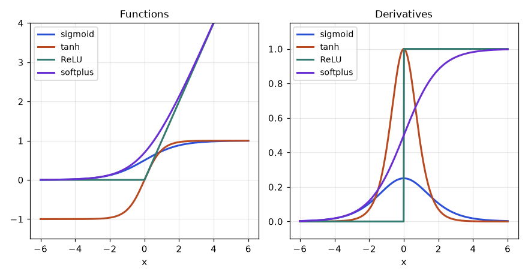
How to read it: on the right, the sigmoid derivative (blue) is a bump of height 0.25 that vanishes far from 0, the tanh derivative (orange) is a taller bump of height 1, the ReLU derivative (teal) is a step from 0 to 1 at x = 0, and the softplus derivative (purple) is the S-shaped sigmoid itself. Where a derivative curve is near 0, learning stops for that neuron.
import numpy as np
def sigmoid(x):
return 1 / (1 + np.exp(-x))
def central(f, x, h=1e-6):
return (f(x + h) - f(x - h)) / (2 * h)
for x in [0.0, 2.0, 10.0]:
s = sigmoid(x)
print("x =", x, "sigma =", round(s, 7), "formula s(1-s) =", round(s * (1 - s), 7),
"numeric =", round(central(sigmoid, x), 7))
x = 0.7
print("tanh'", round(1 - np.tanh(x)**2, 6), round(central(np.tanh, x), 6))
softplus = lambda x: np.log(1 + np.exp(x))
print("softplus' = sigmoid", round(sigmoid(x), 6), round(central(softplus, x), 6))x = 0.0 sigma = 0.5 formula s(1-s) = 0.25 numeric = 0.25
x = 2.0 sigma = 0.8807971 formula s(1-s) = 0.1049936 numeric = 0.1049936
x = 10.0 sigma = 0.9999546 formula s(1-s) = 4.54e-05 numeric = 4.54e-05
tanh' 0.63474 0.63474
softplus' = sigmoid 0.668188 0.668188Problem 10.5.2 Logistic regression predicts p = σ(z) for a score z, and the loss for a true label y = 1 is L = −ln p. Find dL/dz and evaluate it at z = 0.5.
| Chain | L = −ln σ(z). dL/dp = −1/p. dp/dz = σ(1 − σ) = p(1 − p). |
|---|---|
| Multiply | dL/dz = (−1/p)·p(1 − p) = −(1 − p) = p − 1 |
| Evaluate | σ(0.5) = 1/(1 + e−0.5) = 1/(1 + 0.60653) = 0.62246. So dL/dz = −0.37754. |
| Meaning | For y = 1, the general result is dL/dz = p − y. Raising z lowers the loss, at the rate (1 − p). The more confident and correct the model, the smaller the push. The sigmoid factor p(1 − p) cancelled the −1/p, which is one reason sigmoid and log loss are used together. |
Implicit differentiation
Sometimes y is not given as "y = formula in x", but as an equation linking x and y, such as a circle. Implicit differentiation differentiates both sides with respect to x, treating y as an unknown function of x (so the chain rule produces a factor y′ whenever y appears), and then solves for y′.
Problem 10.5.3 Find the slope of the circle x2 + y2 = 25 at the point (3, 4).
| Differentiate | d/dx x2 = 2x. d/dx y2 = 2y·y′ (chain rule). d/dx 25 = 0. So 2x + 2y·y′ = 0. |
|---|---|
| Solve | y′ = −x/y |
| At (3, 4) | y′ = −3/4 |
| Check | The top half of the circle is y = √(25 − x2). Its derivative is −x/√(25 − x2) = −3/4 at x = 3. ✓ Also the radius to (3, 4) has slope 4/3 and the tangent is perpendicular: slope −3/4. ✓ |
Problem 10.5.4 Find dy/dx for the curve xy = 12 at the point (3, 4).
| Differentiate | Product rule: 1·y + x·y′ = 0 |
|---|---|
| Solve | y′ = −y/x |
| At (3, 4) | −4/3 |
| Check | Explicitly y = 12/x, y′ = −12/x2 = −12/9 = −4/3. ✓ |
Problem 10.5.5 The folium x3 + y3 = 6xy passes through (3, 3). Find y′ there.
| Check point | 27 + 27 = 54 and 6·3·3 = 54. ✓ The point is on the curve. |
|---|---|
| Differentiate | 3x2 + 3y2y′ = 6y + 6x·y′ (product rule on the right) |
| Collect y′ | 3y2y′ − 6xy′ = 6y − 3x2, so y′ = (6y − 3x2)/(3y2 − 6x) = (2y − x2)/(y2 − 2x) |
| At (3, 3) | (6 − 9)/(9 − 6) = −3/3 = −1 |
Implicit differentiation is how the derivative of the logarithm was found above, and also how you obtain derivatives of inverse functions. In machine learning it appears when a quantity is defined as the solution of an equation, for example the optimal weights as a solution of "gradient = 0": how the optimum moves when a hyperparameter changes is found by differentiating that equation implicitly.
Derivative table
| f(x) | f′(x) | Note |
|---|---|---|
| c | 0 | constant |
| xn | n xn−1 | any real n |
| ex | ex | its own slope |
| ax | ax ln a | a > 0 |
| ln x | 1/x | x > 0 |
| sin x | cos x | radians |
| cos x | −sin x | radians |
| tanh x | 1 − tanh2 x | max 1 at 0 |
| σ(x) = 1/(1 + e−x) | σ(1 − σ) | max 0.25 at 0 |
| ReLU(x) = max(0, x) | 0 if x < 0, 1 if x > 0 | not differentiable at 0 |
| softplus(x) = ln(1 + ex) | σ(x) | smooth ReLU |
Higher derivatives
The derivative of the derivative is the second derivative, written f″(x) or d2y/dx2. It measures how the slope itself is changing, that is, the curvature. If f′ is positive the function rises, and if f″ is positive the function is bending upwards (convex, like a bowl). In motion: position s, velocity s′, acceleration s″.
Problem 10.5.6 Find the first four derivatives of f(x) = x4 − 3x2, and the second derivative at x = 1.
| f′ | 4x3 − 6x |
|---|---|
| f″ | 12x2 − 6 |
| f‴ | 24x |
| f⁗ | 24 (and every later derivative is 0) |
| At x = 1 | f″(1) = 12 − 6 = 6 > 0: the graph is curving upwards there. |
Sine and cosine cycle with period four: sin → cos → −sin → −cos → sin. The exponential ex is its own derivative at every order. For the sigmoid, σ″ = σ′(1 − 2σ), so the slope is increasing for x < 0 and decreasing for x > 0, with the steepest point at 0. Second derivatives become the Hessian matrix in Chapter 12, which tells optimisation algorithms about the shape of the loss surface.
np.diff(users) for the first and np.diff(users, 2) for the second.import numpy as np
users = 500 + 10 * np.arange(6) ** 2 # U(t) at t = 0, 1, ..., 5
print(users)
print(np.diff(users)) # average growth per day (first difference)
print(np.diff(users, 2)) # change of growth (second difference)[500 510 540 590 660 750]
[10 30 50 70 90]
[20 20 20 20]The second differences are constant at 20, matching U″(t) = 20 for U(t) = 500 + 10t2: the growth speeds up by a steady 20 users per day each day.
10.6 The Derivative as a Local Linear Approximation
Beginner: the tangent line formula
The tangent to f at x = a passes through (a, f(a)) with slope f′(a), so its equation is y = f(a) + f′(a)(x − a). The linear approximation (or linearisation) says that near a:
Problem 10.6.1 Estimate √26 without a calculator.
| Pick a | A nearby number whose root is easy: a = 25, f(x) = √x, f(25) = 5. |
|---|---|
| Derivative | f′(x) = 1/(2√x), so f′(25) = 1/10 = 0.1. |
| Approximate | h = 1: √26 ≈ 5 + 0.1·1 = 5.1 |
| Check | True value 5.09902. The error is 0.001, tiny. |
Problem 10.6.2 Estimate 1.0110 (a 1% growth rate for 10 periods).
| Setup | f(x) = x10, a = 1, h = 0.01. f(1) = 1, f′(x) = 10x9, f′(1) = 10. |
|---|---|
| Approximate | 1 + 10·0.01 = 1.10 |
| Check | True value 1.104622. Error 0.0046. The tangent ignores compounding of the interest on interest, which is the curvature. |
Problem 10.6.3 Estimate ln(1.05).
| Setup | f(x) = ln x, a = 1, h = 0.05. f(1) = 0, f′(1) = 1/1 = 1. |
|---|---|
| Approximate | ln(1.05) ≈ 0 + 1·0.05 = 0.05 |
| Check | True value 0.04879. Error 0.0012. |
| Meaning | For small r, ln(1 + r) ≈ r. This is why a log change in a metric is read as "approximately the percentage change": a log difference of 0.05 means roughly +5%. |
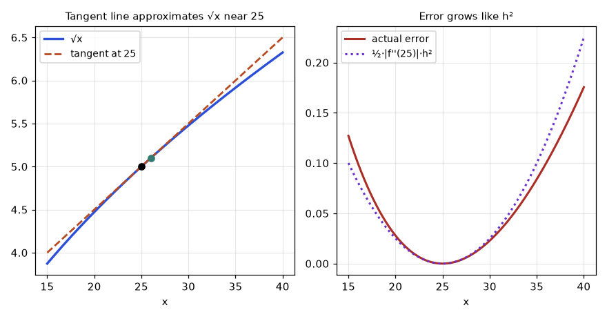
How to read it: on the left the orange dashed tangent hugs the blue curve near x = 25 and drifts away further out. On the right the red curve is the actual error, which is 0 at x = 25 and grows like a parabola. The dotted purple curve is the estimate ½|f″(25)|h2 explained below, and it is almost on top of the actual error.
import numpy as np
print("sqrt(26):", round(5 + 0.1 * 1, 5), "true", round(np.sqrt(26), 5))
print("1.01^10:", 1 + 10 * 0.01, "true", round(1.01**10, 6))
print("ln(1.05):", 0.05, "true", round(np.log(1.05), 5))sqrt(26): 5.1 true 5.09902
1.01^10: 1.1 true 1.104622
ln(1.05): 0.05 true 0.04879Intermediate: differentials and error estimates
Write Δy = f(x + Δx) − f(x) for the true change in output, and dy = f′(x)·dx for the differential, the change predicted by the tangent. For small dx the two nearly agree. This is the tool for answering "if my input is slightly off, how much is my output off?"
Problem 10.6.4 You measure the radius of a spherical tank as r = 10 m with a possible error of 0.1 m. Estimate the error in the volume V = (4/3)πr3.
| Derivative | dV/dr = 4πr2 |
|---|---|
| At r = 10 | 4π·100 = 1256.64 m3 per metre |
| Differential | dV = 1256.64·0.1 = 125.66 m3 |
| Relative error | V = (4/3)π·1000 = 4188.79. 125.66/4188.79 = 0.03, i.e. 3%. This equals 3·(0.1/10) = 3·1%: the exponent 3 multiplies the relative error. |
| Check | True change: (4/3)π(10.13 − 103) = (4/3)π·30.301 = 126.92. Close to 125.66. ✓ |
The general rule: for f(x) = xn, relative error of the output ≈ n × relative error of the input. A 1% error in a radius becomes 2% in an area and 3% in a volume.
How big is the approximation error? The tangent line misses the curvature. A more precise statement (Taylor's theorem, Chapter 11) is that
For √x at a = 25: f″(x) = −(1/4)x−3/2, so |f″(25)| = 1/(4·125) = 0.002. With h = 1 the error estimate is ½·0.002·1 = 0.001, matching the true error 0.001 found in Problem 10.6.1. Two practical lessons: halving the step cuts the error by four (h2), and a function with large curvature needs a smaller neighbourhood.
Interpreting derivatives in business and data
The derivative's value always carries units: (output units) per (input unit). That makes it a story you can tell a stakeholder.
- Marginal cost: C′(q) is the approximate cost of the next unit. In Problem 10.4.2, C′(100) = 7 euros while the true cost of unit 101 was 7.02.
- Marginal revenue, marginal profit: set marginal revenue equal to marginal cost to find the profit-maximising quantity (Chapter 11).
- Sensitivity of a model: the derivative of the model output with respect to one input says how much the prediction moves when that input moves a little.
Elasticity. Raw derivatives depend on units (euros versus cents). Economists use the unit-free price elasticity of demand, the percentage change in quantity per percentage change in price:
Problem 10.6.5 Demand is q = 1000 − 20p. Find the elasticity at p = 10, and decide whether raising the price raises revenue.
| Quantity | q(10) = 1000 − 200 = 800. |
|---|---|
| Derivative | dq/dp = −20. |
| Elasticity | E = −20·(10/800) = −0.25. |
| Meaning | A 1% price rise cuts quantity by about 0.25%. Demand is inelastic (|E| < 1), so revenue rises when the price rises. |
| Check | R = p(1000 − 20p), R′ = 1000 − 40p = 600 > 0 at p = 10. ✓ (R′ = 0 at p = 25, where |E| = 20·25/500 = 1.) |
A neat consequence: if q = A·p−b (a power law), then d ln q / d ln p = −b everywhere, a constant elasticity. This is why log-log regressions (regress ln q on ln p) have slopes that are directly elasticities.
Problem 10.6.6 A churn model gives the probability of cancelling as p = σ(z) with z = −2 + 0.5·t, where t is the number of support tickets. Find how fast p changes with t at t = 2, and compare with the actual change from 2 to 3 tickets.
| Chain rule | dp/dt = σ′(z)·dz/dt = σ(z)(1 − σ(z))·0.5 |
|---|---|
| At t = 2 | z = −1. σ(−1) = 1/(1 + e) = 0.26894. 1 − σ = 0.73106. |
| Compute | dp/dt = 0.5·0.26894·0.73106 = 0.5·0.19661 = 0.0983 per ticket |
| Actual 2 to 3 | z goes −1 to −0.5. σ(−0.5) = 0.37754. Change = 0.37754 − 0.26894 = 0.1086. |
| Meaning | Around 2 tickets, each extra ticket adds about 10 percentage points of churn probability. The tangent (0.0983) underestimates the step of a full ticket (0.1086) because the sigmoid is still curving upwards (σ″ > 0 for z < 0). |
import numpy as np
sigmoid = lambda z: 1 / (1 + np.exp(-z))
z = -2 + 0.5 * 2
p = sigmoid(z)
print("slope at t=2:", round(0.5 * p * (1 - p), 4))
print("actual step 2->3:", round(sigmoid(-2 + 0.5 * 3) - p, 4))
# elasticity of q = 1000 - 20 p at p = 10
q = 1000 - 20 * 10
print("elasticity:", -20 * 10 / q)slope at t=2: 0.0983
actual step 2->3: 0.1086
elasticity: -0.25Going deeper
A linear approximation turns a hard nonlinear question into an easy linear one, and this is the principle behind half of numerical analysis. Newton's method for solving f(x) = 0 replaces f by its tangent and solves the linear equation (Chapter 11). Gradient descent replaces the loss by its tangent plane and steps downhill (Chapter 14). Uncertainty propagation ("the delta method" in statistics, see the Statistics document) uses dy = f′(x)dx to turn the variance of an estimate into the variance of a transformed estimate: Var(f(X)) ≈ f′(μ)2·Var(X). For instance, if the log of a metric has standard error 0.02, then the metric itself has relative standard error about 2%. The price of the approximation is the h2 error, and the cure is the second-order term, which is the start of Taylor series.
10.7 Numerical Differentiation and a Taste of Automatic Differentiation
Sometimes you have no formula: the function is a simulation, a trained model, or a black-box API. You can still measure its slope by evaluating it at nearby points. This is numerical differentiation, and it is just the definition of the derivative with a small but nonzero h.
Beginner: forward and central differences
Problem 10.7.1 Estimate the derivative of f(x) = x2 at x = 3 with h = 0.1, forward and central. The true value is 6.
| Values | f(3) = 9, f(3.1) = 9.61, f(2.9) = 8.41. |
|---|---|
| Forward | (9.61 − 9)/0.1 = 0.61/0.1 = 6.1. Error 0.1. |
| Central | (9.61 − 8.41)/(2·0.1) = 1.2/0.2 = 6.0. Error 0. |
| Why exact | For a parabola the central difference is exact, since the errors from both sides cancel perfectly. |
Intermediate: why the central difference is more accurate
Use the tangent approximation with one more term (Taylor, Chapter 11): f(x ± h) = f(x) ± f′h + ½f″h2 ± (1/6)f‴h3 + …. For the forward difference, (f(x + h) − f(x))/h = f′ + ½f″h + …, so the truncation error is about ½f″·h and shrinks linearly in h (order h). For the central difference, subtracting f(x − h) from f(x + h) cancels the f″ term: (f(x + h) − f(x − h))/(2h) = f′ + (1/6)f‴h2 + …, so the truncation error shrinks like h2 (order h2). Cut h by 10 and the forward error falls 10 times, the central error falls 100 times.
Problem 10.7.2 Estimate the derivative of f(x) = sin x at x = 1, forward and central with h = 0.1. True value cos 1 = 0.540302.
| Values | sin(1) = 0.841471, sin(1.1) = 0.891207, sin(0.9) = 0.783327. |
|---|---|
| Forward | (0.891207 − 0.841471)/0.1 = 0.497364. Error 0.0429. |
| Central | (0.891207 − 0.783327)/0.2 = 0.539400. Error 0.0009. |
| Check with theory | Forward error ≈ ½|f″|h = ½·0.8415·0.1 = 0.042. Central error ≈ (1/6)|f‴|h2 = (1/6)·0.5403·0.01 = 0.0009. ✓ |
Expert: the step size trade-off
If h smaller means a smaller truncation error, why not take h = 10−15? Because computers store numbers with about 16 significant digits (the machine epsilon is about 2.2 × 10−16). The two values f(x + h) and f(x) agree in almost all digits, and subtracting them cancels those digits, leaving mostly rounding noise, which is then divided by the tiny h and amplified. The round-off error is therefore of order ε·|f(x)|/h and grows as h shrinks. Total error ≈ (truncation, grows with h) + (round-off, grows as 1/h): a V-shaped curve with a best h in the middle. Balancing c1h against ε/h gives h ≈ √ε ≈ 10−8 for the forward difference, and balancing c2h2 against ε/h gives h ≈ ε1/3 ≈ 10−5 to 10−6 for the central difference.
import numpy as np
x = 1.0
true = np.exp(1.0) # derivative of e^x at 1 is e
print("h forward error central error")
for k in range(1, 16, 2):
h = 10.0 ** (-k)
fwd = (np.exp(x + h) - np.exp(x)) / h
cen = (np.exp(x + h) - np.exp(x - h)) / (2 * h)
print(f"1e-{k:02d} {abs(fwd - true):.2e} {abs(cen - true):.2e}")h forward error central error
1e-01 1.41e-01 4.53e-03
1e-03 1.36e-03 4.53e-07
1e-05 1.36e-05 5.86e-11
1e-07 1.40e-07 5.86e-11
1e-09 2.15e-07 6.60e-09
1e-11 3.26e-05 1.04e-05
1e-13 4.56e-04 4.56e-04
1e-15 3.90e-01 1.68e-01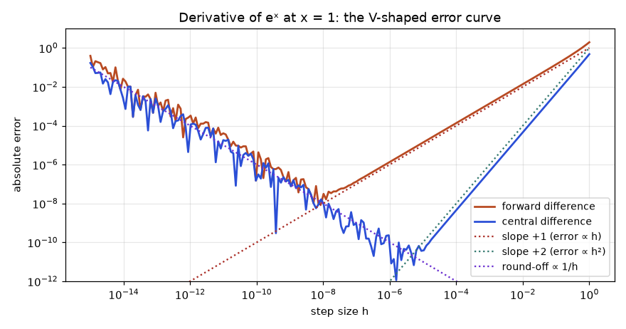
How to read it: on the right (large h) the errors fall along straight lines of slope 1 (forward, orange) and slope 2 (central, blue) as h decreases: that is truncation error. Past the bottom of the V, around h = 10−8 for the forward and about 10−6 for the central difference, the error climbs again as h shrinks, following the 1/h round-off line: that is rounding noise. The best achievable accuracy is only about 10−8 for the forward difference and about 10−10 for the central difference.
Problem 10.7.3 What happens with h = 10−16 for f(x) = x2 at x = 1? The true derivative is 2.
| Round-off | 1 + 10−16 is smaller than the spacing of doubles near 1 (about 2.2 × 10−16), so it is stored as exactly 1.0. |
|---|---|
| Evaluate | f(1 + h) = 1.0 and f(1) = 1.0, so the difference is 0. |
| Answer | The estimate is 0/h = 0, a total failure with 100% error, produced by a step that was "more accurate" on paper. |
f = lambda x: x**2
h = 1e-16
print((f(1 + h) - f(1)) / h) # round-off wipes out the signal
h = 1e-8
print(round((f(1 + h) - f(1)) / h, 6))
h = 1e-5
print(round((f(1 + h) - f(1 - h)) / (2 * h), 6))0.0
2.0
2.0Automatic differentiation: a teaser
There is a third way, neither symbolic algebra nor finite differences: automatic differentiation (AD). It computes exact derivatives (up to floating-point rounding, with no truncation error) by applying the chain rule to every elementary operation in the program. The simplest form is forward mode with dual numbers. Carry two numbers through every calculation: the value v and its derivative d with respect to the input. Each operation updates both using the rules of this chapter: (a, a′) + (b, b′) = (a + b, a′ + b′); (a, a′)·(b, b′) = (ab, a′b + ab′) (product rule); exp(a, a′) = (ea, eaa′) (chain rule). Start with the input x as (x, 1), because dx/dx = 1.
import math
class Dual:
def __init__(self, v, d=0.0):
self.v, self.d = v, d
def _w(self, o):
return o if isinstance(o, Dual) else Dual(o, 0.0)
def __add__(self, o):
o = self._w(o); return Dual(self.v + o.v, self.d + o.d)
__radd__ = __add__
def __mul__(self, o):
o = self._w(o); return Dual(self.v * o.v, self.d * o.v + self.v * o.d)
__rmul__ = __mul__
def __neg__(self):
return Dual(-self.v, -self.d)
def __truediv__(self, o):
o = self._w(o)
return Dual(self.v / o.v, (self.d * o.v - self.v * o.d) / o.v**2)
def __rtruediv__(self, o):
return self._w(o) / self
def exp(a):
return Dual(math.exp(a.v), math.exp(a.v) * a.d)
f = lambda x: x * x * x + 2 * x
r = f(Dual(2.0, 1.0))
print(r.v, r.d) # f(2) = 12, f'(2) = 3*4 + 2 = 14
sigmoid = lambda x: 1 / (1 + exp(-x))
s = sigmoid(Dual(0.0, 1.0))
print(s.v, s.d) # 0.5 and 0.2512.0 14.0
0.5 0.25In about 25 lines the engine reproduced the product, quotient and chain rules and the sigmoid derivative 0.25, without a single formula for the derivative being typed by hand. Deep learning libraries use the reverse mode instead: one backward sweep gives the derivative of one output with respect to all millions of inputs at the cost of a few forward passes. Forward mode needs one sweep per input, which is why reverse mode (backpropagation) wins when there are many weights and one loss. You will build it in Chapter 13. For now remember the comparison: symbolic differentiation gives a formula but can explode in size, finite differences are easy but approximate and slow for many inputs, automatic differentiation is exact and efficient.
10.8 The Expert Layer
Differentiable versus continuous
Theorem. If f is differentiable at a, then f is continuous at a. Proof. For h ≠ 0, f(a + h) − f(a) = [(f(a + h) − f(a))/h]·h. As h → 0 the bracket tends to f′(a), a finite number, and h tends to 0, so the product tends to f′(a)·0 = 0. Hence f(a + h) → f(a). ∎
The converse is false: continuous does not imply differentiable. Three standard counterexamples at x = 0:
- |x| (a corner): the secant slope (|h| − 0)/h is −1 for h < 0 and +1 for h > 0, two different one-sided limits. It is continuous, with slope −1 on the left and +1 on the right. ReLU is the same shape with slopes 0 and 1.
- x1/3 (a vertical tangent): the secant slope h1/3/h = h−2/3 grows without bound as h → 0, so the derivative would be infinite.
- x·sin(1/x) (with value 0 at 0), an infinite wiggle: it is continuous (squeeze), but the secant slope sin(1/h) oscillates between −1 and 1 forever, never settling.
The extreme case is the Weierstrass function, W(x) = Σ ancos(bnπx) with 0 < a < 1, b an odd integer, and ab > 1 + 3π/2. It is continuous at every point and differentiable at none: a curve with a corner at every scale. In 1872 this shocked mathematicians who had assumed continuous curves must be smooth almost everywhere. For a data scientist the practical echo is that real noisy data and random-walk paths (Brownian motion, the model behind stock prices) behave like this: the faster you zoom in, the rougher they look, and "the slope of a stock price at this instant" has no meaning.
Nevertheless, a function that is differentiable everywhere except at a few points (ReLU, absolute error loss, hinge loss, max-pooling) is perfectly usable in optimisation, because the bad points have measure zero and subgradients cover them.
L'Hôpital's rule
Rule. If lim f(x) = lim g(x) = 0 (or both ±∞) as x → a (a may be ∞), and lim f′(x)/g′(x) exists, then lim f(x)/g(x) = lim f′(x)/g′(x). In words: when you get 0/0 or ∞/∞, differentiate top and bottom separately (not the quotient rule!) and try again. Why it works for 0/0 with f(a) = g(a) = 0: near a, f(x) ≈ f′(a)(x − a) and g(x) ≈ g′(a)(x − a), so f/g ≈ f′(a)/g′(a), the ratio of the tangent slopes.
Problem 10.8.1 Compute (a) limx→0 (ex − 1)/x, (b) limx→0 (1 − cos x)/x2, (c) limx→∞ x·e−x.
| (a) | Form 0/0. Differentiate: ex/1 → e0 = 1. |
|---|---|
| (b) | Form 0/0. First pass: sin x / (2x), still 0/0. Second pass: cos x / 2 → 1/2. |
| (c) | Form ∞·0. Rewrite as x/ex, form ∞/∞. Differentiate: 1/ex → 0. The exponential beats any power: this is why the factorial and exponential growth in Chapter 3 dominate polynomials. |
| Check | (b) x = 0.1: (1 − 0.995004)/0.01 = 0.4996. ✓ (c) x = 20: 20·2.06 × 10−9 = 4.1 × 10−8. ✓ |
Problem 10.8.2 Compute limx→∞ ln x / x and decide which grows faster.
| Form | ∞/∞. |
|---|---|
| Differentiate | (1/x)/1 = 1/x → 0. |
| Meaning | The logarithm grows slower than any power of x, so log-time algorithms (binary search) and log features compress huge ranges. |
The mean value theorem
Theorem (MVT). If f is continuous on [a, b] and differentiable on (a, b), then there is a point c between a and b with
In plain terms: somewhere in the interval, the instantaneous rate equals the average rate. If you drove 120 km in exactly 1 hour, then at some moment your speedometer read exactly 120 km/h, even if you never looked. Geometrically, there is a point where the tangent is parallel to the secant joining the end points. (Proof idea: subtract the secant line from f to get a function that has equal values at both ends. It must have a peak or a valley inside, where the slope is 0, by the extreme value reasoning of Chapter 11.)
Problem 10.8.3 Find the point c promised by the MVT for f(x) = x3 on [0, 2].
| Average slope | (8 − 0)/(2 − 0) = 4 |
|---|---|
| Solve | f′(c) = 3c2 = 4, so c2 = 4/3, c = 2/√3 = 1.1547 (the positive root, which lies in (0, 2)). |
| Check | 3·(1.1547)2 = 3·1.3333 = 4. ✓ |
Consequences you will use again and again: (1) if f′ > 0 on an interval then f is increasing there, if f′ < 0 it is decreasing, and if f′ = 0 it is constant. This is the logic of "walk against the gradient to go down". (2) If |f′| ≤ L on an interval, then |f(x) − f(y)| = |f′(c)||x − y| ≤ L|x − y|: a bound on the derivative bounds how fast f can change. That is the bridge to the next idea.
Lipschitz continuity and stable training
A function f is L-Lipschitz if |f(x) − f(y)| ≤ L|x − y| for all x, y. The number L (the Lipschitz constant) is a speed limit for the output: no matter where you are, a change of 1 in the input changes the output by at most L. By the MVT, any differentiable function with |f′| ≤ L is L-Lipschitz, and conversely a Lipschitz function has slopes bounded by L wherever the derivative exists.
| Function | Lipschitz constant | Reason |
|---|---|---|
| ReLU | 1 | slopes are 0 or 1 (not differentiable at 0, still Lipschitz) |
| |x| | 1 | slopes are ±1 |
| tanh | 1 | max of 1 − tanh2 is 1 |
| sigmoid | 1/4 | max of σ(1 − σ) is 0.25 |
| softplus | 1 | slope is σ ≤ 1 |
| x2 on all real numbers | none (unbounded) | slope 2x is unbounded; only Lipschitz on a bounded interval, e.g. 2R on [−R, R] |
Why does this matter for training? Two reasons.
- Gradient descent step size. Say the gradient of the loss is itself L-Lipschitz (the loss is "L-smooth", meaning the slope cannot change faster than L). Then gradient descent with learning rate η ≤ 1/L is guaranteed to decrease the loss at each step. Take f(x) = x2, where f′ = 2x is 2-Lipschitz, so L = 2. The update is x ← x − η·2x = (1 − 2η)x. For η = 0.4 the factor is 0.2: fast convergence. For η = 1.1 the factor is −1.2: the iterates flip sign and grow by 20% each step. The borderline is η = 1 (factor −1). So the maximal safe rate is 2/L = 1 here, and 1/L = 0.5 is the conservative one.
- Network stability. A network is a composition of layers, and the Lipschitz constant of a composition is at most the product of the layer constants. With 1-Lipschitz activations, a network's L is at most the product of its weight matrices' largest singular values (Chapter 9). If each is 2, a 10-layer net can amplify an input perturbation by up to 210 = 1024. That explains exploding gradients, adversarial examples (tiny input changes causing large output changes), and why Lipschitz constraints are used on purpose: weight clipping and spectral normalisation in GANs, and gradient clipping in recurrent networks.
def descend(lr, steps=6, x=5.0):
path = [x]
for _ in range(steps):
x = x - lr * 2 * x # f(x) = x^2, f'(x) = 2x
path.append(round(x, 4))
return path
print("lr 0.4:", descend(0.4))
print("lr 1.1:", descend(1.1))lr 0.4: [5.0, 1.0, 0.2, 0.04, 0.008, 0.0016, 0.0003]
lr 1.1: [5.0, -6.0, 7.2, -8.64, 10.368, -12.4416, 14.9299]Gradient checking in practice
When you code a gradient by hand (a custom layer, a loss, a new model), a single wrong sign or missing factor silently ruins training: the loss still moves, just badly. The cure is gradient checking: compare your analytic gradient with the central-difference estimate, parameter by parameter, on a tiny problem.
- Use float64 and a tiny batch.
- For each parameter θj, compute (L(θj + h) − L(θj − h))/(2h) with h = 10−5.
- Compare with your formula using the relative error |ga − gn| / max(|ga|, |gn|, 10−12). Rule of thumb: below 10−7 is excellent, up to 10−5 acceptable for most functions, above 10−3 almost surely a bug.
- Do not check at kinks (ReLU at exactly 0), turn off dropout and random augmentation, and remember the check is slow (two forward passes per parameter), so run it once, not every epoch.
Here we check a logistic regression with two weights and a bias on four examples. The loss is L = mean of −[y ln p + (1 − y) ln(1 − p)] with p = σ(w·x + b). By Problem 10.5.2 and the chain rule, the analytic gradient is ∂L/∂wj = mean((p − y)·xj) and ∂L/∂b = mean(p − y). (The symbol ∂ means the derivative with respect to one parameter while holding the others fixed, see Chapter 12.) We also test a buggy version that forgets to divide by the number of examples.
import numpy as np
X = np.array([[1.0, 2.0], [2.0, 0.5], [-1.0, 1.5], [0.5, -1.0]])
y = np.array([1.0, 0.0, 1.0, 0.0])
theta = np.array([0.3, -0.2, 0.1]) # w1, w2, b
def loss(t):
p = 1 / (1 + np.exp(-(X @ t[:2] + t[2])))
return -np.mean(y * np.log(p) + (1 - y) * np.log(1 - p))
def grad(t, bug=False):
p = 1 / (1 + np.exp(-(X @ t[:2] + t[2])))
r = p - y
scale = 1.0 if bug else 1.0 / len(y)
return scale * np.array([r @ X[:, 0], r @ X[:, 1], r.sum()])
def numeric(t, h=1e-5):
g = np.zeros_like(t)
for j in range(len(t)):
e = np.zeros_like(t); e[j] = h
g[j] = (loss(t + e) - loss(t - e)) / (2 * h)
return g
gn = numeric(theta)
for name, ga in [("correct", grad(theta)), ("buggy", grad(theta, bug=True))]:
rel = np.abs(ga - gn) / np.maximum(np.maximum(np.abs(ga), np.abs(gn)), 1e-12)
print(name, np.round(ga, 5), "max rel error < 1e-6:", rel.max() < 1e-6)
print("numeric", np.round(gn, 5))correct [ 0.42977 -0.55538 0.03346] max rel error < 1e-6: True
buggy [ 1.71909 -2.2215 0.13384] max rel error < 1e-6: False
numeric [ 0.42977 -0.55538 0.03346]The correct version passes, and the buggy version fails because its gradient is exactly 4 times too large (relative error 75%). Notice that the bug does not crash anything, and gradient descent would still make some progress with a too-large effective step. Only a check against the definition of the derivative reveals it.
Interview corner
Chapter recap
- The average rate of change is the slope of a secant: (f(b) − f(a))/(b − a). The instantaneous rate (the derivative) is the limit of secant slopes as the window shrinks to zero.
- A limit describes where the output is heading as the input approaches a point; it ignores the value at the point. One-sided limits can differ, and then the two-sided limit does not exist.
- Indeterminate forms such as 0/0 and ∞/∞ say nothing by themselves: simplify first (factor, conjugate, divide by the highest power) or use L'Hôpital.
- A function is continuous at a when lim f(x) = f(a). Removable holes, jumps and blow-ups are the three ways to fail.
- f′(x) = lim (f(x + h) − f(x))/h. First-principles results: (x2)′ = 2x, (x3)′ = 3x2, (1/x)′ = −1/x2, (√x)′ = 1/(2√x).
- Rules: constant, power, sum, constant multiple, product (f′g + fg′), quotient ((f′g − fg′)/g2) and chain (outer′ at inner, times inner′). The chain rule is the engine of backpropagation.
- Key derivatives: (ex)′ = ex, (ln x)′ = 1/x, sin′ = cos, cos′ = −sin, σ′ = σ(1 − σ) (max 0.25), tanh′ = 1 − tanh2 (max 1), softplus′ = σ, ReLU′ = 0 or 1 with a kink at 0 (subgradient in [0, 1]).
- The tangent line gives f(a + h) ≈ f(a) + f′(a)h with error about ½|f″|h2. Relative error of xn is n times the relative input error.
- Derivatives carry units and meaning: marginal cost, marginal revenue, elasticity (d ln q / d ln p), and sensitivity of a model output to one input.
- Numerical derivatives: forward error O(h), central error O(h2), but round-off error grows like ε/h, so the best h is near 1e-8 (forward) or 1e-5 (central) in float64. Automatic differentiation avoids both errors.
- Differentiable implies continuous but not the reverse (|x|, x1/3, Weierstrass). The MVT says some instantaneous rate equals the average rate. Bounded derivative means Lipschitz, which controls stable step sizes, and gradient checking is the standard test of hand-coded gradients.
| Formula / pattern | Meaning |
|---|---|
| (f(x + h) − f(x))/h | Secant slope; its limit as h → 0 is f′(x) |
| (xn)′ = n xn−1 | Power rule, any real n |
| (fg)′ = f′g + fg′ | Product rule |
| (f/g)′ = (f′g − fg′)/g2 | Quotient rule |
| dy/dx = dy/du · du/dx | Chain rule: rates multiply |
| σ′ = σ(1 − σ), tanh′ = 1 − tanh2 | Activation derivatives reused from the forward pass |
| f(a + h) ≈ f(a) + f′(a)h | Local linear approximation |
| E = (dq/dp)(p/q) | Elasticity: % change in output per 1% change in input |
| central: (f(x + h) − f(x − h))/(2h) | Numerical derivative with O(h2) error |
| |f′| ≤ L ⇒ |f(x) − f(y)| ≤ L|x − y| | Lipschitz bound, speed limit of the output |
| f′(c) = (f(b) − f(a))/(b − a) | Mean value theorem |
Practice set
Problem 10.1 The distance of a cyclist is s(t) = 2t2 + t metres after t seconds. Find the average speed between t = 1 and t = 4.
Answer: s(1) = 2 + 1 = 3 and s(4) = 32 + 4 = 36. Average speed = (36 − 3)/(4 − 1) = 33/3 = 11 m/s.
Problem 10.2 Evaluate limx→3 (x2 − 9)/(x − 3).
Answer: The form is 0/0. Factor: (x − 3)(x + 3)/(x − 3) = x + 3 for x ≠ 3. As x → 3 this tends to 6.
Problem 10.3 Evaluate limx→∞ (5x3 − x)/(2x3 + 7x2).
Answer: Divide top and bottom by x3: (5 − 1/x2)/(2 + 7/x) → 5/2 = 2.5.
Problem 10.4 Differentiate from the definition f(x) = 3x2 − 2x. Show every step.
Answer: f(x + h) = 3(x2 + 2xh + h2) − 2x − 2h = 3x2 + 6xh + 3h2 − 2x − 2h. Subtract f(x): 6xh + 3h2 − 2h. Divide by h: 6x + 3h − 2. As h → 0: f′(x) = 6x − 2. At x = 2 the slope is 10.
Problem 10.5 Differentiate (a) 5x4 − 3x + 8, (b) x−2 + √x, (c) 7/x3.
Answer: (a) 20x3 − 3. (b) −2x−3 + 1/(2√x). (c) 7x−3 has derivative −21x−4 = −21/x4.
Problem 10.6 Differentiate f(x) = x2·ex and evaluate f′(1).
Answer: Product rule: 2x·ex + x2·ex = ex(x2 + 2x). At x = 1: e·3 = 8.1548 (since e = 2.71828).
Problem 10.7 Differentiate f(x) = (2x + 1)/(x − 3) and evaluate at x = 4.
Answer: Quotient rule: (2(x − 3) − (2x + 1)·1)/(x − 3)2 = (2x − 6 − 2x − 1)/(x − 3)2 = −7/(x − 3)2. At x = 4: −7/1 = −7.
Problem 10.8 Differentiate g(x) = ln(x2 + 4x) and evaluate at x = 1, then differentiate h(x) = e−x2 (the Gaussian shape).
Answer: g′ = (2x + 4)/(x2 + 4x). At x = 1: 6/5 = 1.2. For h, the chain rule with inner u = −x2, u′ = −2x gives h′(x) = −2x·e−x2, which is 0 at x = 0 (the peak) and negative for x > 0.
Problem 10.9 Find the equation of the tangent line to y = x3 − 2x at x = 2.
Answer: f(2) = 8 − 4 = 4. f′(x) = 3x2 − 2, so f′(2) = 10. Tangent: y = 4 + 10(x − 2) = 10x − 16. Check at x = 2: 20 − 16 = 4. ✓
Problem 10.10 Use a linear approximation to estimate e0.1 and compare with the true value 1.10517.
Answer: f(x) = ex, a = 0, f(0) = 1, f′(0) = 1. So e0.1 ≈ 1 + 1·0.1 = 1.1. Error 0.00517. The error estimate ½f″h2 = ½·1·0.01 = 0.005 matches.
Problem 10.11 Find the slope of the ellipse x2 + 4y2 = 20 at (2, 2) by implicit differentiation.
Answer: Check: 4 + 16 = 20. ✓ Differentiate: 2x + 8y·y′ = 0, so y′ = −x/(4y). At (2, 2): −2/8 = −0.25.
Problem 10.12 Demand is q = 5000·p−2. Find the price elasticity at p = 10 and interpret it. Is it affected by the units of p?
Answer: q(10) = 5000/100 = 50. dq/dp = −2·5000·p−3 = −10000/1000 = −10 at p = 10. E = (dq/dp)(p/q) = (−10)(10/50) = −2. This agrees with the power-law rule E = −b = −2 at every price. A 1% price rise cuts quantity by about 2%, so demand is elastic and revenue falls when the price rises. Elasticity is unit-free: measuring p in cents gives the same −2.
Problem 10.13 What does this code print? Explain, then fix it.
f = lambda x: x**3
h = 1e-17
print((f(2 + h) - f(2)) / h)Answer: It prints 0.0, although the true derivative is 12. The spacing of doubles near 2 is about 4.4 × 10−16, so 2 + 10−17 is stored as exactly 2.0, the two function values are identical and the difference is 0. Fix: use the central difference with h = 1e-5, for which (f(2 + h) − f(2 − h))/(2h) = 12.0000000002 in float64, i.e. 12 to about ten digits (the pure truncation error is h2 = 10−10).
Problem 10.14 Find the bug. A student codes the sigmoid derivative as s = 1/(1+np.exp(-x)); ds = s*(1-s)*x and says the gradient check "fails by a factor of x". Explain and fix.
Answer: The derivative of σ(x) with respect to x is σ(1 − σ), with no extra factor x. The student multiplied by the input, perhaps confusing it with the derivative with respect to a weight w in σ(wx), which is σ(1 − σ)·x by the chain rule. For σ(x) itself, delete the "*x". At x = 2: correct 0.8808·0.1192 = 0.105, bugged 0.210, a ratio of exactly x = 2, which the gradient check exposes.
Problem 10.15 Prove that if f is L-Lipschitz then it is continuous. Then give a continuous function that is not Lipschitz on all real numbers.
Answer: Given ε > 0, choose δ = ε/L (any δ if L = 0). If |x − a| < δ then |f(x) − f(a)| ≤ L|x − a| < L·ε/L = ε. So f is continuous at a. A counterexample to the converse is f(x) = x2: |f(x) − f(y)| = |x + y||x − y|, and |x + y| is unbounded, so no single L works. Another is √x near 0 on [0, 1]: the slope 1/(2√x) blows up.
Problem 10.16 Interview: "A network has 5 layers, each linear map with largest singular value 3, and 1-Lipschitz activations. Give an upper bound on how much an input change of size 0.01 can change the output, and explain what practitioners do about it."
Answer: The Lipschitz constant of the whole network is at most the product of layer constants: 35 = 243. The output change is at most 243·0.01 = 2.43. The bound is worst case and often loose, but it shows how depth multiplies gains. Practitioners keep the weights' largest singular values near 1 with spectral normalisation or weight decay, clip gradients, use careful initialisation and normalisation layers, and sometimes add Lipschitz penalties to the loss.
Prompt pack
You are my patient, practical professor. I am a working professional moving into data roles, and I have only school-level math. Teach me limits and derivatives step by step: average versus instantaneous rate of change, limits and continuity, the derivative from the definition, the power, product, quotient and chain rules, and the derivatives of exp, ln, sigmoid, tanh, ReLU and softplus. Start with one real-world example (growth of daily users) and a tiny numeric example I can do by hand. Then quiz me with 8 questions, one at a time, from easy to hard. Wait for my answer before giving the next question. After each answer, tell me whether it is right, show the correct full working, and name the mistake if I made one (for example forgetting the chain rule factor). At the end, summarise my weak spots and give me 3 extra practice problems on them.
You are a careful math reviewer. I will paste my worked solution to a calculus problem (a derivative, a limit, a tangent-line approximation, or a finite-difference or gradient-check code snippet). Check it line by line. For each line say correct or incorrect, and if incorrect show the right line and name the rule I misused (product, quotient, chain, power, L'Hopital, sign error, wrong step size). Verify the final answer numerically with a small Python check using a central difference with h = 1e-5, and tell me the relative error. Finally, explain in two sentences what the derivative means in the units of the problem, and suggest one thing I could do to avoid the mistake next time. My work is below: [paste your work here]
Act as an interviewer for a data scientist or machine learning engineer role. Run a 20-minute mock interview on limits and derivatives. Ask one question at a time and wait for my reply. Cover: derive the derivative of the sigmoid; why ReLU is not differentiable at 0 and how backpropagation copes; forward versus central differences and the step size trade-off; how to gradient-check a hand-written backward pass; what Lipschitz continuity is and why it matters for learning rates and network stability; differentiable versus continuous with an example; and one L'Hopital question. After each of my answers, give a score from 1 to 5, a model answer, and a follow-up question that probes deeper. At the end give an overall assessment and a list of topics to review.
A delivery company charges a flat fee and a per-parcel price. Raise the price and each parcel earns more, but fewer customers book. Lower it and you win volume but lose margin. Somewhere in between sits a price that earns the most money, and your manager asks: "Which one?" At the same time, your data team trains a model by pushing a loss number down, a finance analyst asks how much revenue arrived in total when you only logged revenue per hour, and a colleague asks why np.log1p exists when np.log(1 + x) looks identical. All three questions are answered by the same toolkit: using derivatives to find the best value, using integrals to add up a continuously changing quantity, and using Taylor series to replace a complicated function by a simple one near the point you care about.
In Chapter 10 you learned what a derivative is and how to compute it. This chapter puts it to work. You will find and classify maxima and minima, solve optimization word problems, derive by hand why the mean minimizes squared error and the median minimizes absolute error, and derive maximum likelihood estimates for Bernoulli and exponential data. Then you will learn the integral as area and accumulation, the Fundamental Theorem of Calculus, the main integration techniques, numerical integration (trapezoid, Simpson, Monte Carlo), and how integrals appear in data science: AUC, probability densities, expectations, normalizing constants. Finally you will derive Taylor series, see why they explain Newton's method, gradient descent, log1p and softplus, and finish with the expert layer: Leibniz rule, the Laplace approximation, Jensen's inequality with a proof, big-O error terms, and why the second-order expansion of a loss drives all of optimization.
After this chapter you will be able to find the best value of a function and prove it is the best, add up area under any curve by hand or by code and say how wrong you are, and approximate a function near a point with an error you can state. Every hand calculation is followed by code that reproduces it.
11.1 Maxima, Minima and Curvature
The smallest example
Take f(x) = x2 − 6x + 5. Its derivative is f′(x) = 2x − 6. Setting it to zero: 2x − 6 = 0, so x = 3. The value there is f(3) = 9 − 18 + 5 = −4. To the left, say x = 2, the slope is f′(2) = −2 (going down). To the right, x = 4, the slope is f′(4) = +2 (going up). Down then up means a valley bottom, so x = 3 is a minimum, and the lowest value of f is −4.
Definitions
Two tests classify a critical point c.
- First derivative test. If f′ changes from positive to negative at c, it is a local maximum. If f′ changes from negative to positive, it is a local minimum. If f′ does not change sign, it is neither.
- Second derivative test. If f′(c) = 0 and f″(c) < 0, it is a local maximum. If f″(c) > 0, it is a local minimum. If f″(c) = 0 the test says nothing: fall back to the first derivative test.
The second derivative f″ measures curvature, how fast the slope itself is changing. Where f″ > 0 the slope is increasing and the graph bends upward like a cup: it is concave up. Where f″ < 0 the graph bends downward like a cap: concave down. A point where the concavity changes sign is an inflection point.
Problem 11.1.1 Find and classify all critical points of f(x) = x3 − 6x2 + 9x + 1, and find its inflection point.
| Derivative | f′(x) = 3x2 − 12x + 9 |
|---|---|
| Solve f′ = 0 | 3(x2 − 4x + 3) = 3(x − 1)(x − 3) = 0, so x = 1 or x = 3 |
| Second derivative | f″(x) = 6x − 12 |
| Test x = 1 | f″(1) = 6 − 12 = −6 < 0, so local maximum, f(1) = 1 − 6 + 9 + 1 = 5 |
| Test x = 3 | f″(3) = 18 − 12 = 6 > 0, so local minimum, f(3) = 27 − 54 + 27 + 1 = 1 |
| Inflection | f″(x) = 0 at x = 2, and f″ is negative before 2 and positive after, so (2, f(2)) = (2, 8 − 24 + 18 + 1) = (2, 3) is an inflection point |
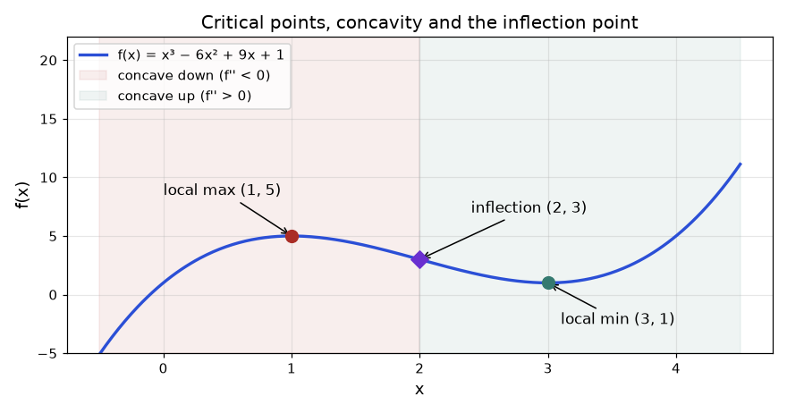
How to read it: walk left to right. The curve rises to the red dot (slope 0, a hilltop), falls through the purple diamond (where it stops bending down and starts bending up), reaches the teal dot (slope 0, a valley) and rises again. The valley is a local minimum: far to the left the function goes to −∞, so it is not the lowest point overall.
import numpy as np
coef = np.array([3, -12, 9]) # f'(x) = 3x^2 - 12x + 9
crit = np.sort(np.roots(coef)) # critical points
f = lambda x: x**3 - 6*x**2 + 9*x + 1
f2 = lambda x: 6*x - 12 # second derivative
for c in crit:
kind = "local max" if f2(c) < 0 else "local min"
print(round(c, 4), f(c), f2(c), kind)1.0 5.0 -6.0 local max
3.0 1.0 6.0 local minGlobal versus local: the endpoint rule
On a closed interval [a, b], a continuous function always has a global maximum and a global minimum. They occur either at a critical point inside the interval or at an endpoint. So the recipe is: list the critical points inside, add the two endpoints, evaluate f at every candidate, and compare.
Problem 11.1.2 Find the global maximum and minimum of the same f on [0, 5].
| Candidates | endpoints x = 0 and x = 5, critical points x = 1 and x = 3 (both inside) |
|---|---|
| Evaluate | f(0) = 1; f(1) = 5; f(3) = 1; f(5) = 125 − 150 + 45 + 1 = 21 |
| Compare | largest is 21, smallest is 1 |
| Answer | Global max 21 at x = 5 (an endpoint, not a critical point!). Global min 1, reached at both x = 0 and x = 3 (a tie) |
When the tests fail
Three small functions show the edge cases. For f(x) = x4: f′ = 4x3 = 0 at x = 0 and f″(0) = 12x2 = 0, so the second derivative test is silent. But f′ is negative for x < 0 and positive for x > 0, so the first derivative test says minimum (obviously true, x4 ≥ 0). For f(x) = x3: f′ = 3x2 = 0 at x = 0, but f′ is positive on both sides, so x = 0 is not an extremum, it is a flat inflection. For f(x) = |x|, the derivative does not exist at 0, yet 0 is the global minimum: "or where f′ does not exist" in the definition matters. This last case is why the L1 loss and the ReLU function have kinks that optimizers must handle (Chapter 14).
Going deeper
Why does the second derivative test work? Near a critical point c, the function looks like f(c) + ½ f″(c)(x − c)2, because the linear term vanishes when f′(c) = 0. That is a parabola, opening up if f″(c) > 0 and down if f″(c) < 0. You will prove this in Section 11.7 with Taylor series. In many variables, f″ becomes a matrix of curvatures (the Hessian, Chapter 12) and the test asks whether that matrix is positive definite, which uses the eigenvalues from Chapter 8.
11.2 Optimization: Cost, Profit, Squared Error and Likelihood
Word problems
Problem 11.2.1 A farm has 200 m of fence and one side of the field is a straight river that needs no fence. What rectangle encloses the most area?
| Variables | Let x be the length of each of the two sides perpendicular to the river. The side parallel to the river uses the rest: y = 200 − 2x |
|---|---|
| Objective | A(x) = x · y = x(200 − 2x) = 200x − 2x2, with 0 ≤ x ≤ 100 |
| Derivative | A′(x) = 200 − 4x = 0, so x = 50 |
| Check | A″ = −4 < 0, a maximum. Endpoints: A(0) = 0 and A(100) = 0, both worse |
| Answer | x = 50 m, y = 200 − 100 = 100 m, area A = 50 × 100 = 5,000 m2 |
Problem 11.2.2 (best price) A shop sells q = 1000 − 20p units per week at price p dollars. Each unit costs 10 dollars to make. Which price maximizes weekly profit?
| Objective | profit = (price − cost) × quantity = (p − 10)(1000 − 20p) |
|---|---|
| Expand | 1000p − 20p2 − 10000 + 200p = −20p2 + 1200p − 10000 |
| Derivative | P′(p) = −40p + 1200 = 0, so p = 30 |
| Check | P″ = −40 < 0, a maximum |
| Answer | q = 1000 − 600 = 400 units, profit = (30 − 10) × 400 = 8,000 dollars. Compare p = 25: (15)(500) = 7,500. Compare p = 35: (25)(300) = 7,500. Lower on both sides, as expected |
Problem 11.2.3 (minimize cost) Producing a batch of q items costs a setup of 2000 dollars plus 4 dollars per item plus a handling cost that makes each batch cost 0.01q2 extra. Find the batch size minimizing the cost per item.
| Total cost | C(q) = 2000 + 4q + 0.01q2 |
|---|---|
| Per item | AC(q) = C/q = 2000/q + 4 + 0.01q |
| Derivative | AC′(q) = −2000/q2 + 0.01 = 0, so q2 = 2000/0.01 = 200,000, q = √200000 ≈ 447.2 |
| Check | AC″(q) = 4000/q3 > 0 for q > 0, a minimum |
| Value | At the optimum 2000/q = 0.01q = 4.472, so AC = 4.472 + 4 + 4.472 = 12.944 dollars per item |
import numpy as np
# Verify the three word problems by brute-force grid search
x = np.linspace(0, 100, 100001); area = x * (200 - 2*x)
print("fence:", x[area.argmax()], area.max())
p = np.linspace(10, 50, 400001); profit = (p - 10) * (1000 - 20*p)
print("price:", round(p[profit.argmax()], 3), round(profit.max(), 2))
q = np.linspace(1, 2000, 2000000); ac = 2000/q + 4 + 0.01*q
print("batch:", round(q[ac.argmin()], 1), round(ac.min(), 3))fence: 50.0 5000.0
price: 30.0 8000.0
batch: 447.2 12.944Fitting by minimizing squared error: why the mean?
Suppose you must report one number c to summarise values y1, ..., yn, and you are penalised by the squared distance to each value. The total penalty is S(c) = ∑ (yi − c)2. Which c is best? Differentiate with respect to c (each yi is a constant):
And S″(c) = 2n > 0, so it is a minimum, and since S is a parabola opening upward it is the global minimum. The mean is the number that minimises squared error. This is the one-variable version of linear regression: a model that predicts a constant, fit by least squares, predicts the mean.
Now penalise by absolute distance: D(c) = ∑ |yi − c|. Each term |yi − c| has slope −1 when c < yi (the term shrinks as c rises) and slope +1 when c > yi. So for c not equal to any data point:
D′ is negative while more points lie above c, and positive when more lie below. It crosses zero exactly where half the points are on each side: the median. (For an even count, any c between the two middle values is a minimiser.)
Problem 11.2.4 Delivery times in minutes: 2, 3, 5, 10, 100 (one parcel was lost and found late). Compare the mean and the median as summaries.
| Mean | (2 + 3 + 5 + 10 + 100)/5 = 120/5 = 24 |
|---|---|
| Median | sorted already, the middle (third) value is 5 |
| Squared error at c = 24 | 222 + 212 + 192 + 142 + 762 = 484 + 441 + 361 + 196 + 5776 = 7258 |
| Squared error at c = 5 | 9 + 4 + 0 + 25 + 9025 = 9063, so the mean wins under squared error |
| Absolute error at c = 5 | 3 + 2 + 0 + 5 + 95 = 105 |
| Absolute error at c = 24 | 22 + 21 + 19 + 14 + 76 = 152, so the median wins under absolute error |
import numpy as np
y = np.array([2, 3, 5, 10, 100])
c = np.linspace(0, 110, 110001)
sse = ((y[:, None] - c) ** 2).sum(axis=0) # squared error for each c
sae = np.abs(y[:, None] - c).sum(axis=0) # absolute error for each c
print("best c for squared error :", round(c[sse.argmin()], 2), "mean =", y.mean())
print("best c for absolute error:", round(c[sae.argmin()], 2), "median =", np.median(y))
print("SSE at 5 and 24:", ((y - 5) ** 2).sum(), ((y - 24) ** 2).sum())
print("SAE at 5 and 24:", np.abs(y - 5).sum(), np.abs(y - 24).sum())best c for squared error : 24.0 mean = 24.0
best c for absolute error: 5.0 median = 5.0
SSE at 5 and 24: 9063 7258
SAE at 5 and 24: 105 152Maximum likelihood in one parameter
The likelihood L(θ) is the probability (or density) of the data you actually saw, viewed as a function of the unknown parameter θ. Maximum likelihood picks the θ that makes the data most probable. Because the data points are independent, L is a product, and products are awkward to differentiate. Since ln is increasing, maximizing L and maximizing ℓ = ln L give the same θ, and ln turns the product into a sum (Chapter 3). The recipe: write L, take ln, differentiate, set to zero, check the second derivative.
Bernoulli (coin or click). You see n trials with k successes. Each success has probability p, each failure 1 − p, so L(p) = pk(1 − p)n−k.
Second derivative: ℓ″(p) = −k/p2 − (n − k)/(1 − p)2 < 0, so it is a maximum. The best estimate of a click rate is the observed fraction of clicks, as intuition said, now with a proof. If 7 of 20 visitors clicked, p̂ = 7/20 = 0.35.
Exponential (waiting time). Waiting times x1, ..., xn have density λe−λx (λ is the rate per minute). Then L(λ) = ∏ λe−λxi = λn e−λ∑xi.
ℓ″(λ) = −n/λ2 < 0, a maximum. For waiting times 2, 5, 3 and 10 minutes: ∑ = 20, x̄ = 5, so λ̂ = 4/20 = 0.2 per minute.
import numpy as np
# Bernoulli: 7 successes in 20 trials
p = np.linspace(0.001, 0.999, 99801)
ll = 7*np.log(p) + 13*np.log(1 - p)
print("Bernoulli MLE:", round(p[ll.argmax()], 3))
# Exponential: waiting times
x = np.array([2, 5, 3, 10])
lam = np.linspace(0.001, 1, 100000)
ll = len(x)*np.log(lam) - lam*x.sum()
print("Exponential MLE:", round(lam[ll.argmax()], 3), "1/mean =", 1/x.mean())Bernoulli MLE: 0.35
Exponential MLE: 0.2 1/mean = 0.2Convex functions in one variable
Check the definition for f(x) = x2 with x = 0, y = 4, t = 0.5: the left side is f(2) = 4, the right side is 0.5·0 + 0.5·16 = 8, and 4 ≤ 8. The chord lies above the curve.
Why care? For a convex function every critical point is a global minimum. There are no false valleys, so any method that goes downhill ends in the right place. Squared error in a linear model, and logistic loss, are convex; neural-network losses are not. Example: the logistic loss for a positive example is softplus(−z) = ln(1 + e−z). Its derivative with respect to z is −σ(−z) = −1/(1 + ez) (with σ the sigmoid from Chapter 3), and the second derivative is σ(z)(1 − σ(z)) > 0 for every z, so it is convex.
import numpy as np
z = np.linspace(-6, 6, 1201)
loss = np.log1p(np.exp(-z)) # logistic loss for a positive example
second = np.gradient(np.gradient(loss, z), z) # numerical second derivative
print("min of second derivative:", round(second[5:-5].min(), 5))
sig = 1/(1 + np.exp(-z))
print("max error vs sigma(1 - sigma):", np.abs(second[5:-5] - (sig*(1 - sig))[5:-5]).max() < 1e-4)min of second derivative: 0.00259
max error vs sigma(1 - sigma): TrueGoing deeper
The Bernoulli estimate k/n and the exponential estimate 1/x̄ are special cases of a general fact: the curvature of the log-likelihood at its peak tells you how precisely the data pin down the parameter. For the Bernoulli, −ℓ″(p̂) = n/(p̂(1 − p̂)) and the estimate's standard error is the square root of the inverse of that: √(p̂(1 − p̂)/n), which is exactly the standard error from the Statistics document, Chapter 3. For the example above that is √(0.35 × 0.65/20) = 0.1067. Section 11.8 connects this with the Laplace approximation. Calculus-based MLE works in one parameter in closed form; with many parameters you move the same idea into gradient descent (Chapters 12 and 14). Logistic regression's MLE has no closed form, which is why it is trained iteratively.
11.3 Integrals: Area and Accumulation
Riemann sums by hand
To find the area under a curve, slice it into n thin vertical strips of width Δx = (b − a)/n, treat each strip as a rectangle, and add the rectangle areas. Different choices for the rectangle height give left, right and midpoint sums.
Problem 11.3.1 Estimate the area under f(x) = x2 from x = 0 to x = 2 using n = 4 rectangles.
| Width | Δx = (2 − 0)/4 = 0.5. Strip edges: 0, 0.5, 1, 1.5, 2 |
|---|---|
| Left sum | heights f(0), f(0.5), f(1), f(1.5) = 0, 0.25, 1, 2.25. Sum = 3.5. Area ≈ 3.5 × 0.5 = 1.75 |
| Right sum | heights f(0.5), f(1), f(1.5), f(2) = 0.25, 1, 2.25, 4. Sum = 7.5. Area ≈ 7.5 × 0.5 = 3.75 |
| Midpoint sum | midpoints 0.25, 0.75, 1.25, 1.75 give heights 0.0625, 0.5625, 1.5625, 3.0625. Sum = 5.25. Area ≈ 5.25 × 0.5 = 2.625 |
| Compare | exact area (shown below) is 8/3 = 2.6667. The curve is increasing, so left is too low, right is too high, midpoint is very close |
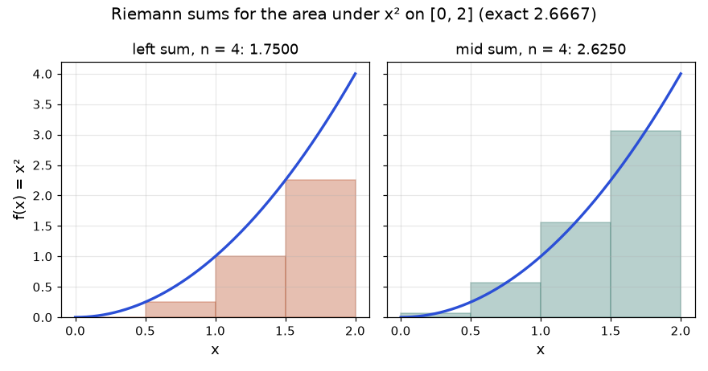
How to read it: in the left panel every rectangle sits below the curve, so the total misses area. In the right panel the rectangles poke above the curve on one side and fall short on the other, and the errors nearly cancel. More, thinner rectangles shrink the error.
import numpy as np
f = lambda x: x**2
a, b = 0, 2
def riemann(n, kind):
dx = (b - a) / n
left = a + dx * np.arange(n) # left edge of each strip
x = {"left": left, "right": left + dx, "mid": left + dx/2}[kind]
return f(x).sum() * dx
for n in (4, 100, 10000):
print(n, *[round(float(riemann(n, k)), 6) for k in ("left", "right", "mid")])
print("exact", round(8/3, 6))4 1.75 3.75 2.625
100 2.6268 2.7068 2.6666
10000 2.666267 2.667067 2.666667
exact 2.666667The definite integral
Rules you will use constantly: ∫(f + g) = ∫f + ∫g; ∫c·f = c∫f; ∫ac f = ∫ab f + ∫bc f (splitting the range); ∫aa f = 0; and swapping the limits flips the sign: ∫ba f = −∫ab f.
The Fundamental Theorem of Calculus
Computing limits of Riemann sums is painful. The Fundamental Theorem of Calculus (FTC) gives a shortcut by linking integrals to derivatives, which you already know how to compute.
Why it is true. Let A(x) be the area under f from a up to x. Increase x by a tiny h. The area gains one thin strip of width h and height about f(x), so A(x + h) − A(x) ≈ f(x)·h. Divide by h: (A(x + h) − A(x))/h ≈ f(x). As h → 0 the left side is the derivative, so A′(x) = f(x). Accumulated area is an antiderivative of the height. Any two antiderivatives differ by a constant, so area from a to b equals F(b) − F(a) whichever antiderivative F you pick. Said as a story: speed is the derivative of distance, so distance travelled = change in the odometer reading, no need to add up each second.
Problem 11.3.2 Compute ∫02 x2 dx exactly.
| Antiderivative | F(x) = x3/3, since F′(x) = 3x2/3 = x2 |
|---|---|
| Evaluate | F(2) − F(0) = 8/3 − 0 |
| Answer | 8/3 = 2.6667, matching the Riemann sums |
Problem 11.3.3 Compute ∫0π sin x dx and ∫02π sin x dx.
| Antiderivative | F(x) = −cos x, since d/dx(−cos x) = sin x |
|---|---|
| First | F(π) − F(0) = −cos π − (−cos 0) = −(−1) + 1 = 2 |
| Second | F(2π) − F(0) = −1 + 1 = 0 |
| Meaning | from 0 to π the area above the axis is 2. From π to 2π there is an equal area below, counted negative, so the total is 0 |
import numpy as np
x = np.linspace(0, 2*np.pi, 200001)
dx = x[1] - x[0]
y = np.sin(x)
mid = (y[:-1] + y[1:]) / 2 # average height of each thin strip
print("signed integral :", round((mid * dx).sum(), 6))
print("geometric area :", round((np.abs(mid) * dx).sum(), 4))signed integral : 0.0
geometric area : 4.0Going deeper
The FTC is the reason a continuous quantity can be tracked from its rate. In data engineering you meet it in reverse: a cumulative sum (np.cumsum, df.cumsum()) is the discrete integral, and a difference (np.diff) is the discrete derivative. They undo each other exactly as ∫ and d/dx do: np.diff(np.cumsum(r)) returns r[1:] (everything except the first value). Discrete FTC is the identity that the sum of the differences telescopes, yn − y0 (the telescoping sums of Chapter 4). The continuous theorem is the limit of that fact.
11.4 Finding Antiderivatives: Rules, Substitution, Parts and Improper Integrals
The basic table
Each row is a derivative rule from Chapter 10 read backwards. The constant C appears because adding a constant does not change a derivative. In a definite integral C cancels in F(b) − F(a), so you can ignore it.
| Integrand f(x) | Antiderivative F(x) | Check by differentiating |
|---|---|---|
| xn (n ≠ −1) | xn+1/(n + 1) | (n + 1)xn/(n + 1) = xn |
| 1/x | ln|x| | 1/x |
| ex | ex | ex |
| ekx | ekx/k | k ekx/k = ekx |
| sin x | −cos x | sin x |
| cos x | sin x | cos x |
Problem 11.4.1 Compute ∫02 (3x2 + 2x + 1) dx, ∫13 (1/x) dx and ∫01 e2x dx.
| Part 1 | F(x) = x3 + x2 + x. F(2) = 8 + 4 + 2 = 14, F(0) = 0, so the answer is 14 |
|---|---|
| Part 2 | F(x) = ln x. F(3) − F(1) = ln 3 − 0 = 1.0986 |
| Part 3 | F(x) = e2x/2. F(1) − F(0) = (e2 − 1)/2 = (7.38906 − 1)/2 = 3.19453 |
Substitution (undoing the chain rule)
If the integrand contains an inner function u = g(x) and also its derivative du = g′(x) dx, replace both and integrate in u. In a definite integral, change the limits too.
Problem 11.4.2 Compute ∫01 2x ex² dx.
| Choose u | u = x2, so du = 2x dx (exactly the other factor) |
|---|---|
| New limits | x = 0 gives u = 0; x = 1 gives u = 1 |
| Integrate | ∫01 eu du = e1 − e0 = e − 1 |
| Answer | 1.71828 |
Problem 11.4.3 Compute ∫01 (3x + 1)4 dx, then ∫02 x/(x2 + 1) dx.
| Part 1: u | u = 3x + 1, du = 3 dx, so dx = du/3. Limits: x = 0 gives u = 1; x = 1 gives u = 4 |
|---|---|
| Part 1: integrate | (1/3) ∫14 u4 du = (1/3)(u5/5) from 1 to 4 = (45 − 1)/15 = (1024 − 1)/15 = 68.2 |
| Part 2: u | u = x2 + 1, du = 2x dx, so x dx = du/2. Limits: x = 0 gives u = 1; x = 2 gives u = 5 |
| Part 2: integrate | (1/2) ∫15 (1/u) du = (1/2)(ln 5 − ln 1) = 0.5 × 1.6094 = 0.8047 |
A machine learning example. The sigmoid is σ(z) = ez/(1 + ez). Put u = 1 + ez, so du = ez dz and the integrand becomes du/u. Then ∫ σ(z) dz = ln(1 + ez) + C. This is the softplus function: softplus is the antiderivative of the sigmoid, equivalently the derivative of softplus is the sigmoid. You will use that fact in Section 11.7.
Integration by parts (undoing the product rule)
The product rule says (uv)′ = u′v + uv′. Integrate both sides and rearrange:
It helps when the integrand is a product and one factor gets simpler when differentiated (a polynomial, or ln x) while the other is easy to integrate (ex, sin x). A rule of thumb for what to call u: Logs first, then Inverse trig, Algebraic (polynomials), Trig, Exponentials last (LIATE).
Problem 11.4.4 Compute ∫01 x ex dx.
| Choose | u = x (becomes 1 when differentiated), dv = ex dx. So du = dx and v = ex |
|---|---|
| Apply | ∫ x ex dx = x ex − ∫ ex dx = x ex − ex |
| Evaluate | at 1: e − e = 0. At 0: 0 − 1 = −1. Difference: 0 − (−1) = 1 |
| Check | differentiate x ex − ex: (ex + x ex) − ex = x ex. Correct |
Problem 11.4.5 Compute ∫1e ln x dx and ∫0π x sin x dx.
| Part 1: choose | u = ln x, dv = dx, so du = dx/x and v = x |
|---|---|
| Part 1: apply | ∫ ln x dx = x ln x − ∫ x (1/x) dx = x ln x − x |
| Part 1: evaluate | at e: e·1 − e = 0. At 1: 0 − 1 = −1. Answer 0 − (−1) = 1 |
| Part 2: choose | u = x, dv = sin x dx, so du = dx and v = −cos x |
| Part 2: apply | ∫ x sin x dx = −x cos x + ∫ cos x dx = −x cos x + sin x |
| Part 2: evaluate | at π: −π(−1) + 0 = π. At 0: 0 + 0 = 0. Answer π = 3.1416 |
Improper integrals
An integral is improper if a limit is infinite or the function blows up inside the range. You define it with a limit: ∫1∞ f dx = limb→∞ ∫1b f dx. If the limit is a finite number the integral converges; otherwise it diverges.
Problem 11.4.6 Decide whether ∫1∞ x−2 dx, ∫1∞ x−1 dx and ∫01 x−1/2 dx converge.
| First | ∫1b x−2 dx = [−1/x] = −1/b + 1. As b → ∞ this tends to 1. Converges to 1 |
|---|---|
| Second | ∫1b (1/x) dx = ln b. As b → ∞, ln b → ∞. Diverges (slowly: it needs b = 106 just to reach 13.8) |
| Third | the function blows up at 0. ∫ε1 x−1/2 dx = [2√x] = 2 − 2√ε → 2 as ε → 0. Converges to 2 |
| Pattern | ∫1∞ x−p dx converges exactly when p > 1 (the "p-test") |
import numpy as np
from scipy.integrate import quad
print("11.4.1:", round(quad(lambda x: 3*x**2 + 2*x + 1, 0, 2)[0], 5),
round(quad(lambda x: 1/x, 1, 3)[0], 4),
round(quad(lambda x: np.exp(2*x), 0, 1)[0], 5))
print("11.4.2:", round(quad(lambda x: 2*x*np.exp(x**2), 0, 1)[0], 5))
print("11.4.3:", round(quad(lambda x: (3*x + 1)**4, 0, 1)[0], 4),
round(quad(lambda x: x/(x**2 + 1), 0, 2)[0], 4))
print("11.4.4:", round(quad(lambda x: x*np.exp(x), 0, 1)[0], 5))
print("11.4.5:", round(quad(np.log, 1, np.e)[0], 5), round(quad(lambda x: x*np.sin(x), 0, np.pi)[0], 5))
print("11.4.6:", round(quad(lambda x: x**-2, 1, np.inf)[0], 5), round(quad(lambda x: x**-0.5, 0, 1)[0], 5))
for b in (10, 1e3, 1e6):
print("int 1/x from 1 to", b, "=", round(np.log(b), 4))11.4.1: 14.0 1.0986 3.19453
11.4.2: 1.71828
11.4.3: 68.2 0.8047
11.4.4: 1.0
11.4.5: 1.0 3.14159
11.4.6: 1.0 2.0
int 1/x from 1 to 10 = 2.3026
int 1/x from 1 to 1000.0 = 6.9078
int 1/x from 1 to 1000000.0 = 13.8155Going deeper
Not every function has an antiderivative you can write with the usual functions. For example ∫ e−x² dx cannot be expressed using polynomials, exponentials, logs and trig functions. The definite integral over the whole line still has a clean value (Section 11.6), and the indefinite one is given a name (the error function). This is one reason numerical integration, next, matters in practice: when no formula exists, you still need the number. Integration by parts also reappears in deep learning derivations (for example moving a derivative from a density onto a function inside an expectation) and in the definition of the Gamma function Γ(n) = ∫0∞ xn−1 e−x dx = (n − 1)!, found by applying parts repeatedly. For n = 2 that is ∫ x e−x dx = 1, one step from Problem 11.4.4.
11.5 Numerical Integration: Trapezoid, Simpson and Monte Carlo
Trapezoid rule
Join the points (xi, f(xi)) by straight lines. Each strip is a trapezoid with area (f(xi) + f(xi+1))/2 × h, where h = (b − a)/n. Adding them, interior points are counted twice and the two ends once:
Error: about (b − a) h2 f″/12, which is O(h2). Halving h cuts the error by about 4.
Simpson's rule
Fit a parabola through every three consecutive points and integrate the parabola. With n even:
The weights alternate 4, 2, 4, 2, ..., 4 between the end points. The error is O(h4): halving h cuts the error by about 16. Simpson is exact for polynomials up to degree 3.
Problem 11.5.1 Integrate x2 from 0 to 2 with n = 4 by trapezoid and by Simpson.
| Setup | h = 0.5. Values f = 0, 0.25, 1, 2.25, 4 |
|---|---|
| Trapezoid | (0.5/2)[0 + 2(0.25 + 1 + 2.25) + 4] = 0.25 × (7 + 4) = 2.75. Error 2.75 − 2.6667 = 0.0833. Formula check: (2)(0.25)(2)/12 = 0.0833 (f″ = 2) |
| Simpson | (0.5/3)[0 + 4(0.25) + 2(1) + 4(2.25) + 4] = (1/6)(1 + 2 + 9 + 4) = 16/6 = 2.6667, exact, as promised for a polynomial of degree 2 |
Problem 11.5.2 Integrate sin x from 0 to π (exact answer 2) with n = 4 by trapezoid and by Simpson.
| Setup | h = π/4 = 0.7854. Values: sin 0 = 0, sin(π/4) = 0.7071, sin(π/2) = 1, sin(3π/4) = 0.7071, sin π = 0 |
|---|---|
| Trapezoid | h × (0.7071 + 1 + 0.7071) (the ends are 0) = 0.7854 × 2.4142 = 1.8961. Error −0.1039 |
| Simpson | (h/3)[0 + 4(0.7071) + 2(1) + 4(0.7071) + 0] = 0.2618 × (5.6569 + 2) = 0.2618 × 7.6569 = 2.0046. Error +0.0046, twenty times smaller with the same 5 function values |
Monte Carlo integration
Since the average of f over [a, b] times the width is the integral, estimate the average from random points: ∫ab f dx ≈ (b − a) × mean of f(Ui), with Ui uniform on [a, b]. The error is random, of size σ(b − a)/√n where σ is the standard deviation of f(U): O(n−1/2). To get 10 times more accurate you need 100 times more points. That is slow, but the rate does not depend on the number of dimensions.
import numpy as np
f, exact = np.sin, 2.0
def trap(n):
x = np.linspace(0, np.pi, n + 1); y = f(x); h = np.pi / n
return h * (y.sum() - 0.5 * (y[0] + y[-1]))
def simpson(n): # n must be even
x = np.linspace(0, np.pi, n + 1); y = f(x); h = np.pi / n
return h / 3 * (y[0] + y[-1] + 4 * y[1:-1:2].sum() + 2 * y[2:-1:2].sum())
rng = np.random.default_rng(0)
def mc(n):
return np.pi * f(rng.uniform(0, np.pi, n)).mean()
print("n trap_err simpson_err mc_err")
for n in (4, 8, 16, 1024):
print(n, f"{abs(trap(n)-exact):.2e}", f"{abs(simpson(n)-exact):.2e}", f"{abs(mc(n)-exact):.2e}")
print("trapezoid error ratio n=8 vs 16:", round(abs(trap(8)-exact) / abs(trap(16)-exact), 2))
print("Simpson error ratio n=8 vs 16 :", round(abs(simpson(8)-exact) / abs(simpson(16)-exact), 2))n trap_err simpson_err mc_err
4 1.04e-01 4.56e-03 5.56e-01
8 2.58e-02 2.69e-04 3.24e-01
16 6.43e-03 1.66e-05 2.01e-01
1024 1.57e-06 9.84e-13 3.78e-02
trapezoid error ratio n=8 vs 16: 4.01
Simpson error ratio n=8 vs 16 : 16.22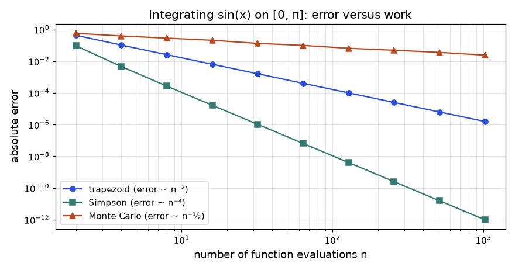
How to read it: the slope of each line is its order. Simpson falls fastest (slope −4) until it reaches rounding noise near 10−12, the trapezoid falls with slope −2, and Monte Carlo crawls with slope −1/2 (and its curve is an average over 200 repeated runs, because a single run is random). In one dimension, Simpson wins by a huge margin.
Going deeper
Why does Monte Carlo win in high dimensions? A grid with 10 points per axis needs 10 points in one dimension, 102 in two, and 10100 in 100 dimensions: the work grows like nd. The Monte Carlo error σ/√n does not mention d. This is why expectations in machine learning (the average loss over a dataset, the expected reward in reinforcement learning, the ELBO in a variational autoencoder) are estimated by sampling: a minibatch average is a Monte Carlo estimate of an integral. Variance reduction ideas, like importance sampling (sample where the integrand is large and reweight), improve the constant but not the n−1/2 rate. Quasi-random sequences can improve the rate for smooth integrands. Practical code uses scipy.integrate.quad, an adaptive method that chooses its own steps, for one-dimensional integrals.
11.6 Integrals in Data Science
Total from a rate
Problem 11.6.1 A shop's revenue rate at hour t after opening is r(t) = 50 + 10t dollars per hour. What is the revenue in the first 8 hours, and what do you get from hourly readings?
| Integral | ∫08 (50 + 10t) dt = [50t + 5t2] from 0 to 8 = 400 + 320 = 720 dollars |
|---|---|
| Data | readings at t = 0, 1, ..., 8: 50, 60, 70, 80, 90, 100, 110, 120, 130 |
| Left sum | 50 + 60 + ... + 120 = 680 (each reading treated as the rate for the following hour: too low, the rate is rising) |
| Right sum | 60 + ... + 130 = 760 (too high) |
| Trapezoid | average of the two: 720, exact, because the rate is a straight line |
AUC of an ROC curve
A classifier's ROC curve plots the true positive rate (TPR) against the false positive rate (FPR) as the threshold varies. The area under the curve (AUC) is ∫01 TPR d(FPR) and is computed from the sampled points with the trapezoid rule. It equals the probability that a random positive example scores higher than a random negative one (ties count half), and a random classifier has AUC 0.5.
Problem 11.6.2 A model has ROC points (FPR, TPR): (0, 0), (0.1, 0.5), (0.3, 0.8), (0.6, 0.9), (1, 1). Compute the AUC.
| Strip 1 | width 0.1, average height (0 + 0.5)/2 = 0.25, area 0.025 |
|---|---|
| Strip 2 | width 0.2, average height (0.5 + 0.8)/2 = 0.65, area 0.13 |
| Strip 3 | width 0.3, average height (0.8 + 0.9)/2 = 0.85, area 0.255 |
| Strip 4 | width 0.4, average height (0.9 + 1)/2 = 0.95, area 0.38 |
| Total | 0.025 + 0.13 + 0.255 + 0.38 = 0.79 |
import numpy as np
# Revenue from hourly readings
t = np.arange(9); r = 50 + 10 * t
print("left, right, trapezoid:", r[:-1].sum(), r[1:].sum(), (r[:-1] + r[1:]).sum() / 2)
# AUC by the trapezoid rule
fpr = np.array([0, 0.1, 0.3, 0.6, 1.0]); tpr = np.array([0, 0.5, 0.8, 0.9, 1.0])
auc = (np.diff(fpr) * (tpr[:-1] + tpr[1:]) / 2).sum()
print("AUC:", round(auc, 4))left, right, trapezoid: 680 760 720.0
AUC: 0.79Probability density functions
The density is probability per unit of x, so it is not itself a probability. A density can exceed 1: a uniform variable on [0, 0.5] has f(x) = 2 on that interval (area 2 × 0.5 = 1). And for a continuous variable P(X = x) = 0 for every single x, because a strip of zero width has zero area.
Problem 11.6.3 The waiting time X (minutes) between support tickets has density f(x) = 0.2 e−0.2x for x ≥ 0. Find the CDF, P(X ≤ 5), P(3 ≤ X ≤ 8) and the median.
| Check it is a pdf | ∫0∞ 0.2e−0.2x dx = [−e−0.2x] = 0 − (−1) = 1 |
|---|---|
| CDF | F(x) = ∫0x 0.2e−0.2t dt = 1 − e−0.2x |
| P(X ≤ 5) | F(5) = 1 − e−1 = 1 − 0.3679 = 0.6321 |
| P(3 ≤ X ≤ 8) | F(8) − F(3) = e−0.6 − e−1.6 = 0.5488 − 0.2019 = 0.3469 |
| Median | solve F(m) = 0.5: e−0.2m = 0.5, so m = ln 2/0.2 = 3.4657 minutes |
Problem 11.6.4 (expectation) Show that E[X] = 1/λ for the exponential density f(x) = λe−λx.
| Set up | E[X] = ∫0∞ x λ e−λx dx |
|---|---|
| Parts | u = x, dv = λe−λx dx, so du = dx, v = −e−λx |
| Apply | [−x e−λx] from 0 to ∞ + ∫0∞ e−λx dx |
| Boundary | at ∞ the exponential beats x so the term is 0; at 0 it is 0. So the bracket is 0 |
| Remaining | ∫0∞ e−λx dx = 1/λ |
| Answer | E[X] = 1/λ. For λ = 0.2 that is 5 minutes, above the median 3.47: the long right tail pulls the mean up (and it explains why the MLE in Section 11.2 was 1/x̄) |
Normalizing constants
Often you know a density only up to a constant: f(x) = c · h(x) where h is easy and c is unknown. Since the total area must be 1, c = 1/∫h(x) dx. That integral is the normalizing constant (in physics and Bayesian inference the "partition function" or "evidence").
Problem 11.6.5 Find c so that f(x) = c x2 on [0, 3] is a density, then find P(X ≤ 1) and E[X].
| Normalize | ∫03 x2 dx = 27/3 = 9, so c = 1/9 |
|---|---|
| P(X ≤ 1) | (1/9) ∫01 x2 dx = (1/9)(1/3) = 1/27 = 0.0370 |
| E[X] | (1/9) ∫03 x3 dx = (1/9)(81/4) = 9/4 = 2.25 |
Another example: f(x) = c e−|x| on the whole line (the Laplace density, linked to L1 regularization). By symmetry ∫ e−|x| dx = 2 ∫0∞ e−x dx = 2, so c = 1/2.
The Gaussian integral
The most important normalizing constant in data science is for the bell curve. The unnormalized shape is e−x²/2, and the key result is
Derivation sketch. No antiderivative exists, so use a trick. Call the integral I and compute I2 as a double integral over the whole plane: I2 = ∬ e−(x² + y²)/2 dx dy. In polar coordinates x² + y² = r2 and a small patch of the plane has area r dr dθ (a thin ring of radius r and thickness dr has length 2πr). So I2 = ∫02π ∫0∞ e−r²/2 r dr dθ. The inner integral has u = r2/2, du = r dr: ∫0∞ e−u du = 1. The outer integral is ∫02π 1 dθ = 2π. So I2 = 2π and I = √(2π) = 2.5066.
Therefore the standard normal density is φ(x) = (1/√(2π)) e−x²/2, and with mean μ and standard deviation σ, f(x) = (1/(σ√(2π))) e−(x−μ)²/(2σ²). The factor 1/σ comes from the substitution u = (x − μ)/σ, du = dx/σ.
import numpy as np
from scipy.integrate import quad
lam = 0.2
pdf = lambda x: lam * np.exp(-lam * x)
print("total area :", round(quad(pdf, 0, np.inf)[0], 6))
print("P(X<=5) :", round(quad(pdf, 0, 5)[0], 4))
print("P(3<=X<=8) :", round(quad(pdf, 3, 8)[0], 4))
print("E[X] :", round(quad(lambda x: x * pdf(x), 0, np.inf)[0], 4))
print("c for c*x^2 :", round(1 / quad(lambda x: x**2, 0, 3)[0], 4))
print("gauss integral :", round(quad(lambda x: np.exp(-x**2 / 2), -np.inf, np.inf)[0], 6), round(np.sqrt(2*np.pi), 6))
phi = lambda x: np.exp(-x**2 / 2) / np.sqrt(2 * np.pi)
print("P(|Z|<=1.96) :", round(quad(phi, -1.96, 1.96)[0], 4))
print("Var of N(0,1) :", round(quad(lambda x: x**2 * phi(x), -np.inf, np.inf)[0], 4))total area : 1.0
P(X<=5) : 0.6321
P(3<=X<=8) : 0.3469
E[X] : 5.0
c for c*x^2 : 0.1111
gauss integral : 2.506628 2.506628
P(|Z|<=1.96) : 0.95
Var of N(0,1) : 1.0Going deeper
The CDF-from-density link works both ways and gives a sampling recipe. If F is the CDF of X and U is uniform on [0, 1], then F−1(U) has the distribution of X. For the exponential, F(x) = 1 − e−λx inverts to x = −ln(1 − u)/λ, which is the inverse transform method of generating random numbers from uniform ones. The expectation integral is also the continuous cousin of the weighted mean: replace ∫ by ∑ and f(x) dx by probabilities, and you get ∑ x p(x) from Chapter 4. Expected values have the linearity property E[aX + b] = aE[X] + b, which follows directly from the linearity of the integral.
11.7 Taylor and Maclaurin Series
Linear approximation
Near x = a, a curve is close to its tangent line: f(x) ≈ f(a) + f′(a)(x − a). Take √4.1. Choose f(x) = √x and a = 4 (a number whose root you know). Then f(4) = 2, f′(x) = 1/(2√x) so f′(4) = 1/4, and x − a = 0.1. The estimate is 2 + 0.25 × 0.1 = 2.025. The true value is 2.02485. Adding the curvature term ½ f″(a)(x − a)2 improves it: f″(x) = −1/(4x3/2), so f″(4) = −1/32, and the extra term is ½ × (−1/32) × 0.01 = −0.00015625. The estimate becomes 2.02484375, correct to 6 decimals.
The general formula
Why those coefficients? You want a polynomial c0 + c1x + c2x2 + c3x3 + ... whose derivatives at 0 equal those of f. Plug in x = 0: the polynomial's value is c0, so c0 = f(0). Its first derivative at 0 is c1, so c1 = f′(0). Its second derivative is 2c2 at 0, so c2 = f″(0)/2. The third derivative is 3 · 2 c3 = 6c3, so c3 = f‴(0)/6. In general the k-th derivative at 0 is k! ck, so ck = f(k)(0)/k!.
Four series derived by hand
Problem 11.7.1 Derive the Maclaurin series of ex and sin x.
| ex: derivatives | every derivative of ex is ex, which equals 1 at x = 0. So f(k)(0) = 1 for all k |
|---|---|
| ex: series | ex = 1 + x + x2/2! + x3/3! + x4/4! + ... = ∑ xk/k! |
| sin x: derivatives | sin x, cos x, −sin x, −cos x, then repeat. At 0 these are 0, 1, 0, −1, 0, 1, 0, −1, ... |
| sin x: series | only odd powers survive, with alternating signs: sin x = x − x3/3! + x5/5! − x7/7! + ... |
| cos x (same way) | values 1, 0, −1, 0, ...: cos x = 1 − x2/2! + x4/4! − ... |
| Sanity check | differentiate the sin series term by term: 1 − 3x2/3! + 5x4/5! − ... = 1 − x2/2! + x4/4! − ..., the cos series |
Problem 11.7.2 Derive the Maclaurin series of 1/(1 − x) and ln(1 + x).
| 1/(1 − x): derivatives | f = (1 − x)−1, f′ = (1 − x)−2, f″ = 2(1 − x)−3, f‴ = 6(1 − x)−4. In general f(k) = k!(1 − x)−(k+1), which is k! at x = 0 |
|---|---|
| 1/(1 − x): series | coefficients k!/k! = 1, so 1/(1 − x) = 1 + x + x2 + x3 + ..., the geometric series of Chapter 4 |
| ln(1 + x): derivatives | f = ln(1 + x), f′ = (1 + x)−1, f″ = −(1 + x)−2, f‴ = 2(1 + x)−3, f(4) = −6(1 + x)−4. At 0: f(0) = 0, then 1, −1, 2, −6, so f(k)(0) = (−1)k−1(k − 1)! |
| ln(1 + x): series | divide by k!: coefficient (−1)k−1(k − 1)!/k! = (−1)k−1/k. So ln(1 + x) = x − x2/2 + x3/3 − x4/4 + ... |
| Cross-check | replace x by −x in the geometric series: 1/(1 + x) = 1 − x + x2 − ... Integrate term by term: ∫ 1/(1 + x) dx = ln(1 + x) = x − x2/2 + x3/3 − ... Same answer |
How good is the approximation?
Truncating after degree n leaves a remainder Rn(x) = f(x) − Pn(x). The Lagrange form of the remainder says that for some number ξ between 0 and x, Rn(x) = f(n+1)(ξ) xn+1/(n+1)!. So if |f(n+1)| ≤ M on that range, |Rn(x)| ≤ M|x|n+1/(n+1)!. The error is the first term you dropped, roughly.
Problem 11.7.3 Approximate e0.5 with polynomials of degree 0 to 5, bound the error of the degree 3 polynomial, and approximate sin 0.5.
| Terms | xk/k! at x = 0.5: 1, 0.5, 0.125, 0.0208333, 0.0026042, 0.0002604 |
|---|---|
| Partial sums | degree 0: 1. degree 1: 1.5. degree 2: 1.625. degree 3: 1.6458333. degree 4: 1.6484375. degree 5: 1.6486979 |
| True value | e0.5 = 1.6487213, so the degree 3 error is 0.0028880 |
| Lagrange bound | f(4) = ex ≤ e0.5 < 2 on [0, 0.5], so |R3| ≤ 2 × 0.54/4! = 2 × 0.0625/24 = 0.00521. The true error 0.00289 is below the bound |
| sin 0.5 | 0.5 − 0.53/6 + 0.55/120 = 0.5 − 0.0208333 + 0.0002604 = 0.4794271. True value 0.4794255 |
import numpy as np
from math import factorial
x = 0.5
total = 0
for k in range(6):
total += x**k / factorial(k)
print("degree", k, round(total, 7), "error", round(np.exp(x) - total, 7))
sin_approx = x - x**3/6 + x**5/120
print("sin(0.5):", round(sin_approx, 7), round(np.sin(x), 7))
print("sqrt(4.1):", 2 + 0.25*0.1, 2 + 0.25*0.1 - 0.5*(1/32)*0.01, round(np.sqrt(4.1), 7))degree 0 1.0 error 0.6487213
degree 1 1.5 error 0.1487213
degree 2 1.625 error 0.0237213
degree 3 1.6458333 error 0.0028879
degree 4 1.6484375 error 0.0002838
degree 5 1.6486979 error 2.34e-05
sin(0.5): 0.4794271 0.4794255
sqrt(4.1): 2.025 2.02484375 2.0248457Radius of convergence
A Taylor series does not always work far from the centre. Each series has a radius of convergence R: the series converges to the function when |x| < R and diverges when |x| > R.
| Function | Radius R | Why (awareness) |
|---|---|---|
| ex, sin x, cos x | ∞ | factorials in the denominator beat any power |
| 1/(1 − x) | 1 | blows up at x = 1 |
| ln(1 + x) | 1 | blows up at x = −1 |
| 1/(1 + x2) | 1 | smooth on the real line, but undefined at the complex numbers ±i, which are distance 1 from 0 |
| sigmoid σ(x) | π | 1 + e−x = 0 at x = ±iπ |
| tanh x | π/2 | cosh x = 0 at x = ±iπ/2 |
The radius is the distance from the centre to the nearest trouble spot, including trouble in the complex plane. You need not compute complex values; just remember that a smooth-looking function can still have a short radius.
Problem 11.7.4 (what goes wrong) Use the ln(1 + x) series with 1, 2, 3 and 4 terms at x = 0.5 and at x = 2.
| At x = 0.5 | terms: 0.5, −0.125, 0.0416667, −0.015625. Partial sums: 0.5, 0.375, 0.4166667, 0.4010417. True ln 1.5 = 0.4054651. The sums close in on it |
|---|---|
| At x = 2 | terms: 2, −4/2 = −2, 8/3 = 2.6667, −16/4 = −4. Partial sums: 2, 0, 2.6667, −1.3333. True ln 3 = 1.0986. The sums swing wider and wider: x = 2 is outside the radius 1 |
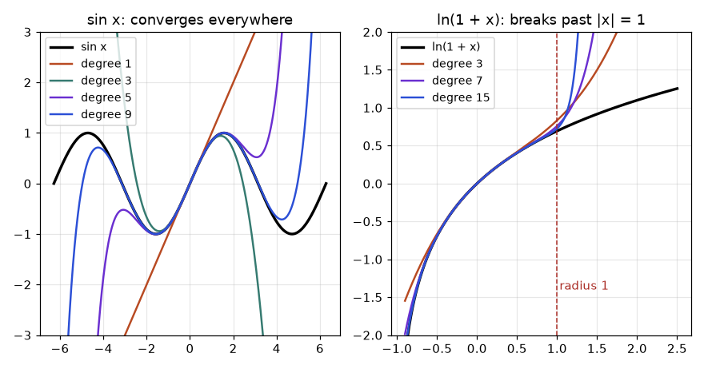
How to read it: on the left, each higher-degree curve stays on top of sin x for longer before peeling off, and it eventually would cover the whole axis (infinite radius). On the right the dashed red line marks the radius. To its right the high-degree polynomial (blue) shoots far from ln(1 + x), worse than the low-degree ones, which is the signature of divergence.
Linearization, quadratic approximation, and why Newton and gradient methods work
Replace x by x + h and treat the current point x as the centre. The first and second order Taylor models of a function f are:
Newton's root-finding method asks where the linear model reaches 0: f(x) + f′(x)h = 0 gives h = −f(x)/f′(x), so the next point is x − f(x)/f′(x). Newton's method for optimization asks where the quadratic model has its minimum: the model's derivative f′(x) + f″(x)h = 0 gives h = −f′(x)/f″(x), so xnew = x − f′(x)/f″(x). It is the root-finding method applied to f′ (which is zero at a critical point). Gradient descent uses h = −η f′(x), which is the same as Newton with the curvature f″ replaced by the constant 1/η: you pay less per step (no second derivative) and accept a slower path.
Problem 11.7.5 Minimize f(x) = ex − 2x starting from x = 0 with Newton's method (true minimum at ln 2 = 0.693147, where f′ = ex − 2 = 0).
| Derivatives | f′(x) = ex − 2, f″(x) = ex |
|---|---|
| Step 1 (x = 0) | f′ = −1, f″ = 1, x = 0 − (−1)/1 = 1 |
| Step 2 (x = 1) | f′ = 2.71828 − 2 = 0.71828, f″ = 2.71828, x = 1 − 0.71828/2.71828 = 1 − 0.26424 = 0.73576 |
| Step 3 | e0.73576 = 2.08711, f′ = 0.08711, x = 0.73576 − 0.08711/2.08711 = 0.73576 − 0.04174 = 0.69402 |
| Step 4 | x ≈ 0.693148. Already correct to 6 decimals |
| Pattern | the error shrinks 0.307, 0.0426, 0.00090, 0.0000004: the number of correct digits roughly doubles each step (quadratic convergence) |
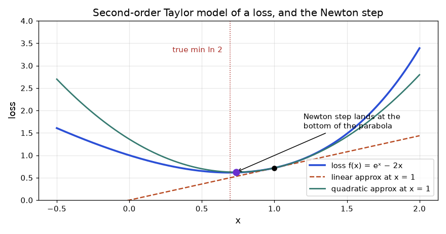
How to read it: the dashed orange line is the linear model: it has no minimum, it just keeps going down to the left, so linear information alone cannot say how far to step. The teal parabola adds curvature and so says where to stop. Gradient descent borrows the direction from the line and picks the distance with the learning rate; Newton gets the distance from the parabola.
Problem 11.7.6 Compute √2 using Newton's root-finding for f(x) = x2 − 2 starting at x = 1.
| Update | x − f/f′ = x − (x2 − 2)/(2x) = (x + 2/x)/2, the average of x and 2/x |
|---|---|
| Step 1 | (1 + 2)/2 = 1.5 |
| Step 2 | (1.5 + 1.3333)/2 = 1.416667 |
| Step 3 | (1.416667 + 1.411765)/2 = 1.414216, true √2 = 1.414214 |
import numpy as np
fp = lambda x: np.exp(x) - 2 # f'(x)
fpp = lambda x: np.exp(x) # f''(x)
x = 0.0
print("Newton:")
for i in range(4):
x = x - fp(x) / fpp(x)
print(" ", i + 1, round(x, 6))
x = 0.0
print("Gradient descent, learning rate 0.5:")
for i in range(4):
x = x - 0.5 * fp(x)
print(" ", i + 1, round(x, 6))
print("true minimum:", round(np.log(2), 6))
s = 1.0
for i in range(3):
s = (s + 2 / s) / 2
print("sqrt(2) by Newton:", round(s, 6))Newton:
1 1.0
2 0.735759
3 0.694042
4 0.693148
Gradient descent, learning rate 0.5:
1 0.5
2 0.675639
3 0.692995
4 0.693147
true minimum: 0.693147
sqrt(2) by Newton: 1.414216Going deeper: log1p, expm1 and softplus stability
Computers store about 16 significant digits. Compute ln(1 + x) for x = 10−17: first 1 + x is evaluated, and 1 + 10−17 rounds to exactly 1.0, so the log is ln 1 = 0. The true answer is about 10−17 (the first term of the series, x − x2/2 ≈ x). All information was destroyed by the addition, an example of the cancellation and rounding problems of Chapter 1. np.log1p(x) computes ln(1 + x) without forming 1 + x, using the series for small x, and np.expm1(x) computes ex − 1 the same way. Use them when x may be tiny, for example with small probabilities or small interest rates.
Softplus is softplus(x) = ln(1 + ex), a smooth version of ReLU = max(0, x), and it appears in the logistic loss. Two stability problems arise. For large x, ex overflows: e1000 is infinity in float64, though softplus(1000) ≈ 1000. For very negative x, 1 + ex rounds to 1 and the result is 0, though the true value is about ex (since ln(1 + u) ≈ u for small u). The fix factors out the larger term: for x ≥ 0, ln(1 + ex) = x + ln(1 + e−x), so in general
The exponent is never positive, so nothing overflows, and log1p keeps accuracy when e−|x| is tiny. This is what np.logaddexp(0, x) and PyTorch's softplus do internally. Taylor series also tell you the shape near 0: softplus(0) = ln 2, the derivative is the sigmoid (σ(0) = 1/2) and the second derivative σ(1 − σ) = 1/4 at 0, so softplus(x) ≈ ln 2 + x/2 + x2/8. At x = 0.5 that gives 0.693147 + 0.25 + 0.03125 = 0.974397 against the true 0.974077.
import numpy as np
x = 1e-17
print("log(1+x) :", np.log(1 + x))
print("log1p(x) :", np.log1p(x))
print("series x - x^2/2:", x - x**2 / 2)
def softplus_naive(x):
return np.log(1 + np.exp(x))
def softplus_stable(x):
return np.maximum(x, 0) + np.log1p(np.exp(-np.abs(x)))
with np.errstate(over="ignore"):
for v in (1000.0, -40.0, 0.5):
print(v, softplus_naive(v), softplus_stable(v))
print("quadratic approx at 0.5:", round(np.log(2) + 0.25 + 0.03125, 6))log(1+x) : 0.0
log1p(x) : 1e-17
series x - x^2/2: 1e-17
1000.0 inf 1000.0
-40.0 0.0 4.248354255291589e-18
0.5 0.9740769841801067 0.9740769841801067
quadratic approx at 0.5: 0.974397np.log(1 + np.exp(x)) in a loss function. Wrong: it gives inf for x = 1000 and exactly 0 for x = −40 (true value 4.2e-18), which can turn into NaN gradients or a dead loss. Right: np.logaddexp(0, x) or the max + log1p form above. The same trap hits sigmoid (1/(1+np.exp(-x)) overflows for x very negative) and softmax (subtract the max first).Series for sigmoid and tanh (awareness)
The sigmoid is σ(x) = 1/(1 + e−x). Its derivative is σ(1 − σ), which is 1/4 at 0, and its Maclaurin series begins
and the hyperbolic tangent begins tanh x = x − x3/3 + 2x5/15 − .... They are linked by σ(x) = ½(1 + tanh(x/2)); substituting x/2 into the tanh series gives ½ + x/4 − x3/48 again, a nice check. Two lessons for deep learning. Near zero, both are almost linear, so a network with small activations behaves like a linear network. And the slope of the sigmoid is at most 1/4, so a chain of sigmoid layers multiplies derivatives that are at most 0.25 each: gradients shrink geometrically with depth (vanishing gradients, Chapter 13). tanh has slope 1 at the origin, which is one reason it trains deeper networks better. At x = 0.5: σ ≈ 0.5 + 0.125 − 0.0026042 = 0.622396 (true 0.622459), tanh ≈ 0.5 − 0.0416667 + 0.0041667 = 0.4625 (true 0.462117).
11.8 The Expert Layer: Leibniz, Laplace, Jensen, Big-O and Second-Order Loss
Leibniz rule (awareness)
Can you differentiate an integral with respect to a parameter? Yes, with Leibniz's rule:
The first two terms come from the moving limits (the FTC from Section 11.3), the last from the integrand changing. When the limits are fixed it simply says "differentiate under the integral sign". (The symbol ∂ is a partial derivative: Chapter 12.) A check: let G(θ) = ∫01 eθx dx = (eθ − 1)/θ. Then G′(θ) = (θeθ − eθ + 1)/θ2, and at θ = 1 that is (e − e + 1)/1 = 1. Leibniz says G′(1) = ∫01 x ex dx, which is 1 by Problem 11.4.4. They agree. Why you care: the gradient of an expected loss Ex∼pθ[L(x)] = ∫ L(x) pθ(x) dx with respect to θ is ∫ L(x) ∂pθ/∂θ dx, the starting point of the score-function (REINFORCE) estimator and, after a change of variables, the reparameterization trick used in variational autoencoders. The swap is legal under mild conditions (the integrand and its θ-derivative must be well behaved), which is something to verify, not assume.
Laplace approximation
Many integrals have the form ∫ e−g(θ) dθ, with g sharply minimized at θ*: a posterior distribution is e−(negative log posterior). Expand g to second order around its minimum, where g′(θ*) = 0:
Then e−g ≈ e−g(θ*) e−g″(θ*)(θ − θ*)²/2, a Gaussian bell centred at θ* with variance 1/g″(θ*). Using the Gaussian integral of Section 11.6 (∫ e−a u²/2 du = √(2π/a)):
So a complicated distribution is approximated by a Gaussian whose centre is the optimum and whose width is set by the curvature. Sharp peak (large g″) means a narrow distribution and a confident estimate; flat peak means uncertainty. In the Bernoulli example, g = −ℓ and g″(p̂) = n/(p̂(1 − p̂)), so the variance is p̂(1 − p̂)/n, as noted in Section 11.2.
Problem 11.8.1 Approximate n! = ∫0∞ xn e−x dx for n = 10 by the Laplace method.
| Write as e−g | xn e−x = e−g(x) with g(x) = x − n ln x |
|---|---|
| Minimum | g′ = 1 − n/x = 0 gives x* = n |
| Curvature | g″ = n/x2, so g″(x*) = 1/n. And g(x*) = n − n ln n |
| Apply | n! ≈ e−n + n ln n √(2πn) = nn e−n √(2πn), Stirling's formula |
| n = 10 | 1010 e−10 √(62.83) = 453,999 × 7.9267 ≈ 3,598,696. True 10! = 3,628,800, within 0.83% |
Jensen's inequality, with proof
Proof (for differentiable φ). Let μ = E[X]. A convex function lies on or above each of its tangent lines. The tangent at μ is the line φ(μ) + φ′(μ)(x − μ), so for every x: φ(x) ≥ φ(μ) + φ′(μ)(x − μ). Replace x by the random X and take expectations of both sides. Expectation preserves inequalities and is linear:
That is exactly φ(E[X]) ≤ E[φ(X)]. ∎ (The "tangent lies below a convex function" fact is the f″ ≥ 0 condition: the tangent is the first-order Taylor polynomial, and the second-order remainder ½f″(ξ)(x − μ)2 is non-negative.)
Problem 11.8.2 X equals 1 or 3 with probability 1/2 each. Check Jensen for φ(x) = x2 (convex) and φ(x) = ln x (concave).
| Mean | E[X] = (1 + 3)/2 = 2 |
|---|---|
| Convex x2 | φ(E[X]) = 4. E[φ(X)] = (1 + 9)/2 = 5. And 4 ≤ 5. The gap 5 − 4 = 1 is exactly the variance of X: E[X2] − (E[X])2 ≥ 0 |
| Concave ln | ln E[X] = ln 2 = 0.6931. E[ln X] = (0 + 1.0986)/2 = 0.5493. Here E[ln X] ≤ ln E[X], reversed as expected |
| Consequence | exponentiating E[ln X] ≤ ln E[X] gives the geometric mean ≤ arithmetic mean: √3 = 1.732 ≤ 2 |
Where Jensen appears. (1) Variance cannot be negative: φ(x) = x2. (2) KL divergence is non-negative: KL(p‖q) = Ep[−ln(q/p)] ≥ −ln Ep[q/p] = −ln ∑ q = −ln 1 = 0 by Jensen with the convex −ln. (3) The ELBO of variational inference is a lower bound on log-evidence because ln is concave: ln E[Y] ≥ E[ln Y]. (4) Averaging a convex loss over models or noise cannot beat the loss of the average input, a reason ensembling and dropout analysis use it.
Big-O notation for error terms
Write f(h) = g(h) + O(hn) to mean: as h → 0, the difference |f(h) − g(h)| is at most C·hn for some constant C. The bigger n, the faster the error vanishes. This is a statement about how the error scales, not its size: halving h divides an O(hn) error by about 2n. Taylor's theorem in this language: f(x + h) = f(x) + f′(x)h + O(h2) and f(x + h) = f(x) + f′(x)h + ½f″(x)h2 + O(h3). Facts from this chapter: trapezoid error O(h2), Simpson O(h4), Monte Carlo O(n−1/2), Newton's method squares the error each step.
Finite differences. The forward difference (f(x + h) − f(x))/h has error O(h), from the first Taylor expansion: f(x + h) = f(x) + f′h + ½f″h2 + ..., so (f(x + h) − f(x))/h = f′ + ½f″h + ... The central difference (f(x + h) − f(x − h))/(2h) cancels the h2 terms when the two expansions are subtracted, leaving error O(h2). These are the formulas behind numerical gradient checking in neural networks (Chapter 13).
import numpy as np
f = np.exp; x = 1.0; true = np.exp(1.0) # d/dx e^x = e^x
for h in (0.1, 0.01, 0.001):
fwd = (f(x + h) - f(x)) / h
cen = (f(x + h) - f(x - h)) / (2 * h)
print(h, f"forward err {abs(fwd-true):.2e}", f"central err {abs(cen-true):.2e}")
# Laplace approximation of 10! and Leibniz check
from math import factorial, exp, pi, sqrt
print("Laplace 10!:", round(10**10 * exp(-10) * sqrt(2 * pi * 10)), "true:", factorial(10))
G = lambda t: (np.exp(t) - 1) / t
print("G'(1) by finite difference:", round((G(1 + 1e-6) - G(1 - 1e-6)) / 2e-6, 5))
# Jensen check with exponential samples (mean 2)
rng = np.random.default_rng(1)
s = rng.exponential(2.0, 200000)
print("Jensen x^2:", round(s.mean()**2, 3), "<=", round((s**2).mean(), 3))
print("Jensen ln :", round(np.log(s).mean(), 3), "<=", round(np.log(s.mean()), 3))0.1 forward err 1.41e-01 central err 4.53e-03
0.01 forward err 1.36e-02 central err 4.53e-05
0.001 forward err 1.36e-03 central err 4.53e-07
Laplace 10!: 3598696 true: 3628800
G'(1) by finite difference: 1.0
Jensen x^2: 3.966 <= 7.909
Jensen ln : 0.113 <= 0.689Notice that the forward error shrinks by about 10 when h shrinks by 10 (first order), and the central error by about 100 (second order). Do not push h below roughly 10−8 in float64: subtracting two nearly equal numbers loses digits (cancellation), so the total error has a sweet spot.
Why the second-order Taylor expansion of the loss drives optimization
Let L(θ) be a loss in one parameter and take a step Δ. Taylor's theorem gives
Three algorithms are three ways of using that model. Gradient descent uses only the first-order term: it moves against the slope, Δ = −η L′. Newton minimizes the full quadratic model: Δ = −L′/L″. Learning rate choice is a curvature question, as the following derivation shows. Take the simplest bowl, L(θ) = ½ a θ2 with a > 0 (curvature a, minimum at 0). Then L′ = aθ and one gradient step gives
Each step multiplies θ by (1 − ηa). It converges if and only if |1 − ηa| < 1, that is 0 < η < 2/a. At η = 1/a it jumps to the minimum in one step (that is the Newton step). Above 2/a the sign flips and the size grows: the training loss explodes. So the largest stable learning rate is set by the largest curvature, and every smooth loss looks like such a bowl near its minimum (that is the second derivative test of Section 11.1). In many dimensions the curvatures are the eigenvalues of the Hessian matrix (Chapters 8 and 12): the steepest direction limits η, while the flattest direction controls how slow convergence is. That tension is why momentum, Adam and second-order methods exist (Chapter 14).
import numpy as np
a = 4.0 # curvature of L(theta) = 0.5*a*theta^2, so 2/a = 0.5
for eta in (0.1, 0.25, 0.4, 0.55):
theta = 1.0
path = []
for _ in range(5):
theta = theta - eta * a * theta
path.append(round(theta, 4))
print("eta", eta, "factor", round(1 - eta * a, 2), path)eta 0.1 factor 0.6 [0.6, 0.36, 0.216, 0.1296, 0.0778]
eta 0.25 factor 0.0 [0.0, 0.0, 0.0, 0.0, 0.0]
eta 0.4 factor -0.6 [-0.6, 0.36, -0.216, 0.1296, -0.0778]
eta 0.55 factor -1.2 [-1.2, 1.44, -1.728, 2.0736, -2.4883]Chapter recap
- Critical points solve f′(x) = 0. Classify with the sign change of f′ or with f″: f″ > 0 minimum, f″ < 0 maximum, f″ = 0 inconclusive.
- For a global extremum on [a, b], compare f at all critical points and both endpoints. Concavity is the sign of f″; an inflection point is where it changes sign.
- Optimization word problems: write the objective in one variable, differentiate, solve, verify, answer in words and units (best price p* = (a + b·cost)/(2b) for demand q = a − bp).
- Squared error is minimized by the mean, absolute error by the median. Maximum likelihood: maximize ln L; Bernoulli gives p̂ = k/n and exponential gives λ̂ = 1/x̄.
- If f″ ≥ 0 everywhere f is convex and every critical point is a global minimum.
- The definite integral is signed area, the limit of Riemann sums. The FTC: ∫ab f = F(b) − F(a) where F′ = f.
- Antiderivative tools: the table, substitution (change the limits!) and integration by parts ∫u dv = uv − ∫v du. An improper integral is a limit and may diverge (∫1∞ x−p converges iff p > 1).
- Numerical integration: trapezoid O(h2), Simpson O(h4), Monte Carlo O(n−1/2) independent of dimension.
- Data science integrals: totals from rates, AUC by trapezoid, pdf area = probability, CDF is the integral of the pdf, E[g(X)] = ∫ g f, normalizing constant = 1/∫h, ∫e−x²/2 dx = √(2π).
- Taylor: f(x) = ∑ f(k)(a)(x − a)k/k!. Series for ex, sin x, ln(1 + x), 1/(1 − x). Mind the radius of convergence.
- Linear and quadratic models give Newton's method and gradient descent; stability needs η < 2/L″. Use log1p, expm1 and the max + log1p softplus for numerical safety. Jensen: φ(E X) ≤ E φ(X) for convex φ.
| Formula / pattern | Meaning |
|---|---|
| f′(c) = 0, f″(c) > 0 | local minimum at c |
| ∑(yi − c)2 minimized at c = ȳ | the mean minimizes squared error |
| ∑|yi − c| minimized at the median | the median minimizes absolute error |
| p̂ = k/n, λ̂ = 1/x̄ | Bernoulli and exponential maximum likelihood |
| ∫ab f dx = F(b) − F(a) | Fundamental Theorem of Calculus |
| ∫u dv = uv − ∫v du | integration by parts |
| T = (h/2)[f0 + 2f1 + ... + fn] | trapezoid rule, error O(h2) |
| (h/3)[f0 + 4f1 + 2f2 + ... + fn] | Simpson rule, n even, error O(h4) |
| F(x) = ∫−∞x f, E[X] = ∫ x f(x) dx | CDF and expectation from a density |
| f(x + h) ≈ f + f′h + ½f″h2 | second-order Taylor model |
| x − f′/f″ | Newton step for optimization |
| 0 < η < 2/a | stable gradient descent on a bowl with curvature a |
| ∫e−g ≈ e−g(θ*)√(2π/g″(θ*)) | Laplace approximation |
| φ(E X) ≤ E φ(X) | Jensen's inequality for convex φ |
Practice set
Problem 11.1 Find and classify the critical point of f(x) = x2 − 8x + 3.
Answer: f′(x) = 2x − 8 = 0 gives x = 4. f″ = 2 > 0, so it is a minimum, with f(4) = 16 − 32 + 3 = −13. Since f is an upward parabola it is the global minimum.
Problem 11.2 For f(x) = 2x3 − 9x2 + 12x find the critical points, classify them and find the inflection point.
Answer: f′ = 6x2 − 18x + 12 = 6(x − 1)(x − 2), so x = 1 and x = 2. f″ = 12x − 18. f″(1) = −6 < 0: local max, f(1) = 2 − 9 + 12 = 5. f″(2) = 6 > 0: local min, f(2) = 16 − 36 + 24 = 4. f″ = 0 at x = 1.5 with a sign change: inflection at (1.5, f(1.5)) = (1.5, 6.75 − 20.25 + 18) = (1.5, 4.5).
Problem 11.3 Find the global maximum and minimum of f(x) = x3 − 3x on [−2, 3].
Answer: f′ = 3x2 − 3 = 0 gives x = ±1 (both inside). Candidates: f(−2) = −8 + 6 = −2; f(−1) = −1 + 3 = 2; f(1) = 1 − 3 = −2; f(3) = 27 − 9 = 18. Global max 18 at x = 3 (an endpoint). Global min −2, reached at x = −2 and x = 1.
Problem 11.4 A shop sells q = 500 − 10p units at price p and each unit costs 20 dollars. Find the profit-maximizing price, quantity and profit.
Answer: profit P(p) = (p − 20)(500 − 10p). By the product rule P′ = (500 − 10p) + (p − 20)(−10) = 700 − 20p = 0, so p = 35. P″ = −20 < 0. Then q = 500 − 350 = 150 and profit = 15 × 150 = 2,250 dollars. Check with the formula p* = (a + b·cost)/(2b) = (500 + 200)/20 = 35.
Problem 11.5 Data 4, 8, 9. Which constant c minimizes the sum of squared errors, which minimizes the sum of absolute errors, and what are the two minimum values?
Answer: squared error is minimized by the mean (4 + 8 + 9)/3 = 7: SSE = 9 + 1 + 4 = 14. Absolute error is minimized by the median 8: SAE = 4 + 0 + 1 = 5. For comparison, SAE at the mean 7 is 3 + 1 + 2 = 6, which is larger than 5.
Problem 11.6 Waiting times 1, 2, 3, 6 minutes are modelled as exponential. Find the maximum likelihood rate λ̂ and the log-likelihood there.
Answer: n = 4, ∑x = 12, so λ̂ = n/∑x = 4/12 = 1/3. ℓ(λ̂) = n ln λ̂ − λ̂∑x = 4 ln(1/3) − (1/3)(12) = −4 × 1.098612 − 4 = −4.394449 − 4 = −8.3944.
Problem 11.7 For ∫03 (2x + 1) dx compute the exact value, then the left, right and trapezoid sums with n = 3.
Answer: F(x) = x2 + x, F(3) − F(0) = 12. With Δx = 1: values f(0..3) = 1, 3, 5, 7. Left sum = 1 + 3 + 5 = 9. Right sum = 3 + 5 + 7 = 15. Trapezoid = (9 + 15)/2 = 12, exact for a straight line.
Problem 11.8 Compute ∫02 x ex² dx by substitution.
Answer: u = x2, du = 2x dx, so x dx = du/2. Limits: x = 0 gives u = 0, x = 2 gives u = 4. Integral = ½ ∫04 eu du = ½(e4 − 1) = ½(54.59815 − 1) = 26.7991.
Problem 11.9 Compute ∫12 x ln x dx by parts.
Answer: u = ln x, dv = x dx, du = dx/x, v = x2/2. Then ∫ x ln x dx = (x2/2) ln x − ∫ (x2/2)(1/x) dx = (x2/2) ln x − x2/4. At 2: 2 ln 2 − 1 = 1.386294 − 1 = 0.386294. At 1: 0 − 1/4 = −0.25. Difference: 0.386294 + 0.25 = 0.636294.
Problem 11.10 Use the Maclaurin series of e−x² (substitute −x² into the series of eu) to estimate ∫01 e−x² dx using the first four terms.
Answer: e−x² = 1 − x2 + x4/2 − x6/6 + .... Integrate term by term from 0 to 1: 1 − 1/3 + 1/10 − 1/42 = 1 − 0.333333 + 0.1 − 0.023810 = 0.742857. The true value is 0.746824 (the next term, +1/216 = 0.00463, brings it to 0.74749). This integral has no elementary antiderivative, yet the series handles it.
Problem 11.11 What does this print? import numpy as np; print(np.log1p(1e-20), np.log(1 + 1e-20)) Explain.
Answer: It prints 1e-20 0.0. In np.log(1 + 1e-20) the sum 1 + 10−20 rounds to exactly 1.0 in float64 (about 16 digits), so the log is 0. log1p never forms 1 + x and returns the correct 10−20.
Problem 11.12 Find the bug. A student estimates the area under sin x on [0, 2π] as np.sum(np.sin(x)) * dx and is surprised that the result is almost 0 when the area should be 4.
Answer: There is no code bug: the integral of sin x over a full period is signed and equals 0, because the negative half cancels the positive half (Section 11.3). The student confused signed integral with geometric area. Use np.sum(np.abs(np.sin(x))) * dx, which gives about 4.
Problem 11.13 Do two Newton steps for the minimum of f(x) = x4 − 3x starting at x = 1. Which Taylor model does each step minimize?
Answer: f′ = 4x3 − 3, f″ = 12x2. At x = 1: f′ = 1, f″ = 12, x = 1 − 1/12 = 0.916667. At x = 0.916667: x3 = 0.770255, f′ = 3.081019 − 3 = 0.081019; f″ = 12 × 0.840278 = 10.083333; x = 0.916667 − 0.008035 = 0.908632. The true minimum is (3/4)1/3 = 0.908560. Each step minimizes the quadratic (second-order Taylor) model of f at the current point.
Problem 11.14 Gradient descent runs on L(θ) = 3θ2, starting at θ = 1. Find the largest stable learning rate and trace three steps for η = 0.25 and η = 0.4.
Answer: L″ = 6, so the stable range is η < 2/6 = 0.3333. The update is θnew = θ − η · 6θ = (1 − 6η)θ. For η = 0.25 the factor is −0.5: θ = −0.5, 0.25, −0.125, converging with sign flips. For η = 0.4 the factor is −1.4: θ = −1.4, 1.96, −2.744, diverging.
Problem 11.15 Use the trapezoid and Simpson rules with n = 4 on ∫01 ex dx = e − 1 = 1.718282 and compare.
Answer: h = 0.25. Values e0, e0.25, e0.5, e0.75, e1 = 1, 1.284025, 1.648721, 2.117000, 2.718282. Trapezoid: (0.25/2)[1 + 2(1.284025 + 1.648721 + 2.117000) + 2.718282] = 0.125 × (1 + 10.099492 + 2.718282) = 0.125 × 13.817774 = 1.727222 (error +0.00894). Simpson: (0.25/3)[1 + 4(1.284025) + 2(1.648721) + 4(2.117000) + 2.718282] = 0.083333 × (1 + 5.1361 + 3.297442 + 8.468 + 2.718282) = 0.083333 × 20.619824 = 1.718319 (error +0.000037). Simpson is about 240 times more accurate.
Problem 11.16 Interview: "Prove that the log-loss for a positive example, softplus(−z), is convex in z, and explain why that matters." Also state what Jensen's inequality says about E[ln X] and ln E[X].
Answer: Let s(z) = ln(1 + e−z). Then s′(z) = −e−z/(1 + e−z) = −1/(1 + ez) = −σ(−z), and s″(z) = σ(−z)(1 − σ(−z)), which is positive because 0 < σ < 1. So s is convex (s″ ≥ 0). It matters because a sum of convex functions of a linear score w·x is convex in w, so logistic regression has a single global minimum and gradient descent with a small enough rate finds it. Jensen: ln is concave, so E[ln X] ≤ ln E[X].
Prompt pack
You are my patient, practical professor. I am a working professional moving into data roles, with school-level math. Teach me "using derivatives, integrals and Taylor series": critical points and the first/second derivative tests, concavity, optimization word problems, why the mean minimizes squared error and the median minimizes absolute error, maximum likelihood by calculus, convexity, Riemann sums, the Fundamental Theorem of Calculus, substitution, integration by parts, numerical integration (trapezoid, Simpson, Monte Carlo), densities and CDFs, Taylor series, Newton's method and learning-rate stability. Go one idea at a time. After each idea give one small worked example with every arithmetic step, then ask me ONE question and wait for my answer before continuing. If I am wrong, show the exact step where my reasoning broke and give me a similar problem. After six ideas, give me a 10-question quiz with an answer key at the end.
Act as a careful reviewer of my calculus work. I will paste a problem and my full solution (an optimization, an integral by substitution or by parts, a maximum likelihood derivation, a Taylor approximation or a numerical integration code). Check each line. Tell me: (1) the first line that is wrong and why, (2) whether I verified the critical point with a second-derivative or endpoint check, (3) whether I changed the limits in substitution and handled signs and constants, (4) whether my Taylor approximation is inside its radius of convergence and what the error bound is, (5) any numerical stability issue such as log(1+x) or exp overflow. Then give the corrected solution and a verification with a short NumPy or SciPy snippet. Do not just give the answer: explain so I can do the next one alone.
Run a mock data science interview on calculus for machine learning. Ask me one question at a time, mixing: derive the MLE for a Bernoulli or exponential, show that the mean minimizes squared error, explain Jensen's inequality and prove it, explain why gradient descent diverges when the learning rate exceeds 2 over the curvature, explain Newton's method as a second-order Taylor model, explain why np.log1p and a stable softplus exist, compare trapezoid, Simpson and Monte Carlo error rates, and compute a probability from a density. After each of my answers, grade it from 1 to 5, point out what a strong candidate would add, and then ask a harder follow-up. At the end give me a score and a list of three topics to review.
You run the analytics team of a delivery company. A colleague asks a simple question: "If we add one more driver in the north depot, how much does the average delivery time drop? And what if we add one more in the south depot instead?" Delivery time depends on many things at once: drivers in each depot, number of orders, traffic, weather. The model is not a function of one number like the ones in Chapter 10. It is a function of many inputs, and the question "what happens if I nudge just this one?" needs a new tool.
The same tool powers every model you will train. A linear regression has a loss that depends on a slope and an intercept. A neural network has a loss that depends on millions of weights. Training means walking downhill on that loss, and to walk downhill you need to know, at your current position, which way is down. That direction is called the gradient. In this chapter you build it from scratch: partial derivatives, the gradient, the Jacobian (for functions with several outputs), the Hessian (for curvature), and the rules of matrix calculus that let you differentiate expressions like ‖Xw − y‖² in one line instead of one weight at a time.
After this chapter you will be able to: compute partial derivatives and gradients by hand, explain why the gradient points uphill and is perpendicular to contour lines, build Jacobians and Hessians, classify critical points as minima, maxima or saddles, derive the normal equation and the gradients of logistic regression and softmax cross-entropy, check any gradient numerically in code, evaluate simple double integrals and use the Jacobian determinant to change variables, and solve constrained problems with Lagrange multipliers. You need Chapters 5 to 8 (vectors, matrices, eigenvalues) and Chapters 10 and 11 (derivatives, Taylor series). The chain rule in its full "backpropagation" form is the star of Chapter 13, and gradient descent itself is Chapter 14.
12.1 Functions of Several Variables: Surfaces, Contours and Loss Landscapes
Beginner: the smallest example
Take f(x, y) = x² + y². Plug in a point: f(1, 2) = 1 + 4 = 5. Plug in (0, 0): f = 0. Plug in (−1, −2): f = 1 + 4 = 5, the same as (1, 2). So the points with height 5 form the set x² + y² = 5, which is a circle of radius √5. That circle is the level set (contour) at height 5. Different heights give different circles, all centred at the origin, so the surface is a round bowl with its bottom at (0, 0).
A function of n inputs is written f: ℝⁿ → ℝ. For n = 2 you can draw it as a surface in 3D or as contours in 2D. For n = 1,000,000 you cannot draw it, but the mathematics is the same, and the pictures for n = 2 are a faithful guide to what happens in higher dimensions.
Intermediate: definitions and examples
Problem 12.1.1 For f(x, y) = x² + 3y², evaluate f(2, 1) and describe the level set f = 12.
| Plug in | f(2, 1) = 2² + 3·1² = 4 + 3 = 7 |
|---|---|
| Level set | x² + 3y² = 12. Divide by 12: x²/12 + y²/4 = 1 |
| Shape | An ellipse. It crosses the x-axis where y = 0: x² = 12, x = ±3.46. It crosses the y-axis where x = 0: 3y² = 12, y = ±2 |
| Check | (3, 1): 9 + 3 = 12. Yes, on the contour. (0, 2): 0 + 12 = 12. Yes |
| Meaning | The ellipse is narrow in y, so moving in y changes f faster than moving in x. The bowl is steeper in the y direction |
Problem 12.1.2 For f(x, y) = x·y, find the level set f = 6 and decide what the surface looks like near the origin.
| Level set | xy = 6, so y = 6/x. This is a hyperbola in the first and third quadrants |
|---|---|
| Other levels | f = −6 gives y = −6/x, a hyperbola in the second and fourth quadrants. f = 0 gives x = 0 or y = 0, the two axes |
| Heights | f(1, 1) = 1 and f(1, −1) = −1, so near the origin the surface goes up in some directions and down in others |
| Meaning | This is a saddle, like a horse saddle or a mountain pass. You will classify it properly in Section 12.5 |
Problem 12.1.3 A loss landscape. You fit a line ŷ = w·x + b to three points (1, 2), (2, 4), (3, 5). The loss is the sum of squared errors L(w, b) = Σ (w·xi + b − yi)². Compute L(1, 0), L(1.5, 0) and L(1.5, 2/3).
| L(1, 0) | Errors: (1 − 2, 2 − 4, 3 − 5) = (−1, −2, −2). Squares: 1 + 4 + 4 = 9 |
|---|---|
| L(1.5, 0) | Predictions 1.5, 3, 4.5. Errors: (−0.5, −1, −0.5). Squares: 0.25 + 1 + 0.25 = 1.5 |
| L(1.5, 2/3) | Predictions 2.1667, 3.6667, 5.1667. Errors: (0.1667, −0.3333, 0.1667). Squares: 1/36 + 1/9 + 1/36 = 6/36 = 1/6 ≈ 0.1667 |
| Meaning | Each (w, b) pair is a point on the ground, and L is the height. Training is the search for the lowest point. We will prove in Section 12.6 that (1.5, 2/3) is the exact bottom |
import numpy as np
x = np.array([1.0, 2.0, 3.0]); y = np.array([2.0, 4.0, 5.0])
def loss(w, b):
return np.sum((w * x + b - y) ** 2)
print(loss(1, 0), loss(1.5, 0), round(loss(1.5, 2/3), 4))
ws = np.linspace(0, 3, 301); bs = np.linspace(-1, 2, 301)
best = min((loss(w, b), w, b) for w in ws for b in bs) # brute-force grid search
print([round(float(v), 3) for v in best])9.0 1.5 0.1667
[0.167, 1.5, 0.67]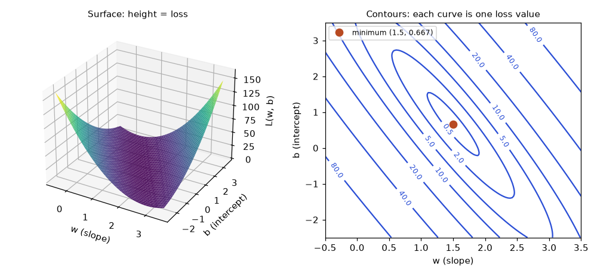
How to read it: on the right, each blue curve joins all (w, b) pairs with the same loss, and the number on it is that loss. The curves are tilted ellipses, not circles. That tilt tells you the slope and intercept are entangled: when you raise w, the best b falls. The long thin direction of the ellipses is where the bowl is flat, and the short direction is where it is steep. Section 12.5 turns this observation into numbers.
Going deeper
Real loss landscapes are not smooth bowls. For a linear model with squared error the landscape is a perfect convex bowl (one bottom, no traps), as you will prove with the Hessian. For neural networks the landscape has flat plateaus, long curved valleys and many saddle points. Researchers visualise it by picking two random directions in weight space and plotting the loss on that plane, which is exactly a contour plot of a function of two variables. The practical lesson: low-dimensional pictures show the structure (valleys, saddles) that optimisers must handle, and the algebra in this chapter tells you, at any single point, what the local picture looks like.
12.2 Partial Derivatives
Beginner: freeze everything else
Let f(x, y) = x²y + 3y. To find ∂f/∂x (read "partial f partial x"), pretend y is a fixed number, like 5. Then f = 5x² + 15, and the derivative with respect to x is 10x, which is 2xy with y = 5 put back. So ∂f/∂x = 2xy. To find ∂f/∂y, pretend x is fixed, like 4. Then f = 16y + 3y = 19y, derivative 19. In general ∂f/∂y = x² + 3.
Intermediate: definition, rules and examples
Every rule from Chapter 10 (power, product, quotient, chain, exponential, log, trig) carries over unchanged, as long as you remember which letter is the variable.
Problem 12.2.1 For f(x, y) = x²y + 3y find both partials and evaluate them at (2, 1).
| ∂f/∂x | Freeze y. d/dx of x²·y is 2x·y. d/dx of 3y is 0. So fx = 2xy |
|---|---|
| ∂f/∂y | Freeze x. d/dy of x²·y is x². d/dy of 3y is 3. So fy = x² + 3 |
| At (2, 1) | fx = 2·2·1 = 4. fy = 4 + 3 = 7 |
| Meaning | Near (2, 1), a small step dx east changes f by about 4·dx, and a small step dy north changes it by about 7·dy |
Problem 12.2.2 For g(x, y) = exy find ∂g/∂x and ∂g/∂y, and evaluate ∂g/∂x at (1, 2).
| Idea | Chain rule from Chapter 10: d/du eu = eu, with u = xy |
|---|---|
| ∂g/∂x | exy · ∂(xy)/∂x = exy · y = y·exy |
| ∂g/∂y | exy · x = x·exy |
| At (1, 2) | ∂g/∂x = 2·e2 = 2 × 7.389 = 14.778 |
Problem 12.2.3 For h(x, y) = ln(x² + y²) find both partials.
| Idea | d/du ln u = 1/u, with u = x² + y² |
|---|---|
| ∂h/∂x | (1/(x² + y²)) · 2x = 2x/(x² + y²) |
| ∂h/∂y | 2y/(x² + y²) |
| Check | At (1, 1): both are 2/2 = 1, which makes sense because the function is symmetric in x and y |
Problem 12.2.4 A data story: revenue R = p·q where q = 1000 − 40p is demand at price p, and you also add an advertising term, so R(p, a) = p·(1000 − 40p + 5√a), with a in thousands of dollars of ad spend. Find ∂R/∂p and ∂R/∂a at p = 10, a = 16.
| Expand | R = 1000p − 40p² + 5p√a |
|---|---|
| ∂R/∂p | Freeze a: 1000 − 80p + 5√a |
| ∂R/∂a | Freeze p: 5p · d(√a)/da = 5p · 1/(2√a) = 5p/(2√a) |
| At p = 10, a = 16 | √16 = 4. ∂R/∂p = 1000 − 800 + 20 = 220. ∂R/∂a = 50/8 = 6.25 |
| Meaning | Raising the price by 1 unit raises revenue by about 220. Spending 1 more thousand on ads raises revenue by about 6.25 thousand-units. This is a sensitivity analysis: each partial answers "what if I change only this?" |
To check a partial derivative in code, use the central difference from Chapter 10: nudge one input by +h and −h, and divide the difference of outputs by 2h.
import numpy as np
def num_partial(f, point, i, h=1e-5):
up = np.array(point, float); down = up.copy()
up[i] += h; down[i] -= h
return (f(up) - f(down)) / (2 * h)
f = lambda p: p[0] ** 2 * p[1] + 3 * p[1]
print(round(num_partial(f, [2, 1], 0), 4), round(num_partial(f, [2, 1], 1), 4))
g = lambda p: np.exp(p[0] * p[1])
print(round(num_partial(g, [1, 2], 0), 3), round(2 * np.exp(2), 3))4.0 7.0
14.778 14.778Mixed partials and symmetry
You can differentiate a partial derivative again. ∂²f/∂x² means differentiate twice in x. ∂²f/∂y∂x means differentiate in x first, then in y. For f = x²y³: fx = 2xy³, then fxy = 6xy². Starting the other way: fy = 3x²y², then fyx = 6xy². Same answer. This is not luck: whenever the second partials are continuous, the order does not matter (Clairaut's theorem, also called Schwarz's theorem). It is why the Hessian matrix in Section 12.5 is symmetric.
Going deeper
Partial derivatives do not tell the whole story. A function can have both partial derivatives at a point and still not be differentiable there, because partials only look along the axes. Example: f(x, y) = xy/(x² + y²) with f(0, 0) = 0. Along the axes f = 0, so both partials at the origin are 0. But along the diagonal y = x, f = x²/(2x²) = 1/2 for every x ≠ 0, so f is not even continuous at the origin. A function is truly differentiable at a point when a single linear map approximates it in all directions at once, which is exactly the idea behind the tangent plane in Section 12.3. In practice, every loss you meet (squared error, log-loss, cross-entropy) is smooth, so this subtlety bites only at kinks such as ReLU at 0, where frameworks simply pick a convention (derivative 0 at 0).
12.3 The Gradient, Directional Derivatives and the Tangent Plane
Beginner: collect the partials
For f(x, y) = x² + 3y², the partials are fx = 2x and fy = 6y. At the point (2, 1) they equal 4 and 6. Collect them in a vector: ∇f(2, 1) = (4, 6). The symbol ∇ is called "nabla" or "del"; ∇f is read "grad f". The arrow (4, 6) points right and up, mostly up, because the bowl is steeper in y.
Intermediate: definition, directional derivative, proof
Why is the directional derivative equal to a dot product? Walk along the line x + t·u and let g(t) = f(x + t·u). By the multivariable chain rule (Section 12.4), g′(0) = Σ (∂f/∂xi)·(dxi/dt) = Σ (∂f/∂xi)·ui = ∇f · u. Then use the geometric form of the dot product from Chapter 5: ∇f · u = ‖∇f‖·‖u‖·cos θ = ‖∇f‖ cos θ, where θ is the angle between u and the gradient. This single formula proves three facts:
- Steepest ascent. cos θ is largest (equal to 1) when θ = 0, so the fastest increase is in the gradient direction, and the maximum rate is ‖∇f‖.
- Steepest descent. cos θ = −1 when θ = 180°, so −∇f is the direction of fastest decrease, with rate −‖∇f‖.
- Perpendicular to contours. If you walk along a contour, f does not change, so Du f = 0, which means ∇f · u = 0 (cos θ = 0, θ = 90°). So the gradient is perpendicular to the contour line through that point.
Problem 12.3.1 For f(x, y) = x² + 3y² at (2, 1), find the directional derivative in the direction (3, 4), the steepest-ascent direction, and the maximum rate.
| Gradient | ∇f = (2x, 6y) = (4, 6) |
|---|---|
| Unit vector | (3, 4) has length √(9 + 16) = 5, so u = (3/5, 4/5) = (0.6, 0.8) |
| Directional derivative | ∇f · u = 4·0.6 + 6·0.8 = 2.4 + 4.8 = 7.2 |
| Max rate | ‖∇f‖ = √(16 + 36) = √52 = 7.211 |
| Steepest direction | (4, 6)/7.211 = (0.555, 0.832) |
| Check | 7.2 ≤ 7.211, as it must be, since no direction beats the gradient direction. Direction (3, 4) is close to (4, 6) in angle, so it nearly achieves the maximum |
Problem 12.3.2 Verify the perpendicularity claim at (2, 1). The contour through (2, 1) is x² + 3y² = 7. Find its tangent direction and dot it with the gradient.
| Implicit differentiation | Along the contour, 2x dx + 6y dy = 0. At (2, 1): 4 dx + 6 dy = 0, so dy/dx = −4/6 = −2/3 |
|---|---|
| Tangent vector | (3, −2) (run 3, drop 2) |
| Dot with gradient | (4, 6) · (3, −2) = 12 − 12 = 0 |
| Meaning | Perpendicular, as the theory says |
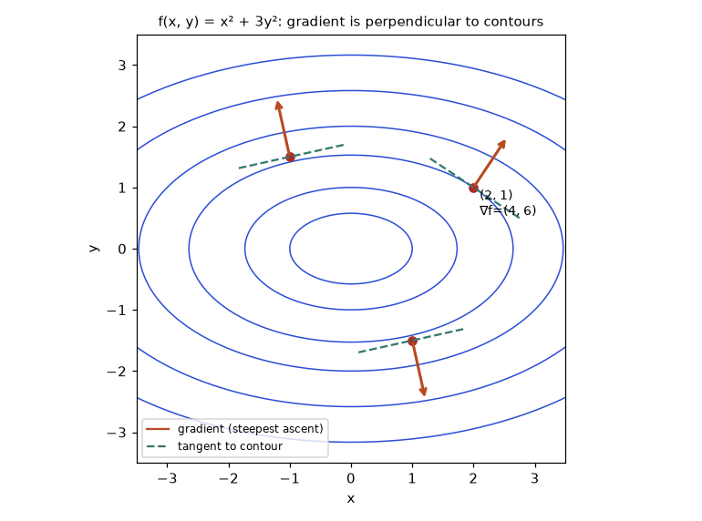
How to read it: each arrow starts at a red dot and leaves the contour at a right angle, pointing to higher values (outward). The arrows are not aimed at the centre, except on the axes. That is the key warning for optimisation: the steepest direction is not the direction of the minimum. In a stretched bowl, gradient descent zig-zags, which is why Chapter 14 introduces momentum and Adam.
Problem 12.3.3 A gradient descent step on a loss. For the loss L(w, b) of Problem 12.1.3 at (w, b) = (1, 0), compute the gradient by hand, then take one step with learning rate 0.01.
| Formula | L = Σ ri² with ri = w·xi + b − yi. By the chain rule ∂L/∂w = Σ 2 ri xi and ∂L/∂b = Σ 2 ri |
|---|---|
| Residuals at (1, 0) | r = (−1, −2, −2) |
| ∂L/∂w | 2·(−1·1 + −2·2 + −2·3) = 2·(−1 − 4 − 6) = −22 |
| ∂L/∂b | 2·(−1 − 2 − 2) = −10 |
| Step | (w, b) − 0.01·(−22, −10) = (1 + 0.22, 0 + 0.10) = (1.22, 0.10) |
| New loss | Residuals (1.22 + 0.1 − 2, 2.44 + 0.1 − 4, 3.66 + 0.1 − 5) = (−0.68, −1.46, −1.24). L = 0.4624 + 2.1316 + 1.5376 = 4.1316, down from 9 |
import numpy as np
x = np.array([1.0, 2.0, 3.0]); y = np.array([2.0, 4.0, 5.0])
X = np.column_stack([x, np.ones(3)]) # columns: x and a 1 for the intercept
def loss(p): return np.sum((X @ p - y) ** 2)
p = np.array([1.0, 0.0]) # (w, b)
grad = 2 * X.T @ (X @ p - y)
print(grad)
p2 = p - 0.01 * grad
print(p2, round(loss(p2), 4))[-22. -10.]
[1.22 0.1 ] 4.1316Tangent plane and linearisation
In one variable the tangent line is f(a) + f′(a)(x − a). In several variables the tangent plane (or hyperplane) is
This is the linearisation of f at a: the best flat approximation near a.
Problem 12.3.4 Linearise f(x, y) = x² + 3y² at (2, 1) and use it to estimate f(2.1, 0.9).
| Plane | f ≈ 7 + 4(x − 2) + 6(y − 1) |
|---|---|
| Estimate | 7 + 4(0.1) + 6(−0.1) = 7 + 0.4 − 0.6 = 6.8 |
| Exact | 2.1² + 3·0.9² = 4.41 + 2.43 = 6.84 |
| Error | 0.04, which is second order: (0.1)² + 3(0.1)² = 0.04. The plane ignores curvature |
Problem 12.3.5 Distance from the origin: r(x, y) = √(x² + y²) at (3, 4). Linearise and estimate r(3.03, 3.96).
| Value | r(3, 4) = 5 |
|---|---|
| Gradient | (x/r, y/r) = (3/5, 4/5) = (0.6, 0.8). It is the unit vector pointing away from the origin, which makes sense: moving outward increases distance at rate 1 |
| Estimate | 5 + 0.6(0.03) + 0.8(−0.04) = 5 + 0.018 − 0.032 = 4.986 |
| Exact | √(9.1809 + 15.6816) = √24.8625 = 4.98623 |
import numpy as np
f = lambda x, y: x ** 2 + 3 * y ** 2
grad = np.array([2 * 2, 6 * 1]) # gradient at (2, 1)
u = np.array([3, 4]) / 5 # unit direction
print(grad, grad @ u, round(np.linalg.norm(grad), 4))
print(round(f(2.1, 0.9), 4), 7 + grad @ np.array([0.1, -0.1]))
r = lambda x, y: np.sqrt(x ** 2 + y ** 2)
print(round(r(3.03, 3.96), 5), round(5 + 0.6 * 0.03 + 0.8 * (-0.04), 5))[4 6] 7.200000000000001 7.2111
6.84 6.8
4.98623 4.986Going deeper
Why the gradient is really a covector. The derivative of f at x is a linear machine: it takes a displacement vector h and returns the number df = ∇f · h. A linear machine that eats a vector and returns a number is called a covector (or row vector, or linear functional). In coordinates it is a row (∂f/∂x1, …, ∂f/∂xn). We turn it into a column vector, the "gradient", using the dot product, which is allowed because we picked the standard dot product to measure lengths and angles. If you changed the metric (for example, rescaled one axis), the covector would stay the same but the "steepest direction" arrow would change. This is not abstract: it is the reason that gradient descent is not invariant to rescaling features, and it is the starting point of natural-gradient methods and preconditioned optimisers such as Adam, which rescale each coordinate. It also explains the layout convention discussed in Section 12.6.
Gradient at a flat or kinked point. If ∇f(x) = 0 there is no preferred direction: x is a critical point (Section 12.5). If f has a kink (|x|, ReLU), the gradient is not defined there, and one uses subgradients. Deep learning libraries pick one valid subgradient and move on.
12.4 The Multivariable Chain Rule and the Jacobian Matrix
Beginner: one path through two variables
Let z = f(x, y) = x²y, and suppose you walk along a path where x = t² and y = 3t. As t grows, both x and y change, and both changes affect z. The change of z has two contributions: z changes because x moves (rate fx, times how fast x moves) plus because y moves (rate fy, times how fast y moves):
Here fx = 2xy, fy = x², dx/dt = 2t, dy/dt = 3. So dz/dt = 2xy·2t + x²·3. Substituting x = t², y = 3t: 2·t²·3t·2t + t⁴·3 = 12t⁴ + 3t⁴ = 15t⁴. Check by substituting first: z = (t²)²·3t = 3t⁵, dz/dt = 15t⁴. Both routes agree.
Intermediate: the rule in matrix form
In vector language, the path is x(t) ∈ ℝⁿ, and the chain rule reads dz/dt = ∇f(x(t)) · x′(t), a dot product. For several steps in the chain you need the Jacobian.
| ∂f1/∂x1 | … | ∂f1/∂xn |
| ⋮ | ⋮ | |
| ∂fm/∂x1 | … | ∂fm/∂xn |
Chain rule for compositions: if g: ℝⁿ → ℝᵐ and h: ℝᵐ → ℝᵏ, then the Jacobian of h∘g is the product Jh(g(x)) · Jg(x), of shape (k × m)(m × n) = k × n. The inner dimensions must match, which is a handy shape check.
Problem 12.4.1 Jacobian of polar coordinates. The map (r, θ) → (x, y) = (r cos θ, r sin θ). Find J, and evaluate it at r = 2, θ = π/6, together with its determinant.
| Partials | ∂x/∂r = cos θ, ∂x/∂θ = −r sin θ, ∂y/∂r = sin θ, ∂y/∂θ = r cos θ | ||||
|---|---|---|---|---|---|
| J |
| ||||
| At r = 2, θ = π/6 | cos = 0.8660, sin = 0.5. J = [[0.866, −1], [0.5, 1.732]] | ||||
| Determinant | cos θ · r cos θ − (−r sin θ)(sin θ) = r(cos²θ + sin²θ) = r. Numerically 0.866·1.732 + 1·0.5 = 1.5 + 0.5 = 2.0 | ||||
| Meaning | Near r = 2, a tiny rectangle of size dr × dθ becomes a patch of area 2 · dr · dθ. This is the "r" in polar integrals (Section 12.7) |
Problem 12.4.2 Chain rule by matrices. f(x, y) = (x + y, xy) and g(u, v) = (u², u + v). Find the Jacobian of g∘f at (1, 2).
| Inner | f(1, 2) = (3, 2). Jf = [[1, 1], [y, x]] = [[1, 1], [2, 1]] |
|---|---|
| Outer | At (u, v) = (3, 2): Jg = [[2u, 0], [1, 1]] = [[6, 0], [1, 1]] |
| Product | Jg·Jf = [[6·1 + 0·2, 6·1 + 0·1], [1·1 + 1·2, 1·1 + 1·1]] = [[6, 6], [3, 2]] |
| Check directly | g∘f = ((x + y)², x + y + xy). Partials: row 1: 2(x + y) = 6 for both x and y. Row 2: 1 + y = 3 and 1 + x = 2. Matches |
Problem 12.4.3 A neural-network layer. h = ReLU(W x + b) with W = [[1, −1, 2], [0, 3, 1]], b = (0, −1), x = (1, 2, 0). Find the Jacobian ∂h/∂x.
| Shapes | x has 3 entries, h has 2, so J is 2 × 3 |
|---|---|
| Pre-activation | z = W x + b: row 1: 1·1 − 1·2 + 2·0 + 0 = −1. Row 2: 0·1 + 3·2 + 1·0 − 1 = 5. So z = (−1, 5) |
| Activation slopes | ReLU′(z) = 1 if z > 0, else 0. So (0, 1) |
| Chain rule | J = diag(0, 1) · W (the activation touches each output separately, so its Jacobian is diagonal) |
| Compute | Row 1 of W is multiplied by 0, row 2 by 1: J = [[0, 0, 0], [0, 3, 1]] |
| Meaning | The first neuron is "dead" at this input (z < 0), so it passes no signal. The second neuron responds to x₂ with slope 3 and to x₃ with slope 1. For a linear layer without ReLU, J is just W: the Jacobian of a linear map is its matrix |
import numpy as np
def num_jac(f, x, h=1e-6):
x = np.array(x, float); cols = []
for j in range(len(x)):
up = x.copy(); down = x.copy(); up[j] += h; down[j] -= h
cols.append((f(up) - f(down)) / (2 * h))
return np.column_stack(cols) # column j = effect of input j
polar = lambda p: np.array([p[0] * np.cos(p[1]), p[0] * np.sin(p[1])])
J = num_jac(polar, [2, np.pi / 6])
print(np.round(J, 3)); print(round(np.linalg.det(J), 3))
f = lambda p: np.array([p[0] + p[1], p[0] * p[1]])
g = lambda q: np.array([q[0] ** 2, q[0] + q[1]])
print(np.round(num_jac(lambda p: g(f(p)), [1, 2]), 3))
print(np.array([[6, 0], [1, 1]]) @ np.array([[1, 1], [2, 1]]))
W = np.array([[1, -1, 2], [0, 3, 1.0]]); b = np.array([0, -1.0]); x = np.array([1, 2, 0.0])
layer = lambda v: np.maximum(0, W @ v + b)
print(np.round(num_jac(layer, x), 3))[[ 0.866 -1. ]
[ 0.5 1.732]]
2.0
[[6. 6.]
[3. 2.]]
[[6 6]
[3 2]]
[[0. 0. 0.]
[0. 3. 1.]]Problem 12.4.4 Why gradient descent decreases the loss. Take a loss L(w) and a step w(η) = w − η ∇L(w). Find dL/dη at η = 0.
| Chain rule | dL/dη = ∇L(w(η)) · dw/dη |
|---|---|
| Path speed | dw/dη = −∇L(w) |
| At η = 0 | dL/dη = ∇L(w) · (−∇L(w)) = −‖∇L(w)‖² |
| Meaning | This is negative whenever the gradient is non-zero. So a small enough step always lowers the loss, and the first-order drop is η‖∇L‖². Check with Problem 12.3.3: ‖∇L‖² = 484 + 100 = 584, η = 0.01 predicts a drop of about 5.84. Actual drop: 9 − 4.1316 = 4.87, smaller because of curvature |
Going deeper
Total derivative versus partial derivative. Suppose u = f(x, t) and x itself depends on t, say x = t². The partial derivative ∂f/∂t freezes x and asks "how does f change if only the explicit t changes?". The total derivative df/dt lets everything that depends on t move: df/dt = ∂f/∂t + (∂f/∂x)(dx/dt). Example: f = x·t with x = t². The partial ∂f/∂t = x = t². The total: f = t³, so df/dt = 3t², and the formula gives t² + t·2t = 3t². Confusing the two is a real source of bugs in deep learning code: when you ask a framework for the gradient of the loss with respect to a parameter, you get the total derivative through every path, and "detach" or "stop gradient" operations deliberately turn a total derivative into a partial one by freezing a path.
Forward and reverse mode. The product Jk ⋯ J2 J1 can be multiplied from the right (start with the input, "forward mode") or from the left (start with the output, "reverse mode"). When the final output is a single number (a loss) the leftmost matrix is a row vector, and multiplying from the left only ever produces row vectors, which is much cheaper than carrying full matrices. That is the whole trick of backpropagation, developed in Chapter 13.
The Jacobian of softmax. For p = softmax(z), the Jacobian is diag(p) − p pᵀ, an n × n symmetric matrix whose rows sum to zero (the probabilities always sum to 1, so shifting all z changes nothing). We will not need it in full, because the combination "softmax then cross-entropy" collapses to the simple gradient p − y in Section 12.6.
12.5 The Hessian, Critical Points and the Second-Derivative Test
Beginner: second derivatives in one variable, then two
In Chapter 11 you learned: if f′(x) = 0 and f″(x) > 0 you are at a minimum, if f″ < 0 a maximum. With two variables there are four second derivatives: fxx, fxy, fyx, fyy. Put them in a 2 × 2 table, the Hessian. For f = x² + xy + y²: fx = 2x + y, fy = x + 2y, so fxx = 2, fxy = 1, fyx = 1, fyy = 2. The Hessian is [[2, 1], [1, 2]].
Intermediate: definition and the test
Second-derivative test. At a critical point, look at the eigenvalues of H (they are real because H is symmetric, Chapter 8):
- All eigenvalues > 0 (H positive definite): local minimum (bowl).
- All eigenvalues < 0 (negative definite): local maximum (dome).
- Some positive, some negative: saddle point.
- Some eigenvalue = 0 and no negative ones (or no positive ones): inconclusive, look at higher-order terms. A zero eigenvalue with others positive gives a flat valley, called a ridge or trough.
For 2 × 2 there is a shortcut without eigenvalues. Let D = fxx·fyy − fxy² (the determinant of H). If D > 0 and fxx > 0: minimum. If D > 0 and fxx < 0: maximum. If D < 0: saddle. If D = 0: inconclusive. (Reason: det H is the product of the eigenvalues, so D < 0 means opposite signs.)
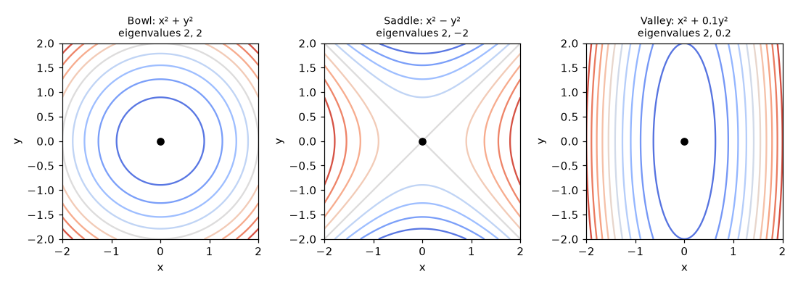
How to read it: for the bowl, contours are circles because the curvature is equal in all directions. For the saddle, contours are hyperbolas, and f rises along x and falls along y. For the valley, the contours are long ellipses: the curvature is 2 along x but only 0.2 along y, a ratio of 10. Gradient descent in such a valley crawls along the flat direction and bounces across the steep direction.
Problem 12.5.1 Find and classify the critical point of f(x, y) = x² + xy + y² − 3x.
| Gradient | fx = 2x + y − 3, fy = x + 2y |
|---|---|
| Solve ∇f = 0 | From fy = 0: x = −2y. Put in fx: −4y + y − 3 = 0, so y = −1, x = 2 |
| Hessian | [[2, 1], [1, 2]], the same everywhere. D = 4 − 1 = 3 > 0, fxx = 2 > 0 |
| Eigenvalues | Trace 4, det 3: λ² − 4λ + 3 = 0, λ = 3 and 1. Both positive |
| Answer | A minimum at (2, −1), value f = 4 − 2 + 1 − 6 = −3. Because the Hessian is positive definite everywhere, this is the global minimum |
Problem 12.5.2 Find and classify all critical points of f(x, y) = x³ + y³ − 3xy.
| Gradient | fx = 3x² − 3y, fy = 3y² − 3x |
|---|---|
| Solve | fx = 0 gives y = x². Put in fy = 0: 3x⁴ − 3x = 0, so 3x(x³ − 1) = 0, x = 0 or x = 1. Points: (0, 0) and (1, 1) |
| Hessian | [[6x, −3], [−3, 6y]] |
| At (0, 0) | [[0, −3], [−3, 0]]. D = 0 − 9 = −9 < 0. Eigenvalues ±3. Saddle, f = 0 |
| At (1, 1) | [[6, −3], [−3, 6]]. D = 36 − 9 = 27 > 0, fxx = 6 > 0. Eigenvalues 9 and 3. Minimum, f = 1 + 1 − 3 = −1 |
| Meaning | This surface has one valley bottom and one mountain pass. It has no global minimum: f(x, 0) = x³ goes to −∞ |
Problem 12.5.3 Classify the critical points of f(x, y) = x³ − 3x + y².
| Gradient | (3x² − 3, 2y). Zero when x = ±1 and y = 0 |
|---|---|
| Hessian | [[6x, 0], [0, 2]] |
| (1, 0) | Eigenvalues 6, 2, both positive. Local minimum, f = 1 − 3 = −2 |
| (−1, 0) | Eigenvalues −6, 2. Saddle, f = −1 + 3 = 2 |
Problem 12.5.4 The Hessian of the regression loss. For L(w, b) = Σ (w xi + b − yi)² with x = (1, 2, 3): find H and its eigenvalues.
| Gradient | Lw = 2Σ ri xi, Lb = 2Σ ri, with ri = w xi + b − yi |
|---|---|
| Second partials | Lww = 2Σ xi² = 2(1 + 4 + 9) = 28. Lwb = 2Σ xi = 12. Lbb = 2n = 6 |
| Hessian | [[28, 12], [12, 6]]. It does not depend on (w, b), because L is quadratic |
| Eigenvalues | Trace 34, det 168 − 144 = 24. λ = 17 ± √(289 − 24) = 17 ± 16.279, so 33.279 and 0.721 |
| Meaning | Both positive: a convex bowl with a single minimum. The ratio 33.279/0.721 ≈ 46 is the condition number: the bowl is 46 times steeper in one direction than the other. That is the tilted, thin ellipse you saw in the contour figure, and it limits how fast gradient descent can go (Chapter 14) |
import numpy as np
def classify(H):
ev = np.linalg.eigvalsh(H) # eigenvalues of a symmetric matrix
if np.all(ev > 0): kind = "minimum"
elif np.all(ev < 0): kind = "maximum"
elif ev.min() < 0 < ev.max(): kind = "saddle"
else: kind = "inconclusive"
return np.round(ev, 3), kind
print(classify(np.array([[0, -3], [-3, 0.0]])))
print(classify(np.array([[6, -3], [-3, 6.0]])))
H = np.array([[28, 12], [12, 6.0]])
ev = np.linalg.eigvalsh(H)
print(np.round(ev, 3), round(ev.max() / ev.min(), 1))(array([-3., 3.]), 'saddle')
(array([3., 9.]), 'minimum')
[ 0.721 33.279] 46.1Going deeper
Taylor expansion in several variables. Chapter 11 gave f(a + h) ≈ f(a) + f′(a)h + ½f″(a)h². The several-variable version replaces each piece by its matrix counterpart:
The first-order term is the tangent plane, the second-order term is a quadratic form (Chapter 8), and its sign for each direction h is what the Hessian test examines. At a critical point ∇f = 0, so f(a + h) − f(a) ≈ ½ hᵀHh: a minimum when this is positive for every h, which is exactly "H positive definite".
Problem 12.5.5 Second-order Taylor of f(x, y) = ex cos y at (0, 0), and test it at (0.1, 0.2).
| Derivatives | fx = ex cos y, fy = −ex sin y. fxx = ex cos y, fxy = −ex sin y, fyy = −ex cos y |
|---|---|
| At (0, 0) | f = 1, ∇f = (1, 0), H = [[1, 0], [0, −1]] |
| Taylor | f ≈ 1 + x + ½(x² − y²) |
| At (0.1, 0.2) | Linear: 1 + 0.1 = 1.1. Quadratic: 1 + 0.1 + ½(0.01 − 0.04) = 1.085 |
| Exact | e0.1 cos 0.2 = 1.10517 × 0.98007 = 1.08314 |
The quadratic model is far better (error 0.0019) than the linear one (error 0.017). This is why second-order methods converge fast near a minimum.
Newton's method in several variables. Minimise the quadratic model: set the gradient of f(a) + gᵀh + ½hᵀHh to zero, giving H h = −g, so the step is h = −H⁻¹g. For the regression loss at (1, 0) the gradient is (−22, −10) and H = [[28, 12], [12, 6]], with H⁻¹ = (1/24)[[6, −12], [−12, 28]]. Then H⁻¹g = (1/24)(6·(−22) − 12·(−10), −12·(−22) + 28·(−10)) = (1/24)(−12, −16) = (−0.5, −0.667), and the new point is (1, 0) − (−0.5, −0.667) = (1.5, 0.667), the exact minimum, in one step. Newton is perfect on quadratics, but for n parameters H has n² entries and inverting it costs about n³ operations, hopeless for a network with millions of weights.
Hessian-vector products. Often you do not need H, only its product Hv with some vector v (for example in conjugate gradient, or to estimate the largest eigenvalue by power iteration, Chapter 8). The directional derivative of the gradient in direction v is exactly Hv, so you can approximate it with two gradient evaluations and no n × n matrix at all:
Automatic differentiation can even compute Hv exactly with about the cost of two gradient calls. Check on f = x²y + y³, whose gradient is (2xy, x² + 3y²) and Hessian [[2y, 2x], [2x, 6y]]. At (1, 2) with v = (1, −1): H = [[4, 2], [2, 12]] and Hv = (4 − 2, 2 − 12) = (2, −10).
import numpy as np
grad = lambda p: np.array([2 * p[0] * p[1], p[0] ** 2 + 3 * p[1] ** 2])
p = np.array([1.0, 2.0]); v = np.array([1.0, -1.0]); eps = 1e-5
hv = (grad(p + eps * v) - grad(p - eps * v)) / (2 * eps)
print(np.round(hv, 4))
H = np.array([[2 * p[1], 2 * p[0]], [2 * p[0], 6 * p[1]]])
print(H @ v)
f = lambda x, y: np.exp(x) * np.cos(y)
print(round(f(0.1, 0.2), 5), 1 + 0.1, round(1 + 0.1 + 0.5 * (0.1 ** 2 - 0.2 ** 2), 4))[ 2. -10.]
[ 2. -10.]
1.08314 1.1 1.085Saddles in high dimensions. For a random critical point of a function of n variables, each of the n Hessian eigenvalues is roughly equally likely to be positive or negative, so the chance that all are positive is tiny when n is large. So in deep networks most critical points are saddles, not local minima, and the real obstacle is plateaus near saddles where the gradient is tiny. Stochastic noise and momentum help escape them. Interviewers like the question "are local minima the main problem for training neural networks?" The good answer: saddles and ill-conditioning matter more.
12.6 Gradients of Machine-Learning Losses and Matrix Calculus
Beginner: the four basic patterns
Let x be a column vector with n entries, a a fixed vector of the same size, A a fixed n × n matrix, and b a fixed vector. In the table below the gradient has the same shape as x.
| Function of x | Gradient ∇ₓ | One-variable cousin |
|---|---|---|
| aᵀx | a | d(ax)/dx = a |
| xᵀx = ‖x‖² | 2x | d(x²)/dx = 2x |
| xᵀA x | (A + Aᵀ) x, which is 2Ax when A is symmetric | d(a x²)/dx = 2ax |
| ‖A x − b‖² | 2 Aᵀ (A x − b) | d(ax − b)²/dx = 2a(ax − b) |
Why these are true, from first principles. For aᵀx = Σ aixi, the partial with respect to xk is just ak, so the gradient is a. For xᵀAx = Σi Σj Aij xi xj, the variable xk appears in two places: as xi (when i = k) and as xj (when j = k). So ∂/∂xk = Σj Akj xj + Σi Aik xi = (Ax)k + (Aᵀx)k. For ‖Ax − b‖², expand: (Ax − b)ᵀ(Ax − b) = xᵀAᵀAx − 2bᵀAx + bᵀb. Apply the rules: the first term has symmetric matrix AᵀA, gradient 2AᵀAx. The second is (−2Aᵀb)ᵀx, gradient −2Aᵀb. The third is constant. Total: 2AᵀAx − 2Aᵀb = 2Aᵀ(Ax − b).
Intermediate: worked examples
Problem 12.6.1 Gradient of a linear score. s(x) = aᵀx with a = (2, −1, 3) at x = (1, 4, 2).
| Value | 2·1 + (−1)·4 + 3·2 = 2 − 4 + 6 = 4 |
|---|---|
| Gradient | ∇s = a = (2, −1, 3), for every x |
| Meaning | A linear function has a constant slope. Each coefficient is the effect of one unit of that feature, which is why regression coefficients are interpretable |
Problem 12.6.2 Quadratic form. q(x) = xᵀAx with A = [[2, 1], [0, 3]]. Find ∇q at x = (1, 2) and check by expanding.
| Formula | ∇q = (A + Aᵀ)x. A + Aᵀ = [[2, 1], [0, 3]] + [[2, 0], [1, 3]] = [[4, 1], [1, 6]] |
|---|---|
| At (1, 2) | [[4, 1], [1, 6]] · (1, 2) = (4 + 2, 1 + 12) = (6, 13) |
| Expand | q = 2x² + xy + 3y² (the entry A12 = 1 gives the xy term, A21 = 0 adds none). ∂q/∂x = 4x + y = 4 + 2 = 6. ∂q/∂y = x + 6y = 1 + 12 = 13 |
| Warning | Using just Ax gives (2 + 2, 0 + 6) = (4, 6), which is wrong because this A is not symmetric |
Problem 12.6.3 Squared error and the normal equation. For linear regression, J(w) = ‖Xw − y‖². Set the gradient to zero and solve for the data x = (1, 2, 3), y = (2, 4, 5) with an intercept column.
| Gradient | By the fourth row of the table (A = X, variable w, b = y): ∇J = 2Xᵀ(Xw − y) |
|---|---|
| Set to zero | XᵀXw − Xᵀy = 0, so XᵀX w = Xᵀy. This is the normal equation. If XᵀX is invertible, w = (XᵀX)⁻¹Xᵀy |
| Build X | Rows (1, xi): X = [[1, 1], [1, 2], [1, 3]] with parameters w = (b, slope). XᵀX = [[3, 6], [6, 14]]. Xᵀy = (2 + 4 + 5, 2 + 8 + 15) = (11, 25) |
| Solve | det = 3·14 − 36 = 6. Inverse = (1/6)[[14, −6], [−6, 3]]. w = (1/6)(14·11 − 6·25, −6·11 + 3·25) = (1/6)(4, 9) = (0.667, 1.5) |
| Check | Intercept 2/3, slope 1.5, exactly the minimum seen in Section 12.1. The Hessian is 2XᵀX, positive definite, so this is the global minimum |
import numpy as np
x = np.array([1.0, 2.0, 3.0]); y = np.array([2.0, 4.0, 5.0])
X = np.column_stack([np.ones(3), x]) # intercept column first
w = np.linalg.solve(X.T @ X, X.T @ y) # normal equation
print(np.round(w, 4))
print(np.round(2 * X.T @ (X @ w - y), 6) + 0.0) # gradient at the solution
print(np.round(np.linalg.lstsq(X, y, rcond=None)[0], 4))[0.6667 1.5 ]
[0. 0.]
[0.6667 1.5 ]Problem 12.6.4 Logistic regression. With probabilities pi = σ(zi), z = Xw, σ(z) = 1/(1 + e−z), the log-loss is J = −Σ [ yi ln pi + (1 − yi) ln(1 − pi) ]. Show that ∇J = Xᵀ(p − y), then compute it at w = 0 for X = [[1, 0.5], [1, −1], [1, 2]], y = (1, 0, 1).
| Sigmoid slope | σ′(z) = σ(z)(1 − σ(z)) = p(1 − p) (Chapter 10) |
|---|---|
| One sample | ℓ = −y ln p − (1 − y) ln(1 − p). dℓ/dp = −y/p + (1 − y)/(1 − p) |
| Chain to z | dℓ/dz = [−y/p + (1 − y)/(1 − p)] · p(1 − p) = −y(1 − p) + (1 − y)p = p − y. The messy parts cancel |
| Chain to w | zi = xiᵀw, so ∂zi/∂w = xi. Summing over samples: ∇J = Σ (pi − yi) xi = Xᵀ(p − y) |
| At w = 0 | z = 0, so p = (0.5, 0.5, 0.5), p − y = (−0.5, 0.5, −0.5) |
| Gradient | First component (intercept column of ones): −0.5 + 0.5 − 0.5 = −0.5. Second: −0.5·0.5 + 0.5·(−1) + (−0.5)·2 = −0.25 − 0.5 − 1 = −1.75. So ∇J = (−0.5, −1.75) |
| Loss | 3 · ln 2 = 2.0794 at w = 0 |
Compare with linear regression: the gradient is Xᵀ(prediction − target) in both cases. Squared error gives it with the prediction Xw, log-loss with the prediction σ(Xw). This is not a coincidence, it is a property of "canonical" pairings of model and loss (generalised linear models, see the Statistics document).
Problem 12.6.5 Softmax cross-entropy. For logits z, pi = ezi / Σj ezj and the loss for true class k is ℓ = −ln pk. Show ∂ℓ/∂z = p − y (y one-hot), then evaluate for z = (2, 1, 0), k = 0.
| Rewrite | ℓ = −zk + ln Σj ezj |
|---|---|
| Differentiate in zi | ∂(−zk)/∂zi = −1 if i = k else 0, which is −yi. And ∂ ln Σ ezj/∂zi = ezi / Σ ezj = pi |
| Result | ∂ℓ/∂zi = pi − yi |
| Numbers | e² = 7.389, e¹ = 2.718, e⁰ = 1. Sum = 11.107. p = (0.6652, 0.2447, 0.0900) |
| Gradient | y = (1, 0, 0). p − y = (−0.3348, 0.2447, 0.0900) |
| Meaning | The entries sum to 0. Gradient descent raises the correct logit (negative entry, so z0 grows) and lowers the wrong ones, each in proportion to the probability mass wasted on it. A confident correct prediction (pk near 1) gives a gradient near 0 |
Verifying with a numerical gradient check
Never trust a hand-derived gradient until you have compared it with finite differences. The recipe: perturb each parameter by ±ε, compute (J(w + ε ei) − J(w − ε ei))/(2ε), compare with your formula. Use a relative error ‖a − b‖/(‖a‖ + ‖b‖), where about 1e-7 or less is good for double precision, and 1e-2 or more means a bug.
import numpy as np
def num_grad(f, w, eps=1e-6):
g = np.zeros_like(w)
for i in range(len(w)):
up = w.copy(); down = w.copy(); up[i] += eps; down[i] -= eps
g[i] = (f(up) - f(down)) / (2 * eps)
return g
def rel_err(a, b):
return np.linalg.norm(a - b) / (np.linalg.norm(a) + np.linalg.norm(b))
X = np.array([[1, 0.5], [1, -1], [1, 2]]); y = np.array([1.0, 0.0, 1.0])
sigmoid = lambda z: 1 / (1 + np.exp(-z))
def logloss(w):
p = sigmoid(X @ w)
return -np.sum(y * np.log(p) + (1 - y) * np.log(1 - p))
w = np.array([0.3, -0.2])
good = X.T @ (sigmoid(X @ w) - y) # Xt (p - y)
bad = X.T @ (sigmoid(X @ w) - y) / 2 # a typical slip: a missing factor of 2 on the loss derivative
print(np.round(good, 4), "relative error:", rel_err(good, num_grad(logloss, w)) < 1e-7)
print("buggy relative error:", round(rel_err(bad, num_grad(logloss, w)), 3))
z = np.array([2.0, 1.0, 0.0]); k = 0
ce = lambda z: -np.log(np.exp(z[k]) / np.exp(z).sum())
p = np.exp(z) / np.exp(z).sum(); onehot = np.eye(3)[k]
print(np.round(p - onehot, 4), rel_err(p - onehot, num_grad(ce, z)) < 1e-7)[-0.3527 -1.8975] relative error: True
buggy relative error: 0.333
[-0.3348 0.2447 0.09 ] TrueHow to read it: the correct gradient passes (True). The halved gradient has a relative error of 1/3 (|a − a/2| / (|a| + |a/2|) = 0.5/1.5), far above 1e-7, so the check catches it immediately. Numerical checks cost 2n function evaluations, so use them in tests on tiny problems, never in training.
Shapes and layout conventions
Two layouts exist, and mixing them is the main source of confusion in matrix calculus texts. With numerator layout, the derivative of a scalar f with respect to a column vector x is a row (1 × n), and the Jacobian of f: ℝⁿ → ℝᵐ is m × n, matching Section 12.4. With denominator layout, the derivative of a scalar with respect to a column x is a column (n × 1), the gradient, and Jacobians come out as n × m. This chapter uses a hybrid that matches almost all ML code: the gradient ∇f has the shape of the variable (column for a vector, same matrix shape for a matrix), and the Jacobian has outputs in rows. Golden rule: the gradient of a scalar with respect to a thing always has the same shape as that thing, so w, W and b get gradients shaped like w, W and b. If your formula violates this, it is wrong, or it needs a transpose.
Going deeper
The differentials method. Instead of components, work with differentials. The differential df is the first-order change in f when the input changes by a tiny dx, and it always has the form df = (gradient)ᵀ dx (or tr(Gᵀ dX) for a matrix variable). You apply product and chain rules to differentials, then read off the gradient. Example 1: f = xᵀAx. Then df = dxᵀ Ax + xᵀA dx. The first term is a scalar, so it equals its own transpose: dxᵀAx = xᵀAᵀ dx. Hence df = xᵀ(A + Aᵀ) dx = ((A + Aᵀ)x)ᵀ dx, so the gradient is (A + Aᵀ)x. Example 2: f = ‖Ax − b‖² = rᵀr with r = Ax − b, dr = A dx. df = 2rᵀ dr = 2rᵀA dx, so the gradient is 2Aᵀr. Example 3, with a matrix variable: f = ‖Wx − y‖² for W (m × n). Let r = Wx − y, dr = dW x. df = 2rᵀ dW x = tr(2 x rᵀ dW) (a scalar equals its trace, and tr(ABC) = tr(CAB)). The pattern df = tr(Gᵀ dW) gives G = 2 r xᵀ, an m × n matrix, the same shape as W. This is exactly the weight gradient of a linear layer: (error) times (input)ᵀ.
Trace identities worth memorising. tr(AB) = tr(BA); tr(Aᵀ) = tr(A); tr(ABC) = tr(BCA) = tr(CAB); ‖X‖F² = tr(XᵀX); ∇X tr(AX) = Aᵀ; ∇X ‖X‖F² = 2X; ∇X ln det X = X⁻ᵀ (the last one appears in Gaussian likelihoods, Chapter 15).
Numerical issues. Computing p − y from softmax by evaluating ez directly overflows for large logits. Real code subtracts max(z) first, which does not change p. And for log-loss, clip p away from 0 and 1, or use the "log-sum-exp" form, otherwise ln 0 gives −∞. The normal equation (XᵀX)⁻¹ squares the condition number of X, so numerical libraries solve least squares with QR or SVD (Chapter 9), which is what np.linalg.lstsq does.
12.7 Multiple Integrals and Change of Variables
Beginner and intermediate: iterated integrals
To compute ∬ f(x, y) dA over a rectangle, integrate in one variable while treating the other as a constant, then integrate the result in the second variable. (For nice functions the order does not matter, Fubini's theorem.) For non-rectangular regions the inner limits depend on the outer variable.
Problem 12.7.1 ∬ (x² + y) dA over the rectangle 0 ≤ x ≤ 1, 0 ≤ y ≤ 2.
| Inner (in y) | ∫02 (x² + y) dy = [x²y + y²/2]02 = 2x² + 2 |
|---|---|
| Outer (in x) | ∫01 (2x² + 2) dx = [2x³/3 + 2x]01 = 2/3 + 2 = 8/3 |
| Check | Split the sum: ∫x² dx · 2 = (1/3)·2 = 2/3, and 1 · ∫y dy = 1·2 = 2. Total 8/3 = 2.667 |
Problem 12.7.2 ∬ xy dA over the triangle 0 ≤ y ≤ x ≤ 1.
| Limits | For each x from 0 to 1, y runs from 0 to x |
|---|---|
| Inner | ∫0x xy dy = x · x²/2 = x³/2 |
| Outer | ∫01 x³/2 dx = 1/8 = 0.125 |
Change of variables and the Jacobian determinant
If you substitute x = x(u, v), y = y(u, v), a tiny rectangle du × dv in the (u, v) plane maps to a tiny parallelogram in the (x, y) plane. Its area is |det J| du dv, where J is the Jacobian of (x, y) with respect to (u, v) (Section 12.4; the area of the parallelogram spanned by the columns of J is |det J|, Chapter 6). So:
For polar coordinates det J = r (Problem 12.4.1), so dx dy = r dr dθ.
Problem 12.7.3 Area of a disc of radius R, and the Gaussian integral.
| Disc | ∬ 1 dA = ∫02π ∫0R r dr dθ = 2π · R²/2 = πR² |
|---|---|
| Gaussian | I² = (∫e−x²dx)(∫e−y²dy) = ∬ e−(x²+y²) dx dy over the whole plane. Polar: ∫02π ∫0∞ e−r² r dr dθ |
| Inner | ∫0∞ e−r² r dr = [−½ e−r²]0∞ = ½ (the extra r is what makes this integrable) |
| Outer | I² = 2π · ½ = π, so I = ∫−∞∞ e−x² dx = √π |
| Meaning | This is the reason the normal distribution's density has the constant 1/√(2πσ²), see Chapter 15 |
Problem 12.7.4 A linear change of variables. The map (u, v) → (x, y) = (2u + v, 3v), that is, A = [[2, 1], [0, 3]]. What area does the unit square 0 ≤ u, v ≤ 1 become?
| Jacobian | For a linear map the Jacobian is the matrix A itself |
|---|---|
| Determinant | 2·3 − 1·0 = 6 |
| Area | The square of area 1 becomes a parallelogram of area 6. Check: its sides are the columns (2, 0) and (1, 3), and the base 2 times height 3 = 6 |
import numpy as np
n = 1000
s = (np.arange(n) + 0.5) / n # midpoints of n slices on [0, 1]
X, Y = np.meshgrid(s, 2 * s) # x in [0, 1], y in [0, 2]
print(round(np.sum(X ** 2 + Y) * (1 / n) * (2 / n), 3)) # 8/3
X, Y = np.meshgrid(s, s)
print(round(np.sum(np.where(Y <= X, X * Y, 0)) / n ** 2, 3)) # 1/8
t = (np.arange(n) + 0.5) / n * 10 - 5 # x, y in [-5, 5]
X, Y = np.meshgrid(t, t)
print(round(np.sum(np.exp(-(X ** 2 + Y ** 2))) * (10 / n) ** 2, 4), round(np.pi, 4))2.667
0.125
3.1416 3.1416Going deeper
Multiple integrals are everywhere in probability: the probability that two variables fall in a region is the double integral of their joint density, and expected values are integrals (Chapter 15). When you transform a random variable, say Y = g(X), the new density is the old one divided by |det Jg|. That formula powers normalizing flows, generative models that stack invertible transformations and track log |det J| at each layer. In high dimensions grid-based integration is impossible (a grid with 10 points per axis in 100 dimensions has 10¹⁰⁰ cells), so one uses Monte Carlo sampling, whose error shrinks like 1/√N regardless of dimension (Chapter 15).
12.8 Constrained Optimization and Lagrange Multipliers
Beginner and intermediate: the method
To optimise f(x) subject to a constraint g(x) = c, find the points where
The number λ (lambda) is the Lagrange multiplier. You have n + 1 unknowns (x and λ) and n + 1 equations. A compact way to remember it: define the Lagrangian ℒ(x, λ) = f(x) − λ(g(x) − c), and set all its partial derivatives, including the one in λ, to zero. The partial in λ simply returns the constraint.
Problem 12.8.1 A farmer has 20 m of fence for a rectangle. Which sides maximise the area?
| Setup | Maximise f = xy subject to g = 2x + 2y = 20 |
|---|---|
| Gradients | ∇f = (y, x), ∇g = (2, 2) |
| Equations | y = 2λ, x = 2λ, and 2x + 2y = 20 |
| Solve | x = y = 2λ. Then 4x = 20, x = 5, y = 5, λ = 2.5 |
| Answer | A 5 × 5 square, area 25 |
| Check | Try 4 × 6: area 24. Try 3 × 7: 21. Try 1 × 9: 9. All less. Substituting y = 10 − x gives f = 10x − x², a downward parabola with peak at x = 5 (Chapter 2), so it is a maximum |
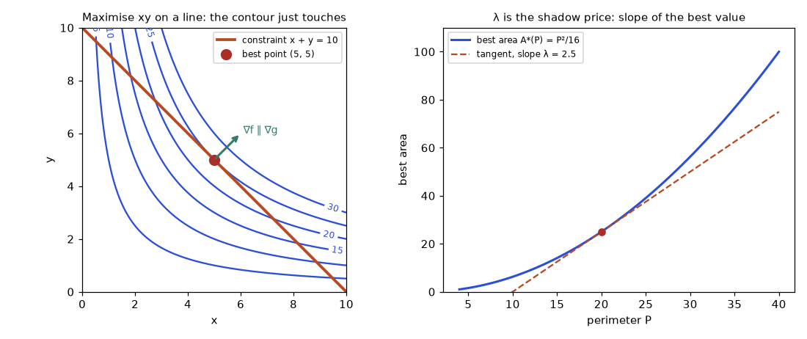
How to read it: on the left, contours with xy < 25 cross the constraint line (they can still be improved by sliding along it), and contours with xy > 25 never reach the line (not allowed). Only xy = 25 touches it, tangentially. The green arrow is the shared gradient direction. On the right, the blue curve is the best area A*(P) = P²/16 for each perimeter P, and the dashed tangent at P = 20 has slope 2.5, the value of λ.
Problem 12.8.2 The closest point on a line. Minimise f = x² + y² (squared distance from the origin) subject to x + 2y = 5.
| Gradients | ∇f = (2x, 2y), ∇g = (1, 2) |
|---|---|
| Equations | 2x = λ, 2y = 2λ, x + 2y = 5 |
| Solve | x = λ/2, y = λ. Then λ/2 + 2λ = 5, so 2.5λ = 5, λ = 2, x = 1, y = 2 |
| Answer | The point (1, 2), squared distance 5, distance √5 = 2.236 |
| Check | The point-to-line distance formula |5|/√(1 + 4) = √5. Also the direction from the origin to (1, 2) is the normal vector (1, 2) of the line, as the geometry predicts |
Problem 12.8.3 A maximum-entropy distribution. A die-like variable takes values 1, 2, 3 with probabilities p1, p2, p3. Maximise the entropy H = −Σ pi ln pi (Chapter 15) subject to Σ pi = 1. Then add the constraint that the mean is 1.5.
| Part 1: Lagrangian | ℒ = −Σ pi ln pi − λ(Σ pi − 1) |
|---|---|
| Derivative | ∂ℒ/∂pi = −ln pi − 1 − λ = 0, so ln pi = −1 − λ. This does not depend on i, so all pi are equal: pi = 1/3 |
| Result 1 | With no information except "they sum to 1", the most honest distribution is uniform, with entropy ln 3 = 1.0986 |
| Part 2: add mean | ℒ = −Σ pi ln pi − λ(Σ pi − 1) − μ(Σ i pi − 1.5). ∂ℒ/∂pi = −ln pi − 1 − λ − μ i = 0, so pi = C · ri with r = e−μ |
| Solve for r | Take p ∝ (1, r, r²) (shifting i just changes C). Mean = (1 + 2r + 3r²)/(1 + r + r²) = 1.5. Cross-multiply: 1 + 2r + 3r² = 1.5 + 1.5r + 1.5r². So 1.5r² + 0.5r − 0.5 = 0, i.e. 3r² + r − 1 = 0, r = (−1 + √13)/6 = 0.4343 |
| Probabilities | Sum = 1 + 0.4343 + 0.1886 = 1.6228. p = (0.6162, 0.2676, 0.1162) |
| Check | Mean = 0.6162 + 2·0.2676 + 3·0.1162 = 0.6162 + 0.5352 + 0.3486 = 1.5000 |
Notice the shape pi ∝ e−μ i: the maximum-entropy distribution with a fixed mean score is an exponential family member, and the same argument with a general score si gives pi ∝ e−μ si, which is exactly the softmax function. That is one deep reason softmax is the "natural" way to turn scores into probabilities.
Problem 12.8.4 PCA as a constrained problem (preview of Chapter 9). Maximise the variance wᵀΣw of a projection subject to ‖w‖² = wᵀw = 1, with Σ = [[2, 1], [1, 2]].
| Gradients | f = wᵀΣw has ∇f = 2Σw (Σ symmetric). g = wᵀw has ∇g = 2w |
|---|---|
| Condition | 2Σw = λ·2w, so Σw = λw: w must be an eigenvector of Σ |
| Value | Then f = wᵀΣw = λ wᵀw = λ. To maximise the variance, pick the largest eigenvalue |
| Numbers | Trace 4, det 3, eigenvalues 3 and 1. For λ = 3: (Σ − 3I)w = 0 gives −w₁ + w₂ = 0, so w = (1, 1)/√2 = (0.707, 0.707) |
| Check | f = (1/2)(1, 1)·[[2,1],[1,2]](1, 1) = (1/2)(1, 1)·(3, 3) = 3 |
So the first principal component is a Lagrange-multiplier solution, and λ is the variance it explains.
import numpy as np
from scipy.optimize import minimize
# Problem 12.8.2: minimise x^2 + y^2 on the line x + 2y = 5
r = minimize(lambda v: v[0] ** 2 + v[1] ** 2, [0.0, 0.0],
constraints=[{"type": "eq", "fun": lambda v: v[0] + 2 * v[1] - 5}])
print(np.round(r.x, 3), round(r.fun, 3))
# Problem 12.8.3: maximum entropy with mean 1.5 (minimise the negative entropy)
vals = np.array([1.0, 2.0, 3.0])
cons = [{"type": "eq", "fun": lambda p: p.sum() - 1},
{"type": "eq", "fun": lambda p: p @ vals - 1.5}]
m = minimize(lambda p: np.sum(p * np.log(p)), [0.4, 0.3, 0.3], bounds=[(1e-9, 1)] * 3, constraints=cons)
print(np.round(m.x, 4), round(-m.fun, 4))
# shadow price: best area for perimeter P is P^2 / 16
print(21 ** 2 / 16 - 20 ** 2 / 16, 20 / 8)[1. 2.] 5.0
[0.6162 0.2676 0.1162] 0.9012
2.5625 2.5Interpretation of λ: the shadow price
Raise the perimeter from 20 to 21 metres. The best area becomes (21/4)² = 27.5625, a gain of 2.5625, close to λ × 1 = 2.5. In general, λ is the rate at which the optimal value changes when you relax the constraint: λ = d f*/dc. That is why economists call it the shadow price: the amount of objective you would gain per extra unit of the limited resource, and the maximum you should be willing to pay for it. In Problem 12.8.2, f*(c) = c²/5 (distance squared of the line x + 2y = c), so df*/dc = 2c/5 = 2 at c = 5, equal to λ.
Going deeper
Inequality constraints and KKT. For constraints g(x) ≤ c the conditions (Karush-Kuhn-Tucker, KKT) add: λ ≥ 0 (relaxing a constraint can never hurt), and complementary slackness: λ(g(x) − c) = 0, so either the constraint is active (tight) or its multiplier is zero (it does not matter). Support vector machines are derived with exactly this machinery: the training points with non-zero multipliers are the support vectors.
Regularisation is a constraint in disguise. "Minimise the loss subject to ‖w‖² ≤ t" and "minimise loss + α‖w‖²" have the same solutions for matching t and α: the penalty weight α is the Lagrange multiplier of the budget t. Setting the gradient of the penalised ridge objective to zero, 2Xᵀ(Xw − y) + 2αw = 0, gives w = (XᵀX + αI)⁻¹Xᵀy, a small modification of the normal equation that also fixes the case where XᵀX is not invertible. See the Machine Learning document for how α is tuned.
Sufficient conditions. Second-order conditions for constrained problems use the Hessian of the Lagrangian restricted to directions tangent to the constraint. In practice, with convex f and a linear constraint, any critical point is the global optimum, which covers a large share of ML uses.
Chapter recap
- A function of several variables has a surface (heights) and a contour map (level sets). Loss landscapes have the model parameters on the axes, not the data.
- A partial derivative differentiates with respect to one variable, treating the others as constants. Mixed partials are equal when they are continuous.
- The gradient ∇f stacks the partials into a vector with the same shape as the input. It points in the direction of steepest ascent, has length equal to that maximum rate, and is perpendicular to contours.
- Directional derivative: Duf = ∇f · u with ‖u‖ = 1. Tangent plane: f(a) + ∇f(a) · (x − a).
- The Jacobian of f: ℝⁿ → ℝᵐ is m × n (rows = outputs). The chain rule multiplies Jacobians, outer on the left. The determinant of the Jacobian is the local area (volume) scale factor.
- The Hessian is the symmetric matrix of second partials. At a critical point, all eigenvalues positive means minimum, all negative means maximum, mixed signs mean saddle, a zero eigenvalue means inconclusive.
- Matrix calculus: ∇(aᵀx) = a, ∇(xᵀAx) = (A + Aᵀ)x, ∇‖Ax − b‖² = 2Aᵀ(Ax − b). The gradient always has the shape of the variable.
- Squared error gives the normal equation XᵀXw = Xᵀy. Log-loss gives Xᵀ(p − y). Softmax cross-entropy gives p − y at the logits.
- Always verify a gradient numerically with central differences and a relative error below about 1e-7.
- Double integrals are iterated integrals. Changing variables multiplies by |det J|, for example r dr dθ in polar coordinates.
- Lagrange multipliers: at a constrained optimum ∇f = λ∇g and g = c. λ is the shadow price d f*/dc. PCA, maximum entropy and regularisation are all Lagrange problems.
| Formula / pattern | Meaning |
|---|---|
| ∇f = (∂f/∂x1, …, ∂f/∂xn)ᵀ | Direction of steepest ascent |
| Duf = ∇f · u | Rate of change in the unit direction u |
| f(a + h) ≈ f(a) + ∇fᵀh + ½hᵀHh | Second-order Taylor expansion |
| Jh∘g = Jh Jg | Chain rule for vector functions |
| H = ∇(∇f), symmetric | Curvature, classifies critical points by eigenvalues |
| XᵀXw = Xᵀy | Normal equation (least squares) |
| ∇J = Xᵀ(σ(Xw) − y) | Logistic regression gradient |
| ∂ℓ/∂z = softmax(z) − y | Softmax cross-entropy gradient |
| dx dy = |det J| du dv | Change of variables in integrals |
| ∇f = λ∇g, g = c | Lagrange condition; λ = df*/dc |
| Hv ≈ [∇f(x + εv) − ∇f(x − εv)]/(2ε) | Hessian-vector product without forming H |
Practice set
Problem 12.1 For f(x, y) = 3x² − 2xy + y², compute f(1, 2) and f(−1, −2).
Answer: f(1, 2) = 3 − 4 + 4 = 3. f(−1, −2) = 3 − 2·(−1)(−2) + 4 = 3 − 4 + 4 = 3. Same value, because every term has even total degree, so flipping both signs changes nothing: the surface is symmetric through the origin.
Problem 12.2 Find both partial derivatives of f(x, y) = x³y² + sin y and evaluate them at (1, 0).
Answer: fx = 3x²y², fy = 2x³y + cos y. At (1, 0): fx = 3·1·0 = 0, fy = 0 + cos 0 = 1.
Problem 12.3 For f(x, y) = x² + y² at (3, 4): find the gradient, the directional derivative toward (1, 0), and the steepest-ascent rate.
Answer: ∇f = (2x, 2y) = (6, 8). The direction (1, 0) is already a unit vector, so Duf = 6·1 + 8·0 = 6. The steepest rate is ‖(6, 8)‖ = 10, in direction (0.6, 0.8).
Problem 12.4 Find the tangent plane of f(x, y) = xy at (2, 3) and use it to estimate f(2.1, 2.9). Compare with the exact value.
Answer: f(2, 3) = 6, ∇f = (y, x) = (3, 2). Plane: 6 + 3(x − 2) + 2(y − 3). At (2.1, 2.9): 6 + 0.3 − 0.2 = 6.1. Exact: 2.1 × 2.9 = 6.09. The error 0.01 equals dx·dy = 0.1 × (−0.1) in magnitude, the cross term that the plane misses.
Problem 12.5 Let z = x² + y² with x = cos t, y = sin t. Compute dz/dt with the chain rule and explain the answer.
Answer: dz/dt = 2x(−sin t) + 2y(cos t) = −2 cos t sin t + 2 sin t cos t = 0. Reason: on this path z = cos²t + sin²t = 1 is constant. The path runs along a contour (the unit circle), so it is perpendicular to the gradient and the rate of change is zero.
Problem 12.6 Find the Jacobian of f(x, y) = (x²y, x + y³) at (1, 2) and its determinant.
Answer: J = [[2xy, x²], [1, 3y²]]. At (1, 2): [[4, 1], [1, 12]]. Determinant = 4·12 − 1·1 = 47.
Problem 12.7 Compute ∬ (x² + y²) dA over the unit disc using polar coordinates.
Answer: ∫02π ∫01 r² · r dr dθ = 2π · [r⁴/4]01 = 2π/4 = π/2 ≈ 1.571. The extra r in the integrand comes from the Jacobian.
Problem 12.8 Classify the critical point of f(x, y) = x² + 4xy + y² at the origin.
Answer: ∇f = (2x + 4y, 4x + 2y) = 0 at (0, 0). H = [[2, 4], [4, 2]], D = 4 − 16 = −12 < 0, eigenvalues 6 and −2. Saddle. (Along y = x f = 6x² rises, along y = −x f = −2x² falls.)
Problem 12.9 Find and classify the critical points of f(x, y) = x³ − 12x + y².
Answer: ∇f = (3x² − 12, 2y) = 0 gives x = ±2, y = 0. H = [[6x, 0], [0, 2]]. At (2, 0): eigenvalues 12, 2, minimum, f = 8 − 24 = −16. At (−2, 0): eigenvalues −12, 2, saddle, f = −8 + 24 = 16.
Problem 12.10 One-feature regression without intercept: X = (1, 2)ᵀ, y = (2, 3)ᵀ. Use the normal equation to find w.
Answer: XᵀX = 1 + 4 = 5, Xᵀy = 2 + 6 = 8, so w = 8/5 = 1.6. Check: residuals (1.6 − 2, 3.2 − 3) = (−0.4, 0.2); Xᵀ(residual) = −0.4 + 0.4 = 0, so the gradient vanishes.
Problem 12.11 A 2-class softmax has logits z = (0, 0) and true class index 1 (y = (0, 1)). Give ∂ℓ/∂z and the loss.
Answer: p = (0.5, 0.5). ∂ℓ/∂z = p − y = (0.5, −0.5). Loss = −ln 0.5 = 0.693. Gradient descent will lower z0 and raise z1.
Problem 12.12 Find the bug. A student claims the gradient of q(x) = xᵀAx with A = [[1, 2], [0, 1]] is Ax. Give the correct gradient at x = (1, 1) and the student's value.
Answer: A is not symmetric, so ∇q = (A + Aᵀ)x. A + Aᵀ = [[2, 2], [2, 2]], and at (1, 1) this gives (4, 4). The student's Ax = (1 + 2, 0 + 1) = (3, 1). Check by expanding: q = x² + 2xy + y², ∂q/∂x = 2x + 2y = 4, ∂q/∂y = 2x + 2y = 4.
Problem 12.13 Maximise xy subject to x + 3y = 12 with Lagrange multipliers, and state the shadow price.
Answer: (y, x) = λ(1, 3), so y = λ and x = 3λ. Constraint: 3λ + 3λ = 12, so λ = 2, x = 6, y = 2, xy = 12. For a general budget c: y = c/6, x = c/2, f* = c²/12, df*/dc = c/6 = 2 at c = 12, equal to λ. One more unit of budget buys about 2 more units of xy.
Problem 12.14 What does this code print?
import numpy as np
f = lambda p: p[0] ** 2 * p[1]
p = np.array([2.0, 3.0]); h = 1e-5
g = [(f(p + h * e) - f(p - h * e)) / (2 * h) for e in np.eye(2)]
print(np.round(g, 4))[12. 4.]Answer: The analytic gradient is (2xy, x²) = (12, 4). The central difference is exact for this polynomial up to rounding noise, so the print shows 12 and 4 (as floats).
Problem 12.15 Show that the Hessian of f(w) = ‖Xw − y‖² is 2XᵀX and that it is positive semi-definite. When is it positive definite?
Answer: The gradient is 2XᵀXw − 2Xᵀy, and differentiating again in w gives 2XᵀX. For any vector v, vᵀXᵀXv = ‖Xv‖² ≥ 0, so it is positive semi-definite and f is convex. It is positive definite exactly when Xv = 0 only for v = 0, that is, when the columns of X are linearly independent (Chapter 7). If two features are copies of each other, there is a zero eigenvalue, a flat valley, and infinitely many minimisers.
Problem 12.16 Hessian-vector product. For f(x) = ½xᵀAx with A = [[2, 1], [1, 3]], compute Hv for v = (1, −1) without computing second derivatives of f separately, and say why this matters for large models.
Answer: The gradient is Ax (A symmetric), so the Hessian is A and Hv = Av = (2 − 1, 1 − 3) = (1, −2). Equivalent: [∇f(x + εv) − ∇f(x − εv)]/(2ε) = A(2εv)/(2ε) = Av exactly. For a model with 10⁷ weights, H would have 10¹⁴ entries and cannot be stored, but Hv costs about two gradient evaluations and gives access to curvature (top eigenvalue, Newton-CG steps).
Problem 12.17 Find the bug. A colleague codes the gradient of J = ‖Xw − y‖² as X.T @ (X @ w - y) and a gradient check reports a relative error of 0.333. What is wrong, and what ratio would you see between the analytic and numeric gradients?
Answer: The factor 2 is missing. The true gradient is 2Xᵀ(Xw − y). The analytic gradient is half the numeric one, so the ratio is 0.5, and the relative error is |a − 2a|/(|a| + |2a|) = 1/3 = 0.333. Fix: multiply by 2, or define the loss as ½‖Xw − y‖².
Problem 12.18 Interview: "In high-dimensional neural network training, are local minima the main obstacle? How does the Hessian help you think about it?"
Answer: Not mainly. At a critical point the Hessian has n eigenvalues, and for all of them to be positive (a local minimum) is unlikely in high dimension unless the loss is structured, whereas mixed signs (a saddle) are the generic case. The real obstacles are saddles and plateaus where ‖∇L‖ is tiny, and ill-conditioning: if the largest and smallest Hessian eigenvalues differ by a factor κ, plain gradient descent needs a learning rate limited by the largest one and then progresses in the flat directions about κ times slower. Remedies: momentum, adaptive scaling (Adam), normalisation layers, and noise from minibatches. Hessian-vector products let you measure the largest eigenvalue by power iteration without forming H.
Prompt pack
You are my patient, practical professor. I am a working professional moving into data roles with only school-level math plus linear algebra and basic derivatives. Teach me multivariable calculus and matrix calculus one idea at a time: partial derivatives, the gradient, directional derivatives, the Jacobian, the Hessian, critical points, matrix-calculus rules, and Lagrange multipliers. For each idea: (1) explain it with an everyday analogy, (2) give one tiny numeric example and compute it step by step, (3) ask me one question and WAIT for my answer, (4) correct me kindly and explain my mistake, (5) show a short NumPy snippet that checks the number. After five ideas, give me a 6-question quiz that mixes hand computation and "find the bug" questions. Keep a list of the topics where I made mistakes and revisit them at the end.
You are a careful reviewer of mathematical work. I will paste my derivation of a gradient, Hessian or Lagrange-multiplier solution (for example the gradient of a loss function with respect to a weight matrix). Do not simply give me the answer. First check the SHAPES of every line (the gradient must have the shape of the variable), then check each algebra step, then check the final result against a numerical gradient check and write me the NumPy code for that check (central differences, relative error). If I made a mistake, point to the exact line, name the type of error (missed factor of 2, wrong transpose, frozen variable differentiated, wrong order of Jacobians, forgot the constraint), and show the corrected line. End with two similar practice problems for me to try.
Act as a senior data scientist running a mock interview on multivariable calculus for machine learning. Ask me one question at a time, starting easy and getting harder: partial derivatives, why the gradient is the direction of steepest ascent, deriving the gradient of logistic regression and of softmax cross-entropy, the normal equation, what the Hessian eigenvalues say about a critical point, why saddle points and conditioning matter in deep learning, Hessian-vector products, and Lagrange multipliers with their interpretation as shadow prices. After each of my answers, score it from 1 to 5, say what a strong answer would include, and then ask a follow-up that probes deeper. After ten questions give me a summary of my strengths, my weak spots, and a one-week study plan.
You have trained a model that predicts whether a customer will cancel a subscription. The training loop is three lines: compute the loss, call loss.backward(), call optimizer.step(). It works. Then one Tuesday the loss turns into nan after 40 steps. Or the loss does not move at all, no matter what learning rate you try. Or a colleague asks, in a design review, "why does the gradient of the first layer vanish in this architecture?" If backward() is a magic button, you can only guess. If you know what it does, you can look at the network, see where the signal is dying, and fix it.
That magic button is the chain rule from Chapter 10, applied again and again, in a clever order, with bookkeeping. It is called backpropagation, and it is the single algorithm that makes every deep network trainable, from a two-neuron toy to a model with billions of weights. In this chapter you will do it three ways: by hand with real numbers (so no step is hidden), as vectorised matrix formulas (so you can read any framework's source), and as code you write yourself (a NumPy network and a 40-line automatic differentiation engine). You will check every result against numerical derivatives.
By the end you will be able to: draw the computational graph of any formula and run its forward and backward passes; explain the rule "upstream gradient times local gradient" and why gradients add up at fan-out nodes; derive dW = δ xᵀ, db = δ, dx = Wᵀ δ and the softmax plus cross-entropy gradient p − y; train a neural network on XOR and on a spiral dataset using nothing but NumPy; check gradients numerically; explain why reverse mode wins for deep learning; diagnose vanishing and exploding gradients and choose a sound initialisation; and answer the expert questions about Jacobian-vector products, memory, checkpointing, Hessian-vector products and backpropagation through time. You need Chapter 10 (derivatives, the chain rule) and Chapter 12 (partial derivatives, gradients, the shape of Jacobians) for this one. Optimisation algorithms that use the gradient are the subject of Chapter 14.
13.1 The Chain Rule and Why Deep Learning Is Repeated Chain Rule
Beginner: a chain of gears
Picture three gears connected in a row. Turn the first one once and the second turns 3 times. Turn the second once and the third turns 2 times. How many turns does the third make for one turn of the first? You multiply: 3 × 2 = 6. That is the chain rule in one sentence: when effects are chained, their rates multiply.
In symbols, if y depends on u and u depends on x, then
Read dy/du as "how many units y moves per unit of u", exactly the gear ratio. Here u is the inner quantity and y the outer one.
Intermediate: three worked examples
Problem 13.1.1 Differentiate y = (3x + 1)⁴ at x = 1.
| Split | Inner u = 3x + 1. Outer y = u⁴. |
|---|---|
| Local rates | dy/du = 4u³. du/dx = 3. |
| Multiply | dy/dx = 4u³ · 3 = 12u³. |
| Plug in | At x = 1: u = 3·1 + 1 = 4, so dy/dx = 12 · 4³ = 12 · 64 = 768. |
Problem 13.1.2 A chain of three links: y = ln(1 + e2x). Find dy/dx at x = 0.
| Name the links | u = 2x, v = eu, w = 1 + v, y = ln w. |
|---|---|
| Forward at x = 0 | u = 0, v = e⁰ = 1, w = 2, y = ln 2 ≈ 0.6931. |
| Local rates | dy/dw = 1/w = 1/2. dw/dv = 1. dv/du = eu = 1. du/dx = 2. |
| Multiply | dy/dx = (1/2) · 1 · 1 · 2 = 1. |
| Check by formula | dy/dx = 2e2x/(1 + e2x) = 2/2 = 1. ✓ |
Notice the pattern: first go forward to get the values at every link, then multiply the local rates. The local rates are evaluated at the values found on the forward pass. This two-phase habit is the whole of backpropagation.
Problem 13.1.3 (ML story) A single neuron has weight w, input x = 2 and target t = 1. Its prediction is p = w·x and the loss is L = (p − t)². With w = 0.3, how does L change when w changes?
| Forward | p = 0.3 · 2 = 0.6. L = (0.6 − 1)² = 0.16. |
|---|---|
| Local rates | dL/dp = 2(p − t) = 2(−0.4) = −0.8. dp/dw = x = 2. |
| Multiply | dL/dw = −0.8 · 2 = −1.6. |
| Meaning | Raising w by a small 0.01 lowers the loss by about 0.016. Gradient descent would therefore increase w. |
Let us confirm all three numerically. A central difference (f(x+h) − f(x−h)) / 2h approximates the derivative without any calculus.
import numpy as np
def num_deriv(f, x, h=1e-6):
return (f(x + h) - f(x - h)) / (2 * h)
print(round(num_deriv(lambda x: (3 * x + 1) ** 4, 1.0), 3))
print(round(num_deriv(lambda x: np.log(1 + np.exp(2 * x)), 0.0), 6))
print(round(num_deriv(lambda w: (w * 2 - 1) ** 2, 0.3), 4))768.0
1.0
-1.6From one variable to a deep network
A neural network is a long composition of simple functions. With layers f₁, f₂, ..., fK and a loss at the end:
Here θk are the parameters (weights and biases) of layer k. To train, you need ∂L/∂θk for every k. The chain rule says the gradient for layer k is the product of all the local rates between the loss and that layer:
When the a's are vectors, each "rate" is a Jacobian matrix (Chapter 12) and the product is a product of matrices. The key observation: the prefix (∂L/∂aK) ··· (∂ak+1/∂ak) for layer k is reused by layer k − 1, which only multiplies one more factor. Computing from the loss backwards, you compute each factor once and share it. That sharing is the reason backpropagation costs about the same as one forward pass instead of K separate gradient computations.
Going deeper
The product above also tells you what can go wrong. If most factors are smaller than 1, the product shrinks exponentially with depth (vanishing gradients). If most are larger than 1, it grows exponentially (exploding gradients). A 20-layer product of factors 0.25 is 0.25²⁰ ≈ 9 × 10⁻¹³. We will return to this in Section 13.7. Also note the order of multiplication matters for cost: for a scalar loss, multiplying left to right (loss first) is a chain of vector-matrix products, cheap; multiplying right to left (parameter first) is a chain of matrix-matrix products, expensive. That asymmetry is the heart of Section 13.6.
13.2 Computational Graphs: Forward Pass, Backward Pass, Fan-Out
Beginner: a recipe drawn as boxes
A computational graph draws a calculation as a diagram. Each node is one small operation (add, multiply, sigmoid) or an input. Each arrow carries a number from one node to the next. To compute f = (x + y) · z you need two operations, so the graph has two operation nodes and three input nodes.
grad or ∂f/∂node.
How to read it: blue numbers are the forward pass values, red numbers are the backward pass gradients. Start at the right node, whose gradient is always 1 (the output changes by 1 when itself changes by 1) and move left, filling in the red numbers using the rules below.
Intermediate: the rule of upstream times local
Every node follows the same rule. Suppose a node computes out = g(inputs). During the backward pass it receives the upstream gradient ∂f/∂out (how much the final output cares about this node). It knows its own local gradient ∂out/∂input for each input. It passes to each input:
That is just the chain rule written node by node. A node never needs to know the rest of the graph. This locality is why you can build any network from a library of small pieces, each with a hand-written forward and backward.
| Node | Forward | Local gradients | Backward rule (upstream = g) |
|---|---|---|---|
| add | out = a + b | 1 and 1 | a gets g, b gets g ("a distributor") |
| multiply | out = a · b | b and a | a gets g·b, b gets g·a ("a swapper") |
| square | out = a² | 2a | a gets 2a·g |
| ReLU | out = max(0, a) | 1 if a > 0 else 0 | g passes if a > 0, else 0 ("a gate") |
| sigmoid | out = σ(a) | out(1 − out) | a gets g · out(1 − out) |
| max(a, b) | larger of the two | 1 for the winner, 0 for the loser | g routes to the winner only |
Problem 13.2.1 Run both passes on f = (x + y) · z with x = −2, y = 5, z = −4.
| Forward | q = x + y = −2 + 5 = 3. f = q · z = 3 · (−4) = −12. |
|---|---|
| Start | ∂f/∂f = 1. |
| Multiply node | ∂f/∂q = 1 · z = −4. ∂f/∂z = 1 · q = 3. |
| Add node | ∂f/∂x = ∂f/∂q · 1 = −4. ∂f/∂y = ∂f/∂q · 1 = −4. |
| Meaning | Nudging z up by 0.01 moves f by about +0.03; nudging x up by 0.01 moves f by about −0.04. |
Fan-out: gradients add
What if one value is used by two different nodes? In the right graph of the figure, x feeds both the product x·y and the sum x + y. Changing x changes the output through two separate routes. The total effect is the sum of the effects along each route. This is the multivariable chain rule from Chapter 12: ∂f/∂x = Σ over routes.
Problem 13.2.2 Run both passes on c = (x·y)(x + y) with x = 2, y = 3.
| Forward | a = x·y = 6. b = x + y = 5. c = a·b = 30. |
|---|---|
| Multiply node | ∂c/∂a = b = 5. ∂c/∂b = a = 6. |
| Node a = x·y | sends 5 · y = 5 · 3 = 15 to x, and 5 · x = 5 · 2 = 10 to y. |
| Node b = x + y | sends 6 · 1 = 6 to x, and 6 · 1 = 6 to y. |
| Accumulate | ∂c/∂x = 15 + 6 = 21. ∂c/∂y = 10 + 6 = 16. |
| Check | c = x²y + xy², so ∂c/∂x = 2xy + y² = 12 + 9 = 21 ✓ and ∂c/∂y = x² + 2xy = 4 + 12 = 16 ✓. |
x.grad = ... and x.grad += .... It is the most common bug when writing backprop by hand, and the reason PyTorch also needs optimizer.zero_grad() between steps: gradients accumulate by design.# Forward and backward by hand for both graphs
x, y, z = -2.0, 5.0, -4.0
q = x + y
f = q * z
df = 1.0
dq = df * z # multiply node: gradient to q is upstream * z
dz = df * q # gradient to z is upstream * q
dx = dq * 1.0 # add node distributes
dy = dq * 1.0
print("graph 1:", q, f, dq, dz, dx, dy)
x, y = 2.0, 3.0
a = x * y
b = x + y
c = a * b
da, db = b, a # upstream is 1
dx = da * y + db * 1.0 # two routes into x: ACCUMULATE
dy = da * x + db * 1.0
print("graph 2:", a, b, c, da, db, dx, dy)
print("wrong (overwrite):", db * 1.0)graph 1: 3.0 -12.0 -4.0 3.0 -4.0 -4.0
graph 2: 6.0 5.0 30.0 5.0 6.0 21.0 16.0
wrong (overwrite): 6.0Going deeper
Why must the backward pass go in reverse topological order? A node can only push its gradient to its inputs once its own gradient is complete, meaning every node that consumes it has already contributed. Reverse order guarantees that: all consumers of a node come after it in the forward order, so they come before it in the reverse order. Frameworks record the forward operations on a "tape" (a list) as they happen, then replay the tape backwards. This is called dynamic graph construction and is why PyTorch lets you use ordinary Python if and for: the graph is whatever happened on this run.
Another consequence: every intermediate value needed by a local gradient (the q and z above) must be remembered from the forward pass. That is the memory cost of backpropagation, which we quantify in Section 13.8.
13.3 Backpropagation by Hand: One Neuron, Then a Two-Layer Network
A single sigmoid neuron
Take one neuron with input x = 1.5, weight w = 0.8, bias b = −0.5, a sigmoid activation, target y = 1 and squared-error loss. The graph is a chain of five nodes:
The derivative of the sigmoid deserves a derivation because it is used everywhere. Write σ(z) = (1 + e−z)⁻¹. By the chain rule, with u = 1 + e−z:
(because 1 − σ = e−z/(1 + e−z)). The derivative is computed from the output alone, so the forward pass already stored everything the backward pass needs.
Problem 13.3.1 Do the full forward and backward pass, then one gradient descent step with learning rate 0.5. (Values shown to 4 decimals; the code below keeps full precision.)
| Forward | z = 0.8 · 1.5 + (−0.5) = 1.2 − 0.5 = 0.7. a = σ(0.7) = 1/(1 + e−0.7) = 1/(1 + 0.4966) = 0.6682. L = (0.6682 − 1)² = 0.1101. |
|---|---|
| Local 1 | ∂L/∂a = 2(a − y) = 2(0.6682 − 1) = −0.6636. |
| Local 2 | ∂a/∂z = a(1 − a) = 0.6682 · 0.3318 = 0.2217. |
| Upstream × local | ∂L/∂z = −0.6636 · 0.2217 = −0.1471. |
| Local 3 (weights) | ∂z/∂w = x = 1.5. ∂z/∂b = 1. ∂z/∂x = w = 0.8. |
| Gradients | ∂L/∂w = −0.1471 · 1.5 = −0.2207. ∂L/∂b = −0.1471 · 1 = −0.1471. ∂L/∂x = −0.1471 · 0.8 = −0.1177. |
| Update (lr 0.5) | w ← 0.8 − 0.5 · (−0.2207) = 0.9104. b ← −0.5 − 0.5 · (−0.1471) = −0.4264. |
| Check | New z = 0.9104 · 1.5 − 0.4264 = 0.9392. New a = 0.7189. New L = 0.0790, down from 0.1101 ✓. |
import numpy as np
sig = lambda z: 1 / (1 + np.exp(-z))
def loss(w, b, x=1.5, y=1.0):
return (sig(w * x + b) - y) ** 2
x, w, b, y = 1.5, 0.8, -0.5, 1.0
z = w * x + b; a = sig(z); L = (a - y) ** 2
dL_da = 2 * (a - y); da_dz = a * (1 - a)
dL_dz = dL_da * da_dz
dL_dw, dL_db, dL_dx = dL_dz * x, dL_dz * 1.0, dL_dz * w
print("z a L :", round(z, 4), round(a, 4), round(L, 4))
print("dL/da da/dz:", round(dL_da, 4), round(da_dz, 4))
print("dL/dz :", round(dL_dz, 4))
print("dL/dw dL/db dL/dx:", round(dL_dw, 4), round(dL_db, 4), round(dL_dx, 4))
# numerical check of dL/dw and dL/db
h = 1e-6
print("numeric w,b:", round((loss(w + h, b) - loss(w - h, b)) / (2 * h), 4),
round((loss(w, b + h) - loss(w, b - h)) / (2 * h), 4))
w2, b2 = w - 0.5 * dL_dw, b - 0.5 * dL_db
print("after step :", round(w2, 4), round(b2, 4), round(loss(w2, b2), 4))z a L : 0.7 0.6682 0.1101
dL/da da/dz: -0.6636 0.2217
dL/dz : -0.1471
dL/dw dL/db dL/dx: -0.2207 -0.1471 -0.1177
numeric w,b: -0.2207 -0.1471
after step : 0.9104 -0.4264 0.079A saturated neuron. The same neuron with z = 8 gives a = 0.99966 and slope a(1 − a) = 0.000335. Any upstream gradient is multiplied by 0.000335 and almost nothing reaches w. That is a "saturated" sigmoid, and a first glimpse of vanishing gradients.
A full two-layer network, every weight
Now a network with two inputs, two hidden ReLU units and one sigmoid output. Loss is L = ½(a − y)² (the ½ cancels the 2 when differentiating). One training example: x = (1, 2), target y = 0. All nine parameters:
| Parameter | Value | Role |
|---|---|---|
| W₁ row 1: w₁₁, w₁₂ | 0.5, 0.25 | weights into hidden unit 1 |
| W₁ row 2: w₂₁, w₂₂ | −0.6, 0.1 | weights into hidden unit 2 |
| b₁ = (b₁₁, b₁₂) | 0.1, 0.05 | hidden biases |
| v = (v₁, v₂) | 0.7, −0.4 | output weights |
| c | 0.2 | output bias |
Problem 13.3.2 Forward pass.
| Hidden pre-activations | z₁ = 0.5·1 + 0.25·2 + 0.1 = 0.5 + 0.5 + 0.1 = 1.1. z₂ = −0.6·1 + 0.1·2 + 0.05 = −0.6 + 0.2 + 0.05 = −0.35. |
|---|---|
| ReLU | h₁ = max(0, 1.1) = 1.1. h₂ = max(0, −0.35) = 0. |
| Output pre-activation | s = 0.7·1.1 + (−0.4)·0 + 0.2 = 0.77 + 0 + 0.2 = 0.97. |
| Sigmoid | a = σ(0.97) = 0.7251. |
| Loss | L = ½(0.7251 − 0)² = ½ · 0.5258 = 0.2629. |
Problem 13.3.3 Backward pass, one line per node, walking from the loss to the inputs.
| Loss node | ∂L/∂a = a − y = 0.7251. |
|---|---|
| Sigmoid node | ∂a/∂s = a(1 − a) = 0.7251 · 0.2749 = 0.1993. So δs = ∂L/∂s = 0.7251 · 0.1993 = 0.1445. |
| Output layer weights | ∂L/∂v₁ = δs · h₁ = 0.1445 · 1.1 = 0.1590. ∂L/∂v₂ = δs · h₂ = 0.1445 · 0 = 0. ∂L/∂c = δs · 1 = 0.1445. |
| Into the hidden layer | ∂L/∂h₁ = δs · v₁ = 0.1445 · 0.7 = 0.1012. ∂L/∂h₂ = δs · v₂ = 0.1445 · (−0.4) = −0.0578. |
| ReLU gates | z₁ = 1.1 > 0, gate open: δ₁ = 0.1012. z₂ = −0.35 < 0, gate closed: δ₂ = 0 (the −0.0578 is blocked). |
| Hidden layer weights | ∂L/∂w₁₁ = δ₁ · x₁ = 0.1012 · 1 = 0.1012. ∂L/∂w₁₂ = δ₁ · x₂ = 0.1012 · 2 = 0.2023. ∂L/∂w₂₁ = 0, ∂L/∂w₂₂ = 0. ∂L/∂b₁₁ = 0.1012, ∂L/∂b₁₂ = 0. |
| Into the input | ∂L/∂x₁ = w₁₁δ₁ + w₂₁δ₂ = 0.5 · 0.1012 + 0 = 0.0506. ∂L/∂x₂ = 0.25 · 0.1012 = 0.0253. |
Look at what happened. Hidden unit 2 was off for this example, so every weight feeding it received exactly zero gradient. A ReLU unit that is off for all examples never learns: a "dead ReLU". Also notice the multiplication by v₁ in step four: the weight of the next layer is the "local gradient" of the hidden activation, which is how information about the later layer flows back to the earlier one.
Problem 13.3.4 One gradient descent step with learning rate 1.0, then recompute the loss.
| New weights | w₁₁ = 0.5 − 0.1012 = 0.3988. w₁₂ = 0.25 − 0.2023 = 0.0477. w₂₁, w₂₂ unchanged (−0.6, 0.1). b₁₁ = 0.1 − 0.1012 = ��0.0012. b₁₂ = 0.05. v₁ = 0.7 − 0.1590 = 0.5410. v₂ = −0.4. c = 0.2 − 0.1445 = 0.0555. |
|---|---|
| New forward | z₁ = 0.3988 + 2 · 0.0477 − 0.0012 = 0.4930. h₁ = 0.4930. s = 0.5410 · 0.4930 + 0.0555 = 0.3222. a = σ(0.3222) = 0.5799. |
| New loss | L = ½ · 0.5799² = 0.1681, down from 0.2629 ✓. |
import numpy as np
sig = lambda z: 1 / (1 + np.exp(-z))
x = np.array([1.0, 2.0]); y = 0.0
W1 = np.array([[0.5, 0.25], [-0.6, 0.1]]); b1 = np.array([0.1, 0.05])
v = np.array([0.7, -0.4]); c = 0.2
def forward(W1, b1, v, c):
z = W1 @ x + b1; h = np.maximum(z, 0); s = v @ h + c; a = sig(s)
return z, h, s, a, 0.5 * (a - y) ** 2
z, h, s, a, L = forward(W1, b1, v, c)
print("z", z, "h", h, "s", round(s, 4), "a", round(a, 4), "L", round(L, 4))
ds = (a - y) * a * (1 - a) # delta at the output node
dv, dc = ds * h, ds
dh = ds * v
dz = dh * (z > 0) # ReLU gate
dW1 = np.outer(dz, x); db1 = dz
dx = W1.T @ dz
print("ds", round(ds, 4), "dv", np.round(dv, 4), "dc", round(dc, 4))
print("dz", np.round(dz, 4) + 0.0)
print("dW1", (np.round(dW1, 4) + 0.0).tolist(), "db1", np.round(db1, 4) + 0.0)
print("dx", np.round(dx, 4))
z, h, s, a, L = forward(W1 - dW1, b1 - db1, v - dv, c - dc)
print("after step: a", round(a, 4), "L", round(L, 4))z [ 1.1 -0.35] h [1.1 0. ] s 0.97 a 0.7251 L 0.2629
ds 0.1445 dv [0.159 0. ] dc 0.1445
dz [0.1012 0. ]
dW1 [[0.1012, 0.2023], [0.0, 0.0]] db1 [0.1012 0. ]
dx [0.0506 0.0253]
after step: a 0.5799 L 0.168113.4 Vectorised Backpropagation: Shapes, Softmax and Activations
Beginner: the same rule, with arrays
Real networks have thousands of units per layer, so nobody writes one line per weight. We stack numbers into vectors and matrices (Chapter 6) and the same three steps happen to whole arrays at once. Think of a layer as a machine with three jobs on the way back: (1) hand its weights a gradient, (2) hand its bias a gradient, (3) hand the layer below a gradient. The only new skill is keeping track of shapes. A good habit: the gradient of anything always has the same shape as the thing itself.
Intermediate: deriving the three layer formulas
Take one layer with input x (a column of nin numbers), weight matrix W (nout × nin), bias b (nout) and output z = W x + b. Suppose the backward pass delivers δ = ∂L/∂z, a column of nout numbers. Write out one entry: zi = Σj Wij xj + bi.
The entry (i, j) of the answer is δi xj, which is exactly the outer product of the column δ with the row xᵀ:
For the bias, ∂zk/∂bi is 1 when k = i and 0 otherwise, so db = δ. For the input, each xj affects every zi with rate Wij, a fan-out. Summing over the routes:
In the previous section we computed dx = W₁ᵀ δ and dW₁ = δ xᵀ for the hidden layer, entry by entry. Same formulas. After the layer, the elementwise activation a = f(z) has a diagonal Jacobian, so its backward step is an elementwise product: δz = δa ⊙ f′(z), where ⊙ means multiply entry by entry.
The batch version
Training uses a batch of N examples. Frameworks store the batch as a matrix X with one example per row, shape N × nin. The layer becomes Z = X Wᵀ + b (b is added to every row), shape N × nout. The gradient of the average loss over the batch is the average (or sum) of the per-example gradients, so the per-example outer products add up into a matrix product:
where Δ (N × nout) holds one δ per row. Why does Δᵀ X equal the sum of outer products? Entry (i, j) of Δᵀ X is Σn Δni Xnj, the sum over examples of δi xj. The bias gradient is a sum over examples because the same bias is "fanned out" to every example: fan-out sums again.
Problem 13.4.1 A layer maps 3 inputs to 2 outputs on a batch of N = 2. W = [[1, 0, −1], [2, 1, 0]], b = (0, 1). X rows: (1, 2, 3) and (0, 1, −1). The upstream gradient Δ has rows (1, −1) and (0.5, 2). Find dW, db, dX.
| Shapes | X is 2×3, W is 2×3, Δ is 2×2. Expect dW 2×3, db length 2, dX 2×3. |
|---|---|
| dW = Δᵀ X | Δᵀ = [[1, 0.5], [−1, 2]]. Row 1 of dW = 1·(1,2,3) + 0.5·(0,1,−1) = (1, 2.5, 2.5). Row 2 = −1·(1,2,3) + 2·(0,1,−1) = (−1, 0, −5). |
| db | Column sums of Δ: (1 + 0.5, −1 + 2) = (1.5, 1). |
| dX = Δ W | Row 1 = 1·(1,0,−1) + (−1)·(2,1,0) = (−1, −1, −1). Row 2 = 0.5·(1,0,−1) + 2·(2,1,0) = (4.5, 2, −0.5). |
import numpy as np
W = np.array([[1., 0., -1.], [2., 1., 0.]])
X = np.array([[1., 2., 3.], [0., 1., -1.]])
D = np.array([[1., -1.], [0.5, 2.]])
print("dW", (D.T @ X).tolist())
print("db", D.sum(axis=0).tolist())
print("dX", (D @ W).tolist())dW [[1.0, 2.5, 2.5], [-1.0, 0.0, -5.0]]
db [1.5, 1.0]
dX [[-1.0, -1.0, -1.0], [4.5, 2.0, -0.5]]dW = D @ X instead of D.T @ X raises an error when N ≠ nout (here 2×2 times 2×3 actually works but gives the wrong answer, because the sum is over the wrong index!). Always check: the inner dimension of the product must be the one you are summing over, and the result must have the shape of the parameter. Test your code with a batch size that differs from every layer width.Softmax plus cross-entropy: the gradient is p − y
For classification the last layer produces logits z = (z₁, ..., zK), softmax turns them into probabilities pi = ezi/S with S = Σk ezk, and the cross-entropy loss with a one-hot target y (yc = 1 for the true class c) is L = −Σ yi ln pi = −ln pc (see Chapter 15 for why this loss). Because L = −zc + ln S:
where [j = c] is 1 if j = c and 0 otherwise, which is just yj. No messy softmax Jacobian is needed: the two nodes fused together have a beautifully simple backward rule. The gradient is "what the model said minus what was true".
Problem 13.4.2 Logits z = (2, 1, 0.1), true class 0. Find p, the loss and the gradient.
| Exponentials | e² = 7.3891, e¹ = 2.7183, e0.1 = 1.1052. Sum S = 11.2126. |
|---|---|
| Probabilities | p = (7.3891, 2.7183, 1.1052)/11.2126 = (0.6590, 0.2424, 0.0986). |
| Loss | L = −ln 0.6590 = 0.4170. |
| Gradient p − y | y = (1, 0, 0), so ∂L/∂z = (0.6590 − 1, 0.2424, 0.0986) = (−0.3410, 0.2424, 0.0986). |
| Sanity | The entries sum to zero: −0.3410 + 0.2424 + 0.0986 = 0 ✓ (shifting all logits equally cannot change the probabilities). |
import numpy as np
z = np.array([2.0, 1.0, 0.1]); y = np.array([1.0, 0.0, 0.0])
def ce(z):
e = np.exp(z - z.max()); p = e / e.sum()
return -np.log(p[0])
e = np.exp(z - z.max()); p = e / e.sum()
print("p ", np.round(p, 4), " loss", round(ce(z), 4))
print("p - y ", np.round(p - y, 4), " sum", round((p - y).sum(), 12))
h = 1e-6
num = [(ce(z + h * np.eye(3)[i]) - ce(z - h * np.eye(3)[i])) / (2 * h) for i in range(3)]
print("numeric", np.round(num, 4))p [0.659 0.2424 0.0986] loss 0.417
p - y [-0.341 0.2424 0.0986] sum 0.0
numeric [-0.341 0.2424 0.0986]Activations: the elementwise backward rules
| Activation | a = f(z) | f′(z) | Backward: δz = δa ⊙ ... | Behaviour |
|---|---|---|---|---|
| ReLU | max(0, z) | 1 if z > 0 else 0 | (z > 0) | gate; never shrinks the gradient where active; dead when z ≤ 0 |
| sigmoid | 1/(1 + e−z) | a(1 − a) | a(1 − a) | max slope 0.25; saturates at both ends |
| tanh | (ez − e−z)/(ez + e−z) | 1 − a² | (1 − a²) | max slope 1 at 0; saturates at ±1 |
The tanh derivative follows from tanh = sinh/cosh and the quotient rule: (cosh² − sinh²)/cosh² = 1 − tanh². Notice that ReLU's local gradient is exactly 1 in its active region, while sigmoid's is at most 0.25. That single fact is a large part of why ReLU networks train deeper stacks (Section 13.7). At z = 0 exactly, ReLU has no derivative; frameworks pick 0 and it does not matter in practice.
Problem 13.4.3 Backprop through a bias-carrying layer followed by tanh. A layer has z = w·x + b with w = 2, x = 0.5, b = −0.5, then a = tanh(z). The upstream gradient on a is ∂L/∂a = 3. Find ∂L/∂w, ∂L/∂b, ∂L/∂x.
| Forward | z = 2 · 0.5 − 0.5 = 0.5. a = tanh(0.5) = 0.4621. |
|---|---|
| tanh node | f′ = 1 − a² = 1 − 0.2135 = 0.7864 (0.78645 unrounded). δz = 3 · 0.78645 = 2.3593. |
| Linear node | ∂L/∂w = δz · x = 2.3593 · 0.5 = 1.1797. ∂L/∂b = δz = 2.3593. ∂L/∂x = δz · w = 4.7187. |
import numpy as np
w, x, b, up = 2.0, 0.5, -0.5, 3.0
a = np.tanh(w * x + b)
dz = up * (1 - a ** 2)
print(round(a, 4), round(dz, 4), round(dz * x, 4), round(dz, 4), round(dz * w, 4))
f = lambda w, b, x: 3.0 * np.tanh(w * x + b) # a loss whose dL/da is exactly 3
h = 1e-6
print(round((f(w + h, b, x) - f(w - h, b, x)) / (2 * h), 4))0.4621 2.3593 1.1797 2.3593 4.7187
1.1797Going deeper
The complete backward pass of an L-layer MLP is a loop, and every line has been derived above. With a₀ = x, zl = Wl al−1 + bl, al = f(zl):
These four lines are "the backpropagation equations". The Jacobian view of the same loop: δl−1ᵀ = δlᵀ · Wl · diag(f′(zl−1)), a row vector times a matrix times a diagonal matrix. A scalar loss means δ is always a vector, never a matrix: the whole algorithm is a chain of vector-matrix products. The interview question "why is backprop cheap?" has exactly this answer: you never form a Jacobian, only multiply a row vector by one.
13.5 A Neural Network from Scratch in NumPy, and Gradient Checking
Beginner: what we are building
You now know every ingredient. We assemble them into a class with three methods: forward (compute predictions and remember intermediates), backward (the four backpropagation equations) and train (repeat: forward, backward, step). The convention: a batch X has one example per row, Wl has shape (nout, nin), so Z = A Wᵀ + b, exactly as in the batch formulas above. The loss is the mean cross-entropy, so the starting delta is (p − y)/N.
Read backward against the equations: dZ.T @ self.As[i] is dW = Δᵀ Aprev; dZ.sum(axis=0) is db; dZ @ self.W[i] is dX = Δ W; multiplying by df(...) is the activation gate. That is the whole of backpropagation in a dozen lines. The block below holds the class plus three experiments: a gradient check, XOR and a spiral. (Python blocks in this chapter are standalone, so the class is pasted once, here.)
import numpy as np
def softmax(Z):
E = np.exp(Z - Z.max(axis=1, keepdims=True)) # subtract max for stability
return E / E.sum(axis=1, keepdims=True)
class MLP:
def __init__(self, sizes, act="relu", seed=0):
rng = np.random.default_rng(seed)
self.act = act
self.W, self.b = [], []
for n_in, n_out in zip(sizes[:-1], sizes[1:]):
gain = 2.0 if act == "relu" else 1.0 # He for relu, Xavier-like for tanh
self.W.append(rng.normal(0, np.sqrt(gain / n_in), (n_out, n_in)))
self.b.append(np.zeros(n_out))
def f(self, Z):
return np.maximum(Z, 0) if self.act == "relu" else np.tanh(Z)
def df(self, Z, A):
return (Z > 0).astype(float) if self.act == "relu" else 1 - A**2
def forward(self, X):
self.As, self.Zs = [X], []
A = X
for i, (W, b) in enumerate(zip(self.W, self.b)):
Z = A @ W.T + b # (N, n_out)
self.Zs.append(Z)
A = self.f(Z) if i < len(self.W) - 1 else Z
self.As.append(A)
return softmax(self.As[-1]) # class probabilities
def loss(self, P, y):
return -np.log(P[np.arange(len(y)), y]).mean()
def backward(self, P, y):
N = len(y)
dZ = P.copy()
dZ[np.arange(N), y] -= 1 # p - y (one-hot)
dZ /= N # mean over the batch
gW, gb = [None] * len(self.W), [None] * len(self.W)
for i in reversed(range(len(self.W))):
gW[i] = dZ.T @ self.As[i] # (n_out, n_in)
gb[i] = dZ.sum(axis=0)
if i > 0:
dA = dZ @ self.W[i] # (N, n_in)
dZ = dA * self.df(self.Zs[i-1], self.As[i])
return gW, gb
def train(self, X, y, lr=0.5, epochs=1000, every=250):
hist = []
for ep in range(epochs + 1):
P = self.forward(X)
L = self.loss(P, y)
hist.append(L)
if every and ep % every == 0:
acc = (P.argmax(axis=1) == y).mean()
print(f"epoch {ep:5d} loss {L:.4f} acc {acc:.3f}")
gW, gb = self.backward(P, y)
for i in range(len(self.W)):
self.W[i] -= lr * gW[i]
self.b[i] -= lr * gb[i]
return hist
# ---------- 1. gradient check on a tiny tanh network ----------
def numeric_grad(net, X, y, h=1e-5):
grads = []
for arr in net.W + net.b:
g = np.zeros_like(arr)
for idx in np.ndindex(*arr.shape):
old = arr[idx]
arr[idx] = old + h; Lp = net.loss(net.forward(X), y)
arr[idx] = old - h; Lm = net.loss(net.forward(X), y)
arr[idx] = old
g[idx] = (Lp - Lm) / (2 * h)
grads.append(g)
return grads
def rel_error(ga, gn):
a = np.concatenate([g.ravel() for g in ga]); n = np.concatenate([g.ravel() for g in gn])
return np.linalg.norm(a - n) / (np.linalg.norm(a) + np.linalg.norm(n))
rng = np.random.default_rng(5)
Xs = rng.normal(size=(5, 3)); ys = np.array([0, 2, 1, 1, 0])
net = MLP([3, 4, 3], act="tanh", seed=1)
P = net.forward(Xs); gW, gb = net.backward(P, ys)
gn = numeric_grad(net, Xs, ys)
print("relative error, correct backward:", f"{rel_error(gW + gb, gn):.1e}")
bad = [g * len(ys) for g in gW + gb] # bug: forgot the 1/N
print("relative error, buggy backward :", f"{rel_error(bad, gn):.2f}")
# ---------- 2. XOR ----------
X = np.array([[0, 0], [0, 1], [1, 0], [1, 1.0]]); y = np.array([0, 1, 1, 0])
net = MLP([2, 4, 2], act="tanh", seed=1)
net.train(X, y, lr=0.5, epochs=1000, every=250)
print("P(class 1) for the four XOR inputs:", np.round(net.forward(X)[:, 1], 3))
# ---------- 3. three-arm spiral ----------
def spiral(n=100, k=3, seed=0):
rng = np.random.default_rng(seed)
X = np.zeros((n * k, 2)); y = np.zeros(n * k, dtype=int)
for j in range(k):
r = np.linspace(0.05, 1, n)
t = np.linspace(j * 4, (j + 1) * 4, n) + rng.normal(0, 0.2, n)
X[j*n:(j+1)*n] = np.c_[r * np.sin(t), r * np.cos(t)]
y[j*n:(j+1)*n] = j
return X, y
Xtr, ytr = spiral(seed=0); Xte, yte = spiral(seed=1)
net = MLP([2, 64, 3], act="relu", seed=0)
net.train(Xtr, ytr, lr=1.0, epochs=1000, every=250)
test_acc = (net.forward(Xte).argmax(axis=1) == yte).mean()
print("test accuracy on fresh spiral noise:", round(test_acc, 3))relative error, correct backward: 4.5e-11
relative error, buggy backward : 0.67
epoch 0 loss 0.7162 acc 0.500
epoch 250 loss 0.0218 acc 1.000
epoch 500 loss 0.0065 acc 1.000
epoch 750 loss 0.0036 acc 1.000
epoch 1000 loss 0.0024 acc 1.000
P(class 1) for the four XOR inputs: [0.001 0.998 0.997 0.004]
epoch 0 loss 1.1686 acc 0.227
epoch 250 loss 0.0818 acc 1.000
epoch 500 loss 0.0411 acc 1.000
epoch 750 loss 0.0266 acc 1.000
epoch 1000 loss 0.0193 acc 1.000
test accuracy on fresh spiral noise: 0.997
How to read it: each coloured region is where the network predicts one class. The boundaries curl around the spiral arms, something no straight line (no linear model, Chapter 7) could do. The loss curve falls quickly then slowly: early steps fix big mistakes, later steps polish the boundary.
Intermediate: reading the output, and gradient checking
The first two printed lines are the most important lines of the whole experiment. Gradient checking compares the analytical gradient from backward with a numerical gradient made by nudging each parameter: gnum = (L(θ + h) − L(θ − h))/(2h). The comparison uses the relative error
It is relative because absolute differences mean nothing if the gradients themselves are tiny. As a rule of thumb with float64 and h = 10⁻⁵: below 10⁻⁷ is excellent, around 10⁻⁵ deserves a look, above 10⁻³ is a bug. The correct code lands around 10⁻¹⁰. The deliberately buggy version, which forgot the 1/N from the mean, scores 0.67 (exactly (N − 1)/(N + 1) = 4/6 for N = 5, because it is N times too large). A bug that large is unmistakable; subtler bugs (a wrong transpose, a missing bias gradient) land between 10⁻¹ and 10⁻³.
The XOR run shows the classic lesson: no single straight line separates the points (0,0), (1,1) from (0,1), (1,0), but four tanh hidden units do it, and the loss falls from about 0.7 (a coin flip, ln 2) to nearly 0 with accuracy 1.000. On the spiral the loss starts at 1.17 (close to ln 3 = 1.0986, the loss of guessing all three classes equally) and ends near 0.02 after 1000 epochs. Because the test set was generated with different noise, the test accuracy tells you the network learned the spiral shape and not just the 300 training points.
Learning rate and the loss curve
The gradient tells you the direction; the learning rate α decides the step: θ ← θ − α ∇L. Chapter 14 studies this in depth, but you need the intuition now to read loss curves. On the simplest bowl, L(w) = w², the gradient is 2w and one step gives w ← w − α·2w = (1 − 2α) w. Each step multiplies w by the factor (1 − 2α). If |1 − 2α| < 1 the iterates shrink to 0; if it is larger, they blow up.
w0 = 1.0
for lr in [0.01, 0.1, 0.5, 1.0, 1.1]:
w = w0
for step in range(10):
w = w - lr * 2 * w # gradient of w**2 is 2w
print(f"lr {lr:5.2f} factor {1 - 2*lr:6.2f} w after 10 steps {w:9.4f}")lr 0.01 factor 0.98 w after 10 steps 0.8171
lr 0.10 factor 0.80 w after 10 steps 0.1074
lr 0.50 factor 0.00 w after 10 steps 0.0000
lr 1.00 factor -1.00 w after 10 steps 1.0000
lr 1.10 factor -1.20 w after 10 steps 6.1917
How to read it: a very small rate (blue) is safe but slow, still above 0.6 after 600 epochs. A moderate rate (teal) learns steadily. The best rate here (orange, 1.0) reaches about 0.03. A rate that is too large (purple, 10) never settles: the loss bounces around 1 to 10 with spikes, because each step overshoots the valley, exactly like the factor 1 − 2α = −1.2 above. Rules of thumb when you read a curve: loss rising or nan means the rate is too high (or a gradient exploded); a very flat curve means it is too low (or gradients are vanishing); a noisy curve that plateaus above a good value means lower the rate later in training.
13.6 Reverse-Mode vs Forward-Mode Autodiff, and a Micro Autograd Engine
Beginner: two ways to walk the same graph
We have been walking the graph backwards. You could also walk it forwards, carrying along, with each value, a second number: "how fast is this value changing if I wiggle one chosen input?" That is forward-mode differentiation. It answers one question per sweep: the derivative of everything with respect to one input. Backward (reverse-mode) answers the opposite question per sweep: the derivative of one output with respect to everything. Neural networks have one output (the loss) and millions of inputs (the weights). That settles it.
Neither is "numerical differentiation" (finite differences) and neither is "symbolic differentiation" (expanding a formula like a CAS). Automatic differentiation computes exact derivatives, up to floating-point rounding, by applying the chain rule to the actual sequence of operations executed.
Intermediate: forward mode with dual numbers
Forward mode is easy to build. A dual number carries a pair (value, derivative). Each operation updates both using its local rule: (a, a′) + (b, b′) = (a + b, a′ + b′) and (a, a′) · (b, b′) = (ab, a′b + ab′), the product rule. Seed the input you care about with derivative 1 and the others with 0.
Problem 13.6.1 f(x₁, x₂, x₃, x₄) = x₁x₂ + x₂x₃ + x₃x₄ + x₄x₁ at x = (1, 2, 3, 4). Find the gradient with forward mode and count the sweeps.
| By hand | ∂f/∂x₁ = x₂ + x₄ = 6. ∂f/∂x₂ = x₁ + x₃ = 4. ∂f/∂x₃ = x₂ + x₄ = 6. ∂f/∂x₄ = x₃ + x₁ = 4. |
|---|---|
| Forward mode | Sweep 1 seeds x₁ with derivative 1 and gets f′ = 6. Sweep 2 seeds x₂, and so on: 4 sweeps for 4 inputs. |
| Reverse mode | One forward pass plus one backward pass gives all four derivatives: 1 sweep (costing about 2 to 3 forward passes). |
class Dual:
"""A number that carries (value, derivative)."""
def __init__(self, v, d=0.0):
self.v, self.d = v, d
def __add__(self, o):
o = o if isinstance(o, Dual) else Dual(o)
return Dual(self.v + o.v, self.d + o.d)
def __mul__(self, o):
o = o if isinstance(o, Dual) else Dual(o)
return Dual(self.v * o.v, self.d * o.v + self.v * o.d) # product rule
def f(x):
return x[0]*x[1] + x[1]*x[2] + x[2]*x[3] + x[3]*x[0]
point = [1.0, 2.0, 3.0, 4.0]
grad, sweeps = [], 0
for i in range(4): # one sweep per input
xs = [Dual(p, 1.0 if j == i else 0.0) for j, p in enumerate(point)]
grad.append(f(xs).d)
sweeps += 1
print("forward-mode gradient:", grad, " sweeps:", sweeps)
n = 1e8 # parameters in a modest network
seconds = n * 1.0 # one second per forward sweep
print("forward mode for 1e8 weights:", round(seconds / (3600 * 24 * 365), 2), "years")forward-mode gradient: [6.0, 4.0, 6.0, 4.0] sweeps: 4
forward mode for 1e8 weights: 3.17 years| Function f: Rn → Rm | Forward mode | Reverse mode |
|---|---|---|
| One sweep computes | a column of the Jacobian, J·v (a JVP) | a row of the Jacobian, uᵀ·J (a VJP) |
| Sweeps for the full Jacobian | n | m |
| Memory | small (no need to store the forward pass) | stores intermediate values for the backward pass |
| Best when | few inputs, many outputs (n ≪ m) | many inputs, few outputs (m ≪ n), such as loss with millions of weights |
| Cost of the gradient of a scalar loss | n × (forward cost) | about 2 to 3 × (forward cost), independent of n |
That last cell is the economic miracle of deep learning, sometimes called the "cheap gradient principle": the gradient of a scalar function costs only a small constant times the function itself, no matter how many parameters it has. Forward mode for 10⁸ weights would take 3 years of forward passes; reverse mode takes a few seconds. Forward mode still has niches: sensitivity of a simulation to a handful of physical parameters, and computing Hessian-vector products (Section 13.8).
A micro autograd engine
Now we build the reverse-mode machine: a Value class that wraps a number, remembers which values it was computed from, and knows how to push gradient back to them. This is the idea behind micrograd, PyTorch and JAX, in 50 lines. Each operation defines its own small _backward closure using the rule upstream × local and accumulates with +=. The backward() method sorts the graph topologically (parents before children), sets the output's gradient to 1, and calls the closures in reverse order.
import math
class Value:
def __init__(self, data, parents=()):
self.data = float(data)
self.grad = 0.0
self._parents = parents
self._backward = lambda: None
def __add__(self, other):
other = other if isinstance(other, Value) else Value(other)
out = Value(self.data + other.data, (self, other))
def _backward():
self.grad += out.grad # add: distribute
other.grad += out.grad
out._backward = _backward
return out
def __mul__(self, other):
other = other if isinstance(other, Value) else Value(other)
out = Value(self.data * other.data, (self, other))
def _backward():
self.grad += other.data * out.grad # multiply: swap
other.grad += self.data * out.grad
out._backward = _backward
return out
def __pow__(self, k): # k is a plain number
out = Value(self.data ** k, (self,))
def _backward():
self.grad += k * self.data ** (k - 1) * out.grad
out._backward = _backward
return out
def exp(self):
out = Value(math.exp(self.data), (self,))
def _backward():
self.grad += out.data * out.grad # d exp(z) = exp(z)
out._backward = _backward
return out
def tanh(self):
t = math.tanh(self.data)
out = Value(t, (self,))
def _backward():
self.grad += (1 - t ** 2) * out.grad
out._backward = _backward
return out
def relu(self):
out = Value(max(0.0, self.data), (self,))
def _backward():
self.grad += (self.data > 0) * out.grad # the gate
out._backward = _backward
return out
def __neg__(self): return self * -1
def __sub__(self, other): return self + (-other)
def __radd__(self, other): return self + other
def __rmul__(self, other): return self * other
def __truediv__(self, other): return self * (other ** -1)
def __rtruediv__(self, other): return other * (self ** -1)
def backward(self):
topo, seen = [], set()
def build(v): # depth-first topological sort
if v not in seen:
seen.add(v)
for p in v._parents:
build(p)
topo.append(v) # appended AFTER its parents
build(self)
self.grad = 1.0 # d output / d output
for v in reversed(topo): # consumers before producers
v._backward()
def sigmoid(z):
return 1 / (1 + (-z).exp())
# 1. a tanh neuron: n = x1*w1 + x2*w2 + b, o = tanh(n)
x1, x2, w1, w2 = Value(2.0), Value(0.0), Value(-3.0), Value(1.0)
b = Value(6.8813735870195432)
o = (x1 * w1 + x2 * w2 + b).tanh()
o.backward()
print("tanh neuron o:", round(o.data, 4), " grads x1 w1 x2 w2:", round(x1.grad, 4), round(w1.grad, 4), round(x2.grad, 4), round(w2.grad, 4))
# 2. fan-out graph c = (x*y)(x+y) at x=2, y=3
x, y = Value(2.0), Value(3.0)
c = (x * y) * (x + y)
c.backward()
print("fan-out c:", c.data, " dx dy:", x.grad, y.grad)
# 3. the sigmoid neuron of Section 13.3
w, b, xin = Value(0.8), Value(-0.5), Value(1.5)
L = (sigmoid(w * xin + b) - 1) ** 2
L.backward()
print("sigmoid neuron L:", round(L.data, 4), " dw db dx:", round(w.grad, 4), round(b.grad, 4), round(xin.grad, 4))
# 4. the two-layer network of Section 13.3
xs = [Value(1.0), Value(2.0)]
W1 = [[Value(0.5), Value(0.25)], [Value(-0.6), Value(0.1)]]
b1 = [Value(0.1), Value(0.05)]
v = [Value(0.7), Value(-0.4)]; c0 = Value(0.2)
h = [(W1[i][0] * xs[0] + W1[i][1] * xs[1] + b1[i]).relu() for i in range(2)]
a = sigmoid(v[0] * h[0] + v[1] * h[1] + c0)
L = 0.5 * (a - 0) ** 2
L.backward()
print("MLP L:", round(L.data, 4))
print("dW1 row1:", round(W1[0][0].grad, 4), round(W1[0][1].grad, 4), " row2:", W1[1][0].grad, W1[1][1].grad)
print("dv:", round(v[0].grad, 4), v[1].grad, " dc:", round(c0.grad, 4), " dx:", round(xs[0].grad, 4), round(xs[1].grad, 4))
# 5. forward-mode example from above, reverse mode, ONE backward call
p = [Value(t) for t in (1.0, 2.0, 3.0, 4.0)]
f = p[0]*p[1] + p[1]*p[2] + p[2]*p[3] + p[3]*p[0]
f.backward()
print("reverse-mode gradient:", [q.grad for q in p], " backward calls: 1")tanh neuron o: 0.7071 grads x1 w1 x2 w2: -1.5 1.0 0.5 0.0
fan-out c: 30.0 dx dy: 21.0 16.0
sigmoid neuron L: 0.1101 dw db dx: -0.2207 -0.1471 -0.1177
MLP L: 0.2629
dW1 row1: 0.1012 0.2023 row2: 0.0 0.0
dv: 0.159 0.0 dc: 0.1445 dx: 0.0506 0.0253
reverse-mode gradient: [6.0, 4.0, 6.0, 4.0] backward calls: 1Every number matches the hand results: ∂o/∂x₁ = −1.5, ∂o/∂w₁ = 1.0 (the tanh neuron, where n = 0.8814 and 1 − tanh² = 0.5, so x₁'s gradient is w₁ · 0.5 = −1.5), the 21 and 16 of the fan-out graph, the −0.2207, −0.1471, −0.1177 of the sigmoid neuron, and the 0.1012, 0.2023, 0.1590, 0.1445, 0.0506, 0.0253 of the two-layer network, including the exact zeros for the dead ReLU row. The engine reuses nothing but the rule upstream × local.
self.grad = other.data * out.grad instead of += in the engine. For y = x·x with x = 3 the multiply node sends gradient to the same node twice: with = the second overwrites the first and you get 3; with += you get 3 + 3 = 6 = 2x ✓. Two more traps: forgetting to reset .grad to zero before a second backward call on the same graph (gradients stack up, which PyTorch also does), and calling the closures in forward order, which pushes incomplete gradients.Going deeper
Three details separate this toy from a production engine. (1) Tensors: PyTorch's nodes hold whole arrays, and each op's _backward uses the matrix formulas of Section 13.4 (a matmul node stores W and x, and its backward is two matmuls). (2) Memory: closures keep the forward values alive; a framework frees the graph after backward() unless you pass retain_graph=True. (3) Higher order: because the backward closures are themselves built from differentiable operations, a framework can record them too (create_graph=True) and differentiate the gradient, which gives second derivatives (Section 13.8).
How PyTorch autograd does it
PyTorch tensors with requires_grad=True record every operation in a graph of grad_fn objects, like our _parents and _backward. Calling .backward() on the scalar loss runs the reverse topological sweep and accumulates into each leaf's .grad. The equivalent of Section 13.3's sigmoid neuron and of our tanh neuron is shown in comments below. Torch is not installed in this environment, so the PyTorch lines are not run here. The Python that does run just prints the values you should see.
# ---- PyTorch equivalent (NOT RUN HERE: torch is not installed in this environment) ----
# import torch
# x1 = torch.tensor(2.0, requires_grad=True); w1 = torch.tensor(-3.0, requires_grad=True)
# x2 = torch.tensor(0.0, requires_grad=True); w2 = torch.tensor(1.0, requires_grad=True)
# b = torch.tensor(6.8813735870195432, requires_grad=True)
# o = torch.tanh(x1 * w1 + x2 * w2 + b)
# o.backward() # fills .grad of every leaf
# print(x1.grad.item(), w1.grad.item(), x2.grad.item(), w2.grad.item())
#
# Typical training step in PyTorch (also not run here):
# model = torch.nn.Sequential(torch.nn.Linear(2, 64), torch.nn.ReLU(), torch.nn.Linear(64, 3))
# opt = torch.optim.SGD(model.parameters(), lr=1.0)
# loss_fn = torch.nn.CrossEntropyLoss() # softmax + cross-entropy fused (p - y backward)
# for epoch in range(1000):
# opt.zero_grad() # gradients ACCUMULATE, so reset them
# loss = loss_fn(model(X), y) # forward builds the graph
# loss.backward() # backward sweeps it
# opt.step() # theta -= lr * grad
# with torch.no_grad(): ... # evaluation: no graph, less memory
print("expected from the hand calculation: -1.5 1.0 0.5 0.0 (x1, w1, x2, w2)")expected from the hand calculation: -1.5 1.0 0.5 0.0 (x1, w1, x2, w2)zero_grad()?" Because backward() accumulates (+=) into .grad; that is the fan-out rule applied across calls, and it is useful for gradient accumulation over several micro-batches. "Why is reverse mode used for training?" One scalar output, millions of inputs: one backward sweep costs a small multiple of the forward pass, forward mode would need one sweep per parameter.13.7 Vanishing and Exploding Gradients, Initialisation, Residuals and Batch Norm
Beginner: the game of telephone
In the children's game of telephone, a message passes through twenty people. If each person whispers a bit quieter, the last person hears nothing. If each person shouts a bit louder, the last person is deafened. Backpropagation sends a gradient message through every layer, and each layer multiplies it by its local factors (Section 13.1). Twenty factors of 0.25 make the message almost silent; twenty factors of 3 make it enormous. In the first case the early layers barely learn (vanishing gradients); in the second the weights jump wildly or become nan (exploding gradients).
Problem 13.7.1 Why is a deep sigmoid network in trouble even in the best case?
| Max slope | σ′(z) = σ(1 − σ) is largest at z = 0, where it is 0.5 · 0.5 = 0.25. |
|---|---|
| One layer | Passing a gradient through one sigmoid multiplies it by at most 0.25 (times the weights). |
| Ten layers | 0.25¹⁰ = 1/1,048,576 ≈ 9.5 × 10⁻⁷. |
| Twenty layers | 0.25²⁰ ≈ 9.1 × 10⁻¹³. Unless the weights are large, the first layers see essentially zero gradient. |
Intermediate: measure it, then fix it with initialisation
The experiment: build a 20-layer network of width 100, send a random batch forward, then push a gradient of ones back from the last layer and record the norm of the delta (the quantity δ of Section 13.4) at every layer. The code covers five settings, then checks how the forward signal behaves under two weight scales.
import numpy as np
def delta_norms(act, std, L=20, n=100, N=64, seed=0):
rng = np.random.default_rng(seed)
Ws = [rng.normal(0, std, (n, n)) for _ in range(L)]
a = rng.normal(size=(N, n)); As = [a]; Zs = []
for W in Ws:
z = a @ W.T; Zs.append(z)
a = 1/(1+np.exp(-z)) if act == "sigmoid" else np.maximum(z, 0) if act == "relu" else np.tanh(z)
As.append(a)
d = np.ones((N, n)); out = []
for i in reversed(range(L)):
if act == "sigmoid": d = d * As[i+1] * (1 - As[i+1])
elif act == "relu": d = d * (Zs[i] > 0)
else: d = d * (1 - As[i+1]**2)
out.append(np.linalg.norm(d)); d = d @ Ws[i]
return out[::-1] # index 0 = layer closest to the input
n = 100
cases = [("sigmoid, Xavier", "sigmoid", np.sqrt(1/n)), ("relu, std 0.05", "relu", 0.05),
("relu, std 0.3", "relu", 0.3), ("relu, He", "relu", np.sqrt(2/n)), ("tanh, Xavier", "tanh", np.sqrt(1/n))]
print(f"{'setting':18s} {'layer 1':>10s} {'layer 10':>10s} {'layer 20':>10s}")
for name, act, std in cases:
g = delta_norms(act, std)
print(f"{name:18s} {g[0]:10.1e} {g[9]:10.1e} {g[19]:10.1e}")
rng = np.random.default_rng(0)
for name, var in [("Var(w) = 1/n", 1.0), ("Var(w) = 2/n (He)", 2.0)]:
a = rng.normal(size=(1000, 500))
for _ in range(20):
a = np.maximum(a @ rng.normal(0, np.sqrt(var / 500), (500, 500)).T, 0)
print(name, "RMS of layer-20 activations:", f"{np.sqrt((a**2).mean()):.4f}")setting layer 1 layer 10 layer 20
sigmoid, Xavier 1.7e-11 9.6e-06 1.9e+01
relu, std 0.05 4.0e-07 4.1e-03 5.9e+01
relu, std 0.3 2.4e+08 2.5e+05 5.9e+01
relu, He 1.5e+02 1.3e+02 5.9e+01
tanh, Xavier 1.4e+01 5.4e+01 7.8e+01
Var(w) = 1/n RMS of layer-20 activations: 0.0008
Var(w) = 2/n (He) RMS of layer-20 activations: 0.7336
How to read it: moving from right (loss) to left (input) the sigmoid line (blue) falls by about twelve orders of magnitude, so the first layer receives a signal roughly a trillion times weaker than the last. ReLU with a too-small scale (orange) vanishes too, ReLU with a too-large scale (dark red) explodes by more than six orders of magnitude, while He initialisation (teal) is almost flat. Tanh with Xavier (purple) is nearly flat, with mild decay. The straight lines are the signature of a per-layer multiplicative factor.
Deriving Xavier and He initialisation
We want each layer to preserve the scale of the signal. Consider one unit z = Σj=1n wj aj, with n inputs. Assume the weights are independent, have mean 0 and variance Var(w), and are independent of the inputs aj. Then the terms are independent with mean 0 and
Linear or tanh units (near zero): a ≈ z of the previous layer, so E[a²] ≈ Var(zprev). To keep Var(z) = Var(zprev) we need n · Var(w) = 1, that is Var(w) = 1/nin. The same argument for the backward pass (δprev = Wᵀ δ sums over nout terms) asks for 1/nout. Xavier (Glorot) initialisation compromises: Var(w) = 2/(nin + nout).
ReLU units: a = max(0, z) with z symmetric around 0, so half the mass is zeroed and E[a²] = ½ Var(zprev). Now Var(z) = n · Var(w) · ½ · Var(zprev), and we need n · Var(w)/2 = 1, that is Var(w) = 2/nin (He initialisation). The factor 2 compensates the half that ReLU kills.
Problem 13.7.2 A layer has 512 inputs and uses ReLU. What standard deviation should its weights have, and what happens with 1/n instead?
| He | Var(w) = 2/512 = 0.00390625, so std = √0.00390625 = 0.0625. |
|---|---|
| Xavier-style 1/n | Var(w) = 1/512, std = 0.0442. |
| Effect with 1/n | Each ReLU layer shrinks E[a²] by a factor 1/2, so after 20 layers the RMS has dropped by (1/2)¹⁰ ≈ 0.001. The code above measured 0.0008, while He measured 0.73 (order one, with sampling noise). |
Residual connections
A residual block computes y = x + F(x) instead of y = F(x). The derivative is ∂y/∂x = I + ∂F/∂x. Over L blocks the backward signal is multiplied by (I + JL)···(I + J₁). Expand the product: one term is I·I···I = I, a path where the gradient goes straight through with factor exactly 1, plus terms involving the J's. The identity "highway" cannot vanish, however small the J's are. Residual networks (ResNets, and every transformer) rely on it to train hundreds of layers.
import numpy as np
rng = np.random.default_rng(1)
n, L = 50, 30
Js = [rng.normal(0, 0.05, (n, n)) for _ in range(L)] # small layer Jacobians
u = np.ones(n) / np.sqrt(n) # gradient arriving at the top, norm 1
plain, res = u.copy(), u.copy()
for J in Js:
plain = J.T @ plain # plain network: multiply by J
res = (np.eye(n) + J).T @ res # residual network: multiply by (I + J)
print("plain 30 layers :", f"{np.linalg.norm(plain):.1e}")
print("residual 30 layers:", f"{np.linalg.norm(res):.2f}")plain 30 layers : 3.5e-14
residual 30 layers: 5.22The same gradient shrinks to 3 × 10⁻¹⁴ in the plain stack and stays of order 5 (not vanishing) with skip connections. Residual blocks can still explode if the J's are large, which is why transformers add normalisation and scale the residual branch at initialisation.
Batch normalisation: gradient awareness
Batch normalisation rescales a feature to zero mean and unit variance over the batch: x̂i = (xi − μ)/σ̂, with μ the batch mean and σ̂ = √(var + ε). For backpropagation the catch is that μ and σ̂ depend on every example in the batch. Example i influences output j through three routes: directly (only when i = j), through the mean, and through the variance. These routes fan out and must be summed. Collecting them gives, for a single feature over a batch of N,
Two sanity facts: the gradient sums to zero over the batch (adding a constant to every x changes nothing, because the mean is subtracted), and it is orthogonal to x̂ (scaling every x changes nothing). Treating μ and σ̂ as constants would give the naive dx̂i/σ̂, which is wrong. The code verifies the formula numerically and shows how far off the naive version is. It also shows gradient clipping, the standard guard against explosions: if the total gradient norm exceeds a limit, scale every gradient down so the norm equals the limit.
import numpy as np
rng = np.random.default_rng(0)
x = rng.normal(size=6) * 2 + 1
g = rng.normal(size=6) # upstream gradient dL/d xhat, with L = sum(g * xhat)
eps = 1e-5
def bn(x):
return (x - x.mean()) / np.sqrt(x.var() + eps)
xhat = bn(x); sd = np.sqrt(x.var() + eps); N = len(x)
dx = (N * g - g.sum() - xhat * (g * xhat).sum()) / (N * sd) # full batchnorm backward
naive = g / sd # pretends mean and variance are constants
L = lambda x: (g * bn(x)).sum()
h = 1e-6
num = np.array([(L(x + h*np.eye(N)[i]) - L(x - h*np.eye(N)[i])) / (2*h) for i in range(N)])
print("full formula :", np.round(dx, 4))
print("numeric :", np.round(num, 4))
print("naive (wrong):", np.round(naive, 4))
print("max error full vs numeric:", f"{np.abs(dx - num).max():.1e}", " |sum of dx|:", abs(round(dx.sum(), 10)))
# gradient clipping by global norm
grads = [np.array([30.0, -40.0]), np.array([0.0, 120.0])]
total = np.sqrt(sum((q**2).sum() for q in grads))
scale = min(1.0, 5.0 / total)
print("global norm", round(total, 2), " scale", round(scale, 5), " clipped:", [np.round(q * scale, 4).tolist() for q in grads])full formula : [ 1.8412 1.2868 -0.7335 -1.642 -0.9502 0.1977]
numeric : [ 1.8412 1.2868 -0.7335 -1.642 -0.9502 0.1977]
naive (wrong): [ 1.7648 1.2818 -0.9524 -1.7126 -0.8435 0.0559]
max error full vs numeric: 2.5e-10 |sum of dx|: 0.0
global norm 130.0 scale 0.03846 clipped: [[1.1538, -1.5385], [0.0, 4.6154]]13.8 The Expert Layer: JVPs and VJPs, Memory, Checkpointing, Second Order, BPTT
Jacobian-vector products and vector-Jacobian products
For a function with Jacobian J (Chapter 12), two products matter. A JVP, J v, pushes a direction v from the input side to the output side: it is what forward mode computes and answers "if I move the inputs along v, how do the outputs move?" A VJP, uᵀ J, pulls a weighting u from the output side to the input side: it is what reverse mode computes and answers "how sensitive is the weighted sum uᵀ(output) to each input?". Backpropagation is a chain of VJPs, one per layer, where u is the current δ. Frameworks never build J. For z = W x the VJP with respect to x is Wᵀu; for an elementwise activation, J is diagonal, so the VJP is an elementwise product; for a softmax over a vocabulary of 50,000 words, J would have 2.5 × 10⁹ entries (10 GB in float32) per token, but its VJP needs only O(n) work.
Each primitive therefore ships with exactly one function: "given u, return uᵀJ". For softmax, J = diag(p) − ppᵀ, so uᵀJ = p ⊙ u − p (p·u) = p ⊙ (u − p·u): no matrix needed.
Memory cost of backprop and gradient checkpointing
The backward pass needs the forward values (the local gradients use them). A network with L layers, batch N and width n stores about L · N · n numbers for activations (more, if each layer keeps both pre-activation and activation). Compute is cheap but memory is the usual limit.
Problem 13.8.1 50 layers, batch 512, width 4096, float32 (4 bytes), storing both z and a per layer.
| Per layer | 512 · 4096 · 4 bytes = 8,388,608 bytes = 8 MiB per tensor, so 16 MiB for z and a together. |
|---|---|
| All layers | 50 · 16 MiB = 800 MiB ≈ 0.78 GiB, for activations only (weights, gradients and optimiser state come on top). |
Gradient checkpointing trades compute for memory: store only every s-th layer's activation (a "checkpoint"). During the backward pass, when you reach a segment, recompute its forward pass from the nearest checkpoint, keeping that one segment's activations in memory. Memory is about L/s checkpoints plus s live activations; the extra compute is roughly one more forward pass (since backward costs about twice a forward pass, training becomes about 33% slower). The minimum of L/s + s is at s = √L.
import numpy as np
# VJP of softmax without the Jacobian
z = np.array([2.0, 1.0, 0.1]); u = np.array([1.0, -2.0, 0.5])
p = np.exp(z) / np.exp(z).sum()
J = np.diag(p) - np.outer(p, p)
print("u^T J (explicit Jacobian) :", np.round(u @ J, 4))
print("p * (u - p.u) (no Jacobian):", np.round(p * (u - p @ u), 4))
# memory of stored activations
layers, batch, width, nbytes = 50, 512, 4096, 4
per_layer = batch * width * nbytes * 2
print("MiB per layer:", per_layer / 2**20, " all layers GiB:", round(layers * per_layer / 2**30, 3))
# checkpointing: stored tensors = L/s checkpoints + s live activations
L = 100
for s in [1, 5, 10, 20, 50, 100]:
print(f"segment {s:3d}: stored activations {L // s + s}")u^T J (explicit Jacobian) : [ 0.5118 -0.539 0.0273]
p * (u - p.u) (no Jacobian): [ 0.5118 -0.539 0.0273]
MiB per layer: 16.0 all layers GiB: 0.781
segment 1: stored activations 101
segment 5: stored activations 25
segment 10: stored activations 20
segment 20: stored activations 25
segment 50: stored activations 52
segment 100: stored activations 101With L = 100, plain storage keeps 100 activations; segments of 10 keep 10 + 10 = 20, a 5× memory saving for about one extra forward pass. (The rows s = 1 and s = 100 are the degenerate ends: both cost 101 here.) Large language models train with exactly this trick, usually combined with mixed precision.
Second order: Hessian-vector products
The Hessian H (all second derivatives, Chapter 12) of a model with 10⁸ parameters has 10¹⁶ entries, about 40 petabytes in float32: impossible to store. But the Hessian-vector product H v is cheap. Since H v = ∇θ(∇L(θ) · v), you can get it by differentiating the dot product of the gradient with a fixed vector: one more backward sweep through the graph of the backward pass (this is what create_graph=True allows), costing a small multiple of one gradient. A cruder alternative uses a finite difference of gradients: H v ≈ (∇L(θ + εv) − ∇L(θ − εv))/(2ε), two gradient evaluations. HVPs power conjugate-gradient Newton methods, Lanczos estimates of the largest Hessian eigenvalue (a "sharpness" measure) and influence functions. Check with logistic regression, where the Hessian of the mean log loss is Xᵀ diag(s(1 − s)) X / N, with s the sigmoid of the scores:
import numpy as np
rng = np.random.default_rng(0)
X = rng.normal(size=(50, 3))
y = (X @ np.array([1., -2., 0.5]) + rng.normal(size=50) > 0) * 2.0 - 1 # labels in {-1, +1}
sig = lambda t: 1 / (1 + np.exp(-t))
def grad(w): # gradient of mean log(1 + exp(-y x.w))
return X.T @ (-y * sig(-y * (X @ w))) / len(y)
w = np.array([0.3, -0.1, 0.2]); v = np.array([1.0, 2.0, -1.0])
s = sig(X @ w)
H = X.T @ (X * (s * (1 - s))[:, None]) / len(y) # exact Hessian
eps = 1e-5
hv_fd = (grad(w + eps * v) - grad(w - eps * v)) / (2 * eps) # no Hessian needed
print("exact H v :", np.round(H @ v, 6))
print("gradient diff :", np.round(hv_fd, 6))exact H v : [ 0.317444 0.358911 -0.173782]
gradient diff : [ 0.317444 0.358911 -0.173782]Backpropagation through time
A recurrent network applies the same weights at every time step: ht = f(w ht−1 + xt). Unroll it over T steps and you get a very deep graph whose layers share a parameter. Two consequences. First, the shared weight fans out to T places, so its gradient is the sum over time steps of the per-step contributions (fan-out accumulation again). Second, the gradient reaching the start is a product of T identical Jacobian factors:
so the vanishing or exploding behaviour of Section 13.7 appears with depth T, and with the same weight at every step it is as sharp as it gets: a factor 0.9 gives 0.9³⁰ = 0.042, a factor 1.1 gives 1.1³⁰ = 17.4. Remedies: gradient clipping against explosion, gated cells (LSTM, GRU) whose near-identity paths act like residual connections against vanishing, and truncated BPTT, which backpropagates only the last k steps to bound memory and the product length. Transformers sidestep the long product with attention paths that connect distant positions directly.
import numpy as np
def chain_grad(w, T=30, tanh_act=True):
"""d h_T / d h_0 for h_t = f(w * h_{t-1} + 0.1), as a product of local factors."""
h, jac = 0.5, 1.0
for _ in range(T):
h = np.tanh(w * h + 0.1) if tanh_act else w * h + 0.1
jac *= w * (1 - h**2) if tanh_act else w
return jac
def numeric(w, T=30, e=1e-6):
def run(h0):
h = h0
for _ in range(T): h = np.tanh(w * h + 0.1)
return h
return (run(0.5 + e) - run(0.5 - e)) / (2 * e)
print(f"{'w':>5s} {'linear w^30':>12s} {'tanh chain':>12s} {'tanh numeric':>13s}")
for w in [0.9, 1.1, 1.5]:
print(f"{w:5.1f} {chain_grad(w, tanh_act=False):12.3e} {chain_grad(w):12.3e} {numeric(w):13.3e}")w linear w^30 tanh chain tanh numeric
0.9 4.239e-02 7.132e-06 7.132e-06
1.1 1.745e+01 4.907e-08 4.907e-08
1.5 1.918e+05 1.443e-15 0.000e+00With a linear recurrence, w = 1.1 explodes (17.4) and w = 0.9 fades (0.042). With tanh the saturating slope 1 − h² adds a second shrinking factor, so even w = 1.1 and w = 1.5 vanish: tanh turns a would-be explosion into silence, which is one reason plain RNNs forget long-range information. The chain-rule product matches the numerical derivative in the first two rows; at w = 1.5 both are zero to machine precision.
+= across micro-batches, then one step), mixed precision (halve activation bytes), and offloading. Quote the trade: about 1.33× compute for √L memory. "What is the cost of a Hessian-vector product?" A small constant times a gradient, without ever forming the Hessian.Chapter recap
- The chain rule says rates multiply along a chain: dy/dx = dy/du · du/dx. A deep network is a long chain, so training is repeated chain rule.
- A computational graph has a forward pass (store every value) and a backward pass (reverse topological order, upstream × local at every node).
- At fan-out nodes, gradients from the different routes are added (
+=), never overwritten. - Add distributes the gradient, multiply swaps the inputs, ReLU gates, sigmoid uses a(1 − a), tanh uses 1 − a².
- For a linear layer z = Wx + b with upstream δ: dW = δxᵀ, db = δ, dx = Wᵀδ; in batch form dW = ΔᵀX, db = column sums of Δ, dX = ΔW. A gradient always has the shape of the thing it differentiates.
- Softmax with cross-entropy has the clean logit gradient p − y (divide by N for a mean loss).
- Always gradient-check a new layer: relative error below 10⁻⁷ in float64, above 10⁻³ means a bug.
- Reverse mode costs a few forward passes for the gradient of a scalar, regardless of the number of parameters; forward mode needs one sweep per input.
- A micro autograd engine is a
Valuewith parents, a local backward closure, a topological sort and+=; PyTorch is the same idea on tensors. - Vanishing and exploding gradients are products of many factors below or above 1: use ReLU-family activations, He (Var = 2/n) or Xavier (Var = 1/n) initialisation, skip connections, normalisation and clipping.
- Expert layer: backprop is a chain of VJPs that never forms Jacobians; checkpointing trades one extra forward pass for √L memory; Hessian-vector products cost about one gradient; BPTT is backprop on an unrolled graph with shared weights.
| Formula / pattern | Meaning |
|---|---|
| dy/dx = dy/du · du/dx | chain rule: multiply local rates |
| ∂f/∂in = (∂f/∂out)(∂out/∂in) | upstream × local, the rule of every node |
| ∂f/∂x = Σ over routes | fan-out accumulation |
| σ′ = σ(1 − σ), tanh′ = 1 − tanh² | derivatives computed from the stored output |
| dW = δxᵀ, db = δ, dx = Wᵀδ | linear layer backward (single example) |
| dW = ΔᵀX, dX = ΔW | batch version, one example per row |
| ∂L/∂z = p − y | softmax plus cross-entropy |
| Var(w) = 2/nin (ReLU), 2/(nin + nout) (Xavier) | keep activation and gradient scale constant |
| y = x + F(x) ⇒ ∂y/∂x = I + ∂F/∂x | identity highway for gradients |
| (L(θ+h) − L(θ−h))/2h | numerical gradient for checking |
| Hv ≈ (∇L(θ+εv) − ∇L(θ−εv))/2ε | Hessian-vector product without the Hessian |
Practice set
Problem 13.1 Differentiate y = (2x + 1)³ at x = 1 with the chain rule.
Answer: Inner u = 2x + 1 = 3 at x = 1. dy/du = 3u² = 27, du/dx = 2, so dy/dx = 27 · 2 = 54. (Forgetting the inner factor gives 27, wrong.)
Problem 13.2 For f = a·b + c with a = 2, b = −3, c = 4, run the forward and backward pass and give ∂f/∂a, ∂f/∂b, ∂f/∂c.
Answer: Forward: p = a·b = −6, f = p + c = −2. Backward: ∂f/∂p = 1, ∂f/∂c = 1. Multiply node swaps: ∂f/∂a = 1 · b = −3, ∂f/∂b = 1 · a = 2. So (−3, 2, 1).
Problem 13.3 Draw the graph of f = x · (x + 2) and compute df/dx at x = 3 using the fan-out rule. Check with calculus.
Answer: Forward: a = x + 2 = 5, f = x · a = 15. Backward: the multiply node sends ∂f/∂x (route 1) = a = 5 and ∂f/∂a = x = 3. The add node sends 3 · 1 = 3 to x (route 2). Total ∂f/∂x = 5 + 3 = 8. Calculus: f = x² + 2x, f′ = 2x + 2 = 8 ✓.
Problem 13.4 A sigmoid neuron has x = 2, w = 0.5, b = 0 and target y = 0, loss L = (a − y)². Find ∂L/∂w.
Answer: z = 0.5 · 2 + 0 = 1. a = σ(1) = 0.7311. ∂L/∂a = 2(a − 0) = 1.4621. ∂a/∂z = a(1 − a) = 0.7311 · 0.2689 = 0.1966. ∂L/∂z = 1.4621 · 0.1966 = 0.2875. ∂L/∂w = 0.2875 · x = 0.5750 (0.5749 with unrounded intermediates). (A positive gradient: decreasing w lowers the loss.)
Problem 13.5 Logits (1, 2, 3), true class 1 (the second one, counting from 0). Give the softmax probabilities and the gradient of the cross-entropy with respect to the logits.
Answer: Exponentials 2.7183, 7.3891, 20.0855, sum 30.1929. p = (0.0900, 0.2447, 0.6652). With y = (0, 1, 0), p − y = (0.0900, −0.7553, 0.6652). The entries sum to 0 ✓.
Problem 13.6 A layer maps 5 inputs to 3 outputs, batch size 8. Give the shapes of W, b, X, Z, Δ, dW, db, dX.
Answer: W: 3×5, b: 3, X: 8×5, Z = XWᵀ + b: 8×3, Δ: 8×3, dW = ΔᵀX: (3×8)(8×5) = 3×5, db = column sums of Δ: 3, dX = ΔW: (8×3)(3×5) = 8×5. Every gradient has the shape of its variable.
Problem 13.7 Find the bug. A student's engine multiplies with self.grad = other.data * out.grad; other.grad = self.data * out.grad and tests y = x · x at x = 3. What does it return, and what is correct?
Answer: Here self and other are the same object x. The first line sets x.grad = 3 · 1 = 3, the second overwrites it with 3 · 1 = 3. Result 3. Correct is dy/dx = 2x = 6. Fix: use += in both lines, giving 3 + 3 = 6.
Problem 13.8 Ten sigmoid layers each pass the gradient through the maximum possible slope. What is the largest the gradient factor can be, ignoring the weights? Why does this make deep sigmoid networks hard to train?
Answer: σ′ ≤ 0.25, so the factor is at most 0.25¹⁰ = 1/1,048,576 ≈ 9.5 × 10⁻⁷. Weights of size around 1 do not rescue it: the first layers get about a millionth of the learning signal of the last layer, so they barely move.
Problem 13.9 A gradient check returns analytic 0.75 and numeric 0.70 for one parameter. Compute the relative error and decide whether to trust the backward code.
Answer: |0.75 − 0.70|/max(0.75, 0.70) = 0.05/0.75 = 0.067 (using the other form, 0.05/(0.75 + 0.70) = 0.034). Either way it is far above 10⁻³: do not trust the code. Look for a missing term, a wrong transpose or a missing 1/N. A correct float64 implementation gives about 10⁻⁹.
Problem 13.10 A 20-block residual network has F(x) = 0.1x in every block, and a plain network has the same layers without the skip. Compare the gradient factors from output to input.
Answer: Plain: each layer has derivative 0.1, so 0.1²⁰ = 10⁻²⁰. Residual: each block has derivative 1 + 0.1 = 1.1, so 1.1²⁰ = 6.7275. The identity path turns total vanishing into mild growth; with a larger F′ the product could explode, which is why residual branches are scaled and normalised.
Problem 13.11 Gradient checkpointing: a network of 36 layers stores one 1 MiB activation per layer. How much memory do the activations need without checkpointing and with checkpoints every 6 layers?
Answer: Without: 36 MiB. With segments of s = 6: 36/6 = 6 checkpoints plus 6 live activations = 12 MiB, a 3× saving. Cost: about one extra forward pass (around 33% more compute), same gradient.
Problem 13.12 (Expert, derive) Show that the gradient of softmax cross-entropy sums to zero, and explain what this says about the logits.
Answer: ∂L/∂zj = pj − yj. Sum over j: Σpj − Σyj = 1 − 1 = 0. So moving the logits along (1, 1, ..., 1) never changes the loss: softmax is shift-invariant, and its gradient has no component along that direction. This also explains why subtracting max(z) before exponentiating is safe.
Problem 13.13 (Interview) You must train a network with 10⁸ parameters and one scalar loss. Why use reverse mode rather than forward mode, and what does it cost?
Answer: Forward mode yields one column of the Jacobian per sweep, so the gradient needs 10⁸ sweeps. Reverse mode yields the whole gradient of a scalar in one backward sweep, costing about 2 to 3 forward passes regardless of the parameter count. The price is memory: reverse mode must store intermediate activations, which checkpointing can reduce.
Problem 13.14 (Interview, BPTT) An RNN is trained on sequences of length 200 and the loss does not improve for early time steps. Give two likely reasons and two fixes.
Answer: Reasons: vanishing gradients (a product of 200 factors below 1, for example tanh slopes and recurrent weights with spectral norm below 1) and exploding gradients (factors above 1, seen as loss spikes or nan). Fixes: gradient clipping by global norm for explosion; gated cells (LSTM or GRU) or orthogonal initialisation of the recurrent matrix for vanishing; truncated BPTT to bound the product; or switch to attention-based models.
Prompt pack
You are my patient, practical professor. I am a working professional moving into data roles. Teach me the chain rule and backpropagation step by step: computational graphs, forward and backward passes, upstream times local gradients, fan-out accumulation, the layer formulas dW = delta x^T, db = delta, dx = W^T delta, softmax plus cross-entropy giving p - y, and vanishing or exploding gradients. Start from my level (school algebra plus basic derivatives), use one small numeric example per idea with every multiplication shown, then quiz me with 8 questions of increasing difficulty, one at a time. Wait for my answer, tell me exactly where my reasoning went wrong, and only then continue.
Act as a careful reviewer of my backpropagation work. I will paste either a hand calculation on a small network or my NumPy / micro-autograd code. Check each step: are the forward values right, is every local gradient evaluated at the right value, are gradients accumulated (+=) at fan-out nodes, do all gradient shapes match their variables, is the 1/N for the mean loss present, and does a numerical gradient check agree? List every error with the corrected line and the reason, explain what symptom it would cause during training (nan, flat loss, slow first layers), and suggest a gradient-check test that would have caught it. Do not just give me the final answer, show the corrected steps.
Run a mock technical interview for a machine learning engineer role, focused on backpropagation. Ask me one question at a time: derive the softmax cross-entropy gradient, explain reverse versus forward mode and why reverse wins for training, explain vanishing gradients and why ReLU, He initialisation and residual connections help, compute a small backward pass by hand, explain gradient checkpointing and its trade-off, and explain what a Hessian-vector product is. After each answer, score me from 1 to 5, give the model answer in plain language, and point out what a strong candidate would add. Finish with a summary of my weak spots and a 3-day practice plan.
Your delivery company asks you to predict the delivery time of each parcel from distance, traffic and the number of stops. You write a linear model with three weights, a loss that measures how wrong the predictions are, and a loop that nudges the weights to make the loss smaller. On Monday the loop works and the loss falls smoothly. On Tuesday you add a feature, the square footage of the warehouse, whose values are in the thousands, and the loss shoots up to 1038 and then prints nan. You halve the learning rate, and now it works but takes four hours. A colleague says "just use Adam" and it trains in four minutes, and nobody can tell you why.
This chapter explains why. Almost everything in data science and AI is the same move: define a number that says how bad the current choice is (the loss), then search for the choice that makes it small. That search is optimization. You will build gradient descent from a Taylor expansion, hand-iterate it on small functions, prove when it converges and how fast, see why badly scaled features make it crawl, and then climb the ladder that leads to the optimizers used to train every modern neural network: momentum, RMSProp, Adam and AdamW. You will also learn the second-order and constrained tools (Newton, BFGS, Lagrange and KKT conditions, duality), the linear programs that run logistics and production planning, and the practical methods for searching hyperparameters.
After the chapter you will be able to: test whether a problem is convex; run gradient descent, momentum and Adam by hand and in NumPy from scratch; choose a learning rate and a schedule with reasons; diagnose zig-zagging, divergence and ill-conditioning; use scipy.optimize for BFGS, constrained problems and linear programs; explain why L1 gives sparse weights; and answer the optimization questions that appear in data science interviews. The running examples are the delivery-time regression and a small bakery that must decide how much to produce. This chapter builds on derivatives and Taylor series (Chapters 10 and 11), gradients and Hessians (Chapter 12), the chain rule (Chapter 13) and eigenvalues (Chapter 8).
14.1 What Optimization Is, and Why Convexity Makes It Easy
The three ingredients
Every optimization problem has an objective function f (the number to make small, also called loss, cost or error), variables x (the things you may change: weights, prices, quantities) and optionally constraints (rules the variables must obey, such as "x ≥ 0" or "total hours ≤ 100"). We write it as
Maximizing is the same problem in disguise: maximize f(x) is minimize −f(x). So we only ever talk about minimizing. A point x* is a global minimum if f(x*) ≤ f(x) for every allowed x. It is a local minimum if that holds only for x close to x*.
| Problem | Variables | Objective | Constraints |
|---|---|---|---|
| Linear regression | weights w | mean squared error | none |
| Logistic regression | weights w | cross-entropy | none |
| Lasso regression | weights w | squared error | ‖w‖1 ≤ t (or a penalty) |
| Bakery product mix | trays of each product | profit (maximize) | oven hours, labour hours, x ≥ 0 |
| Neural network | millions of weights | cross-entropy over data | none (but the loss is not convex) |
| Hyperparameter search | learning rate, depth, ... | validation error | ranges |
Local versus global, by hand
Take f(x) = x4 − 3x2 + x. Its slope is f′(x) = 4x3 − 6x + 1. The slope is zero at three places. Two are minima (near x = −1.30 and x = 1.13) and one is a hill between them. At x = −1.3008 the function value is f ≈ 2.863 − 5.076 − 1.301 = −3.514, and at x = 1.1309 it is f ≈ 1.636 − 3.837 + 1.131 = −1.070. Both are local minima, but only the left one is global. Gradient descent started on the left side of the hill ends in the left valley and gradient descent started on the right ends in the right valley. The code confirms it.
import numpy as np
def f(x): return x**4 - 3*x**2 + x
def df(x): return 4*x**3 - 6*x + 1
for x0 in (-2.0, 2.0):
x = x0
for _ in range(200):
x = x - 0.01 * df(x) # plain gradient descent, step 0.01
print(f"start {x0:+.1f} -> x = {x:+.4f}, f(x) = {f(x):+.4f}")start -2.0 -> x = -1.3008, f(x) = -3.5139
start +2.0 -> x = +1.1309, f(x) = -1.0702Convex sets and convex functions
A convex set is a set where the straight segment between any two of its points stays inside the set. A disk is convex, a filled square is convex, a line is convex. A ring (annulus) is not: two points on opposite sides of the hole have a segment passing through the hole. The union of two separate disks is not convex either.
Problem 14.1.1 Check the definition for f(x) = x2 with x = 1, y = 3, t = 0.5, and then for f(x) = −x2.
| Left side (x²) | t·x + (1−t)·y = 0.5·1 + 0.5·3 = 2, so f(2) = 4 |
|---|---|
| Right side (x²) | 0.5·f(1) + 0.5·f(3) = 0.5·1 + 0.5·9 = 5 |
| Compare | 4 ≤ 5, the chord is above the curve, consistent with convexity |
| Now −x² | Left: f(2) = −4. Right: 0.5·(−1) + 0.5·(−9) = −5 |
| Compare | −4 ≤ −5 is false, so −x² is not convex (it is concave: the chord is below the curve) |
Tests you can actually use
Checking the definition for every pair of points is impossible, so we use calculus. For one variable: f is convex on an interval if f″(x) ≥ 0 everywhere on it. Curvature that never turns negative means the slope never decreases, so the graph bends upward only. For several variables the second derivative becomes the Hessian matrix H (Chapter 12), the matrix of all second partial derivatives. The test is: f is convex if H(x) is positive semi-definite (PSD) at every x, meaning all eigenvalues of H are ≥ 0 (Chapter 8). For a quadratic form f(x) = ½xᵀAx the Hessian is just A, the same everywhere.
Problem 14.1.2 Is f(x, y) = x2 + xy + y2 convex? Is g(x, y) = x2 + 3xy + y2?
| Hessian of f | fxx = 2, fxy = 1, fyy = 2, so H = [[2, 1], [1, 2]] |
|---|---|
| Eigenvalues | Trace 4, determinant 4 − 1 = 3. Solve λ² − 4λ + 3 = 0, so λ = 1 and λ = 3 |
| Verdict f | Both ≥ 0 (in fact > 0), so f is convex, even strictly |
| Hessian of g | gxx = 2, gxy = 3, gyy = 2, so H = [[2, 3], [3, 2]] |
| Eigenvalues | Trace 4, determinant 4 − 9 = −5. λ² − 4λ − 5 = 0, so λ = 5 and λ = −1 |
| Verdict g | One eigenvalue is negative, so g is not convex: it curves down along the direction (1, −1), a saddle |
import numpy as np
# Hessians of three quadratic functions f(x, y) = 0.5 * [x y] H [x y]^T
mats = {
"x^2 + x*y + y^2": np.array([[2.0, 1.0], [1.0, 2.0]]),
"x^2 + 3*x*y + y^2": np.array([[2.0, 3.0], [3.0, 2.0]]),
"x^2 + y^2": np.array([[2.0, 0.0], [0.0, 2.0]]),
}
for name, H in mats.items():
eig = np.linalg.eigvalsh(H) # eigenvalues of a symmetric matrix
verdict = "convex" if eig.min() >= 0 else "NOT convex"
print(f"{name:28s} eigenvalues {np.round(eig, 3)} -> {verdict}")x^2 + x*y + y^2 eigenvalues [1. 3.] -> convex
x^2 + 3*x*y + y^2 eigenvalues [-1. 5.] -> NOT convex
x^2 + y^2 eigenvalues [2. 2.] -> convexWhy convex is easy
That one fact is why convex problems are called "easy": any method that goes downhill and stops where the slope is zero is guaranteed to have found the best answer. Convex functions you meet constantly: squared error of a linear model, cross-entropy of logistic regression (as a function of the weights), the hinge loss of an SVM, the L1 and L2 norms, and sums of convex functions with non-negative weights, so "loss + λ·penalty" stays convex. The loss of a neural network with ReLU units is not convex in its weights, which is the reason deep learning needs the careful tricks of the later sections.
Going deeper
Convexity has a first-order characterization that explains gradient descent: f is convex exactly when f(y) ≥ f(x) + ∇f(x)·(y − x) for all x, y, so the tangent plane is a global lower bound. At a point where ∇f(x*) = 0 this says f(y) ≥ f(x*) for all y: a zero gradient is automatically a global minimum. Operations preserving convexity: a non-negative sum, a maximum, and composition with a linear map f(Ax + b). That is why a lasso objective (squared error plus λ·‖w‖1) is convex even though the absolute value has a kink and no derivative at 0. Interview question: "is k-means convex? is PCA convex?" Neither objective is convex in its raw variables, yet PCA is solved exactly through the SVD (Chapter 9) and k-means converges only to a local optimum, which is why n_init restarts exist.
14.2 Gradient Descent, Learning Rates and Conditioning
Deriving the update from the Taylor expansion
Near a point x, a function behaves like its tangent (Chapter 11): f(x + d) ≈ f(x) + ∇f(x)·d, where d is a small move. We want f(x + d) as small as possible for a move of fixed length ‖d‖. By the Cauchy-Schwarz inequality (Chapter 5), ∇f·d ≥ −‖∇f‖·‖d‖, with equality when d points exactly opposite to the gradient. So the steepest-descent direction is −∇f(x), and with a step length α (the learning rate) we get
That is the whole algorithm: compute the gradient, take a step against it, repeat. The linear approximation is only trustworthy for small steps, which is why α cannot be arbitrarily large. Add the next Taylor term to see how large: f(x − αg) ≈ f(x) − α‖g‖² + ½α² gᵀHg, where g = ∇f(x) and H is the Hessian. The loss goes down only if α‖g‖² > ½α² gᵀHg, i.e. if α < 2‖g‖²/(gᵀHg). The curvature gᵀHg is what limits the step.
Hand iterations in one dimension
Problem 14.2.1 Run gradient descent on f(x) = x² from x0 = 4 with α = 0.1.
| Gradient | f′(x) = 2x, so the update is x ← x − 0.1·2x = 0.8x |
|---|---|
| Step 1 | x1 = 0.8 · 4 = 3.2 |
| Step 2 | x2 = 0.8 · 3.2 = 2.56 |
| Step 3 | x3 = 0.8 · 2.56 = 2.048 |
| Step 4 | x4 = 0.8 · 2.048 = 1.6384 |
| Step 5 | x5 = 0.8 · 1.6384 = 1.31072 |
| Pattern | xk = 0.8k · 4, a geometric sequence (Chapter 4) that shrinks by 20% per step |
Now change only the learning rate. With α = 0.5 the factor is 1 − 2·0.5 = 0, so x1 = 0 in one step. With α = 1.0 the factor is −1, so the iterates are 4, −4, 4, −4, forever: the walker jumps from one side of the bowl to the mirror point and never improves. With α = 1.1 the factor is 1 − 2.2 = −1.2, so the iterates are 4, −4.8, 5.76, −6.912, ...: each jump lands higher on the wall than before and the loss explodes. The code reproduces all four.
# Gradient descent on f(x) = x^2 with different learning rates
def run(alpha, x0=4.0, steps=5):
xs = [x0]
for _ in range(steps):
xs.append(xs[-1] - alpha * 2 * xs[-1]) # f'(x) = 2x
return xs
for alpha in (0.1, 0.5, 1.0, 1.1):
print(f"alpha={alpha}:", [round(v, 4) for v in run(alpha)])alpha=0.1: [4.0, 3.2, 2.56, 2.048, 1.6384, 1.3107]
alpha=0.5: [4.0, 0.0, 0.0, 0.0, 0.0, 0.0]
alpha=1.0: [4.0, -4.0, 4.0, -4.0, 4.0, -4.0]
alpha=1.1: [4.0, -4.8, 5.76, -6.912, 8.2944, -9.9533]
How to read it: the left panel is a race to the line x = 0. The purple curve (α = 0.01) barely moves, blue (0.1) glides, teal (0.5) arrives in one jump, orange (0.9) zig-zags across zero while still shrinking (the factor is −0.8), gray (1.0) bounces forever between 4 and −4, and red (1.05) escapes outwards. The right panel shows why: with α = 0.9 each step crosses the valley floor and lands on the other wall at a slightly lower height.
inf and nan. Signs of a too-small rate: the loss falls, but so slowly the curve looks flat.Hand iterations in two dimensions
Take the bowl f(x, y) = ½(x² + 10y²). Its gradient is (x, 10y). It is steep in the y direction and gentle in the x direction. Start at (4, 2) with α = 0.15.
Problem 14.2.2 Compute the first three iterations.
| Update rule | x ← x − 0.15·x = 0.85x and y ← y − 0.15·10y = y − 1.5y = −0.5y |
|---|---|
| Step 1 | (0.85·4, −0.5·2) = (3.4, −1) |
| Step 2 | (0.85·3.4, −0.5·(−1)) = (2.89, 0.5) |
| Step 3 | (0.85·2.89, −0.5·0.5) = (2.4565, −0.25) |
| Observe | y flips sign every step (zig-zag across the steep direction) but its size halves. x shrinks only by 15% per step, so x is the slow coordinate and it decides how long we wait |
import numpy as np
# f(x, y) = 0.5 * (x^2 + 10 y^2), gradient = (x, 10 y)
def grad(p): return np.array([p[0], 10 * p[1]])
p = np.array([4.0, 2.0])
alpha = 0.15
print(0, p)
for k in range(1, 6):
p = p - alpha * grad(p)
print(k, np.round(p, 4))0 [4. 2.]
1 [ 3.4 -1. ]
2 [2.89 0.5 ]
3 [ 2.4565 -0.25 ]
4 [2.088 0.125]
5 [ 1.7748 -0.0625]Convergence analysis: the 1D proof
The quadratic f(x) = ½ a x² with a > 0 has gradient a·x, so the update is xk+1 = xk − α a xk = (1 − αa)·xk. Applying it k times: xk = (1 − αa)k·x0. A geometric sequence goes to 0 exactly when its ratio satisfies |1 − αa| < 1, i.e. −1 < 1 − αa < 1, which rearranges to 0 < α < 2/a. The fastest choice makes the ratio zero: α = 1/a, which jumps to the minimum in one step (this is the α = 0.5 case for a = 2). Here a is the curvature f″, so the rule reads: stay below two divided by the curvature.
The eigenvalue picture for many dimensions
Now take a general quadratic f(x) = ½xᵀHx − bᵀx with H symmetric positive definite. Its minimizer x* solves Hx* = b. Let ek = xk − x* be the error. Then ∇f(xk) = Hxk − b = Hek and the update becomes ek+1 = (I − αH)ek. Write H = QΛQᵀ (Chapter 8), where the columns of Q are orthonormal eigenvectors and Λ holds the eigenvalues λ1, ..., λn. In the rotated coordinates z = Qᵀe the update decouples completely: zi ← (1 − αλi)·zi. So an n-dimensional quadratic is n independent 1D problems, one per eigen-direction, each with its own curvature λi.
All of them must converge, so we need α < 2/λmax. The slowest direction is the one with the smallest curvature λmin. Call μ = λmin, L = λmax. The worst-case shrink factor per step is ρ(α) = max(|1 − αμ|, |1 − αL|). It is smallest when the two terms are equal in size and opposite in sign: 1 − αμ = −(1 − αL), giving α = 2/(μ + L) and
For our 2D example μ = 1, L = 10. With α = 0.15 the factors are |1 − 0.15| = 0.85 and |1 − 1.5| = 0.5, so ρ = 0.85, matching the x coordinate that shrank 15% per step. The best step 2/11 ≈ 0.1818 gives ρ = 9/11 ≈ 0.818, only a little better. To shrink the error by a factor ε we need k steps with ρk ≤ ε, i.e. k ≥ ln(1/ε)/ln(1/ρ). For large κ, ln((κ+1)/(κ−1)) ≈ 2/κ, so k ≈ (κ/2)·ln(1/ε): the number of steps grows in proportion to the condition number.
import numpy as np
# Quadratic with Hessian eigenvalues mu (smallest) and L (largest)
for mu, L in ((1.0, 10.0), (1.0, 100.0), (1.0, 1000.0)):
kappa = L / mu
alpha = 2 / (mu + L) # best fixed step
rho = (kappa - 1) / (kappa + 1) # per-step shrink factor
steps = np.log(1e-6) / np.log(rho) # steps to shrink error 1,000,000 times
print(f"kappa={kappa:6.0f} rho={rho:.5f} steps for 1e-6: {steps:8.1f}")kappa= 10 rho=0.81818 steps for 1e-6: 68.8
kappa= 100 rho=0.98020 steps for 1e-6: 690.8
kappa= 1000 rho=0.99800 steps for 1e-6: 6907.8Ill-conditioning and the zig-zag
The condition number measures how stretched the bowl is. The level curves of a quadratic are ellipses whose axis lengths are proportional to 1/√λi: a large κ means a long thin ellipse, a canyon. The gradient is perpendicular to the level curve, which in a canyon points almost straight across it rather than along it. A step big enough to make progress along the canyon (limited by α < 2/L) overshoots across it. The result is the zig-zag of Figure 14.2: huge effort across the canyon, tiny progress along its floor.

How to read it: the grey ellipses are level curves of equal loss, the star is the minimum. Each dot is one iterate. The orange path alternates above and below the floor of the valley because the y-direction factor is 1 − 0.18·10 = −0.8: it flips sign every step. The x-direction factor is 0.82, so the path creeps left slowly. Momentum (blue) spirals in with fewer wasted sideways moves.
Feature scaling, the practical cure
For linear regression with mean squared error the Hessian is 2XᵀX/n, so the condition number is set by the features. If one feature is square footage (about 500 to 3,000) and another is the number of rooms (1 to 5), the second moment matrix has one huge eigenvalue and one small one, so κ is enormous. Standardizing (subtract the mean, divide by the standard deviation) puts every feature on the same scale and brings κ close to 1.
import numpy as np
rng = np.random.default_rng(0)
size = rng.uniform(500, 3000, 200) # square feet
rooms = rng.integers(1, 6, 200).astype(float)
X = np.column_stack([size, rooms])
def condition(X):
H = X.T @ X / len(X) # Hessian of mean squared error is 2 * this
e = np.linalg.eigvalsh(H)
return e.max() / e.min()
Xs = (X - X.mean(axis=0)) / X.std(axis=0) # standardise: mean 0, std 1
print("condition number raw: ", round(condition(X), 1))
print("condition number standardised:", round(condition(Xs), 3))condition number raw: 1334566.1
condition number standardised: 1.259That drops κ from about 1.3 million to 1.26, so gradient descent goes from needing millions of steps (about (κ/2)·ln(106) ≈ 9 million) to a handful (ρ = 0.26/2.26 ≈ 0.115 per step, so about 6 steps for a millionfold improvement). This is the real reason every ML tutorial says "scale your features" and why batch normalization and layer normalization exist inside deep networks: they keep the curvature of each layer similar.
mean = X_train.mean(0) and std = X_train.std(0) computed on the training rows only, then applied unchanged to validation and test rows. Also remember to apply the same transformation at prediction time in production.StandardScaler beats any new optimizer.Going deeper
The decoupling argument is exact for quadratics, and every smooth function looks quadratic near a minimum (Taylor, Chapter 11), with H the Hessian there. So the eigenvalue spectrum of the Hessian at the optimum predicts the local convergence of gradient descent for any smooth loss. In deep learning the Hessian eigenvalues of a trained network are spread over many orders of magnitude, a few huge and a very large bulk near zero, which is why plain gradient descent is slow and why adaptive methods help. A condition number is also a statement about numerical stability: solving the normal equations XᵀX w = Xᵀy squares the condition number of X (κ(XᵀX) = κ(X)²), which is why practitioners prefer QR or the SVD (Chapters 7 and 9).
14.3 Batch, Stochastic and Mini-Batch Gradient Descent
The three flavours
For a dataset of n rows the loss is an average, f(w) = (1/n)·∑ ℓi(w), where ℓi is the loss on row i. The full gradient is ∇f = (1/n)·∑ ∇ℓi. That sum is what costs time when n is a million.
| Method | Rows per step B | Cost per step | Gradient noise | Typical use |
|---|---|---|---|---|
| Batch (full) gradient descent | n | O(n·d) | none | small data, convex problems, L-BFGS |
| Stochastic gradient descent (SGD) | 1 | O(d) | very high | streaming data, theory |
| Mini-batch gradient descent | 32 to 4096 | O(B·d) | moderate | all deep learning |
Here d is the number of parameters. One pass through all the rows is an epoch. Mini-batch gradient descent does n/B updates per epoch. People say "SGD" for mini-batch methods in general.
Why a random batch works
Pick a row i uniformly at random. Its expected gradient is E[∇ℓi] = ∑ (1/n)·∇ℓi = ∇f: the single-row gradient is an unbiased estimate of the full gradient. It is noisy: with per-row gradient variance σ², a batch average of B independent rows has variance σ²/B (the standard-error rule from Statistics, Chapter 3, applied to gradients). So the noise standard deviation falls like 1/√B: batch 100 is 10 times less noisy than batch 1 but costs 100 times more per step, which is a bad trade in terms of noise per cost. This is why moderate batches on GPUs are efficient, until the hardware is saturated.
Problem 14.3.1 A model has per-row gradient standard deviation σ = 4. What is the noise (standard deviation) of the gradient estimate for B = 1, 16 and 256, and how much does each step cost relative to B = 1?
| Formula | noise = σ/√B |
|---|---|
| B = 1 | 4/√1 = 4, cost 1× |
| B = 16 | 4/√16 = 4/4 = 1, cost 16× |
| B = 256 | 4/√256 = 4/16 = 0.25, cost 256× |
| Meaning | Going from 16 to 256 rows makes each step 16× more expensive but only 4× less noisy. Beyond some size, it is better to take more steps than to average more rows |
Simulation on linear regression
We generate 10,000 rows from y = 2 + 3x + noise (noise standard deviation 1), so the best possible mean squared error is the noise variance, 1.0. All three runs get the same budget of 20,000 row-gradient evaluations. Full batch can take only 2 steps with that budget; mini-batch of 100 takes 200 steps; pure SGD takes 20,000 tiny steps.
import numpy as np
rng = np.random.default_rng(1)
n = 10_000
X = np.column_stack([np.ones(n), rng.normal(size=n)]) # intercept + one feature
true_w = np.array([2.0, 3.0])
y = X @ true_w + rng.normal(scale=1.0, size=n) # noise std 1
def loss(w): return np.mean((X @ w - y) ** 2)
def grad(w, idx): # gradient of the mean squared error on rows idx
Xb, yb = X[idx], y[idx]
return 2 * Xb.T @ (Xb @ w - yb) / len(idx)
def train(batch, alpha, steps):
w = np.zeros(2)
for _ in range(steps):
idx = rng.choice(n, size=batch, replace=False) if batch < n else np.arange(n)
w = w - alpha * grad(w, idx)
return w
# same budget of 20,000 row-gradients per run
for name, batch, steps in (("full batch", n, 2), ("mini-batch 100", 100, 200), ("stochastic (1)", 1, 20000)):
w = train(batch, 0.1 if batch > 1 else 0.01, steps)
print(f"{name:15s} steps={steps:6d} w={np.round(w, 3)} loss={loss(w):.4f}")full batch steps= 2 w=[0.705 1.082] loss=6.3644
mini-batch 100 steps= 200 w=[1.968 3.078] loss=0.9808
stochastic (1) steps= 20000 w=[2.055 3.175] loss=1.0027Full batch has barely started (loss 6.36, weights still far from (2, 3)). Mini-batch has nearly reached the noise floor of 1.0 (loss 0.98 is slightly below 1 only because the model has fit a few random fluctuations of this sample). Pure SGD lands at 1.0027 but its weights (2.055, 3.175) are still jittering around the truth: with a constant step size, SGD never settles exactly, it hovers in a noise ball whose radius grows with α. Decaying the learning rate (Section 14.4) shrinks that ball.
DataLoader(dataset, batch_size=64, shuffle=True). In scikit-learn, SGDRegressor and SGDClassifier use the single-row version with a decaying rate, MLPClassifier(solver="adam", batch_size=200) uses mini-batches. If memory is short, gradient accumulation sums gradients over several small batches before one update to mimic a larger batch.Going deeper
The noise is not only a nuisance. In a non-convex landscape it can push the iterate off a saddle point (Section 14.4), and many practitioners observe that small batches generalize slightly better than very large ones, an effect often linked to preferring wide, flat minima (Section 14.8). The cost model matters too: one pass of full-batch descent costs the same as an epoch of SGD that makes n updates. For a well-conditioned problem SGD makes real progress long before it has seen all the data once, which is the whole reason the method dominates large-scale learning. Theory says, for a smooth strongly convex loss with a decaying step size, SGD converges at rate O(1/k) in the loss, whereas full-batch gradient descent converges linearly (geometric), but each of its steps is n times more expensive. For a huge n, SGD wins in time to a "good enough" answer.
14.4 Momentum, AdaGrad, RMSProp, Adam and AdamW
Momentum (heavy ball)
Keep a velocity v, which is an exponentially weighted sum of past gradients, and move along it:
Here β in [0, 1) is the momentum coefficient (typically 0.9) and v starts at 0. Unrolling the first line gives v = gk + βgk−1 + β²gk−2 + ...: old gradients fade geometrically, so the velocity averages roughly the last 1/(1 − β) gradients (10 for β = 0.9). If the gradient is constant, v → g/(1 − β), so β = 0.9 makes the effective step 10 times larger along consistent directions. If the gradient flips sign every step (the zig-zag), the terms cancel and v stays small. That is exactly the cure for ill-conditioned canyons.
Problem 14.4.1 Momentum on f(x) = x² (gradient 2x) with x0 = 4, α = 0.1, β = 0.9, v0 = 0. Do four steps.
| Step 1 | g = 2·4 = 8. v = 0.9·0 + 8 = 8. x = 4 − 0.1·8 = 3.2 |
|---|---|
| Step 2 | g = 6.4. v = 0.9·8 + 6.4 = 13.6. x = 3.2 − 1.36 = 1.84 |
| Step 3 | g = 3.68. v = 0.9·13.6 + 3.68 = 15.92. x = 1.84 − 1.592 = 0.248 |
| Step 4 | g = 0.496. v = 0.9·15.92 + 0.496 = 14.824. x = 0.248 − 1.4824 = −1.2344 |
| Meaning | The ball is moving fast when it passes the bottom at x = 0 and overshoots to −1.23. Gradients of opposite sign then drain the velocity and it oscillates back. Momentum trades monotone descent for speed |
# Heavy-ball momentum on f(x) = x^2, alpha = 0.1, beta = 0.9
x, v = 4.0, 0.0
alpha, beta = 0.1, 0.9
for k in range(1, 5):
g = 2 * x
v = beta * v + g
x = x - alpha * v
print(f"step {k}: g={g:.4f} v={v:.4f} x={x:.4f}")step 1: g=8.0000 v=8.0000 x=3.2000
step 2: g=6.4000 v=13.6000 x=1.8400
step 3: g=3.6800 v=15.9200 x=0.2480
step 4: g=0.4960 v=14.8240 x=-1.2344Nesterov momentum
Heavy-ball momentum computes the gradient where you are, then adds the velocity. Nesterov noticed that the velocity is going to move you anyway, so measure the slope at the look-ahead point instead. With the same notation:
If the ball is about to overshoot the bottom, the look-ahead gradient already points back, so it brakes earlier. For smooth convex functions this is provably faster (rate O(1/k²) against O(1/k) for plain gradient descent; Section 14.8). Deep learning libraries implement an algebraically rearranged version (torch.optim.SGD(..., momentum=0.9, nesterov=True)) that needs just one gradient per step.
AdaGrad and RMSProp: a step size per parameter
Different parameters see very different gradients: the weight of a rare word gets a gradient only occasionally, the bias gets one every step. AdaGrad divides each coordinate's step by the root of its accumulated squared gradient:
All operations are element-wise. Coordinates with large past gradients get small steps; rarely updated coordinates keep large steps. The weakness: G only grows, so the effective step size shrinks forever and learning stalls. RMSProp fixes that by replacing the sum with a moving average that forgets the old past:
With ρ = 0.9 and ε = 10−8 (a tiny number preventing division by zero). The quantity g/√s is a gradient divided by its own recent typical size, so it is always about ±1, and every parameter moves by roughly α per step regardless of how big or small its gradient is.
Adam: momentum plus RMSProp plus bias correction
Adam keeps both a moving average of the gradient (first moment, like momentum) and a moving average of its square (second moment, like RMSProp):
The defaults are α = 0.001, β1 = 0.9, β2 = 0.999, ε = 10−8. The index t counts steps starting at 1.
Why bias correction? Both averages start at 0, so early on they are biased toward 0. The weights of the first t terms of mt are (1 − β1)·β1t−i and they add up to 1 − β1t, not 1. So if the gradient were a constant g, mt = (1 − β1t)·g, and dividing by (1 − β1t) restores g. At t = 1 without the correction, m1 = 0.1g and v1 = 0.001g², which are 10 and 1,000 times too small.
Problem 14.4.2 Three Adam steps on f(x) = x² (gradient 2x) from x0 = 4 with α = 0.1, β1 = 0.9, β2 = 0.999, ε = 10−8.
| t = 1 | g = 8. m = 0.1·8 = 0.8. v = 0.001·64 = 0.064. m̂ = 0.8/(1 − 0.9) = 8. v̂ = 0.064/(1 − 0.999) = 64, √v̂ = 8. x = 4 − 0.1·8/8 = 3.9 |
|---|---|
| t = 2 | g = 7.8. m = 0.9·0.8 + 0.1·7.8 = 0.72 + 0.78 = 1.5. v = 0.999·0.064 + 0.001·60.84 = 0.063936 + 0.06084 = 0.124776. m̂ = 1.5/(1 − 0.81) = 1.5/0.19 = 7.8947. v̂ = 0.124776/(1 − 0.998001) = 0.124776/0.001999 = 62.419, √v̂ = 7.9006. x = 3.9 − 0.1·7.8947/7.9006 = 3.9 − 0.09993 = 3.80007 |
| t = 3 | g = 7.6001. m = 0.9·1.5 + 0.1·7.6001 = 1.35 + 0.76001 = 2.1100. v = 0.999·0.124776 + 0.001·57.762 = 0.124651 + 0.057762 = 0.182413. m̂ = 2.1100/0.271 = 7.7860. v̂ = 0.182413/0.002997 = 60.865, √v̂ = 7.8016. x = 3.80007 − 0.1·7.7860/7.8016 = 3.80007 − 0.09980 = 3.70027 |
| Observe | Every step moved the parameter by almost exactly α = 0.1, even though the gradient (8, 7.8, 7.6) is far from 0.1. Adam steps are about α in size whatever the gradient scale. That is the main reason it is so forgiving on badly scaled problems |
import numpy as np
# Adam by hand on f(x) = x^2 (gradient 2x), start x = 4
alpha, b1, b2, eps = 0.1, 0.9, 0.999, 1e-8
x, m, v = 4.0, 0.0, 0.0
for t in range(1, 4):
g = 2 * x
m = b1 * m + (1 - b1) * g
v = b2 * v + (1 - b2) * g * g
m_hat = m / (1 - b1 ** t)
v_hat = v / (1 - b2 ** t)
x = x - alpha * m_hat / (np.sqrt(v_hat) + eps)
print(f"t={t} g={g:.4f} m={m:.4f} v={v:.6f} m_hat={m_hat:.4f} v_hat={v_hat:.4f} x={x:.6f}")t=1 g=8.0000 m=0.8000 v=0.064000 m_hat=8.0000 v_hat=64.0000 x=3.900000
t=2 g=7.8000 m=1.5000 v=0.124776 m_hat=7.8947 v_hat=62.4192 x=3.800074
t=3 g=7.6001 m=2.1100 v=0.182413 m_hat=7.7860 v_hat=60.8653 x=3.700274AdamW: weight decay done right
Weight decay shrinks every weight a little each step, θ ← θ − αλθ, to keep weights small. For plain SGD this is identical to adding an L2 penalty (λ/2)‖θ‖² to the loss, because the penalty's gradient is λθ. With Adam it is not identical: if you add λθ to the gradient, it is then divided by √v̂ like everything else, so weights with historically large gradients are decayed less, which defeats the purpose. AdamW (Loshchilov and Hutter) applies the decay directly, outside the adaptive scaling:
Typical values are λ = 0.01 to 0.1. AdamW is the default optimizer for training transformers and most modern language and vision models.
All of them from scratch, on one loss surface
Here is one NumPy implementation of every method in this section. Each takes a gradient function and returns the whole path. Our first test surface is a ravine, f(x, y) = ½(x² + 100y²): it has condition number 100, steep in y and gentle in x. All runs start at (10, 1) and take 200 steps, with step sizes picked from a small sweep for each method.
import numpy as np
# ---- from-scratch optimisers: each takes grad(p) and returns the path ----
def gd(grad, p0, alpha, steps):
p = np.array(p0, float); path = [p.copy()]
for _ in range(steps):
p = p - alpha * grad(p); path.append(p.copy())
return np.array(path)
def momentum(grad, p0, alpha, steps, beta=0.9):
p = np.array(p0, float); v = np.zeros_like(p); path = [p.copy()]
for _ in range(steps):
v = beta * v + grad(p); p = p - alpha * v; path.append(p.copy())
return np.array(path)
def nesterov(grad, p0, alpha, steps, beta=0.9):
p = np.array(p0, float); v = np.zeros_like(p); path = [p.copy()]
for _ in range(steps):
v = beta * v + grad(p - alpha * beta * v) # gradient at the look-ahead point
p = p - alpha * v; path.append(p.copy())
return np.array(path)
def adagrad(grad, p0, alpha, steps, eps=1e-8):
p = np.array(p0, float); G = np.zeros_like(p); path = [p.copy()]
for _ in range(steps):
g = grad(p); G += g * g
p = p - alpha * g / (np.sqrt(G) + eps); path.append(p.copy())
return np.array(path)
def rmsprop(grad, p0, alpha, steps, rho=0.9, eps=1e-8):
p = np.array(p0, float); s = np.zeros_like(p); path = [p.copy()]
for _ in range(steps):
g = grad(p); s = rho * s + (1 - rho) * g * g
p = p - alpha * g / (np.sqrt(s) + eps); path.append(p.copy())
return np.array(path)
def adam(grad, p0, alpha, steps, b1=0.9, b2=0.999, eps=1e-8, wd=0.0):
p = np.array(p0, float); m = np.zeros_like(p); v = np.zeros_like(p); path = [p.copy()]
for t in range(1, steps + 1):
g = grad(p)
m = b1 * m + (1 - b1) * g
v = b2 * v + (1 - b2) * g * g
m_hat = m / (1 - b1 ** t); v_hat = v / (1 - b2 ** t)
p = p - alpha * (m_hat / (np.sqrt(v_hat) + eps) + wd * p) # wd > 0 gives AdamW
path.append(p.copy())
return np.array(path)
# ---- the ravine: f = 0.5 * (x^2 + 100 y^2), minimum at (0, 0) ----
def ravine(p): return 0.5 * (p[0] ** 2 + 100 * p[1] ** 2)
def ravine_grad(p): return np.array([p[0], 100 * p[1]])
start = [10.0, 1.0]
runs = {
"GD (alpha 0.015)": gd(ravine_grad, start, 0.015, 200),
"Momentum (0.01, 0.9)": momentum(ravine_grad, start, 0.01, 200),
"Nesterov (0.01, 0.9)": nesterov(ravine_grad, start, 0.01, 200),
"AdaGrad (2.0)": adagrad(ravine_grad, start, 2.0, 200),
"RMSProp (0.05)": rmsprop(ravine_grad, start, 0.05, 200),
"Adam (0.2)": adam(ravine_grad, start, 0.2, 200),
}
for name, path in runs.items():
print(f"{name:24s} final loss after 200 steps: {ravine(path[-1]):.3e}")GD (alpha 0.015) final loss after 200 steps: 1.184e-01
Momentum (0.01, 0.9) final loss after 200 steps: 1.592e-08
Nesterov (0.01, 0.9) final loss after 200 steps: 3.229e-09
AdaGrad (2.0) final loss after 200 steps: 1.448e-18
RMSProp (0.05) final loss after 200 steps: 2.370e-01
Adam (0.2) final loss after 200 steps: 4.611e-08Reading the table: plain gradient descent is stuck at loss 0.118 because the stability limit α < 2/100 = 0.02 forces a tiny step, so the gentle x direction advances only by 0.985 per step (10·0.985200 ≈ 0.49, loss ½·0.49² ≈ 0.118). Momentum and Nesterov are seven to eight orders of magnitude better. Adam is excellent. RMSProp with a constant α = 0.05 plateaus at loss 0.24, since its steps never shrink below about α: it keeps bouncing in a small ball. AdaGrad wins by a mile here (10−18), but be careful: this ravine is aligned with the coordinate axes, which is exactly the situation where per-coordinate scaling is perfect. A rotated ravine would erase that advantage. A related warning: Nesterov with α = 0.015, which looks harmless next to momentum's, diverged (loss 2×1046), because Nesterov's stability region is smaller. Hyperparameters transfer poorly between methods.
The Rosenbrock banana valley
The classic test is the Rosenbrock function f(x, y) = (1 − x)² + 100(y − x²)². Its minimum is at (1, 1), where f = 0. The minimum lies at the end of a long, curved, flat-bottomed valley, and the valley walls are steep. The gradient is (−2(1 − x) − 400x(y − x²), 200(y − x²)). We start at (−1.5, 1.5) and run 5,000 steps. The learning rates were chosen so that each method is stable.
import numpy as np
def rosen(p): return (1 - p[0]) ** 2 + 100 * (p[1] - p[0] ** 2) ** 2
def rosen_grad(p):
return np.array([-2 * (1 - p[0]) - 400 * p[0] * (p[1] - p[0] ** 2),
200 * (p[1] - p[0] ** 2)])
def run(update, state, p, steps):
"""Generic loop: update(p, g, state, t) returns the new p and the new state."""
for t in range(1, steps + 1):
p, state = update(p, rosen_grad(p), state, t)
return p
def gd(a):
return lambda p, g, s, t: (p - a * g, s)
def momentum(a, b=0.9):
def u(p, g, v, t):
v = b * v + g
return p - a * v, v
return u
def rmsprop(a, rho=0.9, eps=1e-8):
def u(p, g, s, t):
s = rho * s + (1 - rho) * g * g
return p - a * g / (np.sqrt(s) + eps), s
return u
def adam(a, b1=0.9, b2=0.999, eps=1e-8):
def u(p, g, st, t):
m, v = st
m = b1 * m + (1 - b1) * g
v = b2 * v + (1 - b2) * g * g
step = (m / (1 - b1 ** t)) / (np.sqrt(v / (1 - b2 ** t)) + eps)
return p - a * step, (m, v)
return u
start = np.array([-1.5, 1.5]); z = np.zeros(2)
for name, upd, st in (("GD 0.001", gd(0.001), None), ("Momentum 0.0002", momentum(0.0002), z),
("RMSProp 0.005", rmsprop(0.005), z), ("Adam 0.05", adam(0.05), (z, z))):
p = run(upd, st, start, 5000)
print(f"{name:16s} end at {np.round(p, 3)} loss {rosen(p):.6f}")GD 0.001 end at [0.93 0.864] loss 0.004951
Momentum 0.0002 end at [0.992 0.984] loss 0.000061
RMSProp 0.005 end at [0.997 0.986] loss 0.005602
Adam 0.05 end at [1. 1.] loss 0.000000
How to read it: on the left, every path funnels into the same banana-shaped floor, so the pictures look alike. The real difference is in the right panel, which uses a log scale: GD (orange) is still at loss 0.005 after 5,000 steps because the valley floor is almost flat and the steep walls forbid a big step. Momentum (purple) keeps accelerating along the floor. RMSProp (teal) plateaus near 0.005 because its step never shrinks. Adam (blue) hits the plotted floor of 10−16 around step 3,700: momentum plus per-parameter scaling lets it speed up on the flat floor. Remember that this is one problem with hand-picked rates; the lesson is the mechanism, not a ranking.
Learning-rate schedules
A constant α is rarely best. Early in training a large rate makes fast progress. Late in training a large rate keeps the iterate bouncing in a noise ball, so you want it small. Common schedules, with αmax = 0.1, αmin = 0.001 and T = 100 total steps:
- Step decay: αt = αmax·0.5⌊t/30⌋ (halve every 30 steps).
- Cosine decay: αt = αmin + ½(αmax − αmin)(1 + cos(πt/T)). Smooth, falls slowly at first, fast in the middle, slowly at the end.
- Linear warmup then cosine: ramp from near 0 to αmax over the first few steps, then decay. Warmup protects Adam, because early on v̂ is a noisy estimate from a few gradients and large steps are risky, and it protects deep networks whose initial gradients are erratic.
import numpy as np
lr_max, lr_min, T, warm = 0.1, 0.001, 100, 10
def step_decay(t): return lr_max * 0.5 ** (t // 30) # halve every 30 steps
def cosine(t): return lr_min + 0.5 * (lr_max - lr_min) * (1 + np.cos(np.pi * t / T))
def warmup_cosine(t):
if t < warm: return lr_max * (t + 1) / warm # linear ramp up
progress = (t - warm) / (T - warm) # 0 to 1 over the rest
return lr_min + 0.5 * (lr_max - lr_min) * (1 + np.cos(np.pi * progress))
print("t step cosine warmup+cosine")
for t in (0, 5, 10, 30, 50, 90, 99):
print(f"{t:<4d} {step_decay(t):.4f} {cosine(t):.4f} {warmup_cosine(t):.4f}")t step cosine warmup+cosine
0 0.1000 0.1000 0.0100
5 0.1000 0.0994 0.0600
10 0.1000 0.0976 0.1000
30 0.0500 0.0796 0.0884
50 0.0500 0.0505 0.0591
90 0.0125 0.0034 0.0040
99 0.0125 0.0010 0.0010Check by hand: cosine at t = 50 is 0.001 + ½·0.099·(1 + cos(π/2)) = 0.001 + 0.0495·1 = 0.0505. Warmup at t = 5 is 0.1·(5 + 1)/10 = 0.06.
Gradient clipping
Sometimes one batch has a freak gradient (an outlier, or a recurrent network whose gradient explodes, Chapter 13). A single giant step can wreck the weights. Clipping by norm rescales the gradient when its length exceeds a threshold c: g ← g · min(1, c/‖g‖). The direction is kept and only the length is capped. For g = (30, 40), ‖g‖ = √(900 + 1600) = 50. With c = 5 the factor is 5/50 = 0.1 and the clipped gradient is (3, 4), norm 5. A gradient (0.3, 0.4) has norm 0.5 < 5, so min(1, 10) = 1 and it is unchanged. Transformer training typically clips at norm 1.0 (torch.nn.utils.clip_grad_norm_).
import numpy as np
def clip_by_norm(g, c):
norm = np.linalg.norm(g)
return g * min(1.0, c / norm) # shrink only if the norm is above c
g = np.array([30.0, 40.0]) # norm = 50
print("clipped to 5 :", clip_by_norm(g, 5.0))
print("small gradient:", clip_by_norm(np.array([0.3, 0.4]), 5.0))clipped to 5 : [3. 4.]
small gradient: [0.3 0.4]Saddle points and local minima in deep learning
A saddle point has zero gradient but is a minimum in some directions and a maximum in others, like a mountain pass. For f(x, y) = x² − y² the origin is a saddle: the Hessian eigenvalues are +2 (x) and −2 (y). In n dimensions a random critical point has each Hessian eigenvalue positive or negative with roughly equal chance, so a critical point where all n are positive (a true local minimum) becomes exponentially rare as n grows, while saddles are everywhere. This is the argument (Dauphin et al., 2014) that in deep networks saddles and flat plateaus, not bad local minima, are the main obstacle.
Gradient descent started exactly on the unstable direction would sit at the saddle for ever; any tiny perturbation grows by the factor (1 + 2α) per step in the y direction. Below, with α = 0.1, a y of 10−6 grows by 1.2100 ≈ 8.3×107, to 82.8 after 100 steps, while the exactly-zero start stays stuck. Mini-batch noise and momentum provide such perturbations automatically.
import numpy as np
# f(x, y) = x^2 - y^2 has a saddle at (0, 0); gradient = (2x, -2y)
def grad(p): return np.array([2 * p[0], -2 * p[1]])
for y0 in (0.0, 1e-6):
p = np.array([1.0, y0]); alpha = 0.1
for k in range(100):
p = p - alpha * grad(p)
print(f"start y = {y0:g}: after 100 steps p = ({p[0]:.2e}, {p[1]:.2e})")start y = 0: after 100 steps p = (2.04e-10, 0.00e+00)
start y = 1e-06: after 100 steps p = (2.04e-10, 8.28e+01)Going deeper
Adam's update is a form of sign descent in disguise: when gradients are consistent, m̂/√v̂ is near ±1, so each coordinate moves by about α. Its second-moment division is a diagonal preconditioner, an approximation of the inverse square root of the Hessian's diagonal-like scale, which is why it helps when parameters have very different gradient magnitudes. Known limits: Adam with β2 too small can fail to converge even on simple convex problems (the AMSGrad analysis of Reddi et al.), the choice ε = 10−8 matters when v̂ is tiny (some large models use 10−6 or higher), and Adam can generalize slightly worse than SGD on some vision tasks, a claim still debated and dependent on tuning. Interview staples: "what is the difference between Adam and AdamW", "why bias correction", "why warmup", and "write SGD with momentum".
14.5 Second-Order Methods: Newton, BFGS and Line Search
Deriving Newton's method
Use the second-order Taylor expansion (Chapter 11) around x: f(x + d) ≈ f(x) + f′(x)·d + ½f″(x)·d². Minimize the right side over d: set the derivative with respect to d to zero, f′(x) + f″(x)·d = 0, so d = −f′(x)/f″(x). The update is
This is exactly the Newton root-finding iteration from Chapter 11 applied to the equation f′(x) = 0. In many variables the gradient replaces f′ and the Hessian H replaces f″, and division becomes solving a linear system (Chapter 7): xk+1 = xk − H⁻¹∇f(xk). Notice what happens to the learning rate: it is replaced by 1/f″, the exact right step size for the local curvature, and in many dimensions by H⁻¹, which also rotates and rescales the direction so the canyon becomes round.
Problem 14.5.1 Minimize f(x) = ex − 2x with Newton's method from x0 = 0. (The true minimizer solves ex = 2, so x* = ln 2 ≈ 0.693147.)
| Derivatives | f′(x) = ex − 2 and f″(x) = ex |
|---|---|
| Step 1 | f′(0) = 1 − 2 = −1, f″(0) = 1. x1 = 0 − (−1)/1 = 1 |
| Step 2 | f′(1) = e − 2 = 0.71828, f″(1) = 2.71828. x2 = 1 − 0.71828/2.71828 = 1 − 0.26424 = 0.73576 |
| Step 3 | x2 is exactly 2/e, and e2/e ≈ 2.0871, so f′ ≈ 0.0871 and f″ ≈ 2.0871. x3 = 0.73576 − 0.0871/2.0871 = 0.73576 − 0.04172 = 0.69404 (the code gives 0.694042) |
| Errors | |xk − ln 2| = 0.307, 0.0426, 0.00090, 4×10−7, 8×10−14 |
import numpy as np
# Minimise f(x) = e^x - 2x. f'(x) = e^x - 2, f''(x) = e^x. True minimum: x = ln 2
x = 0.0
print("true answer", round(np.log(2), 10))
for k in range(1, 6):
x = x - (np.exp(x) - 2) / np.exp(x) # Newton step: x - f'/f''
print(f"step {k}: x = {x:.10f} error = {abs(x - np.log(2)):.2e}")true answer 0.6931471806
step 1: x = 1.0000000000 error = 3.07e-01
step 2: x = 0.7357588823 error = 4.26e-02
step 3: x = 0.6940422999 error = 8.95e-04
step 4: x = 0.6931475811 error = 4.00e-07
step 5: x = 0.6931471806 error = 8.02e-14Look at the error column: 0.0426, then 0.00090, then 4×10−7, then 8×10−14. Each error is about half the square of the previous one (0.0426² = 0.00181, half of that is 0.0009). This is quadratic convergence: once you are close, the number of correct digits roughly doubles each step, from 1 digit to 3, to 6, to 13. Compare gradient descent whose errors shrink by a constant factor.
Problem 14.5.2 One Newton step on f(x, y) = x² + 10y² from (4, 2).
| Gradient | (2x, 20y) = (8, 40) |
|---|---|
| Hessian | [[2, 0], [0, 20]] |
| Solve H s = g | 2·s1 = 8 gives s1 = 4. 20·s2 = 40 gives s2 = 2 |
| Update | (4, 2) − (4, 2) = (0, 0), the exact minimum, whatever the condition number |
import numpy as np
# f(x, y) = x^2 + 10 y^2: one Newton step lands on the minimum
H = np.array([[2.0, 0.0], [0.0, 20.0]])
p = np.array([4.0, 2.0])
g = np.array([2 * p[0], 20 * p[1]])
step = np.linalg.solve(H, g) # solve H s = g, never form H^-1
print("gradient", g, " Newton step", step, " new point", p - step)gradient [ 8. 40.] Newton step [4. 2.] new point [0. 0.]Gradient descent on this same bowl needs about 69 steps per millionfold improvement (κ = 10 as in Problem 14.2.2); Newton needs one. The catch is the cost.
The cost: why we do not use Newton for neural networks
With n parameters the Hessian has n² entries (memory O(n²)) and solving H s = g costs O(n³) arithmetic. Concretely: n = 10,000 gives 108 entries (800 MB in 64-bit floats) and about 1012 operations per step; n = 106 gives 1012 entries, 8 terabytes; n = 109 parameters (a small language model) gives 1018 entries, impossible. Newton also has failure modes. If H has a negative eigenvalue (non-convex region, saddle) the Newton step points toward a maximum or saddle. Far from the minimum the quadratic model can be wildly wrong and the step overshoots. Practical Newton uses damping (use H + λI, the Levenberg idea) and a line search.
np.linalg.inv(H) @ g; use np.linalg.solve(H, g), which is faster and numerically more stable.Quasi-Newton: BFGS and L-BFGS
Quasi-Newton methods get most of Newton's benefit without computing the Hessian. After each step they know the step s = xk+1 − xk and the gradient change y = ∇f(xk+1) − ∇f(xk). For a quadratic y = Hs exactly, so the pair (s, y) carries curvature information along the direction s. BFGS maintains an approximation of H⁻¹ and updates it so that it satisfies this secant relation, with O(n²) memory and no linear solve. L-BFGS (limited memory) stores only the last m pairs (m about 10) and rebuilds the direction from them, with O(m·n) memory, which scales to millions of parameters. It is the workhorse behind scikit-learn's default LogisticRegression(solver="lbfgs") and SciPy's minimize. In the code below, jac is the gradient function; without it SciPy estimates gradients by finite differences (Chapter 10), which is slower.
import numpy as np
from scipy.optimize import minimize
def rosen(p): return (1 - p[0]) ** 2 + 100 * (p[1] - p[0] ** 2) ** 2
def rosen_grad(p):
return np.array([-2 * (1 - p[0]) - 400 * p[0] * (p[1] - p[0] ** 2),
200 * (p[1] - p[0] ** 2)])
for method in ("BFGS", "L-BFGS-B", "Newton-CG"):
r = minimize(rosen, [-1.5, 1.5], jac=rosen_grad, method=method)
print(f"{method:10s} x = {np.round(r.x, 4)} iterations = {r.nit} f evaluations = {r.nfev}")BFGS x = [1. 1.] iterations = 34 f evaluations = 41
L-BFGS-B x = [1. 1.] iterations = 40 f evaluations = 49
Newton-CG x = [1. 1.] iterations = 56 f evaluations = 74Our Rosenbrock problem, where gradient descent was still at loss 0.005 after 5,000 steps, is solved to four decimals by BFGS in 34 iterations (41 function evaluations). The numbers vary slightly between SciPy versions, but the order of magnitude does not.
Line search
Instead of a fixed α, choose it by searching along the direction. Backtracking line search starts with a big step (α = 1) and halves it until the Armijo condition holds: f(x − αg) ≤ f(x) − c·α·‖g‖² (with c a small constant such as 10−4): the achieved decrease must be at least a fraction c of what the tangent line promised.
Problem 14.5.3 f(x) = x², x = 4, g = 8, c = 0.1, start with α = 1.
| Try α = 1 | new x = 4 − 8 = −4, f = 16. Bound: f(x) − c·α·g² = 16 − 0.1·1·64 = 9.6. Is 16 ≤ 9.6? No. Halve |
|---|---|
| Try α = 0.5 | new x = 4 − 4 = 0, f = 0. Bound: 16 − 0.1·0.5·64 = 12.8. Is 0 ≤ 12.8? Yes. Accept |
# Backtracking line search (Armijo) on f(x) = x^2 from x = 4
f = lambda x: x * x
x, g = 4.0, 8.0
c, alpha = 0.1, 1.0
while f(x - alpha * g) > f(x) - c * alpha * g * g: # not enough decrease yet
print(f"alpha={alpha}: f(new)={f(x - alpha * g):.2f} > bound {f(x) - c * alpha * g * g:.2f}, halve")
alpha /= 2
print(f"accepted alpha={alpha}: f(new)={f(x - alpha * g):.2f} <= bound {f(x) - c * alpha * g * g:.2f}")alpha=1.0: f(new)=16.00 > bound 9.60, halve
accepted alpha=0.5: f(new)=0.00 <= bound 12.80In the code the loop halves α until the test passes, exactly the two rows above. Line search removes the need to hand-tune α for full-batch methods like L-BFGS, but it is rarely used with mini-batch SGD, where the loss is noisy and every extra function evaluation costs a pass over a batch.
Going deeper
Newton's method is affine invariant: rescale a variable (x → 1000x) and the iterates transform in the same way, so its performance does not depend on the condition number at all. That is the exact property gradient descent lacks. Its quadratic convergence needs f″(x*) > 0. If the second derivative vanishes at the minimum, e.g. f(x) = x⁴, the Newton step is x − 4x³/(12x²) = 2x/3: convergence drops to the ordinary linear kind. The local theory: if f″ is Lipschitz with constant M and f″ ≥ m > 0, then ek+1 ≤ (M/2m)·ek², which is the formal version of "half the square" seen above (here M/2m ≈ 1/2). Between first-order and second-order lie Hessian-free methods (conjugate gradient on H s = g using only Hessian-vector products, which cost about the same as one gradient, Chapter 12) and K-FAC and Shampoo for neural networks, which approximate the curvature with structured blocks.
14.6 Constrained Optimization, KKT, Duality and Regularization
Equality constraints: Lagrange
You met this in Chapter 12. To minimize f(x) subject to h(x) = 0, form the Lagrangian L(x, λ) = f(x) + λ·h(x) and solve ∇xL = 0 together with h(x) = 0. Geometrically, at the optimum the gradient of f is parallel to the gradient of h, because otherwise you could slide along the constraint and keep improving.
Problem 14.6.1 Minimize x² + 2y² subject to x + y = 3.
| Lagrangian | L = x² + 2y² + λ(x + y − 3) |
|---|---|
| Stationarity | ∂L/∂x = 2x + λ = 0, ∂L/∂y = 4y + λ = 0, so 2x = 4y, i.e. x = 2y |
| Constraint | 2y + y = 3, so y = 1, x = 2, λ = −4 |
| Value | f = 4 + 2 = 6 |
| Check by substitution | y = 3 − x gives f = x² + 2(3 − x)². f′ = 2x − 4(3 − x) = 6x − 12 = 0, so x = 2 ✓ |
Inequality constraints: the KKT conditions
For the problem "minimize f(x) subject to gi(x) ≤ 0 and hj(x) = 0" with multipliers μi for the inequalities and λj for the equalities, the Karush-Kuhn-Tucker (KKT) conditions at an optimum x* are:
- Stationarity: ∇f(x*) + ∑ μi∇gi(x*) + ∑ λj∇hj(x*) = 0 (the slope pull is balanced by the constraint pushes).
- Primal feasibility: gi(x*) ≤ 0 and hj(x*) = 0.
- Dual feasibility: μi ≥ 0 (a wall can only push you back inside).
- Complementary slackness: μi·gi(x*) = 0, meaning for each constraint either it is not touching (gi < 0 so μi = 0, no push) or it is touching (gi = 0, so a push is allowed).
For a convex problem (with a mild regularity condition such as Slater's: a strictly feasible point exists) the KKT conditions are both necessary and sufficient: if you find a point satisfying them, it is the global optimum.
Problem 14.6.2 Minimize (x − 3)² subject to x ≤ 1.
| Setup | g(x) = x − 1 ≤ 0. L = (x − 3)² + μ(x − 1) |
|---|---|
| Stationarity | 2(x − 3) + μ = 0 |
| Case A: μ = 0 | x = 3, but g(3) = 2 > 0, violates the constraint. Reject |
| Case B: g = 0 | x = 1. Then 2(1 − 3) + μ = 0, so μ = 4 ≥ 0 ✓ |
| Answer | x* = 1 with multiplier 4: the wall pushes with strength 4. If the constraint were x ≤ 5, Case A would give x = 3 with g = −2 < 0 and μ = 0: inactive |
Problem 14.6.3 Minimize (x − 2)² + (y − 2)² subject to x + y ≤ 2.
| Setup | g = x + y − 2. Stationarity: 2(x − 2) + μ = 0 and 2(y − 2) + μ = 0, so x = y |
|---|---|
| Case A: μ = 0 | x = y = 2, but 2 + 2 − 2 = 2 > 0. Violates. Reject |
| Case B: active | x + y = 2 and x = y gives x = y = 1. Then 2(1 − 2) + μ = 0, so μ = 2 ≥ 0 ✓ |
| Check stationarity | ∇f = (−2, −2), μ∇g = 2·(1, 1) = (2, 2). Sum = (0, 0) ✓ |
| Answer | (1, 1), objective 1 + 1 = 2 |
import numpy as np
from scipy.optimize import minimize
# minimise (x-2)^2 + (y-2)^2 subject to x + y <= 2
obj = lambda p: (p[0] - 2) ** 2 + (p[1] - 2) ** 2
con = {"type": "ineq", "fun": lambda p: 2 - p[0] - p[1]} # scipy wants g(p) >= 0
r = minimize(obj, [0.0, 0.0], constraints=[con], method="SLSQP")
x, y = r.x
mu = -2 * (x - 2) # from 2(x-2) + mu = 0
print("solution", np.round(r.x, 4), "objective", round(r.fun, 4))
print("multiplier mu =", round(mu, 4), " slack 2-x-y =", round(2 - x - y, 6))solution [1. 1.] objective 2.0
multiplier mu = 2.0 slack 2-x-y = 0.0Duality, and the SVM idea
The dual function is d(μ) = minx L(x, μ) for μ ≥ 0. Because for any feasible x the penalty term μ·g(x) is ≤ 0, we get d(μ) ≤ f(x*) for every μ ≥ 0: the dual is always a lower bound (weak duality). The best bound comes from maximizing d(μ) over μ ≥ 0, the dual problem. For convex problems with Slater's condition the gap closes (strong duality): max d = min f.
Problem 14.6.4 Minimize x² subject to x ≥ 1, solved through its dual.
| Write as g ≤ 0 | g(x) = 1 − x ≤ 0. L(x, μ) = x² + μ(1 − x) |
|---|---|
| Minimize over x | ∂L/∂x = 2x − μ = 0, so x = μ/2 |
| Dual function | d(μ) = μ²/4 + μ − μ²/2 = μ − μ²/4 |
| Maximize over μ ≥ 0 | d′ = 1 − μ/2 = 0 gives μ = 2, d(2) = 2 − 1 = 1 |
| Primal | Minimum of x² with x ≥ 1 is at x = 1 with value 1. Dual value 1 = primal value 1: strong duality ✓. And x = μ/2 = 1 recovers the primal solution |
This idea powers the support vector machine. The primal SVM is: minimize ½‖w‖² subject to yi(w·xi + b) ≥ 1 for every training point (find the widest-margin separating line). Its dual is: maximize ∑αi − ½∑∑αiαjyiyj(xi·xj) with αi ≥ 0 and ∑αiyi = 0, and w = ∑αiyixi. Two things make the dual valuable. By complementary slackness, αi > 0 only for points exactly on the margin (the support vectors); every other point has αi = 0. And the data enter only through dot products xi·xj, so you can replace them by a kernel function and get nonlinear boundaries without ever building the features.
Tiny check: two 1-D points, x = +1 with label +1 and x = −1 with label −1. By symmetry α1 = α2 = a. The double sum is a²·1 + a²·1 + 2·a²·(y1y2)(x1x2) = a² + a² + 2a²·(−1)(−1) = 4a², so the dual is 2a − ½·4a² = 2a − 2a². Its derivative 2 − 4a = 0 gives a = ½ and value 1 − ½ = ½. Recover w = ½·(+1)(+1) + ½·(−1)(−1) = 1, so ½‖w‖�� = ½, equal to the dual value ✓.
Regularization as constrained optimization
Ridge regression minimizes ‖Xw − y‖² + λ‖w‖²2. By the Lagrangian logic of this section, that is the same family of solutions as "minimize ‖Xw − y‖² subject to ‖w‖²2 ≤ t": each λ corresponds to some budget t, big λ to a small budget. Lasso uses the L1 norm: minimize ‖Xw − y‖² + λ‖w‖1, equivalent to ‖w‖1 ≤ t. So regularization is a budget on how large the weights may be.
Ridge in closed form
Set the gradient of ‖Xw − y‖² + λ‖w‖² to zero: 2Xᵀ(Xw − y) + 2λw = 0, so (XᵀX + λI)w = Xᵀy and w = (XᵀX + λI)⁻¹Xᵀy. The matrix XᵀX + λI is invertible for every λ > 0, since its eigenvalues are λi + λ ≥ λ > 0. It also has a better condition number: (λmax + λ)/(λmin + λ), which stays near 1 when λ dominates the small eigenvalues. Below, two features are nearly identical copies (the typical collinearity problem). The truth is y = 3·x1 + noise.
import numpy as np
rng = np.random.default_rng(3)
n = 50
x1 = rng.normal(size=n)
x2 = x1 + rng.normal(scale=0.05, size=n) # almost a copy of x1
X = np.column_stack([x1, x2])
y = 3 * x1 + rng.normal(scale=0.5, size=n)
def ridge(X, y, lam):
d = X.shape[1]
return np.linalg.solve(X.T @ X + lam * np.eye(d), X.T @ y) # (X^T X + lam I)^-1 X^T y
for lam in (0.0, 1.0, 10.0):
w = ridge(X, y, lam)
print(f"lambda={lam:5.1f} w={np.round(w, 3)} sum={w.sum():.3f} ||w||={np.linalg.norm(w):.3f}")lambda= 0.0 w=[2.109 0.932] sum=3.042 ||w||=2.306
lambda= 1.0 w=[1.539 1.474] sum=3.013 ||w||=2.131
lambda= 10.0 w=[1.402 1.403] sum=2.804 ||w||=1.983Without regularization the split between the two copies is arbitrary and unstable (2.109 versus 0.932, total near 3). With λ = 1 the weights are shared evenly (1.539, 1.474), and with λ = 10 they are pulled toward smaller values (the sum drops to 2.80): the price of stability is a small bias.

How to read it: the grey ellipses are contours of the data-fit loss, which grows as you move away from the star. You want the lowest contour that still touches the allowed region. For the circle, the touching point is generically a smooth point where both weights are nonzero. A diamond has corners on the coordinate axes, so the ellipses very often first touch it at a corner, and at a corner some weights are exactly zero (here w2 = 0). In d dimensions the L1 ball has many corners and edges where several coordinates vanish, which is why lasso performs feature selection and ridge does not.
Why L1 gives exact zeros: the one-dimensional proof
Take one weight with unregularized best value a and minimize ½(w − a)² + λ|w|. For w > 0 the derivative is (w − a) + λ = 0, so w = a − λ, valid only if a > λ. For w < 0 it is w = a + λ, valid only if a < −λ. When |a| ≤ λ neither works and the minimum sits at the kink w = 0. This is the soft-threshold function: w = sign(a)·max(|a| − λ, 0). Ridge, with ½(w − a)² + ½λw², gives w = a/(1 + λ): it shrinks but is never exactly zero for a ≠ 0.
import numpy as np
def lasso_1d(a, lam): return np.sign(a) * max(abs(a) - lam, 0.0) # soft threshold
def ridge_1d(a, lam): return a / (1 + lam)
for a in (3.0, 0.5, -2.0):
print(f"a={a:+.1f} lasso(lam=1)={lasso_1d(a, 1.0):+.3f} ridge(lam=1)={ridge_1d(a, 1.0):+.3f}")a=+3.0 lasso(lam=1)=+2.000 ridge(lam=1)=+1.500
a=+0.5 lasso(lam=1)=+0.000 ridge(lam=1)=+0.250
a=-2.0 lasso(lam=1)=-1.000 ridge(lam=1)=-1.000Check by hand: a = 3, λ = 1: lasso 3 − 1 = 2, ridge 3/2 = 1.5. a = 0.5: lasso max(0.5 − 1, 0) = 0, ridge 0.5/2 = 0.25. a = −2: lasso −(2 − 1) = −1, ridge −2/2 = −1. In gradient language: the L1 penalty pushes with constant force λ toward zero however small the weight, so it reaches zero; the L2 force 2λw fades as w shrinks.
Going deeper
The proximal view makes L1 trainable at scale. The objective f(w) + λ‖w‖1 has a smooth part and a kinked part. The proximal gradient method (ISTA) takes a gradient step on the smooth part, then applies the soft-threshold, w ← soft(w − α∇f(w), αλ). Soft-thresholding is the proximal operator of the L1 norm, defined as argminw ½‖w − z‖² + τ‖w‖1. With α = 1/L (L the largest eigenvalue of XᵀX/n) ISTA converges at rate O(1/k), and its accelerated variant FISTA at O(1/k²). Below we recover a sparse truth: 10 features, only features 1, 4 and 7 matter (true weights 3, −2, 1.5).
import numpy as np
rng = np.random.default_rng(0)
n, d = 100, 10
X = rng.normal(size=(n, d))
true_w = np.zeros(d); true_w[[1, 4, 7]] = [3.0, -2.0, 1.5] # only 3 real features
y = X @ true_w + rng.normal(scale=0.5, size=n)
def soft(z, t): return np.sign(z) * np.maximum(np.abs(z) - t, 0.0)
lam = 0.2
L = np.linalg.eigvalsh(X.T @ X / n).max() # smoothness of the data term
alpha = 1 / L
w = np.zeros(d)
for k in range(500):
g = X.T @ (X @ w - y) / n # gradient of 0.5 * mean squared error
w = soft(w - alpha * g, alpha * lam) # gradient step, then shrink
print("ISTA :", np.round(w, 2))
print("OLS :", np.round(np.linalg.lstsq(X, y, rcond=None)[0], 2))ISTA : [ 0. 2.7 -0. -0. -1.7 0. 0. 1.21 0. 0. ]
OLS : [ 0.1 2.92 -0.05 -0.02 -2. -0.05 -0.04 1.54 0.01 0.05]ISTA sets seven weights exactly to zero and keeps the right three (with the known shrinkage bias: 2.7 instead of 3), while ordinary least squares returns ten nonzero weights, including small noise-fitting ones. Interview line: "L1 is the convex relaxation of the count of nonzero weights, the L0 'norm'; that is why it promotes sparsity while remaining solvable."
14.7 Linear Programming, Integer Programming, Hyperparameter Search and Derivative-Free Methods
Formulating a linear program
A linear program (LP) has a linear objective and linear constraints:
Formulate the bakery. Let x = trays of croissants and y = loaves. Profit per tray is 40 and per loaf is 30. A tray needs 2 oven hours and 1 labour hour; a loaf needs 1 oven hour and 3 labour hours. This week there are 100 oven hours and 120 labour hours.
Graphical solution
Each inequality is a half-plane, and their intersection is the feasible region, a polygon. Find its corners. The axes and the two lines meet at: (0, 0); the oven line meets y = 0 at x = 50, so (50, 0); the labour line meets x = 0 at y = 40, so (0, 40); and the two lines meet where 2x + y = 100 and x + 3y = 120. From the first, y = 100 − 2x. Substitute: x + 3(100 − 2x) = 120, so x + 300 − 6x = 120, so −5x = −180, giving x = 36 and y = 100 − 72 = 28. Check labour: 36 + 84 = 120 ✓. Evaluate the profit at each corner:
| Corner | Profit 40x + 30y |
|---|---|
| (0, 0) | 0 |
| (50, 0) | 2,000 |
| (36, 28) | 1,440 + 840 = 2,280 |
| (0, 40) | 1,200 |
The best is (36, 28) with profit 2,280. Why only corners? The profit lines 40x + 30y = P are parallel lines; slide P upward until the line is about to leave the polygon. The last point it touches is a corner (or a whole edge if the line is parallel to it). The dashed purple lines in Figure 14.5 are P = 1200, 1800 and 2280.

How to read it: any point inside the green region respects both resource limits. The dashed lines show equal-profit combinations; profit increases toward the top right. The highest dashed line that still touches the polygon passes through the corner where the two resource lines cross: both the oven and the labour are fully used there.
The simplex idea
The simplex method exploits the corner property: start at a corner, look at the neighbouring corners connected by an edge, move to one that improves the objective, and stop when no neighbour is better. For the bakery: start at (0, 0), profit 0. Move along the x axis to (50, 0), profit 2,000. From there the neighbours are (0, 0) (worse) and (36, 28), profit 2,280 (better), so move. At (36, 28) the neighbours are (50, 0) with 2,000 and (0, 40) with 1,200, both worse, so stop: it is optimal. Because LPs are convex, a corner that no neighbour improves is the global optimum. Simplex is exponential in the worst case but very fast in practice; interior-point methods are polynomial. The solver below (HiGHS, inside SciPy) uses both ideas.
from scipy.optimize import linprog
# trays of croissants (x) and loaves (y): max 40x + 30y
# oven: 2x + y <= 100 hours, labour: x + 3y <= 120 hours
res = linprog(c=[-40, -30], # linprog minimises, so negate the profit
A_ub=[[2, 1], [1, 3]], b_ub=[100, 120],
bounds=[(0, None), (0, None)], method="highs")
print("plan:", res.x, " profit:", -res.fun)
print("shadow prices (profit per extra hour):", -res.ineqlin.marginals)plan: [36. 28.] profit: 2280.0
shadow prices (profit per extra hour): [18. 4.]The solver matches our hand result. The second line gives shadow prices: the profit gained per extra unit of each resource. They are the dual variables of Section 14.6. Check by hand: the two active constraints give 2y1 + y2 = 40 and y1 + 3y2 = 30 (the dual constraints: prices of the resources used by one tray or loaf must cover its profit). Then y2 = 40 − 2y1, so y1 + 120 − 6y1 = 30, so y1 = 18 and y2 = 4. The dual objective is 100·18 + 120·4 = 1,800 + 480 = 2,280 = the primal profit, strong duality again. Interpretation: one more oven hour adds 18 to profit, and one more labour hour only 4. Verify: with 101 oven hours the new corner has y = 101 − 2x and x + 3(101 − 2x) = 120, so x = 36.6, y = 27.8, profit 1,464 + 834 = 2,298, exactly 18 more.
linprog(c=[40, 30], ...) to maximize profit. SciPy's linprog only minimizes, so this finds the plan with least profit (which is (0, 0)). Right: pass the negated objective c=[-40, -30] and negate the reported value. Also remember the default bounds are x ≥ 0 and that every constraint must be in the form A x ≤ b.Integer programming
If variables must be whole numbers (you cannot bake 1.5 trucks) the problem is an integer program (IP, or MILP if only some variables are integer), and the corner property is lost. Example: maximize 5x + 4y subject to 6x + 4y ≤ 24, x + 2y ≤ 6, x, y ≥ 0. The LP optimum is x = 3, y = 1.5 with value 15 + 6 = 21. Rounding fails: (3, 2) violates the first constraint (18 + 8 = 26 > 24); (3, 1) is feasible but worth only 19. The integer optimum is (4, 0) with value 20, found by listing the feasible integer points: (4, 0) = 20, (3, 1) = 19, (2, 2) = 18. The LP value (21) is always an upper bound on the integer value (20), because dropping the integrality rule can only help.
import numpy as np
from scipy.optimize import linprog, milp, LinearConstraint, Bounds
# max 5x + 4y s.t. 6x + 4y <= 24, x + 2y <= 6, x, y >= 0
c = np.array([-5.0, -4.0]); A = np.array([[6.0, 4.0], [1.0, 2.0]]); b = np.array([24.0, 6.0])
lp = linprog(c, A_ub=A, b_ub=b, bounds=[(0, None)] * 2, method="highs")
ip = milp(c, constraints=LinearConstraint(A, ub=b), integrality=np.ones(2), bounds=Bounds(0, np.inf))
print("LP :", lp.x, -lp.fun)
print("MILP:", np.round(ip.x) + 0.0, -ip.fun)
best = max((5*x + 4*y, x, y) for x in range(5) for y in range(4) if 6*x + 4*y <= 24 and x + 2*y <= 6)
print("brute force:", best)LP : [3. 1.5] 21.0
MILP: [4. 0.] 20.0
brute force: (20, 4, 0)Solvers use branch and bound: solve the LP relaxation, find a fractional variable (y = 1.5), split into two subproblems (y ≤ 1 and y ≥ 2), solve each LP, and discard branches whose LP bound cannot beat the best integer solution found so far. Integer programming is NP-hard in general, yet modern solvers handle thousands of variables for well-structured problems. In SciPy see scipy.optimize.milp.
Hyperparameter optimization
Hyperparameters (learning rate, number of trees, regularization strength) are not learned by gradient descent; you pick them by trying values and measuring validation error. Each trial may cost minutes or hours, so the question is how to spend, say, 9 trials.
- Grid search: try every combination of a few preset values, for example 3 learning rates × 3 depths = 9 runs. Simple, but the number of runs grows exponentially with the number of hyperparameters and each parameter is probed at only 3 distinct values.
- Random search: draw each hyperparameter at random from its range (learning rates on a log scale). 9 runs give 9 distinct values of every hyperparameter. Bergstra and Bengio (2012) showed that this beats grid search when only a few hyperparameters matter, which is the usual case.
- Bayesian optimization: learn from past trials. Keep a table of (settings, score). Build a cheap surrogate model that guesses the score for untried settings and also says how uncertain it is. A crude surrogate is "predict the score of the nearest tried point; uncertainty grows with distance from tried points". Pick the next trial where the optimistic guess (predicted score plus a bonus for uncertainty) is highest, which balances exploitation (near good results) with exploration (unexplored regions), run it, add it to the table and repeat. Real systems use a Gaussian process or a tree-based density model for the surrogate and the expected improvement as the bonus.
A simulation shows why grid search wastes trials. Only the first hyperparameter matters (best value 0.37, shifted randomly by up to ±0.1 each trial), the second does nothing. Both methods get 9 runs; we average the best score over 2,000 repeated experiments (higher, i.e. nearer 0, is better).
import numpy as np
# Toy validation score: only the learning rate matters, best at 0.37; the other knob is noise
def score(a, b): return -(a - 0.37) ** 2
rng = np.random.default_rng(0)
grid_best, rand_best = [], []
for trial in range(2000):
# random shift so the optimum is not always lined up with the grid
shift = rng.uniform(-0.1, 0.1)
s = lambda a, b: score(a - shift, b)
g = [s(a, b) for a in (0.1, 0.5, 0.9) for b in (0.1, 0.5, 0.9)] # 3 x 3 grid = 9 runs
r = [s(rng.uniform(0, 1), rng.uniform(0, 1)) for _ in range(9)] # 9 random runs
grid_best.append(max(g)); rand_best.append(max(r))
print("average best score, grid :", round(float(np.mean(grid_best)), 5))
print("average best score, random:", round(float(np.mean(rand_best)), 5))average best score, grid : -0.01824
average best score, random: -0.0045Random search ends with a best score four times closer to 0 (−0.0045 against −0.0182), because it tried 9 distinct values of the knob that matters while the grid tried only 3. A typical Optuna study (not run here: a real study would train many models) looks like this:
# NOT RUN: shown for the pattern only
import optuna
from sklearn.ensemble import GradientBoostingClassifier
from sklearn.model_selection import cross_val_score
def objective(trial):
lr = trial.suggest_float("learning_rate", 1e-3, 0.3, log=True)
depth = trial.suggest_int("max_depth", 2, 8)
model = GradientBoostingClassifier(learning_rate=lr, max_depth=depth, random_state=0)
return cross_val_score(model, X, y, cv=5).mean()
study = optuna.create_study(direction="maximize") # default sampler: TPE (Bayesian-style)
study.optimize(objective, n_trials=50)
print(study.best_params)Optuna also offers pruning (stop clearly bad trials early), related to successive halving and Hyperband, which give many configurations a small budget and keep only the best performers for larger budgets.
Derivative-free methods
Sometimes you can evaluate f but have no gradient: a simulation, a business rule, a model fed by external software. Nelder-Mead keeps a simplex (a triangle in 2D) of n + 1 points, repeatedly replaces the worst point by reflecting it through the centre of the others, and expands or shrinks the triangle depending on the outcome. Simulated annealing proposes random moves and accepts a worse point with probability exp(−Δf/T), where the temperature T slowly falls: early on it can hop out of local minima, late it behaves greedily. Genetic algorithms keep a population of candidate solutions, select the fittest, combine pairs (crossover) and randomly alter them (mutation); they are popular for discrete designs such as schedules. They need many function evaluations and give no guarantee, so use them when gradients really are unavailable.
import numpy as np
from scipy.optimize import minimize
def rosen(p): return (1 - p[0]) ** 2 + 100 * (p[1] - p[0] ** 2) ** 2
r = minimize(rosen, [-1.5, 1.5], method="Nelder-Mead", options={"xatol": 1e-8, "fatol": 1e-10})
print("Nelder-Mead:", np.round(r.x, 4), " evaluations:", r.nfev)
# simulated annealing on a bumpy 1-D function with many local minima
f = lambda x: x ** 2 + 10 * np.sin(3 * x)
rng = np.random.default_rng(0)
x = 4.0; best = x
for k in range(3000):
T = 5.0 * (1 - k / 3000) + 1e-3 # temperature falls to ~0
cand = x + rng.normal(scale=0.5)
if f(cand) < f(x) or rng.random() < np.exp((f(x) - f(cand)) / T):
x = cand # sometimes accept a worse point
if f(x) < f(best): best = x
grid = np.linspace(-6, 6, 120001)
print("annealing best x:", round(best, 3), " f:", round(f(best), 3))
print("grid search x :", round(grid[np.argmin(f(grid))], 3), " f:", round(f(grid).min(), 3))Nelder-Mead: [1. 1.] evaluations: 252
annealing best x: -0.512 f: -9.732
grid search x : -0.512 f: -9.732On Rosenbrock, Nelder-Mead finds (1, 1) with 252 function evaluations and no gradient, versus 41 for BFGS with an analytic gradient. On the bumpy function f(x) = x² + 10 sin(3x), annealing finds the global minimum x = −0.512 (matching a brute-force grid), where plain gradient descent started at x = 4 would settle in the nearest bowl.
Going deeper
Annealing's acceptance rule comes from statistical physics (the Metropolis criterion, Chapter 15's MCMC cousin). Random restarts of a local optimizer are often a simpler and stronger baseline than a fancy global method. Hyperparameter search can exploit structure: learning rate and weight decay interact, so tune on a log scale and jointly; and the cost of one trial can be cut by training on a subset or for fewer epochs and extrapolating (multi-fidelity methods).
14.8 The Expert Layer: Rates, Smoothness, Proximal Methods and Flat Minima
Lipschitz smoothness and the descent lemma
A function f is L-smooth if its gradient does not change faster than L times the distance: ‖∇f(x) − ∇f(y)‖ ≤ L‖x − y‖. For twice-differentiable f this means all Hessian eigenvalues are at most L in absolute value, so L is the "largest curvature" from Section 14.2. Smoothness gives an upper bound by a parabola: f(y) ≤ f(x) + ∇f(x)·(y − x) + (L/2)‖y − x‖². Take the gradient step y = x − αg with g = ∇f(x):
For α < 2/L the bracket is positive, so every step decreases the loss: this proves the stability limit we found for quadratics holds for any L-smooth function. At the choice α = 1/L the guaranteed decrease is f(x) − f(y) ≥ ‖g‖²/(2L), the best constant. Summing over k steps, the smallest gradient seen satisfies min ‖gi‖² ≤ 2L(f(x0) − f*)/k: even on a non-convex loss, gradient descent finds a point with a small gradient (an approximate stationary point), though not necessarily a minimum.
Problem 14.8.1 A loss is L-smooth with L = 4. At some point the gradient is g = 2. What is the guaranteed decrease with α = 1/L?
| Formula | decrease ≥ ‖g‖²/(2L) |
|---|---|
| Plug in | 2² / (2·4) = 4/8 = 0.5 |
| Meaning | The loss falls by at least 0.5 in this step, whatever the shape of f beyond smoothness. The actual drop is usually larger |
Convergence rates
| Setting | Method | Rate (loss gap after k steps) |
|---|---|---|
| Convex, L-smooth | Gradient descent, α = 1/L | ≤ L‖x0 − x*‖²/(2k), written O(1/k) |
| Convex, L-smooth | Nesterov acceleration | O(1/k²), optimal for first-order methods |
| Strongly convex (curvature ≥ μ), L-smooth | Gradient descent | linear: ((κ − 1)/(κ + 1))k, also called geometric |
| Strongly convex quadratic | Heavy ball, tuned | linear with ratio (√κ − 1)/(√κ + 1) |
| Convex, noisy gradients | SGD, decaying α | O(1/√k); O(1/k) if strongly convex |
| Smooth, near a minimum with H ≻ 0 | Newton | quadratic: ek+1 ≈ C·ek² |
"O(1/k)" is slow: halving the gap needs twice as many steps. "Linear" is the fast kind: the gap shrinks by a constant factor every step, so the number of steps grows only like log(1/ε). Check the O(1/k) bound on our simplest example: for f(x) = x², L = 2, α = 1/2, x0 = 4, the bound is 16/(2·0.5·k) = 16/k, while the real method reaches 0 in one step: bounds are worst-case guarantees, not predictions.
The effect of acceleration for κ = 100: plain gradient descent has ρ = 99/101 = 0.9802, tuned momentum has ρ = (10 − 1)/(10 + 1) = 9/11 = 0.8182. The step counts for a millionfold error reduction are 691 and 69: the dependence moves from κ to √κ.
import numpy as np
# Polyak step size alpha = (f(x) - f*) / ||g||^2 on f(x) = x^2 (f* = 0), x0 = 4
x = 4.0
for k in range(1, 5):
g = 2 * x
alpha = (x * x - 0.0) / g ** 2
x = x - alpha * g
print(f"step {k}: alpha={alpha:.3f} x={x:.4f}")
# Rate comparison on a quadratic with kappa = 100
kappa = 100
rho_gd = (kappa - 1) / (kappa + 1)
rho_hb = (np.sqrt(kappa) - 1) / (np.sqrt(kappa) + 1)
print("GD rho", round(rho_gd, 4), " steps for 1e-6:", round(np.log(1e-6) / np.log(rho_gd)))
print("Mom. rho", round(rho_hb, 4), " steps for 1e-6:", round(np.log(1e-6) / np.log(rho_hb)))step 1: alpha=0.250 x=2.0000
step 2: alpha=0.250 x=1.0000
step 3: alpha=0.250 x=0.5000
step 4: alpha=0.250 x=0.2500
GD rho 0.9802 steps for 1e-6: 691
Mom. rho 0.8182 steps for 1e-6: 69Polyak step size
If you know the optimal value f* (for instance 0 for a perfectly fittable loss, as in interpolating models), you can set the step from the current state: αk = (f(xk) − f*)/‖∇f(xk)‖². On f(x) = x² from x = 4: f = 16, g = 8, so α = 16/64 = 0.25 and x becomes 4 − 0.25·8 = 2; then f = 4, g = 4, α = 4/16 = 0.25, x becomes 1; the iterates halve at every step, as the printed output shows. It adapts α to the local scale automatically, which is useful in theory and in some recent adaptive-step methods, but it needs f* and misbehaves when f* is unknown or the gradient is noisy.
Proximal methods in one paragraph
For min f(x) + h(x) with f smooth and h simple but non-differentiable (like λ‖x‖1), take the update x⁺ = argminz ( ∇f(x)·(z − x) + (1/2α)‖z − x‖² + h(z) ). Without h this is exactly the gradient step z = x − α∇f. With h = λ‖·‖1 the minimization separates per coordinate and each is the soft-threshold problem of Section 14.6, so x⁺ = soft(x − α∇f(x), αλ). Other choices of h give projections (h = indicator of a convex set, so the prox is the projection onto it, as in clipping weights to a box) and nuclear-norm shrinkage for low-rank matrix completion in recommender systems. Rates: ISTA O(1/k), FISTA O(1/k²).
Loss landscape, flatness and generalization
Two minima can have the same training loss yet differ in how fast the loss rises when the weights are nudged: a flat minimum has small Hessian eigenvalues, a sharp one has large ones. The common intuition: a flat minimum is robust to the small shifts between the training set and the real world, so it should generalize better. Supporting evidence includes the observation that very large batches tend to converge to sharper minima and generalize worse (Keskar et al., 2017), and methods such as sharpness-aware minimization (SAM) and weight averaging deliberately seek flat regions. Treat this as a useful heuristic and not a theorem: sharpness depends on the parametrization (rescale two consecutive layers by c and 1/c and the function is unchanged while the Hessian changes), so the relationship is subtler than "flat is good". Another observation: the top Hessian eigenvalue during training hovers near 2/α (the "edge of stability", Cohen et al., 2021), which is exactly the stability limit α < 2/L derived in Section 14.2, as if the optimizer drove itself to the brink of divergence.
Chapter recap
- Optimization means choosing variables to minimize an objective under constraints; maximizing is minimizing the negative.
- A convex function never rises above its chords; test with f″ ≥ 0 or a positive semi-definite Hessian everywhere. For convex f every local minimum is global.
- Gradient descent x ← x − α∇f follows from the first-order Taylor expansion; the step must satisfy α < 2/L, where L is the largest curvature.
- On quadratics the error shrinks by ρ = (κ − 1)/(κ + 1) per step at the best α = 2/(μ + L); steps needed grow like (κ/2)·ln(1/ε). Standardize features to reduce κ.
- Batch, SGD and mini-batch trade cost per step against noise; the noise falls like σ/√B and constant-α SGD hovers in a noise ball, so decay α.
- Momentum averages past gradients (cancels zig-zag, accelerates consistent directions); Nesterov looks ahead; AdaGrad, RMSProp and Adam scale each coordinate by gradient size; Adam adds bias correction; AdamW decouples weight decay.
- Use warmup plus cosine decay, clip gradient norms, and expect saddle points rather than bad local minima in high dimensions.
- Newton uses the Hessian: quadratic convergence, but O(n³) time and O(n²) memory; BFGS and L-BFGS approximate it from gradient differences.
- KKT: stationarity, primal feasibility, μ ≥ 0, complementary slackness. Duality gives lower bounds, and for the SVM only support vectors have α > 0.
- L2 gives smooth shrinkage with closed form (XᵀX + λI)⁻¹Xᵀy; L1 gives exact zeros (soft threshold; ISTA is the algorithm).
- Linear programs have corner optima and are solved with
linprog; integer programs need branch and bound; hyperparameters are best searched randomly or with Bayesian optimization, never on the test set.
| Formula / pattern | Meaning |
|---|---|
| xk+1 = xk − α∇f(xk) | Gradient descent |
| 0 < α < 2/L | Stability range of the step size |
| ρ = (κ − 1)/(κ + 1), κ = L/μ | Per-step shrink factor at the best α |
| v ← βv + g; x ← x − αv | Heavy-ball momentum |
| m̂/(√v̂ + ε), m̂ = m/(1 − β1t) | Adam's bias-corrected, scaled step |
| θ ← θ − α(m̂/(√v̂ + ε) + λθ) | AdamW |
| x ← x − H⁻¹∇f | Newton step |
| ∇f + ∑μi∇gi = 0, μ ≥ 0, μg = 0 | KKT stationarity, dual feasibility, complementary slackness |
| w = (XᵀX + λI)⁻¹Xᵀy | Ridge regression |
| sign(a)·max(|a| − λ, 0) | Soft threshold (lasso, ISTA) |
| g ← g·min(1, c/‖g‖) | Gradient clipping by norm |
Practice set
Problem 14.9.1 Run three steps of gradient descent on f(x) = (x − 3)² from x0 = 0 with α = 0.25.
Answer: f′(x) = 2(x − 3). Step 1: x = 0 − 0.25·(−6) = 1.5. Step 2: f′ = 2(1.5 − 3) = −3, x = 1.5 + 0.75 = 2.25. Step 3: f′ = −1.5, x = 2.25 + 0.375 = 2.625. The distance to 3 halves each step (3, 1.5, 0.75, 0.375) because the factor is 1 − 2·0.25 = 0.5.
Problem 14.9.2 Decide whether f(x) = x⁴, g(x) = x³ and h(x) = ex are convex on all real numbers.
Answer: f″ = 12x² ≥ 0 everywhere: convex. g″ = 6x, negative for x < 0: not convex on all of ℝ (it is convex only on x ≥ 0). h″ = ex > 0: convex.
Problem 14.9.3 The Hessian of a loss is [[4, 2], [2, 1]]. Is the loss convex? What about [[1, 2], [2, 1]]?
Answer: First matrix: trace 5, determinant 4·1 − 2·2 = 0, so eigenvalues 0 and 5, both ≥ 0: positive semi-definite, convex but not strictly (it is flat along one direction, so minimizers are not unique). Second: trace 2, determinant 1 − 4 = −3 < 0, eigenvalues 3 and −1: not convex.
Problem 14.9.4 For f(x) = 3x², find the range of learning rates for which gradient descent converges and the best learning rate.
Answer: f′ = 6x, so x ← (1 − 6α)x. Need |1 − 6α| < 1, i.e. 0 < α < 1/3. The factor is zero at α = 1/6, so one step reaches the minimum.
Problem 14.9.5 A quadratic loss has Hessian eigenvalues 2 and 200. Give the condition number, the best learning rate, the per-step factor and the steps for a millionfold reduction.
Answer: κ = 200/2 = 100. Best α = 2/(2 + 200) = 1/101 ≈ 0.0099. ρ = 99/101 ≈ 0.9802. Steps ≥ ln(106)/ln(101/99) = 13.8155/0.02 ≈ 691.
Problem 14.9.6 Do two momentum steps on f(x) = x² from x0 = 2 with α = 0.1, β = 0.5.
Answer: Step 1: g = 4, v = 0.5·0 + 4 = 4, x = 2 − 0.4 = 1.6. Step 2: g = 3.2, v = 0.5·4 + 3.2 = 5.2, x = 1.6 − 0.52 = 1.08. Plain gradient descent would give 1.6 then 1.28; momentum is already ahead.
Problem 14.9.7 In Adam, the first update for a parameter has gradient g. What is the size of the step for g = 0.001 and for g = 1000 (α = 0.1, ε negligible)?
Answer: At t = 1, m̂ = g and v̂ = g², so the step is α·g/√(g²) = α·sign(g) = 0.1 in magnitude for both. Adam's step size does not depend on the gradient scale (when ε is much smaller than |g|).
Problem 14.9.8 Find the bug: a hand-written Adam skips the bias correction and uses step = alpha * m / (sqrt(v) + eps). What is the first step size for α = 0.001, β1 = 0.9, β2 = 0.999?
Answer: m = 0.1g, v = 0.001g², so step = 0.001·0.1g/(√0.001·|g|) = 0.001·0.1/0.031623 = 0.001·3.162 = 0.00316 in size: 3.16 times larger than the intended 0.001, and the inflation persists for dozens of steps (6.5 at t = 10). Fix: m̂ = m/(1 − β1t), v̂ = v/(1 − β2t).
Problem 14.9.9 What does this print? lr = 0.1 * 0.5 ** (65 // 30)
Answer: 65 // 30 = 2 (integer division), so lr = 0.1·0.5² = 0.1·0.25 = 0.025. Step decay with halving every 30 steps has halved twice by step 65.
Problem 14.9.10 Newton's method on f(x) = x − ln x (x > 0) from x0 = 0.5. Show three steps and comment on the error.
Answer: f′ = 1 − 1/x and f″ = 1/x², so x − f′/f″ = x − (1 − 1/x)x² = x − x² + x = 2x − x². Step 1: 2(0.5) − 0.25 = 0.75. Step 2: 1.5 − 0.5625 = 0.9375. Step 3: 1.875 − 0.87890625 = 0.99609375. The minimum is x = 1. Errors: 0.5, 0.25, 0.0625, 0.0039: each error is the square of the previous one (0.25² = 0.0625, 0.0625² = 0.0039): quadratic convergence.
Problem 14.9.11 Newton's method on f(x) = x⁴ from x0 = 3. Compute two steps and explain why it is slow.
Answer: f′ = 4x³, f″ = 12x², step = x − 4x³/(12x²) = x − x/3 = 2x/3. So 3, 2, 4/3 ≈ 1.3333. The error shrinks only by the constant factor 2/3 per step (linear, not quadratic), because f″(0) = 0: the quadratic-convergence theorem needs a nonzero second derivative at the minimum.
Problem 14.9.12 Solve with a Lagrange multiplier: minimize x² + y² subject to x + y = 2. What is the multiplier and what does it mean?
Answer: L = x² + y² + λ(x + y − 2). 2x + λ = 0 and 2y + λ = 0 give x = y, and x + y = 2 gives x = y = 1, f = 2, λ = −2. The magnitude 2 says: raising the right-hand side from 2 to 2 + δ changes the optimum by about +2δ (check: x = y = (2 + δ)/2, f = (2 + δ)²/2 = 2 + 2δ + δ²/2).
Problem 14.9.13 Lasso in one dimension: the unregularized best weight is a = 1.2 and λ = 0.5. Give the lasso and the ridge weights. Repeat for a = 0.3.
Answer: a = 1.2: lasso = 1.2 − 0.5 = 0.7, ridge = 1.2/1.5 = 0.8. a = 0.3: lasso = max(0.3 − 0.5, 0) = 0 (exactly zero), ridge = 0.3/1.5 = 0.2 (nonzero). The sparse-versus-shrunk behaviour is the whole difference.
Problem 14.9.14 Maximize 3x + 2y subject to x + y ≤ 4, x + 3y ≤ 6, x, y ≥ 0. Give the corners and the solution, and write the correct linprog call.
Answer: Corners: (0, 0) = 0; (4, 0) = 12; (0, 2) = 4; the intersection of x + y = 4 and x + 3y = 6 gives 2y = 2, y = 1, x = 3: (3, 1) = 9 + 2 = 11. Best: (4, 0) with value 12. Code: linprog(c=[-3, -2], A_ub=[[1, 1], [1, 3]], b_ub=[4, 6], bounds=[(0, None)]*2), then the profit is -res.fun.
Problem 14.9.15 Find the bug: w = w + alpha * grad in a gradient-descent loop for f(x) = x² starting at x = 1 with α = 0.1. Predict the first two iterates.
Answer: The sign is wrong: it climbs the hill (gradient ascent). The gradient is 2x, so x ← x + 0.2x = 1.2x: iterates 1.2 then 1.44, growing without bound. Fix: w = w - alpha * grad.
Problem 14.9.16 Interview: "Why does standardizing the inputs make gradient descent converge faster for linear regression?" Give a numeric illustration.
Answer: The Hessian is 2XᵀX/n, whose eigenvalue ratio is the condition number κ. Gradient descent needs about (κ/2)·ln(1/ε) steps. With a feature in the thousands and another in single digits, κ can be around 106 (we measured 1.33×106), needing about 9 million steps for a millionfold gain; after standardizing, κ ≈ 1.26 and about 6 steps do it. The loss surface changes from a long thin canyon to a nearly round bowl.
Problem 14.9.17 Weak and strong duality: solve minimize (x − 3)² subject to x ≤ 1 by its dual and check that it equals the primal value from Problem 14.6.2.
Answer: L = (x − 3)² + μ(x − 1). Minimizing over x: 2(x − 3) + μ = 0, so x = 3 − μ/2. Dual function: (μ/2)² + μ(2 − μ/2) = μ²/4 + 2μ − μ²/2 = 2μ − μ²/4. Maximize: 2 − μ/2 = 0 gives μ = 4, d = 8 − 4 = 4. Primal value at x = 1 is (1 − 3)² = 4. Equal, and x = 3 − 4/2 = 1 recovers the primal solution.
Problem 14.9.18 (Expert) Prove that gradient descent on an L-smooth function with α = 1/L decreases the loss by at least ‖g‖²/(2L), and state what this implies for a non-convex loss.
Answer: Smoothness gives f(y) ≤ f(x) + g·(y − x) + (L/2)‖y − x‖². With y = x − g/L: g·(y − x) = −‖g‖²/L and (L/2)‖y − x‖² = ‖g‖²/(2L). So f(y) ≤ f(x) − ‖g‖²/L + ‖g‖²/(2L) = f(x) − ‖g‖²/(2L). Summing over k steps and using f ≥ f*: ∑‖gi‖² ≤ 2L(f(x0) − f*), so the smallest gradient norm is at most √(2L(f(x0) − f*)/k). The loss need not be convex: gradient descent reaches an approximate stationary point, not necessarily a minimum.
Prompt pack
You are my patient, practical professor. I am a working professional moving into data roles. Teach me optimization for machine learning: convexity, gradient descent, learning rates, condition number, momentum, Adam and AdamW, Newton's method, KKT conditions, L1 versus L2 regularization, and linear programming. Start by asking me three short questions to find my level. Then teach one idea at a time with a tiny numeric example I can verify by hand (for instance f(x) = x^2 starting at x = 4), and after each idea give me one quiz question and wait for my answer before continuing. Correct me gently and show the full arithmetic. Finish with five mixed questions and a score.
Act as a careful reviewer of my optimization work. I will paste my hand calculations and my NumPy code for gradient descent, momentum, Adam, a Newton step, or a linprog call. Check every number, find sign errors (ascent instead of descent), missing bias correction, wrong learning-rate ranges, minimizing instead of maximizing in linprog, and negative KKT multipliers. For each problem say what is right, what is wrong, show the corrected steps, and tell me which test (print the loss every 10 steps, compare against scipy.optimize.minimize, check the gradient numerically) would have caught the mistake. Be specific and do not just rewrite everything.
Run a mock data science interview on optimization. Ask one question at a time, starting easy (what is a learning rate, why is a convex loss easy) and getting harder (why does gradient descent zig-zag, derive the stability limit alpha < 2/L, explain Adam's bias correction and the difference from AdamW, why L1 gives sparse weights, why Newton's method is not used for deep networks, what are the KKT conditions, formulate a small linear program). After each of my answers, grade it from 0 to 5, show the ideal answer in four sentences or fewer, and name one follow-up an interviewer would ask. After eight questions, give me a summary of my strengths and the three topics to revise.
Your company ships a fraud detector. It outputs a score between 0 and 1 for every payment, and the team has to answer questions that all sound different but are secretly the same kind of question. How many alerts should the review desk expect per day, and how much does that number wobble? If two risk features move together, how much information do they really carry? The model says "0.8 fraud": is a loss of 0.22 good or bad, and why is that particular loss the right thing to minimise? When you train a neural network you draw random mini-batches: how far can your estimate of the gradient be from the truth? Every one of these is a question about random quantities, and the tools that answer them are the algebra of expectations, the multivariate normal, entropy and its relatives, and a little Markov-chain and Monte Carlo machinery.
The Statistics document (study/stats) already taught you what probability is, the standard distributions, estimation and testing. This chapter does not repeat it. We go underneath: we prove why expectation is linear, derive the variance of a sum, build the covariance matrix and show it is positive semi-definite, compute moment generating functions, change variables with a Jacobian, and derive the multivariate normal density and the Gaussian integral that normalises it. Then we turn to information theory: entropy, cross-entropy, KL divergence and mutual information, which together explain why log-loss is the loss for classification, why decision trees split the way they do, and what "perplexity" means for a language model. We finish with Markov chains, Monte Carlo, Metropolis-Hastings, and an expert layer: exponential families, Fisher information, the ELBO of variational inference, softmax temperature and the reparameterization trick.
By the end you will be able to compute each of these by hand on small numbers, verify them in NumPy, and explain them in an interview without reaching for a formula sheet. You need Chapters 3 (logarithms), 4 (sums and counting), 6 and 8 (matrices, eigenvectors), 9 (PCA), 11 (integrals) and 12 (gradients); we point back to them as we go.
15.1 Bridge Recap and Expectation Algebra
Bridge recap (what you already know)
This is a quick refresher, with new examples, of the Statistics document (Chapters 1 to 3). If any line feels unfamiliar, go back there first.
Axioms. A probability P assigns to each event A a number with three rules: P(A) ≥ 0; P(everything possible) = 1; and for events that cannot happen together, P(A ∪ B) = P(A) + P(B). Everything else follows. For example P(not A) = 1 − P(A), because A and "not A" are exclusive and together cover everything.
Conditional probability. P(A | B) = P(A ∩ B) / P(B): restrict attention to the world where B happened, then renormalise. Two events are independent when P(A ∩ B) = P(A)·P(B), which is the same as P(A | B) = P(A).
Bayes. P(A | B) = P(B | A)·P(A) / P(B), where the denominator comes from the law of total probability, P(B) = P(B | A)P(A) + P(B | not A)P(not A).
Problem 15.1.1 A payment fraud detector. Only 0.5% of payments are fraud. The detector flags 90% of frauds and also flags 4% of genuine payments. A payment is flagged. What is the probability it is fraud?
| Formula | P(fraud | flag) = P(flag | fraud)P(fraud) / P(flag) |
|---|---|
| Denominator | P(flag) = 0.90 × 0.005 + 0.04 × 0.995 = 0.0045 + 0.0398 = 0.0443 |
| Compute | 0.0045 / 0.0443 = 0.1016 |
| Meaning | Only about 10% of flagged payments are fraud, because genuine payments are so common. |
Random variables. A random variable X is a number produced by a random process. If X takes separate values (the number of support tickets in an hour), it has a PMF p(x) = P(X = x), and the p(x) add to 1. If X takes any value in a range (the waiting time of a ticket, in minutes), it has a PDF f(x) with P(a ≤ X ≤ b) = ∫ab f(x) dx, and the total area is 1. For both kinds the CDF is F(x) = P(X ≤ x), which rises from 0 to 1. For a PDF, f(x) = F′(x). Note that a density value can exceed 1: a waiting time uniform on [0, 0.5] has f = 2 on that range, and the area is still 2 × 0.5 = 1.
From now on, E[X] means the average value of X over many repetitions, and we will build the machinery to manipulate it exactly.
Beginner: expectation as a weighted average
Smallest example: a fair die. E[X] = (1 + 2 + 3 + 4 + 5 + 6)/6 = 21/6 = 3.5. Nobody ever rolls 3.5, and that is fine: the expectation is a balance point, not a value you must be able to observe.
Intermediate: linearity, LOTUS and variance algebra
Proof (discrete case). Let p(x, y) be the joint PMF. Then
The inner sums are the marginals (add the joint over the other variable). Nothing in the proof asked whether X and Y are independent. The continuous case is the same with integrals, using linearity of the integral (Chapter 11).
LOTUS (law of the unconscious statistician). To find E[g(X)] you do not need the distribution of g(X). Just weight g(x) by the distribution of X:
Problem 15.1.2 For a fair die X, find E[X²] and Var(X).
| LOTUS | E[X²] = (1 + 4 + 9 + 16 + 25 + 36)/6 = 91/6 = 15.1667 |
|---|---|
| Variance definition | Var(X) = E[(X − μ)²] with μ = 3.5 |
| Shortcut | Var(X) = E[X²] − (E[X])² = 15.1667 − 12.25 = 2.9167 = 35/12 |
| Check by definition | ((−2.5)² + (−1.5)² + (−0.5)² + 0.5² + 1.5² + 2.5²)/6 = 17.5/6 = 2.9167 |
The shortcut comes from expanding the square and using linearity: E[(X − μ)²] = E[X² − 2μX + μ²] = E[X²] − 2μE[X] + μ² = E[X²] − μ².
Variance algebra. From the definition, for constants a, b:
The shift b drops out (shifting does not spread). The scale a comes out squared, because variance has squared units. If X and Y are independent the covariance term is zero (section 15.2), so variances add: for n independent copies with variance σ², the sum has variance nσ² and the mean has variance (1/n²)·nσ² = σ²/n. That last formula is why averaging more data makes estimates more precise, at rate 1/√n for the standard deviation.
import numpy as np
x = np.arange(1, 7)
p = np.full(6, 1/6)
mean = np.sum(x * p)
ex2 = np.sum(x**2 * p) # LOTUS: weight g(x) = x^2 by p(x)
print(mean, round(ex2, 4), round(ex2 - mean**2, 4))
rng = np.random.default_rng(0)
rolls = rng.integers(1, 7, 200000)
print(round(rolls.mean(), 3), round(rolls.var(), 3))3.5 15.1667 2.9167
3.5 2.918Problem 15.1.3 Linearity without independence. A shop sells X units of product A today, and Y units of product B, where B sells more when A sells more, so X and Y are clearly dependent. E[X] = 20 and E[Y] = 30. Profit is 5 per unit of A and 2 per unit of B, minus a fixed cost of 40. Find the expected profit.
| Profit | T = 5X + 2Y − 40 |
|---|---|
| Linearity | E[T] = 5E[X] + 2E[Y] − 40 (no independence needed) |
| Compute | 5 × 20 + 2 × 30 − 40 = 100 + 60 − 40 = 120 |
| What we cannot say | the variance of T needs Cov(X, Y); the mean does not |
Problem 15.1.4 The expected number of fixed points. Shuffle n = 50 letters into n envelopes at random. Let X be the number of letters landing in the correct envelope. Find E[X].
| Idea | Write X = I1 + I2 + ... + In, where Ik = 1 if letter k lands correctly, else 0 (indicator variables). |
|---|---|
| Each indicator | E[Ik] = P(letter k correct) = 1/n |
| Linearity | E[X] = n × (1/n) = 1 |
| Meaning | For any n the expected number of matches is exactly 1, even though the indicators are dependent. Counting this directly would be a nightmare; linearity makes it one line. |
Going deeper
Expectation as an inner product. For random variables with finite variance, E[XY] behaves like a dot product (Chapter 5): it is symmetric, linear in each slot, and E[X²] ≥ 0 with equality only when X = 0 almost surely. Then "length" is √E[X²], and the Cauchy-Schwarz inequality (E[XY])² ≤ E[X²]E[Y²] holds exactly as for vectors. This is why correlation, defined below, lies between −1 and 1, and why least squares regression is a projection (Chapter 7): it finds the closest random variable of the form a + bX to Y under this inner product.
Law of total expectation and variance. If you split the world by another variable G (a group, a segment, a hidden state), then
In words: the overall mean is the average of the group means, and the overall variance is the average within-group variance plus the variance of the group means (the "between" part). This is the ANOVA decomposition and the bias-variance style of argument you meet everywhere.
Problem 15.1.5 Delivery time. 60% of orders are standard (mean 50 min, standard deviation 10) and 40% are express (mean 20 min, standard deviation 5). Find the overall mean and variance of delivery time.
| Mean | E[T] = 0.6 × 50 + 0.4 × 20 = 30 + 8 = 38 |
|---|---|
| Within part | E[Var(T | G)] = 0.6 × 100 + 0.4 × 25 = 60 + 10 = 70 |
| Between part | Var(E[T | G]) = 0.6 × (50 − 38)² + 0.4 × (20 − 38)² = 0.6 × 144 + 0.4 × 324 = 86.4 + 129.6 = 216 |
| Total | Var(T) = 70 + 216 = 286, standard deviation √286 = 16.91 |
import numpy as np
rng = np.random.default_rng(1)
n = 400000
express = rng.random(n) < 0.4
t = np.where(express, rng.normal(20, 5, n), rng.normal(50, 10, n))
print(round(t.mean(), 2), round(t.var(), 1), round(t.std(), 2))37.97 286.0 16.9115.2 Covariance, Correlation, MGFs and Transformations
Beginner: do two quantities move together?
Smallest example. Four days of data for ad spend X (thousands) and sales Y (thousands): (1, 2), (2, 3), (3, 5), (4, 6). Means: 2.5 and 4. Deviations of X: −1.5, −0.5, 0.5, 1.5. Deviations of Y: −2, −1, 1, 2. Products: 3, 0.5, 0.5, 3, which add to 7. Dividing by n = 4 gives a covariance of 1.75 (the "population" version); dividing by n − 1 = 3 gives 2.3333 (the sample version used by pandas and NumPy by default).
import numpy as np
x = np.array([1, 2, 3, 4.0]); y = np.array([2, 3, 5, 6.0])
print(round(np.mean((x - x.mean()) * (y - y.mean())), 4)) # divide by n
print(round(np.cov(x, y)[0, 1], 4)) # divide by n - 1
print(np.corrcoef(x, y)[0, 1].round(4))1.75
2.3333
0.9899Intermediate: properties, correlation and independence
Properties, each following from linearity: Cov(X, X) = Var(X); Cov(X, Y) = Cov(Y, X); Cov(aX + b, cY + d) = ac·Cov(X, Y); Cov(X + Z, Y) = Cov(X, Y) + Cov(Z, Y). The correlation rescales covariance to be unit-free:
(The bound is Cauchy-Schwarz from the Going deeper box above.) In the ad example, the sample variances are 1.6667 and 3.3333 (the sums of squares 5 and 10, divided by 3), so ρ = 2.3333 / √(1.6667 × 3.3333) = 2.3333 / 2.3570 = 0.9899.
Problem 15.2.1 Let X be −1, 0 or 1, each with probability 1/3, and let Y = X². Y is completely determined by X. Find Cov(X, Y).
| E[X] | (−1 + 0 + 1)/3 = 0 |
|---|---|
| E[Y] | (1 + 0 + 1)/3 = 2/3 |
| E[XY] | E[X³] = (−1 + 0 + 1)/3 = 0 |
| Cov | 0 − 0 × 2/3 = 0 |
| Meaning | Zero covariance although Y is a deterministic function of X. The relationship is a parabola, which no straight line can capture. |
The covariance matrix. For a random vector X = (X1, ..., Xd) with mean vector μ, collect all pairwise covariances in a d × d matrix:
The diagonal holds variances and the matrix is symmetric. It transforms nicely: if Y = AX + b, then Cov(Y) = AΣAT. (Proof: Y − E[Y] = A(X − μ), so E[A(X − μ)(X − μ)TAT] = AΣAT by linearity.)
Σ is positive semi-definite (PSD). For any fixed vector a, the number aTX is a random variable with variance
because variances are never negative. That is exactly the definition of PSD from Chapter 8. Consequences: the eigenvalues of Σ are real and non-negative (symmetric matrix, Chapter 8), the eigenvectors are orthogonal, and the variance of the data along the unit direction v is vTΣv. The direction with the largest variance is the top eigenvector, with variance equal to the top eigenvalue: this is PCA (Chapter 9). If an eigenvalue is 0, some combination of the features is constant, which means perfect collinearity, and Σ cannot be inverted. We will need Σ−1 for the multivariate normal.
Problem 15.2.2 Two features have Σ = [[4, 2.4], [2.4, 2]]. Find the variance of X1 − X2, and check that Σ is PSD.
| Direction | a = (1, −1) |
|---|---|
| Quadratic form | aTΣa = 4 − 2.4 − 2.4 + 2 = 1.2 |
| Same by variance algebra | Var(X1) + Var(X2) − 2Cov = 4 + 2 − 4.8 = 1.2 |
| PSD check | trace = 6, determinant = 4 × 2 − 2.4² = 8 − 5.76 = 2.24, eigenvalues λ = 3 ± √(9 − 2.24) = 3 ± 2.6, so 5.6 and 0.4, both positive |
import numpy as np
S = np.array([[4, 2.4], [2.4, 2.0]])
a = np.array([1, -1.0])
print(round(a @ S @ a, 4))
print(np.linalg.eigvalsh(S).round(4))
rng = np.random.default_rng(2)
X = rng.multivariate_normal([0, 0], S, 200000)
print(np.round(np.cov(X.T), 2))1.2
[0.4 5.6]
[[4. 2.4]
[2.4 2. ]]Moment generating functions
The moment generating function (MGF) of X is M(t) = E[etX], when this is finite for t near 0. The name comes from the Taylor series of the exponential (Chapter 11): etX = 1 + tX + t²X²/2! + ..., so M(t) = 1 + tE[X] + t²E[X²]/2! + ..., and therefore
Bernoulli(p). X is 1 with probability p, else 0. M(t) = (1 − p)e0 + p et = 1 − p + pet. Then M′(t) = pet, so E[X] = p, and M″(0) = p, so Var(X) = p − p² = p(1 − p).
Exponential(λ). With density λe−λx for x ≥ 0 and t < λ:
Then M′(t) = λ/(λ − t)², so E[X] = 1/λ; M″(t) = 2λ/(λ − t)³, so E[X²] = 2/λ², and Var(X) = 2/λ² − 1/λ² = 1/λ².
Normal(μ, σ²). Substituting x = μ + σz, M(t) = eμt E[eσtZ] for Z standard normal. Complete the square: tz − z²/2 = −(z − t)²/2 + t²/2, so
(the last integral is a normal density, so it equals 1). With s = σt: M(t) = exp(μt + σ²t²/2). Its derivatives at 0 give mean μ and variance σ².
Examples. The sum of n independent Bernoulli(p) has MGF (1 − p + pet)n, which is the Binomial(n, p). The sum of two independent normals N(μ1, σ1²) and N(μ2, σ2²) has MGF exp((μ1 + μ2)t + (σ1² + σ2²)t²/2), so it is again normal, with means and variances added. The sum of n independent Exponential(λ) has MGF (λ/(λ − t))n, which is the Gamma(n, λ) distribution, with mean n/λ and variance n/λ².
Problem 15.2.3 Waiting times for 3 independent jobs are each Exponential with λ = 2 per minute. Find the mean and variance of the total, and check the MGF of one job at t = 0.5.
| One job | mean 1/λ = 0.5, variance 1/λ² = 0.25 |
|---|---|
| Total of 3 | mean 1.5, variance 0.75 (independent, so variances add) |
| MGF | M(0.5) = λ/(λ − t) = 2/1.5 = 1.3333 |
| Check | numerically integrate e0.5x · 2e−2x from 0 to ∞ |
import numpy as np
from scipy.integrate import quad
lam, t = 2.0, 0.5
val, err = quad(lambda x: np.exp(t * x) * lam * np.exp(-lam * x), 0, 60)
print(round(val, 4), round(lam / (lam - t), 4))
rng = np.random.default_rng(3)
total = rng.exponential(1 / lam, (300000, 3)).sum(axis=1)
print(round(total.mean(), 3), round(total.var(), 3))1.3333 1.3333
1.502 0.753Transformation of random variables
If X has density fX and Y = g(X) with g increasing and differentiable, then the probabilities must match: P(Y ≤ y) = P(X ≤ g−1(y)). Differentiating the CDF with the chain rule (Chapter 10) gives
The absolute value of the derivative says how much g stretches or squeezes the axis near that point: where g stretches, probability thins out, so the density is divided by the stretch. In several dimensions the stretch factor is the absolute determinant of the Jacobian matrix (Chapter 12) of the inverse map: fY(y) = fX(g−1(y)) · |det Jg⁻¹(y)|. For the linear map Y = AX this reads fY(y) = fX(A−1y) / |det A|, matching Chapter 6, where |det A| is the factor by which A scales areas.
Lognormal. Let X ~ N(μ, σ²) and Y = eX (so Y > 0). Inverse: x = ln y, with dx/dy = 1/y. Then
The MGF of the normal at t = 1 gives its mean: E[Y] = E[eX] = eμ + σ²/2. With μ = 0 and σ = 1: median e0 = 1 (half the mass has X < 0, i.e. Y < 1) but mean e0.5 = 1.6487. Incomes, prices and file sizes are roughly lognormal, so their mean is pulled well above their median by the long right tail.
Chi-square from the normal. Let Z ~ N(0, 1) and Y = Z². The map is not one-to-one: both z = √y and z = −√y give y. So add both branches. For y > 0, |dz/dy| = 1/(2√y), and
This is the chi-square distribution with 1 degree of freedom. By the MGF: E[etZ²] = ∫ (2π)−1/2 e−(1−2t)z²/2 dz = (1 − 2t)−1/2 (a normal integral with variance 1/(1 − 2t); the Gaussian integral is derived in section 15.3). The sum of k independent such squares has MGF (1 − 2t)−k/2: the chi-square with k degrees of freedom, with mean k and variance 2k (differentiate: M′(0) = k, M″(0) = k(k + 2), so Var = k(k + 2) − k² = 2k). This is the distribution behind the t, F and chi-square tests in the Statistics document.
import numpy as np
rng = np.random.default_rng(4)
z = rng.standard_normal(500000)
y = np.exp(z) # lognormal with mu=0, sigma=1
print(round(y.mean(), 3), round(np.median(y), 3), round(np.exp(0.5), 4))
k = 5
chi = (rng.standard_normal((500000, k)) ** 2).sum(axis=1)
print(round(chi.mean(), 3), round(chi.var(), 3))1.646 1.0 1.6487
4.992 9.971Problem 15.2.4 The affine rule in two dimensions. X has density fX, and Y = AX with A = [[2, 0], [0, 3]]. A unit square in X-space has area 1. Where does it go, and how is the density changed?
| Map | the square becomes a 2 × 3 rectangle, area 6 |
|---|---|
| Determinant | det A = 2 × 3 = 6 |
| Density | fY(y) = fX(A−1y) / 6 |
| Check | the same total probability is spread over 6 times the area, so the density is 6 times lower |
15.3 The Multivariate Normal and the Gaussian Integral
Beginner: a cloud shaped like an ellipse
In one dimension the density is (2πσ²)−1/2 exp(−(x − μ)²/(2σ²)). The quantity (x − μ)²/σ² is the squared distance from the mean measured in standard deviations. The multivariate version keeps exactly this idea, with the matrix Σ−1 playing the role of 1/σ².
Intermediate: density, Mahalanobis distance and the ellipses
Here d is the number of dimensions and |Σ| is the determinant. The exponent contains the squared Mahalanobis distance:
When Σ is the identity, M² is the ordinary squared Euclidean distance. In general, M² measures distance in units that account for the spread and the correlation of the data: a step along a direction in which the data vary a lot is "cheap", a step along a tight direction is "expensive". All points with the same density have the same M², which makes the contours ellipses.
Why the ellipses follow the eigenvectors. Write the eigendecomposition from Chapter 8: Σ = QΛQT, with orthonormal eigenvectors qi in the columns of Q and eigenvalues λi in Λ. Then Σ−1 = QΛ−1QT, and with u = QT(x − μ) (the coordinates of x − μ along the eigenvectors),
Setting M² = c² gives an ellipse with axes along the eigenvectors, and half-lengths c√λi. The eigenvalues are the variances along the axes. The density has |Σ|1/2 = √(λ1···λd) in the denominator, so a wider cloud has a lower peak.
Problem 15.3.1 Let μ = (2, 1) and Σ = [[4, 2.4], [2.4, 2]] (from Problem 15.2.2). Find the Mahalanobis distance and density at x = (5, 3), and compare with the point (0, 4).
| Inverse | |Σ| = 2.24, Σ−1 = (1/2.24) [[2, −2.4], [−2.4, 4]] |
|---|---|
| Difference | d = x − μ = (3, 2) |
| Quadratic form | dTΣ−1d = (2·9 − 2·2.4·3·2 + 4·4) / 2.24 = (18 − 28.8 + 16)/2.24 = 5.2/2.24 = 2.3214 |
| Distance | M = √2.3214 = 1.5236, while the Euclidean distance is √13 = 3.6056 |
| Density | (2π)−1 (2.24)−1/2 exp(−2.3214/2) = 0.15915 × 0.66815 × 0.31327 = 0.03331 |
| Other point | (0, 4) − μ = (−2, 3), also Euclidean distance √13, but dTΣ−1d = (2·4 − 2·2.4·(−6) + 4·9)/2.24 = (8 + 28.8 + 36)/2.24 = 32.5, so M = 5.70 |
Why the huge difference for the same Euclidean distance? The direction (3, 2) is exactly the top eigenvector direction (eigenvalue 5.6, the long axis of the ellipse), while (−2, 3) is exactly the short-axis eigenvector (eigenvalue 0.4). Along the long axis, √13 is 13/5.6 = 2.32 variances; along the short axis, 13/0.4 = 32.5 variances. This is why Mahalanobis distance is used for outlier detection: a point can be near the centre in plain distance and still be wildly unusual.
import numpy as np
mu = np.array([2.0, 1.0]); S = np.array([[4, 2.4], [2.4, 2.0]])
Sinv = np.linalg.inv(S)
for x in ([5, 3], [0, 4]):
d = np.array(x) - mu
m2 = d @ Sinv @ d
print(x, round(m2, 4), round(np.sqrt(m2), 4), round(np.linalg.norm(d), 4))
d = np.array([3.0, 2.0])
dens = np.exp(-0.5 * d @ Sinv @ d) / (2 * np.pi * np.sqrt(np.linalg.det(S)))
print(round(dens, 5))
vals, vecs = np.linalg.eigh(S)
print(vals.round(3), np.abs(vecs).round(4).tolist())[5, 3] 2.3214 1.5236 3.6056
[0, 4] 32.5 5.7009 3.6056
0.03331
[0.4 5.6] [[0.5547, 0.8321], [0.8321, 0.5547]]The eigenvectors printed are (up to sign) (−2, 3)/√13 = (0.5547, 0.8321) for 0.4 and (3, 2)/√13 = (0.8321, 0.5547) for 5.6. Look at Figure 15.1.
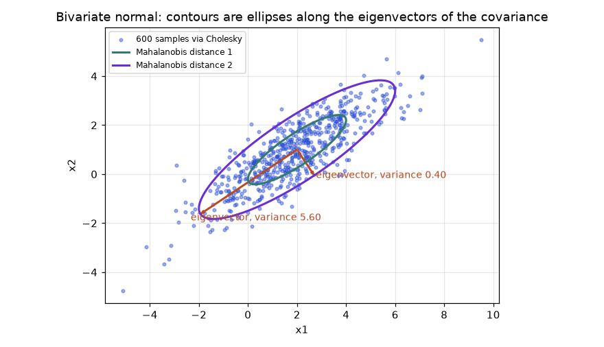
How to read it: the long axis points along the (3, 2) direction, where the variance is 5.6, and the short axis is perpendicular, with variance 0.4. About 39% of samples (1 − e−1/2) fall inside the M = 1 ellipse and 86.5% (1 − e−2) inside M = 2, because in two dimensions M² follows a chi-square with 2 degrees of freedom, whose CDF is 1 − e−c/2.
Marginals, conditionals and affine maps
Split the vector into two blocks, X = (Xa, Xb), with
- Marginal: Xa ~ N(μa, Σaa). Just read off the corresponding entries. Ignoring variables never changes the rest.
- Conditional: Xa | Xb = xb ~ N(μa + ΣabΣbb−1(xb − μb), Σaa − ΣabΣbb−1Σba). The conditional mean is a linear function of xb, which is why linear regression and the Gaussian are so intertwined, and the conditional covariance does not depend on xb.
- Affine maps: if Y = AX + c, then Y ~ N(Aμ + c, AΣAT). Linear combinations of jointly normal variables are normal.
Problem 15.3.2 With the μ and Σ above, find the distribution of X1 given X2 = 3, and the distribution of X1 + X2.
| Marginal of X1 | N(2, 4) |
|---|---|
| Slope | Σ12/Σ22 = 2.4/2 = 1.2 |
| Conditional mean | 2 + 1.2 × (3 − 1) = 4.4 |
| Conditional variance | 4 − 2.4²/2 = 4 − 2.88 = 1.12 (smaller than 4: knowing X2 removes uncertainty) |
| Sum | A = (1, 1): mean 2 + 1 = 3, variance 4 + 2 + 2 × 2.4 = 10.8 |
import numpy as np
rng = np.random.default_rng(5)
mu = np.array([2.0, 1.0]); S = np.array([[4, 2.4], [2.4, 2.0]])
X = rng.multivariate_normal(mu, S, 1000000)
near = X[np.abs(X[:, 1] - 3) < 0.02, 0] # samples with X2 close to 3
print(round(near.mean(), 2), round(near.var(), 2))
print(round((X[:, 0] + X[:, 1]).mean(), 2), round((X[:, 0] + X[:, 1]).var(), 2))4.41 1.14
3.0 10.79Sampling via Cholesky
Computers produce independent standard normals Z ~ N(0, I). To produce samples with covariance Σ, factor Σ = LLT with L lower triangular (the Cholesky factorisation, a special LU decomposition for PSD matrices, Chapter 9). Then X = μ + LZ has covariance LILT = Σ by the affine rule, and is normal. For our Σ, L = [[2, 0], [1.2, √0.56]]: check 2 × 1.2 = 2.4 and 1.2² + 0.56 = 1.44 + 0.56 = 2. √0.56 = 0.7483.
import numpy as np
S = np.array([[4, 2.4], [2.4, 2.0]])
L = np.linalg.cholesky(S)
print(L.round(4))
print((L @ L.T).round(4).tolist())
rng = np.random.default_rng(6)
Z = rng.standard_normal((200000, 2))
X = np.array([2, 1.0]) + Z @ L.T # rows are samples
print(X.mean(axis=0).round(2), np.cov(X.T).round(2).tolist())
# whitening: undo the transform, M^2 = squared length of z
W = np.linalg.solve(L, (X - [2, 1.0]).T).T
m2 = (W**2).sum(axis=1)
print(round(np.mean(m2 <= 5.9915), 3)) # chi-square(2) 95 percent point[[2. 0. ]
[1.2 0.7483]]
[[4.0, 2.4], [2.4, 2.0]]
[2. 1.] [[4.0, 2.4], [2.4, 2.0]]
0.95The last line shows that the Mahalanobis distance is simply the ordinary length after whitening, and that 95% of samples have M² ≤ 5.99, the 95% point of a chi-square with 2 degrees of freedom (Section 15.2: sum of squares of 2 standard normals).
multivariate_normal works inside simulation code. It fails with an error if Σ is not positive definite (for example, perfectly collinear features): the standard fix is to add a tiny "jitter" εI to the diagonal.Going deeper: where the 2π and the Gaussian integral come from
Why is the normalising constant √(2π)? We need the area under e−x²/2. This function has no elementary antiderivative, but there is a classical trick. Let I = ∫−∞∞ e−x² dx. Then
Switch to polar coordinates (x = r cos θ, y = r sin θ, area element r dr dθ, from the Jacobian determinant r, exactly the transformation rule above):
So I = √π. Substituting x = u/√2 gives ∫ e−u²/2 du = √2 · √π = √(2π). That is the origin of the constant, and the d-dimensional version gives (2π)d/2, because the integral over d independent coordinates is a product of d one-dimensional integrals. The factor |Σ|1/2 appears from the Jacobian of the map x = μ + Lz: |det L| = |Σ|1/2.
import numpy as np
from scipy.integrate import quad
val, _ = quad(lambda x: np.exp(-x**2), -np.inf, np.inf)
print(round(val**2, 6), round(np.pi, 6))
val2, _ = quad(lambda x: np.exp(-x**2 / 2), -np.inf, np.inf)
print(round(val2, 6), round(np.sqrt(2 * np.pi), 6))3.141593 3.141593
2.506628 2.506628Where it appears in ML. Maximising the Gaussian log-likelihood is the same as minimising squared error (the exponent is −½M²), which is why least squares is the "normal-noise" estimator. PCA is the eigendecomposition of Σ. Gaussian discriminant analysis, Kalman filters, Gaussian processes, and the Gaussian mixture models all rest on the conditional and marginal formulas above. And in very high dimensions, intuition fails: see the concentration discussion in the next section.
15.4 Inequalities, the Law of Large Numbers and the CLT
Beginner: what can you say when you know very little?
Markov's inequality. For X ≥ 0 and a > 0: P(X ≥ a) ≤ E[X]/a. Proof: the number a·1{X ≥ a} (which is a when X ≥ a and 0 otherwise) is never larger than X, so taking expectations, a·P(X ≥ a) ≤ E[X]. Smallest example: if the average API response time is 200 ms, then at most 200/1000 = 20% of requests can take 1000 ms or more (else the average would be bigger than 200).
Chebyshev's inequality. Apply Markov to (X − μ)² with threshold k²σ²: P(|X − μ| ≥ kσ) ≤ 1/k². For k = 3 this says that at most 1/9 = 11.1% of any distribution lies beyond 3 standard deviations. For a normal distribution the true figure is 0.27%, so Chebyshev is very loose but needs no assumptions.
Problem 15.4.1 Daily revenue has mean 50,000 and standard deviation 8,000. Bound the probability of a day outside the range 30,000 to 70,000.
| Distance | 20,000 from the mean = k σ with k = 20,000/8,000 = 2.5 |
|---|---|
| Chebyshev | P ≤ 1/2.5² = 1/6.25 = 0.16 |
| Meaning | At most 16% of days, whatever the shape. If revenue is roughly normal, the real figure is 1.2%. |
Intermediate: Jensen and Hoeffding
Jensen's inequality. If φ is convex (a curve that bends upward, like x² or −ln x; Chapter 11), then φ(E[X]) ≤ E[φ(X)]. Picture: the chord between two points of the curve lies above the curve, so the average of the function values is above the function of the average. For concave functions (like ln) the inequality flips.
Problem 15.4.2 X is 1 or 3 with probability ½ each. Check Jensen for φ(x) = x² and φ(x) = ln x.
| Mean | E[X] = 2 |
|---|---|
| Convex x² | φ(E[X]) = 4, E[X²] = (1 + 9)/2 = 5, and 4 ≤ 5 ✓ |
| Concave ln | ln E[X] = ln 2 = 0.6931, E[ln X] = (0 + ln 3)/2 = 0.5493, and 0.5493 ≤ 0.6931 ✓ |
| Use | the geometric mean is never above the arithmetic mean; and the gap in x² is the variance, 5 − 4 = 1 |
Jensen is the main tool of Section 15.5 (it proves that KL divergence is never negative) and of the ELBO in Section 15.8.
Hoeffding's inequality (awareness). If X1, ..., Xn are independent and each lies in [0, 1], with mean of the average μ, then P(X̄ − μ ≥ t) ≤ e−2nt². Chebyshev's tail decays like 1/n; Hoeffding's decays exponentially in n. The proof applies Markov to esX̄ (that is, uses the MGF, and then bounds it by a lemma); we skip the technical lemma but you now know where the exponential comes from.
Problem 15.4.3 A/B test with n = 1000 users, each converting with probability 0.5 (the hardest case). How likely is the observed conversion rate to differ from 0.5 by 0.05 or more?
| Chebyshev | Var of the mean ≤ 0.25/1000 = 0.00025. P ≤ 0.00025/0.05² = 0.1 |
|---|---|
| Hoeffding (both sides) | 2 e−2·1000·0.0025 = 2 e−5 = 2 × 0.006738 = 0.01348 |
| Exact binomial | about 0.00173 |
| Meaning | All three bounds are true, and each is tighter than the last. Exponential bounds matter when you need a guarantee for many tests at once. |
import numpy as np
from scipy.stats import binom
n, t = 1000, 0.05
print(round(0.25 / (n * t**2), 4))
print(round(2 * np.exp(-2 * n * t**2), 5))
print(round(2 * binom.sf(549, n, 0.5), 5)) # P(S >= 550) twice0.1
0.01348
0.00173The law of large numbers and the central limit theorem
Law of large numbers (LLN). Let X̄n be the mean of n independent draws with mean μ and variance σ². We know E[X̄n] = μ and Var(X̄n) = σ²/n. By Chebyshev, P(|X̄n − μ| ≥ ε) ≤ σ²/(nε²) → 0. So the sample mean converges to μ, and this is the reason simulation, polling, A/B testing and mini-batch gradients all work.
Central limit theorem (CLT). The LLN says the error goes to zero; the CLT says what it looks like. The standardised mean √n (X̄n − μ)/σ approaches N(0, 1) for any distribution with finite variance. One MGF argument: the MGF of the standardised sum is (1 + t²/(2n) + ...)n → et²/2, the MGF of N(0, 1) (the cubic and higher terms vanish faster).
Problem 15.4.4 Exponential(1) times (mean 1, sd 1, strongly skewed). Average n = 30 of them. What is the distribution of the average, and what is P(average ≤ 1.3)?
| Mean | 1 |
|---|---|
| Standard deviation | 1/√30 = 0.1826 |
| Standardise | z = (1.3 − 1)/0.1826 = 1.643 |
| Normal approximation | Φ(1.643) = 0.9498 |
| Exact | the sum of 30 is Gamma(30, 1), so the exact answer is gamma CDF at 39: 0.9409. The approximation is decent, not perfect (skew). |
import numpy as np
from scipy.stats import norm, gamma
n = 30
sd = 1 / np.sqrt(n)
print(round(sd, 4), round(norm.cdf((1.3 - 1) / sd), 4), round(gamma.cdf(1.3 * n, n), 4))
rng = np.random.default_rng(7)
means = rng.exponential(1.0, (100000, n)).mean(axis=1)
print(round(means.mean(), 3), round(means.std(), 3), round(np.mean(means <= 1.3), 4))0.1826 0.9498 0.9409
1.0 0.182 0.9412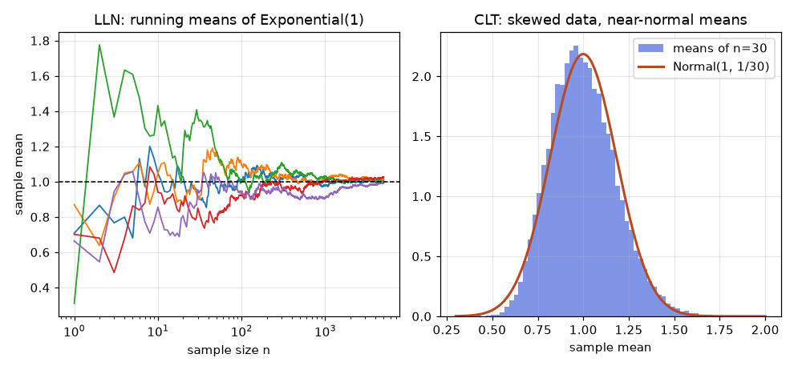
How to read it: on the left, early on the running means scatter widely, then all lines pinch toward 1 at a rate of about 1/√n (note the log axis for n). On the right, the data themselves are skewed, but averages of 30 values are nearly symmetric; the small remaining skew is why the normal curve overshoots slightly on one side.
Going deeper: concentration of measure
Hoeffding-type bounds are examples of concentration: a function of many independent variables hardly deviates from its typical value. In high dimensions this has a startling consequence. Take Z ~ N(0, Id): its squared norm is a sum of d independent squares, a chi-square with mean d and variance 2d, so the norm is ≈ √d with standard deviation ≈ 1/√2, whatever d is. For d = 1000 almost all of the probability mass sits on a thin shell of radius 31.6 and the "centre" at 0 is almost never visited. Likewise, random vectors in high dimension are nearly orthogonal. This explains why nearest-neighbour distances become similar in high dimensions (the curse of dimensionality), why random initialisation of neural nets scales weights by 1/√d, and why a sub-Gaussian tail assumption is the basis of most generalisation bounds in learning theory.
import numpy as np
rng = np.random.default_rng(8)
for d in (2, 100, 1000):
norms = np.linalg.norm(rng.standard_normal((20000, d)), axis=1)
print(d, round(norms.mean(), 2), round(norms.std(), 3), round(np.sqrt(d), 2))
a = rng.standard_normal((2000, 1000)); a /= np.linalg.norm(a, axis=1, keepdims=True)
cos = a[:1000] @ a[1000:].T
print(round(np.abs(cos).mean(), 4))2 1.25 0.65 1.41
100 9.97 0.708 10.0
1000 31.62 0.713 31.62
0.025215.5 Entropy, Cross-Entropy, KL Divergence and Mutual Information
Beginner: measuring surprise
Why the logarithm? Ask what a sensible measure of the surprise h(p) of an event with probability p must satisfy: (1) it is continuous in p; (2) rarer events are more surprising, so h decreases as p grows, and h(1) = 0 (a certain event tells you nothing); (3) for two independent events, the surprises add: h(p·q) = h(p) + h(q). Property (3) turns a product into a sum, and the only continuous functions that do this (Chapter 3) are logarithms. So h(p) = −log p, up to the choice of base. With base 2 the unit is the bit, with the natural logarithm it is the nat. One fair coin flip has h = −log2(1/2) = 1 bit, which is the number of yes/no questions needed to find out the result.
Smallest examples (bits):
- A fair coin: H = −(½ log2 ½ + ½ log2 ½) = 1 bit.
- A biased coin with P(heads) = 0.9: H = −0.9 log2 0.9 − 0.1 log2 0.1 = 0.9 × 0.1520 + 0.1 × 3.3219 = 0.1368 + 0.3322 = 0.469 bits. Less than 1 bit: it is more predictable.
- Eight equally likely classes: H = log2 8 = 3 bits. Uniform is the most unpredictable choice for a fixed number of outcomes.
Entropy has a practical meaning: it is the best possible average number of bits per symbol for a lossless code. A source with probabilities (½, ¼, ⅛, ⅛) has H = ½ × 1 + ¼ × 2 + ⅛ × 3 + ⅛ × 3 = 0.5 + 0.5 + 0.375 + 0.375 = 1.75 bits, and the code A = 0, B = 10, C = 110, D = 111 uses 1, 2, 3, 3 bits, whose average length is also 1.75. Frequent symbols get short codewords: compression.
Intermediate: cross-entropy and KL divergence
Suppose reality has distribution p, but you build your code (or your model) from a guess q. The average surprise you suffer is the cross-entropy:
It is always at least H(p), and the excess is the Kullback-Leibler divergence:
The identity follows by splitting the logarithm: −∑ p log q = −∑ p log p + ∑ p (log p − log q).
Problem 15.5.1 Truth p = (0.5, 0.25, 0.25) over three classes, model q = (0.4, 0.4, 0.2). Find H(p), H(p, q) and KL(p ‖ q) in bits.
| Entropy | H(p) = 0.5 × 1 + 0.25 × 2 + 0.25 × 2 = 1.5 bits |
|---|---|
| Logs of q | −log2 0.4 = 1.3219, −log2 0.2 = 2.3219 |
| Cross-entropy | 0.5 × 1.3219 + 0.25 × 1.3219 + 0.25 × 2.3219 = 0.9914 + 0.5805 = 1.5719 |
| KL by subtraction | 1.5719 − 1.5 = 0.0719 bits |
| KL directly | 0.5 log2(1.25) + 0.25 log2(0.625) + 0.25 log2(1.25) = 0.1610 − 0.1695 + 0.0805 = 0.0719 |
import numpy as np
p = np.array([0.5, 0.25, 0.25]); q = np.array([0.4, 0.4, 0.2])
H = -np.sum(p * np.log2(p))
CE = -np.sum(p * np.log2(q))
KL = np.sum(p * np.log2(p / q))
print(round(H, 4), round(CE, 4), round(KL, 4), round(H + KL, 4))1.5 1.5719 0.0719 1.5719KL is never negative. Proof with Jensen. Since −log is convex, Jensen gives, with expectation under p,
(the sum is over the values where p > 0, so ∑q ≤ 1). Equality holds only when q = p. This is also why cross-entropy is minimised, for fixed truth p, exactly by q = p: it is a proper scoring rule, which rewards honest probabilities.
KL is not symmetric, so it is not a distance. Take p = (0.9, 0.1) and q = (0.5, 0.5), in nats:
Also, if q(x) = 0 anywhere that p(x) > 0, KL(p ‖ q) = ∞: a model that calls something impossible is infinitely punished when it happens.
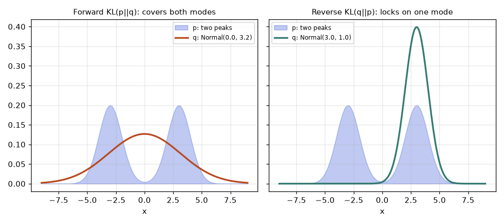
How to read it: forward KL(p ‖ q) is infinite if q misses a place where p has mass, so q is forced to cover everything (mean 0, sd about √10 = 3.2: it matches the mean and variance of p), at the price of putting mass in the empty middle. Reverse KL(q ‖ p) punishes q for putting mass where p has none, so q is happy to describe one mode well and ignore the other ("mode-seeking"). Maximum likelihood training minimises the forward direction; variational inference (Section 15.8) minimises the reverse one, which is why variational approximations are often too narrow.
A formula you will use. For two normal distributions,
For N(0, 1) against N(1, 2²): ln 2 + (1 + 1)/8 − ½ = 0.6931 + 0.25 − 0.5 = 0.4431 nats. Setting the second distribution to N(0, 1) gives the VAE regulariser ½(σ² + μ² − 1 − ln σ²).
Cross-entropy is the classification loss
Why do classifiers minimise log-loss? Derive it from maximum likelihood. A binary classifier outputs qi = P(yi = 1) for example i with true label yi ∈ {0, 1}. The likelihood of the label is qi if yi = 1 and 1 − qi if yi = 0, which we can write as qiyi(1 − qi)1−yi. For independent examples, multiply, then take the negative log (so products become sums, and maximising becomes minimising):
This is the binary cross-entropy (log-loss), summed over the data. Each term is the cross-entropy H(pi, qi) between the one-hot truth pi = (1 − yi, yi) and the prediction. For K classes with one-hot truth, the loss for one example is −ln qtrue class. Because H(p) = 0 for a one-hot p, here cross-entropy equals the KL divergence: minimising log-loss means pulling the predicted distribution toward the true labels.
Problem 15.5.2 Three predictions: (y = 1, q = 0.8), (y = 0, q = 0.3), (y = 1, q = 0.6). Find the mean log-loss.
| Example 1 | −ln 0.8 = 0.2231 |
|---|---|
| Example 2 | true label 0, so use 1 − q = 0.7: −ln 0.7 = 0.3567 |
| Example 3 | −ln 0.6 = 0.5108 |
| Mean | (0.2231 + 0.3567 + 0.5108)/3 = 1.0906/3 = 0.3635 |
Softmax gradient. With softmax probabilities qk = ezk/∑jezj and loss L = −∑ pk ln qk, the derivative with respect to the logit zk is simply qk − pk (derivation: ln qk = zk − ln ∑ezj, so ∂L/∂zk = −pk + (∑m pm) qk = qk − pk since ∑pm = 1). Prediction minus truth: clean, bounded gradients, one of the reasons this pairing dominates deep learning (Chapter 13).
import numpy as np
y = np.array([1, 0, 1]); q = np.array([0.8, 0.3, 0.6])
loss = -(y * np.log(q) + (1 - y) * np.log(1 - q))
print(loss.round(4), round(loss.mean(), 4))
# confident and wrong
print(round(-np.log(0.001), 3), round(-np.log(0.5), 3))
# softmax gradient check by finite differences
z = np.array([2.0, 1.0, 0.0]); p = np.array([0.0, 1.0, 0.0])
def L(z):
q = np.exp(z) / np.exp(z).sum(); return -np.sum(p * np.log(q))
q = np.exp(z) / np.exp(z).sum()
num = np.array([(L(z + 1e-6 * np.eye(3)[k]) - L(z - 1e-6 * np.eye(3)[k])) / 2e-6 for k in range(3)])
print((q - p).round(4), num.round(4))[0.2231 0.3567 0.5108] 0.3635
6.908 0.693
[ 0.6652 -0.7553 0.09 ] [ 0.6652 -0.7553 0.09 ]Mutual information
How much does knowing Y tell you about X? Mutual information is the KL divergence between the true joint distribution and the product of the marginals (what the joint would be if X and Y were independent):
Since it is a KL divergence, I(X; Y) ≥ 0, with equality if and only if X and Y are independent. Unlike correlation, it detects any kind of dependence, including the parabola of Problem 15.2.1. And I(X; Y) = H(X) − H(X | Y) says: the reduction in uncertainty about X from learning Y.
Problem 15.5.3 Spam filtering. 40% of emails are spam. The word "free" appears in 50% of spam and 10% of non-spam. Find I(spam; free) in bits.
| Joint | spam & free 0.4 × 0.5 = 0.20; spam & no 0.20; ham & free 0.6 × 0.1 = 0.06; ham & no 0.54 |
|---|---|
| Marginals | P(free) = 0.26, P(no free) = 0.74, P(spam) = 0.4, P(ham) = 0.6 |
| Entropies | H(spam) = 0.9710, H(free) = 0.8267, H(joint of four cells) = 1.6523 |
| Mutual information | 0.9710 + 0.8267 − 1.6523 = 0.1453 bits |
| Check one term | spam & free: 0.2 × log2(0.2/(0.4 × 0.26)) = 0.2 × log2(1.923) = 0.1887 |
import numpy as np
J = np.array([[0.20, 0.20], [0.06, 0.54]]) # rows: spam, ham; columns: free, no free
px = J.sum(axis=1); py = J.sum(axis=0)
mi = np.sum(J * np.log2(J / np.outer(px, py)))
print(round(mi, 4))
# if the two were independent, the joint would be the product of marginals: MI is zero
Jind = np.outer(px, py)
print(round(np.sum(Jind * np.log2(Jind / np.outer(px, py))), 4))0.1453
0.0Feature selection. Mutual information between each feature and the target ranks features by how much they reduce uncertainty about the label, with no linear assumption (scikit-learn's mutual_info_classif estimates this; we write the discrete case by hand).
import numpy as np
rng = np.random.default_rng(9)
n = 20000
y = rng.integers(0, 2, n)
f_signal = (rng.random(n) < np.where(y == 1, 0.8, 0.3)).astype(int) # depends on y
f_noise = rng.integers(0, 2, n) # independent of y
def mi(a, b):
J = np.zeros((2, 2))
for i in (0, 1):
for j in (0, 1): J[i, j] = np.mean((a == i) & (b == j))
P = np.outer(J.sum(1), J.sum(0))
return np.sum(J * np.log2(J / P))
print(round(mi(f_signal, y), 4), round(mi(f_noise, y), 5))0.1766 0.0The exact value for the signal feature is H(0.55) − ½H(0.8) − ½H(0.3) = 0.9928 − 0.8016 = 0.1912 bits; the sample value 0.1766 is a bit lower because the 20,000 simulated rows contain slightly weaker signal than the true rates, and the noise feature scores about 0.
Going deeper: relatives of KL, and decision trees
Maximum entropy awareness. Among all distributions satisfying given constraints, the one with the highest entropy makes the fewest extra assumptions. With no constraint on a finite set: the uniform. On [0, ∞) with a given mean: the exponential. On the whole line with a given mean and variance: the normal, whose differential entropy is ½ ln(2πeσ²). Many standard distributions are "the maximum-entropy answer" to a simple question, which is one reason they appear so often. Logistic regression is the maximum-entropy model with matching feature averages.
Jensen-Shannon divergence (awareness). JS(p, q) = ½KL(p ‖ m) + ½KL(q ‖ m) with m = (p + q)/2. It is symmetric, finite even when supports differ, and bounded by ln 2 nats (1 bit). Its square root is a true metric. The original GAN objective is a form of JS.
Wasserstein distance (awareness). KL and JS compare the probability values and ignore how far apart outcomes are. The Wasserstein ("earth mover") distance is the least total work to move one pile of probability mass to the shape of the other. If p is a point mass at 0 and q a point mass at 10, KL(p ‖ q) = ∞ and JS is the constant ln 2 whatever the gap, but the Wasserstein distance is 10, and it shrinks smoothly as the piles approach, which gives usable gradients. This is the motivation for Wasserstein GANs.
import numpy as np
from scipy.spatial.distance import jensenshannon
from scipy.stats import wasserstein_distance
p = np.array([1.0, 0.0, 0.0, 0.0]); q1 = np.array([0.0, 1.0, 0.0, 0.0]); q3 = np.array([0.0, 0.0, 0.0, 1.0])
print(round(jensenshannon(p, q1, base=2)**2, 4), round(jensenshannon(p, q3, base=2)**2, 4))
pos = np.arange(4)
print(wasserstein_distance(pos, pos, p, q1), wasserstein_distance(pos, pos, p, q3))1.0 1.0
1.0 3.0Both distant targets give JS = 1 bit (the maximum), but Wasserstein reports 1 and 3.
Information gain for decision trees. A tree chooses the split that most reduces entropy. The information gain of a split is the parent entropy minus the weighted average entropy of the children, which is exactly the mutual information between the split and the label.
Problem 15.5.4 Ten customers: 6 churned and 4 stayed. Split on "month-to-month contract". Of the 5 on month-to-month, 4 churned and 1 stayed. Of the 5 on longer contracts, 2 churned and 3 stayed. Find the information gain.
| Parent | H(0.6, 0.4) = −0.6 log2 0.6 − 0.4 log2 0.4 = 0.6 × 0.7370 + 0.4 × 1.3219 = 0.4422 + 0.5288 = 0.9710 |
|---|---|
| Child A (month-to-month) | H(0.8, 0.2) = 0.8 × 0.3219 + 0.2 × 2.3219 = 0.2575 + 0.4644 = 0.7219 |
| Child B (longer) | H(0.4, 0.6) = 0.9710 |
| Weighted | 0.5 × 0.7219 + 0.5 × 0.9710 = 0.3610 + 0.4855 = 0.8464 |
| Gain | 0.9710 − 0.8464 = 0.1245 bits |
import numpy as np
def H(counts):
p = np.array(counts) / sum(counts); p = p[p > 0]
return -np.sum(p * np.log2(p))
parent = H([6, 4]); a = H([4, 1]); b = H([2, 3])
gain = parent - (5/10 * a + 5/10 * b)
print(round(parent, 4), round(a, 4), round(b, 4), round(gain, 4))0.971 0.7219 0.971 0.1245Gini impurity (1 − ∑p2) is a cheaper cousin used by default in scikit-learn; the two rank splits almost identically.
Perplexity for language models. A language model assigns a probability to each next token. Its average cross-entropy per token is H = −(1/N)∑ log2 q(tokeni | context), and the perplexity is 2H (or eH when H is in nats): the effective number of equally likely choices the model is torn between. A model that guesses uniformly over a vocabulary of V tokens has perplexity exactly V; lower is better.
Problem 15.5.5 A model assigns probabilities 0.5, 0.25, 0.1, 0.4 to the four true tokens of a sentence. Find the perplexity.
| Surprises (bits) | 1, 2, 3.3219, 1.3219 |
|---|---|
| Average | 7.6439/4 = 1.9110 bits |
| Perplexity | 21.9110 = 3.76 |
| Meaning | about as unsure as choosing among 3.76 equally likely words, per token |
import numpy as np
probs = np.array([0.5, 0.25, 0.1, 0.4])
h_bits = -np.mean(np.log2(probs))
print(round(h_bits, 4), round(2**h_bits, 3), round(np.exp(-np.mean(np.log(probs))), 3))1.911 3.761 3.76115.6 Markov Chains
Beginner: the future depends only on the present
All the one-step probabilities live in a transition matrix P, where Pij = P(next = j | now = i). Each row sums to 1 (from state i you must go somewhere). Smallest example, two states: Active (A) and Dormant (D):
| 0.9 | 0.1 |
| 0.5 | 0.5 |
An active user stays active with probability 0.9; a dormant user returns with 0.5.
Intermediate: n-step probabilities and the stationary distribution
The probability of going from i to j in two steps sums over the middle state: ∑k PikPkj, which is the (i, j) entry of the matrix product P² (Chapter 6). In general the n-step probabilities are the entries of Pn. A row vector of state probabilities π evolves as πnext = πP.
Problem 15.6.1 Compute P² and find the probability that a user who is Dormant now is Active in 2 steps.
| Row A | (0.9 × 0.9 + 0.1 × 0.5, 0.9 × 0.1 + 0.1 × 0.5) = (0.81 + 0.05, 0.09 + 0.05) = (0.86, 0.14) |
|---|---|
| Row D | (0.5 × 0.9 + 0.5 × 0.5, 0.5 × 0.1 + 0.5 × 0.5) = (0.45 + 0.25, 0.05 + 0.25) = (0.70, 0.30) |
| Answer | 0.70 |
| Check | rows sum to 1: 0.86 + 0.14 = 1, 0.70 + 0.30 = 1 |
The stationary distribution π is the one that does not change: π = πP, with entries summing to 1. It is a left eigenvector of P with eigenvalue 1 (Chapter 8). For our P: πA = 0.9πA + 0.5πD gives 0.1πA = 0.5πD, so πA = 5πD, and with πA + πD = 1: π = (5/6, 1/6) = (0.8333, 0.1667). In the long run, 83% of the time is spent in Active, whatever the starting state.
Speed of convergence. The eigenvalues of P are 1 and trace − 1 = 1.4 − 1 = 0.4. The second eigenvalue controls how fast the chain forgets its start: the distance to π shrinks like 0.4n. A second eigenvalue near 1 means slow mixing, which matters hugely for MCMC (Section 15.7).
import numpy as np
P = np.array([[0.9, 0.1], [0.5, 0.5]])
print(np.linalg.matrix_power(P, 2).round(4).tolist())
vals, vecs = np.linalg.eig(P.T) # left eigenvectors of P
k = np.argmax(vals.real)
pi = vecs[:, k].real; pi = pi / pi.sum()
print(pi.round(4), np.sort(vals.real).round(2))
start = np.array([0.0, 1.0]) # start Dormant
for n in (1, 3, 10):
print(n, (start @ np.linalg.matrix_power(P, n)).round(4))[[0.86, 0.14], [0.7, 0.3]]
[0.8333 0.1667] [0.4 1. ]
1 [0.5 0.5]
3 [0.78 0.22]
10 [0.8332 0.1668]Problem 15.6.2 Absorbing chain. A subscription has transient states Trial and Paid, and absorbing states Cancelled and Upgraded (once entered, never left). From Trial: stay 0.5, to Paid 0.3, to Cancelled 0.2. From Paid: stay 0.8, to Cancelled 0.15, to Upgraded 0.05. What is the expected time spent before absorption, and the probability of each ending?
| Split P | Q (transient to transient) = [[0.5, 0.3], [0, 0.8]], R (transient to absorbing: Cancelled, Upgraded) = [[0.2, 0], [0.15, 0.05]] |
|---|---|
| Fundamental matrix | N = (I − Q)−1, I − Q = [[0.5, −0.3], [0, 0.2]], determinant 0.1, N = (1/0.1)[[0.2, 0.3], [0, 0.5]] = [[2, 3], [0, 5]] |
| Expected steps | row sums of N: from Trial 2 + 3 = 5, from Paid 0 + 5 = 5 |
| Absorption probabilities | B = NR = [[2 × 0.2 + 3 × 0.15, 3 × 0.05], [5 × 0.15, 5 × 0.05]] = [[0.85, 0.15], [0.75, 0.25]] |
| Meaning | A trial user ends up Cancelled with probability 0.85 and Upgraded with 0.15; each row sums to 1. |
Why N works: N = I + Q + Q² + ..., a geometric series of matrices (Chapter 4) that counts expected visits to each transient state, and it sums to (I − Q)−1 because Qn → 0.
import numpy as np
Q = np.array([[0.5, 0.3], [0.0, 0.8]]); R = np.array([[0.2, 0.0], [0.15, 0.05]])
N = np.linalg.inv(np.eye(2) - Q)
print(N.round(3).tolist(), N.sum(axis=1).round(3).tolist())
print((N @ R).round(3).tolist())[[2.0, 3.0], [0.0, 5.0]] [5.0, 5.0]
[[0.85, 0.15], [0.75, 0.25]]Going deeper
When does a unique stationary distribution exist? If every state can eventually reach every state (irreducible) and the chain does not cycle with a fixed period (aperiodic), then π is unique and the distribution of the chain converges to π from any start. A chain that alternates A, B, A, B forever has a stationary distribution (½, ½), but never converges to it: it is periodic. Reversibility (detailed balance), πiPij = πjPji, is a simple sufficient condition for π to be stationary, and it is the design principle of Metropolis-Hastings.
Appearances. PageRank is the stationary distribution of a random surfer, with a teleport step that guarantees irreducibility. Markov decision processes (reinforcement learning) add actions to the transition matrix. Language models with a one-word context are Markov chains, and modern transformers drop the Markov assumption. Hidden Markov models (awareness): the chain's state is not observed; at each step it emits an observation (a word, a sensor reading) according to a state-dependent distribution. The forward algorithm computes the likelihood of an observation sequence in O(T·K²) time by a recursion that multiplies the previous vector by P and then by the emission probabilities, and the Viterbi algorithm finds the most likely hidden path. HMMs powered speech recognition and gene finding before deep learning, and are still used for regime detection.
15.7 Monte Carlo, Importance Sampling and MCMC
Beginner: estimate an average by sampling
Problem 15.7.1 Estimate ∫01 e−x² dx (the true value is 0.746824) with N = 10,000 uniform points, and report the standard error.
| Idea | For X uniform on [0, 1], the integral equals E[e−X²] (density 1 on [0, 1]) |
|---|---|
| Estimate | average of e−xi² over 10,000 draws |
| Standard error | the sd of e−X² is about 0.2 (values lie between 0.37 and 1), so the error is about 0.2/√10000 = 0.002 |
| Meaning | to gain one more digit of accuracy you need 100 times more samples: error shrinks as 1/√N regardless of dimension |
import numpy as np
rng = np.random.default_rng(10)
N = 10000
g = np.exp(-rng.random(N)**2)
est = g.mean(); se = g.std(ddof=1) / np.sqrt(N)
print(round(est, 4), round(se, 4), round(g.std(), 3))
print(abs(est - 0.746824) < 3 * se)0.7455 0.002 0.201
TrueThe 1/√N rate does not depend on dimension. A grid of 10 points per axis needs 10d evaluations; Monte Carlo needs the same N in any d. This is why it is the default for high-dimensional integrals, and why SGD (an average over a random mini-batch) works.
Intermediate: importance sampling for rare events
Suppose you want P(Z > 4) for a standard normal Z. The true value is 3.167 × 10−5. With plain Monte Carlo, you would see an exceedance about once per 31,600 samples, so with N = 10,000 you will usually see none and report 0. The fix is to sample from a proposal q that visits the interesting region often, and correct with weights:
Take q = N(4, 1). The weight is w(y) = φ(y)/φ(y − 4) = exp(−y²/2 + (y − 4)²/2) = exp(−4y + 8). About half of the draws from q land above 4, each with a small weight.
Problem 15.7.2 One draw from q is y = 4.5. What does it contribute to the estimate of P(Z > 4)?
| Indicator | g(y) = 1 since 4.5 > 4 |
|---|---|
| Weight | w = exp(−4 × 4.5 + 8) = exp(−10) = 4.54 × 10−5 |
| Contribution | 4.54 × 10−5; the average of such terms over all draws estimates 3.17 × 10−5 |
import numpy as np
from scipy.stats import norm
rng = np.random.default_rng(11)
N = 10000
plain = np.mean(rng.standard_normal(N) > 4)
y = rng.normal(4, 1, N)
w = np.exp(-4 * y + 8)
imp = np.mean((y > 4) * w)
print(plain, f"{imp:.3e}", f"{norm.sf(4):.3e}")0.0 3.270e-05 3.167e-05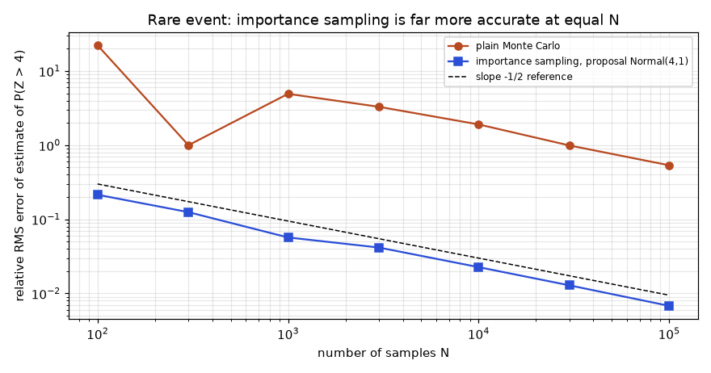
How to read it: both lines should fall at slope −½. The plain estimator starts above 100% relative error (it often returns 0 and sometimes a value 30 times too big) and is still near 50% at N = 100,000. Importance sampling is at 20% already with N = 100 and below 1% at 100,000. The choice of proposal matters: it should have heavier tails than f times g, otherwise the weights have infinite variance and a single draw dominates the estimate.
Metropolis-Hastings from scratch
Importance sampling needs a good proposal. For a complicated target distribution (a Bayesian posterior, say) there may be none, and you cannot even sample from it directly, but you can often evaluate its density up to a constant. MCMC (Markov chain Monte Carlo) builds a Markov chain whose stationary distribution (Section 15.6) is the target, then uses the chain's long-run samples.
Metropolis-Hastings (random-walk version). From the current x: (1) propose x′ = x + noise, symmetric around x; (2) accept with probability min(1, π(x′)/π(x)); (3) if rejected, stay at x (and record x again). The unknown normalising constant cancels in the ratio, which is the whole point. Why is π stationary? The chain moves i → j with probability proportional to min(πi, πj) in both directions (symmetric proposal), so πiPij = πjPji: detailed balance, which implies stationarity.
Problem 15.7.3 Target π(x) ∝ the mixture 0.3 N(0, 1) + 0.7 N(4, 0.8²). From x = 3 you propose x′ = 4. Is the move accepted? What if you propose x′ = 1.5?
| Density at 3 | 0.3 φ(3) + 0.7 φ(1.25)/0.8 = 0.3 × 0.00443 + 0.7 × 0.18265/0.8 = 0.00133 + 0.15982 = 0.1611 |
|---|---|
| Density at 4 | 0.3 φ(4) + 0.7 φ(0)/0.8 = 0.00004 + 0.7 × 0.39894/0.8 = 0.3491; ratio 0.3491/0.1611 = 2.17, and min(1, 2.17) = 1: always accepted (uphill) |
| Density at 1.5 | 0.3 φ(1.5) + 0.7 φ(3.125)/0.8 = 0.03886 + 0.00265 = 0.0415; ratio 0.0415/0.1611 = 0.26, so accepted 26% of the time |
The code below is a complete sampler in 40 lines, including the check of the numbers above.
import numpy as np
def target(x):
# unnormalised is fine; this one happens to be normalised
a = 0.3 * np.exp(-x**2 / 2) / np.sqrt(2 * np.pi)
b = 0.7 * np.exp(-(x - 4)**2 / (2 * 0.8**2)) / (0.8 * np.sqrt(2 * np.pi))
return a + b
def metropolis(target, x0, n_steps, step, rng):
x = x0
chain = np.empty(n_steps)
accepted = 0
for i in range(n_steps):
prop = x + rng.normal(0, step) # symmetric random-walk proposal
ratio = target(prop) / target(x) # constants cancel here
if rng.random() < ratio: # accept with prob min(1, ratio)
x = prop
accepted += 1
chain[i] = x # record (repeat x on rejection)
return chain, accepted / n_steps
rng = np.random.default_rng(12)
print(round(target(3.0), 4), round(target(4.0), 4), round(target(1.5), 4))
chain, rate = metropolis(target, 0.0, 20000, 1.5, rng)
kept = chain[1000:] # drop burn-in
print("acceptance", round(rate, 2))
print("mean", round(kept.mean(), 2), "target mean 2.8")
print("share above 2", round(np.mean(kept > 2), 2))0.1611 0.3491 0.0415
acceptance 0.61
mean 2.77 target mean 2.8
share above 2 0.69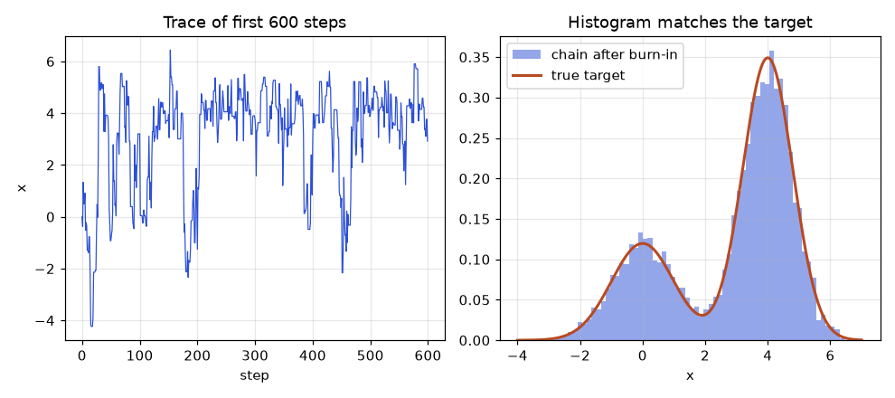
How to read it: the trace is flat for stretches (rejected proposals) and then jumps; the step size 1.5 is a compromise. The target mean is 0.3 × 0 + 0.7 × 4 = 2.8 and the share of mass above 2 is mostly the second mode.
Going deeper: tuning and diagnostics
- Step size. Too small: nearly every proposal is accepted but the chain crawls (slow mixing, strongly correlated samples). Too large: nearly every proposal is rejected and the chain sticks. For a normal target in high dimension, the optimal acceptance rate of random-walk Metropolis is about 23%.
- Correlated samples. The N chain samples are worth only N/(1 + 2∑ρk) independent ones, where ρk are the autocorrelations: the effective sample size. The mixing is controlled by the second-largest eigenvalue of the chain, Section 15.6.
- Burn-in and multiple chains. Start several chains from different points and compare them (the R-hat statistic). Disagreement means you have not converged, for instance because a mode was never found. Gradient-based samplers (Hamiltonian Monte Carlo, used by Stan and PyMC) take far better steps in high dimension, using the gradients of Chapter 12.
- Metropolis-Hastings in general allows asymmetric proposals q(x′ | x), with acceptance probability min(1, π(x′)q(x | x′) / (π(x)q(x′ | x))).
15.8 The Expert Layer: Exponential Families, Fisher Information, ELBO and Reparameterization
Exponential families (awareness)
Bernoulli, normal, Poisson, exponential, gamma, and categorical distributions share one form:
Here η is the natural parameter, T(x) the sufficient statistic (the only summary of the data the parameter cares about) and A(η) the log-normaliser (it makes the total probability 1). Example, Bernoulli(p): p(x) = px(1 − p)1−x = exp( x ln(p/(1 − p)) + ln(1 − p) ), so T(x) = x, η = ln(p/(1 − p)) (the log-odds), and A(η) = ln(1 + eη). The magic property: A′(η) = E[T(X)] and A″(η) = Var(T(X)). Check: A′(η) = eη/(1 + eη) = the sigmoid of η = p, and A″(η) = p(1 − p). So the sigmoid in logistic regression is the derivative of the log-normaliser, and softmax plays the same role for the categorical distribution. This is the reason generalised linear models (Poisson, logistic, linear regression) share one training algorithm, and why these distributions have conjugate priors and a finite-size sufficient statistic.
Fisher information and Cramer-Rao (awareness)
How much information does a sample carry about a parameter θ? The score is the slope of the log-likelihood, ∂ ln p(x | θ)/∂θ. It has mean 0 and its variance is the Fisher information:
The second form is the expected curvature of the log-likelihood: a sharply peaked likelihood pins θ down. The Cramer-Rao bound says any unbiased estimator from n independent observations has Var ≥ 1/(n I(θ)). Example, Bernoulli(p): ln p(x) = x ln p + (1 − x) ln(1 − p), second derivative = −x/p² − (1 − x)/(1 − p)², expectation of the negative: p/p² + (1 − p)/(1 − p)² = 1/p + 1/(1 − p) = 1/(p(1 − p)). So the bound is p(1 − p)/n, which is exactly the variance of the sample proportion: the sample mean is the best possible unbiased estimator. At p = 0.3, n = 100, the bound is 0.21/100 = 0.0021 (standard error 0.0458). The Hessian of Chapter 12 is the empirical version of this curvature, and natural-gradient methods precondition updates with the inverse Fisher matrix.
import numpy as np
rng = np.random.default_rng(13)
p, n = 0.3, 100
phat = rng.binomial(n, p, 200000) / n
print(round(phat.var(), 5), round(p * (1 - p) / n, 5), round(1 / (p * (1 - p)), 3))0.0021 0.0021 4.762The ELBO for variational inference
In a latent-variable model (a VAE, a topic model), the probability of the data x involves hidden variables z: p(x) = ∫ p(x, z) dz, usually an intractable integral. Variational inference picks a simple family q(z) and fits it. For any q, the following identity holds (take the expectation under q of ln p(x) = ln [p(x, z)/p(z | x)], then add and subtract ln q):
The first term is the evidence lower bound (ELBO). Since KL ≥ 0 (Section 15.5), ln p(x) ≥ ELBO, and maximising the ELBO over q simultaneously raises the bound and shrinks KL(q ‖ posterior), which is the reverse KL of Figure 15.3. A second derivation uses Jensen directly: ln p(x) = ln Eq[p(x, z)/q(z)] ≥ Eq[ln (p(x, z)/q(z))]. Splitting p(x, z) = p(x | z)p(z) gives the form used to train VAEs:
The first term rewards reconstructing the data; the second keeps the encoder's distribution close to the prior. For q = N(μ, σ²) and p(z) = N(0, 1), the KL term is ½(σ² + μ² − 1 − ln σ²), from Section 15.5. For μ = 0.5 and σ = 0.8, it equals ½(0.64 + 0.25 − 1 − ln 0.64) = ½(−0.11 + 0.4463) = 0.1681.
Softmax, temperature and entropy
Softmax turns logits z into probabilities, and temperature T rescales: qk = ezk/T / ∑j ezj/T. As T → 0 it approaches argmax (all mass on the largest logit, entropy 0), and as T → ∞ it approaches the uniform distribution (maximum entropy ln K). Language models sample with T below 1 for focused, repeatable text and above 1 for diverse, riskier text; temperature in knowledge distillation softens the teacher's output so that the small probabilities (which encode similarities between classes) carry signal.
Problem 15.8.1 Logits z = (2, 1, 0). Compute the softmax at T = 1 and its entropy, and then at T = 0.5.
| T = 1 numerators | e2 = 7.389, e1 = 2.718, e0 = 1; sum = 11.107 |
|---|---|
| T = 1 probabilities | (0.6652, 0.2447, 0.0900) |
| Entropy | −∑q ln q = 0.6652 × 0.4076 + 0.2447 × 1.4076 + 0.0900 × 2.4076 = 0.2711 + 0.3444 + 0.2167 = 0.832 nats (1.2009 bits) |
| T = 0.5 | logits become (4, 2, 0): e4 = 54.598, e2 = 7.389, 1; sum 62.987, so (0.8668, 0.1173, 0.0159), entropy 0.4411 nats (0.6363 bits) |
| Meaning | lower temperature, sharper distribution, lower entropy |
import numpy as np
def softmax(z, T=1.0):
e = np.exp((z - z.max()) / T) # subtract max for stability
return e / e.sum()
z = np.array([2.0, 1.0, 0.0])
for T in (1.0, 0.5, 2.0, 10.0):
q = softmax(z, T)
print(T, q.round(4), round(-np.sum(q * np.log(q)), 4))
print(round(np.log(3), 4))1.0 [0.6652 0.2447 0.09 ] 0.8324
0.5 [0.8668 0.1173 0.0159] 0.4411
2.0 [0.5065 0.3072 0.1863] 1.0202
10.0 [0.3672 0.3322 0.3006] 1.0953
1.0986The reparameterization trick
Training a VAE requires the gradient, with respect to the parameters (μ, σ), of an expectation Ez ~ N(μ, σ²)[f(z)]. The sampling step blocks backpropagation: you cannot differentiate through "draw a random number". The trick: write z = μ + σε with ε ~ N(0, 1). The randomness now lives in ε, which does not depend on the parameters, so
and the gradient can be estimated by a Monte Carlo average of ordinary derivatives (the chain rule of Chapter 13). The alternative, the score-function (REINFORCE) estimator, uses E[f(z)(z − μ)/σ²]; it works for any distribution but has much higher variance.
Problem 15.8.2 f(z) = z², μ = 1.5, σ = 0.8. Find ∂E[f]/∂μ exactly, then estimate it both ways.
| Exact | E[z²] = μ² + σ², so the derivative with respect to μ is 2μ = 3 |
|---|---|
| Reparameterized | average of f′(z) = 2z = 2(μ + σε), whose mean is 2μ = 3 and whose sd is 2σ = 1.6 |
| Score function | average of z² (z − μ)/σ², unbiased but with a much larger sd |
import numpy as np
rng = np.random.default_rng(14)
mu, sigma, N = 1.5, 0.8, 100000
eps = rng.standard_normal(N)
z = mu + sigma * eps
g_rep = 2 * z # derivative of z^2 pushed through z = mu + sigma*eps
g_score = z**2 * (z - mu) / sigma**2 # score-function estimator
print(round(g_rep.mean(), 3), round(g_rep.std(), 3))
print(round(g_score.mean(), 3), round(g_score.std(), 3))3.0 1.6
2.992 6.947Both are centred near 3, but the reparameterized estimator has a spread of 1.6 against several times more for the score function. Lower variance means stable training. The trick works for any location-scale family and, with some more work, for many others; it fails for discrete variables, where tricks like Gumbel-softmax (softmax with temperature and noise) are used instead.
Chapter recap
- Expectation is linear without any independence assumption; E[g(X)] is computed with LOTUS, and E[g(X)] ≠ g(E[X]) in general.
- Var(aX + b) = a²Var(X); Var(X + Y) adds 2Cov(X, Y); the law of total variance splits spread into within-group and between-group parts.
- Covariance detects only linear dependence: independent implies uncorrelated but not the reverse.
- The covariance matrix Σ is symmetric positive semi-definite, since aTΣa = Var(aTX) ≥ 0; its eigenvectors are the principal directions.
- MGFs multiply for independent sums and give moments by differentiation; the change-of-variables formula uses |dx/dy| or |det J|, and gives the lognormal and chi-square.
- The multivariate normal is determined by μ and Σ; Mahalanobis distance measures distance in standard-deviation units; marginals, conditionals and affine maps stay normal; Cholesky samples it.
- Markov, Chebyshev and Jensen give distribution-free guarantees; Hoeffding gives exponential tails; the LLN and CLT justify averaging and Monte Carlo, with error σ/√n.
- Entropy is average surprise; H(p, q) = H(p) + KL(p ‖ q); KL ≥ 0 by Jensen and is asymmetric.
- Log-loss is the negative log-likelihood of a Bernoulli or categorical model, and the softmax gradient is q − p.
- Mutual information is KL between the joint and the product of marginals: it detects any dependence and drives feature selection and tree splits.
- Markov chains: n-step probabilities are Pn, the stationary distribution is a left eigenvector with eigenvalue 1, and absorbing chains use N = (I − Q)−1.
- Monte Carlo has 1/√N error in any dimension; importance sampling reweights rare events; Metropolis-Hastings samples from unnormalised densities; the ELBO and the reparameterization trick make variational inference trainable.
| Formula / pattern | Meaning |
|---|---|
| E[aX + bY] = aE[X] + bE[Y] | Linearity, always valid |
| Var(X) = E[X²] − (E[X])² | Variance shortcut |
| Var(Y) = E[Var(Y | G)] + Var(E[Y | G]) | Law of total variance |
| Cov(AX) = AΣAᵀ | Covariance under a linear map |
| M(t) = E[etX], MX+Y = MXMY | MGF and independent sums |
| fY(y) = fX(g⁻¹(y)) |det J| | Change of variables |
| M² = (x − μ)ᵀΣ⁻¹(x − μ) | Mahalanobis distance |
| X = μ + LZ, Σ = LLᵀ | Sampling a multivariate normal |
| P(|X − μ| ≥ kσ) ≤ 1/k² | Chebyshev |
| H = −∑p log p | Entropy |
| H(p, q) = H(p) + KL(p ‖ q) | Cross-entropy decomposition |
| I(X; Y) = H(X) + H(Y) − H(X, Y) | Mutual information |
| π = πP | Stationary distribution |
| ELBO = Eq[ln p(x | z)] − KL(q ‖ p(z)) | Variational objective |
Practice set
Problem 15.10.1 A game pays 10 with probability 0.2, 0 with probability 0.5 and −4 with probability 0.3. Find the expected payout and its variance.
Answer: E = 10 × 0.2 + 0 − 4 × 0.3 = 2 − 1.2 = 0.8. E[X²] = 100 × 0.2 + 0 + 16 × 0.3 = 20 + 4.8 = 24.8. Var = 24.8 − 0.8² = 24.8 − 0.64 = 24.16, sd 4.92.
Problem 15.10.2 X has mean 5 and variance 4. Find the mean and variance of Y = 3 − 2X.
Answer: E[Y] = 3 − 2 × 5 = −7. Var(Y) = (−2)² × 4 = 16 (the shift 3 does not matter, the scale enters squared).
Problem 15.10.3 Var(X) = 9, Var(Y) = 16 and Cov(X, Y) = −6. Find Var(X + Y), Var(X − Y), and the correlation.
Answer: Var(X + Y) = 9 + 16 − 12 = 13. Var(X − Y) = 9 + 16 + 12 = 37. ρ = −6/(3 × 4) = −0.5.
Problem 15.10.4 Find the MGF of a Poisson variable with rate λ and use it to find the mean. (Its PMF is e−λλk/k!.)
Answer: M(t) = ∑ etk e−λ λk/k! = e−λ ∑ (λet)k/k! = e−λ exp(λet) = exp(λ(et − 1)). M′(t) = λet M(t), so M′(0) = λ. The product rule also shows that the sum of independent Poisson(λ1) and Poisson(λ2) is Poisson(λ1 + λ2).
Problem 15.10.5 A bridge's load is the sum of 50 independent items, each with mean 20 and standard deviation 6. Use the CLT to estimate P(total > 1060).
Answer: Mean 1000, variance 50 × 36 = 1800, sd = 42.43. z = 60/42.43 = 1.414, P ≈ 1 − Φ(1.414) = 0.0786.
Problem 15.10.6 Using only Markov's inequality, bound P(X ≥ 30) for a non-negative X with mean 6. Using Chebyshev with the extra information that the variance is 16, bound P(X ≥ 30) again. Which is better?
Answer: Markov: 6/30 = 0.2. Chebyshev: X ≥ 30 means X − 6 ≥ 24, so P ≤ P(|X − 6| ≥ 24) ≤ 16/24² = 16/576 = 0.0278. Chebyshev is better here because it uses more information.
Problem 15.10.7 Compute the entropy in bits of a distribution (0.25, 0.25, 0.25, 0.125, 0.125), and the average length of a code that uses lengths 2, 2, 2, 3, 3.
Answer: H = 3 × 0.25 × 2 + 2 × 0.125 × 3 = 1.5 + 0.75 = 2.25 bits. The average code length is 0.75 × 2 + 0.25 × 3 = 1.5 + 0.75 = 2.25 bits: the code meets the entropy bound because every probability is a power of ½.
Problem 15.10.8 Compute KL(p ‖ q) and KL(q ‖ p) in nats for p = (0.7, 0.3) and q = (0.5, 0.5).
Answer: KL(p ‖ q) = 0.7 ln 1.4 + 0.3 ln 0.6 = 0.7 × 0.33647 − 0.3 × 0.51083 = 0.23553 − 0.15325 = 0.0823. KL(q ‖ p) = 0.5 ln(0.5/0.7) + 0.5 ln(0.5/0.3) = 0.5 × (−0.33647) + 0.5 × 0.51083 = 0.0872. Not equal.
Problem 15.10.9 Find the bug: a student computes KL for p = (0.5, 0.5, 0) and q = (0.4, 0.4, 0.2) with np.sum(p * np.log(p / q)) and gets nan. What happens, and what is the correct value?
Answer: For the third entry p = 0, so 0 × log(0/0.2) = 0 × (−inf) = nan. By convention 0 log 0 = 0 (the limit of x ln x as x → 0 is 0), so drop terms with p = 0: KL = 0.5 ln(1.25) + 0.5 ln(1.25) = ln 1.25 = 0.2231. (Compare: KL(q ‖ p) would be infinite since q > 0 where p = 0.)
Problem 15.10.10 A classifier gives a spam probability of 0.9 for a spam email and 0.2 for a normal one. Find the mean log-loss in nats, and the loss if instead it gave 0.9 and 0.9.
Answer: First email (y = 1): −ln 0.9 = 0.1054. Second (y = 0): −ln(0.8) = 0.2231. Mean = 0.3285/2 = 0.1643. In the second case the normal email costs −ln(0.1) = 2.3026, mean = (0.1054 + 2.3026)/2 = 1.204.
Problem 15.10.11 Two random variables: X is uniform on {1, 2, 3, 4} and Y = X mod 2. Find I(X; Y) in bits and explain.
Answer: Y is determined by X, so I(X; Y) = H(Y) − H(Y | X) = H(Y) − 0. Y is 1 for X = 1, 3 and 0 for X = 2, 4, so H(Y) = 1 bit and I = 1 bit. Knowing X gives exactly one bit about Y, all of its uncertainty.
Problem 15.10.12 Find the stationary distribution of P = [[0.7, 0.3], [0.4, 0.6]] and the second eigenvalue.
Answer: π1 = 0.7π1 + 0.4π2 gives 0.3π1 = 0.4π2, so π1 = (4/3)π2; with π1 + π2 = 1: π2 = 3/7, π1 = 4/7 = (0.5714, 0.4286). Eigenvalues: 1 and trace − 1 = 1.3 − 1 = 0.3. The chain converges like 0.3n.
Problem 15.10.13 (Expert) Show that for X ~ N(μ, σ²) and Y = aX + b, the normalising constant works out: derive fY using the transformation rule and confirm it is N(aμ + b, a²σ²).
Answer: The inverse is x = (y − b)/a with |dx/dy| = 1/|a|. So fY(y) = (1/|a|)(2πσ²)−1/2 exp(−((y − b)/a − μ)²/(2σ²)). Since (y − b)/a − μ = (y − b − aμ)/a, the exponent is −(y − (aμ + b))²/(2a²σ²), and (1/|a|)(2πσ²)−1/2 = (2πa²σ²)−1/2. That is the N(aμ + b, a²σ²) density.
Problem 15.10.14 (Expert) Show that the cross-entropy loss with a one-hot target is minimised over all probability vectors q by a q that puts all mass on the true class, but that for a soft target p the minimiser is q = p. Which is better for generalisation, and why does label smoothing exist?
Answer: By the decomposition H(p, q) = H(p) + KL(p ‖ q) ≥ H(p), with equality exactly when q = p. For a one-hot p, H(p) = 0 and the minimiser is q = p: the loss −ln qtrue only reaches 0 as qtrue → 1, which pushes logits to infinity and leads to overconfident networks. With a smoothed target such as (0.9, 0.05, 0.05), the minimiser is exactly that vector, so logits stay finite and the predicted confidences stay closer to the true accuracy.
Problem 15.10.15 (Interview) "Why does the sample variance divide by n − 1, and how does it relate to expectation algebra?" Answer in a few lines, with the proof.
Answer: Let Xi be independent with mean μ and variance σ². Then ∑(Xi − X̄)² = ∑(Xi − μ)² − n(X̄ − μ)². Taking expectations: E[∑(Xi − μ)²] = nσ², and E[n(X̄ − μ)²] = n × σ²/n = σ² (variance of the mean, section 15.1). So E[∑(Xi − X̄)²] = nσ² − σ² = (n − 1)σ². Dividing by n would underestimate σ² by the factor (n − 1)/n, because the data are closer to their own mean X̄ than to the true mean μ. Dividing by n − 1 makes the estimator unbiased.
Problem 15.10.16 (Code) What does this print? import numpy as np; P = np.array([[0.5, 0.5], [0.2, 0.8]]); print(np.linalg.matrix_power(P, 50)[0].round(3))
Answer: The stationary distribution solves 0.5π1 = 0.2π2, so π1 = 0.4π2, and π = (2/7, 5/7) = (0.286, 0.714). The second eigenvalue is 1.3 − 1 = 0.3, and 0.350 is zero for practical purposes, so the first row is [0.286 0.714].
Prompt pack
You are my patient, practical professor. I am a working professional moving into data roles. Teach me probability mathematics and information theory: linearity of expectation, variance and covariance algebra, the covariance matrix, moment generating functions, change of variables, the multivariate normal, entropy, cross-entropy, KL divergence, mutual information, Markov chains and Monte Carlo. Start by asking me three questions to find my level. Then explain one idea at a time with a tiny numeric example I can do by hand, and give me a short Python check. After each idea, ask me one question and wait for my answer before continuing. Correct me gently and show the step where my reasoning went wrong. End with a five-question quiz mixing arithmetic, why-questions and one find-the-bug problem.
You are a careful reviewer of my probability and information theory work. I will paste my solution to a problem (for example computing a Mahalanobis distance, a KL divergence, a log-loss, an information gain, a stationary distribution or a Monte Carlo estimate). Check every step: do not just tell me the final answer is right or wrong. Point out any place where I mixed up bits and nats, applied linearity where it does not hold, forgot that covariance zero does not mean independence, used the wrong direction of KL divergence, or confused rows and columns of a transition matrix. Then show a corrected version with the arithmetic written out, and suggest a quick NumPy check I can run to confirm it.
Act as an interviewer for a data scientist or machine learning engineer role. Ask me one question at a time on probability and information theory, increasing in difficulty: start with expectation and variance rules, then covariance versus independence, the multivariate normal and Mahalanobis distance, why cross-entropy is the classification loss, the relation H(p, q) = H(p) + KL(p, q), why KL is not symmetric, information gain in decision trees, perplexity, Metropolis-Hastings, and finally the ELBO and the reparameterization trick. After each of my answers, grade it from 1 to 5, tell me what a strong answer would include, and ask a follow-up that probes a weakness. After eight questions, give me a summary of my strengths and the three topics to revise first.
You have an interview in three weeks. The recruiter says it is a "technical screen with some math". What does that mean? Last month a friend with five years of analytics experience was asked to derive the gradient of log-loss on a whiteboard, estimate how many rows a year of clickstream data would contain without a calculator, and explain why nobody computes a matrix inverse to solve a regression. He knew every one of these ideas. He still stumbled, because he had never said them out loud, under time pressure, with someone watching for the one wrong sign.
This chapter is the rehearsal room. The first fifteen chapters taught the mathematics. Here you practise being asked about it. You get a bank of about 80 model questions grouped by topic, each with a concise correct answer, the follow-up an interviewer tends to ask next and the trap that catches people. Then a set of mental-math drills, twenty common pitfalls that each come with a runnable demo, six full whiteboard derivations, a 12-week study plan with a spaced-repetition scheme, and a 20-question diagnostic that tells you which chapters to revisit.
After this chapter you will be able to give a four-step answer to any math question, derive the core results of machine learning from a blank page, estimate orders of magnitude quickly, recognise the classic mistakes in someone else's code (and in your own) and follow a realistic schedule that takes you from wherever you are today to interview-ready.
16.1 How Interviews Test Math
Beginner: the six question formats
- Concept: "What does the determinant mean?" You need one sentence, one example and one limit.
- Calculation: "What is the cross-entropy between these two distributions?" Small numbers, done aloud.
- Derivation: "Derive the gradient of logistic regression." You write every line and name each rule you use.
- Estimation: "How much memory do a million 768-dimensional embeddings need?" Powers of ten and clean arithmetic.
- Debugging: "This code computes variance. What is wrong?" Spot
nversusn-1, a missing transpose or a shape bug. - Scenario: "Training loss is NaN after 50 steps. What do you check?" Math as a diagnostic tool (overflow, log of zero, learning rate).
Intermediate: what each role gets asked
| Role | Heavy topics | Typical format | Chapters to rehearse |
|---|---|---|---|
| Data analyst | Percentages, growth, logs, Bayes, expectation, estimation | Calculation, scenario, mental math | 1 to 4, 15 |
| Data scientist | Regression math, probability, MLE, PCA, regularization, information theory | Concept, derivation, scenario | 5 to 9, 12, 14, 15 |
| ML engineer | Gradients, backprop, optimizers, conditioning, numerical stability, shapes | Derivation, debugging, whiteboard | 6 to 9, 12 to 15 |
| Research or applied scientist | All of the above with proofs, Hessians, KL variants, convexity | Derivation, proof sketch | 7 to 15 |
The four-step answer
The Statistics document (Chapter 14) introduced a method for explaining a concept. It works for math too. 1. Say it in one plain sentence. 2. Give a tiny example with numbers. 3. Say why it matters for a decision or a model. 4. State the limit or the common misreading. Every model answer in the banks below follows this shape, compressed into the Answer row. The Follow-up row is what a good interviewer asks next. The Trap row is the error that costs you the point.
Going deeper: how interviewers score
Most rubrics have four lines: correctness, clarity, depth under follow-up and handling of mistakes. The last one surprises people. If you make an arithmetic slip, say "let me recheck that step" and fix it. Interviewers rate a visible self-check above a flawless run, because on the job nobody is flawless and the useful people catch errors. Use units and shapes as free checks: in a gradient, the shape of the gradient must equal the shape of the parameter. In a probability, the answer must lie in [0, 1]. In an estimate, compare with something you know.
16.2 Algebra, Logs and Growth
These questions look easy and are the ones most often failed under pressure, because they involve quick mental arithmetic. See Chapters 1 to 4 for the full theory.
Q16.2.1 Solve 2x = 10.
| Answer | Take logs: x = log210 = ln 10 / ln 2 = 2.3026 / 0.6931 = 3.3219. Check: 23 = 8 and 24 = 16, so x lies between 3 and 4. |
|---|---|
| Follow-up | Estimate it without a calculator. Since 210 = 1024 ≈ 103, we have 210/3 ≈ 10, so log210 ≈ 10/3 = 3.33. |
| Trap | Writing log(a + b) = log a + log b. Logs turn products into sums, never sums into sums. |
Q16.2.2 Why do we maximise the log-likelihood instead of the likelihood?
| Answer | The log is strictly increasing, so it has the same maximiser. It turns a product of n probabilities into a sum, which is easier to differentiate and does not underflow. |
|---|---|
| Follow-up | Give a number. A product of 1000 probabilities each 0.01 is 10−2000, below the smallest float64 (about 10−308), so it becomes 0.0. The log-sum is 1000 × ln 0.01 = −4605.17, perfectly fine. |
| Trap | Forgetting that minimising the negative log-likelihood is the same problem. Also, the log likelihood value changes with the log base but the argmax does not. |
Q16.2.3 State the rule of 72 and say when it is accurate.
| Answer | Doubling time ≈ 72 / r years for r percent growth per year. At 8% it gives 9 years. Exact: ln 2 / ln 1.08 = 0.6931 / 0.07696 = 9.006 years. |
|---|---|
| Follow-up | Why 72 and not 69? ln 2 = 0.693, and ln(1+r) ≈ r for small r gives 69.3 / r. 72 is used because it divides by 2, 3, 4, 6, 8, 9, 12 and corrects for the fact that ln(1+r) < r. |
| Trap | Using it at extreme rates. At 100% growth it says 0.72 years but the true doubling time is exactly 1. |
Q16.2.4 Revenue grows 5% every month. By what percent does it grow in a year?
| Answer | Growth factors multiply: 1.0512 = 1.7959, so about 79.6%, not 60%. |
|---|---|
| Follow-up | What constant monthly rate gives exactly 100% a year? 21/12 = 1.0595, so about 5.95% a month. |
| Trap | Adding percentages (12 × 5% = 60%). Compounding always beats simple addition for positive rates. |
Q16.2.5 A metric rises 50% and then falls 50%. Where does it end up? Which drop undoes a 25% loss?
| Answer | 1.5 × 0.5 = 0.75, a net 25% loss. To undo a 25% loss you need a factor of 1/0.75 = 1.3333, a 33.3% gain. |
|---|---|
| Follow-up | Which average describes a series of growth factors? The geometric mean: (1.5 × 0.5)1/2 = 0.866 per period, a 13.4% loss per period. |
| Trap | Averaging 50% and −50% to get 0%. Percentages are relative to a changing base. |
Q16.2.6 Compare 2n and n3. Which is bigger and when does the winner take over for good?
| Answer | For n = 9: 512 < 729. For n = 10: 1024 > 1000. From n = 10 onward, 2n wins for good because each step multiplies 2n by 2 while n3 grows by the factor (1 + 1/n)3 ≤ 1.33 (at n = 10), which is below 2. |
|---|---|
| Follow-up | What about 2n versus n100? Still exponential wins eventually, only much later. Exponentials beat every polynomial. |
| Trap | Declaring a winner from one value of n. At n = 1, 2n = 2 beats n3 = 1, yet n3 wins for every n from 2 to 9. Only from n = 10 on does 2n stay ahead. |
Q16.2.7 Derive 1 + 2 + ... + n and use it for n = 100. Also give the sum of squares.
| Answer | Write the sum forwards and backwards and add: n pairs each equal to n + 1, so 2S = n(n + 1) and S = n(n + 1)/2. For n = 100: 100 × 101 / 2 = 5050. Sum of squares: n(n + 1)(2n + 1)/6, for n = 10 equals 10 × 11 × 21 / 6 = 385. |
|---|---|
| Follow-up | Where does it appear? Loop cost: a double loop over pairs i < j does n(n − 1)/2 steps, which is O(n²). |
| Trap | Off-by-one: the sum 0 + 1 + ... + (n − 1) is n(n − 1)/2, not n(n + 1)/2. |
Q16.2.8 Sum the geometric series 1 + r + r2 + ... What is the discounted value of reward 1 every step with γ = 0.9?
| Answer | Finite: (1 − rn)/(1 − r). Infinite, valid for |r| < 1: 1/(1 − r). With γ = 0.9 the total is 1/(1 − 0.9) = 10. |
|---|---|
| Follow-up | Prove it: S − rS = 1 − rn, so S = (1 − rn)/(1 − r). This is the discounted return in reinforcement learning. |
| Trap | Using the infinite formula when |r| ≥ 1. At r = 1 the finite sum is simply n. |
Q16.2.9 How many bits are needed to label 1,000,000 distinct items?
| Answer | ceil(log2 1,000,000) = ceil(19.93) = 20 bits. Check: 219 = 524,288 is too small, 220 = 1,048,576 is enough. |
|---|---|
| Follow-up | How many binary-search steps to find one item among 109? ceil(log2 109) = ceil(29.9) = 30. |
| Trap | Rounding down. You need the ceiling, because 19 bits can only label 524,288 items. |
Q16.2.10 A learning rate halves every 10 epochs. What is it after 25 epochs?
| Answer | lr = lr0 × 0.5t/10 = lr0 × 0.52.5 = 0.1768 lr0. |
|---|---|
| Follow-up | How would you write it as e−kt? k = ln 2 / 10 = 0.0693 per epoch. |
| Trap | Confusing half-life with decay rate. The half-life T and the rate k are linked by k = ln 2 / T. |
Q16.2.11 How many digits does 2100 have?
| Answer | Digits = floor(100 log102) + 1 = floor(30.103) + 1 = 31. Indeed 2100 = 1.2676 × 1030. |
|---|---|
| Follow-up | Same trick for the number of digits of n! with Stirling's formula, or of any large power. |
| Trap | Forgetting the +1. A number with value 10k has k + 1 digits, so digits = floor(log10 x) + 1. |
Q16.2.12 Why plot a growing quantity on a log axis? What does the slope mean?
| Answer | Constant percentage growth r per step gives y = y0(1 + r)t, and log y = log y0 + t log(1 + r) is a straight line with slope log(1 + r). A curve that bends up on a linear axis becomes a line; a bend on the log axis means the growth rate itself is changing. |
|---|---|
| Follow-up | A series contains zeros. What do you do? Use log(1 + y), implemented by log1p, which also keeps accuracy for tiny y. |
| Trap | Reading the log-axis slope as an absolute increase. It is a relative growth rate. |
import numpy as np
print(round(np.log(10)/np.log(2), 4)) # Q1: log2(10)
print(0.01**1000, 1000*np.log(0.01)) # Q2: underflow vs log-sum
print(round(np.log(2)/np.log(1.08), 3)) # Q3: exact doubling time
print(round(1.05**12, 4), round(2**(1/12), 4)) # Q4
print(1.5*0.5, round(1/0.75, 4)) # Q5
print(2**9 < 9**3, 2**10 > 10**3) # Q6
print(len(str(2**100)), round(0.5**2.5, 4)) # Q11 and Q10
print(int(np.ceil(np.log2(1e6))), int(np.ceil(np.log2(1e9)))) # Q93.3219
0.0 -4605.170185988091
9.006
1.7959 1.0595
0.75 1.3333
True True
31 0.1768
20 3016.3 Linear Algebra
The core of ML interviews. Chapters 5 to 9 hold the full story. Each answer below fits in under a minute.
Q16.3.1 What is the rank of a matrix?
| Answer | The number of linearly independent columns, which equals the number of linearly independent rows, which equals the dimension of the column space. Example: [[1, 2], [2, 4]] has rank 1 because row 2 is twice row 1. |
|---|---|
| Follow-up | What is the largest possible rank of a 100×5 matrix? 5. And rank(AB) ≤ min(rank A, rank B). |
| Trap | Counting nonzero entries or nonzero rows of the raw matrix. In floating point, rank is the number of singular values above a tolerance. |
Q16.3.2 What is an eigenvector? Find the eigenvalues of [[2, 1], [1, 2]].
| Answer | A nonzero v with Av = λv: the matrix only stretches it. Solve det(A − λI) = (2 − λ)² − 1 = 0, giving λ = 3 and λ = 1, with eigenvectors (1, 1) and (1, −1). |
|---|---|
| Follow-up | Why are those two orthogonal? The matrix is symmetric, and eigenvectors of a symmetric matrix for different eigenvalues are orthogonal. |
| Trap | Saying eigenvectors are unique. Any nonzero multiple works. Also, a real matrix may have complex eigenvalues (a 90° rotation has ±i). |
Q16.3.3 How do the trace and determinant relate to eigenvalues?
| Answer | Trace = sum of eigenvalues, determinant = product of eigenvalues (counted with multiplicity). For [[2, 1], [1, 2]]: trace 4 = 3 + 1, det 3 = 3 × 1. |
|---|---|
| Follow-up | What does a zero eigenvalue imply? The determinant is zero, the matrix is singular, and its null space is nonzero. |
| Trap | Thinking this holds only for symmetric matrices. It holds for every square matrix, over the complex numbers. |
Q16.3.4 What does the determinant mean geometrically?
| Answer | The signed factor by which the linear map scales area (2D) or volume (3D). diag(2, 3) scales area by 6. A negative sign means orientation is flipped (a reflection). |
|---|---|
| Follow-up | What are det(AB) and det(cA) for an n×n matrix? det(A)det(B) and cn det(A). |
| Trap | Believing det(A + B) = det A + det B. It does not. |
Q16.3.5 Why do practitioners avoid computing A−1 to solve Ax = b?
| Answer | Factorising (LU, Cholesky or QR) and then solving by substitution is faster and more accurate than forming the inverse and multiplying. An explicit inverse also destroys sparsity and amplifies rounding error when A is ill-conditioned. |
|---|---|
| Follow-up | How do you solve least squares? Use QR or SVD (np.linalg.lstsq), not (XTX)−1XTy, because forming XTX squares the condition number. |
| Trap | Saying you can never use an inverse. The diagonal of (XTX)−1 gives coefficient variances in regression, so sometimes you really need it, for small matrices. |
Q16.3.6 What is the difference between eigendecomposition and SVD?
| Answer | Eigendecomposition A = QΛQ−1 needs a square, diagonalizable matrix. SVD A = UΣVT exists for every m×n matrix, with orthogonal U, V and non-negative singular values σi = sqrt(eigenvalues of ATA). |
|---|---|
| Follow-up | When do they coincide? For a symmetric positive semi-definite matrix: singular values equal eigenvalues and U = V. |
| Trap | Equating singular values with eigenvalues for any matrix. For a symmetric matrix, σ = |λ|; for a non-symmetric one, they differ in general. |
Q16.3.7 How does PCA relate to SVD?
| Answer | Centre the data matrix X (n×p). Compute X = UΣVT. The columns of V are the principal axes, the variance along axis i is σi² / (n − 1) and the scores are XV = UΣ. |
|---|---|
| Follow-up | Why use SVD rather than eigendecomposition of the covariance? It avoids forming XTX, which squares the condition number, and it handles p > n gracefully. |
| Trap | Forgetting to centre. Without centring, the first component mostly points at the mean. |
Q16.3.8 Define cosine similarity and compute it for (1, 2, 3) and (2, 4, 6) and for (1, 0) and (0, 1).
| Answer | cos θ = a·b / (‖a‖‖b‖). First pair: 28 / (√14 × √56) = 28 / 28 = 1 (same direction). Second pair: 0 / 1 = 0 (orthogonal). |
|---|---|
| Follow-up | How does it relate to Euclidean distance for unit vectors? ‖a − b‖² = 2 − 2 cos θ. |
| Trap | Calling 1 − cos a metric (the triangle inequality can fail) and ignoring that cosine ignores magnitude. |
Q16.3.9 What is correlation in terms of cosine similarity?
| Answer | Pearson correlation is the cosine similarity of the two centred vectors. Centre each vector by its mean, then take the cosine. |
|---|---|
| Follow-up | Example: a = (1, 2, 3), b = (1, 1, 2). Raw cosine = 9/(√14 √6) = 0.982. Centred: (−1, 0, 1) and (−0.333, −0.333, 0.667), cosine = 1 / (√2 × 0.8165) = 0.866. |
| Trap | Treating the raw cosine as correlation. They agree only when both vectors have mean zero. |
Q16.3.10 What is a positive definite matrix? How do you check it?
| Answer | A symmetric matrix A with xTAx > 0 for all x ≠ 0. Equivalent tests: all eigenvalues positive, all leading principal minors positive, or a Cholesky factorisation exists. [[2, 1], [1, 2]] has eigenvalues 3, 1: positive definite. [[1, 2], [2, 1]] has eigenvalues 3, −1: indefinite. |
|---|---|
| Follow-up | Is XTX positive definite? It is always positive semi-definite (xTXTXx = ‖Xx‖² ≥ 0) and positive definite exactly when X has full column rank. |
| Trap | Believing a matrix with all positive entries is positive definite. [[1, 2], [2, 1]] is a counterexample. |
Q16.3.11 What is an orthogonal matrix and why is it nice?
| Answer | QTQ = I, so Q−1 = QT. It preserves lengths and angles (‖Qx‖ = ‖x‖) and has det ±1. Rotations and reflections are orthogonal. |
|---|---|
| Follow-up | Why do ML people like orthogonal initialisation? Repeated multiplication by Q neither shrinks nor blows up a signal, since all singular values equal 1. |
| Trap | Confusing orthogonal (orthonormal columns, square) with merely orthogonal columns of different lengths. |
Q16.3.12 A 1000×1000 matrix pair A, B and a vector x. Compare costs of (AB)x and A(Bx).
| Answer | (AB)x: the matrix product costs about 1000³ = 109 multiply-adds plus 106. A(Bx): two matrix-vector products, 2 × 106. Same result by associativity, 500 times cheaper. |
|---|---|
| Follow-up | Shape rule: (m×k)(k×n) costs m·k·n multiply-adds. Where does this matter? Attention and low-rank updates such as LoRA. |
| Trap | Assuming order is irrelevant for cost. Associativity holds exactly, but cost depends on the bracketing. Commutativity does not hold: AB ≠ BA. |
Q16.3.13 What is the condition number and what does it tell you?
| Answer | κ = σmax / σmin. Relative errors in b can be amplified by up to κ in the solution of Ax = b, so you lose roughly log10κ digits of accuracy. diag(1, 10−6) has κ = 106. |
|---|---|
| Follow-up | Is a tiny determinant a sign of ill-conditioning? Not necessarily: 10−10 I (2×2) has det 10−20 but κ = 1. |
| Trap | Using the determinant as a singularity measure. Use κ or the smallest singular value. |
Q16.3.14 Why does ridge regression always have a solution?
| Answer | The matrix XTX + λI has eigenvalues σi² + λ ≥ λ > 0, so it is positive definite and invertible, even when columns of X are collinear or p > n. |
|---|---|
| Follow-up | What happens to the coefficients along small-singular-value directions? They are shrunk by the factor σ² / (σ² + λ), which is near 0 when σ is small. |
| Trap | Thinking ridge makes coefficients exactly zero. It shrinks, never zeroes (that is L1). |
import numpy as np
A = np.array([[2., 1.], [1., 2.]])
print(np.linalg.eigvalsh(A), np.trace(A), round(np.linalg.det(A), 4))
a, b = np.array([1., 2., 3.]), np.array([1., 1., 2.])
cos = lambda u, v: u @ v / np.linalg.norm(u) / np.linalg.norm(v)
print(round(cos(a, b), 3), round(cos(a - a.mean(), b - b.mean()), 3), round(np.corrcoef(a, b)[0, 1], 3))
print(np.linalg.eigvalsh(np.array([[1., 2.], [2., 1.]])))
print(np.linalg.matrix_rank(np.array([[1., 2.], [2., 4.]])))
print(np.linalg.cond(np.diag([1., 1e-6])), np.linalg.cond(1e-10*np.eye(2)))[1. 3.] 4.0 3.0
0.982 0.866 0.866
[-1. 3.]
1
1000000.0 1.016.4 Calculus and Backpropagation
Interviewers love to say "derive it". Chapters 10 to 13 give the tools; the habit to build is naming each rule as you apply it.
Q16.4.1 Derive the derivative of the sigmoid σ(x) = 1/(1 + e−x).
| Answer | Write σ = (1 + e−x)−1. Chain rule: σ' = −(1 + e−x)−2 × (−e−x) = e−x / (1 + e−x)². Split it as [1/(1 + e−x)] × [e−x/(1 + e−x)] = σ(1 − σ). At x = 0, σ = 0.5 and σ' = 0.25, the maximum. |
|---|---|
| Follow-up | What does the maximum of 0.25 imply for deep sigmoid networks? Gradients shrink by at least a factor 4 per layer from the activation alone. |
| Trap | Dropping the minus signs: two negatives (from the power and from the inner derivative) cancel, leaving a positive derivative. |
Q16.4.2 What are the derivatives of tanh and ReLU?
| Answer | tanh' = 1 − tanh²(x), maximum 1 at 0. ReLU(x) = max(0, x) has derivative 1 for x > 0 and 0 for x < 0; at exactly 0 it is undefined and frameworks pick 0. |
|---|---|
| Follow-up | Why is tanh better than sigmoid inside a network? It is zero-centred and its slope reaches 1, not 0.25. |
| Trap | Saying ReLU "has no gradient". It has gradient 1 on the active side, which is exactly why it avoids shrinking. |
Q16.4.3 Write the gradient of the mean squared error for linear regression.
| Answer | L = (1/n)‖Xw − y‖². Then ∇wL = (2/n) XT(Xw − y). Shapes: XT is p×n, the residual is n×1, so the gradient is p×1, matching w. |
|---|---|
| Follow-up | What changes if the loss is (1/2n)‖Xw − y‖²? The 2 cancels: (1/n) XT(Xw − y). |
| Trap | Losing the factor 2 or the 1/n. A shape check catches transposes; a finite-difference check catches constants. |
Q16.4.4 Derive the gradient of binary cross-entropy for p = σ(z), z = w·x + b.
| Answer | L = −[y ln p + (1 − y) ln(1 − p)]. dL/dp = −y/p + (1 − y)/(1 − p). dp/dz = p(1 − p). Multiply: dL/dz = −y(1 − p) + (1 − y)p = p − y. So ∇wL = (p − y) x and ∂L/∂b = p − y. |
|---|---|
| Follow-up | Why is that so neat? The p(1 − p) from the sigmoid cancels the denominators of the log, so the gradient does not vanish when the model is confidently wrong. |
| Trap | Applying MSE with a sigmoid instead. Then the gradient has an extra p(1 − p) factor and learning stalls when the output is saturated and wrong. |
Q16.4.5 Explain vanishing gradients.
| Answer | Backprop multiplies one local derivative per layer. If those factors are below 1 in size (sigmoid ≤ 0.25), the product shrinks exponentially: ten sigmoid layers give at most 0.2510 ≈ 9.5 × 10−7. Early layers then barely learn. |
|---|---|
| Follow-up | How do you fix it? ReLU-type activations, residual connections (the identity path gives a factor 1), normalisation layers, careful initialisation and gradient clipping for the opposite problem, exploding gradients. |
| Trap | Blaming only the activation. Weight matrices matter too: the factor per layer is (weights) × (activation slope), so both can cause shrinkage or explosion. |
Q16.4.6 Chain rule on a small graph: z = wx + b with x = 2, w = 3, b = 1, target y = 5 and L = (z − y)². Find dL/dw, dL/db, dL/dx.
| Answer | Forward: z = 7, r = z − y = 2, L = 4. Backward: dL/dr = 2r = 4, so dL/dz = 4. Then dL/dw = 4 × x = 8, dL/db = 4 × 1 = 4, dL/dx = 4 × w = 12. |
|---|---|
| Follow-up | What if x feeds into two nodes? Add the contributions of every path (the multivariable chain rule). |
| Trap | Forgetting to sum over multiple uses of a variable, a classic backprop bug for weight sharing. |
Q16.4.7 Derive the gradient of softmax cross-entropy with respect to the logits.
| Answer | pi = ezi / Σk ezk, L = −Σ yi ln pi. Result: ∂L/∂zj = pj − yj. Full derivation in 16.9. |
|---|---|
| Follow-up | Example: z = (2, 1, 0), true class is the first one: p = (0.665, 0.245, 0.090), gradient = (−0.335, 0.245, 0.090). It sums to 0. |
| Trap | Differentiating softmax and the loss separately and getting lost in the Jacobian. Combine them first: the log cancels the exponential. |
Q16.4.8 Which direction does the gradient point and why does gradient descent use its negative?
| Answer | The gradient points in the direction of steepest increase, and it is perpendicular to level curves. The directional derivative along a unit vector u is ∇f·u = ‖∇f‖ cos θ, maximal at θ = 0. To decrease f, move along −∇f. |
|---|---|
| Follow-up | What is the size of the first-order decrease for a small step η? About η‖∇f‖². |
| Trap | Calling the gradient "the slope". It is a vector of partial derivatives, not a scalar. |
Q16.4.9 Give the shapes of the gradient, Jacobian and Hessian.
| Answer | For f: Rn → R, the gradient is n×1 and the Hessian is n×n (symmetric when f is smooth). For f: Rn → Rm, the Jacobian is m×n. |
|---|---|
| Follow-up | What does a positive semi-definite Hessian tell you? Locally convex: a stationary point there is a minimum. |
| Trap | Mixing up m×n and n×m. The Jacobian of a linear map x → Ax is A itself, an m×n matrix. |
Q16.4.10 Use a second-order Taylor expansion to derive Newton's method and take one step on f(x) = ex − 2x from x = 0.
| Answer | f(x + h) ≈ f + f'h + ½f''h². Setting the derivative in h to zero: h = −f'/f''. Here f' = ex − 2 = −1 and f'' = 1 at 0, so h = 1 and x becomes 1. The true minimiser is ln 2 = 0.693; the next step from 1 gives 0.736. |
|---|---|
| Follow-up | What goes wrong if f'' < 0? The step goes toward a maximum. Newton finds stationary points, not necessarily minima. |
| Trap | Using Newton in high dimensions without noting the cost: the Hessian has p² entries and inverting it costs p³. |
Q16.4.11 Why is backpropagation (reverse mode) used instead of forward mode?
| Answer | For a scalar loss and p parameters, reverse mode gives all p partial derivatives in one backward sweep costing about 2 to 3 forward passes. Forward mode needs one pass per parameter, p passes in total. |
|---|---|
| Follow-up | When is forward mode better? When there are few inputs and many outputs. |
| Trap | Thinking backprop is a different algorithm from the chain rule. It is the chain rule evaluated in the efficient order, with cached forward activations. |
Q16.4.12 What is the derivative of log-sum-exp, and how do you compute it stably?
| Answer | ∂/∂zj ln Σ ezk = softmax(z)j. Stable form: m + ln Σ ezk − m with m = max z. |
|---|---|
| Follow-up | Why does it work? Subtracting m leaves all exponents ≤ 0, so no overflow, and the largest term is exactly 1 so no total underflow. |
| Trap | Computing ln(sum(exp(z))) directly: exp(1000) is infinity in float64. |
Q16.4.13 The L1 penalty |w| is not differentiable at 0. What do optimisers do?
| Answer | They use a subgradient: sign(w) for w ≠ 0 and any value in [−1, 1] at 0. Proximal methods apply soft-thresholding: w ← sign(w) max(|w| − ηλ, 0), which sets small weights exactly to zero. |
|---|---|
| Follow-up | Does autograd do this? It returns 0 at 0 for |w|, which with plain SGD never lands exactly on zero. |
| Trap | Saying L1 is "not allowed" because it is not smooth. Convex and non-smooth is fine; ReLU networks are non-smooth too. |
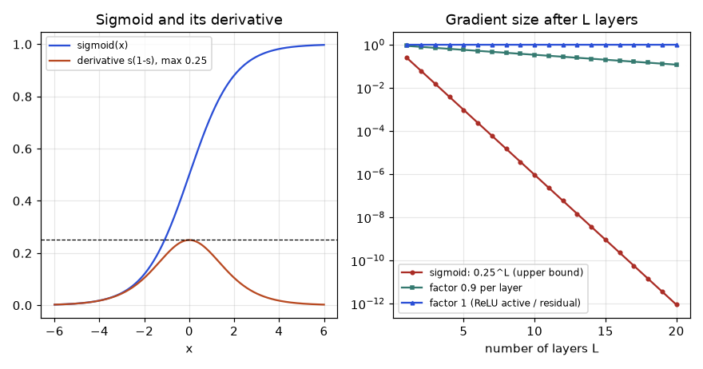
How to read it: On the right, the red line falls by 4 every layer. By layer 10 it is about 10−6 and by 20 about 10−12. The blue line stays at 1, which is the whole idea behind ReLU and residual connections.
import numpy as np
sig = lambda x: 1/(1+np.exp(-x))
x = 0.7; h = 1e-6
print(round(sig(x)*(1-sig(x)), 6), round((sig(x+h)-sig(x-h))/(2*h), 6)) # sigmoid derivative
z, y = 7.0, 5.0
print(2*(z-y)*2, 2*(z-y)*3) # dL/dw and dL/dx for x=2, w=3
zz = np.array([2., 1., 0.]); p = np.exp(zz)/np.exp(zz).sum()
print(np.round(p, 3), np.round(p - np.array([1., 0, 0]), 3)) # softmax-CE gradient (true class is the first)
print(0.25**10)
f1 = lambda t: np.exp(t) - 2*t
t = 0.0
for _ in range(2): t = t - (np.exp(t)-2)/np.exp(t)
print(round(t, 3), round(np.log(2), 3))0.221713 0.221713
8.0 12.0
[0.665 0.245 0.09 ] [-0.335 0.245 0.09 ]
9.5367431640625e-07
0.736 0.69316.5 Optimization
Chapter 14 covers the theory. These questions test whether you can explain behaviour and not just name algorithms.
Q16.5.1 Why is Adam so popular? State the update.
| Answer | It combines momentum (a running mean of gradients m) with per-parameter step scaling (a running mean of squared gradients v): m ← β1m + (1 − β1)g, v ← β2v + (1 − β2)g², then θ ← θ − η m̂/(√v̂ + ε), where m̂ and v̂ are bias-corrected. Defaults: β1 = 0.9, β2 = 0.999, ε = 10−8. Parameters with small, consistent gradients get relatively larger steps. |
|---|---|
| Follow-up | How large is the very first step? m̂ = g and v̂ = g², so the step is η g/(|g| + ε) ≈ η sign(g): size η per coordinate regardless of gradient scale. |
| Trap | Claiming Adam always generalises better. Plain SGD with momentum often wins on image tasks. Also, L2 regularisation inside Adam differs from decoupled weight decay (AdamW). |
Q16.5.2 Why does a too-large learning rate fail? How big is too big?
| Answer | On f = ½ a x², gradient descent gives x ← (1 − ηa)x. It converges only if |1 − ηa| < 1, i.e. 0 < η < 2/a. For a = 10, η = 0.21 gives a factor −1.1: the iterates flip sign and grow. η = 1/a = 0.1 lands on the minimum in one step. |
|---|---|
| Follow-up | For a general smooth loss? The same idea with a replaced by the largest Hessian eigenvalue L: guaranteed descent for η ≤ 1/L, instability beyond 2/L. |
| Trap | Remembering the threshold as 1/L. That is the safe step; divergence begins at 2/L. |
Q16.5.3 Convex versus non-convex: define and give examples.
| Answer | f is convex if f(λx + (1 − λ)y) ≤ λf(x) + (1 − λ)f(y) for λ in [0, 1]: chords lie above the graph. For smooth f, the Hessian is positive semi-definite everywhere. Every local minimum is global. Linear and logistic regression losses are convex, neural-network losses are not. |
|---|---|
| Follow-up | Show a simple non-convexity in a neural-network-like loss: f(a, b) = (ab − 1)². f(1, 1) = f(−1, −1) = 0 but the midpoint f(0, 0) = 1 > 0, violating convexity. |
| Trap | Saying convex implies a unique minimiser. A flat bottom gives many minimisers; strict convexity gives uniqueness. |
Q16.5.4 Explain L1 versus L2 regularisation geometrically.
| Answer | Constrained view: minimise the loss inside ‖w‖1 ≤ t (a diamond with corners on the axes) or ‖w‖2 ≤ t (a circle). The loss contours usually first touch the diamond at a corner, where some coordinates are exactly zero. A circle has no corners, so every weight stays nonzero. |
|---|---|
| Follow-up | Penalty view: L1 pulls with constant force λ sign(w), reaching zero in finite time. L2 pulls with force 2λw, which fades as w shrinks. Shrinking a = 0.8 and a = 0.2 with λ = 0.25: L1 soft-threshold gives 0.55 and 0; ridge a/(1 + 2λ) gives 0.533 and 0.133. |
| Trap | Promising that L1 always finds the true sparse set. With correlated features it picks one arbitrarily among them. |
Q16.5.5 Why does SGD's noise help, and why is it a problem?
| Answer | A minibatch gradient is an unbiased estimate of the full gradient with variance proportional to 1/B. The noise lets the iterate bounce out of sharp minima and saddle points and often lands in flatter minima that generalise well. It is also why SGD with constant learning rate never settles, so you decay the rate. |
|---|---|
| Follow-up | How does batch size change it? Going from B = 1 to B = 64 reduces the gradient's standard deviation by √64 = 8. |
| Trap | Thinking bigger batches are always better. They cut noise, but also cost more per step and can hurt generalisation unless you scale the learning rate. |
Q16.5.6 What does momentum do?
| Answer | v ← βv + g, θ ← θ − ηv. In a steady direction the steps add up to an effective rate η/(1 − β): ten times larger for β = 0.9. In a zig-zag direction (a narrow valley), alternating gradients cancel. |
|---|---|
| Follow-up | Why does it help a ravine? The valley floor's gradient components add, the steep walls' components cancel. |
| Trap | Forgetting the effective-rate effect. Switching to momentum without lowering η can destabilise training. |
Q16.5.7 Saddle points versus local minima: which matters more in deep learning?
| Answer | At a saddle the Hessian has both positive and negative eigenvalues, like f = x² − y² at the origin (Hessian diag(2, −2)). In high dimension a random critical point is far more likely to have some negative directions, so saddles are more common than bad local minima. Noise and momentum help leave them. |
|---|---|
| Follow-up | How do you tell them apart? The Hessian eigenvalue signs: all positive means minimum, mixed means saddle. |
| Trap | Stating this as a theorem for every network. It is a well-supported heuristic, not a guarantee. |
Q16.5.8 Compare Newton's method with gradient descent.
| Answer | Newton: θ ← θ − H−1g. It uses curvature, converges quadratically near a minimum and solves a quadratic in one step. Each step costs O(p³), and H must be positive definite. Gradient descent costs O(p) per step but needs many steps. |
|---|---|
| Follow-up | What is the compromise? Quasi-Newton methods (BFGS, L-BFGS) build a curvature estimate from gradients. |
| Trap | Using Newton on a non-convex loss without checking H: it may head to a maximum. |
Q16.5.9 Normal equation versus gradient descent for linear regression: when to use which?
| Answer | Normal equation XTXw = XTy costs O(np² + p³) and is exact; gradient descent costs O(np) per step. For p up to a few thousand, a stable solver is fine; for huge p or n, use (stochastic) gradient methods. |
|---|---|
| Follow-up | Is solving the normal equation by inverting XTX wise? No, use QR or SVD, as in 16.3. |
| Trap | Choosing GD only because it "sounds more machine-learning". |
Q16.5.10 Why does feature scaling speed up gradient descent?
| Answer | On a quadratic with Hessian eigenvalues λmax and λmin, the best fixed step is 2/(λmax + λmin) and the error shrinks by (κ − 1)/(κ + 1) per step, where κ = λmax/λmin. For κ = 100 that is 0.980 per step, about 690 steps to gain a factor 106. Standardising features brings κ close to 1. |
|---|---|
| Follow-up | Does scaling matter for tree models? No. For the normal equation? Its answer is unchanged, but conditioning of the solve improves. |
| Trap | Standardising using statistics from the test set (a leakage bug): use the training mean and standard deviation. |
Q16.5.11 Use Lagrange multipliers: maximise xy subject to x + y = 10.
| Answer | At an optimum, ∇f = λ∇g: (y, x) = λ(1, 1), so x = y, and with x + y = 10 we get x = y = 5, f = 25. |
|---|---|
| Follow-up | How does it generalise to inequality constraints? KKT conditions: multipliers are non-negative and zero for inactive constraints (complementary slackness). |
| Trap | Forgetting to check that the stationary point is a maximum and not a minimum: compare with the boundary, e.g. (10, 0) gives 0. |
Q16.5.12 Show that ridge regression is MAP estimation, and lasso too.
| Answer | With y = Xw + noise (variance σ²) and prior wi ~ N(0, τ²): −log posterior ∝ ‖y − Xw‖²/(2σ²) + ‖w‖²/(2τ²). Multiply by 2σ²: ‖y − Xw‖² + λ‖w‖² with λ = σ²/τ². A Laplace prior with scale b gives the L1 penalty with λ = 2σ²/b. |
|---|---|
| Follow-up | What does a larger λ mean for the prior? A tighter prior (smaller τ): stronger belief that weights are near zero. |
| Trap | Treating λ as unrelated to noise level. It is the noise-to-prior variance ratio. |
Q16.5.13 What are learning-rate warmup and gradient clipping for?
| Answer | Warmup raises the learning rate from near zero over the first steps, because early adaptive-optimizer statistics are noisy and early gradients are large and erratic. Clipping rescales g to g × min(1, c/‖g‖), capping the step but preserving direction, to tame exploding gradients. |
|---|---|
| Follow-up | Clip by value or by norm? By norm preserves direction; by value clips each coordinate separately and distorts it. |
| Trap | Clipping to hide a bug: a persistently clipped gradient means the model or the data needs attention. |
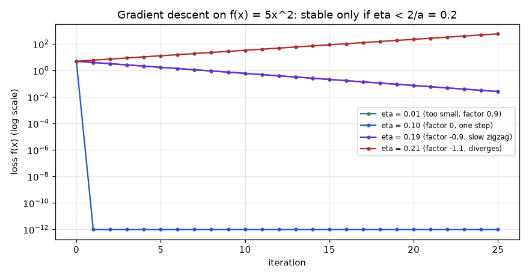
How to read it: The y-axis is logarithmic, so a straight downward line means geometric decay. The best rate (blue) hits zero in one step and drops off the chart. The rate 0.19 still converges but zig-zags in sign, while 0.21 crosses the threshold and the loss grows by a factor 1.21 per step.
How to read it: The star is the unregularised optimum. The red dot is the best point inside the constraint. On the diamond it sits at a corner on the w1 axis, so w2 = 0. On the circle it sits at a generic point with both weights nonzero.
import numpy as np
# GD on f = 0.5*a*x^2: iterations to shrink the error by 1e-6, best fixed step 2/(lmax+lmin)
for kappa in [1, 10, 100]:
lmax, lmin = float(kappa), 1.0
eta = 2/(lmax+lmin)
rate = abs(1 - eta*lmin)
steps = 1 if rate == 0 else int(np.ceil(np.log(1e-6)/np.log(rate)))
print(kappa, round(rate, 4), steps)
w = np.array([0.8, 0.2]); lam = 0.25
print(np.sign(w)*np.maximum(np.abs(w)-lam, 0), np.round(w/(1+2*lam), 4))
f = lambda a, b: (a*b - 1)**2
print(f(1, 1), f(-1, -1), f(0, 0))1 0.0 1
10 0.8182 69
100 0.9802 691
[0.55 0. ] [0.5333 0.1333]
0 0 116.6 Probability and Information Theory
Chapter 15 gives the full treatment. Statistical inference lives in the Statistics document; here is the math underneath.
Q16.6.1 What is cross-entropy? Compute it for p = (1, 0, 0) and q = (0.7, 0.2, 0.1).
| Answer | H(p, q) = −Σ pi ln qi. For a one-hot p only the true class survives: −ln 0.7 = 0.3567 nats. Using log2 gives 0.5146 bits. |
|---|---|
| Follow-up | How do cross-entropy, entropy and KL connect? H(p, q) = H(p) + KL(p‖q). With one-hot labels H(p) = 0, so cross-entropy equals KL. |
| Trap | Giving a probability of 0 to the true class: the loss is infinite. Also mixing log bases between code and hand calculation. |
Q16.6.2 Define KL divergence. Compute KL(p‖q) and KL(q‖p) for p = (0.5, 0.5), q = (0.9, 0.1).
| Answer | KL(p‖q) = Σ pi ln(pi/qi) ≥ 0, zero only if p = q. KL(p‖q) = 0.5 ln(0.5/0.9) + 0.5 ln(0.5/0.1) = 0.5(−0.5878) + 0.5(1.6094) = 0.5108. KL(q‖p) = 0.9 ln 1.8 + 0.1 ln 0.2 = 0.5290 − 0.1609 = 0.3681. |
|---|---|
| Follow-up | Which direction does maximum likelihood minimise? KL(data‖model). Forward KL is mean-seeking, reverse KL is mode-seeking. |
| Trap | Calling KL a distance. It is asymmetric and violates the triangle inequality. |
Q16.6.3 Define entropy. What is the entropy of a fair coin, a fair 8-sided die and a coin with P(heads) = 0.9?
| Answer | H = −Σ pi log2 pi bits. Fair coin 1 bit, fair 8-sided die log28 = 3 bits, biased coin −0.9 log20.9 − 0.1 log20.1 = 0.1368 + 0.3322 = 0.469 bits. |
|---|---|
| Follow-up | Which distribution on n outcomes has maximum entropy? The uniform, with log n. |
| Trap | Treating 0 log 0 as undefined. By convention it is 0, the limit. |
Q16.6.4 A disease has prevalence 1%. A test has sensitivity 90% and specificity 95%. P(disease | positive)?
| Answer | P(+) = 0.01 × 0.90 + 0.99 × 0.05 = 0.009 + 0.0495 = 0.0585. P(D | +) = 0.009 / 0.0585 = 0.1538, about 15%. |
|---|---|
| Follow-up | What does it show? With a low base rate, most positives are false. Use natural frequencies: of 10,000 people, 90 true positives and 495 false positives. |
| Trap | The base-rate fallacy: answering 90%. |
Q16.6.5 Which expectation tricks do you use most?
| Answer | Linearity: E[X + Y] = E[X] + E[Y] always, with no independence needed. Indicator variables: count fixed points of a random permutation of n items as the sum of n indicators each with probability 1/n, so the expectation is n × 1/n = 1 for every n. |
|---|---|
| Follow-up | Another example: expected number of rolls to get a six. Geometric distribution, mean 1/p = 6. |
| Trap | E[XY] = E[X]E[Y] needs uncorrelatedness, and E[1/X] ≠ 1/E[X] (Jensen's inequality for convex functions). |
Q16.6.6 Write the variance rules.
| Answer | Var(X) = E[X²] − (E[X])². Var(aX + b) = a² Var(X). Var(X + Y) = Var X + Var Y + 2 Cov(X, Y). For n iid terms, the sum has variance nσ² and the mean has variance σ²/n. |
|---|---|
| Follow-up | Variance of X − Y for independent X, Y? Var X + Var Y (variances add, never subtract). |
| Trap | Assuming Var(X + Y) = Var X + Var Y when the variables are correlated. |
Q16.6.7 Derive the MLE for a Bernoulli parameter from k successes in n trials.
| Answer | ℓ(p) = k ln p + (n − k) ln(1 − p). Set ℓ' = k/p − (n − k)/(1 − p) = 0, so k(1 − p) = (n − k)p, so p̂ = k/n. ℓ'' < 0 confirms a maximum. |
|---|---|
| Follow-up | What does this give for 7 heads in 10? 0.7. What if k = 0? p̂ = 0, which is overconfident; a Beta prior fixes it. |
| Trap | Skipping the second-derivative check, or maximising without noting the boundary cases k = 0 and k = n. |
Q16.6.8 What is the MLE of the Gaussian variance? Is it unbiased?
| Answer | μ̂ = x̄ and σ̂² = (1/n)Σ(xi − x̄)². It is biased: E[σ̂²] = (n − 1)σ²/n. Dividing by n − 1 removes the bias. |
|---|---|
| Follow-up | Why n − 1? The residuals from the sample mean satisfy one linear constraint (they sum to zero), leaving n − 1 degrees of freedom. |
| Trap | Reporting the MLE as "the" variance and being unaware that NumPy divides by n by default, while pandas divides by n − 1. |
Q16.6.9 How do MSE and log-loss arise from maximum likelihood?
| Answer | If y = f(x) + ε with ε ~ N(0, σ²), −log likelihood = Σ(y − f)²/(2σ²) + constants, so minimising squared error is MLE. If y ~ Bernoulli(p(x)), −log likelihood = −Σ[y ln p + (1 − y) ln(1 − p)], the log-loss. |
|---|---|
| Follow-up | What noise assumption gives absolute error? Laplace noise. |
| Trap | Believing MSE is chosen "because it is smooth". Its justification is Gaussian noise. |
Q16.6.10 Uncorrelated versus independent: give a counterexample.
| Answer | Independent implies uncorrelated, not the reverse. Let X ~ N(0, 1), Y = X². Cov(X, Y) = E[X³] − E[X]E[X²] = 0 − 0 = 0, but Y is a deterministic function of X. |
|---|---|
| Follow-up | Which measure detects this dependence? Mutual information. |
| Trap | Using Pearson correlation as a test of independence. |
Q16.6.11 Birthday problem: how many people before a shared birthday is more likely than not?
| Answer | Compute the complement: P(no match among k) = Πj=0k−1 (365 − j)/365. For k = 23 it is 0.4927, so the chance of a match is 0.5073. |
|---|---|
| Follow-up | Why so few? There are k(k − 1)/2 = 253 pairs, each with a 1/365 chance. |
| Trap | Computing P(match) directly. Counting "at least one" through the complement is almost always simpler. |
Q16.6.12 Monty Hall: should you switch?
| Answer | Yes. Your first pick wins with probability 1/3. The host's reveal is informed, so the other closed door carries the remaining 2/3. Switching wins 2/3. |
|---|---|
| Follow-up | Generalise to 100 doors? Host opens 98 losing doors; switching wins 99/100. |
| Trap | Saying 50-50 because two doors remain. The doors are not equally likely, since the host's action depends on your pick. |
Q16.6.13 Define mutual information.
| Answer | I(X; Y) = Σ p(x, y) ln [p(x, y)/(p(x)p(y))] = KL(joint ‖ product of marginals) = H(X) − H(X|Y). It is zero exactly when X and Y are independent and measures any dependence, not just linear. |
|---|---|
| Follow-up | Use in ML? Feature selection and the information bottleneck. |
| Trap | Equating zero correlation with zero MI; the Y = X² example has zero correlation and positive MI. |
Q16.6.14 What is perplexity?
| Answer | Perplexity = exp(cross-entropy in nats) = 2cross-entropy in bits: the effective number of equally likely choices. A uniform model over V tokens has perplexity V. Cross-entropy 2.0 nats gives e2 = 7.39. |
|---|---|
| Follow-up | Does lower perplexity always mean a better model? Only when measured on the same tokenisation and data. |
| Trap | Mixing bases: exp of a bits value or 2 to the power of a nats value gives a wrong number. |
import numpy as np
p, q = np.array([.5, .5]), np.array([.9, .1])
kl = lambda a, b: np.sum(a*np.log(a/b))
print(round(-np.log(0.7), 4), round(-np.log2(0.7), 4))
print(round(kl(p, q), 4), round(kl(q, p), 4))
h = lambda d: -np.sum(d*np.log2(d))
print(round(h(np.array([.9, .1])), 3), h(np.full(8, 1/8)))
print(round(0.009/(0.009+0.0495), 4))
k = np.arange(23); print(round(1-np.prod((365-k)/365), 4), round(np.prod((365-k)/365), 4))
rng = np.random.default_rng(0); x = rng.normal(size=200000)
print(round(np.corrcoef(x, x**2)[0, 1], 3))
print(round(np.exp(2.0), 2))0.3567 0.5146
0.5108 0.3681
0.469 3.0
0.1538
0.5073 0.4927
-0.002
7.3916.7 Mental Math and Estimation Drills
Estimation questions test whether you can sanity-check a claim in ten seconds. You need five memorised facts: 210 ≈ 1000, ln 2 ≈ 0.693, log102 ≈ 0.301, ln 10 ≈ 2.303 and √2 ≈ 1.414, √3 ≈ 1.732. Everything else is built from them. In these drills the Follow-up row is a second, harder variant, and the Trap is the usual slip.
Q16.7.1 How many distinct values fit in 32 bits?
| Answer | 232 = 230 × 4 ≈ 1.07 × 109 × 4 = 4.29 × 109 (exactly 4,294,967,296). |
|---|---|
| Follow-up | What is the largest signed 32-bit integer? 231 − 1 = 2,147,483,647. |
| Trap | Mixing up the count of values (232) with the maximum value (232 − 1). |
Q16.7.2 How long until money doubles at 6% a year?
| Answer | 72 / 6 = 12 years. Exact: ln 2 / ln 1.06 = 0.6931 / 0.05827 = 11.9 years. |
|---|---|
| Follow-up | How long to triple at 6%? Use 110/r as the rule: about 18.3 years. Exact: ln 3 / ln 1.06 = 18.85. |
| Trap | Applying the rule to a rate per month and reading the answer as years. |
Q16.7.3 Estimate log10 5000 and ln 5000.
| Answer | 5000 = 5 × 103, and log105 = 1 − log102 = 0.699, so log105000 = 3.699. Then ln 5000 = 3.699 × 2.303 = 8.52. |
|---|---|
| Follow-up | How many digits does 500010 have? 10 × 3.699 = 36.99, floor + 1 = 37 digits. |
| Trap | Writing log105 = 0.5. It is 0.699. |
Q16.7.4 Estimate √50 and √1000 without a calculator.
| Answer | √50 = 5√2 = 5 × 1.414 = 7.07. √1000 = 10√10 = 10 × 3.162 = 31.6. |
|---|---|
| Follow-up | Newton refinement for √50: take g = 7, then (g + 50/g)/2 = (7 + 7.143)/2 = 7.071. |
| Trap | Writing √(a + b) = √a + √b. For instance √(9 + 16) = 5, not 3 + 4 = 7. |
Q16.7.5 Fermi: a product has 10 million users, each producing 20 events a day. How many rows a year, and how big?
| Answer | 107 × 20 × 365 ≈ 107 × 7.3 × 103 = 7.3 × 1010 rows. At 100 bytes per row that is 7.3 × 1012 bytes = 7.3 TB. |
|---|---|
| Follow-up | Do you keep it all in a laptop? No: it needs a warehouse or columnar compression and partitioning. |
| Trap | Mixing units (bytes versus bits, thousands versus millions) and quoting the average as the peak. |
Q16.7.6 Memory for 1 million embeddings of dimension 768 in float32?
| Answer | 106 × 768 × 4 bytes = 3.07 × 109 bytes, about 3 GB. |
|---|---|
| Follow-up | In float16? Half: 1.5 GB. With 8-bit quantisation: about 0.77 GB. |
| Trap | Forgetting the bytes per number: float32 is 4 bytes, float64 is 8. |
Q16.7.7 What is 1.01365 approximately?
| Answer | ln 1.01 ≈ 0.00995, so 365 × 0.00995 = 3.632 and e3.632 ≈ 37.8. Improving 1% a day for a year multiplies by about 38. |
|---|---|
| Follow-up | And 0.99365? e−3.67 ≈ 0.0255: it shrinks to 2.5%. |
| Trap | Thinking +1% and −1% daily cancel. 1.01 × 0.99 = 0.9999 per pair, a slight loss. |
Q16.7.8 Mean 100, standard deviation 15: give a 95% range for a single observation.
| Answer | 100 ± 1.96 × 15 = 100 ± 29.4, so 70.6 to 129.4 (about 70 to 130 with the ±2σ rule). |
|---|---|
| Follow-up | What are the one-, two- and three-sigma probabilities? 68%, 95%, 99.7%. |
| Trap | Using the standard error of the mean when the question asks about one observation. |
Q16.7.9 A poll of 2500 people shows p = 0.5. Margin of error?
| Answer | SE = √(0.5 × 0.5 / 2500) = √0.0001 = 0.01. The 95% margin is about 1.96 × 0.01 ≈ 2 percentage points. |
|---|---|
| Follow-up | To halve the margin? Quadruple the sample, to 10,000, because SE scales as 1/√n. |
| Trap | Quoting 1% as the margin; that is one standard error, not 95%. |
Q16.7.10 Quick percent: price goes from 80 to 92. What is the percent increase? What is 15% of 84?
| Answer | (92 − 80)/80 = 12/80 = 15%. And 15% of 84: 10% is 8.4, 5% is 4.2, total 12.6. |
|---|---|
| Follow-up | What drop from 92 gets back to 80? 12/92 = 13.0%, not 15%. |
| Trap | Dividing by the new value instead of the original base. |
Q16.7.11 Compute 17 × 23 and 98 × 102 mentally.
| Answer | 17 × 23 = (20 − 3)(20 + 3) = 400 − 9 = 391. 98 × 102 = (100 − 2)(100 + 2) = 10,000 − 4 = 9,996. |
|---|---|
| Follow-up | Square a number ending in 5: 35² = 3 × 4 hundreds + 25 = 1225. |
| Trap | Only spotting the pattern when the two numbers are symmetric around a round number; otherwise split into tens and units. |
Q16.7.12 An algorithm does n2 operations with n = 105. Roughly how long does it run?
| Answer | n2 = 1010 operations. At about 109 simple operations per second in compiled code that is 10 seconds. In pure Python at roughly 107 per second it is about 1000 seconds. |
|---|---|
| Follow-up | And sorting 106 items, n log2 n ≈ 2 × 107? Milliseconds in compiled code. |
| Trap | Ignoring constants and language overhead: big-O is a shape, not a stopwatch. |
import numpy as np
print(2**32, 2**31 - 1)
print(round(np.log(2)/np.log(1.06), 2), round(np.log(3)/np.log(1.06), 2))
print(round(np.log10(5000), 3), round(np.log(5000), 2), len(str(5000**10)))
print(round(50**0.5, 3), round((7 + 50/7)/2, 3), round(1000**0.5, 1))
print(1e7*20*365, 1e6*768*4/1e9)
print(round(1.01**365, 2), round(0.99**365, 4))
print(100 - 1.96*15, 100 + 1.96*15, round(1.96*np.sqrt(.25/2500), 4))
print(12/80, round(12/92, 3), 17*23, 98*102)4294967296 2147483647
11.9 18.85
3.699 8.52 37
7.071 7.071 31.6
73000000000.0 3.072
37.78 0.0255
70.6 129.4 0.0196
0.15 0.13 391 999616.8 Twenty Common Pitfalls
Each pitfall has a wrong way, a right way and a short demo that you can run. All code is deterministic. Many of these are exactly the bugs an interviewer plants in a "find the bug" question.
Pitfall 1: Shape (n,) versus (n, 1)
Wrong: subtract a column vector of predictions from a flat vector of targets and take the mean. NumPy broadcasts to an n×n matrix and returns a plausible but wrong number. Right: make both the same shape first.
import numpy as np
y = np.array([1., 2., 3.]); yhat = np.array([[1.], [2.], [4.]])
print((y - yhat).shape, round(np.mean((y - yhat)**2), 4)) # wrong
print((y - yhat.ravel()).shape, round(np.mean((y - yhat.ravel())**2), 4)) # right(3, 3) 2.3333
(3,) 0.3333Pitfall 2: Transposing a product
Wrong: (AB)T = ATBT. Right: (AB)T = BTAT; the order reverses. Often the wrong version still has a legal shape, so no error is raised.
import numpy as np
rng = np.random.default_rng(0)
A, B = rng.normal(size=(2, 3)), rng.normal(size=(3, 2))
print((A @ B).T.shape, (A.T @ B.T).shape)
print(np.allclose((A @ B).T, B.T @ A.T))(2, 2) (3, 3)
TruePitfall 3: Dividing by n versus n minus 1
Wrong: assuming every library gives the sample variance. NumPy's np.var divides by n; pandas divides by n − 1. Right: set ddof explicitly.
import numpy as np, pandas as pd
x = [2, 4, 4, 4, 5, 5, 7, 9]
print(np.var(x), np.var(x, ddof=1), round(pd.Series(x).var(), 4))4.0 4.571428571428571 4.5714Pitfall 4: Normalising with the wrong statistics
Wrong: compute the mean and standard deviation on all data, test rows included. That leaks test information into training, and here it even hides the outlier (z = 2.0 instead of 87.21). Right: compute them on the training set only and reuse them for new data.
import numpy as np
train, test = np.array([1., 2., 3., 4.]), np.array([100.])
mu, sd = train.mean(), train.std()
print(round((test[0] - mu)/sd, 2)) # right: z-score of the test row under training stats
allx = np.concatenate([train, test])
print(round((test[0] - allx.mean())/allx.std(), 2)) # wrong: test row helped define the scale87.21
2.0Pitfall 5: Treating correlation as cosine similarity
Wrong: using the raw cosine of two series as their correlation. Series with a large common offset look similar. Right: centre both first.
import numpy as np
a, b = np.array([101., 102., 103.]), np.array([103., 102., 101.])
cos = a @ b / np.linalg.norm(a) / np.linalg.norm(b)
print(round(cos, 5), np.corrcoef(a, b)[0, 1])0.99987 -1.0Pitfall 6: Forgetting to centre before PCA
Wrong: run the SVD on raw data. The first direction then points at the mean, not at the direction of greatest spread. Right: subtract the column means first.
import numpy as np
rng = np.random.default_rng(1)
R = np.array([[1, 1], [-1, 1]])/np.sqrt(2) # major axis along (1, -1)
X = (rng.normal(size=(500, 2))*[3, 0.5]) @ R.T + [50, 50]
mean_dir = np.array([1, 1])/np.sqrt(2)
v_raw = np.linalg.svd(X, full_matrices=False)[2][0]
v_cen = np.linalg.svd(X - X.mean(0), full_matrices=False)[2][0]
print(round(abs(v_raw @ mean_dir), 2), round(abs(v_cen @ mean_dir), 2)) # 1 means 'points at the mean'1.0 0.01Pitfall 7: Averaging ratios instead of pooling
Wrong: averaging the conversion rates of two groups of very different size. Right: total conversions over total visitors (a weighted average).
import numpy as np
conv, n = np.array([1, 50]), np.array([10, 1000])
print(round(np.mean(conv/n), 4), round(conv.sum()/n.sum(), 4))0.075 0.0505Pitfall 8: Comparing floats with ==
Wrong: 0.1 + 0.2 == 0.3. Binary floats cannot store 0.1 exactly. Right: compare with a tolerance.
import numpy as np
print(0.1 + 0.2 == 0.3, 0.1 + 0.2 - 0.3, np.isclose(0.1 + 0.2, 0.3))False 5.551115123125783e-17 TruePitfall 9: Silent integer overflow
Wrong: doing arithmetic in a small integer type, for example 8-bit pixel values. NumPy wraps around without a warning. Right: convert to a wider type first.
import numpy as np
a = np.array([200], dtype=np.uint8); b = np.array([100], dtype=np.uint8)
print(a + b, a.astype(np.int32) + b)
print(np.array([2147483647], dtype=np.int32) + np.array([1], dtype=np.int32))[44] [300]
[-2147483648]Pitfall 10: Log of zero and log of tiny numbers
Wrong: np.log(0) gives minus infinity, and np.log(1 + x) loses accuracy for tiny x. Right: clip probabilities, and use log1p for log(1 + x).
import numpy as np
with np.errstate(divide='ignore'):
print(np.log(0.0))
x = 1e-10
print('%.10e' % np.log(1 + x), '%.10e' % np.log1p(x))-inf
1.0000000827e-10 9.9999999995e-11Pitfall 11: Softmax overflow
Wrong: exp(z) / sum(exp(z)) with large logits. Right: subtract the maximum first; the result is mathematically identical.
import numpy as np
z = np.array([1000., 1001., 1002.])
with np.errstate(over='ignore', invalid='ignore'):
print(np.exp(z) / np.exp(z).sum())
e = np.exp(z - z.max()); print(np.round(e / e.sum(), 4))[nan nan nan]
[0.09 0.2447 0.6652]Pitfall 12: Inverting to solve, and dense inverses
Wrong: inv(A) @ b. Even a sparse tridiagonal A has a completely dense inverse. Right: np.linalg.solve(A, b) (or a sparse solver).
import numpy as np
n = 6
A = 2*np.eye(n) - np.eye(n, k=1) - np.eye(n, k=-1)
print(np.count_nonzero(A), np.count_nonzero(np.round(np.linalg.inv(A), 10)))
b = np.arange(1., n + 1)
print(np.allclose(np.linalg.solve(A, b), np.linalg.inv(A) @ b))16 36
TruePitfall 13: Eigen routines for non-symmetric matrices
Wrong: expecting real, sorted eigenvalues from eig on any matrix. A rotation has complex eigenvalues. Right: for symmetric matrices (covariance), use eigh, which returns real values in ascending order.
import numpy as np
print(np.linalg.eigvals(np.array([[0., -1.], [1., 0.]])))
print(np.linalg.eigh(np.array([[2., 1.], [1., 2.]]))[0])[0.+1.j 0.-1.j]
[1. 3.]Pitfall 14: Gradient with a missing constant
Wrong: for L = mean((Xw − y)2) writing the gradient as XT(Xw − y)/n, one factor 2 short. Right: check every gradient against finite differences.
import numpy as np
rng = np.random.default_rng(2)
X, y, w = rng.normal(size=(5, 3)), rng.normal(size=5), rng.normal(size=3)
L = lambda w: np.mean((X @ w - y)**2)
g = X.T @ (X @ w - y) / 5
h = 1e-6
fd = np.array([(L(w + h*e) - L(w - h*e))/(2*h) for e in np.eye(3)])
print(np.round(fd / g, 4))[2. 2. 2.]Pitfall 15: PCA on features with different units
Wrong: running PCA on height in centimetres and income in dollars. The largest-variance unit dominates. Right: standardise first (or use the correlation matrix).
import numpy as np
rng = np.random.default_rng(3)
X = np.column_stack([rng.normal(170, 10, 1000), rng.normal(50000, 20000, 1000)])
ratio = lambda M: np.linalg.eigvalsh(np.cov(M.T))[::-1][0] / np.linalg.eigvalsh(np.cov(M.T)).sum()
print(round(ratio(X), 6), round(ratio((X - X.mean(0))/X.std(0)), 3))1.0 0.513Pitfall 16: Arithmetic mean of growth factors
Wrong: averaging +50% and −50% to say "flat". Right: use the geometric mean of the factors.
import numpy as np
f = np.array([1.5, 0.5])
print(f.mean(), round(np.exp(np.log(f).mean()), 4), f.prod())1.0 0.866 0.75Pitfall 17: Multiplying many probabilities
Wrong: the product of 200 probabilities of 0.01 is 10−400, which underflows to 0.0. Right: add logs.
import numpy as np
p = np.full(200, 0.01)
print(np.prod(p), round(np.log(p).sum(), 2))0.0 -921.03Pitfall 18: Assuming independence in a variance
Wrong: Var(X + Y) = Var X + Var Y. With Y = X, Var(2X) = 4 Var X, not 2 Var X. Right: add 2 Cov(X, Y).
import numpy as np
x = np.random.default_rng(4).normal(size=10000)
print(round(np.var(x + x) / np.var(x), 4))4.0Pitfall 19: Zero probabilities in cross-entropy
Wrong: computing −Σ p log q literally when q has a zero. 0 × log 0 is nan, though the true loss is finite when the true class has q > 0. Right: skip terms with p = 0 (and clip q if needed).
import numpy as np
p, q = np.array([1., 0.]), np.array([0.8, 0.0])
with np.errstate(divide='ignore', invalid='ignore'):
print(-np.sum(p*np.log(q)))
print(round(-np.sum(p[p > 0]*np.log(q[p > 0])), 4))nan
0.2231Pitfall 20: Centring along the wrong axis
Wrong: X - X.mean(axis=1) on a square matrix: no error, but you subtract row means from columns. Right: columns are features, so use axis=0.
import numpy as np
X = np.array([[1., 2., 3.], [4., 5., 6.], [7., 8., 10.]])
print(np.round((X - X.mean(axis=0)).mean(axis=0), 3))
print(np.round((X - X.mean(axis=1)).mean(axis=0), 3))[0. 0. 0.]
[ 2. 0. -2.]16.9 Whiteboard Derivations
Six derivations come up again and again. Learn each as a sequence of lines where every line follows from the previous one by a named rule. Notation: X is n×p (rows are examples), y is n×1, w is p×1.
A. The normal equation
Goal: minimise L(w) = ‖y − Xw‖².
Geometric reading: XT(y − Xŵ) = 0 says the residual is orthogonal to every column of X. Check with X = [[1, 1], [1, 2], [1, 3]] and y = (1, 2, 2): XTX = [[3, 6], [6, 14]], XTy = (5, 11), det = 42 − 36 = 6, so ŵ = (1/6)(14·5 − 6·11, −6·5 + 3·11) = (4/6, 3/6) = (0.6667, 0.5).
import numpy as np
X = np.array([[1., 1], [1, 2], [1, 3]]); y = np.array([1., 2, 2])
w = np.linalg.solve(X.T @ X, X.T @ y)
print(np.round(w, 4), np.round(X.T @ (y - X @ w), 10))
print(np.round(np.linalg.lstsq(X, y, rcond=None)[0], 4))[0.6667 0.5 ] [0. 0.]
[0.6667 0.5 ]B. PCA by Lagrange multipliers
Goal: find the unit direction w that maximises the variance of the projected data. For centred data with covariance matrix Σ, the variance of the projection is wTΣw.
The variance equals the eigenvalue, so choose the largest. For the next component, add the constraint of orthogonality to the first: the same argument gives the next eigenvector. Example: Σ = [[2, 1], [1, 2]] has λ = 3 with w = (1, 1)/√2 and λ = 1 with w = (1, −1)/√2. Since Σ is symmetric, the eigenvectors are orthogonal. Since Σ = V Λ VT and Σ = XTX/(n − 1) with X = UΣsVT, the same V comes out of the SVD of X (16.3).
import numpy as np
S = np.array([[2., 1.], [1., 2.]])
vals, vecs = np.linalg.eigh(S)
print(vals, np.round(np.abs(vecs[:, 1]), 4))
w = np.array([1., 1.])/np.sqrt(2); print(round(w @ S @ w, 4))[1. 3.] [0.7071 0.7071]
3.0C. Logistic regression gradient
Model: pi = σ(zi), zi = w·xi. Negative log-likelihood L = −Σ[yi ln pi + (1 − yi) ln(1 − pi)].
The Hessian is positive semi-definite for any w, because xTXTSXx = Σ si(xi·x)² ≥ 0. Newton's method on this loss is the classical iteratively reweighted least squares (IRLS) algorithm.
D. The softmax gradient
Let S = Σk ezk and pi = ezi/S. First the Jacobian of softmax.
Now the loss L = −Σi yi ln pi with y one-hot (or any distribution summing to 1).
The gradient components sum to Σp − Σy = 0, which matches the fact that adding a constant to every logit changes nothing.
E. Bayes' theorem
Example from 16.6: prior odds 0.01/0.99 = 1/99, likelihood ratio 0.90/0.05 = 18, posterior odds 18/99 = 0.1818, posterior probability 0.1818/1.1818 = 0.1538. The odds form is the fastest way to update on a test on a whiteboard.
F. Backprop for a linear layer
Forward: Z = XW + 1bT, with X of shape B×din, W of shape din×dout, b of length dout. Suppose the upstream gradient G = ∂L/∂Z (B×dout) is known. Work one entry at a time.
Shape check: each gradient has the shape of the thing it differentiates, which is the quickest way to detect a misplaced transpose. The sums over b arise because the same W and b are shared by all B examples (the multi-path chain rule).
import numpy as np
rng = np.random.default_rng(5)
B, di, do = 4, 3, 2
X, W, b = rng.normal(size=(B, di)), rng.normal(size=(di, do)), rng.normal(size=do)
T = rng.normal(size=(B, do))
loss = lambda W, b, X: 0.5*np.sum((X @ W + b - T)**2)
G = X @ W + b - T # dL/dZ for this loss
gW, gb, gX = X.T @ G, G.sum(0), G @ W.T
def num(f, A, h=1e-6):
g = np.zeros_like(A)
for i in np.ndindex(A.shape):
A[i] += h; up = f(); A[i] -= 2*h; dn = f(); A[i] += h
g[i] = (up - dn)/(2*h)
return g
print(np.allclose(gW, num(lambda: loss(W, b, X), W), atol=1e-5),
np.allclose(gb, num(lambda: loss(W, b, X), b), atol=1e-5),
np.allclose(gX, num(lambda: loss(W, b, X), X), atol=1e-5))
print(gW.shape, gb.shape, gX.shape)True True True
(3, 2) (2,) (4, 3)16.10 A 12-Week Study Plan
The plan assumes 60 to 90 minutes a day, five days a week: roughly 75 minutes times 5 times 12 = 75 hours. A typical day has four parts: 10 minutes of spaced-repetition review, 35 minutes of new reading and worked examples, 20 minutes of problems and 10 minutes of explaining one idea aloud or in writing (the four-step answer from 16.1). Friday replaces new material with the weekly self-test. If a week goes badly, repeat it on the weekend instead of pushing on: later chapters depend on earlier ones.
| Week | Chapters | Goal at the end of the week | Interview bank | Checkpoint and self-test |
|---|---|---|---|---|
| 1 | 1, 2 | Solve linear and quadratic equations, read graphs, build a function from a story | 16.2 Q1 to 6 | Practice sets of Ch 1 and 2, at least 80% in 40 min |
| 2 | 3, 4 | Use exponents and logs fluently, count with permutations and combinations, sum series | 16.2 Q7 to 13, 16.7 drills 1 to 4 | 10 log and growth problems, no calculator, in 20 min |
| 3 | 5 | Dot product, norm, angle, projection, cosine similarity by hand | 16.3 Q8, pitfall 5 | Compute cosine for 5 vector pairs, explain correlation as centred cosine |
| 4 | 6 | Matrix multiply, shapes, transformations, determinant, inverse of 2×2 | 16.3 Q4, 5, 12; pitfalls 1, 2 | Predict the output shape of 10 matrix expressions |
| 5 | 7, 8 | Solve systems, rank, null space, eigenvalues and eigenvectors of 2×2 and 3×3 | 16.3 Q1 to 3, 9, 10 | Find eigenpairs of 3 matrices by hand and verify with NumPy |
| 6 | 9 | SVD, low-rank approximation, PCA from scratch | 16.3 Q6, 7, 13, 14; derivation B | Implement PCA with SVD in under 15 lines, match scikit-learn |
| 7 | 10, 11 | Derivatives, limits, integrals, Taylor series | 16.4 Q1, 2, 10, 13 | Differentiate 10 functions in 20 min, derive sigmoid derivative |
| 8 | 12 | Gradients, Jacobians, Hessians, matrix calculus identities | 16.4 Q3, 8, 9; derivation A | Derive the MSE gradient and check shapes and finite differences |
| 9 | 13 | Chain rule on graphs, backprop by hand for a 2-layer net | 16.4 Q4 to 7, 11, 12; derivations C, D, F | Code backprop for a linear layer and pass a gradient check |
| 10 | 14 | Gradient descent, momentum, Adam, convexity, regularisation geometry | 16.5 all | Explain learning-rate failure with the 2/a rule and sketch L1 versus L2 |
| 11 | 15 | Probability rules, Bayes, expectation, MLE, entropy, KL, cross-entropy | 16.6 all; derivation E | Do 5 Bayes and 5 information problems, derive MLEs for Bernoulli and Gaussian |
| 12 | 16, 17 | Mock interviews, pitfall review, the project lab | 16.7, 16.8, 16.11 | Two timed mock interviews (use the prompt pack), diagnostic score 18 or more |
How to read it: Each row is a week. Weeks 3 to 6 are the heaviest block (vectors to SVD), so protect your weekend slack there. Weeks 7 to 9 are the calculus chain that leads to backpropagation.
Spaced repetition
You forget most of a new fact within days unless you revisit it just before it fades. The Leitner scheme uses boxes with growing gaps. A new card goes in box 1 and is reviewed the next day. Each correct answer moves it to the next box (gaps of 1, 3, 7, 14 and 30 days after the previous review); a wrong answer sends it back to box 1.
- What goes on a card: one formula to derive, one definition to state in a sentence, one trap or one number to estimate. Front: a question ("Gradient of softmax cross-entropy?"). Back: the answer plus the one-line reason. Do not copy whole paragraphs.
- How many: about 15 new cards a week, so around 180 by week 12. Review is capped at 10 minutes a day; if the pile exceeds that, suspend new cards for a day.
- Rule for derivations: hide the answer and write the derivation on paper before flipping the card.
- Source of cards: every Trap row in this chapter, every red callout in earlier chapters and every self-test question you missed.
import datetime as dt
start = dt.date(2026, 11, 9) # a Monday
gaps = [1, 3, 7, 14, 30]
day, when = start, []
for g in gaps:
day = day + dt.timedelta(days=g)
when.append(day.isoformat())
print(start.strftime('%A'), when)
print(75*5*12/60, 'hours in 12 weeks;', 15*12, 'cards')Monday ['2026-11-10', '2026-11-13', '2026-11-20', '2026-12-04', '2027-01-03']
75.0 hours in 12 weeks; 180 cardsFree resources and what to use each for
| Resource | Best for | How to use it | Pairs with |
|---|---|---|---|
| 3Blue1Brown (YouTube series: Essence of Linear Algebra, Essence of Calculus, Neural Networks) | Geometric intuition: what a matrix, determinant, eigenvector or derivative looks like | Watch one video before the chapter; pause and redraw the picture; do not treat it as a substitute for problems | Ch 5 to 9, 10 to 13 |
| Khan Academy (algebra, precalculus, probability) | Filling school-level gaps with instant-feedback exercises | Take the course unit test, redo only the skills marked not mastered | Ch 1 to 4, 15 |
| MIT OpenCourseWare 18.06 (Linear Algebra, Gilbert Strang) | Rigorous but friendly linear algebra with lectures, problem sets and exams | Watch lectures on rank, null space, eigenvalues and SVD; attempt each problem set cold; use the exams as timed self-tests | Ch 5 to 9 |
| MIT OpenCourseWare 18.01 (Single Variable Calculus) | Derivatives, integrals, Taylor series with problem sets and exams | Use the early lectures on derivatives and the chain rule; skip heavy integration technique unless you need it | Ch 10, 11 |
| Mathematics for Machine Learning (Deisenroth, Faisal, Ong; free PDF) | The same topics as this document written for ML, with an optimisation and probability bridge | Read the chapter after you finish the matching chapter here; do its exercises for extra practice | Ch 5 to 15 |
| Gilbert Strang, Introduction to Linear Algebra and Linear Algebra and Learning from Data | The big picture of matrices, plus SVD and backprop connections | Use as reference when a concept is unclear; the second book links SVD and deep learning | Ch 6 to 9, 13 |
16.11 Self-Assessment: 20 Diagnostic Questions
Take this closed-book, no calculator, in 30 minutes. Write your answers before reading mine. Each question is tagged with the chapter that teaches it.
D1 Solve 3x − 7 = 2x + 5. (Ch 1)
Answer: x = 12. Subtract 2x from both sides: x − 7 = 5, then add 7.
D2 Compute log28 + log2(1/4). (Ch 3)
Answer: 3 + (−2) = 1.
D3 A deposit grows 10% a year. What is the factor after 5 years? (Ch 3)
Answer: 1.15 = 1.6105.
D4 How many ways to choose 2 items from 6? (Ch 4)
Answer: C(6, 2) = 6 × 5 / 2 = 15.
D5 Compute (1, 2, 3)·(4, −5, 6). (Ch 5)
Answer: 4 − 10 + 18 = 12.
D6 Multiply [[1, 2], [3, 4]] by [[0, 1], [1, 0]]. (Ch 6)
Answer: [[2, 1], [4, 3]]. Right-multiplying by the swap matrix swaps the columns.
D7 Find the determinant of [[2, 1], [5, 3]]. (Ch 6)
Answer: 2·3 − 1·5 = 1.
D8 What is the rank of [[1, 2, 3], [2, 4, 6], [1, 0, 1]]? (Ch 7)
Answer: 2. Row 2 is twice row 1, and row 3 is not a multiple of row 1.
D9 Eigenvalues of [[3, 1], [0, 2]]? (Ch 8)
Answer: 3 and 2 (a triangular matrix has its diagonal entries as eigenvalues).
D10 A is 3×5. What shape and maximum rank has ATA? (Ch 6, 9)
Answer: 5×5 with rank at most 3.
D11 Singular values of [[3, 0], [0, −2]]? (Ch 9)
Answer: 3 and 2: singular values are non-negative, so the sign is absorbed in U or V.
D12 Differentiate x2ex. (Ch 10)
Answer: Product rule: 2xex + x2ex = (2x + x2)ex.
D13 Derivative of ln(1 + x2) at x = 1? (Ch 10, 13)
Answer: 2x/(1 + x2) = 2/2 = 1.
D14 Evaluate ∫01 3x2 dx. (Ch 11)
Answer: [x3] from 0 to 1 = 1.
D15 Gradient of f = x2 + 3xy at (1, 2)? (Ch 12)
Answer: (2x + 3y, 3x) = (2 + 6, 3) = (8, 3).
D16 d/dx (2x + 1)3 at x = 0? (Ch 13)
Answer: 3(2x + 1)2 × 2 = 3 × 1 × 2 = 6.
D17 One gradient descent step on f = x2 from x = 4 with η = 0.1? (Ch 14)
Answer: f' = 8, so x = 4 − 0.8 = 3.2.
D18 Sigmoid at 0 and its derivative there? (Ch 13)
Answer: 0.5 and 0.5 × 0.5 = 0.25.
D19 P(A) = 0.2, P(B|A) = 0.5, P(B|not A) = 0.1. Find P(A|B). (Ch 15)
Answer: P(B) = 0.1 + 0.08 = 0.18, so P(A|B) = 0.1/0.18 = 0.5556.
D20 Entropy in bits of a fair four-sided die? (Ch 15)
Answer: log24 = 2 bits.
import numpy as np
print(1.1**5, 15, np.dot([1, 2, 3], [4, -5, 6]))
print(np.array([[1, 2], [3, 4]]) @ np.array([[0, 1], [1, 0]]), np.linalg.det(np.array([[2, 1], [5, 3]])).round(4))
print(np.linalg.matrix_rank(np.array([[1, 2, 3], [2, 4, 6], [1, 0, 1]])), np.linalg.eigvals(np.array([[3., 1.], [0., 2.]])))
print(np.linalg.svd(np.array([[3., 0.], [0., -2.]]))[1])
print(round(0.1/0.18, 4), np.log2(4), 4 - 0.1*8)1.6105100000000006 15 12
[[2 1]
[4 3]] 1.0
2 [3.+0.j 2.+0.j]
[3. 2.]
0.5556 2.0 3.2Scoring guide
| Score | Meaning | What to do |
|---|---|---|
| 0 to 9 | Foundations are shaky | Start the plan at week 1 and follow it fully; add 15 minutes of Khan Academy a day for two weeks |
| 10 to 14 | Some gaps, usually in the middle chapters | Use the block scores below to choose weeks to repeat, then run weeks 5 to 12 |
| 15 to 17 | Solid, interview-ready with polish | Review only the blocks where you lost points, then do weeks 11 and 12 plus daily drills from 16.7 and 16.8 |
| 18 to 20 | Strong | Spend the time on mock interviews, derivations (16.9) and Chapter 17 |
| Questions | Topic block | If you missed 2 or more, review |
|---|---|---|
| D1 to D4 | Algebra, logs, counting | Chapters 1 to 4 |
| D5 to D11 | Vectors, matrices, eigenvalues, SVD | Chapters 5 to 9 |
| D12 to D14 | Derivatives and integrals | Chapters 10 and 11 |
| D15 to D18 | Multivariable calculus, backprop, optimisation | Chapters 12 to 14 |
| D19 to D20 | Probability and information | Chapter 15 |
Chapter recap
- Interviews sample your understanding with six formats: concept, calculation, derivation, estimation, debugging and scenario. Answer with the four steps: plain sentence, tiny example, why it matters, limit.
- Algebra and logs: logs turn products into sums (and underflow into safe numbers), the rule of 72 is ln 2/r corrected, and compounding multiplies factors rather than adding percentages.
- Linear algebra: rank counts independent directions, det is signed volume, the trace is the sum of eigenvalues, SVD exists for every matrix and PCA is the SVD of centred data.
- Avoid explicit inverses when solving; use factorisations and watch the condition number κ = σmax/σmin.
- Calculus: σ' = σ(1 − σ) ≤ 0.25 explains vanishing gradients, and the softmax or sigmoid with cross-entropy both give the clean gradient p − y.
- Optimisation: gradient descent on a quadratic with curvature a is stable only for η < 2/a; Adam rescales per parameter; L1 gives corners (sparsity), L2 gives smooth shrinkage.
- Probability: Bayes needs the base rate, expectation is linear without independence, and MLE under Gaussian noise gives MSE while Bernoulli gives log-loss.
- Information theory: H(p, q) = H(p) + KL(p‖q); KL is asymmetric; perplexity is exp of cross-entropy in nats.
- Estimation needs a few memorised constants (210 ≈ 1000, ln 2 ≈ 0.693, log102 ≈ 0.301, √2 ≈ 1.414).
- Most bugs are shape and axis confusion, wrong normalisation, floating-point limits or statistical shortcuts; check with tiny examples, assertions and finite-difference gradients.
- A steady 75 minutes a day for 12 weeks with spaced repetition and weekly self-tests is enough to reach interview-ready.
| Formula / pattern | Meaning |
|---|---|
| ŵ = (XTX)−1XTy | Least squares; residual orthogonal to the columns of X |
| ∇ MSE = (2/n)XT(Xw − y) | Gradient for linear regression, shape of w |
| ∂L/∂z = p − y | Gradient of sigmoid or softmax with cross-entropy w.r.t. logits |
| σ' = σ(1 − σ) | Maximum 0.25; source of vanishing gradients |
| 0 < η < 2/a | Stability range of gradient descent on ½ax² |
| Σw = λw | PCA directions are eigenvectors of the covariance matrix |
| H(p, q) = H(p) + KL(p‖q) | Cross-entropy decomposition |
| posterior odds = prior odds × LR | Fast Bayes update |
| ∂L/∂W = XTG, ∂L/∂X = GWT | Backprop through a linear layer |
Practice set
The interview bank above has more than 80 questions, so this practice set is a shorter graded mix. Try each before reading the answer.
Problem 16.12.1 At 9% a year, estimate the doubling time with the rule of 72 and exactly.
Answer: 72/9 = 8 years. Exact: ln 2/ln 1.09 = 0.6931/0.0862 = 8.04 years.
Problem 16.12.2 Compute the cosine similarity of (3, 4) and (4, 3).
Answer: Dot product = 12 + 12 = 24. Norms are 5 and 5. cos = 24/25 = 0.96.
Problem 16.12.3 For L = (wx − y)² with x = 3, w = 2, y = 4, find dL/dw and dL/dx.
Answer: r = wx − y = 2. dL/dw = 2r·x = 2 × 2 × 3 = 12. dL/dx = 2r·w = 2 × 2 × 2 = 8.
Problem 16.12.4 Entropy in bits of the distribution (0.5, 0.25, 0.25).
Answer: 0.5 × 1 + 0.25 × 2 + 0.25 × 2 = 1.5 bits.
Problem 16.12.5 Find the bug: var = sum((x - x.mean())**2) / len(x) is used as the sample variance of 8 points.
Answer: It divides by n, giving the population-style (maximum likelihood) variance. The sample variance divides by n − 1. For the 8 values in Pitfall 3 that is 32/8 = 4.0 versus 32/7 = 4.571. Fix: divide by len(x) − 1, or call np.var(x, ddof=1).
Problem 16.12.6 What does this print? A = np.array([[1, 2], [3, 4]]); print(A.T @ A)
Answer: AT = [[1, 3], [2, 4]]. The product has entries [[1+9, 2+12], [2+12, 4+16]] = [[10, 14], [14, 20]], symmetric, as ATA always is.
Problem 16.12.7 Gradient descent on f = 2x² (so a = 4) uses η = 0.6. Does it converge?
Answer: Update factor 1 − ηa = 1 − 2.4 = −1.4, with magnitude above 1, so it diverges. The threshold is 2/a = 0.5.
Problem 16.12.8 A disease has prevalence 2%, the test sensitivity is 95% and the specificity is 90%. Find P(disease | positive).
Answer: P(+) = 0.02 × 0.95 + 0.98 × 0.10 = 0.019 + 0.098 = 0.117. P(D | +) = 0.019/0.117 = 0.1624, about 16%.
Problem 16.12.9 Show that the softmax cross-entropy gradient p − y sums to zero, and say why that is expected.
Answer: Σ(pj − yj) = 1 − 1 = 0. Softmax is unchanged when a constant is added to every logit, so the loss is constant along that direction and its gradient has no component there.
Problem 16.12.10 Estimate the memory for 50 million vectors of dimension 384 in float32.
Answer: 5 × 107 × 384 × 4 bytes = 7.68 × 1010 bytes, about 77 GB.
Problem 16.12.11 Matrix [[4, 2], [2, 1]]: eigenvalues, rank and one eigenvector.
Answer: Trace 5, det 4 − 4 = 0, so eigenvalues 5 and 0. A zero eigenvalue means rank 1. For λ = 5: A(2, 1) = (8 + 2, 4 + 1) = (10, 5) = 5(2, 1).
Problem 16.12.12 Interview-style: explain L1 versus L2 regularisation to a manager in under a minute.
Answer: Plain sentence: both penalise large weights to prevent overfitting; L1 uses the sum of absolute values, L2 the sum of squares. Example: with a weight of 0.2 and strength 0.25, L1 pushes it to exactly 0 while L2 only shrinks it to 0.13. Why it matters: L1 selects a smaller set of features, L2 keeps all but small. Limit: with correlated features L1 picks one arbitrarily, and the strength must be tuned by validation.
import numpy as np
print(round(np.log(2)/np.log(1.09), 2), 24/25, 2*2*3, 2*2*2)
print(-(0.5*np.log2(0.5) + 2*0.25*np.log2(0.25)))
A = np.array([[1, 2], [3, 4]]); print(A.T @ A)
print(round(0.019/0.117, 4), 5e7*384*4/1e9)
print(np.linalg.eigvalsh(np.array([[4., 2.], [2., 1.]])).round(4))8.04 0.96 12 8
1.5
[[10 14]
[14 20]]
0.1624 76.8
[0. 5.]Prompt pack
You are my patient, practical professor. I am a working professional moving into data roles, preparing for math questions in data science and ML interviews. Quiz me one question at a time on: logs and growth, linear algebra (rank, eigenvectors, SVD versus PCA, positive definiteness), calculus and backprop (sigmoid derivative, MSE and log-loss gradients), optimisation (Adam, learning-rate stability 2/a, L1 versus L2) and probability and information theory (Bayes, cross-entropy, KL, MLE). Start easy and get harder only when I answer correctly. After each answer say what is right, what is missing, and the trap I should avoid. Ask me to restate it in four steps: plain sentence, tiny example, why it matters, limit. Keep a running score and finish with the three topics I should review.
You are a careful reviewer of my math work for data and ML interviews. I will paste a derivation (for example the normal equation, softmax gradient or backprop through a linear layer) or a piece of NumPy code. Check every line: name the rule used, check shapes, check constants such as factors of 2 and 1/n, check n versus n-1 and axis choices. Point out the first mistake only, explain why it is wrong with a small numeric example, then let me try to fix it before showing the corrected version. If it is all correct, suggest one follow-up question an interviewer might ask and one trap I should mention.
Act as a technical interviewer for a data scientist or ML engineer role. Run a 30-minute mock interview on the math: two estimation questions (Fermi, powers of two, rule of 72), two derivations on a whiteboard (I will type each line), three concept questions with follow-ups and one find-the-bug code snippet about shapes, normalisation or numerical stability. Time me, do not give hints until I ask, and when I make a mistake wait to see if I self-correct. At the end give a score from 1 to 5 for correctness, clarity, depth under follow-up and handling of mistakes, plus a list of five specific things to practise next week.
Imagine you are in a final-round interview. The interviewer says: "You list PCA on your CV. Without a library, how would you compute it, and how would you know your answer is right?" Many candidates freeze here. They know PCA(n_components=3).fit_transform(X), but not what sits behind it. A candidate who has built PCA from a covariance matrix, checked it against the SVD and against scikit-learn, and written down the explained variance, answers in thirty seconds, and the room relaxes.
This chapter is your project lab. Over the previous sixteen chapters you met vectors, matrices, eigenvalues, the SVD, derivatives, backpropagation, optimisation and probability. Here you will use them to build five small tools with nothing but NumPy: PCA, linear and ridge regression, a neural network, PageRank and a matrix-factorisation toolkit for images and recommendations. Every project uses synthetic data generated in code with fixed seeds (nothing to download), every code block runs on its own, and every result is checked against a reference.
After this chapter you will have five repositories that each prove a different skill, a README template that makes them readable in two minutes, a way of talking about them in interviews, and a four-week schedule to finish the lot. The maths is not repeated here: each project says which earlier chapters to reread if a step feels unfamiliar.
17.1 How to run a math-from-scratch project
The five-step loop
Every project in this chapter follows the same loop, and you should reuse it for any project of your own.
- Define "correct" first. Write down what you will compare against: a library (scikit-learn, SciPy), a closed-form identity (the sum of eigenvalues equals the trace), or a numerical check (finite differences for a gradient). Do this before writing the algorithm.
- Generate data you control. Synthetic data lets you plant a known structure (three hidden customer traits, a known coefficient vector, a rank-3 rating matrix) and then check that your method recovers it. Fix a seed so every run prints the same numbers.
- Build in small, testable pieces. One function per idea. Run it on a tiny example you can verify by hand.
- Verify, then experiment. First check agreement with the reference. Only then vary things (learning rate, damping, rank, regularisation) and record what happens.
- Write it up. A results table, one or two figures, and a README that says what you did, what you found and what you would do next.
The environment
All code uses NumPy. Where a reference is needed we use scikit-learn or SciPy, which you can install with pip install numpy scipy scikit-learn matplotlib. The reference is used only to check your work, never inside your own algorithm. Every block seeds its random numbers, so your output should match the printed output exactly. Differences at the 1e-15 level can change between machines, so agreement checks print True for a threshold (for example "below 1e-10") rather than the raw difference.
np.allclose(mine, reference) or a relative error below 1e-7. A plot can look fine while a sign, a transpose or a factor of n−1 versus n is wrong.17.2 Project 1: PCA from scratch on a customer dataset
Goal and portfolio value
Build principal component analysis three ways (covariance matrix with eigh, SVD of the data matrix, and scikit-learn as the reference), compute explained variance, reconstruct the data from a few components, and apply it to a 10-feature synthetic customer table. The portfolio value is high because PCA is the standard interview probe for linear algebra: it touches covariance, eigenvectors, the SVD, and the trade-off between compression and information loss.
The maths you need
- Chapter 5 (Vectors and Geometry): projection of a vector onto a direction, dot products.
- Chapter 6 (Matrices): the matrix product as a change of coordinates.
- Chapter 8 (Eigenvalues and Special Matrices): symmetric matrices have real eigenvalues and orthogonal eigenvectors.
- Chapter 9 (SVD, PCA): singular values σ and covariance eigenvalues λ are linked by λ = σ²/(n−1).
Here Z is the data matrix with n rows (customers) and 10 columns, each column centred and scaled to standard deviation 1, C is its covariance matrix (which for standardised data is the correlation matrix), vi are the principal directions and λi the variance along each.
By hand first
Problem 17.2.1 Two standardised features have correlation 0.8. Find the principal components and the share of variance on the first one. Then reconstruct the point z = (1.0, 0.6) from one component.
| Setup | C = [[1, 0.8], [0.8, 1]]. Solve det(C − λI) = (1 − λ)² − 0.64 = 0. |
|---|---|
| Eigenvalues | 1 − λ = ±0.8, so λ = 1.8 and λ = 0.2. Sum = 2 = trace, as it must be. |
| Eigenvectors | For 1.8: (C − 1.8I)v = 0 gives −0.8v₁ + 0.8v₂ = 0, so v = (1, 1)/√2. For 0.2: v = (1, −1)/√2. |
| Share | 1.8 / 2 = 90% on PC1, 10% on PC2. |
| Score of z | z·v₁ = (1.0 + 0.6)/√2 = 1.1314. The second score is (1.0 − 0.6)/√2 = 0.2828. |
| Rank-1 rebuild | 1.1314 × (0.7071, 0.7071) = (0.8, 0.8). Error = (0.2, −0.2), length 0.2828, equal to the dropped second score, as the geometry says. |
Dataset
We invent 500 customers described by 10 features. Behind them sit three hidden traits: value (how much they spend), engagement (how often they use the product) and loyalty (how long they have been with you). Each feature is a weighted mix of the traits plus noise, then given its own raw units (dollars, minutes, days) so that standardising is essential. Because we planted three traits, a correct PCA should find about three important components.
import numpy as np
rng = np.random.default_rng(7)
n = 500
names = ["monthly_spend", "orders", "avg_basket", "discount_use", "site_visits",
"session_min", "app_opens", "tenure_months", "account_days", "support_tickets"]
# three hidden traits: value (0), engagement (1), loyalty (2)
L = np.array([[0.9, 0.1, 0.0], [0.7, 0.4, 0.0], [0.8, -0.3, 0.0], [-0.3, 0.2, 0.1],
[0.1, 0.9, 0.0], [0.0, 0.8, 0.1], [0.1, 0.85, -0.1], [0.0, 0.1, 0.95],
[0.0, 0.1, 0.95], [0.1, 0.2, 0.4]])
F = rng.normal(size=(n, 3))
X = F @ L.T + 0.4 * rng.normal(size=(n, 10))
units = np.array([120, 8, 35, 0.2, 20, 15, 30, 24, 730, 2]) # make raw units differ
X = 50 + X * units # raw customer table
print("shape:", X.shape)
print("raw std of first 4 columns:", np.round(X.std(axis=0, ddof=1)[:4], 1))
Z = (X - X.mean(axis=0)) / X.std(axis=0, ddof=1) # standardise
print("Z mean ~ 0:", np.allclose(Z.mean(axis=0), 0), "| Z std = 1:", np.allclose(Z.std(axis=0, ddof=1), 1))
R = np.corrcoef(X, rowvar=False)
print("corr(tenure_months, account_days) =", round(R[7, 8], 3))
print("corr(monthly_spend, orders) =", round(R[0, 1], 3))
print("corr(monthly_spend, site_visits) =", round(R[0, 4], 3))shape: (500, 10)
raw std of first 4 columns: [1.178e+02 6.900e+00 3.250e+01 1.000e-01]
Z mean ~ 0: True | Z std = 1: True
corr(tenure_months, account_days) = 0.835
corr(monthly_spend, orders) = 0.752
corr(monthly_spend, site_visits) = 0.117Two features, tenure_months and account_days, are measuring the same thing (correlation 0.835). Real customer tables are full of such near-duplicates, and PCA is the tool that notices them.
Build step 1: PCA with the covariance matrix
Standardise, form C, call eigh (the routine for symmetric matrices; it returns eigenvalues in ascending order, so you must reverse them) and read off the variance shares.
import numpy as np
rng = np.random.default_rng(7)
n = 500
names = ["monthly_spend", "orders", "avg_basket", "discount_use", "site_visits",
"session_min", "app_opens", "tenure_months", "account_days", "support_tickets"]
L = np.array([[0.9, 0.1, 0.0], [0.7, 0.4, 0.0], [0.8, -0.3, 0.0], [-0.3, 0.2, 0.1],
[0.1, 0.9, 0.0], [0.0, 0.8, 0.1], [0.1, 0.85, -0.1], [0.0, 0.1, 0.95],
[0.0, 0.1, 0.95], [0.1, 0.2, 0.4]])
F = rng.normal(size=(n, 3))
X = 50 + (F @ L.T + 0.4 * rng.normal(size=(n, 10))) * np.array([120, 8, 35, 0.2, 20, 15, 30, 24, 730, 2])
Z = (X - X.mean(axis=0)) / X.std(axis=0, ddof=1)
C = Z.T @ Z / (n - 1) # covariance of standardised data = correlation matrix
vals, vecs = np.linalg.eigh(C) # eigh: for symmetric matrices, ascending order
order = np.argsort(vals)[::-1] # largest first
vals, vecs = vals[order], vecs[:, order]
ratio = vals / vals.sum()
print("eigenvalues :", np.round(vals, 3))
print("sum of eigenvalues:", round(vals.sum(), 6), "(= number of features)")
print("explained ratio :", np.round(ratio, 3))
print("cumulative :", np.round(np.cumsum(ratio), 3))
print("components with eigenvalue > 1 (Kaiser):", int((vals > 1).sum()))
print("\nloadings (columns = PC1, PC2, PC3)")
for name, row in zip(names, vecs[:, :3]):
print(f"{name:15s}", np.round(row, 2))
print("\northonormal columns:", np.allclose(vecs.T @ vecs, np.eye(10)))eigenvalues : [3.485 2.693 2.115 0.5 0.314 0.218 0.186 0.174 0.165 0.151]
sum of eigenvalues: 10.0 (= number of features)
explained ratio : [0.348 0.269 0.212 0.05 0.031 0.022 0.019 0.017 0.017 0.015]
cumulative : [0.348 0.618 0.829 0.879 0.911 0.932 0.951 0.968 0.985 1. ]
components with eigenvalue > 1 (Kaiser): 3
loadings (columns = PC1, PC2, PC3)
monthly_spend [-0.14 0.55 0.01]
orders [-0.29 0.43 0.12]
avg_basket [ 0.05 0.55 -0.11]
discount_use [-0.18 -0.43 0.06]
site_visits [-0.44 -0.06 0.28]
session_min [-0.45 -0.1 0.22]
app_opens [-0.41 -0.01 0.36]
tenure_months [-0.26 -0.07 -0.55]
account_days [-0.28 -0.07 -0.53]
support_tickets [-0.38 0.03 -0.37]
orthonormal columns: TrueThe first three eigenvalues (3.49, 2.69, 2.12) are far above the rest, and the fourth is 0.50. That gap is the planted structure showing through the noise. Together the three components carry 82.9% of the variance. Reading the loadings, PC1 weights site visits, session minutes and app opens (engagement, the sign is arbitrary), PC2 weights spend, orders and basket size and subtracts discount use (value), PC3 weights tenure and account age (loyalty).
account_days has a standard deviation of hundreds and discount_use of about 0.1, so the first component would just be "account_days". Right: standardise first (subtract the mean, divide by the standard deviation), unless all features are already in the same unit and their scale carries meaning. Also remember that eigh sorts ascending.Build step 2: the SVD route and the reference check
Never form ZᵀZ if you can avoid it: squaring the matrix squares its condition number. The SVD of Z gives the same directions directly (rows of Vᵀ) and the same variances (σ²/(n−1)).
import numpy as np
rng = np.random.default_rng(7)
n = 500
names = ["monthly_spend", "orders", "avg_basket", "discount_use", "site_visits",
"session_min", "app_opens", "tenure_months", "account_days", "support_tickets"]
L = np.array([[0.9, 0.1, 0.0], [0.7, 0.4, 0.0], [0.8, -0.3, 0.0], [-0.3, 0.2, 0.1],
[0.1, 0.9, 0.0], [0.0, 0.8, 0.1], [0.1, 0.85, -0.1], [0.0, 0.1, 0.95],
[0.0, 0.1, 0.95], [0.1, 0.2, 0.4]])
F = rng.normal(size=(n, 3))
X = 50 + (F @ L.T + 0.4 * rng.normal(size=(n, 10))) * np.array([120, 8, 35, 0.2, 20, 15, 30, 24, 730, 2])
Z = (X - X.mean(axis=0)) / X.std(axis=0, ddof=1)
from sklearn.decomposition import PCA
# --- PCA by SVD of the standardised data matrix ---
U, S, Vt = np.linalg.svd(Z, full_matrices=False)
eig_from_svd = S**2 / (n - 1) # eigenvalues of the covariance matrix
C = Z.T @ Z / (n - 1)
eig_from_eigh = np.sort(np.linalg.eigvalsh(C))[::-1]
print("max |SVD eig - eigh eig| : below 1e-10:", np.abs(eig_from_svd - eig_from_eigh).max() < 1e-10)
scores = Z @ Vt.T # coordinates in the new axes
print("variance of scores = eig :", np.allclose(scores.var(axis=0, ddof=1), eig_from_svd))
print("scores uncorrelated :", np.allclose(np.corrcoef(scores, rowvar=False), np.eye(10), atol=1e-8))
# --- reconstruction with k components ---
print("\n k rel. error (direct) rel. error (from S) variance kept")
for k in range(1, 7):
Zk = scores[:, :k] @ Vt[:k]
direct = np.linalg.norm(Z - Zk) / np.linalg.norm(Z)
from_s = np.sqrt((S[k:] ** 2).sum() / (S**2).sum())
print(f"{k:2d} {direct:17.4f} {from_s:19.4f} {1 - from_s**2:13.3f}")
# --- compare with scikit-learn ---
sk = PCA(n_components=10).fit(Z)
print("\nmax |ratio diff| vs sklearn: below 1e-10:", np.abs(sk.explained_variance_ratio_ - eig_from_svd / eig_from_svd.sum()).max() < 1e-10)
print("max |abs(components) diff| : below 1e-10:", np.abs(np.abs(sk.components_) - np.abs(Vt)).max() < 1e-10)max |SVD eig - eigh eig| : below 1e-10: True
variance of scores = eig : True
scores uncorrelated : True
k rel. error (direct) rel. error (from S) variance kept
1 0.8072 0.8072 0.348
2 0.6183 0.6183 0.618
3 0.4132 0.4132 0.829
4 0.3474 0.3474 0.879
5 0.2989 0.2989 0.911
6 0.2600 0.2600 0.932
max |ratio diff| vs sklearn: below 1e-10: True
max |abs(components) diff| : below 1e-10: TrueEverything agrees to machine precision. The scores (coordinates in the new axes) are uncorrelated and their variances equal the eigenvalues, which is the defining property of PCA. The reconstruction error from k components computed directly equals the error predicted from the discarded singular values, which previews the Eckart-Young theorem used in Project 5.
abs of the components with a reference, never the raw signs.Results and figure
| Components kept | Variance kept | Relative reconstruction error | Comment |
|---|---|---|---|
| 1 | 34.8% | 0.807 | engagement only |
| 2 | 61.8% | 0.618 | plus value |
| 3 | 82.9% | 0.413 | plus loyalty: the planted structure |
| 4 | 87.9% | 0.347 | the remainder is mostly noise |
| 6 | 93.2% | 0.260 | diminishing returns |
How to read it: the cliff after bar 3 is the evidence that three hidden traits exist. The scatter shows that a 10-dimensional customer can be located with three numbers. Always show the scree plot in your README, because it justifies the number of components you chose.
Extensions
- Choose k automatically with the Kaiser rule (eigenvalue above 1) and with a 90% variance rule, and compare.
- Add outliers and compare PCA with a robust version (trim the largest-norm rows).
- Implement incremental PCA (process data in batches) or randomised SVD.
- Whiten the scores (divide each by σ) and show their covariance is the identity.
- Use the scores in a classifier and report accuracy against the original 10 features.
What to write in your README
- One paragraph: the problem (compress 10 correlated features) and the three methods.
- The formula chain: standardise, covariance, eigen-decomposition, projection, reconstruction.
- The verification table (max difference from NumPy SVD and scikit-learn) and the scree plot.
- One honest limitation: PCA is linear, sensitive to scaling and to outliers, and components are hard to interpret when loadings are mixed.
Interview questions to be ready for
- Why eigenvectors of the covariance matrix? The variance of the data along a unit direction v is vᵀCv. Maximising it subject to |v| = 1 gives the eigenvector with the largest eigenvalue; the next direction is the best one orthogonal to it.
- PCA by SVD versus by covariance? Same answer; the SVD is numerically safer because it avoids squaring the condition number, and it works when n is smaller than the number of features.
- Do you scale first? Yes when units differ. Otherwise the largest-unit feature dominates.
- How many components? Look at the scree plot, a variance threshold, and cross-validated downstream performance.
- Why can signs of components differ between libraries? If v is an eigenvector then so is −v; the choice is arbitrary.
17.3 Project 2: Linear and ridge regression, three ways
Goal and portfolio value
Fit a linear regression by the normal equation, by QR factorisation and by gradient descent (plus lstsq as a check), study how the learning rate decides whether gradient descent converges, then add ridge regularisation and plot the whole regularisation path. The portfolio value: you show that you know a regression is a linear algebra problem, an optimisation problem and a bias-variance trade-off at the same time.
The maths you need
- Chapter 6 and 7 (Matrices, Linear Systems): solving Ax = b, least squares as projection.
- Chapter 9 (SVD): the pseudo-inverse and the condition number.
- Chapter 12 (Multivariable and Matrix Calculus): the gradient of the squared error is XᵀXw − Xᵀy.
- Chapter 14 (Optimization): gradient descent, step size and the Hessian eigenvalues.
Problem 17.3.1 Fit y = a + b·x to the points (1, 2), (2, 3), (3, 5) with the normal equation, then with ridge λ = 2 on the centred data, and take one gradient step.
| Matrices | X = [[1,1],[1,2],[1,3]], XᵀX = [[3, 6], [6, 14]], Xᵀy = [10, 23]. |
|---|---|
| Inverse | det = 3·14 − 6·6 = 6, so (XᵀX)⁻¹ = (1/6)[[14, −6], [−6, 3]]. |
| Solve | w = (1/6)(14·10 − 6·23, −6·10 + 3·23) = (1/6)(2, 9) = (0.3333, 1.5). So y = 0.333 + 1.5x. |
| Ridge | Centre x: (−1, 0, 1), centre y (mean 3.333): (−1.333, −0.333, 1.667). Sxx = 2, Sxy = 1.333 + 1.667 = 3. Slope = 3/(2 + λ) = 3/4 = 0.75, half the OLS slope of 1.5 (shrink factor 2/(2+2)). |
| Gradient step | On centred data with loss (1/2n)Σ(wx − y)², the gradient at w = 0 is −Sxy/n = −3/3 = −1. With step 0.1: w = 0.1. The Hessian is Sxx/n = 2/3, so each step multiplies the error by 1 − 0.1·(2/3) = 0.9333. |
| Steps needed | 1.5 × 0.9333t < 10−6 needs t ≈ ln(1.5×106)/(−ln 0.9333) = 14.22/0.0690 ≈ 206 steps. |
Dataset
We generate 8 correlated features (pairwise correlation about 0.8, the typical trouble for regression), a known coefficient vector with three exactly-zero entries, an intercept of 5 and noise with standard deviation 3. We keep only 25 training rows and 500 test rows, a small-sample setting where ridge should help. The best any model can do on the test set is a root-mean-square error (RMSE) near 3, the noise level.
Build step 1: three solvers and a reference
import numpy as np
rng = np.random.default_rng(11)
n_train, n_test, p = 25, 500, 8
shared = rng.normal(size=(n_train + n_test, 1))
X = 0.9 * shared + 0.45 * rng.normal(size=(n_train + n_test, p)) # correlated features (r about 0.8)
beta_true = np.array([3.0, -2.0, 0.0, 0.0, 1.5, 0.0, 0.0, -1.0])
y = 5.0 + X @ beta_true + 3.0 * rng.normal(size=n_train + n_test)
Xtr, ytr, Xte, yte = X[:n_train], y[:n_train], X[n_train:], y[n_train:]
from scipy.linalg import solve_triangular
from sklearn.linear_model import LinearRegression
A = np.column_stack([np.ones(n_train), Xtr]) # design matrix with intercept column
# 1) normal equation: (A^T A) w = A^T y
w_ne = np.linalg.solve(A.T @ A, A.T @ ytr)
# 2) QR: A = QR, then R w = Q^T y (back substitution)
Q, R = np.linalg.qr(A)
w_qr = solve_triangular(R, Q.T @ ytr)
# 3) SVD-based least squares
w_ls = np.linalg.lstsq(A, ytr, rcond=None)[0]
print("intercept + coefficients (normal eq):", np.round(w_ne, 3))
print("max diff QR vs normal : below 1e-10:", np.abs(w_qr - w_ne).max() < 1e-10)
print("max diff lstsq vs QR : below 1e-10:", np.abs(w_ls - w_qr).max() < 1e-10)
sk = LinearRegression().fit(Xtr, ytr)
print("max diff vs sklearn : below 1e-10:", np.abs(np.r_[sk.intercept_, sk.coef_] - w_ne).max() < 1e-10)
print("\ncond(A) =", round(np.linalg.cond(A), 2))
print("cond(A^T A) =", round(np.linalg.cond(A.T @ A), 2), "(about cond(A) squared)")
rmse = lambda w, Xm, ym: np.sqrt(np.mean((np.column_stack([np.ones(len(Xm)), Xm]) @ w - ym) ** 2))
print("\ntrain RMSE:", round(rmse(w_ls, Xtr, ytr), 3), "| test RMSE:", round(rmse(w_ls, Xte, yte), 3))
# a nastier case: two almost identical columns
rng2 = np.random.default_rng(0)
a = rng2.normal(size=200)
B = np.column_stack([a, a + 1e-7 * rng2.normal(size=200)])
w_true = np.array([1.0, 2.0])
yb = B @ w_true
w_n = np.linalg.solve(B.T @ B, B.T @ yb)
Qb, Rb = np.linalg.qr(B)
w_q = solve_triangular(Rb, Qb.T @ yb)
print("\nnearly collinear: cond(B) > 1e6:", np.linalg.cond(B) > 1e6)
print("normal-equation error larger than QR error:", np.abs(w_n - w_true).max() > np.abs(w_q - w_true).max())intercept + coefficients (normal eq): [ 5.401 3.976 0.06 0.943 -1.376 -0.499 2.338 0.027 -2.805]
max diff QR vs normal : below 1e-10: True
max diff lstsq vs QR : below 1e-10: True
max diff vs sklearn : below 1e-10: True
cond(A) = 9.83
cond(A^T A) = 96.65 (about cond(A) squared)
train RMSE: 3.003 | test RMSE: 3.753
nearly collinear: cond(B) > 1e6: True
normal-equation error larger than QR error: TrueAll three solvers and scikit-learn agree to better than 1e-10 (in practice about 1e-14). The condition number of XᵀX is almost exactly the square of the condition number of X (96.65 against 9.83², which is 96.6), which is why QR and the SVD are preferred. The nearly collinear demo at the end shows this is not academic: with two columns that differ by 1e-7 the normal equation produces a larger error than QR. The gap between train RMSE (3.00) and test RMSE (3.75) is overfitting: 9 parameters from 25 points.
w = np.linalg.inv(X.T @ X) @ X.T @ y as the default. It is slower, needs an invertible matrix, and squares the condition number. Right: np.linalg.lstsq(X, y, rcond=None) or QR. Use solve rather than inv whenever you only need to apply an inverse.Build step 2: gradient descent and the learning-rate study
For the squared-error loss the Hessian is XᵀX/n. Its largest eigenvalue L sets the stability limit (step size must be below 2/L) and the ratio of largest to smallest eigenvalue sets the speed. We standardise the features and centre y so the intercept disappears, then run descent at several learning rates and count the steps needed to land within 1e-6 of the exact answer.
import numpy as np
rng = np.random.default_rng(11)
n_train, n_test, p = 25, 500, 8
shared = rng.normal(size=(n_train + n_test, 1))
X = 0.9 * shared + 0.45 * rng.normal(size=(n_train + n_test, p)) # correlated features (r about 0.8)
beta_true = np.array([3.0, -2.0, 0.0, 0.0, 1.5, 0.0, 0.0, -1.0])
y = 5.0 + X @ beta_true + 3.0 * rng.normal(size=n_train + n_test)
Xtr, ytr, Xte, yte = X[:n_train], y[:n_train], X[n_train:], y[n_train:]
mu, sd = Xtr.mean(axis=0), Xtr.std(axis=0)
Xs = (Xtr - mu) / sd # standardised, so no intercept needed after centring y
yc = ytr - ytr.mean()
w_exact = np.linalg.lstsq(Xs, yc, rcond=None)[0]
H = Xs.T @ Xs / n_train # Hessian of (1/2n)||Xw - y||^2
eigs = np.linalg.eigvalsh(H)
L_, mu_ = eigs.max(), eigs.min()
print("largest / smallest Hessian eigenvalue:", round(L_, 3), "/", round(mu_, 3))
print("stable if lr < 2/L =", round(2 / L_, 3), "| best fixed lr = 2/(L+mu) =", round(2 / (L_ + mu_), 3))
def gd(lr, steps=5000, tol=1e-6):
w = np.zeros(p)
for t in range(1, steps + 1):
grad = Xs.T @ (Xs @ w - yc) / n_train
w = w - lr * grad
if not np.isfinite(w).all() or np.linalg.norm(w) > 1e6:
return "diverged", t
if np.linalg.norm(w - w_exact) < tol:
return "converged", t
return "not yet", steps
print("\n lr verdict steps")
for lr in [0.01, 0.05, 0.2, 0.5, 2 / (L_ + mu_), 0.99 * 2 / L_, 1.01 * 2 / L_]:
verdict, t = gd(lr)
print(f"{lr:6.3f} {verdict:10s} {t:6d}")largest / smallest Hessian eigenvalue: 6.195 / 0.077
stable if lr < 2/L = 0.323 | best fixed lr = 2/(L+mu) = 0.319
lr verdict steps
0.010 not yet 5000
0.050 converged 2834
0.200 converged 704
0.500 diverged 19
0.319 converged 547
0.320 converged 674
0.326 diverged 709The results match the theory in Chapter 14. Below 2/L = 0.323 descent converges, and the best fixed step 2/(L+μ) = 0.319 needs 547 steps. At 0.326, only 1% above the limit, the iterates slowly blow up (diverged after 709 steps). At 0.01 we are stable but far too slow. The fastest possible fixed-step rate is still slow because the eigenvalues are 6.2 and 0.077, a condition number of about 80: the correlated features create a long, narrow valley.
Build step 3: ridge, its path, and cross-validation
Ridge adds λ|w|² to the loss, which shifts every eigenvalue of XᵀX up by λ. With the SVD X = UΣVᵀ the solution is w = V diag(σ/(σ²+λ)) Uᵀy: directions with small σ are shrunk the most. The sum of σ²/(σ²+λ) is the effective number of parameters ("degrees of freedom"). We choose λ by 5-fold cross-validation on the training set only, never on the test set.
import numpy as np
rng = np.random.default_rng(11)
n_train, n_test, p = 25, 500, 8
shared = rng.normal(size=(n_train + n_test, 1))
X = 0.9 * shared + 0.45 * rng.normal(size=(n_train + n_test, p)) # correlated features (r about 0.8)
beta_true = np.array([3.0, -2.0, 0.0, 0.0, 1.5, 0.0, 0.0, -1.0])
y = 5.0 + X @ beta_true + 3.0 * rng.normal(size=n_train + n_test)
Xtr, ytr, Xte, yte = X[:n_train], y[:n_train], X[n_train:], y[n_train:]
from sklearn.linear_model import Ridge
mu, sd = Xtr.mean(axis=0), Xtr.std(axis=0)
Xs, Xt = (Xtr - mu) / sd, (Xte - mu) / sd
ym = ytr.mean()
yc = ytr - ym
U, s, Vt = np.linalg.svd(Xs, full_matrices=False)
def ridge(lam):
"""w = V diag(s / (s^2 + lam)) U^T y -- same as (X^T X + lam I)^-1 X^T y"""
return Vt.T @ ((s / (s**2 + lam)) * (U.T @ yc))
# check against the textbook formula and scikit-learn
lam = 10.0
w_formula = np.linalg.solve(Xs.T @ Xs + lam * np.eye(p), Xs.T @ yc)
sk = Ridge(alpha=lam).fit(Xs, ytr)
print("SVD vs formula : below 1e-10:", np.abs(ridge(lam) - w_formula).max() < 1e-10)
print("SVD vs sklearn : below 1e-10:", np.abs(ridge(lam) - sk.coef_).max() < 1e-10)
# 5-fold cross-validation on the training set only
folds = np.array_split(np.arange(n_train), 5)
def cv_rmse(lam):
errs = []
for f in folds:
keep = np.setdiff1d(np.arange(n_train), f)
Xa, ya = Xs[keep], ytr[keep]
xm, ymn = Xa.mean(axis=0), ya.mean()
w = np.linalg.solve((Xa - xm).T @ (Xa - xm) + lam * np.eye(p), (Xa - xm).T @ (ya - ymn))
errs.append(np.mean((ymn + (Xs[f] - xm) @ w - ytr[f]) ** 2))
return np.sqrt(np.mean(errs))
lams = [0.01, 1, 10, 30, 100, 300, 1000]
print("\n lambda df test RMSE cv RMSE coefficients (first 4)")
for lam in lams:
w = ridge(lam)
df = (s**2 / (s**2 + lam)).sum()
test = np.sqrt(np.mean((ym + Xt @ w - yte) ** 2))
print(f"{lam:7.2f} {df:4.2f} {test:8.3f} {cv_rmse(lam):8.3f} {np.round(w[:4], 2)}")
best = min(lams, key=cv_rmse)
print("\nlambda chosen by cross-validation:", best)SVD vs formula : below 1e-10: True
SVD vs sklearn : below 1e-10: True
lambda df test RMSE cv RMSE coefficients (first 4)
0.01 7.98 3.750 4.366 [ 3.75 0.06 0.58 -1.19]
1.00 6.77 3.571 4.105 [ 2.9 0.04 0.49 -0.73]
10.00 3.47 3.488 3.908 [1.1 0.1 0.33 0.05]
30.00 2.02 3.494 3.873 [0.58 0.15 0.27 0.17]
100.00 1.02 3.452 3.924 [0.29 0.14 0.18 0.15]
300.00 0.49 3.469 4.061 [0.14 0.09 0.1 0.09]
1000.00 0.18 3.550 4.193 [0.05 0.04 0.04 0.04]
lambda chosen by cross-validation: 30Results and figure
| Model | Effective parameters | Train/CV RMSE | Test RMSE |
|---|---|---|---|
| OLS (all 8 features + intercept) | 9 | 3.00 train | 3.75 |
| Ridge λ = 1 | 6.8 + 1 | 4.11 CV | 3.57 |
| Ridge λ = 30 (chosen by CV) | 2.0 + 1 | 3.87 CV | 3.49 |
| Ridge λ = 1000 | 0.2 + 1 | 4.19 CV | 3.55 |
| Noise floor (true model) | - | - | about 3.0 |
How to read it: on the left, straight lines on a log axis mean geometric convergence, and a steeper line is a better step size, until you cross 2/L and the curve shoots up. On the right, every coefficient glides to zero as λ grows. The large, unstable coefficients (x1 and x6 up, x8 and x4 down, partners in the correlated block that cancel each other) shrink first, which is exactly the stabilising effect we want. The cross-validation curve has a shallow minimum, so do not over-interpret one value of λ.
Extensions
- Add the lasso (L1) penalty with coordinate descent and compare the path with ridge.
- Implement gradient descent with momentum and compare step counts on the same problem.
- Add polynomial features and show ridge taming a degree-10 fit.
- Compute standard errors from (XᵀX)⁻¹σ² and compare with a bootstrap (see the Statistics document).
- Use
np.linalg.svdto show that ridge is "OLS with shrunken singular directions".
What to write in your README
- The three solvers in a table with the maximum difference between them and scikit-learn.
- The learning-rate table, with the formula 2/L, and an explanation of why 0.326 fails.
- The regularisation path figure and the chosen λ with how it was chosen.
- One caveat: with correlated features, individual coefficients are unstable, so interpret groups, not single coefficients.
Interview questions to be ready for
- Derive the normal equation. Minimise |y − Xw|²; set the gradient −2Xᵀ(y − Xw) to zero.
- When does XᵀX fail to be invertible? When columns are linearly dependent (more features than rows, duplicated features). Ridge makes XᵀX + λI invertible for any λ > 0.
- Why does ridge help when features are correlated? It shrinks the directions with small variance, where the estimate is noisiest, trading a little bias for a large drop in variance.
- What limits the learning rate? 2 divided by the largest Hessian eigenvalue for a quadratic loss.
- Why not choose λ on the test set? That leaks test information, so the reported error is optimistic.
17.4 Project 3: A neural network from scratch on the two-moons task
Goal and portfolio value
Build a fully connected network (two hidden layers, tanh units, a sigmoid output) in plain NumPy: forward pass, backpropagation, a numerical gradient check, mini-batch training with momentum and with Adam, and a decision boundary plot. Few projects impress as much, because backpropagation is exactly where "I used Keras" and "I understand it" part ways.
The maths you need
- Chapter 6 (Matrices): a layer is a matrix product plus a bias.
- Chapter 10 and 11 (Derivatives): the derivative of tanh is 1 − tanh², and finite differences approximate derivatives.
- Chapter 12 (Matrix Calculus): the gradient of the cross-entropy loss with respect to the logit.
- Chapter 13 (Chain Rule and Backpropagation): the backward recursion.
- Chapter 14 (Optimization): momentum and Adam. Chapter 15: cross-entropy as negative log-likelihood.
Here m is the batch size, δl is the gradient of the loss with respect to the pre-activation of layer l, ⊙ is element-wise multiplication, and the clean (p − y) form is the reason sigmoid is paired with cross-entropy.
Problem 17.4.1 One neuron: x = 2, w = 0.5, b = 0.1, target y = 1, sigmoid output, cross-entropy loss. Find the loss and the gradients of w and b. Then compute the first Adam step if the learning rate is 0.01.
| Forward | z = wx + b = 0.5·2 + 0.1 = 1.1. p = σ(1.1) = 1/(1 + e−1.1) = 1/(1 + 0.3329) = 0.7503. |
|---|---|
| Loss | −ln(0.7503) = 0.2873. |
| Backward | ∂loss/∂z = p − y = −0.2497. ∂loss/∂w = (p − y)·x = −0.4995. ∂loss/∂b = −0.2497. |
| Adam, step 1 | m = 0.1g, v = 0.001g². Bias-corrected: m̂ = m/(1 − 0.9) = g, v̂ = v/(1 − 0.999) = g². Update = lr·g/(|g| + 10−8) ≈ lr·sign(g) = 0.01. |
| Meaning | The first Adam step moves every parameter by about the learning rate, whatever the gradient size. For w the gradient is negative, so w rises to 0.51. |
Dataset
Two interleaving half-circles ("moons") generated with NumPy: the upper half of the unit circle for class 0 and a shifted, flipped copy for class 1, plus Gaussian noise of 0.25. A straight line cannot separate them, so a linear model tops out below 90% while a small network should do much better. We use 400 training and 200 test points, standardised with training statistics.
import numpy as np
def make_moons(n, noise, rng):
t = rng.uniform(0, np.pi, n // 2)
upper = np.column_stack([np.cos(t), np.sin(t)])
lower = np.column_stack([1 - np.cos(t), 0.5 - np.sin(t)])
X = np.vstack([upper, lower]) + noise * rng.normal(size=(n, 2))
y = np.r_[np.zeros(n // 2), np.ones(n // 2)]
return X, y
rng = np.random.default_rng(3)
X, y = make_moons(600, 0.25, rng)
idx = rng.permutation(600)
tr, te = idx[:400], idx[400:]
mu, sd = X[tr].mean(axis=0), X[tr].std(axis=0)
Xtr, ytr, Xte, yte = (X[tr] - mu) / sd, y[tr], (X[te] - mu) / sd, y[te]
print("train/test sizes:", len(Xtr), len(Xte))
print("class balance (train):", ytr.mean().round(3))
print("train mean:", Xtr.mean(axis=0).round(3), "std:", Xtr.std(axis=0).round(3))
print("first 3 points:\n", Xtr[:3].round(3), "labels", ytr[:3])train/test sizes: 400 200
class balance (train): 0.518
train mean: [-0. -0.] std: [1. 1.]
first 3 points:
[[-0.917 0.772]
[-1.19 0.655]
[-0.955 0.006]] labels [0. 0. 1.]Build step 1: the network and the gradient check
The whole model is three small functions. Parameters are a list of [W, b] pairs, forward returns every layer's activation (needed by the backward pass), and loss_and_grads runs the backward recursion from the formulas above. The loss uses np.logaddexp(0, z) − y·z, a numerically stable form of the cross-entropy that never takes the log of zero. Before training, we test the gradients with central finite differences, (L(θ+ε) − L(θ−ε))/2ε, on a tiny batch.
import numpy as np
def init(sizes, rng):
"""Weights ~ N(0, 1/fan_in) (Xavier-style for tanh), biases 0."""
return [[rng.normal(size=(a, b)) / np.sqrt(a), np.zeros(b)] for a, b in zip(sizes[:-1], sizes[1:])]
def forward(params, X):
acts = [X]
for W, b in params[:-1]:
acts.append(np.tanh(acts[-1] @ W + b)) # hidden layers
W, b = params[-1]
logits = acts[-1] @ W + b # output layer: logit
return acts, logits[:, 0]
def loss_and_grads(params, X, y):
acts, z = forward(params, X)
m = len(y)
loss = np.mean(np.logaddexp(0, z) - y * z) # stable binary cross-entropy
dz = ((1 / (1 + np.exp(-z))) - y)[:, None] / m # dLoss/dlogit = (p - y)/m
grads = [None] * len(params)
for i in range(len(params) - 1, -1, -1):
W, b = params[i]
grads[i] = [acts[i].T @ dz, dz.sum(axis=0)] # dW, db
if i > 0:
dz = (dz @ W.T) * (1 - acts[i] ** 2) # back through tanh: 1 - tanh^2
return loss, grads
def flat(params):
return np.concatenate([a.ravel() for layer in params for a in layer])
def set_flat(params, v):
k = 0
for layer in params:
for a in layer:
a[...] = v[k:k + a.size].reshape(a.shape); k += a.size
rng = np.random.default_rng(0)
X = rng.normal(size=(20, 2)); y = (rng.random(20) > 0.5).astype(float)
params = init([2, 8, 8, 1], rng)
loss, grads = loss_and_grads(params, X, y)
g_analytic = np.concatenate([a.ravel() for layer in grads for a in layer])
# numerical gradient by central differences
v0, eps = flat(params), 1e-6
g_numeric = np.zeros_like(v0)
for i in range(len(v0)):
vp, vm = v0.copy(), v0.copy(); vp[i] += eps; vm[i] -= eps
set_flat(params, vp); lp = loss_and_grads(params, X, y)[0]
set_flat(params, vm); lm = loss_and_grads(params, X, y)[0]
g_numeric[i] = (lp - lm) / (2 * eps)
rel = np.linalg.norm(g_analytic - g_numeric) / (np.linalg.norm(g_analytic) + np.linalg.norm(g_numeric))
print("parameters:", len(v0), "| initial loss:", round(loss, 4), "(ln 2 = 0.6931)")
print("log10 of relative error:", round(np.log10(rel)))
print("gradient check passed:", rel < 1e-7)
# what a bug looks like: first-layer weight gradient wrong by a factor 1.3
bad = g_analytic.copy(); bad[:16] *= 1.3
print("log10 of relative error with a wrong first-layer gradient:", round(np.log10(np.linalg.norm(bad - g_numeric) / (np.linalg.norm(bad) + np.linalg.norm(g_numeric))), 1))parameters: 105 | initial loss: 0.6843 (ln 2 = 0.6931)
log10 of relative error: -9
gradient check passed: True
log10 of relative error with a wrong first-layer gradient: -1.5The relative error is about 1e-9 (log10 = −9), far below the 1e-7 threshold, so the backward pass is correct. The last line shows what a bug looks like: scaling one layer's gradient by 1.3 gives about 10−1.5 = 3e-2, seven and a half orders of magnitude worse. The initial loss 0.684 is close to ln 2 = 0.693, the loss of a model that outputs 0.5 for everything, which is the right starting point for balanced classes.
Build step 2: mini-batch training with momentum and Adam
Each epoch shuffles the data, splits it into batches of 32 and updates the parameters after each batch. Momentum keeps a running velocity v ← 0.9v + g and steps by −lr·v. Adam keeps running averages of the gradient and of its square, corrects their start-up bias, and divides the step by √v̂. We train the same architecture (2 → 16 → 16 → 1, 337 parameters) with the same seed under four settings, and compare with logistic regression from scikit-learn as a baseline.
import numpy as np
from sklearn.linear_model import LogisticRegression
def make_moons(n, noise, rng):
t = rng.uniform(0, np.pi, n // 2)
upper = np.column_stack([np.cos(t), np.sin(t)])
lower = np.column_stack([1 - np.cos(t), 0.5 - np.sin(t)])
X = np.vstack([upper, lower]) + noise * rng.normal(size=(n, 2))
return X, np.r_[np.zeros(n // 2), np.ones(n // 2)]
rng = np.random.default_rng(3)
X, y = make_moons(600, 0.25, rng)
idx = rng.permutation(600)
tr, te = idx[:400], idx[400:]
mu, sd = X[tr].mean(axis=0), X[tr].std(axis=0)
Xtr, ytr, Xte, yte = (X[tr] - mu) / sd, y[tr], (X[te] - mu) / sd, y[te]
def init(sizes, rng):
"""Weights ~ N(0, 1/fan_in) (Xavier-style for tanh), biases 0."""
return [[rng.normal(size=(a, b)) / np.sqrt(a), np.zeros(b)] for a, b in zip(sizes[:-1], sizes[1:])]
def forward(params, X):
acts = [X]
for W, b in params[:-1]:
acts.append(np.tanh(acts[-1] @ W + b)) # hidden layers
W, b = params[-1]
logits = acts[-1] @ W + b # output layer: logit
return acts, logits[:, 0]
def loss_and_grads(params, X, y):
acts, z = forward(params, X)
m = len(y)
loss = np.mean(np.logaddexp(0, z) - y * z) # stable binary cross-entropy
dz = ((1 / (1 + np.exp(-z))) - y)[:, None] / m # dLoss/dlogit = (p - y)/m
grads = [None] * len(params)
for i in range(len(params) - 1, -1, -1):
W, b = params[i]
grads[i] = [acts[i].T @ dz, dz.sum(axis=0)] # dW, db
if i > 0:
dz = (dz @ W.T) * (1 - acts[i] ** 2) # back through tanh: 1 - tanh^2
return loss, grads
def train(opt, lr, epochs=150, batch=32, seed=1):
rng = np.random.default_rng(seed)
params = init([2, 16, 16, 1], rng)
vel = [[np.zeros_like(a) for a in layer] for layer in params] # momentum / Adam m
sq = [[np.zeros_like(a) for a in layer] for layer in params] # Adam v
t, history = 0, []
for epoch in range(1, epochs + 1):
perm = rng.permutation(len(Xtr))
for s in range(0, len(Xtr), batch):
b = perm[s:s + batch]
_, grads = loss_and_grads(params, Xtr[b], ytr[b])
t += 1
for i, layer in enumerate(params):
for j, a in enumerate(layer):
g = grads[i][j]
if opt == "momentum":
vel[i][j] = 0.9 * vel[i][j] + g
a -= lr * vel[i][j]
else: # adam
vel[i][j] = 0.9 * vel[i][j] + 0.1 * g
sq[i][j] = 0.999 * sq[i][j] + 0.001 * g**2
mh, vh = vel[i][j] / (1 - 0.9**t), sq[i][j] / (1 - 0.999**t)
a -= lr * mh / (np.sqrt(vh) + 1e-8)
if epoch in (1, 10, 50, 150):
history.append((epoch, loss_and_grads(params, Xtr, ytr)[0]))
acc = lambda Xm, ym: np.mean((forward(params, Xm)[1] > 0) == ym)
return history, acc(Xtr, ytr), acc(Xte, yte)
print("optimiser loss@1 loss@10 loss@50 loss@150 train acc test acc")
for name, opt, lr in [("SGD+momentum 0.01", "momentum", 0.01), ("SGD+momentum 0.05", "momentum", 0.05),
("Adam 0.01", "adam", 0.01), ("Adam 0.05", "adam", 0.05)]:
h, atr, ate = train(opt, lr)
print(f"{name:19s} " + " ".join(f"{l:7.3f}" for _, l in h) + f" {atr:8.3f} {ate:8.3f}")
lr_model = LogisticRegression().fit(Xtr, ytr)
print("\nlogistic regression baseline: train", round(lr_model.score(Xtr, ytr), 3), "| test", round(lr_model.score(Xte, yte), 3))optimiser loss@1 loss@10 loss@50 loss@150 train acc test acc
SGD+momentum 0.01 0.438 0.239 0.215 0.084 0.968 0.940
SGD+momentum 0.05 0.245 0.219 0.076 0.069 0.975 0.930
Adam 0.01 0.255 0.206 0.077 0.068 0.973 0.930
Adam 0.05 0.271 0.115 0.062 0.046 0.980 0.930
logistic regression baseline: train 0.892 | test 0.87All four optimisers reach a train accuracy of 0.97 to 0.98 and a test accuracy of 0.93 to 0.94, compared with 0.87 for logistic regression, so the hidden layers are doing real work. Adam at 0.05 gets the lowest training loss but not a better test score: the gap of 0.03 to 0.05 between train and test accuracy is early overfitting, and with 200 test points a difference of 0.01 is within noise (one point is 0.5%). The loss curve at epoch 1 shows why Adam is popular: with a learning rate of 0.01 it has already reached 0.255 while momentum at the same rate is at 0.438.
Results and figure
| Model | Loss at epoch 150 | Train accuracy | Test accuracy |
|---|---|---|---|
| Logistic regression (baseline) | - | 0.892 | 0.870 |
| SGD + momentum, lr 0.01 | 0.084 | 0.968 | 0.940 |
| SGD + momentum, lr 0.05 | 0.069 | 0.975 | 0.930 |
| Adam, lr 0.01 | 0.068 | 0.973 | 0.930 |
| Adam, lr 0.05 | 0.046 | 0.980 | 0.930 |
How to read it: the boundary is smooth and wraps the curved gap, which a straight line cannot do. A few crosses on the wrong side show the remaining errors, which are caused by the noise in the data and cannot all be removed. The loss curves flatten near 0.07, and the small spikes are the noise of mini-batch updates.
init. Also evaluate on held-out data, not on the training batch.Extensions
- Switch to the two-spirals dataset (angle t, radius t, two arms offset by π) and find the width and depth needed to reach 95%.
- Add ReLU, a softmax output for 3 classes, and L2 weight decay.
- Add learning-rate decay and early stopping on a validation split.
- Record the gradient norm per layer to show the vanishing gradient problem with a deep sigmoid network.
- Compare with scikit-learn's
MLPClassifierand discuss any difference.
What to write in your README
- The forward and backward formulas, derived for one layer.
- The gradient-check result (relative error) and the single bug it caught, if any did.
- An optimiser comparison table with the number of seeds used (run several and report the mean and spread if you can).
- The boundary plot, and a sentence about overfitting you actually observed.
Interview questions to be ready for
- Why does backpropagation work? It is the chain rule applied from the output backwards, reusing each layer's δ to get the one before it, so the cost is about that of a forward pass.
- Why is the gradient of sigmoid plus cross-entropy simply p − y? The σ′ factor in the derivative of the sigmoid cancels the 1/p and 1/(1 − p) factors from the log loss.
- What does a gradient check tell you, and why not use it for training? It confirms the analytic gradient; it is O(parameters) forward passes, far too slow for training.
- How does Adam differ from momentum? Per-parameter scaling by the running RMS of the gradient plus bias correction.
- What happens with a learning rate that is too high? The loss oscillates or diverges; the same 2/L stability story as in regression.
17.5 Project 4: PageRank and Markov-chain analysis of a 12-page web
Goal and portfolio value
Rank the pages of a small web with the original Google idea, computed three ways (power iteration, a linear solve and the eigenvector of the Google matrix), then study how the damping factor changes the ranking, the speed of convergence and the random-surfer interpretation. The portfolio value: it is a single, elegant story that ties together matrices, eigenvectors, linear systems and Markov chains, and it shows you can handle a dangling-node edge case.
The maths you need
- Chapter 6 (Matrices): matrix-vector products as "spreading" a quantity over a graph.
- Chapter 7 (Linear Systems): solving (I − dP)x = b.
- Chapter 8 (Eigenvalues): the eigenvalue 1 and the size of the second eigenvalue control convergence of power iteration.
- Chapter 15 (Markov Chains): stationary distribution, expected return time 1/π.
P is the column-stochastic link matrix (column i spreads page i's score equally over the pages it links to), d is the damping factor (the probability that the random surfer follows a link rather than teleporting), n = 12, and 1 is a vector of ones.
Problem 17.5.1 Three pages: A links to B and C, B links to C, C links to A. Take d = 0.85 and compute the PageRank by hand.
| Equations | xA = 0.85 xC + 0.05, xB = 0.425 xA + 0.05, xC = 0.425 xA + 0.85 xB + 0.05 (since 0.15/3 = 0.05). |
|---|---|
| Substitute B | xC = 0.425 xA + 0.85(0.425 xA + 0.05) + 0.05 = 0.78625 xA + 0.0925. |
| Solve A | xA = 0.85(0.78625 xA + 0.0925) + 0.05 = 0.66831 xA + 0.12863, so xA = 0.12863/0.33169 = 0.3878. |
| Others | xB = 0.425·0.3878 + 0.05 = 0.2148. xC = 0.78625·0.3878 + 0.0925 = 0.3974. |
| Check | 0.3878 + 0.2148 + 0.3974 = 1.0000. C ranks first although A links to it with only half its weight, because B passes all of its score to C. Expected return time to C = 1/0.3974 = 2.52 steps. |
Dataset
A hand-built 12-page web (pages A to L). Page C is a hub that many pages link to, there are two small communities, and page L has no outgoing links (a dangling node, or "sink"). If you leave a dangling node as an all-zero column, the surfer vanishes and the scores no longer sum to 1; the standard fix is to let the surfer jump to a uniformly random page from there.
import numpy as np
labels = list("ABCDEFGHIJKL")
edges = [(0, 1), (0, 2), (1, 2), (1, 3), (2, 0), (3, 2), (3, 4), (4, 2), (4, 5), (5, 4), (5, 6),
(6, 2), (6, 7), (7, 8), (8, 9), (9, 7), (9, 10), (10, 2), (10, 11), (8, 2)] # L (11) has no out-links
n = 12
A = np.zeros((n, n))
for i, j in edges:
A[j, i] = 1 # column i = where page i links to
out_deg = A.sum(axis=0)
P = np.where(out_deg > 0, A / np.where(out_deg == 0, 1, out_deg), 1 / n) # dangling column -> uniform
print("out-degrees:", {l: int(v) for l, v in zip(labels, out_deg)})
print("dangling pages:", [labels[i] for i in np.where(out_deg == 0)[0]])
print("column sums of P all 1:", np.allclose(P.sum(axis=0), 1))
print("in-links:", {l: int(v) for l, v in zip(labels, A.sum(axis=1))})
print("P[:, 0] (page A):", P[:, 0])
print("P[:, 11] (page L, dangling):", P[:, 11].round(4))out-degrees: {'A': 2, 'B': 2, 'C': 1, 'D': 2, 'E': 2, 'F': 2, 'G': 2, 'H': 1, 'I': 2, 'J': 2, 'K': 2, 'L': 0}
dangling pages: ['L']
column sums of P all 1: True
in-links: {'A': 1, 'B': 1, 'C': 7, 'D': 1, 'E': 2, 'F': 1, 'G': 1, 'H': 2, 'I': 1, 'J': 1, 'K': 1, 'L': 1}
P[:, 0] (page A): [0. 0.5 0.5 0. 0. 0. 0. 0. 0. 0. 0. 0. ]
P[:, 11] (page L, dangling): [0.0833 0.0833 0.0833 0.0833 0.0833 0.0833 0.0833 0.0833 0.0833 0.0833
0.0833 0.0833]Page C has 7 in-links, but many pages have just one. The column for dangling page L has been filled with 1/12 in every row, so every column of P sums to 1.
Build step 1: three ways to compute the same vector
Power iteration repeats x ← Gx from a uniform start until the L1 change is below 1e-12. The linear solve rewrites the fixed-point equation as (I − dP)x = (1−d)/n·1, which has a unique solution because I − dP is invertible whenever d < 1. The eigenvector method asks np.linalg.eig for the eigenvector of G at eigenvalue 1 and rescales it to sum to 1 (eigenvectors come with arbitrary scale and sign).
import numpy as np
labels = list("ABCDEFGHIJKL")
edges = [(0, 1), (0, 2), (1, 2), (1, 3), (2, 0), (3, 2), (3, 4), (4, 2), (4, 5), (5, 4), (5, 6),
(6, 2), (6, 7), (7, 8), (8, 9), (9, 7), (9, 10), (10, 2), (10, 11), (8, 2)] # L (11) has no out-links
n = 12
A = np.zeros((n, n))
for i, j in edges:
A[j, i] = 1 # column i = where page i links to
out_deg = A.sum(axis=0)
P = np.where(out_deg > 0, A / np.where(out_deg == 0, 1, out_deg), 1 / n) # dangling column -> uniform
d = 0.85
G = d * P + (1 - d) / n * np.ones((n, n)) # Google matrix, column-stochastic
# 1) power iteration
x = np.ones(n) / n
for it in range(1, 1000):
x_new = G @ x
if np.abs(x_new - x).sum() < 1e-12:
break
x = x_new
pr_power = x_new
# 2) linear solve: x = d P x + (1-d)/n 1 => (I - d P) x = (1-d)/n 1
pr_solve = np.linalg.solve(np.eye(n) - d * P, (1 - d) / n * np.ones(n))
# 3) eigenvector of G for eigenvalue 1
w, V = np.linalg.eig(G)
k = np.argmin(np.abs(w - 1))
pr_eig = np.real(V[:, k]); pr_eig = pr_eig / pr_eig.sum()
print("power iteration steps:", it)
print("max diff power vs solve: below 1e-10:", np.abs(pr_power - pr_solve).max() < 1e-10)
print("max diff eig vs solve: below 1e-10:", np.abs(pr_eig - pr_solve).max() < 1e-10)
print("sum of PageRank:", round(pr_solve.sum(), 6))
order = np.argsort(-pr_solve)
print("\nrank page score in-links")
for r, i in enumerate(order, 1):
print(f"{r:4d} {labels[i]:>3s} {pr_solve[i]:.4f} {int(A[i].sum()):5d}")power iteration steps: 59
max diff power vs solve: below 1e-10: True
max diff eig vs solve: below 1e-10: True
sum of PageRank: 1.0
rank page score in-links
1 C 0.2651 7
2 A 0.2397 1
3 B 0.1163 1
4 D 0.0638 1
5 E 0.0582 2
6 I 0.0509 1
7 H 0.0429 2
8 F 0.0391 1
9 J 0.0361 1
10 G 0.0311 1
11 K 0.0297 1
12 L 0.0271 1All three methods agree to better than 1e-10. The ranking is instructive: page A is second with a single in-link, because that link comes from C, the most important page, and C passes on all its score (it has one out-link). Page E has two in-links but ranks only fifth. PageRank counts the importance of the voters, not the number of votes.
x = P @ x. That spreads each page's score according to who links in, which is not PageRank. Right: make the matrix column-stochastic (column i = out-links of page i), check P.sum(axis=0) is all ones, and handle dangling columns explicitly before iterating.Build step 2: the damping study and the Markov chain
We repeat the computation for d = 0.5, 0.7, 0.85, 0.95, 0.99, record the number of iterations to reach a tolerance of 1e-10, the second-largest eigenvalue magnitude of G, and the rank agreement with the d = 0.85 ranking (Kendall's τ). Then we simulate the random surfer for 200,000 steps and compare visit frequencies with the PageRank vector.
import numpy as np
labels = list("ABCDEFGHIJKL")
edges = [(0, 1), (0, 2), (1, 2), (1, 3), (2, 0), (3, 2), (3, 4), (4, 2), (4, 5), (5, 4), (5, 6),
(6, 2), (6, 7), (7, 8), (8, 9), (9, 7), (9, 10), (10, 2), (10, 11), (8, 2)] # L (11) has no out-links
n = 12
A = np.zeros((n, n))
for i, j in edges:
A[j, i] = 1 # column i = where page i links to
out_deg = A.sum(axis=0)
P = np.where(out_deg > 0, A / np.where(out_deg == 0, 1, out_deg), 1 / n) # dangling column -> uniform
from scipy.stats import kendalltau
def google(d):
return d * P + (1 - d) / n * np.ones((n, n))
def power(d, tol=1e-10):
G, x = google(d), np.ones(n) / n
for it in range(1, 100000):
xn = G @ x
if np.abs(xn - x).sum() < tol:
return xn, it
x = xn
ref, _ = power(0.85)
print(" d steps |lambda2| top page top score tau vs d=0.85")
for d in [0.5, 0.7, 0.85, 0.95, 0.99]:
x, it = power(d)
ev = np.sort(np.abs(np.linalg.eigvals(google(d))))[::-1]
tau = kendalltau(x, ref)[0]
print(f"{d:4.2f} {it:5d} {ev[1]:8.4f} {labels[np.argmax(x)]:>8s} {x.max():9.4f} {tau:12.3f}")
# Markov chain view: simulate the random surfer
rng = np.random.default_rng(5)
d, steps, state = 0.85, 200000, 0
visits = np.zeros(n)
for _ in range(steps):
if rng.random() < d:
state = rng.choice(n, p=P[:, state]) # follow a link (or jump if dangling)
else:
state = rng.integers(n) # teleport
visits[state] += 1
pi, _ = power(0.85)
print("\nmax |simulated - exact| frequency:", round(np.abs(visits / steps - pi).max(), 4))
print("expected return time to C = 1/pi_C:", round(1 / pi[2], 2), "steps")
print("expected return time to L = 1/pi_L:", round(1 / pi[11], 2), "steps") d steps |lambda2| top page top score tau vs d=0.85
0.50 23 0.3706 C 0.1829 0.758
0.70 35 0.5189 C 0.2257 0.818
0.85 49 0.6301 C 0.2651 1.000
0.95 64 0.7042 C 0.2987 0.909
0.99 73 0.7339 C 0.3149 0.848
max |simulated - exact| frequency: 0.0007
expected return time to C = 1/pi_C: 3.77 steps
expected return time to L = 1/pi_L: 36.96 stepsThe convergence speed follows the second eigenvalue: the error shrinks like |λ₂|t, and 0.630149 ≈ 1.5e-10, which matches the 49 iterations observed at d = 0.85. In this graph |λ₂| stays below d (the general bound is |λ₂| ≤ d). A larger damping factor means a more faithful use of the link structure (C's score rises from 0.18 to 0.31) but slower convergence and a ranking that is more sensitive to the choice of d. The simulation agrees with the exact vector to within 0.0007 per page, and the expected return time to the hub C is 3.8 steps against 37 for the rarely visited L.
Results and figure
| Damping d | Iterations | |λ₂| | Score of C | τ vs d = 0.85 |
|---|---|---|---|---|
| 0.50 | 23 | 0.371 | 0.183 | 0.758 |
| 0.70 | 35 | 0.519 | 0.226 | 0.818 |
| 0.85 | 49 | 0.630 | 0.265 | 1.000 |
| 0.95 | 64 | 0.704 | 0.299 | 0.909 |
| 0.99 | 73 | 0.734 | 0.315 | 0.848 |
How to read it: with low damping the bars are flatter because teleportation spreads score evenly; with d = 0.99 the hub pages A, B and C collect most of the score and the remote pages G to L almost lose theirs. That is why the choice of d must be justified: 0.85 is a convention, not a law.
Extensions
- Use personalised teleportation (jump only to a chosen set of pages) and show how scores change for a "topic".
- Scale up with a sparse matrix (
scipy.sparse) on a random graph of 100,000 nodes. - Build the HITS algorithm (hubs and authorities) as an SVD of the adjacency matrix and compare.
- Add a spam farm (many pages linking to one target) and measure its effect on the target rank.
- Compute the mean first-passage times between every pair of pages by solving linear systems.
What to write in your README
- A drawing of the graph and a statement of the dangling-node convention.
- The three methods and the maximum disagreement between them.
- The damping table, with the relationship between |λ₂| and iteration count.
- The random-surfer simulation and how close it came (this ties theory to experiment).
Interview questions to be ready for
- Why does PageRank need teleportation? Without it the chain may be reducible or periodic and have no unique stationary distribution; dangling nodes leak probability.
- Why is the largest eigenvalue of G equal to 1? G is column-stochastic, so the all-ones row vector is a left eigenvector with eigenvalue 1, and no eigenvalue can exceed 1 in size.
- How fast does power iteration converge? Geometrically at a rate of |λ₂|/|λ₁| per step, and |λ₂| ≤ d.
- What is the cost at web scale? Each step is one sparse matrix-vector product, proportional to the number of links, and about 50 to 100 steps are enough.
- What does the expected return time 1/πi mean? The average number of steps the surfer needs to come back to page i.
17.6 Project 5: SVD image compression and a tiny recommender
Goal and portfolio value
Use the singular value decomposition for two jobs: compress a grayscale image by keeping only the top k singular values, and predict missing ratings with a low-rank matrix factorisation fitted by alternating least squares (ALS). You will plot error against rank in both cases and verify the Eckart-Young theorem numerically. The portfolio value: it shows one idea, low-rank structure, powering both a visual demo and a real recommendation algorithm.
The maths you need
- Chapter 6 (Matrices): the matrix as a sum of outer products.
- Chapter 7 (Linear Systems): the least-squares solve used inside every ALS step.
- Chapter 9 (SVD and Matrix Decompositions): A = Σσᵢuᵢvᵢᵀ, truncation and the Eckart-Young theorem.
- Chapter 14 (Optimization): alternating minimisation; Chapter 12: ridge-style regularisation.
Here A is an m × n matrix (pixel intensities or ratings), σi are its singular values in descending order, ui and vi the left and right singular vectors, and |·|F the Frobenius norm (square root of the sum of squared entries). The Eckart-Young theorem says Ak is the best possible rank-k approximation in this norm.
Problem 17.6.1 A 96 × 96 image is stored with rank k = 10. How many numbers are stored, what fraction is that, and what is the break-even rank? Then compute the Frobenius error for singular values (10, 4, 2, 1) at rank 2.
| Storage | Store k columns of U (96 each), k rows of Vᵀ (96 each) and k singular values: k(96 + 96 + 1) = 193k. For k = 10 that is 1930 numbers. |
|---|---|
| Fraction | 1930/9216 = 20.9%. |
| Break-even | 193k < 9216 ⇒ k < 47.75, so ranks up to 47 save space. |
| Error at rank 2 | Discard σ₃ = 2 and σ₄ = 1: error = √(2² + 1²) = √5 = 2.236. |
| Relative | Total = √(100 + 16 + 4 + 1) = √121 = 11, so the relative error is 2.236/11 = 0.2033. |
Dataset
The image is a 96 × 96 synthetic picture made in code: a smooth gradient, a bright disc, a vertical bar and a band of stripes, plus a little noise. The recommender data are 120 users rating 50 items. Ratings are generated from three hidden taste factors (so the true rank is 3), clipped to the range 1 to 5, and only 25% of cells are shown to the model. Another 1,125 unseen cells are held out for testing.
Build step 1: compress the image and check Eckart-Young
import numpy as np
def make_image(size=96, seed=2):
rng = np.random.default_rng(seed)
yy, xx = np.mgrid[0:size, 0:size] / (size - 1)
img = 0.3 + 0.4 * xx * yy # smooth gradient
img += 0.25 * (((xx - 0.65) ** 2 + (yy - 0.35) ** 2) < 0.04) # a disc
img += 0.15 * ((np.sin(18 * xx) > 0.3) & (yy > 0.7)) # stripes in the lower band
img += 0.2 * ((abs(xx - 0.2) < 0.07) & (yy < 0.6)) # a bar
img += 0.02 * rng.normal(size=(size, size)) # sensor noise
return np.clip(img, 0, 1)
img = make_image()
m, nn = img.shape
U, S, Vt = np.linalg.svd(img, full_matrices=False)
print("image shape:", img.shape, "| pixel range:", img.min().round(2), "to", img.max().round(2))
print("top 6 singular values:", S[:6].round(2))
print("energy in first 5 / 10 / 20:", [round(float((S[:k] ** 2).sum() / (S ** 2).sum()), 4) for k in (5, 10, 20)])
print("\n k storage Frobenius err Eckart-Young formula PSNR (dB)")
for k in [1, 2, 5, 10, 20, 40]:
approx = (U[:, :k] * S[:k]) @ Vt[:k]
err = np.linalg.norm(img - approx)
ey = np.sqrt((S[k:] ** 2).sum())
psnr = 10 * np.log10(1 / np.mean((img - approx) ** 2))
storage = k * (m + nn + 1) / (m * nn)
print(f"{k:2d} {storage:6.1%} {err:13.4f} {ey:20.4f} {psnr:9.2f}")image shape: (96, 96) | pixel range: 0.25 to 0.81
top 6 singular values: [45.85 5.82 3.61 1.98 1.31 1.12]
energy in first 5 / 10 / 20: [0.9968, 0.9982, 0.9989]
k storage Frobenius err Eckart-Young formula PSNR (dB)
1 2.1% 7.7165 7.7165 21.90
2 4.2% 5.0684 5.0684 25.55
5 10.5% 2.6457 2.6457 31.19
10 20.9% 1.9983 1.9983 33.63
20 41.9% 1.5207 1.5207 36.00
40 83.8% 0.9009 0.9009 40.55The error measured directly equals the Eckart-Young formula to four decimals for every k, which is the numerical proof of the theorem for this matrix. The first singular value (45.85) dwarfs the rest because most of the image is overall brightness. Rank 5 already holds 99.7% of the energy, but energy is not the same as visual quality, which is why we also compute the PSNR (peak signal-to-noise ratio) in decibels: 10·log10(1/MSE) for pixel values in [0, 1].
Build step 2: reference check and a quality target
import numpy as np
def make_image(size=96, seed=2):
rng = np.random.default_rng(seed)
yy, xx = np.mgrid[0:size, 0:size] / (size - 1)
img = 0.3 + 0.4 * xx * yy # smooth gradient
img += 0.25 * (((xx - 0.65) ** 2 + (yy - 0.35) ** 2) < 0.04) # a disc
img += 0.15 * ((np.sin(18 * xx) > 0.3) & (yy > 0.7)) # stripes in the lower band
img += 0.2 * ((abs(xx - 0.2) < 0.07) & (yy < 0.6)) # a bar
img += 0.02 * rng.normal(size=(size, size)) # sensor noise
return np.clip(img, 0, 1)
from scipy.sparse.linalg import svds
img = make_image()
U, S, Vt = np.linalg.svd(img, full_matrices=False)
# reference: ARPACK partial SVD returns the top-k triplets
k = 10
u, s, vt = svds(img, k=k)
s = s[::-1]; u = u[:, ::-1]; vt = vt[::-1]
print("max |singular value diff| vs svds: below 1e-10:", np.abs(s - S[:k]).max() < 1e-10)
print("rank-10 reconstructions agree :", np.allclose((u * s) @ vt, (U[:, :k] * S[:k]) @ Vt[:k]))
# smallest rank for a quality target
for target in [25, 30, 35]:
for k in range(1, 97):
approx = (U[:, :k] * S[:k]) @ Vt[:k]
if 10 * np.log10(1 / np.mean((img - approx) ** 2)) >= target:
print(f"PSNR >= {target} dB needs rank {k} (stores {k * (96 + 96 + 1) / 96**2:.1%} of the numbers)")
break
# rank-1 building blocks: sigma_i * u_i v_i^T
first = S[0] * np.outer(U[:, 0], Vt[0])
print("\nfirst rank-1 layer alone already captures", round(1 - np.linalg.norm(img - first)**2 / np.linalg.norm(img)**2, 4), "of the energy")max |singular value diff| vs svds: below 1e-10: True
rank-10 reconstructions agree : True
PSNR >= 25 dB needs rank 2 (stores 4.2% of the numbers)
PSNR >= 30 dB needs rank 4 (stores 8.4% of the numbers)
PSNR >= 35 dB needs rank 16 (stores 33.5% of the numbers)
first rank-1 layer alone already captures 0.9725 of the energySciPy's ARPACK-based svds agrees with the full SVD to better than 1e-10 on the top 10 singular values, and the rank-10 reconstructions are identical. A quality target is easy to express as a search: PSNR above 30 dB needs only rank 4 (8.4% of the numbers), while 35 dB needs rank 16. The stripe and disc edges are the hard parts, because sharp edges are not low-rank.
Build step 3: matrix factorisation for recommendations
Model each rating as μ + pu·qi, where μ is the average observed rating, and pu and qi are k-dimensional vectors for the user and the item. ALS alternates between two problems that are each an ordinary ridge regression: fix the item vectors and solve for each user using only the items that user rated, then swap. Because the loss only counts observed cells, this is not the same as an SVD of a matrix with holes filled with zeros. We try ranks 1 to 8 and two regularisation strengths and compare with the "predict the global mean" baseline on the held-out cells.
import numpy as np
rng = np.random.default_rng(4)
n_users, n_items, true_rank = 120, 50, 3
Uf = rng.normal(size=(n_users, true_rank))
Vf = rng.normal(size=(n_items, true_rank))
full = np.clip(3.2 + 0.7 * (Uf @ Vf.T) + 0.3 * rng.normal(size=(n_users, n_items)), 1, 5) # "true" ratings
mask = rng.random((n_users, n_items)) < 0.25 # 25% observed
test_mask = (~mask) & (rng.random((n_users, n_items)) < 0.25) # held-out cells
print("observed:", int(mask.sum()), "| held-out:", int(test_mask.sum()), "| density:", round(mask.mean(), 3))
def als(k, lam, iters=25, seed=0):
r = np.random.default_rng(seed)
mu = full[mask].mean()
Pu, Qi = 0.1 * r.normal(size=(n_users, k)), 0.1 * r.normal(size=(n_items, k))
R = full - mu
for _ in range(iters):
for u in range(n_users): # fix items, solve ridge for each user
idx = mask[u]
Qs = Qi[idx]
Pu[u] = np.linalg.solve(Qs.T @ Qs + lam * np.eye(k), Qs.T @ R[u, idx])
for i in range(n_items): # fix users, solve ridge for each item
idx = mask[:, i]
Ps = Pu[idx]
Qi[i] = np.linalg.solve(Ps.T @ Ps + lam * np.eye(k), Ps.T @ R[idx, i])
return mu + Pu @ Qi.T
rmse = lambda pred, m: np.sqrt(np.mean((pred[m] - full[m]) ** 2))
base = np.full_like(full, full[mask].mean())
print("baseline (global mean) test RMSE:", round(rmse(base, test_mask), 3))
print("\n rank lambda train RMSE test RMSE")
best = None
for k in [1, 2, 3, 4, 6, 8]:
for lam in [0.5, 5.0]:
pred = als(k, lam)
tr, te = rmse(pred, mask), rmse(pred, test_mask)
if best is None or te < best[0]:
best = (te, k, lam)
print(f"{k:5d} {lam:6.1f} {tr:10.3f} {te:9.3f}")
print("\nbest on held-out cells: rank", best[1], "lambda", best[2], "RMSE", round(best[0], 3))observed: 1505 | held-out: 1125 | density: 0.251
baseline (global mean) test RMSE: 1.043
rank lambda train RMSE test RMSE
1 0.5 0.777 0.855
1 5.0 0.820 0.856
2 0.5 0.542 0.663
2 5.0 0.651 0.730
3 0.5 0.267 0.410
3 5.0 0.518 0.631
4 0.5 0.233 0.458
4 5.0 0.518 0.631
6 0.5 0.173 0.518
6 5.0 0.518 0.631
8 0.5 0.129 0.541
8 5.0 0.518 0.631
best on held-out cells: rank 3 lambda 0.5 RMSE 0.41The baseline error is 1.043. The error drops sharply from rank 1 (0.855) to rank 3 (0.410), exactly the planted rank, and then rises again: the model with rank 8 fits the training cells nearly perfectly (0.129) but predicts held-out cells worse (0.541). That U-shaped held-out curve is overfitting made visible. The larger penalty (λ = 5) is too strong here, flattening to 0.631 for every rank of 3 or more, since the penalty shrinks surplus dimensions to nothing.
Results and figure
| Experiment | Setting | Result |
|---|---|---|
| Image, rank 2 | 4.2% of numbers | PSNR 25.55 dB |
| Image, rank 10 | 20.9% of numbers | PSNR 33.63 dB |
| Image, rank 40 | 83.8% of numbers | PSNR 40.55 dB |
| Recommender, global mean | no model | held-out RMSE 1.043 |
| Recommender, rank 3, λ = 0.5 | best on held-out cells | held-out RMSE 0.410 (train 0.267) |
| Recommender, rank 8, λ = 0.5 | overfit | held-out RMSE 0.541 (train 0.129) |
How to read it: at rank 2 you see blocky coloured rectangles (the outer products), at rank 10 the shapes are crisp, and at rank 40 only fine noise is added. In the recommender plot the red held-out curve bottoms out at the true rank 3 while the green training curve keeps falling: when the two curves diverge, you are memorising noise.
Extensions
- Use real photographs in a folder of your own, with each colour channel compressed separately.
- Add user and item bias terms and compare RMSE.
- Implement stochastic gradient descent for the same factorisation and compare with ALS.
- Evaluate ranking quality (precision at 5) rather than RMSE.
- Try randomised SVD for a 2,000 × 2,000 image and time it against the full SVD.
What to write in your README
- Two sentences on the theorem (Eckart-Young) and the table showing the measured error matching its formula.
- The storage-versus-quality table with the break-even rank.
- The held-out RMSE curve with the chosen rank and λ and the global-mean baseline.
- A note on cold start: new users and new items have no ratings, so the method cannot score them.
Interview questions to be ready for
- State the Eckart-Young theorem. The truncated SVD is the closest rank-k matrix to A in Frobenius and spectral norms, with error given by the discarded singular values.
- Why not use a plain SVD for a ratings matrix with missing entries? The SVD needs every entry; filling holes with zeros says "the user hated it". ALS or SGD fits only the observed cells.
- How do you choose k? By held-out error, an energy threshold (for images), or a business constraint on size.
- What is the relation between PCA and SVD? PCA is the SVD of the centred data matrix (Project 1).
- Why does ALS work well? Each half-step is a convex ridge problem with a closed-form solution, and the loss never increases.
17.7 Portfolio checklist, presenting your projects and a four-week schedule
The portfolio checklist
Run through this list for each repository before you share it. Every item is quick, and together they separate a serious project from a notebook dump.
| Item | What "done" looks like |
|---|---|
| Runs from a clean start | pip install -r requirements.txt then one command reproduces every number and figure; seeds fixed. |
| No downloads | Data generated in code, or a small file inside the repository. |
| Reference check | A test that compares your result with scikit-learn, SciPy or a known identity, with a stated tolerance. |
| Hand-checked example | One tiny case in the README worked out on paper and reproduced by the code. |
| Results table | Numbers, not adjectives, including a baseline. |
| Figures | Labelled axes, a caption, and one sentence saying what to notice. |
| Honest limits | A short section on assumptions, failure cases and what you did not try. |
| Readable code | Small functions, docstrings that state shapes (for example "X: n × p"), no dead code. |
| README top line | One sentence: what it is, what you found. |
How to present math projects in interviews
You will usually get five minutes. Use this structure and practise it aloud.
- One-sentence goal (10 seconds). "I built PCA from scratch and checked it against scikit-learn on a synthetic customer table with three planted traits."
- The key idea (45 seconds). Say the maths in plain words: "variance along a direction is vᵀCv, so the best direction is the top eigenvector."
- The check (30 seconds). "My components match the SVD and scikit-learn to better than 1e-10, and the reconstruction error equals the discarded singular values."
- One surprise (45 seconds). Pick the most human result: the learning rate that diverged at 1% above 2/L, the page with one in-link ranking second, the held-out error rising after the true rank.
- One limit and one next step (30 seconds). "PCA is linear and scale-sensitive; next I would try kernel PCA."
- Invite questions. Keep the repository open at the results table.
A four-week schedule
This plan assumes about six hours a week. Adjust the pace, but keep the order: it follows the dependencies between projects.
| Week | Build | Deliverable |
|---|---|---|
| 1 | Project 1 (PCA) on days 1 to 3; Project 2 (regression) on days 4 to 7. | Two repositories with reference checks, the scree plot, the regularisation path, a draft README for each. |
| 2 | Project 3 (neural network): forward pass and gradient check first, then training and the boundary plot. | A passing gradient check, an optimiser table with at least three seeds, and a boundary figure. |
| 3 | Project 4 (PageRank) on days 1 to 3; start Project 5 (SVD image) on days 4 to 7. | The three-method PageRank agreement test, the damping table, the Eckart-Young check. |
| 4 | Finish Project 5 (recommender), add one extension to your favourite project, polish all five READMEs, rehearse five-minute talks. | Five finished repositories, a one-page index linking them, and two recorded practice talks. |
If a week slips, drop extensions, never the verification step. A smaller project with a clean reference check is worth more than a large one without.
Chapter recap
- A from-scratch project has five steps: define the reference, generate seeded data, build in small pieces, verify then experiment, write it up.
- PCA: standardise, covariance,
eigh(ascending order, reverse it), or SVD of the data; eigenvalue λ = σ²/(n−1); explained variance is λ over the total. - Reconstruction error with k components is √(sum of discarded σ² over total σ²), which is √(1 − variance kept).
- Regression three ways agree to better than 1e-10; normal equations square the condition number, so prefer QR or
lstsq. - Gradient descent on a quadratic converges when the step is below 2/L (L is the largest Hessian eigenvalue) and its speed is set by the condition number.
- Ridge shrinks the small-σ directions by σ/(σ²+λ); choose λ by cross-validation inside the training set.
- A neural network is the chain rule in code; verify it with a central-difference gradient check (relative error below 1e-7) before training.
- Momentum smooths the path; Adam rescales each parameter, and its first step is about the learning rate in size.
- PageRank is a stationary distribution, an eigenvector and a linear solve at once; convergence speed follows |λ₂| ≤ d; dangling nodes need a fix.
- The truncated SVD is the best rank-k approximation (Eckart-Young); a rank-k image costs k(m+n+1) numbers; matrix factorisation fits only observed cells and must be judged on held-out cells.
| Formula / pattern | Meaning |
|---|---|
| λ = σ�� / (n − 1) | Covariance eigenvalue from a singular value of the centred data |
| (XᵀX)w = Xᵀy; Rw = Qᵀy | Normal equation; QR solve |
| w = V diag(σ/(σ²+λ)) Uᵀy | Ridge through the SVD |
| lr < 2/L | Stability limit of gradient descent on a quadratic |
| ∂loss/∂z = (p − y)/m | Sigmoid with cross-entropy: the clean output gradient |
| |g − gnum| / (|g| + |gnum|) | Relative error for a gradient check |
| (I − dP)x = (1−d)/n · 1 | PageRank as a linear system |
| 1/πi | Expected return time to state i |
| |A − Ak|F = √(Σi>k σi²) | Eckart-Young error |
| k(m + n + 1) | Storage of a rank-k factorisation |
Practice set
Problem 17.8.1 Two standardised features have correlation 0.6. Find the eigenvalues of the correlation matrix and the share of variance on PC1.
Answer: C = [[1, 0.6], [0.6, 1]]. Eigenvalues are 1 ± 0.6, so 1.6 and 0.4, summing to the trace 2. PC1 share = 1.6/2 = 80%.
Problem 17.8.2 Standardised data with n = 51 rows has a largest singular value of 10 and 10 features. What is the first eigenvalue of the covariance matrix and the share of variance on PC1?
Answer: λ = σ²/(n − 1) = 100/50 = 2.0. The trace of a correlation matrix is 10, so the share is 2.0/10 = 20%.
Problem 17.8.3 For standardised features with PC1 = (1, 1)/√2, project z = (2, 1) onto PC1, reconstruct it and give the squared error.
Answer: Score = (2 + 1)/√2 = 2.1213. Reconstruction = 2.1213 × (0.7071, 0.7071) = (1.5, 1.5). Error vector (0.5, −0.5), squared length 0.25 + 0.25 = 0.5. This equals the squared second score ((2 − 1)/√2)² = 0.5.
Problem 17.8.4 Fit y = a + bx to (0, 1), (1, 3), (2, 4) with the normal equation.
Answer: XᵀX = [[3, 3], [3, 5]], Xᵀy = [8, 11], det = 15 − 9 = 6. w = (1/6)(5·8 − 3·11, −3·8 + 3·11) = (1/6)(7, 9) = (1.1667, 1.5). Check: the mean of y is 8/3 = 2.667 and 1.1667 + 1.5·1 = 2.667. ✓
Problem 17.8.5 For the same data, what is the ridge slope (centred data, intercept not penalised) with λ = 1?
Answer: Centred x = (−1, 0, 1), so Sxx = 2. Centred y = (−1.667, 0.333, 1.333), so Sxy = 1.667 + 1.333 = 3. Slope = 3/(2 + 1) = 1.0 (the OLS slope 1.5 times the shrink factor 2/3).
Problem 17.8.6 A quadratic loss has Hessian eigenvalues 4 and 0.5. What learning rates are stable, what is the best fixed rate and what is the per-step error factor at that rate?
Answer: Stable for lr < 2/4 = 0.5. Best rate = 2/(4 + 0.5) = 0.4444. The error factors along the two directions are |1 − 0.4444·4| = 0.7778 and |1 − 0.4444·0.5| = 0.7778 (equal, which is why this rate is the best). Equivalently (κ − 1)/(κ + 1) = 7/9 with κ = 8.
Problem 17.8.7 What does this print? A = np.diag([10.0, 1.0]); print(round(np.linalg.cond(A.T @ A))) Explain why that matters for the normal equation.
Answer: cond(A) = 10/1 = 10, and AᵀA = diag(100, 1) has condition number 100, so it prints 100. Squaring means that with cond(A) = 108 the normal equation has cond about 1016, which uses up all double-precision digits; QR works with 108 and keeps about 8 digits.
Problem 17.8.8 One neuron has x = 2, w = 0.5, b = 0.1, y = 1, sigmoid output and cross-entropy loss. Give ∂loss/∂w, and say what the gradient-check numbers would look like when the code is correct.
Answer: z = 1.1, p = 0.7503, ∂loss/∂w = (p − y)x = −0.2497 × 2 = −0.4995. A central difference with ε = 10−6 would give −0.49948 to about 9 digits, so the relative error would be near 1e-9 or smaller, well under 1e-7.
Problem 17.8.9 A colleague's gradient check gives analytic 2.0001 and numeric 2.0000 for a single parameter. Is that a pass?
Answer: Relative error = |2.0001 − 2.0000| / (2.0001 + 2.0000) = 0.0001/4.0001 = 2.5e-5. That is above 1e-7, so it is suspicious in float64 with a smooth loss. Between 1e-7 and 1e-3 means "investigate" (a missing small term such as a regularisation gradient, or a bad ε); above 1e-3 is almost certainly a bug.
Problem 17.8.10 Find the bug: P = A / A.sum(axis=1, keepdims=True); x = np.ones(n)/n; for _ in range(100): x = P @ x for PageRank, where A[i, j] = 1 if page i links to page j.
Answer: Rows sum to 1 here (out-links by row), but P @ x then uses rows as the output of the multiplication, which spreads scores the wrong way (it averages over out-neighbours instead of distributing along links). Fix: use the transpose, x = P.T @ x, so column i of the matrix is page i's out-links. Also handle rows of zeros (dangling pages) before dividing, otherwise you get NaN, and add the damping term.
Problem 17.8.11 A two-state chain has P(A → B) = 0.3 and P(B → A) = 0.6. Find the stationary distribution and the expected return time to B.
Answer: Balance: πA·0.3 = πB·0.6, so πA = 2πB. With πA + πB = 1: πB = 1/3, πA = 2/3. Expected return time to B = 1/πB = 3 steps.
Problem 17.8.12 For Adam with learning rate 0.01, find the first update magnitude for gradients g = 0.5 and g = −30.
Answer: At step 1 the bias-corrected m̂ = g and v̂ = g², so the update is lr·g/(|g| + 10−8) ≈ lr·sign(g). Both give a step of about 0.01, in opposite directions: −0.01 for g = 0.5 (parameter decreases) and +0.01 for g = −30. Adam's step does not depend on the gradient size.
Problem 17.8.13 A 1000 × 800 image is approximated at rank 50. How many numbers are stored, what fraction of the original, and what is the break-even rank?
Answer: k(m + n + 1) = 50 × 1801 = 90,050. The original has 800,000 numbers, so the fraction is 90,050/800,000 = 11.26%. Break-even: 1801k < 800,000 ⇒ k < 444.2, so ranks up to 444.
Problem 17.8.14 A matrix has singular values (10, 4, 2, 1). Find the Frobenius error of the best rank-2 approximation, the relative error, and the share of energy kept.
Answer: Error = √(2² + 1²) = √5 = 2.236. Total norm = √(100 + 16 + 4 + 1) = 11, so the relative error is 0.2033. Energy kept = (100 + 16)/121 = 95.9%, and 1 − 0.959 = 0.041 = 0.2033², consistent.
Problem 17.8.15 In ALS with k = 1 and λ = 0.5, a user rated two items whose current item factors are q = (1, 2) with residual ratings (rating minus the global mean) of (0.5, 1.0). Find the new user factor and the prediction for an item with q = 1.5 if the global mean is 3.0.
Answer: Ridge solution p = (Σqr)/(Σq² + λ) = (1·0.5 + 2·1.0)/(1 + 4 + 0.5) = 2.5/5.5 = 0.4545. Prediction = 3.0 + 0.4545 × 1.5 = 3.682.
Problem 17.8.16 Interview: your recommender has train RMSE 0.13 and held-out RMSE 0.54 at rank 8, but 0.27 and 0.41 at rank 3. Which model do you ship, and what would you do next?
Answer: Ship rank 3 (or the best rank chosen on a validation split): the held-out error is the estimate of future performance, and the rank-8 model has memorised noise. Next, tune the regularisation strength with validation data, report the final error once on an untouched test set, and compare against the global-mean baseline (1.04) so the gain is clear.
Problem 17.8.17 Code: you set d = 1 in PageRank on a graph with a cycle that has no links leaving it and a separate page that links into it. What goes wrong?
Answer: With d = 1 there is no teleportation, so the surfer who enters the closed cycle never leaves. The stationary distribution is no longer unique or positive everywhere: all score ends up inside the cycle, the other pages get zero, and the matrix I − dP is singular, so the linear solve fails. That is why d < 1 is required, and why convergence slows as d approaches 1.
Prompt pack
You are my patient, practical professor. I am a working professional moving into data roles. I am building five math-from-scratch projects in NumPy: PCA, linear and ridge regression, a neural network with backpropagation, PageRank, and SVD image compression with a matrix-factorisation recommender. Quiz me one question at a time, starting with easy recall (for example eigenvalues of a 2 by 2 correlation matrix, the normal equation, a one-neuron gradient) and getting harder (gradient checks, learning-rate stability 2/L, Eckart-Young, damping and the second eigenvalue). Wait for my answer, tell me exactly what is right or wrong with the numbers, then continue. After ten questions, list my weakest topics and give me two practice problems for each.
You are a strict but kind technical reviewer. I will paste the code and README of one of my math-from-scratch projects (PCA, regression, neural network, PageRank, or SVD/recommender). Review it in this order: (1) is there an independent reference check with a stated tolerance, (2) are seeds fixed and does the code run from a clean start, (3) is the maths in the README correct (check every formula and number you can), (4) is there a baseline and a results table, (5) are limitations stated honestly, (6) is the code readable. Point to exact lines, flag any numerical pitfalls (squared condition number, unstable log, missing standardisation, held-out leakage), and end with the three highest-value fixes.
Act as an interviewer for a data science or machine learning role. I will describe one of my math-from-scratch projects in five minutes. Then ask me five follow-up questions, one at a time, mixing: derivation (for example why eigenvectors of the covariance matrix, or why the gradient of sigmoid plus cross-entropy is p minus y), numerical pitfalls, a what-if (what if the learning rate is 1% above 2/L, what if damping is 0.99), and a request to explain the result to a non-technical manager. After each answer, score me from 1 to 5 for correctness and clarity, show a stronger model answer, and keep a running list of phrases I should drop. Finish with a summary and a plan for what to practise next.
Use this page for revision, not for first learning. Each block is the recap table of one chapter: the formula or pattern on the left, its meaning on the right.
Chapter 1: Numbers, Algebra and Equations
| Formula / pattern | Meaning |
|---|---|
| percent change = (new − old)/old | Relative change, base is the old value |
| value × (1 + r)n | Compound growth over n periods |
| (a + b)² = a² + 2ab + b² | Perfect square; the middle term is never zero |
| a² − b² = (a − b)(a + b) | Difference of squares |
| x = (−b ± √(b² − 4ac))/2a | Roots of ax² + bx + c = 0 |
| D = b² − 4ac | D > 0 two roots, D = 0 one, D < 0 none (real) |
| r₁ + r₂ = −b/a, r₁r₂ = c/a | Vieta: sum and product of roots |
| z = (x − μ)/σ ⇔ x = μ + zσ | Standardise and un-standardise |
| |x − a| < r ⇔ a − r < x < a + r | Within distance r of a |
| relative error = |est − true|/|true| | Error as a fraction of the size |
| L(c) = (c − ȳ)² + var(y) | Mean minimises MSE; minimum is the variance |
Chapter 2: Functions, Graphs and Modelling
| Formula / pattern | Meaning |
|---|---|
| m = (y2 − y1)/(x2 − x1) | slope of a line through two points |
| vertex x = −b/(2a) | turning point of a parabola |
| (f ∘ g)(x) = f(g(x)) | apply g first, then f |
| f⁻¹(f(x)) = x | inverse undoes f; needs one-to-one |
| f(x − h) + k | shift right h, up k |
| f(−x) = f(x) or −f(x) | even or odd symmetry |
| ReLU(z) = max(0, z) | zero for negatives, identity for positives |
| break-even n = fixed / (price − variable cost) | volume where revenue meets cost |
| Σ ci·ReLU(x − ti) | piecewise-linear shape with a bend at each ti |
Chapter 3: Exponents, Logarithms and Growth
| Formula / pattern | Meaning |
|---|---|
| N = N0 gt | growth (g > 1) or decay (g < 1) by a fixed factor |
| Tdouble = ln 2 / ln g, about 72 / percent | doubling time |
| A = P ert | continuous compounding |
| log(MN) = log M + log N | logs turn products into sums |
| logb x = ln x / ln b | change of base |
| ln(b/a), approx (b − a)/a for small change | log-return, additive over time |
| σ(z) = 1/(1 + e−z), logit p = ln(p/(1 − p)) | sigmoid and its inverse |
| softmax(z)i = ezi − m / ∑ ezj − m | stable class probabilities (m = max z) |
| LSE(z) = m + ln ∑ ezj − m | smooth maximum, safe from overflow |
| ln L = ∑ ln P(xi); loss = −ln ptrue | log-likelihood and cross-entropy |
| N = K / (1 + e−r(t − t0)) | logistic S-curve |
| log1p(x), expm1(x) | accurate ln(1 + x) and ex − 1 for tiny x |
Chapter 4: Sums, Sequences, Sets and Counting
| Formula / pattern | Meaning |
|---|---|
| ∑(ai + bi) = ∑ai + ∑bi | Sums split; products inside sums do not |
| ∑ (xi − x̄)2 = ∑xi2 − n x̄2 | Variance shortcut (unstable in floating point) |
| 1 + 2 + ... + n = n(n + 1)/2 | Triangular numbers, cost of a pairs loop |
| a(1 − rn)/(1 − r), a/(1 − r) | Finite and infinite geometric sums (discounting, EMA, learning rate) |
| T(n) = 2T(n/2) + n | Merge sort, n log2 n + n |
| |A ∪ B| = |A| + |B| − |A ∩ B| | Inclusion-exclusion |
| P(n, r) = n!/(n − r)!, C(n, r) = n!/(r!(n − r)!) | Ordered and unordered selections |
| (a + b)n = ∑ C(n, k) an−k bk | Binomial theorem; row sums are 2n |
| C(r + n − 1, n − 1) | Identical items into n boxes (stars and bars) |
| 1 − e−n(n−1)/(2m) | Birthday and hash collision probability |
| Hn ≈ ln n + γ; n! ≈ √(2πn)(n/e)n | Growth of the harmonic sum and of the factorial |
| Mk entries | Number of walks of length k in a graph |
Chapter 5: Vectors and Geometry
| Formula / pattern | Meaning |
|---|---|
| a · b = ∑ aibi = ‖a‖‖b‖cos θ | Weighted sum; alignment of directions scaled by lengths |
| ‖x‖p = (∑ |xi|p)1/p | Family of rulers: p = 1, 2, ∞ |
| x̂ = x / ‖x‖ | Unit vector, direction only |
| cos θ = a · b / (‖a‖‖b‖) | Cosine similarity; equals correlation for centred vectors |
| |a · b| ≤ ‖a‖‖b‖; ‖a + b‖ ≤ ‖a‖ + ‖b‖ | Cauchy-Schwarz; triangle inequality |
| projb(a) = (a · b / b · b) b | Shadow of a on the line of b; remainder is orthogonal |
| AᵀA x = Aᵀy | Normal equations: projection onto the column span; least squares |
| wj = vj − ∑ (vj · qi) qi | Gram-Schmidt step |
| cj = v · qj (orthonormal basis) | Coordinates without solving a system |
| |w · x + b| / ‖w‖; margin 2/‖w‖ | Distance to a hyperplane; SVM strip width |
| z = (x − μ) / σ | Standardisation; length of z is √n |
Chapter 6: Matrices and Linear Transformations
| Formula / pattern | Meaning |
|---|---|
| Cij = ∑k AikBkj | Matrix product entry: row of A dot column of B |
| Ax = x1a1 + ... + xnan | Output is a combination of the columns of A |
| (AB)ᵀ = BᵀAᵀ | Transpose reverses the order |
| det [[a, b], [c, d]] = ad − bc | Signed area scale of the unit square |
| A⁻¹ = (1/(ad − bc))·[[d, −b], [−c, a]] | 2 × 2 inverse; needs det ≠ 0 |
| (AB)⁻¹ = B⁻¹A⁻�� | Undo in reverse order |
| tr(AB) = tr(BA) | Cyclic property of the trace |
| Y = XW + b | Linear layer on a batch |
| P⁻¹AP | The matrix A seen in the basis given by the columns of P |
| κ(A) = σmax/σmin | Error amplification; lose about log10 κ digits |
Chapter 7: Linear Systems and Vector Spaces
| Formula / pattern | Meaning |
|---|---|
| Ax = x1a1 + … + xnan | Matrix-vector product as a combination of columns |
| rank A < rank [A | b] | No solution (b outside the column space) |
| rank A = n | At most one solution (columns independent, null space {0}) |
| x = xp + N(A) | General solution: particular plus null space |
| rank + nullity = n | Pivot columns plus free columns |
| A = LU, PA = LU | Elimination stored; reuse for many b; pivoting for stability |
| AᵀAx̂ = Aᵀb | Normal equations: least-squares solution |
| P = A(AᵀA)−1Aᵀ; P² = P = Pᵀ | Orthogonal projection onto the column space (hat matrix) |
| x = Aᵀ(AAᵀ)−1b | Minimum-norm solution of an underdetermined system |
| cond(A) = σmax/σmin | Error amplification: lose about log10(cond) digits |
| Rx̂ = Qᵀb (A = QR) | Stable least squares |
Chapter 8: Eigenvalues, Eigenvectors and Special Matrices
| Formula / pattern | Meaning |
|---|---|
| A v = λ v | v keeps its direction under A and is scaled by λ |
| det(A − λI) = 0 | Characteristic equation; its roots are the eigenvalues |
| λ² − tr(A)·λ + det(A) = 0 | The 2×2 shortcut |
| Σλi = tr(A), ∏λi = det(A) | Quick checks on any set of eigenvalues |
| A = P D P−1, Ak = P Dk P−1 | Diagonalization and fast matrix powers |
| S = Q Λ Qᵀ, QᵀQ = I | Spectral theorem for symmetric S |
| xᵀSx = Σ λi yi² | Quadratic form in eigen-coordinates; signs give bowl, saddle or valley |
| P π = π, Σπi = 1 | Steady state of a column-stochastic Markov chain |
| r = d M r + (1 − d)/n · 1 | PageRank with damping d (usually 0.85) |
| error ∝ |λ2/λ1|k | Power-iteration and Markov convergence rate |
| ρ(A) < 1 | xt+1 = A xt is stable (decays to 0) |
| κ = λmax/λmin | Condition number of a symmetric PD matrix; GD rate (κ − 1)/(κ + 1) |
Chapter 9: SVD, PCA and Matrix Decompositions
| Formula / pattern | Meaning |
|---|---|
| A = U S Vᵀ = Σ σi uiviᵀ | Sum of rank-one layers, biggest first |
| AᵀA = V S2 Vᵀ | σ2 = eigenvalues of AᵀA |
| ‖A − Ak‖F = √(Σi>k σi2), ‖A − Ak‖2 = σk+1 | Eckart-Young error |
| k(m + n + 1) versus mn | Storage of rank-k approximation |
| A⁺ = V S⁺ Uᵀ | Pseudo-inverse, minimum-norm least squares |
| C = XcᵀXc/(n − 1), λi = σi2/(n − 1) | PCA variances from the covariance or the SVD |
| ratioi = λi/Σλ | Explained variance ratio |
| R ≈ PQᵀ on known cells | Matrix factorisation recommender |
| A = QR, then Rβ = Qᵀy | Stable least squares |
| A = LLᵀ; x = μ + Lz | Cholesky; sampling N(μ, A) |
| κ = σmax/σmin | Error amplification in solving A x = b |
| W + BA, B is d×r, A is r×d | LoRA update with 2dr parameters |
Chapter 10: Limits and Derivatives
| Formula / pattern | Meaning |
|---|---|
| (f(x + h) − f(x))/h | Secant slope; its limit as h → 0 is f′(x) |
| (xn)′ = n xn−1 | Power rule, any real n |
| (fg)′ = f′g + fg′ | Product rule |
| (f/g)′ = (f′g − fg′)/g2 | Quotient rule |
| dy/dx = dy/du · du/dx | Chain rule: rates multiply |
| σ′ = σ(1 − σ), tanh′ = 1 − tanh2 | Activation derivatives reused from the forward pass |
| f(a + h) ≈ f(a) + f′(a)h | Local linear approximation |
| E = (dq/dp)(p/q) | Elasticity: % change in output per 1% change in input |
| central: (f(x + h) − f(x − h))/(2h) | Numerical derivative with O(h2) error |
| |f′| ≤ L ⇒ |f(x) − f(y)| ≤ L|x − y| | Lipschitz bound, speed limit of the output |
| f′(c) = (f(b) − f(a))/(b − a) | Mean value theorem |
Chapter 11: Using Derivatives, Integrals and Taylor Series
| Formula / pattern | Meaning |
|---|---|
| f′(c) = 0, f″(c) > 0 | local minimum at c |
| ∑(yi − c)2 minimized at c = ȳ | the mean minimizes squared error |
| ∑|yi − c| minimized at the median | the median minimizes absolute error |
| p̂ = k/n, λ̂ = 1/x̄ | Bernoulli and exponential maximum likelihood |
| ∫ab f dx = F(b) − F(a) | Fundamental Theorem of Calculus |
| ∫u dv = uv − ∫v du | integration by parts |
| T = (h/2)[f0 + 2f1 + ... + fn] | trapezoid rule, error O(h2) |
| (h/3)[f0 + 4f1 + 2f2 + ... + fn] | Simpson rule, n even, error O(h4) |
| F(x) = ∫−∞x f, E[X] = ∫ x f(x) dx | CDF and expectation from a density |
| f(x + h) ≈ f + f′h + ½f″h2 | second-order Taylor model |
| x − f′/f″ | Newton step for optimization |
| 0 < η < 2/a | stable gradient descent on a bowl with curvature a |
| ∫e−g ≈ e−g(θ*)√(2π/g″(θ*)) | Laplace approximation |
| φ(E X) ≤ E φ(X) | Jensen's inequality for convex φ |
Chapter 12: Multivariable Calculus and Matrix Calculus
| Formula / pattern | Meaning |
|---|---|
| ∇f = (∂f/∂x1, …, ∂f/∂xn)ᵀ | Direction of steepest ascent |
| Duf = ∇f · u | Rate of change in the unit direction u |
| f(a + h) ≈ f(a) + ∇fᵀh + ½hᵀHh | Second-order Taylor expansion |
| Jh∘g = Jh Jg | Chain rule for vector functions |
| H = ∇(∇f), symmetric | Curvature, classifies critical points by eigenvalues |
| XᵀXw = Xᵀy | Normal equation (least squares) |
| ∇J = Xᵀ(σ(Xw) − y) | Logistic regression gradient |
| ∂ℓ/∂z = softmax(z) − y | Softmax cross-entropy gradient |
| dx dy = |det J| du dv | Change of variables in integrals |
| ∇f = λ∇g, g = c | Lagrange condition; λ = df*/dc |
| Hv ≈ [∇f(x + εv) − ∇f(x − εv)]/(2ε) | Hessian-vector product without forming H |
Chapter 13: The Chain Rule and Backpropagation
| Formula / pattern | Meaning |
|---|---|
| dy/dx = dy/du · du/dx | chain rule: multiply local rates |
| ∂f/∂in = (∂f/∂out)(∂out/∂in) | upstream × local, the rule of every node |
| ∂f/∂x = Σ over routes | fan-out accumulation |
| σ′ = σ(1 − σ), tanh′ = 1 − tanh² | derivatives computed from the stored output |
| dW = δxᵀ, db = δ, dx = Wᵀδ | linear layer backward (single example) |
| dW = ΔᵀX, dX = ΔW | batch version, one example per row |
| ∂L/∂z = p − y | softmax plus cross-entropy |
| Var(w) = 2/nin (ReLU), 2/(nin + nout) (Xavier) | keep activation and gradient scale constant |
| y = x + F(x) ⇒ ∂y/∂x = I + ∂F/∂x | identity highway for gradients |
| (L(θ+h) − L(θ−h))/2h | numerical gradient for checking |
| Hv ≈ (∇L(θ+εv) − ∇L(θ−εv))/2ε | Hessian-vector product without the Hessian |
Chapter 14: Optimization: From Gradient Descent to Adam
| Formula / pattern | Meaning |
|---|---|
| xk+1 = xk − α∇f(xk) | Gradient descent |
| 0 < α < 2/L | Stability range of the step size |
| ρ = (κ − 1)/(κ + 1), κ = L/μ | Per-step shrink factor at the best α |
| v ← βv + g; x ← x − αv | Heavy-ball momentum |
| m̂/(√v̂ + ε), m̂ = m/(1 − β1t) | Adam's bias-corrected, scaled step |
| θ ← θ − α(m̂/(√v̂ + ε) + λθ) | AdamW |
| x ← x − H⁻¹∇f | Newton step |
| ∇f + ∑μi∇gi = 0, μ ≥ 0, μg = 0 | KKT stationarity, dual feasibility, complementary slackness |
| w = (XᵀX + λI)⁻¹Xᵀy | Ridge regression |
| sign(a)·max(|a| − λ, 0) | Soft threshold (lasso, ISTA) |
| g ← g·min(1, c/‖g‖) | Gradient clipping by norm |
Chapter 16: Math Interview Bank, Pitfalls and a Study Plan
| Formula / pattern | Meaning |
|---|---|
| ŵ = (XTX)−1XTy | Least squares; residual orthogonal to the columns of X |
| ∇ MSE = (2/n)XT(Xw − y) | Gradient for linear regression, shape of w |
| ∂L/∂z = p − y | Gradient of sigmoid or softmax with cross-entropy w.r.t. logits |
| σ' = σ(1 − σ) | Maximum 0.25; source of vanishing gradients |
| 0 < η < 2/a | Stability range of gradient descent on ½ax² |
| Σw = λw | PCA directions are eigenvectors of the covariance matrix |
| H(p, q) = H(p) + KL(p‖q) | Cross-entropy decomposition |
| posterior odds = prior odds × LR | Fast Bayes update |
| ∂L/∂W = XTG, ∂L/∂X = GWT | Backprop through a linear layer |
Chapter 17: Project Lab: Five Math-from-Scratch Projects
| Formula / pattern | Meaning |
|---|---|
| λ = σ�� / (n − 1) | Covariance eigenvalue from a singular value of the centred data |
| (XᵀX)w = Xᵀy; Rw = Qᵀy | Normal equation; QR solve |
| w = V diag(σ/(σ²+λ)) Uᵀy | Ridge through the SVD |
| lr < 2/L | Stability limit of gradient descent on a quadratic |
| ∂loss/∂z = (p − y)/m | Sigmoid with cross-entropy: the clean output gradient |
| |g − gnum| / (|g| + |gnum|) | Relative error for a gradient check |
| (I − dP)x = (1−d)/n · 1 | PageRank as a linear system |
| 1/πi | Expected return time to state i |
| |A − Ak|F = √(Σi>k σi²) | Eckart-Young error |
| k(m + n + 1) | Storage of a rank-k factorisation |